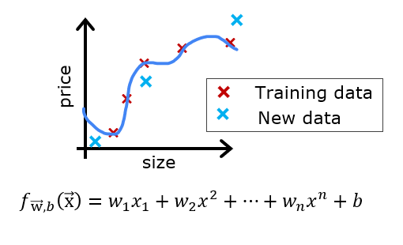

Practice Lab: Advice for Applying Machine Learning¶
In this lab, you will explore techniques to evaluate and improve your machine learning models.
In this lab, you will explore techniques to evaluate and improve your machine learning models.
First, let's run the cell below to import all the packages that you will need during this assignment.
import numpy as np
%matplotlib widget
import matplotlib.pyplot as plt
from sklearn.linear_model import LinearRegression, Ridge
from sklearn.preprocessing import StandardScaler, PolynomialFeatures
from sklearn.model_selection import train_test_split
from sklearn.metrics import mean_squared_error
import tensorflow as tf
from tensorflow.keras.models import Sequential
from tensorflow.keras.layers import Dense
from tensorflow.keras.activations import relu,linear
from tensorflow.keras.losses import SparseCategoricalCrossentropy
from tensorflow.keras.optimizers import Adam
import logging
logging.getLogger("tensorflow").setLevel(logging.ERROR)
from public_tests_a1 import *
tf.keras.backend.set_floatx('float64')
from assigment_utils import *
tf.autograph.set_verbosity(0)
 Let's say you have created a machine learning model and you find it fits your training data very well. You're done? Not quite. The goal of creating the model was to be able to predict values for *new* examples.
How can you test your model's performance on new data before deploying it?
The answer has two parts:
Lectures advised reserving 20-40% of your data set for testing. Let's use an sklearn function train_test_split to perform the split. Double-check the shapes after running the following cell.
# Generate some data
X,y,x_ideal,y_ideal = gen_data(18, 2, 0.7)
print("X.shape", X.shape, "y.shape", y.shape)
#split the data using sklearn routine
X_train, X_test, y_train, y_test = train_test_split(X,y,test_size=0.33, random_state=1)
print("X_train.shape", X_train.shape, "y_train.shape", y_train.shape)
print("X_test.shape", X_test.shape, "y_test.shape", y_test.shape)
X.shape (18,) y.shape (18,) X_train.shape (12,) y_train.shape (12,) X_test.shape (6,) y_test.shape (6,)
You can see below the data points that will be part of training (in red) are intermixed with those that the model is not trained on (test). This particular data set is a quadratic function with noise added. The "ideal" curve is shown for reference.
fig, ax = plt.subplots(1,1,figsize=(4,4))
ax.plot(x_ideal, y_ideal, "--", color = "orangered", label="y_ideal", lw=1)
ax.set_title("Training, Test",fontsize = 14)
ax.set_xlabel("x")
ax.set_ylabel("y")
ax.scatter(X_train, y_train, color = "red", label="train")
ax.scatter(X_test, y_test, color = dlc["dlblue"], label="test")
ax.legend(loc='upper left')
plt.show()
Canvas(toolbar=Toolbar(toolitems=[('Home', 'Reset original view', 'home', 'home'), ('Back', 'Back to previous
When evaluating a linear regression model, you average the squared error difference of the predicted values and the target values.
$$ J_\text{test}(\mathbf{w},b) = \frac{1}{2m_\text{test}}\sum_{i=0}^{m_\text{test}-1} ( f_{\mathbf{w},b}(\mathbf{x}^{(i)}_\text{test}) - y^{(i)}_\text{test} )^2 \tag{1} $$Below, create a function to evaluate the error on a data set for a linear regression model.
# UNQ_C1
# GRADED CELL: eval_mse
def eval_mse(y, yhat):
"""
Calculate the mean squared error on a data set.
Args:
y : (ndarray Shape (m,) or (m,1)) target value of each example
yhat : (ndarray Shape (m,) or (m,1)) predicted value of each example
Returns:
err: (scalar)
"""
m = len(y)
err = 0.0
for i in range(m):
### START CODE HERE ###
err+=(y[i]-yhat[i])**2
### END CODE HERE ###
err/= 2*m
return(err)
y_hat = np.array([2.4, 4.2])
y_tmp = np.array([2.3, 4.1])
eval_mse(y_hat, y_tmp)
# BEGIN UNIT TEST
test_eval_mse(eval_mse)
# END UNIT TEST
All tests passed.
Click for hints
def eval_mse(y, yhat):
"""
Calculate the mean squared error on a data set.
Args:
y : (ndarray Shape (m,) or (m,1)) target value of each example
yhat : (ndarray Shape (m,) or (m,1)) predicted value of each example
Returns:
err: (scalar)
"""
m = len(y)
err = 0.0
for i in range(m):
err_i = ( (yhat[i] - y[i])**2 )
err += err_i
err = err / (2*m)
return(err)
Let's build a high degree polynomial model to minimize training error. This will use the linear_regression functions from sklearn. The code is in the imported utility file if you would like to see the details. The steps below are:
# create a model in sklearn, train on training data
degree = 10
lmodel = lin_model(degree)
lmodel.fit(X_train, y_train)
# predict on training data, find training error
yhat = lmodel.predict(X_train)
err_train = lmodel.mse(y_train, yhat)
# predict on test data, find error
yhat = lmodel.predict(X_test)
err_test = lmodel.mse(y_test, yhat)
The computed error on the training set is substantially less than that of the test set.
print(f"training err {err_train:0.2f}, test err {err_test:0.2f}")
training err 58.01, test err 171215.01
The following plot shows why this is. The model fits the training data very well. To do so, it has created a complex function. The test data was not part of the training and the model does a poor job of predicting on this data.
This model would be described as 1) is overfitting, 2) has high variance 3) 'generalizes' poorly.
# plot predictions over data range
x = np.linspace(0,int(X.max()),100) # predict values for plot
y_pred = lmodel.predict(x).reshape(-1,1)
plt_train_test(X_train, y_train, X_test, y_test, x, y_pred, x_ideal, y_ideal, degree)
Canvas(toolbar=Toolbar(toolitems=[('Home', 'Reset original view', 'home', 'home'), ('Back', 'Back to previous
The test set error shows this model will not work well on new data. If you use the test error to guide improvements in the model, then the model will perform well on the test data... but the test data was meant to represent new data. You need yet another set of data to test new data performance.
The proposal made during lecture is to separate data into three groups. The distribution of training, cross-validation and test sets shown in the below table is a typical distribution, but can be varied depending on the amount of data available.
| data | % of total | Description |
|---|---|---|
| training | 60 | Data used to tune model parameters $w$ and $b$ in training or fitting |
| cross-validation | 20 | Data used to tune other model parameters like degree of polynomial, regularization or the architecture of a neural network. |
| test | 20 | Data used to test the model after tuning to gauge performance on new data |
Let's generate three data sets below. We'll once again use train_test_split from sklearn but will call it twice to get three splits:
# Generate data
X,y, x_ideal,y_ideal = gen_data(40, 5, 0.7)
print("X.shape", X.shape, "y.shape", y.shape)
#split the data using sklearn routine
X_train, X_, y_train, y_ = train_test_split(X,y,test_size=0.40, random_state=1)
X_cv, X_test, y_cv, y_test = train_test_split(X_,y_,test_size=0.50, random_state=1)
print("X_train.shape", X_train.shape, "y_train.shape", y_train.shape)
print("X_cv.shape", X_cv.shape, "y_cv.shape", y_cv.shape)
print("X_test.shape", X_test.shape, "y_test.shape", y_test.shape)
X.shape (40,) y.shape (40,) X_train.shape (24,) y_train.shape (24,) X_cv.shape (8,) y_cv.shape (8,) X_test.shape (8,) y_test.shape (8,)

Above, it was clear the degree of the polynomial model was too high. How can you choose a good value? It turns out, as shown in the diagram, the training and cross-validation performance can provide guidance. By trying a range of degree values, the training and cross-validation performance can be evaluated. As the degree becomes too large, the cross-validation performance will start to degrade relative to the training performance. Let's try this on our example.
You can see below the datapoints that will be part of training (in red) are intermixed with those that the model is not trained on (test and cv).
fig, ax = plt.subplots(1,1,figsize=(4,4))
ax.plot(x_ideal, y_ideal, "--", color = "orangered", label="y_ideal", lw=1)
ax.set_title("Training, CV, Test",fontsize = 14)
ax.set_xlabel("x")
ax.set_ylabel("y")
ax.scatter(X_train, y_train, color = "red", label="train")
ax.scatter(X_cv, y_cv, color = dlc["dlorange"], label="cv")
ax.scatter(X_test, y_test, color = dlc["dlblue"], label="test")
ax.legend(loc='upper left')
plt.show()
Canvas(toolbar=Toolbar(toolitems=[('Home', 'Reset original view', 'home', 'home'), ('Back', 'Back to previous
In previous labs, you found that you could create a model capable of fitting complex curves by utilizing a polynomial (See Course1, Week2 Feature Engineering and Polynomial Regression Lab). Further, you demonstrated that by increasing the degree of the polynomial, you could create overfitting. (See Course 1, Week3, Over-Fitting Lab). Let's use that knowledge here to test our ability to tell the difference between over-fitting and under-fitting.
Let's train the model repeatedly, increasing the degree of the polynomial each iteration. Here, we're going to use the scikit-learn linear regression model for speed and simplicity.
max_degree = 9
err_train = np.zeros(max_degree)
err_cv = np.zeros(max_degree)
x = np.linspace(0,int(X.max()),100)
y_pred = np.zeros((100,max_degree)) #columns are lines to plot
for degree in range(max_degree):
lmodel = lin_model(degree+1)
lmodel.fit(X_train, y_train)
yhat = lmodel.predict(X_train)
err_train[degree] = lmodel.mse(y_train, yhat)
yhat = lmodel.predict(X_cv)
err_cv[degree] = lmodel.mse(y_cv, yhat)
y_pred[:,degree] = lmodel.predict(x)
optimal_degree = np.argmin(err_cv)+1
Let's plot the result:
plt.close("all")
plt_optimal_degree(X_train, y_train, X_cv, y_cv, x, y_pred, x_ideal, y_ideal,
err_train, err_cv, optimal_degree, max_degree)
Canvas(toolbar=Toolbar(toolitems=[('Home', 'Reset original view', 'home', 'home'), ('Back', 'Back to previous
The plot above demonstrates that separating data into two groups, data the model is trained on and data the model has not been trained on, can be used to determine if the model is underfitting or overfitting. In our example, we created a variety of models varying from underfitting to overfitting by increasing the degree of the polynomial used.
It's worth noting that the curves in these examples as not as smooth as one might draw for a lecture. It's clear the specific data points assigned to each group can change your results significantly. The general trend is what is important.
In previous labs, you have utilized regularization to reduce overfitting. Similar to degree, one can use the same methodology to tune the regularization parameter lambda ($\lambda$).
Let's demonstrate this by starting with a high degree polynomial and varying the regularization parameter.
lambda_range = np.array([0.0, 1e-6, 1e-5, 1e-4,1e-3,1e-2, 1e-1,1,10,100])
num_steps = len(lambda_range)
degree = 10
err_train = np.zeros(num_steps)
err_cv = np.zeros(num_steps)
x = np.linspace(0,int(X.max()),100)
y_pred = np.zeros((100,num_steps)) #columns are lines to plot
for i in range(num_steps):
lambda_= lambda_range[i]
lmodel = lin_model(degree, regularization=True, lambda_=lambda_)
lmodel.fit(X_train, y_train)
yhat = lmodel.predict(X_train)
err_train[i] = lmodel.mse(y_train, yhat)
yhat = lmodel.predict(X_cv)
err_cv[i] = lmodel.mse(y_cv, yhat)
y_pred[:,i] = lmodel.predict(x)
optimal_reg_idx = np.argmin(err_cv)
plt.close("all")
plt_tune_regularization(X_train, y_train, X_cv, y_cv, x, y_pred, err_train, err_cv, optimal_reg_idx, lambda_range)
Canvas(toolbar=Toolbar(toolitems=[('Home', 'Reset original view', 'home', 'home'), ('Back', 'Back to previous
Above, the plots show that as regularization increases, the model moves from a high variance (overfitting) model to a high bias (underfitting) model. The vertical line in the right plot shows the optimal value of lambda. In this example, the polynomial degree was set to 10.
When a model is overfitting (high variance), collecting additional data can improve performance. Let's try that here.
X_train, y_train, X_cv, y_cv, x, y_pred, err_train, err_cv, m_range,degree = tune_m()
plt_tune_m(X_train, y_train, X_cv, y_cv, x, y_pred, err_train, err_cv, m_range, degree)
Canvas(toolbar=Toolbar(toolitems=[('Home', 'Reset original view', 'home', 'home'), ('Back', 'Back to previous
The above plots show that when a model has high variance and is overfitting, adding more examples improves performance. Note the curves on the left plot. The final curve with the highest value of $m$ is a smooth curve that is in the center of the data. On the right, as the number of examples increases, the performance of the training set and cross-validation set converge to similar values. Note that the curves are not as smooth as one might see in a lecture. That is to be expected. The trend remains clear: more data improves generalization.
Note that adding more examples when the model has high bias (underfitting) does not improve performance.
Above, you tuned aspects of a polynomial regression model. Here, you will work with a neural network model. Let's start by creating a classification data set.
Run the cell below to generate a data set and split it into training, cross-validation (CV) and test sets. In this example, we're increasing the percentage of cross-validation data points for emphasis.
# Generate and split data set
X, y, centers, classes, std = gen_blobs()
# split the data. Large CV population for demonstration
X_train, X_, y_train, y_ = train_test_split(X,y,test_size=0.50, random_state=1)
X_cv, X_test, y_cv, y_test = train_test_split(X_,y_,test_size=0.20, random_state=1)
print("X_train.shape:", X_train.shape, "X_cv.shape:", X_cv.shape, "X_test.shape:", X_test.shape)
X_train.shape: (400, 2) X_cv.shape: (320, 2) X_test.shape: (80, 2)
plt_train_eq_dist(X_train, y_train,classes, X_cv, y_cv, centers, std)
Canvas(toolbar=Toolbar(toolitems=[('Home', 'Reset original view', 'home', 'home'), ('Back', 'Back to previous
Above, you can see the data on the left. There are six clusters identified by color. Both training points (dots) and cross-validataion points (triangles) are shown. The interesting points are those that fall in ambiguous locations where either cluster might consider them members. What would you expect a neural network model to do? What would be an example of overfitting? underfitting?
On the right is an example of an 'ideal' model, or a model one might create knowing the source of the data. The lines represent 'equal distance' boundaries where the distance between center points is equal. It's worth noting that this model would "misclassify" roughly 8% of the total data set.
The evaluation function for categorical models used here is simply the fraction of incorrect predictions:
$$ J_{cv} =\frac{1}{m}\sum_{i=0}^{m-1}
\begin{cases}
1, & \text{if $\hat{y}^{(i)} \neq y^{(i)}$}\\
0, & \text{otherwise}
\end{cases}
$$
Below, complete the routine to calculate classification error. Note, in this lab, target values are the index of the category and are not one-hot encoded.
# UNQ_C2
# GRADED CELL: eval_cat_err
def eval_cat_err(y, yhat):
"""
Calculate the categorization error
Args:
y : (ndarray Shape (m,) or (m,1)) target value of each example
yhat : (ndarray Shape (m,) or (m,1)) predicted value of each example
Returns:|
cerr: (scalar)
"""
m = len(y)
incorrect = 0
for i in range(m):
### START CODE HERE ###
if(yhat[i]!=y[i]):
incorrect+=1
### END CODE HERE ###
cerr=incorrect/m
return(cerr)
y_hat = np.array([1, 2, 0])
y_tmp = np.array([1, 2, 3])
print(f"categorization error {np.squeeze(eval_cat_err(y_hat, y_tmp)):0.3f}, expected:0.333" )
y_hat = np.array([[1], [2], [0], [3]])
y_tmp = np.array([[1], [2], [1], [3]])
print(f"categorization error {np.squeeze(eval_cat_err(y_hat, y_tmp)):0.3f}, expected:0.250" )
# BEGIN UNIT TEST
test_eval_cat_err(eval_cat_err)
# END UNIT TEST
# BEGIN UNIT TEST
test_eval_cat_err(eval_cat_err)
# END UNIT TEST
categorization error 0.333, expected:0.333 categorization error 0.250, expected:0.250 All tests passed. All tests passed.
Click for hints
def eval_cat_err(y, yhat):
"""
Calculate the categorization error
Args:
y : (ndarray Shape (m,) or (m,1)) target value of each example
yhat : (ndarray Shape (m,) or (m,1)) predicted value of each example
Returns:|
cerr: (scalar)
"""
m = len(y)
incorrect = 0
for i in range(m):
if yhat[i] != y[i]: # @REPLACE
incorrect += 1 # @REPLACE
cerr = incorrect/m # @REPLACE
return(cerr)
Below, you will build two models. A complex model and a simple model. You will evaluate the models to determine if they are likely to overfit or underfit.
Below, compose a three-layer model:
SparseCategoricalCrossentropy, remember to use from_logits=True# UNQ_C3
# GRADED CELL: model
import logging
logging.getLogger("tensorflow").setLevel(logging.ERROR)
tf.random.set_seed(1234)
model = Sequential(
[
### START CODE HERE ###
tf.keras.layers.Dense(120, activation="relu"),
tf.keras.layers.Dense(40, activation="relu"),
tf.keras.layers.Dense(6, activation="linear")
### END CODE HERE ###
], name="Complex"
)
model.compile(
### START CODE HERE ###
loss=SparseCategoricalCrossentropy(from_logits=True),
optimizer=tf.keras.optimizers.Adam(lr=0.01),
### END CODE HERE ###
)
# BEGIN UNIT TEST
model.fit(
X_train, y_train,
epochs=1000
)
# END UNIT TEST
Epoch 1/1000 13/13 [==============================] - 0s 1ms/step - loss: 1.1106 Epoch 2/1000 13/13 [==============================] - 0s 1ms/step - loss: 0.4281 Epoch 3/1000 13/13 [==============================] - 0s 1ms/step - loss: 0.3345 Epoch 4/1000 13/13 [==============================] - 0s 3ms/step - loss: 0.2896 Epoch 5/1000 13/13 [==============================] - 0s 1ms/step - loss: 0.2867 Epoch 6/1000 13/13 [==============================] - 0s 1ms/step - loss: 0.2918 Epoch 7/1000 13/13 [==============================] - 0s 1ms/step - loss: 0.2497 Epoch 8/1000 13/13 [==============================] - 0s 1ms/step - loss: 0.2298 Epoch 9/1000 13/13 [==============================] - 0s 3ms/step - loss: 0.2307 Epoch 10/1000 13/13 [==============================] - 0s 1ms/step - loss: 0.2071 Epoch 11/1000 13/13 [==============================] - 0s 1ms/step - loss: 0.2115 Epoch 12/1000 13/13 [==============================] - 0s 1ms/step - loss: 0.2070 Epoch 13/1000 13/13 [==============================] - 0s 3ms/step - loss: 0.2366 Epoch 14/1000 13/13 [==============================] - 0s 1ms/step - loss: 0.2261 Epoch 15/1000 13/13 [==============================] - 0s 1ms/step - loss: 0.2224 Epoch 16/1000 13/13 [==============================] - 0s 1ms/step - loss: 0.2055 Epoch 17/1000 13/13 [==============================] - 0s 1ms/step - loss: 0.2044 Epoch 18/1000 13/13 [==============================] - 0s 3ms/step - loss: 0.2006 Epoch 19/1000 13/13 [==============================] - 0s 1ms/step - loss: 0.2168 Epoch 20/1000 13/13 [==============================] - 0s 1ms/step - loss: 0.2047 Epoch 21/1000 13/13 [==============================] - 0s 1ms/step - loss: 0.2237 Epoch 22/1000 13/13 [==============================] - 0s 1ms/step - loss: 0.2497 Epoch 23/1000 13/13 [==============================] - 0s 3ms/step - loss: 0.2113 Epoch 24/1000 13/13 [==============================] - 0s 1ms/step - loss: 0.2025 Epoch 25/1000 13/13 [==============================] - 0s 1ms/step - loss: 0.2107 Epoch 26/1000 13/13 [==============================] - 0s 1ms/step - loss: 0.2000 Epoch 27/1000 13/13 [==============================] - 0s 1ms/step - loss: 0.1935 Epoch 28/1000 13/13 [==============================] - 0s 3ms/step - loss: 0.1963 Epoch 29/1000 13/13 [==============================] - 0s 1ms/step - loss: 0.2188 Epoch 30/1000 13/13 [==============================] - 0s 1ms/step - loss: 0.2424 Epoch 31/1000 13/13 [==============================] - 0s 1ms/step - loss: 0.1969 Epoch 32/1000 13/13 [==============================] - 0s 3ms/step - loss: 0.1950 Epoch 33/1000 13/13 [==============================] - 0s 1ms/step - loss: 0.1904 Epoch 34/1000 13/13 [==============================] - 0s 1ms/step - loss: 0.2173 Epoch 35/1000 13/13 [==============================] - 0s 1ms/step - loss: 0.2074 Epoch 36/1000 13/13 [==============================] - 0s 1ms/step - loss: 0.1768 Epoch 37/1000 13/13 [==============================] - 0s 3ms/step - loss: 0.1794 Epoch 38/1000 13/13 [==============================] - 0s 1ms/step - loss: 0.1733 Epoch 39/1000 13/13 [==============================] - 0s 1ms/step - loss: 0.1955 Epoch 40/1000 13/13 [==============================] - 0s 1ms/step - loss: 0.1870 Epoch 41/1000 13/13 [==============================] - 0s 1ms/step - loss: 0.2128 Epoch 42/1000 13/13 [==============================] - 0s 1ms/step - loss: 0.1987 Epoch 43/1000 13/13 [==============================] - 0s 1ms/step - loss: 0.1895 Epoch 44/1000 13/13 [==============================] - 0s 1ms/step - loss: 0.2073 Epoch 45/1000 13/13 [==============================] - 0s 1ms/step - loss: 0.2148 Epoch 46/1000 13/13 [==============================] - 0s 3ms/step - loss: 0.1774 Epoch 47/1000 13/13 [==============================] - 0s 1ms/step - loss: 0.1886 Epoch 48/1000 13/13 [==============================] - 0s 1ms/step - loss: 0.1763 Epoch 49/1000 13/13 [==============================] - 0s 1ms/step - loss: 0.1769 Epoch 50/1000 13/13 [==============================] - 0s 1ms/step - loss: 0.1763 Epoch 51/1000 13/13 [==============================] - 0s 3ms/step - loss: 0.2020 Epoch 52/1000 13/13 [==============================] - 0s 1ms/step - loss: 0.1889 Epoch 53/1000 13/13 [==============================] - 0s 1ms/step - loss: 0.2035 Epoch 54/1000 13/13 [==============================] - 0s 1ms/step - loss: 0.1761 Epoch 55/1000 13/13 [==============================] - 0s 1ms/step - loss: 0.1838 Epoch 56/1000 13/13 [==============================] - 0s 3ms/step - loss: 0.1774 Epoch 57/1000 13/13 [==============================] - 0s 1ms/step - loss: 0.1953 Epoch 58/1000 13/13 [==============================] - 0s 1ms/step - loss: 0.1882 Epoch 59/1000 13/13 [==============================] - 0s 1ms/step - loss: 0.1860 Epoch 60/1000 13/13 [==============================] - 0s 3ms/step - loss: 0.1919 Epoch 61/1000 13/13 [==============================] - 0s 1ms/step - loss: 0.1848 Epoch 62/1000 13/13 [==============================] - 0s 1ms/step - loss: 0.1630 Epoch 63/1000 13/13 [==============================] - 0s 1ms/step - loss: 0.1616 Epoch 64/1000 13/13 [==============================] - 0s 1ms/step - loss: 0.2008 Epoch 65/1000 13/13 [==============================] - 0s 3ms/step - loss: 0.1936 Epoch 66/1000 13/13 [==============================] - 0s 1ms/step - loss: 0.1824 Epoch 67/1000 13/13 [==============================] - 0s 1ms/step - loss: 0.2092 Epoch 68/1000 13/13 [==============================] - 0s 1ms/step - loss: 0.2287 Epoch 69/1000 13/13 [==============================] - 0s 1ms/step - loss: 0.1877 Epoch 70/1000 13/13 [==============================] - 0s 3ms/step - loss: 0.1716 Epoch 71/1000 13/13 [==============================] - 0s 1ms/step - loss: 0.1917 Epoch 72/1000 13/13 [==============================] - 0s 1ms/step - loss: 0.1703 Epoch 73/1000 13/13 [==============================] - 0s 1ms/step - loss: 0.1750 Epoch 74/1000 13/13 [==============================] - 0s 3ms/step - loss: 0.1836 Epoch 75/1000 13/13 [==============================] - 0s 1ms/step - loss: 0.1696 Epoch 76/1000 13/13 [==============================] - 0s 1ms/step - loss: 0.1542 Epoch 77/1000 13/13 [==============================] - 0s 1ms/step - loss: 0.1715 Epoch 78/1000 13/13 [==============================] - 0s 1ms/step - loss: 0.1545 Epoch 79/1000 13/13 [==============================] - 0s 3ms/step - loss: 0.1593 Epoch 80/1000 13/13 [==============================] - 0s 1ms/step - loss: 0.1844 Epoch 81/1000 13/13 [==============================] - 0s 1ms/step - loss: 0.1881 Epoch 82/1000 13/13 [==============================] - 0s 1ms/step - loss: 0.1696 Epoch 83/1000 13/13 [==============================] - 0s 1ms/step - loss: 0.1614 Epoch 84/1000 13/13 [==============================] - 0s 3ms/step - loss: 0.1762 Epoch 85/1000 13/13 [==============================] - 0s 1ms/step - loss: 0.1779 Epoch 86/1000 13/13 [==============================] - 0s 1ms/step - loss: 0.1658 Epoch 87/1000 13/13 [==============================] - 0s 1ms/step - loss: 0.1614 Epoch 88/1000 13/13 [==============================] - 0s 3ms/step - loss: 0.1639 Epoch 89/1000 13/13 [==============================] - 0s 1ms/step - loss: 0.1629 Epoch 90/1000 13/13 [==============================] - 0s 1ms/step - loss: 0.1475 Epoch 91/1000 13/13 [==============================] - 0s 1ms/step - loss: 0.1452 Epoch 92/1000 13/13 [==============================] - 0s 1ms/step - loss: 0.1473 Epoch 93/1000 13/13 [==============================] - 0s 3ms/step - loss: 0.1490 Epoch 94/1000 13/13 [==============================] - 0s 1ms/step - loss: 0.1650 Epoch 95/1000 13/13 [==============================] - 0s 1ms/step - loss: 0.1706 Epoch 96/1000 13/13 [==============================] - 0s 1ms/step - loss: 0.1704 Epoch 97/1000 13/13 [==============================] - 0s 1ms/step - loss: 0.1764 Epoch 98/1000 13/13 [==============================] - 0s 3ms/step - loss: 0.1855 Epoch 99/1000 13/13 [==============================] - 0s 1ms/step - loss: 0.1685 Epoch 100/1000 13/13 [==============================] - 0s 1ms/step - loss: 0.1569 Epoch 101/1000 13/13 [==============================] - 0s 1ms/step - loss: 0.1645 Epoch 102/1000 13/13 [==============================] - 0s 1ms/step - loss: 0.1737 Epoch 103/1000 13/13 [==============================] - 0s 1ms/step - loss: 0.1935 Epoch 104/1000 13/13 [==============================] - 0s 1ms/step - loss: 0.1600 Epoch 105/1000 13/13 [==============================] - 0s 1ms/step - loss: 0.1483 Epoch 106/1000 13/13 [==============================] - 0s 1ms/step - loss: 0.1555 Epoch 107/1000 13/13 [==============================] - 0s 3ms/step - loss: 0.1678 Epoch 108/1000 13/13 [==============================] - 0s 1ms/step - loss: 0.1435 Epoch 109/1000 13/13 [==============================] - 0s 1ms/step - loss: 0.1419 Epoch 110/1000 13/13 [==============================] - 0s 1ms/step - loss: 0.1494 Epoch 111/1000 13/13 [==============================] - 0s 4ms/step - loss: 0.1538 Epoch 112/1000 13/13 [==============================] - 0s 1ms/step - loss: 0.1682 Epoch 113/1000 13/13 [==============================] - 0s 1ms/step - loss: 0.1687 Epoch 114/1000 13/13 [==============================] - 0s 1ms/step - loss: 0.1436 Epoch 115/1000 13/13 [==============================] - 0s 1ms/step - loss: 0.1366 Epoch 116/1000 13/13 [==============================] - 0s 3ms/step - loss: 0.1485 Epoch 117/1000 13/13 [==============================] - 0s 1ms/step - loss: 0.1400 Epoch 118/1000 13/13 [==============================] - 0s 1ms/step - loss: 0.1357 Epoch 119/1000 13/13 [==============================] - 0s 1ms/step - loss: 0.1444 Epoch 120/1000 13/13 [==============================] - 0s 3ms/step - loss: 0.1403 Epoch 121/1000 13/13 [==============================] - 0s 1ms/step - loss: 0.1465 Epoch 122/1000 13/13 [==============================] - 0s 1ms/step - loss: 0.1549 Epoch 123/1000 13/13 [==============================] - 0s 1ms/step - loss: 0.1402 Epoch 124/1000 13/13 [==============================] - 0s 1ms/step - loss: 0.1337 Epoch 125/1000 13/13 [==============================] - 0s 3ms/step - loss: 0.1422 Epoch 126/1000 13/13 [==============================] - 0s 1ms/step - loss: 0.1560 Epoch 127/1000 13/13 [==============================] - 0s 1ms/step - loss: 0.1319 Epoch 128/1000 13/13 [==============================] - 0s 1ms/step - loss: 0.1389 Epoch 129/1000 13/13 [==============================] - 0s 1ms/step - loss: 0.1404 Epoch 130/1000 13/13 [==============================] - 0s 3ms/step - loss: 0.1299 Epoch 131/1000 13/13 [==============================] - 0s 1ms/step - loss: 0.1247 Epoch 132/1000 13/13 [==============================] - 0s 1ms/step - loss: 0.1244 Epoch 133/1000 13/13 [==============================] - 0s 1ms/step - loss: 0.1260 Epoch 134/1000 13/13 [==============================] - 0s 1ms/step - loss: 0.1158 Epoch 135/1000 13/13 [==============================] - 0s 1ms/step - loss: 0.1343 Epoch 136/1000 13/13 [==============================] - 0s 1ms/step - loss: 0.1306 Epoch 137/1000 13/13 [==============================] - 0s 1ms/step - loss: 0.1294 Epoch 138/1000 13/13 [==============================] - 0s 1ms/step - loss: 0.1297 Epoch 139/1000 13/13 [==============================] - 0s 3ms/step - loss: 0.1342 Epoch 140/1000 13/13 [==============================] - 0s 1ms/step - loss: 0.1255 Epoch 141/1000 13/13 [==============================] - 0s 1ms/step - loss: 0.1232 Epoch 142/1000 13/13 [==============================] - 0s 1ms/step - loss: 0.1199 Epoch 143/1000 13/13 [==============================] - 0s 1ms/step - loss: 0.1192 Epoch 144/1000 13/13 [==============================] - 0s 3ms/step - loss: 0.1192 Epoch 145/1000 13/13 [==============================] - 0s 1ms/step - loss: 0.1342 Epoch 146/1000 13/13 [==============================] - 0s 1ms/step - loss: 0.1477 Epoch 147/1000 13/13 [==============================] - 0s 1ms/step - loss: 0.1780 Epoch 148/1000 13/13 [==============================] - 0s 1ms/step - loss: 0.1673 Epoch 149/1000 13/13 [==============================] - 0s 1ms/step - loss: 0.1402 Epoch 150/1000 13/13 [==============================] - 0s 1ms/step - loss: 0.1292 Epoch 151/1000 13/13 [==============================] - 0s 1ms/step - loss: 0.1296 Epoch 152/1000 13/13 [==============================] - 0s 1ms/step - loss: 0.1221 Epoch 153/1000 13/13 [==============================] - 0s 3ms/step - loss: 0.1300 Epoch 154/1000 13/13 [==============================] - 0s 1ms/step - loss: 0.1316 Epoch 155/1000 13/13 [==============================] - 0s 1ms/step - loss: 0.1274 Epoch 156/1000 13/13 [==============================] - 0s 1ms/step - loss: 0.1192 Epoch 157/1000 13/13 [==============================] - 0s 1ms/step - loss: 0.1266 Epoch 158/1000 13/13 [==============================] - 0s 3ms/step - loss: 0.1185 Epoch 159/1000 13/13 [==============================] - 0s 1ms/step - loss: 0.1197 Epoch 160/1000 13/13 [==============================] - 0s 1ms/step - loss: 0.1148 Epoch 161/1000 13/13 [==============================] - 0s 1ms/step - loss: 0.1137 Epoch 162/1000 13/13 [==============================] - 0s 1ms/step - loss: 0.1427 Epoch 163/1000 13/13 [==============================] - 0s 3ms/step - loss: 0.1420 Epoch 164/1000 13/13 [==============================] - 0s 1ms/step - loss: 0.1327 Epoch 165/1000 13/13 [==============================] - 0s 1ms/step - loss: 0.1276 Epoch 166/1000 13/13 [==============================] - 0s 1ms/step - loss: 0.1099 Epoch 167/1000 13/13 [==============================] - 0s 1ms/step - loss: 0.1205 Epoch 168/1000 13/13 [==============================] - 0s 3ms/step - loss: 0.1307 Epoch 169/1000 13/13 [==============================] - 0s 1ms/step - loss: 0.1476 Epoch 170/1000 13/13 [==============================] - 0s 1ms/step - loss: 0.1673 Epoch 171/1000 13/13 [==============================] - 0s 1ms/step - loss: 0.1349 Epoch 172/1000 13/13 [==============================] - 0s 3ms/step - loss: 0.1183 Epoch 173/1000 13/13 [==============================] - 0s 1ms/step - loss: 0.1225 Epoch 174/1000 13/13 [==============================] - 0s 1ms/step - loss: 0.1276 Epoch 175/1000 13/13 [==============================] - 0s 1ms/step - loss: 0.1029 Epoch 176/1000 13/13 [==============================] - 0s 1ms/step - loss: 0.1134 Epoch 177/1000 13/13 [==============================] - 0s 3ms/step - loss: 0.1081 Epoch 178/1000 13/13 [==============================] - 0s 1ms/step - loss: 0.1245 Epoch 179/1000 13/13 [==============================] - 0s 1ms/step - loss: 0.1346 Epoch 180/1000 13/13 [==============================] - 0s 1ms/step - loss: 0.1233 Epoch 181/1000 13/13 [==============================] - 0s 1ms/step - loss: 0.1113 Epoch 182/1000 13/13 [==============================] - 0s 1ms/step - loss: 0.1040 Epoch 183/1000 13/13 [==============================] - 0s 1ms/step - loss: 0.1155 Epoch 184/1000 13/13 [==============================] - 0s 1ms/step - loss: 0.1049 Epoch 185/1000 13/13 [==============================] - 0s 1ms/step - loss: 0.1111 Epoch 186/1000 13/13 [==============================] - 0s 3ms/step - loss: 0.1079 Epoch 187/1000 13/13 [==============================] - 0s 1ms/step - loss: 0.1021 Epoch 188/1000 13/13 [==============================] - 0s 1ms/step - loss: 0.1048 Epoch 189/1000 13/13 [==============================] - 0s 1ms/step - loss: 0.0971 Epoch 190/1000 13/13 [==============================] - 0s 1ms/step - loss: 0.0985 Epoch 191/1000 13/13 [==============================] - 0s 3ms/step - loss: 0.1026 Epoch 192/1000 13/13 [==============================] - 0s 1ms/step - loss: 0.1111 Epoch 193/1000 13/13 [==============================] - 0s 1ms/step - loss: 0.0991 Epoch 194/1000 13/13 [==============================] - 0s 1ms/step - loss: 0.0890 Epoch 195/1000 13/13 [==============================] - 0s 3ms/step - loss: 0.0880 Epoch 196/1000 13/13 [==============================] - 0s 1ms/step - loss: 0.1006 Epoch 197/1000 13/13 [==============================] - 0s 1ms/step - loss: 0.0974 Epoch 198/1000 13/13 [==============================] - 0s 1ms/step - loss: 0.1141 Epoch 199/1000 13/13 [==============================] - 0s 1ms/step - loss: 0.1423 Epoch 200/1000 13/13 [==============================] - 0s 3ms/step - loss: 0.1381 Epoch 201/1000 13/13 [==============================] - 0s 1ms/step - loss: 0.1105 Epoch 202/1000 13/13 [==============================] - 0s 1ms/step - loss: 0.1005 Epoch 203/1000 13/13 [==============================] - 0s 1ms/step - loss: 0.0846 Epoch 204/1000 13/13 [==============================] - 0s 1ms/step - loss: 0.1125 Epoch 205/1000 13/13 [==============================] - 0s 3ms/step - loss: 0.1129 Epoch 206/1000 13/13 [==============================] - 0s 1ms/step - loss: 0.1219 Epoch 207/1000 13/13 [==============================] - 0s 1ms/step - loss: 0.1161 Epoch 208/1000 13/13 [==============================] - 0s 1ms/step - loss: 0.1137 Epoch 209/1000 13/13 [==============================] - 0s 3ms/step - loss: 0.1178 Epoch 210/1000 13/13 [==============================] - 0s 1ms/step - loss: 0.1017 Epoch 211/1000 13/13 [==============================] - 0s 1ms/step - loss: 0.1051 Epoch 212/1000 13/13 [==============================] - 0s 1ms/step - loss: 0.1014 Epoch 213/1000 13/13 [==============================] - 0s 1ms/step - loss: 0.1096 Epoch 214/1000 13/13 [==============================] - 0s 3ms/step - loss: 0.1087 Epoch 215/1000 13/13 [==============================] - 0s 1ms/step - loss: 0.1047 Epoch 216/1000 13/13 [==============================] - 0s 1ms/step - loss: 0.1044 Epoch 217/1000 13/13 [==============================] - 0s 1ms/step - loss: 0.1044 Epoch 218/1000 13/13 [==============================] - 0s 1ms/step - loss: 0.1006 Epoch 219/1000 13/13 [==============================] - 0s 3ms/step - loss: 0.1093 Epoch 220/1000 13/13 [==============================] - 0s 1ms/step - loss: 0.1041 Epoch 221/1000 13/13 [==============================] - 0s 1ms/step - loss: 0.0956 Epoch 222/1000 13/13 [==============================] - 0s 1ms/step - loss: 0.1109 Epoch 223/1000 13/13 [==============================] - 0s 1ms/step - loss: 0.1041 Epoch 224/1000 13/13 [==============================] - 0s 1ms/step - loss: 0.1000 Epoch 225/1000 13/13 [==============================] - 0s 1ms/step - loss: 0.0968 Epoch 226/1000 13/13 [==============================] - 0s 1ms/step - loss: 0.0951 Epoch 227/1000 13/13 [==============================] - 0s 1ms/step - loss: 0.1092 Epoch 228/1000 13/13 [==============================] - 0s 3ms/step - loss: 0.1041 Epoch 229/1000 13/13 [==============================] - 0s 1ms/step - loss: 0.1032 Epoch 230/1000 13/13 [==============================] - 0s 1ms/step - loss: 0.1153 Epoch 231/1000 13/13 [==============================] - 0s 1ms/step - loss: 0.1237 Epoch 232/1000 13/13 [==============================] - 0s 1ms/step - loss: 0.0978 Epoch 233/1000 13/13 [==============================] - 0s 3ms/step - loss: 0.1074 Epoch 234/1000 13/13 [==============================] - 0s 1ms/step - loss: 0.1059 Epoch 235/1000 13/13 [==============================] - 0s 1ms/step - loss: 0.1122 Epoch 236/1000 13/13 [==============================] - 0s 1ms/step - loss: 0.0974 Epoch 237/1000 13/13 [==============================] - 0s 1ms/step - loss: 0.0879 Epoch 238/1000 13/13 [==============================] - 0s 3ms/step - loss: 0.0913 Epoch 239/1000 13/13 [==============================] - 0s 1ms/step - loss: 0.0831 Epoch 240/1000 13/13 [==============================] - 0s 1ms/step - loss: 0.0752 Epoch 241/1000 13/13 [==============================] - 0s 1ms/step - loss: 0.0733 Epoch 242/1000 13/13 [==============================] - 0s 1ms/step - loss: 0.0886 Epoch 243/1000 13/13 [==============================] - 0s 1ms/step - loss: 0.0837 Epoch 244/1000 13/13 [==============================] - 0s 1ms/step - loss: 0.0866 Epoch 245/1000 13/13 [==============================] - 0s 1ms/step - loss: 0.0933 Epoch 246/1000 13/13 [==============================] - 0s 1ms/step - loss: 0.0976 Epoch 247/1000 13/13 [==============================] - 0s 3ms/step - loss: 0.1150 Epoch 248/1000 13/13 [==============================] - 0s 1ms/step - loss: 0.0904 Epoch 249/1000 13/13 [==============================] - 0s 1ms/step - loss: 0.1073 Epoch 250/1000 13/13 [==============================] - 0s 1ms/step - loss: 0.1296 Epoch 251/1000 13/13 [==============================] - 0s 1ms/step - loss: 0.1022 Epoch 252/1000 13/13 [==============================] - 0s 3ms/step - loss: 0.0987 Epoch 253/1000 13/13 [==============================] - 0s 1ms/step - loss: 0.0846 Epoch 254/1000 13/13 [==============================] - 0s 1ms/step - loss: 0.0813 Epoch 255/1000 13/13 [==============================] - 0s 1ms/step - loss: 0.0924 Epoch 256/1000 13/13 [==============================] - 0s 1ms/step - loss: 0.0799 Epoch 257/1000 13/13 [==============================] - 0s 3ms/step - loss: 0.0947 Epoch 258/1000 13/13 [==============================] - 0s 1ms/step - loss: 0.0956 Epoch 259/1000 13/13 [==============================] - 0s 1ms/step - loss: 0.0788 Epoch 260/1000 13/13 [==============================] - 0s 1ms/step - loss: 0.1018 Epoch 261/1000 13/13 [==============================] - 0s 1ms/step - loss: 0.0942 Epoch 262/1000 13/13 [==============================] - 0s 1ms/step - loss: 0.0780 Epoch 263/1000 13/13 [==============================] - 0s 1ms/step - loss: 0.0821 Epoch 264/1000 13/13 [==============================] - 0s 1ms/step - loss: 0.0795 Epoch 265/1000 13/13 [==============================] - 0s 1ms/step - loss: 0.0924 Epoch 266/1000 13/13 [==============================] - 0s 3ms/step - loss: 0.0948 Epoch 267/1000 13/13 [==============================] - 0s 1ms/step - loss: 0.0767 Epoch 268/1000 13/13 [==============================] - 0s 1ms/step - loss: 0.0720 Epoch 269/1000 13/13 [==============================] - 0s 1ms/step - loss: 0.0742 Epoch 270/1000 13/13 [==============================] - 0s 1ms/step - loss: 0.0747 Epoch 271/1000 13/13 [==============================] - 0s 3ms/step - loss: 0.0726 Epoch 272/1000 13/13 [==============================] - 0s 1ms/step - loss: 0.0984 Epoch 273/1000 13/13 [==============================] - 0s 1ms/step - loss: 0.1074 Epoch 274/1000 13/13 [==============================] - 0s 1ms/step - loss: 0.0836 Epoch 275/1000 13/13 [==============================] - 0s 1ms/step - loss: 0.0783 Epoch 276/1000 13/13 [==============================] - 0s 3ms/step - loss: 0.0799 Epoch 277/1000 13/13 [==============================] - 0s 1ms/step - loss: 0.1225 Epoch 278/1000 13/13 [==============================] - 0s 1ms/step - loss: 0.1017 Epoch 279/1000 13/13 [==============================] - 0s 1ms/step - loss: 0.0990 Epoch 280/1000 13/13 [==============================] - 0s 3ms/step - loss: 0.1014 Epoch 281/1000 13/13 [==============================] - 0s 1ms/step - loss: 0.0808 Epoch 282/1000 13/13 [==============================] - 0s 1ms/step - loss: 0.0798 Epoch 283/1000 13/13 [==============================] - 0s 1ms/step - loss: 0.0847 Epoch 284/1000 13/13 [==============================] - 0s 1ms/step - loss: 0.0755 Epoch 285/1000 13/13 [==============================] - 0s 3ms/step - loss: 0.0631 Epoch 286/1000 13/13 [==============================] - 0s 1ms/step - loss: 0.0651 Epoch 287/1000 13/13 [==============================] - 0s 1ms/step - loss: 0.0602 Epoch 288/1000 13/13 [==============================] - 0s 1ms/step - loss: 0.0733 Epoch 289/1000 13/13 [==============================] - 0s 1ms/step - loss: 0.0659 Epoch 290/1000 13/13 [==============================] - 0s 1ms/step - loss: 0.0682 Epoch 291/1000 13/13 [==============================] - 0s 1ms/step - loss: 0.0745 Epoch 292/1000 13/13 [==============================] - 0s 1ms/step - loss: 0.0848 Epoch 293/1000 13/13 [==============================] - 0s 1ms/step - loss: 0.0701 Epoch 294/1000 13/13 [==============================] - 0s 3ms/step - loss: 0.0828 Epoch 295/1000 13/13 [==============================] - 0s 1ms/step - loss: 0.0741 Epoch 296/1000 13/13 [==============================] - 0s 1ms/step - loss: 0.0890 Epoch 297/1000 13/13 [==============================] - 0s 1ms/step - loss: 0.0800 Epoch 298/1000 13/13 [==============================] - 0s 1ms/step - loss: 0.0803 Epoch 299/1000 13/13 [==============================] - 0s 3ms/step - loss: 0.0765 Epoch 300/1000 13/13 [==============================] - 0s 1ms/step - loss: 0.0733 Epoch 301/1000 13/13 [==============================] - 0s 1ms/step - loss: 0.0544 Epoch 302/1000 13/13 [==============================] - 0s 1ms/step - loss: 0.0718 Epoch 303/1000 13/13 [==============================] - 0s 1ms/step - loss: 0.0877 Epoch 304/1000 13/13 [==============================] - 0s 3ms/step - loss: 0.0687 Epoch 305/1000 13/13 [==============================] - 0s 1ms/step - loss: 0.0671 Epoch 306/1000 13/13 [==============================] - 0s 1ms/step - loss: 0.0575 Epoch 307/1000 13/13 [==============================] - 0s 1ms/step - loss: 0.0773 Epoch 308/1000 13/13 [==============================] - 0s 1ms/step - loss: 0.0779 Epoch 309/1000 13/13 [==============================] - 0s 1ms/step - loss: 0.0696 Epoch 310/1000 13/13 [==============================] - 0s 1ms/step - loss: 0.0883 Epoch 311/1000 13/13 [==============================] - 0s 1ms/step - loss: 0.0880 Epoch 312/1000 13/13 [==============================] - 0s 1ms/step - loss: 0.0707 Epoch 313/1000 13/13 [==============================] - 0s 3ms/step - loss: 0.0603 Epoch 314/1000 13/13 [==============================] - 0s 1ms/step - loss: 0.0772 Epoch 315/1000 13/13 [==============================] - 0s 1ms/step - loss: 0.0660 Epoch 316/1000 13/13 [==============================] - 0s 1ms/step - loss: 0.0586 Epoch 317/1000 13/13 [==============================] - 0s 1ms/step - loss: 0.0618 Epoch 318/1000 13/13 [==============================] - 0s 3ms/step - loss: 0.0588 Epoch 319/1000 13/13 [==============================] - 0s 1ms/step - loss: 0.0674 Epoch 320/1000 13/13 [==============================] - 0s 1ms/step - loss: 0.0598 Epoch 321/1000 13/13 [==============================] - 0s 1ms/step - loss: 0.0670 Epoch 322/1000 13/13 [==============================] - 0s 1ms/step - loss: 0.0970 Epoch 323/1000 13/13 [==============================] - 0s 3ms/step - loss: 0.1366 Epoch 324/1000 13/13 [==============================] - 0s 1ms/step - loss: 0.1148 Epoch 325/1000 13/13 [==============================] - 0s 1ms/step - loss: 0.0837 Epoch 326/1000 13/13 [==============================] - 0s 1ms/step - loss: 0.0749 Epoch 327/1000 13/13 [==============================] - 0s 3ms/step - loss: 0.0746 Epoch 328/1000 13/13 [==============================] - 0s 1ms/step - loss: 0.0698 Epoch 329/1000 13/13 [==============================] - 0s 1ms/step - loss: 0.0691 Epoch 330/1000 13/13 [==============================] - 0s 1ms/step - loss: 0.0541 Epoch 331/1000 13/13 [==============================] - 0s 1ms/step - loss: 0.0558 Epoch 332/1000 13/13 [==============================] - 0s 3ms/step - loss: 0.0653 Epoch 333/1000 13/13 [==============================] - 0s 1ms/step - loss: 0.0593 Epoch 334/1000 13/13 [==============================] - 0s 1ms/step - loss: 0.0606 Epoch 335/1000 13/13 [==============================] - 0s 1ms/step - loss: 0.0696 Epoch 336/1000 13/13 [==============================] - 0s 1ms/step - loss: 0.0713 Epoch 337/1000 13/13 [==============================] - 0s 3ms/step - loss: 0.0628 Epoch 338/1000 13/13 [==============================] - 0s 1ms/step - loss: 0.0752 Epoch 339/1000 13/13 [==============================] - 0s 1ms/step - loss: 0.0723 Epoch 340/1000 13/13 [==============================] - 0s 1ms/step - loss: 0.0647 Epoch 341/1000 13/13 [==============================] - 0s 1ms/step - loss: 0.0688 Epoch 342/1000 13/13 [==============================] - 0s 3ms/step - loss: 0.0793 Epoch 343/1000 13/13 [==============================] - 0s 1ms/step - loss: 0.0595 Epoch 344/1000 13/13 [==============================] - 0s 1ms/step - loss: 0.0528 Epoch 345/1000 13/13 [==============================] - 0s 1ms/step - loss: 0.0552 Epoch 346/1000 13/13 [==============================] - 0s 3ms/step - loss: 0.0534 Epoch 347/1000 13/13 [==============================] - 0s 1ms/step - loss: 0.0471 Epoch 348/1000 13/13 [==============================] - 0s 1ms/step - loss: 0.0491 Epoch 349/1000 13/13 [==============================] - 0s 1ms/step - loss: 0.0524 Epoch 350/1000 13/13 [==============================] - 0s 1ms/step - loss: 0.0696 Epoch 351/1000 13/13 [==============================] - 0s 3ms/step - loss: 0.0690 Epoch 352/1000 13/13 [==============================] - 0s 1ms/step - loss: 0.0864 Epoch 353/1000 13/13 [==============================] - 0s 1ms/step - loss: 0.0999 Epoch 354/1000 13/13 [==============================] - 0s 1ms/step - loss: 0.1094 Epoch 355/1000 13/13 [==============================] - 0s 1ms/step - loss: 0.1189 Epoch 356/1000 13/13 [==============================] - 0s 3ms/step - loss: 0.1059 Epoch 357/1000 13/13 [==============================] - 0s 1ms/step - loss: 0.0655 Epoch 358/1000 13/13 [==============================] - 0s 1ms/step - loss: 0.0652 Epoch 359/1000 13/13 [==============================] - 0s 1ms/step - loss: 0.0544 Epoch 360/1000 13/13 [==============================] - 0s 1ms/step - loss: 0.0545 Epoch 361/1000 13/13 [==============================] - 0s 3ms/step - loss: 0.0549 Epoch 362/1000 13/13 [==============================] - 0s 1ms/step - loss: 0.0581 Epoch 363/1000 13/13 [==============================] - 0s 1ms/step - loss: 0.0506 Epoch 364/1000 13/13 [==============================] - 0s 1ms/step - loss: 0.0579 Epoch 365/1000 13/13 [==============================] - 0s 3ms/step - loss: 0.0583 Epoch 366/1000 13/13 [==============================] - 0s 1ms/step - loss: 0.0607 Epoch 367/1000 13/13 [==============================] - 0s 1ms/step - loss: 0.0428 Epoch 368/1000 13/13 [==============================] - 0s 1ms/step - loss: 0.0495 Epoch 369/1000 13/13 [==============================] - 0s 1ms/step - loss: 0.0721 Epoch 370/1000 13/13 [==============================] - 0s 3ms/step - loss: 0.0817 Epoch 371/1000 13/13 [==============================] - 0s 1ms/step - loss: 0.0588 Epoch 372/1000 13/13 [==============================] - 0s 1ms/step - loss: 0.0516 Epoch 373/1000 13/13 [==============================] - 0s 1ms/step - loss: 0.0526 Epoch 374/1000 13/13 [==============================] - 0s 1ms/step - loss: 0.0463 Epoch 375/1000 13/13 [==============================] - 0s 3ms/step - loss: 0.0447 Epoch 376/1000 13/13 [==============================] - 0s 1ms/step - loss: 0.0441 Epoch 377/1000 13/13 [==============================] - 0s 1ms/step - loss: 0.0422 Epoch 378/1000 13/13 [==============================] - 0s 1ms/step - loss: 0.0391 Epoch 379/1000 13/13 [==============================] - 0s 1ms/step - loss: 0.0343 Epoch 380/1000 13/13 [==============================] - 0s 3ms/step - loss: 0.0461 Epoch 381/1000 13/13 [==============================] - 0s 1ms/step - loss: 0.0442 Epoch 382/1000 13/13 [==============================] - 0s 1ms/step - loss: 0.0496 Epoch 383/1000 13/13 [==============================] - 0s 1ms/step - loss: 0.0509 Epoch 384/1000 13/13 [==============================] - 0s 1ms/step - loss: 0.0479 Epoch 385/1000 13/13 [==============================] - 0s 3ms/step - loss: 0.0520 Epoch 386/1000 13/13 [==============================] - 0s 1ms/step - loss: 0.0391 Epoch 387/1000 13/13 [==============================] - 0s 1ms/step - loss: 0.0394 Epoch 388/1000 13/13 [==============================] - 0s 1ms/step - loss: 0.0510 Epoch 389/1000 13/13 [==============================] - 0s 3ms/step - loss: 0.0525 Epoch 390/1000 13/13 [==============================] - 0s 1ms/step - loss: 0.0666 Epoch 391/1000 13/13 [==============================] - 0s 2ms/step - loss: 0.0490 Epoch 392/1000 13/13 [==============================] - 0s 1ms/step - loss: 0.0551 Epoch 393/1000 13/13 [==============================] - 0s 1ms/step - loss: 0.0689 Epoch 394/1000 13/13 [==============================] - 0s 3ms/step - loss: 0.0663 Epoch 395/1000 13/13 [==============================] - 0s 1ms/step - loss: 0.0844 Epoch 396/1000 13/13 [==============================] - 0s 1ms/step - loss: 0.0704 Epoch 397/1000 13/13 [==============================] - 0s 1ms/step - loss: 0.0700 Epoch 398/1000 13/13 [==============================] - 0s 1ms/step - loss: 0.0591 Epoch 399/1000 13/13 [==============================] - 0s 3ms/step - loss: 0.0586 Epoch 400/1000 13/13 [==============================] - 0s 1ms/step - loss: 0.0628 Epoch 401/1000 13/13 [==============================] - 0s 1ms/step - loss: 0.1717 Epoch 402/1000 13/13 [==============================] - 0s 1ms/step - loss: 0.1648 Epoch 403/1000 13/13 [==============================] - 0s 3ms/step - loss: 0.1616 Epoch 404/1000 13/13 [==============================] - 0s 1ms/step - loss: 0.1326 Epoch 405/1000 13/13 [==============================] - 0s 1ms/step - loss: 0.1367 Epoch 406/1000 13/13 [==============================] - 0s 1ms/step - loss: 0.1098 Epoch 407/1000 13/13 [==============================] - 0s 1ms/step - loss: 0.1122 Epoch 408/1000 13/13 [==============================] - 0s 3ms/step - loss: 0.1798 Epoch 409/1000 13/13 [==============================] - 0s 1ms/step - loss: 0.1268 Epoch 410/1000 13/13 [==============================] - 0s 1ms/step - loss: 0.1123 Epoch 411/1000 13/13 [==============================] - 0s 1ms/step - loss: 0.0720 Epoch 412/1000 13/13 [==============================] - 0s 1ms/step - loss: 0.0774 Epoch 413/1000 13/13 [==============================] - 0s 3ms/step - loss: 0.0661 Epoch 414/1000 13/13 [==============================] - 0s 1ms/step - loss: 0.0720 Epoch 415/1000 13/13 [==============================] - 0s 1ms/step - loss: 0.0580 Epoch 416/1000 13/13 [==============================] - 0s 1ms/step - loss: 0.0572 Epoch 417/1000 13/13 [==============================] - 0s 1ms/step - loss: 0.0586 Epoch 418/1000 13/13 [==============================] - 0s 3ms/step - loss: 0.0546 Epoch 419/1000 13/13 [==============================] - 0s 2ms/step - loss: 0.0573 Epoch 420/1000 13/13 [==============================] - 0s 1ms/step - loss: 0.0721 Epoch 421/1000 13/13 [==============================] - 0s 1ms/step - loss: 0.0658 Epoch 422/1000 13/13 [==============================] - 0s 3ms/step - loss: 0.0686 Epoch 423/1000 13/13 [==============================] - 0s 1ms/step - loss: 0.0491 Epoch 424/1000 13/13 [==============================] - 0s 1ms/step - loss: 0.0647 Epoch 425/1000 13/13 [==============================] - 0s 1ms/step - loss: 0.0465 Epoch 426/1000 13/13 [==============================] - 0s 1ms/step - loss: 0.0435 Epoch 427/1000 13/13 [==============================] - 0s 3ms/step - loss: 0.0362 Epoch 428/1000 13/13 [==============================] - 0s 1ms/step - loss: 0.0411 Epoch 429/1000 13/13 [==============================] - 0s 1ms/step - loss: 0.0374 Epoch 430/1000 13/13 [==============================] - 0s 1ms/step - loss: 0.0412 Epoch 431/1000 13/13 [==============================] - 0s 1ms/step - loss: 0.0391 Epoch 432/1000 13/13 [==============================] - 0s 3ms/step - loss: 0.0412 Epoch 433/1000 13/13 [==============================] - 0s 1ms/step - loss: 0.0479 Epoch 434/1000 13/13 [==============================] - 0s 1ms/step - loss: 0.0436 Epoch 435/1000 13/13 [==============================] - 0s 1ms/step - loss: 0.0482 Epoch 436/1000 13/13 [==============================] - 0s 3ms/step - loss: 0.0420 Epoch 437/1000 13/13 [==============================] - 0s 1ms/step - loss: 0.0347 Epoch 438/1000 13/13 [==============================] - 0s 1ms/step - loss: 0.0390 Epoch 439/1000 13/13 [==============================] - 0s 1ms/step - loss: 0.0328 Epoch 440/1000 13/13 [==============================] - 0s 1ms/step - loss: 0.0371 Epoch 441/1000 13/13 [==============================] - 0s 3ms/step - loss: 0.0334 Epoch 442/1000 13/13 [==============================] - 0s 1ms/step - loss: 0.0348 Epoch 443/1000 13/13 [==============================] - 0s 1ms/step - loss: 0.0370 Epoch 444/1000 13/13 [==============================] - 0s 1ms/step - loss: 0.0408 Epoch 445/1000 13/13 [==============================] - 0s 1ms/step - loss: 0.0329 Epoch 446/1000 13/13 [==============================] - 0s 3ms/step - loss: 0.0318 Epoch 447/1000 13/13 [==============================] - 0s 1ms/step - loss: 0.0391 Epoch 448/1000 13/13 [==============================] - 0s 1ms/step - loss: 0.0408 Epoch 449/1000 13/13 [==============================] - 0s 1ms/step - loss: 0.0346 Epoch 450/1000 13/13 [==============================] - 0s 1ms/step - loss: 0.0340 Epoch 451/1000 13/13 [==============================] - 0s 1ms/step - loss: 0.0332 Epoch 452/1000 13/13 [==============================] - 0s 1ms/step - loss: 0.0325 Epoch 453/1000 13/13 [==============================] - 0s 1ms/step - loss: 0.0406 Epoch 454/1000 13/13 [==============================] - 0s 1ms/step - loss: 0.0394 Epoch 455/1000 13/13 [==============================] - 0s 3ms/step - loss: 0.0584 Epoch 456/1000 13/13 [==============================] - 0s 1ms/step - loss: 0.0440 Epoch 457/1000 13/13 [==============================] - 0s 1ms/step - loss: 0.0412 Epoch 458/1000 13/13 [==============================] - 0s 1ms/step - loss: 0.0468 Epoch 459/1000 13/13 [==============================] - 0s 1ms/step - loss: 0.0373 Epoch 460/1000 13/13 [==============================] - 0s 3ms/step - loss: 0.0329 Epoch 461/1000 13/13 [==============================] - 0s 1ms/step - loss: 0.0390 Epoch 462/1000 13/13 [==============================] - 0s 1ms/step - loss: 0.0284 Epoch 463/1000 13/13 [==============================] - 0s 1ms/step - loss: 0.0310 Epoch 464/1000 13/13 [==============================] - 0s 1ms/step - loss: 0.0348 Epoch 465/1000 13/13 [==============================] - 0s 1ms/step - loss: 0.0302 Epoch 466/1000 13/13 [==============================] - 0s 1ms/step - loss: 0.0348 Epoch 467/1000 13/13 [==============================] - 0s 1ms/step - loss: 0.0350 Epoch 468/1000 13/13 [==============================] - 0s 1ms/step - loss: 0.0347 Epoch 469/1000 13/13 [==============================] - 0s 3ms/step - loss: 0.0305 Epoch 470/1000 13/13 [==============================] - 0s 1ms/step - loss: 0.0369 Epoch 471/1000 13/13 [==============================] - 0s 1ms/step - loss: 0.0436 Epoch 472/1000 13/13 [==============================] - 0s 1ms/step - loss: 0.0543 Epoch 473/1000 13/13 [==============================] - 0s 1ms/step - loss: 0.0477 Epoch 474/1000 13/13 [==============================] - 0s 3ms/step - loss: 0.0630 Epoch 475/1000 13/13 [==============================] - 0s 1ms/step - loss: 0.1523 Epoch 476/1000 13/13 [==============================] - 0s 1ms/step - loss: 0.3248 Epoch 477/1000 13/13 [==============================] - 0s 1ms/step - loss: 0.1600 Epoch 478/1000 13/13 [==============================] - 0s 1ms/step - loss: 0.1623 Epoch 479/1000 13/13 [==============================] - 0s 3ms/step - loss: 0.1206 Epoch 480/1000 13/13 [==============================] - 0s 1ms/step - loss: 0.0955 Epoch 481/1000 13/13 [==============================] - 0s 1ms/step - loss: 0.1595 Epoch 482/1000 13/13 [==============================] - 0s 1ms/step - loss: 0.1626 Epoch 483/1000 13/13 [==============================] - 0s 1ms/step - loss: 0.1170 Epoch 484/1000 13/13 [==============================] - 0s 1ms/step - loss: 0.1481 Epoch 485/1000 13/13 [==============================] - 0s 1ms/step - loss: 0.0686 Epoch 486/1000 13/13 [==============================] - 0s 1ms/step - loss: 0.0590 Epoch 487/1000 13/13 [==============================] - 0s 1ms/step - loss: 0.0651 Epoch 488/1000 13/13 [==============================] - 0s 3ms/step - loss: 0.0575 Epoch 489/1000 13/13 [==============================] - 0s 1ms/step - loss: 0.0593 Epoch 490/1000 13/13 [==============================] - 0s 1ms/step - loss: 0.0539 Epoch 491/1000 13/13 [==============================] - 0s 1ms/step - loss: 0.0451 Epoch 492/1000 13/13 [==============================] - 0s 1ms/step - loss: 0.0436 Epoch 493/1000 13/13 [==============================] - 0s 3ms/step - loss: 0.0484 Epoch 494/1000 13/13 [==============================] - 0s 1ms/step - loss: 0.0639 Epoch 495/1000 13/13 [==============================] - 0s 1ms/step - loss: 0.0497 Epoch 496/1000 13/13 [==============================] - 0s 1ms/step - loss: 0.0787 Epoch 497/1000 13/13 [==============================] - 0s 1ms/step - loss: 0.0805 Epoch 498/1000 13/13 [==============================] - 0s 1ms/step - loss: 0.0639 Epoch 499/1000 13/13 [==============================] - 0s 1ms/step - loss: 0.0504 Epoch 500/1000 13/13 [==============================] - 0s 1ms/step - loss: 0.0478 Epoch 501/1000 13/13 [==============================] - 0s 1ms/step - loss: 0.0466 Epoch 502/1000 13/13 [==============================] - 0s 3ms/step - loss: 0.0419 Epoch 503/1000 13/13 [==============================] - 0s 1ms/step - loss: 0.0365 Epoch 504/1000 13/13 [==============================] - 0s 1ms/step - loss: 0.0352 Epoch 505/1000 13/13 [==============================] - 0s 1ms/step - loss: 0.0368 Epoch 506/1000 13/13 [==============================] - 0s 1ms/step - loss: 0.0337 Epoch 507/1000 13/13 [==============================] - 0s 3ms/step - loss: 0.0375 Epoch 508/1000 13/13 [==============================] - 0s 1ms/step - loss: 0.0317 Epoch 509/1000 13/13 [==============================] - 0s 1ms/step - loss: 0.0318 Epoch 510/1000 13/13 [==============================] - 0s 1ms/step - loss: 0.0364 Epoch 511/1000 13/13 [==============================] - 0s 1ms/step - loss: 0.0337 Epoch 512/1000 13/13 [==============================] - 0s 3ms/step - loss: 0.0290 Epoch 513/1000 13/13 [==============================] - 0s 1ms/step - loss: 0.0317 Epoch 514/1000 13/13 [==============================] - 0s 1ms/step - loss: 0.0320 Epoch 515/1000 13/13 [==============================] - 0s 1ms/step - loss: 0.0271 Epoch 516/1000 13/13 [==============================] - 0s 1ms/step - loss: 0.0343 Epoch 517/1000 13/13 [==============================] - 0s 3ms/step - loss: 0.0308 Epoch 518/1000 13/13 [==============================] - 0s 1ms/step - loss: 0.0388 Epoch 519/1000 13/13 [==============================] - 0s 1ms/step - loss: 0.0444 Epoch 520/1000 13/13 [==============================] - 0s 1ms/step - loss: 0.0381 Epoch 521/1000 13/13 [==============================] - 0s 3ms/step - loss: 0.0356 Epoch 522/1000 13/13 [==============================] - 0s 1ms/step - loss: 0.0324 Epoch 523/1000 13/13 [==============================] - 0s 1ms/step - loss: 0.0292 Epoch 524/1000 13/13 [==============================] - 0s 1ms/step - loss: 0.0308 Epoch 525/1000 13/13 [==============================] - 0s 1ms/step - loss: 0.0308 Epoch 526/1000 13/13 [==============================] - 0s 3ms/step - loss: 0.0365 Epoch 527/1000 13/13 [==============================] - 0s 1ms/step - loss: 0.0351 Epoch 528/1000 13/13 [==============================] - 0s 1ms/step - loss: 0.0305 Epoch 529/1000 13/13 [==============================] - 0s 2ms/step - loss: 0.0320 Epoch 530/1000 13/13 [==============================] - 0s 1ms/step - loss: 0.0351 Epoch 531/1000 13/13 [==============================] - 0s 1ms/step - loss: 0.0290 Epoch 532/1000 13/13 [==============================] - 0s 1ms/step - loss: 0.0329 Epoch 533/1000 13/13 [==============================] - 0s 1ms/step - loss: 0.0387 Epoch 534/1000 13/13 [==============================] - 0s 1ms/step - loss: 0.0431 Epoch 535/1000 13/13 [==============================] - 0s 3ms/step - loss: 0.0414 Epoch 536/1000 13/13 [==============================] - 0s 1ms/step - loss: 0.0318 Epoch 537/1000 13/13 [==============================] - 0s 1ms/step - loss: 0.0285 Epoch 538/1000 13/13 [==============================] - 0s 1ms/step - loss: 0.0278 Epoch 539/1000 13/13 [==============================] - 0s 1ms/step - loss: 0.0274 Epoch 540/1000 13/13 [==============================] - 0s 3ms/step - loss: 0.0338 Epoch 541/1000 13/13 [==============================] - 0s 1ms/step - loss: 0.0262 Epoch 542/1000 13/13 [==============================] - 0s 1ms/step - loss: 0.0283 Epoch 543/1000 13/13 [==============================] - 0s 1ms/step - loss: 0.0265 Epoch 544/1000 13/13 [==============================] - 0s 1ms/step - loss: 0.0267 Epoch 545/1000 13/13 [==============================] - 0s 3ms/step - loss: 0.0278 Epoch 546/1000 13/13 [==============================] - 0s 1ms/step - loss: 0.0256 Epoch 547/1000 13/13 [==============================] - 0s 1ms/step - loss: 0.0302 Epoch 548/1000 13/13 [==============================] - 0s 1ms/step - loss: 0.0323 Epoch 549/1000 13/13 [==============================] - 0s 3ms/step - loss: 0.0262 Epoch 550/1000 13/13 [==============================] - 0s 1ms/step - loss: 0.0288 Epoch 551/1000 13/13 [==============================] - 0s 1ms/step - loss: 0.0283 Epoch 552/1000 13/13 [==============================] - 0s 1ms/step - loss: 0.0315 Epoch 553/1000 13/13 [==============================] - 0s 1ms/step - loss: 0.0411 Epoch 554/1000 13/13 [==============================] - 0s 3ms/step - loss: 0.0376 Epoch 555/1000 13/13 [==============================] - 0s 1ms/step - loss: 0.0346 Epoch 556/1000 13/13 [==============================] - 0s 1ms/step - loss: 0.0296 Epoch 557/1000 13/13 [==============================] - 0s 1ms/step - loss: 0.0307 Epoch 558/1000 13/13 [==============================] - 0s 1ms/step - loss: 0.0270 Epoch 559/1000 13/13 [==============================] - 0s 3ms/step - loss: 0.0268 Epoch 560/1000 13/13 [==============================] - 0s 1ms/step - loss: 0.0303 Epoch 561/1000 13/13 [==============================] - 0s 1ms/step - loss: 0.0251 Epoch 562/1000 13/13 [==============================] - 0s 1ms/step - loss: 0.0267 Epoch 563/1000 13/13 [==============================] - 0s 1ms/step - loss: 0.0249 Epoch 564/1000 13/13 [==============================] - 0s 1ms/step - loss: 0.0265 Epoch 565/1000 13/13 [==============================] - 0s 1ms/step - loss: 0.0297 Epoch 566/1000 13/13 [==============================] - 0s 1ms/step - loss: 0.0338 Epoch 567/1000 13/13 [==============================] - 0s 1ms/step - loss: 0.0432 Epoch 568/1000 13/13 [==============================] - 0s 3ms/step - loss: 0.0483 Epoch 569/1000 13/13 [==============================] - 0s 1ms/step - loss: 0.1205 Epoch 570/1000 13/13 [==============================] - 0s 1ms/step - loss: 0.1063 Epoch 571/1000 13/13 [==============================] - 0s 1ms/step - loss: 0.1035 Epoch 572/1000 13/13 [==============================] - 0s 1ms/step - loss: 0.1415 Epoch 573/1000 13/13 [==============================] - 0s 3ms/step - loss: 0.1534 Epoch 574/1000 13/13 [==============================] - 0s 1ms/step - loss: 0.1474 Epoch 575/1000 13/13 [==============================] - 0s 1ms/step - loss: 0.0772 Epoch 576/1000 13/13 [==============================] - 0s 1ms/step - loss: 0.0691 Epoch 577/1000 13/13 [==============================] - 0s 1ms/step - loss: 0.0770 Epoch 578/1000 13/13 [==============================] - 0s 3ms/step - loss: 0.0637 Epoch 579/1000 13/13 [==============================] - 0s 1ms/step - loss: 0.0528 Epoch 580/1000 13/13 [==============================] - 0s 1ms/step - loss: 0.0371 Epoch 581/1000 13/13 [==============================] - 0s 1ms/step - loss: 0.0356 Epoch 582/1000 13/13 [==============================] - 0s 1ms/step - loss: 0.0431 Epoch 583/1000 13/13 [==============================] - 0s 3ms/step - loss: 0.0300 Epoch 584/1000 13/13 [==============================] - 0s 1ms/step - loss: 0.0309 Epoch 585/1000 13/13 [==============================] - 0s 1ms/step - loss: 0.0307 Epoch 586/1000 13/13 [==============================] - 0s 1ms/step - loss: 0.0321 Epoch 587/1000 13/13 [==============================] - 0s 3ms/step - loss: 0.0266 Epoch 588/1000 13/13 [==============================] - 0s 1ms/step - loss: 0.0274 Epoch 589/1000 13/13 [==============================] - 0s 1ms/step - loss: 0.0276 Epoch 590/1000 13/13 [==============================] - 0s 1ms/step - loss: 0.0267 Epoch 591/1000 13/13 [==============================] - 0s 1ms/step - loss: 0.0305 Epoch 592/1000 13/13 [==============================] - 0s 3ms/step - loss: 0.0278 Epoch 593/1000 13/13 [==============================] - 0s 1ms/step - loss: 0.0343 Epoch 594/1000 13/13 [==============================] - 0s 1ms/step - loss: 0.0259 Epoch 595/1000 13/13 [==============================] - 0s 1ms/step - loss: 0.0259 Epoch 596/1000 13/13 [==============================] - 0s 1ms/step - loss: 0.0258 Epoch 597/1000 13/13 [==============================] - 0s 3ms/step - loss: 0.0262 Epoch 598/1000 13/13 [==============================] - 0s 1ms/step - loss: 0.0254 Epoch 599/1000 13/13 [==============================] - 0s 1ms/step - loss: 0.0251 Epoch 600/1000 13/13 [==============================] - 0s 1ms/step - loss: 0.0241 Epoch 601/1000 13/13 [==============================] - 0s 1ms/step - loss: 0.0269 Epoch 602/1000 13/13 [==============================] - 0s 3ms/step - loss: 0.0287 Epoch 603/1000 13/13 [==============================] - 0s 1ms/step - loss: 0.0257 Epoch 604/1000 13/13 [==============================] - 0s 1ms/step - loss: 0.0254 Epoch 605/1000 13/13 [==============================] - 0s 1ms/step - loss: 0.0232 Epoch 606/1000 13/13 [==============================] - 0s 3ms/step - loss: 0.0281 Epoch 607/1000 13/13 [==============================] - 0s 1ms/step - loss: 0.0247 Epoch 608/1000 13/13 [==============================] - 0s 1ms/step - loss: 0.0254 Epoch 609/1000 13/13 [==============================] - 0s 1ms/step - loss: 0.0237 Epoch 610/1000 13/13 [==============================] - 0s 1ms/step - loss: 0.0253 Epoch 611/1000 13/13 [==============================] - 0s 3ms/step - loss: 0.0256 Epoch 612/1000 13/13 [==============================] - 0s 1ms/step - loss: 0.0235 Epoch 613/1000 13/13 [==============================] - 0s 1ms/step - loss: 0.0290 Epoch 614/1000 13/13 [==============================] - 0s 1ms/step - loss: 0.0236 Epoch 615/1000 13/13 [==============================] - 0s 1ms/step - loss: 0.0249 Epoch 616/1000 13/13 [==============================] - 0s 3ms/step - loss: 0.0253 Epoch 617/1000 13/13 [==============================] - 0s 1ms/step - loss: 0.0231 Epoch 618/1000 13/13 [==============================] - 0s 1ms/step - loss: 0.0241 Epoch 619/1000 13/13 [==============================] - 0s 1ms/step - loss: 0.0253 Epoch 620/1000 13/13 [==============================] - 0s 1ms/step - loss: 0.0290 Epoch 621/1000 13/13 [==============================] - 0s 1ms/step - loss: 0.0456 Epoch 622/1000 13/13 [==============================] - 0s 1ms/step - loss: 0.0647 Epoch 623/1000 13/13 [==============================] - 0s 1ms/step - loss: 0.1078 Epoch 624/1000 13/13 [==============================] - 0s 1ms/step - loss: 0.1180 Epoch 625/1000 13/13 [==============================] - 0s 3ms/step - loss: 0.0837 Epoch 626/1000 13/13 [==============================] - 0s 1ms/step - loss: 0.0510 Epoch 627/1000 13/13 [==============================] - 0s 1ms/step - loss: 0.0333 Epoch 628/1000 13/13 [==============================] - 0s 1ms/step - loss: 0.0327 Epoch 629/1000 13/13 [==============================] - 0s 1ms/step - loss: 0.0389 Epoch 630/1000 13/13 [==============================] - 0s 3ms/step - loss: 0.0347 Epoch 631/1000 13/13 [==============================] - 0s 1ms/step - loss: 0.0342 Epoch 632/1000 13/13 [==============================] - 0s 1ms/step - loss: 0.0272 Epoch 633/1000 13/13 [==============================] - 0s 1ms/step - loss: 0.0240 Epoch 634/1000 13/13 [==============================] - 0s 1ms/step - loss: 0.0235 Epoch 635/1000 13/13 [==============================] - 0s 3ms/step - loss: 0.0243 Epoch 636/1000 13/13 [==============================] - 0s 1ms/step - loss: 0.0225 Epoch 637/1000 13/13 [==============================] - 0s 1ms/step - loss: 0.0222 Epoch 638/1000 13/13 [==============================] - 0s 1ms/step - loss: 0.0223 Epoch 639/1000 13/13 [==============================] - 0s 1ms/step - loss: 0.0215 Epoch 640/1000 13/13 [==============================] - 0s 1ms/step - loss: 0.0247 Epoch 641/1000 13/13 [==============================] - 0s 1ms/step - loss: 0.0248 Epoch 642/1000 13/13 [==============================] - 0s 1ms/step - loss: 0.0257 Epoch 643/1000 13/13 [==============================] - 0s 1ms/step - loss: 0.0213 Epoch 644/1000 13/13 [==============================] - 0s 3ms/step - loss: 0.0277 Epoch 645/1000 13/13 [==============================] - 0s 1ms/step - loss: 0.0266 Epoch 646/1000 13/13 [==============================] - 0s 1ms/step - loss: 0.0320 Epoch 647/1000 13/13 [==============================] - 0s 1ms/step - loss: 0.0269 Epoch 648/1000 13/13 [==============================] - 0s 1ms/step - loss: 0.0357 Epoch 649/1000 13/13 [==============================] - 0s 3ms/step - loss: 0.0321 Epoch 650/1000 13/13 [==============================] - 0s 1ms/step - loss: 0.0255 Epoch 651/1000 13/13 [==============================] - 0s 1ms/step - loss: 0.0287 Epoch 652/1000 13/13 [==============================] - 0s 1ms/step - loss: 0.0251 Epoch 653/1000 13/13 [==============================] - 0s 1ms/step - loss: 0.0242 Epoch 654/1000 13/13 [==============================] - 0s 1ms/step - loss: 0.0239 Epoch 655/1000 13/13 [==============================] - 0s 1ms/step - loss: 0.0218 Epoch 656/1000 13/13 [==============================] - 0s 1ms/step - loss: 0.0227 Epoch 657/1000 13/13 [==============================] - 0s 1ms/step - loss: 0.0247 Epoch 658/1000 13/13 [==============================] - 0s 3ms/step - loss: 0.0265 Epoch 659/1000 13/13 [==============================] - 0s 1ms/step - loss: 0.0257 Epoch 660/1000 13/13 [==============================] - 0s 1ms/step - loss: 0.0233 Epoch 661/1000 13/13 [==============================] - 0s 1ms/step - loss: 0.0246 Epoch 662/1000 13/13 [==============================] - 0s 1ms/step - loss: 0.0313 Epoch 663/1000 13/13 [==============================] - 0s 3ms/step - loss: 0.0238 Epoch 664/1000 13/13 [==============================] - 0s 1ms/step - loss: 0.0277 Epoch 665/1000 13/13 [==============================] - 0s 1ms/step - loss: 0.0205 Epoch 666/1000 13/13 [==============================] - 0s 1ms/step - loss: 0.0238 Epoch 667/1000 13/13 [==============================] - 0s 1ms/step - loss: 0.0249 Epoch 668/1000 13/13 [==============================] - 0s 1ms/step - loss: 0.0441 Epoch 669/1000 13/13 [==============================] - 0s 1ms/step - loss: 0.0441 Epoch 670/1000 13/13 [==============================] - 0s 1ms/step - loss: 0.0305 Epoch 671/1000 13/13 [==============================] - 0s 1ms/step - loss: 0.0323 Epoch 672/1000 13/13 [==============================] - 0s 3ms/step - loss: 0.0356 Epoch 673/1000 13/13 [==============================] - 0s 1ms/step - loss: 0.0670 Epoch 674/1000 13/13 [==============================] - 0s 1ms/step - loss: 0.1732 Epoch 675/1000 13/13 [==============================] - 0s 1ms/step - loss: 0.0889 Epoch 676/1000 13/13 [==============================] - 0s 1ms/step - loss: 0.1098 Epoch 677/1000 13/13 [==============================] - 0s 3ms/step - loss: 0.0468 Epoch 678/1000 13/13 [==============================] - 0s 1ms/step - loss: 0.0532 Epoch 679/1000 13/13 [==============================] - 0s 1ms/step - loss: 0.0577 Epoch 680/1000 13/13 [==============================] - 0s 1ms/step - loss: 0.0880 Epoch 681/1000 13/13 [==============================] - 0s 1ms/step - loss: 0.1123 Epoch 682/1000 13/13 [==============================] - 0s 3ms/step - loss: 0.1581 Epoch 683/1000 13/13 [==============================] - 0s 1ms/step - loss: 0.1343 Epoch 684/1000 13/13 [==============================] - 0s 1ms/step - loss: 0.1065 Epoch 685/1000 13/13 [==============================] - 0s 1ms/step - loss: 0.1236 Epoch 686/1000 13/13 [==============================] - 0s 3ms/step - loss: 0.1184 Epoch 687/1000 13/13 [==============================] - 0s 1ms/step - loss: 0.1218 Epoch 688/1000 13/13 [==============================] - 0s 1ms/step - loss: 0.1673 Epoch 689/1000 13/13 [==============================] - 0s 1ms/step - loss: 0.1437 Epoch 690/1000 13/13 [==============================] - 0s 1ms/step - loss: 0.0897 Epoch 691/1000 13/13 [==============================] - 0s 3ms/step - loss: 0.0665 Epoch 692/1000 13/13 [==============================] - 0s 1ms/step - loss: 0.0579 Epoch 693/1000 13/13 [==============================] - 0s 1ms/step - loss: 0.0563 Epoch 694/1000 13/13 [==============================] - 0s 1ms/step - loss: 0.0425 Epoch 695/1000 13/13 [==============================] - 0s 1ms/step - loss: 0.0441 Epoch 696/1000 13/13 [==============================] - 0s 3ms/step - loss: 0.0411 Epoch 697/1000 13/13 [==============================] - 0s 1ms/step - loss: 0.0429 Epoch 698/1000 13/13 [==============================] - 0s 1ms/step - loss: 0.0347 Epoch 699/1000 13/13 [==============================] - 0s 1ms/step - loss: 0.0367 Epoch 700/1000 13/13 [==============================] - 0s 1ms/step - loss: 0.0311 Epoch 701/1000 13/13 [==============================] - 0s 1ms/step - loss: 0.0333 Epoch 702/1000 13/13 [==============================] - 0s 1ms/step - loss: 0.0308 Epoch 703/1000 13/13 [==============================] - 0s 1ms/step - loss: 0.0287 Epoch 704/1000 13/13 [==============================] - 0s 1ms/step - loss: 0.0297 Epoch 705/1000 13/13 [==============================] - 0s 3ms/step - loss: 0.0282 Epoch 706/1000 13/13 [==============================] - 0s 1ms/step - loss: 0.0263 Epoch 707/1000 13/13 [==============================] - 0s 1ms/step - loss: 0.0286 Epoch 708/1000 13/13 [==============================] - 0s 1ms/step - loss: 0.0275 Epoch 709/1000 13/13 [==============================] - 0s 1ms/step - loss: 0.0274 Epoch 710/1000 13/13 [==============================] - 0s 3ms/step - loss: 0.0252 Epoch 711/1000 13/13 [==============================] - 0s 1ms/step - loss: 0.0277 Epoch 712/1000 13/13 [==============================] - 0s 1ms/step - loss: 0.0261 Epoch 713/1000 13/13 [==============================] - 0s 1ms/step - loss: 0.0311 Epoch 714/1000 13/13 [==============================] - 0s 1ms/step - loss: 0.0265 Epoch 715/1000 13/13 [==============================] - 0s 3ms/step - loss: 0.0281 Epoch 716/1000 13/13 [==============================] - 0s 1ms/step - loss: 0.0275 Epoch 717/1000 13/13 [==============================] - 0s 1ms/step - loss: 0.0264 Epoch 718/1000 13/13 [==============================] - 0s 1ms/step - loss: 0.0240 Epoch 719/1000 13/13 [==============================] - 0s 1ms/step - loss: 0.0234 Epoch 720/1000 13/13 [==============================] - 0s 1ms/step - loss: 0.0284 Epoch 721/1000 13/13 [==============================] - 0s 1ms/step - loss: 0.0311 Epoch 722/1000 13/13 [==============================] - 0s 1ms/step - loss: 0.0244 Epoch 723/1000 13/13 [==============================] - 0s 1ms/step - loss: 0.0249 Epoch 724/1000 13/13 [==============================] - 0s 3ms/step - loss: 0.0269 Epoch 725/1000 13/13 [==============================] - 0s 1ms/step - loss: 0.0224 Epoch 726/1000 13/13 [==============================] - 0s 1ms/step - loss: 0.0238 Epoch 727/1000 13/13 [==============================] - 0s 1ms/step - loss: 0.0234 Epoch 728/1000 13/13 [==============================] - 0s 1ms/step - loss: 0.0223 Epoch 729/1000 13/13 [==============================] - 0s 3ms/step - loss: 0.0220 Epoch 730/1000 13/13 [==============================] - 0s 1ms/step - loss: 0.0268 Epoch 731/1000 13/13 [==============================] - 0s 1ms/step - loss: 0.0363 Epoch 732/1000 13/13 [==============================] - 0s 1ms/step - loss: 0.0300 Epoch 733/1000 13/13 [==============================] - 0s 1ms/step - loss: 0.0208 Epoch 734/1000 13/13 [==============================] - 0s 3ms/step - loss: 0.0254 Epoch 735/1000 13/13 [==============================] - 0s 1ms/step - loss: 0.0264 Epoch 736/1000 13/13 [==============================] - 0s 1ms/step - loss: 0.0230 Epoch 737/1000 13/13 [==============================] - 0s 1ms/step - loss: 0.0224 Epoch 738/1000 13/13 [==============================] - 0s 1ms/step - loss: 0.0270 Epoch 739/1000 13/13 [==============================] - 0s 3ms/step - loss: 0.0257 Epoch 740/1000 13/13 [==============================] - 0s 1ms/step - loss: 0.0228 Epoch 741/1000 13/13 [==============================] - 0s 1ms/step - loss: 0.0249 Epoch 742/1000 13/13 [==============================] - 0s 1ms/step - loss: 0.0241 Epoch 743/1000 13/13 [==============================] - 0s 3ms/step - loss: 0.0210 Epoch 744/1000 13/13 [==============================] - 0s 1ms/step - loss: 0.0216 Epoch 745/1000 13/13 [==============================] - 0s 1ms/step - loss: 0.0208 Epoch 746/1000 13/13 [==============================] - 0s 1ms/step - loss: 0.0227 Epoch 747/1000 13/13 [==============================] - 0s 1ms/step - loss: 0.0193 Epoch 748/1000 13/13 [==============================] - 0s 3ms/step - loss: 0.0241 Epoch 749/1000 13/13 [==============================] - 0s 1ms/step - loss: 0.0217 Epoch 750/1000 13/13 [==============================] - 0s 1ms/step - loss: 0.0248 Epoch 751/1000 13/13 [==============================] - 0s 1ms/step - loss: 0.0203 Epoch 752/1000 13/13 [==============================] - 0s 1ms/step - loss: 0.0194 Epoch 753/1000 13/13 [==============================] - 0s 3ms/step - loss: 0.0252 Epoch 754/1000 13/13 [==============================] - 0s 1ms/step - loss: 0.0203 Epoch 755/1000 13/13 [==============================] - 0s 1ms/step - loss: 0.0206 Epoch 756/1000 13/13 [==============================] - 0s 1ms/step - loss: 0.0192 Epoch 757/1000 13/13 [==============================] - 0s 1ms/step - loss: 0.0213 Epoch 758/1000 13/13 [==============================] - 0s 3ms/step - loss: 0.0206 Epoch 759/1000 13/13 [==============================] - 0s 1ms/step - loss: 0.0247 Epoch 760/1000 13/13 [==============================] - 0s 1ms/step - loss: 0.0227 Epoch 761/1000 13/13 [==============================] - 0s 1ms/step - loss: 0.0204 Epoch 762/1000 13/13 [==============================] - 0s 1ms/step - loss: 0.0219 Epoch 763/1000 13/13 [==============================] - 0s 1ms/step - loss: 0.0266 Epoch 764/1000 13/13 [==============================] - 0s 1ms/step - loss: 0.0699 Epoch 765/1000 13/13 [==============================] - 0s 1ms/step - loss: 0.0436 Epoch 766/1000 13/13 [==============================] - 0s 1ms/step - loss: 0.0451 Epoch 767/1000 13/13 [==============================] - 0s 3ms/step - loss: 0.1029 Epoch 768/1000 13/13 [==============================] - 0s 1ms/step - loss: 0.1082 Epoch 769/1000 13/13 [==============================] - 0s 1ms/step - loss: 0.0924 Epoch 770/1000 13/13 [==============================] - 0s 1ms/step - loss: 0.0936 Epoch 771/1000 13/13 [==============================] - 0s 1ms/step - loss: 0.0690 Epoch 772/1000 13/13 [==============================] - 0s 3ms/step - loss: 0.0589 Epoch 773/1000 13/13 [==============================] - 0s 1ms/step - loss: 0.0519 Epoch 774/1000 13/13 [==============================] - 0s 1ms/step - loss: 0.0714 Epoch 775/1000 13/13 [==============================] - 0s 1ms/step - loss: 0.1015 Epoch 776/1000 13/13 [==============================] - 0s 1ms/step - loss: 0.0932 Epoch 777/1000 13/13 [==============================] - 0s 3ms/step - loss: 0.1891 Epoch 778/1000 13/13 [==============================] - 0s 1ms/step - loss: 0.1356 Epoch 779/1000 13/13 [==============================] - 0s 1ms/step - loss: 0.1081 Epoch 780/1000 13/13 [==============================] - 0s 1ms/step - loss: 0.0973 Epoch 781/1000 13/13 [==============================] - 0s 3ms/step - loss: 0.0768 Epoch 782/1000 13/13 [==============================] - 0s 1ms/step - loss: 0.0761 Epoch 783/1000 13/13 [==============================] - 0s 1ms/step - loss: 0.1075 Epoch 784/1000 13/13 [==============================] - 0s 1ms/step - loss: 0.0789 Epoch 785/1000 13/13 [==============================] - 0s 1ms/step - loss: 0.0467 Epoch 786/1000 13/13 [==============================] - 0s 3ms/step - loss: 0.0394 Epoch 787/1000 13/13 [==============================] - 0s 1ms/step - loss: 0.0360 Epoch 788/1000 13/13 [==============================] - 0s 1ms/step - loss: 0.0324 Epoch 789/1000 13/13 [==============================] - 0s 1ms/step - loss: 0.0329 Epoch 790/1000 13/13 [==============================] - 0s 1ms/step - loss: 0.0291 Epoch 791/1000 13/13 [==============================] - 0s 3ms/step - loss: 0.0283 Epoch 792/1000 13/13 [==============================] - 0s 1ms/step - loss: 0.0291 Epoch 793/1000 13/13 [==============================] - 0s 1ms/step - loss: 0.0261 Epoch 794/1000 13/13 [==============================] - 0s 1ms/step - loss: 0.0294 Epoch 795/1000 13/13 [==============================] - 0s 1ms/step - loss: 0.0250 Epoch 796/1000 13/13 [==============================] - 0s 3ms/step - loss: 0.0292 Epoch 797/1000 13/13 [==============================] - 0s 1ms/step - loss: 0.0286 Epoch 798/1000 13/13 [==============================] - 0s 1ms/step - loss: 0.0271 Epoch 799/1000 13/13 [==============================] - 0s 1ms/step - loss: 0.0307 Epoch 800/1000 13/13 [==============================] - 0s 3ms/step - loss: 0.0298 Epoch 801/1000 13/13 [==============================] - 0s 1ms/step - loss: 0.0371 Epoch 802/1000 13/13 [==============================] - 0s 1ms/step - loss: 0.0259 Epoch 803/1000 13/13 [==============================] - 0s 1ms/step - loss: 0.0274 Epoch 804/1000 13/13 [==============================] - 0s 1ms/step - loss: 0.0266 Epoch 805/1000 13/13 [==============================] - 0s 3ms/step - loss: 0.0260 Epoch 806/1000 13/13 [==============================] - 0s 1ms/step - loss: 0.0254 Epoch 807/1000 13/13 [==============================] - 0s 1ms/step - loss: 0.0258 Epoch 808/1000 13/13 [==============================] - 0s 1ms/step - loss: 0.0252 Epoch 809/1000 13/13 [==============================] - 0s 1ms/step - loss: 0.0280 Epoch 810/1000 13/13 [==============================] - 0s 3ms/step - loss: 0.0249 Epoch 811/1000 13/13 [==============================] - 0s 1ms/step - loss: 0.0255 Epoch 812/1000 13/13 [==============================] - 0s 1ms/step - loss: 0.0259 Epoch 813/1000 13/13 [==============================] - 0s 1ms/step - loss: 0.0310 Epoch 814/1000 13/13 [==============================] - 0s 1ms/step - loss: 0.0258 Epoch 815/1000 13/13 [==============================] - 0s 3ms/step - loss: 0.0246 Epoch 816/1000 13/13 [==============================] - 0s 1ms/step - loss: 0.0263 Epoch 817/1000 13/13 [==============================] - 0s 1ms/step - loss: 0.0328 Epoch 818/1000 13/13 [==============================] - 0s 1ms/step - loss: 0.0247 Epoch 819/1000 13/13 [==============================] - 0s 3ms/step - loss: 0.0250 Epoch 820/1000 13/13 [==============================] - 0s 1ms/step - loss: 0.0258 Epoch 821/1000 13/13 [==============================] - 0s 1ms/step - loss: 0.0252 Epoch 822/1000 13/13 [==============================] - 0s 1ms/step - loss: 0.0256 Epoch 823/1000 13/13 [==============================] - 0s 1ms/step - loss: 0.0299 Epoch 824/1000 13/13 [==============================] - 0s 3ms/step - loss: 0.0312 Epoch 825/1000 13/13 [==============================] - 0s 1ms/step - loss: 0.0243 Epoch 826/1000 13/13 [==============================] - 0s 1ms/step - loss: 0.0263 Epoch 827/1000 13/13 [==============================] - 0s 1ms/step - loss: 0.0247 Epoch 828/1000 13/13 [==============================] - 0s 1ms/step - loss: 0.0233 Epoch 829/1000 13/13 [==============================] - 0s 3ms/step - loss: 0.0246 Epoch 830/1000 13/13 [==============================] - 0s 1ms/step - loss: 0.0262 Epoch 831/1000 13/13 [==============================] - 0s 1ms/step - loss: 0.0259 Epoch 832/1000 13/13 [==============================] - 0s 1ms/step - loss: 0.0238 Epoch 833/1000 13/13 [==============================] - 0s 1ms/step - loss: 0.0221 Epoch 834/1000 13/13 [==============================] - 0s 3ms/step - loss: 0.0240 Epoch 835/1000 13/13 [==============================] - 0s 1ms/step - loss: 0.0248 Epoch 836/1000 13/13 [==============================] - 0s 1ms/step - loss: 0.0253 Epoch 837/1000 13/13 [==============================] - 0s 1ms/step - loss: 0.0340 Epoch 838/1000 13/13 [==============================] - 0s 3ms/step - loss: 0.0229 Epoch 839/1000 13/13 [==============================] - 0s 1ms/step - loss: 0.0294 Epoch 840/1000 13/13 [==============================] - 0s 1ms/step - loss: 0.0286 Epoch 841/1000 13/13 [==============================] - 0s 1ms/step - loss: 0.0268 Epoch 842/1000 13/13 [==============================] - 0s 1ms/step - loss: 0.0283 Epoch 843/1000 13/13 [==============================] - 0s 3ms/step - loss: 0.0271 Epoch 844/1000 13/13 [==============================] - 0s 1ms/step - loss: 0.0247 Epoch 845/1000 13/13 [==============================] - 0s 1ms/step - loss: 0.0235 Epoch 846/1000 13/13 [==============================] - 0s 1ms/step - loss: 0.0300 Epoch 847/1000 13/13 [==============================] - 0s 1ms/step - loss: 0.0246 Epoch 848/1000 13/13 [==============================] - 0s 3ms/step - loss: 0.0244 Epoch 849/1000 13/13 [==============================] - 0s 1ms/step - loss: 0.0219 Epoch 850/1000 13/13 [==============================] - 0s 1ms/step - loss: 0.0258 Epoch 851/1000 13/13 [==============================] - 0s 1ms/step - loss: 0.0244 Epoch 852/1000 13/13 [==============================] - 0s 1ms/step - loss: 0.0257 Epoch 853/1000 13/13 [==============================] - 0s 3ms/step - loss: 0.0220 Epoch 854/1000 13/13 [==============================] - 0s 1ms/step - loss: 0.0221 Epoch 855/1000 13/13 [==============================] - 0s 1ms/step - loss: 0.0256 Epoch 856/1000 13/13 [==============================] - 0s 1ms/step - loss: 0.0211 Epoch 857/1000 13/13 [==============================] - 0s 3ms/step - loss: 0.0227 Epoch 858/1000 13/13 [==============================] - 0s 1ms/step - loss: 0.0252 Epoch 859/1000 13/13 [==============================] - 0s 1ms/step - loss: 0.0224 Epoch 860/1000 13/13 [==============================] - 0s 1ms/step - loss: 0.0214 Epoch 861/1000 13/13 [==============================] - 0s 1ms/step - loss: 0.0204 Epoch 862/1000 13/13 [==============================] - 0s 3ms/step - loss: 0.0228 Epoch 863/1000 13/13 [==============================] - 0s 1ms/step - loss: 0.0206 Epoch 864/1000 13/13 [==============================] - 0s 1ms/step - loss: 0.0198 Epoch 865/1000 13/13 [==============================] - 0s 1ms/step - loss: 0.0200 Epoch 866/1000 13/13 [==============================] - 0s 1ms/step - loss: 0.0273 Epoch 867/1000 13/13 [==============================] - 0s 3ms/step - loss: 0.0271 Epoch 868/1000 13/13 [==============================] - 0s 1ms/step - loss: 0.0217 Epoch 869/1000 13/13 [==============================] - 0s 1ms/step - loss: 0.0231 Epoch 870/1000 13/13 [==============================] - 0s 1ms/step - loss: 0.0325 Epoch 871/1000 13/13 [==============================] - 0s 1ms/step - loss: 0.0354 Epoch 872/1000 13/13 [==============================] - 0s 1ms/step - loss: 0.0321 Epoch 873/1000 13/13 [==============================] - 0s 1ms/step - loss: 0.0216 Epoch 874/1000 13/13 [==============================] - 0s 1ms/step - loss: 0.0201 Epoch 875/1000 13/13 [==============================] - 0s 1ms/step - loss: 0.0218 Epoch 876/1000 13/13 [==============================] - 0s 3ms/step - loss: 0.0217 Epoch 877/1000 13/13 [==============================] - 0s 1ms/step - loss: 0.0275 Epoch 878/1000 13/13 [==============================] - 0s 1ms/step - loss: 0.0305 Epoch 879/1000 13/13 [==============================] - 0s 1ms/step - loss: 0.0440 Epoch 880/1000 13/13 [==============================] - 0s 1ms/step - loss: 0.0466 Epoch 881/1000 13/13 [==============================] - 0s 3ms/step - loss: 0.0729 Epoch 882/1000 13/13 [==============================] - 0s 1ms/step - loss: 0.0460 Epoch 883/1000 13/13 [==============================] - 0s 1ms/step - loss: 0.0439 Epoch 884/1000 13/13 [==============================] - 0s 1ms/step - loss: 0.0811 Epoch 885/1000 13/13 [==============================] - 0s 1ms/step - loss: 0.0291 Epoch 886/1000 13/13 [==============================] - 0s 3ms/step - loss: 0.0309 Epoch 887/1000 13/13 [==============================] - 0s 1ms/step - loss: 0.0289 Epoch 888/1000 13/13 [==============================] - 0s 1ms/step - loss: 0.0294 Epoch 889/1000 13/13 [==============================] - 0s 1ms/step - loss: 0.0283 Epoch 890/1000 13/13 [==============================] - 0s 1ms/step - loss: 0.0240 Epoch 891/1000 13/13 [==============================] - 0s 1ms/step - loss: 0.0232 Epoch 892/1000 13/13 [==============================] - 0s 1ms/step - loss: 0.0225 Epoch 893/1000 13/13 [==============================] - 0s 1ms/step - loss: 0.0196 Epoch 894/1000 13/13 [==============================] - 0s 1ms/step - loss: 0.0218 Epoch 895/1000 13/13 [==============================] - 0s 3ms/step - loss: 0.0189 Epoch 896/1000 13/13 [==============================] - 0s 1ms/step - loss: 0.0221 Epoch 897/1000 13/13 [==============================] - 0s 1ms/step - loss: 0.0204 Epoch 898/1000 13/13 [==============================] - 0s 1ms/step - loss: 0.0200 Epoch 899/1000 13/13 [==============================] - 0s 1ms/step - loss: 0.0208 Epoch 900/1000 13/13 [==============================] - 0s 3ms/step - loss: 0.0205 Epoch 901/1000 13/13 [==============================] - 0s 1ms/step - loss: 0.0199 Epoch 902/1000 13/13 [==============================] - 0s 1ms/step - loss: 0.0298 Epoch 903/1000 13/13 [==============================] - 0s 1ms/step - loss: 0.0185 Epoch 904/1000 13/13 [==============================] - 0s 1ms/step - loss: 0.0290 Epoch 905/1000 13/13 [==============================] - 0s 3ms/step - loss: 0.0272 Epoch 906/1000 13/13 [==============================] - 0s 1ms/step - loss: 0.0237 Epoch 907/1000 13/13 [==============================] - 0s 1ms/step - loss: 0.0190 Epoch 908/1000 13/13 [==============================] - 0s 1ms/step - loss: 0.0210 Epoch 909/1000 13/13 [==============================] - 0s 1ms/step - loss: 0.0189 Epoch 910/1000 13/13 [==============================] - 0s 1ms/step - loss: 0.0199 Epoch 911/1000 13/13 [==============================] - 0s 1ms/step - loss: 0.0688 Epoch 912/1000 13/13 [==============================] - 0s 1ms/step - loss: 0.1337 Epoch 913/1000 13/13 [==============================] - 0s 1ms/step - loss: 0.1883 Epoch 914/1000 13/13 [==============================] - 0s 3ms/step - loss: 0.2096 Epoch 915/1000 13/13 [==============================] - 0s 1ms/step - loss: 0.1323 Epoch 916/1000 13/13 [==============================] - 0s 1ms/step - loss: 0.0795 Epoch 917/1000 13/13 [==============================] - 0s 1ms/step - loss: 0.1167 Epoch 918/1000 13/13 [==============================] - 0s 1ms/step - loss: 0.0621 Epoch 919/1000 13/13 [==============================] - 0s 3ms/step - loss: 0.0929 Epoch 920/1000 13/13 [==============================] - 0s 1ms/step - loss: 0.0352 Epoch 921/1000 13/13 [==============================] - 0s 1ms/step - loss: 0.0303 Epoch 922/1000 13/13 [==============================] - 0s 1ms/step - loss: 0.0287 Epoch 923/1000 13/13 [==============================] - 0s 1ms/step - loss: 0.0457 Epoch 924/1000 13/13 [==============================] - 0s 3ms/step - loss: 0.0712 Epoch 925/1000 13/13 [==============================] - 0s 1ms/step - loss: 0.0553 Epoch 926/1000 13/13 [==============================] - 0s 1ms/step - loss: 0.0385 Epoch 927/1000 13/13 [==============================] - 0s 1ms/step - loss: 0.0311 Epoch 928/1000 13/13 [==============================] - 0s 3ms/step - loss: 0.0394 Epoch 929/1000 13/13 [==============================] - 0s 1ms/step - loss: 0.0261 Epoch 930/1000 13/13 [==============================] - 0s 1ms/step - loss: 0.0346 Epoch 931/1000 13/13 [==============================] - 0s 1ms/step - loss: 0.0332 Epoch 932/1000 13/13 [==============================] - 0s 1ms/step - loss: 0.0322 Epoch 933/1000 13/13 [==============================] - 0s 3ms/step - loss: 0.0311 Epoch 934/1000 13/13 [==============================] - 0s 1ms/step - loss: 0.0493 Epoch 935/1000 13/13 [==============================] - 0s 1ms/step - loss: 0.0289 Epoch 936/1000 13/13 [==============================] - 0s 1ms/step - loss: 0.0325 Epoch 937/1000 13/13 [==============================] - 0s 1ms/step - loss: 0.0255 Epoch 938/1000 13/13 [==============================] - 0s 3ms/step - loss: 0.0210 Epoch 939/1000 13/13 [==============================] - 0s 1ms/step - loss: 0.0235 Epoch 940/1000 13/13 [==============================] - 0s 1ms/step - loss: 0.0259 Epoch 941/1000 13/13 [==============================] - 0s 1ms/step - loss: 0.0371 Epoch 942/1000 13/13 [==============================] - 0s 1ms/step - loss: 0.0300 Epoch 943/1000 13/13 [==============================] - 0s 3ms/step - loss: 0.0265 Epoch 944/1000 13/13 [==============================] - 0s 1ms/step - loss: 0.0327 Epoch 945/1000 13/13 [==============================] - 0s 1ms/step - loss: 0.0367 Epoch 946/1000 13/13 [==============================] - 0s 1ms/step - loss: 0.0307 Epoch 947/1000 13/13 [==============================] - 0s 1ms/step - loss: 0.0376 Epoch 948/1000 13/13 [==============================] - 0s 1ms/step - loss: 0.0375 Epoch 949/1000 13/13 [==============================] - 0s 1ms/step - loss: 0.0350 Epoch 950/1000 13/13 [==============================] - 0s 1ms/step - loss: 0.0284 Epoch 951/1000 13/13 [==============================] - 0s 1ms/step - loss: 0.0293 Epoch 952/1000 13/13 [==============================] - 0s 3ms/step - loss: 0.0374 Epoch 953/1000 13/13 [==============================] - 0s 1ms/step - loss: 0.0353 Epoch 954/1000 13/13 [==============================] - 0s 1ms/step - loss: 0.0395 Epoch 955/1000 13/13 [==============================] - 0s 1ms/step - loss: 0.0405 Epoch 956/1000 13/13 [==============================] - 0s 1ms/step - loss: 0.0432 Epoch 957/1000 13/13 [==============================] - 0s 3ms/step - loss: 0.0234 Epoch 958/1000 13/13 [==============================] - 0s 1ms/step - loss: 0.0266 Epoch 959/1000 13/13 [==============================] - 0s 1ms/step - loss: 0.0213 Epoch 960/1000 13/13 [==============================] - 0s 1ms/step - loss: 0.0200 Epoch 961/1000 13/13 [==============================] - 0s 1ms/step - loss: 0.0203 Epoch 962/1000 13/13 [==============================] - 0s 3ms/step - loss: 0.0190 Epoch 963/1000 13/13 [==============================] - 0s 1ms/step - loss: 0.0239 Epoch 964/1000 13/13 [==============================] - 0s 1ms/step - loss: 0.0240 Epoch 965/1000 13/13 [==============================] - 0s 1ms/step - loss: 0.0261 Epoch 966/1000 13/13 [==============================] - 0s 1ms/step - loss: 0.0197 Epoch 967/1000 13/13 [==============================] - 0s 1ms/step - loss: 0.0206 Epoch 968/1000 13/13 [==============================] - 0s 1ms/step - loss: 0.0188 Epoch 969/1000 13/13 [==============================] - 0s 1ms/step - loss: 0.0200 Epoch 970/1000 13/13 [==============================] - 0s 1ms/step - loss: 0.0169 Epoch 971/1000 13/13 [==============================] - 0s 3ms/step - loss: 0.0161 Epoch 972/1000 13/13 [==============================] - 0s 1ms/step - loss: 0.0176 Epoch 973/1000 13/13 [==============================] - 0s 1ms/step - loss: 0.0218 Epoch 974/1000 13/13 [==============================] - 0s 1ms/step - loss: 0.0161 Epoch 975/1000 13/13 [==============================] - 0s 1ms/step - loss: 0.0203 Epoch 976/1000 13/13 [==============================] - 0s 3ms/step - loss: 0.0384 Epoch 977/1000 13/13 [==============================] - 0s 1ms/step - loss: 0.0292 Epoch 978/1000 13/13 [==============================] - 0s 1ms/step - loss: 0.0234 Epoch 979/1000 13/13 [==============================] - 0s 1ms/step - loss: 0.0522 Epoch 980/1000 13/13 [==============================] - 0s 1ms/step - loss: 0.0851 Epoch 981/1000 13/13 [==============================] - 0s 3ms/step - loss: 0.0541 Epoch 982/1000 13/13 [==============================] - 0s 1ms/step - loss: 0.0380 Epoch 983/1000 13/13 [==============================] - 0s 1ms/step - loss: 0.0328 Epoch 984/1000 13/13 [==============================] - 0s 1ms/step - loss: 0.0276 Epoch 985/1000 13/13 [==============================] - 0s 1ms/step - loss: 0.0227 Epoch 986/1000 13/13 [==============================] - 0s 1ms/step - loss: 0.0235 Epoch 987/1000 13/13 [==============================] - 0s 1ms/step - loss: 0.0287 Epoch 988/1000 13/13 [==============================] - 0s 1ms/step - loss: 0.0170 Epoch 989/1000 13/13 [==============================] - 0s 1ms/step - loss: 0.0166 Epoch 990/1000 13/13 [==============================] - 0s 3ms/step - loss: 0.0175 Epoch 991/1000 13/13 [==============================] - 0s 1ms/step - loss: 0.0149 Epoch 992/1000 13/13 [==============================] - 0s 1ms/step - loss: 0.0152 Epoch 993/1000 13/13 [==============================] - 0s 1ms/step - loss: 0.0153 Epoch 994/1000 13/13 [==============================] - 0s 1ms/step - loss: 0.0142 Epoch 995/1000 13/13 [==============================] - 0s 3ms/step - loss: 0.0199 Epoch 996/1000 13/13 [==============================] - 0s 1ms/step - loss: 0.0231 Epoch 997/1000 13/13 [==============================] - 0s 1ms/step - loss: 0.0199 Epoch 998/1000 13/13 [==============================] - 0s 1ms/step - loss: 0.0188 Epoch 999/1000 13/13 [==============================] - 0s 1ms/step - loss: 0.0155 Epoch 1000/1000 13/13 [==============================] - 0s 3ms/step - loss: 0.0172
<keras.callbacks.History at 0x7f9a783a0390>
# BEGIN UNIT TEST
model.summary()
model_test(model, classes, X_train.shape[1])
# END UNIT TEST
Model: "Complex"
_________________________________________________________________
Layer (type) Output Shape Param #
=================================================================
dense (Dense) (None, 120) 360
dense_1 (Dense) (None, 40) 4840
dense_2 (Dense) (None, 6) 246
=================================================================
Total params: 5,446
Trainable params: 5,446
Non-trainable params: 0
_________________________________________________________________
All tests passed!
Click for hints
Summary should match this (layer instance names may increment )
Model: "Complex"
_________________________________________________________________
Layer (type) Output Shape Param #
=================================================================
L1 (Dense) (None, 120) 360
_________________________________________________________________
L2 (Dense) (None, 40) 4840
_________________________________________________________________
L3 (Dense) (None, 6) 246
=================================================================
Total params: 5,446
Trainable params: 5,446
Non-trainable params: 0
_________________________________________________________________
Click for more hints
tf.random.set_seed(1234)
model = Sequential(
[
Dense(120, activation = 'relu', name = "L1"),
Dense(40, activation = 'relu', name = "L2"),
Dense(classes, activation = 'linear', name = "L3")
], name="Complex"
)
model.compile(
loss=tf.keras.losses.SparseCategoricalCrossentropy(from_logits=True),
optimizer=tf.keras.optimizers.Adam(0.01),
)
model.fit(
X_train,y_train,
epochs=1000
)
#make a model for plotting routines to call
model_predict = lambda Xl: np.argmax(tf.nn.softmax(model.predict(Xl)).numpy(),axis=1)
plt_nn(model_predict,X_train,y_train, classes, X_cv, y_cv, suptitle="Complex Model")
Canvas(toolbar=Toolbar(toolitems=[('Home', 'Reset original view', 'home', 'home'), ('Back', 'Back to previous
This model has worked very hard to capture outliers of each category. As a result, it has miscategorized some of the cross-validation data. Let's calculate the classification error.
training_cerr_complex = eval_cat_err(y_train, model_predict(X_train))
cv_cerr_complex = eval_cat_err(y_cv, model_predict(X_cv))
print(f"categorization error, training, complex model: {training_cerr_complex:0.3f}")
print(f"categorization error, cv, complex model: {cv_cerr_complex:0.3f}")
categorization error, training, complex model: 0.003 categorization error, cv, complex model: 0.122
Now, let's try a simple model
Below, compose a two-layer model:
SparseCategoricalCrossentropy, remember to use from_logits=True# UNQ_C4
# GRADED CELL: model_s
tf.random.set_seed(1234)
model_s = Sequential(
[
### START CODE HERE ###
tf.keras.layers.Dense(6, activation="relu"),
tf.keras.layers.Dense(6, activation="linear")
### END CODE HERE ###
], name = "Simple"
)
model_s.compile(
### START CODE HERE ###
loss=SparseCategoricalCrossentropy(from_logits=True),
optimizer=tf.keras.optimizers.Adam(lr=0.01),
### START CODE HERE ###
)
import logging
logging.getLogger("tensorflow").setLevel(logging.ERROR)
# BEGIN UNIT TEST
model_s.fit(
X_train,y_train,
epochs=1000
)
# END UNIT TEST
Epoch 1/1000 13/13 [==============================] - 0s 885us/step - loss: 1.7306 Epoch 2/1000 13/13 [==============================] - 0s 849us/step - loss: 1.4468 Epoch 3/1000 13/13 [==============================] - 0s 865us/step - loss: 1.2902 Epoch 4/1000 13/13 [==============================] - 0s 856us/step - loss: 1.1367 Epoch 5/1000 13/13 [==============================] - 0s 848us/step - loss: 0.9710 Epoch 6/1000 13/13 [==============================] - 0s 858us/step - loss: 0.7947 Epoch 7/1000 13/13 [==============================] - 0s 849us/step - loss: 0.6499 Epoch 8/1000 13/13 [==============================] - 0s 860us/step - loss: 0.5378 Epoch 9/1000 13/13 [==============================] - 0s 857us/step - loss: 0.4652 Epoch 10/1000 13/13 [==============================] - 0s 864us/step - loss: 0.4184 Epoch 11/1000 13/13 [==============================] - 0s 861us/step - loss: 0.3860 Epoch 12/1000 13/13 [==============================] - 0s 845us/step - loss: 0.3641 Epoch 13/1000 13/13 [==============================] - 0s 847us/step - loss: 0.3487 Epoch 14/1000 13/13 [==============================] - 0s 839us/step - loss: 0.3316 Epoch 15/1000 13/13 [==============================] - 0s 838us/step - loss: 0.3201 Epoch 16/1000 13/13 [==============================] - 0s 833us/step - loss: 0.3110 Epoch 17/1000 13/13 [==============================] - 0s 840us/step - loss: 0.3026 Epoch 18/1000 13/13 [==============================] - 0s 836us/step - loss: 0.2953 Epoch 19/1000 13/13 [==============================] - 0s 846us/step - loss: 0.2880 Epoch 20/1000 13/13 [==============================] - 0s 859us/step - loss: 0.2824 Epoch 21/1000 13/13 [==============================] - 0s 845us/step - loss: 0.2768 Epoch 22/1000 13/13 [==============================] - 0s 846us/step - loss: 0.2716 Epoch 23/1000 13/13 [==============================] - 0s 844us/step - loss: 0.2690 Epoch 24/1000 13/13 [==============================] - 0s 844us/step - loss: 0.2618 Epoch 25/1000 13/13 [==============================] - 0s 841us/step - loss: 0.2606 Epoch 26/1000 13/13 [==============================] - 0s 838us/step - loss: 0.2560 Epoch 27/1000 13/13 [==============================] - 0s 845us/step - loss: 0.2516 Epoch 28/1000 13/13 [==============================] - 0s 825us/step - loss: 0.2500 Epoch 29/1000 13/13 [==============================] - 0s 814us/step - loss: 0.2497 Epoch 30/1000 13/13 [==============================] - 0s 818us/step - loss: 0.2424 Epoch 31/1000 13/13 [==============================] - 0s 866us/step - loss: 0.2406 Epoch 32/1000 13/13 [==============================] - 0s 884us/step - loss: 0.2386 Epoch 33/1000 13/13 [==============================] - 0s 928us/step - loss: 0.2371 Epoch 34/1000 13/13 [==============================] - 0s 908us/step - loss: 0.2355 Epoch 35/1000 13/13 [==============================] - 0s 878us/step - loss: 0.2328 Epoch 36/1000 13/13 [==============================] - 0s 915us/step - loss: 0.2311 Epoch 37/1000 13/13 [==============================] - 0s 910us/step - loss: 0.2289 Epoch 38/1000 13/13 [==============================] - 0s 929us/step - loss: 0.2271 Epoch 39/1000 13/13 [==============================] - 0s 917us/step - loss: 0.2278 Epoch 40/1000 13/13 [==============================] - 0s 923us/step - loss: 0.2269 Epoch 41/1000 13/13 [==============================] - 0s 925us/step - loss: 0.2244 Epoch 42/1000 13/13 [==============================] - 0s 920us/step - loss: 0.2250 Epoch 43/1000 13/13 [==============================] - 0s 932us/step - loss: 0.2228 Epoch 44/1000 13/13 [==============================] - 0s 877us/step - loss: 0.2227 Epoch 45/1000 13/13 [==============================] - 0s 889us/step - loss: 0.2230 Epoch 46/1000 13/13 [==============================] - 0s 936us/step - loss: 0.2198 Epoch 47/1000 13/13 [==============================] - 0s 870us/step - loss: 0.2188 Epoch 48/1000 13/13 [==============================] - 0s 896us/step - loss: 0.2156 Epoch 49/1000 13/13 [==============================] - 0s 839us/step - loss: 0.2156 Epoch 50/1000 13/13 [==============================] - 0s 817us/step - loss: 0.2165 Epoch 51/1000 13/13 [==============================] - 0s 825us/step - loss: 0.2155 Epoch 52/1000 13/13 [==============================] - 0s 822us/step - loss: 0.2130 Epoch 53/1000 13/13 [==============================] - 0s 823us/step - loss: 0.2121 Epoch 54/1000 13/13 [==============================] - 0s 845us/step - loss: 0.2122 Epoch 55/1000 13/13 [==============================] - 0s 817us/step - loss: 0.2105 Epoch 56/1000 13/13 [==============================] - 0s 816us/step - loss: 0.2116 Epoch 57/1000 13/13 [==============================] - 0s 805us/step - loss: 0.2121 Epoch 58/1000 13/13 [==============================] - 0s 829us/step - loss: 0.2084 Epoch 59/1000 13/13 [==============================] - 0s 819us/step - loss: 0.2122 Epoch 60/1000 13/13 [==============================] - 0s 826us/step - loss: 0.2101 Epoch 61/1000 13/13 [==============================] - 0s 830us/step - loss: 0.2095 Epoch 62/1000 13/13 [==============================] - 0s 834us/step - loss: 0.2092 Epoch 63/1000 13/13 [==============================] - 0s 1ms/step - loss: 0.2116 Epoch 64/1000 13/13 [==============================] - 0s 866us/step - loss: 0.2085 Epoch 65/1000 13/13 [==============================] - 0s 853us/step - loss: 0.2120 Epoch 66/1000 13/13 [==============================] - 0s 1ms/step - loss: 0.2087 Epoch 67/1000 13/13 [==============================] - 0s 929us/step - loss: 0.2107 Epoch 68/1000 13/13 [==============================] - 0s 950us/step - loss: 0.2090 Epoch 69/1000 13/13 [==============================] - 0s 920us/step - loss: 0.2084 Epoch 70/1000 13/13 [==============================] - 0s 905us/step - loss: 0.2053 Epoch 71/1000 13/13 [==============================] - 0s 914us/step - loss: 0.2060 Epoch 72/1000 13/13 [==============================] - 0s 866us/step - loss: 0.2061 Epoch 73/1000 13/13 [==============================] - 0s 935us/step - loss: 0.2075 Epoch 74/1000 13/13 [==============================] - 0s 839us/step - loss: 0.2067 Epoch 75/1000 13/13 [==============================] - 0s 811us/step - loss: 0.2039 Epoch 76/1000 13/13 [==============================] - 0s 814us/step - loss: 0.2036 Epoch 77/1000 13/13 [==============================] - 0s 821us/step - loss: 0.2062 Epoch 78/1000 13/13 [==============================] - 0s 827us/step - loss: 0.2017 Epoch 79/1000 13/13 [==============================] - 0s 807us/step - loss: 0.2044 Epoch 80/1000 13/13 [==============================] - 0s 808us/step - loss: 0.2055 Epoch 81/1000 13/13 [==============================] - 0s 802us/step - loss: 0.1999 Epoch 82/1000 13/13 [==============================] - 0s 801us/step - loss: 0.2028 Epoch 83/1000 13/13 [==============================] - 0s 794us/step - loss: 0.2019 Epoch 84/1000 13/13 [==============================] - 0s 810us/step - loss: 0.2042 Epoch 85/1000 13/13 [==============================] - 0s 800us/step - loss: 0.2016 Epoch 86/1000 13/13 [==============================] - 0s 822us/step - loss: 0.2068 Epoch 87/1000 13/13 [==============================] - 0s 809us/step - loss: 0.2005 Epoch 88/1000 13/13 [==============================] - 0s 810us/step - loss: 0.2011 Epoch 89/1000 13/13 [==============================] - 0s 808us/step - loss: 0.2000 Epoch 90/1000 13/13 [==============================] - 0s 816us/step - loss: 0.1998 Epoch 91/1000 13/13 [==============================] - 0s 812us/step - loss: 0.1992 Epoch 92/1000 13/13 [==============================] - 0s 814us/step - loss: 0.2001 Epoch 93/1000 13/13 [==============================] - 0s 800us/step - loss: 0.1997 Epoch 94/1000 13/13 [==============================] - 0s 800us/step - loss: 0.2008 Epoch 95/1000 13/13 [==============================] - 0s 806us/step - loss: 0.2015 Epoch 96/1000 13/13 [==============================] - 0s 805us/step - loss: 0.2011 Epoch 97/1000 13/13 [==============================] - 0s 806us/step - loss: 0.2006 Epoch 98/1000 13/13 [==============================] - 0s 804us/step - loss: 0.2031 Epoch 99/1000 13/13 [==============================] - 0s 807us/step - loss: 0.1991 Epoch 100/1000 13/13 [==============================] - 0s 820us/step - loss: 0.2006 Epoch 101/1000 13/13 [==============================] - 0s 803us/step - loss: 0.2010 Epoch 102/1000 13/13 [==============================] - 0s 835us/step - loss: 0.2018 Epoch 103/1000 13/13 [==============================] - 0s 806us/step - loss: 0.2026 Epoch 104/1000 13/13 [==============================] - 0s 805us/step - loss: 0.1988 Epoch 105/1000 13/13 [==============================] - 0s 821us/step - loss: 0.1974 Epoch 106/1000 13/13 [==============================] - 0s 835us/step - loss: 0.1966 Epoch 107/1000 13/13 [==============================] - 0s 843us/step - loss: 0.1963 Epoch 108/1000 13/13 [==============================] - 0s 822us/step - loss: 0.1969 Epoch 109/1000 13/13 [==============================] - 0s 827us/step - loss: 0.1987 Epoch 110/1000 13/13 [==============================] - 0s 838us/step - loss: 0.1978 Epoch 111/1000 13/13 [==============================] - 0s 811us/step - loss: 0.1962 Epoch 112/1000 13/13 [==============================] - 0s 812us/step - loss: 0.1979 Epoch 113/1000 13/13 [==============================] - 0s 822us/step - loss: 0.1944 Epoch 114/1000 13/13 [==============================] - 0s 813us/step - loss: 0.1987 Epoch 115/1000 13/13 [==============================] - 0s 815us/step - loss: 0.1934 Epoch 116/1000 13/13 [==============================] - 0s 812us/step - loss: 0.2009 Epoch 117/1000 13/13 [==============================] - 0s 811us/step - loss: 0.1943 Epoch 118/1000 13/13 [==============================] - 0s 805us/step - loss: 0.1969 Epoch 119/1000 13/13 [==============================] - 0s 797us/step - loss: 0.1951 Epoch 120/1000 13/13 [==============================] - 0s 791us/step - loss: 0.1964 Epoch 121/1000 13/13 [==============================] - 0s 801us/step - loss: 0.1957 Epoch 122/1000 13/13 [==============================] - 0s 817us/step - loss: 0.1970 Epoch 123/1000 13/13 [==============================] - 0s 823us/step - loss: 0.1960 Epoch 124/1000 13/13 [==============================] - 0s 834us/step - loss: 0.1973 Epoch 125/1000 13/13 [==============================] - 0s 821us/step - loss: 0.1961 Epoch 126/1000 13/13 [==============================] - 0s 799us/step - loss: 0.1957 Epoch 127/1000 13/13 [==============================] - 0s 801us/step - loss: 0.1949 Epoch 128/1000 13/13 [==============================] - 0s 806us/step - loss: 0.1946 Epoch 129/1000 13/13 [==============================] - 0s 822us/step - loss: 0.1944 Epoch 130/1000 13/13 [==============================] - 0s 850us/step - loss: 0.1969 Epoch 131/1000 13/13 [==============================] - 0s 866us/step - loss: 0.1926 Epoch 132/1000 13/13 [==============================] - 0s 837us/step - loss: 0.1925 Epoch 133/1000 13/13 [==============================] - 0s 890us/step - loss: 0.1933 Epoch 134/1000 13/13 [==============================] - 0s 881us/step - loss: 0.1942 Epoch 135/1000 13/13 [==============================] - 0s 924us/step - loss: 0.1976 Epoch 136/1000 13/13 [==============================] - 0s 975us/step - loss: 0.1939 Epoch 137/1000 13/13 [==============================] - 0s 957us/step - loss: 0.1931 Epoch 138/1000 13/13 [==============================] - 0s 923us/step - loss: 0.1947 Epoch 139/1000 13/13 [==============================] - 0s 847us/step - loss: 0.1941 Epoch 140/1000 13/13 [==============================] - 0s 872us/step - loss: 0.1917 Epoch 141/1000 13/13 [==============================] - 0s 860us/step - loss: 0.1922 Epoch 142/1000 13/13 [==============================] - 0s 854us/step - loss: 0.1917 Epoch 143/1000 13/13 [==============================] - 0s 850us/step - loss: 0.1944 Epoch 144/1000 13/13 [==============================] - 0s 903us/step - loss: 0.1948 Epoch 145/1000 13/13 [==============================] - 0s 852us/step - loss: 0.1921 Epoch 146/1000 13/13 [==============================] - 0s 822us/step - loss: 0.1920 Epoch 147/1000 13/13 [==============================] - 0s 818us/step - loss: 0.1925 Epoch 148/1000 13/13 [==============================] - 0s 818us/step - loss: 0.1899 Epoch 149/1000 13/13 [==============================] - 0s 822us/step - loss: 0.1913 Epoch 150/1000 13/13 [==============================] - 0s 832us/step - loss: 0.1914 Epoch 151/1000 13/13 [==============================] - 0s 1ms/step - loss: 0.1944 Epoch 152/1000 13/13 [==============================] - 0s 1ms/step - loss: 0.1920 Epoch 153/1000 13/13 [==============================] - 0s 846us/step - loss: 0.1949 Epoch 154/1000 13/13 [==============================] - 0s 979us/step - loss: 0.1904 Epoch 155/1000 13/13 [==============================] - 0s 934us/step - loss: 0.1917 Epoch 156/1000 13/13 [==============================] - 0s 914us/step - loss: 0.1898 Epoch 157/1000 13/13 [==============================] - 0s 976us/step - loss: 0.1913 Epoch 158/1000 13/13 [==============================] - 0s 925us/step - loss: 0.1905 Epoch 159/1000 13/13 [==============================] - 0s 937us/step - loss: 0.1898 Epoch 160/1000 13/13 [==============================] - 0s 1ms/step - loss: 0.1910 Epoch 161/1000 13/13 [==============================] - 0s 912us/step - loss: 0.1913 Epoch 162/1000 13/13 [==============================] - 0s 1ms/step - loss: 0.1930 Epoch 163/1000 13/13 [==============================] - 0s 1ms/step - loss: 0.1913 Epoch 164/1000 13/13 [==============================] - 0s 1ms/step - loss: 0.1907 Epoch 165/1000 13/13 [==============================] - 0s 829us/step - loss: 0.1910 Epoch 166/1000 13/13 [==============================] - 0s 815us/step - loss: 0.1891 Epoch 167/1000 13/13 [==============================] - 0s 820us/step - loss: 0.1940 Epoch 168/1000 13/13 [==============================] - 0s 818us/step - loss: 0.1914 Epoch 169/1000 13/13 [==============================] - 0s 854us/step - loss: 0.1914 Epoch 170/1000 13/13 [==============================] - 0s 868us/step - loss: 0.1893 Epoch 171/1000 13/13 [==============================] - 0s 860us/step - loss: 0.1894 Epoch 172/1000 13/13 [==============================] - 0s 861us/step - loss: 0.1879 Epoch 173/1000 13/13 [==============================] - 0s 812us/step - loss: 0.1924 Epoch 174/1000 13/13 [==============================] - 0s 815us/step - loss: 0.1887 Epoch 175/1000 13/13 [==============================] - 0s 812us/step - loss: 0.1876 Epoch 176/1000 13/13 [==============================] - 0s 806us/step - loss: 0.1861 Epoch 177/1000 13/13 [==============================] - 0s 836us/step - loss: 0.1922 Epoch 178/1000 13/13 [==============================] - 0s 810us/step - loss: 0.1977 Epoch 179/1000 13/13 [==============================] - 0s 811us/step - loss: 0.1881 Epoch 180/1000 13/13 [==============================] - 0s 840us/step - loss: 0.1894 Epoch 181/1000 13/13 [==============================] - 0s 836us/step - loss: 0.1906 Epoch 182/1000 13/13 [==============================] - 0s 834us/step - loss: 0.1894 Epoch 183/1000 13/13 [==============================] - 0s 841us/step - loss: 0.1872 Epoch 184/1000 13/13 [==============================] - 0s 844us/step - loss: 0.1893 Epoch 185/1000 13/13 [==============================] - 0s 856us/step - loss: 0.1885 Epoch 186/1000 13/13 [==============================] - 0s 837us/step - loss: 0.1867 Epoch 187/1000 13/13 [==============================] - 0s 867us/step - loss: 0.1866 Epoch 188/1000 13/13 [==============================] - 0s 859us/step - loss: 0.1884 Epoch 189/1000 13/13 [==============================] - 0s 871us/step - loss: 0.1907 Epoch 190/1000 13/13 [==============================] - 0s 840us/step - loss: 0.1890 Epoch 191/1000 13/13 [==============================] - 0s 813us/step - loss: 0.1880 Epoch 192/1000 13/13 [==============================] - 0s 861us/step - loss: 0.1863 Epoch 193/1000 13/13 [==============================] - 0s 856us/step - loss: 0.1904 Epoch 194/1000 13/13 [==============================] - 0s 837us/step - loss: 0.1857 Epoch 195/1000 13/13 [==============================] - 0s 823us/step - loss: 0.1859 Epoch 196/1000 13/13 [==============================] - 0s 809us/step - loss: 0.1856 Epoch 197/1000 13/13 [==============================] - 0s 821us/step - loss: 0.1879 Epoch 198/1000 13/13 [==============================] - 0s 838us/step - loss: 0.1884 Epoch 199/1000 13/13 [==============================] - 0s 854us/step - loss: 0.1894 Epoch 200/1000 13/13 [==============================] - 0s 820us/step - loss: 0.1860 Epoch 201/1000 13/13 [==============================] - 0s 816us/step - loss: 0.1869 Epoch 202/1000 13/13 [==============================] - 0s 833us/step - loss: 0.1837 Epoch 203/1000 13/13 [==============================] - 0s 860us/step - loss: 0.1861 Epoch 204/1000 13/13 [==============================] - 0s 845us/step - loss: 0.1869 Epoch 205/1000 13/13 [==============================] - 0s 840us/step - loss: 0.1846 Epoch 206/1000 13/13 [==============================] - 0s 826us/step - loss: 0.1881 Epoch 207/1000 13/13 [==============================] - 0s 830us/step - loss: 0.1841 Epoch 208/1000 13/13 [==============================] - 0s 841us/step - loss: 0.1902 Epoch 209/1000 13/13 [==============================] - 0s 838us/step - loss: 0.1850 Epoch 210/1000 13/13 [==============================] - 0s 851us/step - loss: 0.1883 Epoch 211/1000 13/13 [==============================] - 0s 837us/step - loss: 0.1863 Epoch 212/1000 13/13 [==============================] - 0s 851us/step - loss: 0.1856 Epoch 213/1000 13/13 [==============================] - 0s 826us/step - loss: 0.1860 Epoch 214/1000 13/13 [==============================] - 0s 827us/step - loss: 0.1890 Epoch 215/1000 13/13 [==============================] - 0s 807us/step - loss: 0.1855 Epoch 216/1000 13/13 [==============================] - 0s 805us/step - loss: 0.1891 Epoch 217/1000 13/13 [==============================] - 0s 809us/step - loss: 0.1834 Epoch 218/1000 13/13 [==============================] - 0s 817us/step - loss: 0.1887 Epoch 219/1000 13/13 [==============================] - 0s 802us/step - loss: 0.1857 Epoch 220/1000 13/13 [==============================] - 0s 803us/step - loss: 0.1844 Epoch 221/1000 13/13 [==============================] - 0s 808us/step - loss: 0.1846 Epoch 222/1000 13/13 [==============================] - 0s 806us/step - loss: 0.1843 Epoch 223/1000 13/13 [==============================] - 0s 816us/step - loss: 0.1878 Epoch 224/1000 13/13 [==============================] - 0s 810us/step - loss: 0.1884 Epoch 225/1000 13/13 [==============================] - 0s 809us/step - loss: 0.1851 Epoch 226/1000 13/13 [==============================] - 0s 828us/step - loss: 0.1844 Epoch 227/1000 13/13 [==============================] - 0s 831us/step - loss: 0.1824 Epoch 228/1000 13/13 [==============================] - 0s 833us/step - loss: 0.1849 Epoch 229/1000 13/13 [==============================] - 0s 838us/step - loss: 0.1879 Epoch 230/1000 13/13 [==============================] - 0s 811us/step - loss: 0.1860 Epoch 231/1000 13/13 [==============================] - 0s 830us/step - loss: 0.1834 Epoch 232/1000 13/13 [==============================] - 0s 828us/step - loss: 0.1882 Epoch 233/1000 13/13 [==============================] - 0s 808us/step - loss: 0.1851 Epoch 234/1000 13/13 [==============================] - 0s 814us/step - loss: 0.1874 Epoch 235/1000 13/13 [==============================] - 0s 838us/step - loss: 0.1822 Epoch 236/1000 13/13 [==============================] - 0s 786us/step - loss: 0.1841 Epoch 237/1000 13/13 [==============================] - 0s 803us/step - loss: 0.1876 Epoch 238/1000 13/13 [==============================] - 0s 801us/step - loss: 0.1923 Epoch 239/1000 13/13 [==============================] - 0s 796us/step - loss: 0.1867 Epoch 240/1000 13/13 [==============================] - 0s 792us/step - loss: 0.1832 Epoch 241/1000 13/13 [==============================] - 0s 797us/step - loss: 0.1863 Epoch 242/1000 13/13 [==============================] - 0s 803us/step - loss: 0.1978 Epoch 243/1000 13/13 [==============================] - 0s 789us/step - loss: 0.1946 Epoch 244/1000 13/13 [==============================] - 0s 793us/step - loss: 0.1871 Epoch 245/1000 13/13 [==============================] - 0s 788us/step - loss: 0.1826 Epoch 246/1000 13/13 [==============================] - 0s 789us/step - loss: 0.1850 Epoch 247/1000 13/13 [==============================] - 0s 799us/step - loss: 0.1836 Epoch 248/1000 13/13 [==============================] - 0s 791us/step - loss: 0.1820 Epoch 249/1000 13/13 [==============================] - 0s 791us/step - loss: 0.1857 Epoch 250/1000 13/13 [==============================] - 0s 781us/step - loss: 0.1829 Epoch 251/1000 13/13 [==============================] - 0s 822us/step - loss: 0.1838 Epoch 252/1000 13/13 [==============================] - 0s 836us/step - loss: 0.1828 Epoch 253/1000 13/13 [==============================] - 0s 826us/step - loss: 0.1842 Epoch 254/1000 13/13 [==============================] - 0s 829us/step - loss: 0.1832 Epoch 255/1000 13/13 [==============================] - 0s 839us/step - loss: 0.1830 Epoch 256/1000 13/13 [==============================] - 0s 821us/step - loss: 0.1830 Epoch 257/1000 13/13 [==============================] - 0s 836us/step - loss: 0.1833 Epoch 258/1000 13/13 [==============================] - 0s 827us/step - loss: 0.1826 Epoch 259/1000 13/13 [==============================] - 0s 829us/step - loss: 0.1796 Epoch 260/1000 13/13 [==============================] - 0s 852us/step - loss: 0.1876 Epoch 261/1000 13/13 [==============================] - 0s 845us/step - loss: 0.1819 Epoch 262/1000 13/13 [==============================] - 0s 842us/step - loss: 0.1826 Epoch 263/1000 13/13 [==============================] - 0s 842us/step - loss: 0.1827 Epoch 264/1000 13/13 [==============================] - 0s 848us/step - loss: 0.1820 Epoch 265/1000 13/13 [==============================] - 0s 839us/step - loss: 0.1831 Epoch 266/1000 13/13 [==============================] - 0s 835us/step - loss: 0.1805 Epoch 267/1000 13/13 [==============================] - 0s 834us/step - loss: 0.1835 Epoch 268/1000 13/13 [==============================] - 0s 845us/step - loss: 0.1812 Epoch 269/1000 13/13 [==============================] - 0s 861us/step - loss: 0.1817 Epoch 270/1000 13/13 [==============================] - 0s 841us/step - loss: 0.1836 Epoch 271/1000 13/13 [==============================] - 0s 816us/step - loss: 0.1801 Epoch 272/1000 13/13 [==============================] - 0s 808us/step - loss: 0.1868 Epoch 273/1000 13/13 [==============================] - 0s 799us/step - loss: 0.1869 Epoch 274/1000 13/13 [==============================] - 0s 802us/step - loss: 0.1815 Epoch 275/1000 13/13 [==============================] - 0s 814us/step - loss: 0.1847 Epoch 276/1000 13/13 [==============================] - 0s 806us/step - loss: 0.1787 Epoch 277/1000 13/13 [==============================] - 0s 848us/step - loss: 0.1841 Epoch 278/1000 13/13 [==============================] - 0s 826us/step - loss: 0.1804 Epoch 279/1000 13/13 [==============================] - 0s 826us/step - loss: 0.1861 Epoch 280/1000 13/13 [==============================] - 0s 815us/step - loss: 0.1816 Epoch 281/1000 13/13 [==============================] - 0s 808us/step - loss: 0.1797 Epoch 282/1000 13/13 [==============================] - 0s 817us/step - loss: 0.1807 Epoch 283/1000 13/13 [==============================] - 0s 814us/step - loss: 0.1815 Epoch 284/1000 13/13 [==============================] - 0s 806us/step - loss: 0.1822 Epoch 285/1000 13/13 [==============================] - 0s 812us/step - loss: 0.1813 Epoch 286/1000 13/13 [==============================] - 0s 800us/step - loss: 0.1815 Epoch 287/1000 13/13 [==============================] - 0s 806us/step - loss: 0.1829 Epoch 288/1000 13/13 [==============================] - 0s 805us/step - loss: 0.1849 Epoch 289/1000 13/13 [==============================] - 0s 829us/step - loss: 0.1805 Epoch 290/1000 13/13 [==============================] - 0s 885us/step - loss: 0.1807 Epoch 291/1000 13/13 [==============================] - 0s 841us/step - loss: 0.1801 Epoch 292/1000 13/13 [==============================] - 0s 836us/step - loss: 0.1793 Epoch 293/1000 13/13 [==============================] - 0s 823us/step - loss: 0.1815 Epoch 294/1000 13/13 [==============================] - 0s 829us/step - loss: 0.1784 Epoch 295/1000 13/13 [==============================] - 0s 831us/step - loss: 0.1867 Epoch 296/1000 13/13 [==============================] - 0s 824us/step - loss: 0.1805 Epoch 297/1000 13/13 [==============================] - 0s 826us/step - loss: 0.1855 Epoch 298/1000 13/13 [==============================] - 0s 837us/step - loss: 0.1816 Epoch 299/1000 13/13 [==============================] - 0s 838us/step - loss: 0.1798 Epoch 300/1000 13/13 [==============================] - 0s 836us/step - loss: 0.1817 Epoch 301/1000 13/13 [==============================] - 0s 812us/step - loss: 0.1823 Epoch 302/1000 13/13 [==============================] - 0s 878us/step - loss: 0.1878 Epoch 303/1000 13/13 [==============================] - 0s 917us/step - loss: 0.1788 Epoch 304/1000 13/13 [==============================] - 0s 899us/step - loss: 0.1850 Epoch 305/1000 13/13 [==============================] - 0s 898us/step - loss: 0.1827 Epoch 306/1000 13/13 [==============================] - 0s 910us/step - loss: 0.1818 Epoch 307/1000 13/13 [==============================] - 0s 864us/step - loss: 0.1811 Epoch 308/1000 13/13 [==============================] - 0s 912us/step - loss: 0.1827 Epoch 309/1000 13/13 [==============================] - 0s 900us/step - loss: 0.1814 Epoch 310/1000 13/13 [==============================] - 0s 903us/step - loss: 0.1854 Epoch 311/1000 13/13 [==============================] - 0s 912us/step - loss: 0.1785 Epoch 312/1000 13/13 [==============================] - 0s 917us/step - loss: 0.1831 Epoch 313/1000 13/13 [==============================] - 0s 880us/step - loss: 0.1775 Epoch 314/1000 13/13 [==============================] - 0s 854us/step - loss: 0.1820 Epoch 315/1000 13/13 [==============================] - 0s 847us/step - loss: 0.1801 Epoch 316/1000 13/13 [==============================] - 0s 840us/step - loss: 0.1792 Epoch 317/1000 13/13 [==============================] - 0s 873us/step - loss: 0.1847 Epoch 318/1000 13/13 [==============================] - 0s 878us/step - loss: 0.1841 Epoch 319/1000 13/13 [==============================] - 0s 876us/step - loss: 0.1811 Epoch 320/1000 13/13 [==============================] - 0s 863us/step - loss: 0.1841 Epoch 321/1000 13/13 [==============================] - 0s 842us/step - loss: 0.1785 Epoch 322/1000 13/13 [==============================] - 0s 842us/step - loss: 0.1815 Epoch 323/1000 13/13 [==============================] - 0s 836us/step - loss: 0.1792 Epoch 324/1000 13/13 [==============================] - 0s 831us/step - loss: 0.1829 Epoch 325/1000 13/13 [==============================] - 0s 837us/step - loss: 0.1800 Epoch 326/1000 13/13 [==============================] - 0s 828us/step - loss: 0.1783 Epoch 327/1000 13/13 [==============================] - 0s 829us/step - loss: 0.1797 Epoch 328/1000 13/13 [==============================] - 0s 829us/step - loss: 0.1846 Epoch 329/1000 13/13 [==============================] - 0s 832us/step - loss: 0.1790 Epoch 330/1000 13/13 [==============================] - 0s 812us/step - loss: 0.1815 Epoch 331/1000 13/13 [==============================] - 0s 828us/step - loss: 0.1801 Epoch 332/1000 13/13 [==============================] - 0s 807us/step - loss: 0.1803 Epoch 333/1000 13/13 [==============================] - 0s 819us/step - loss: 0.1824 Epoch 334/1000 13/13 [==============================] - 0s 859us/step - loss: 0.1849 Epoch 335/1000 13/13 [==============================] - 0s 847us/step - loss: 0.1835 Epoch 336/1000 13/13 [==============================] - 0s 824us/step - loss: 0.1797 Epoch 337/1000 13/13 [==============================] - 0s 1ms/step - loss: 0.1805 Epoch 338/1000 13/13 [==============================] - 0s 838us/step - loss: 0.1796 Epoch 339/1000 13/13 [==============================] - 0s 846us/step - loss: 0.1807 Epoch 340/1000 13/13 [==============================] - 0s 1ms/step - loss: 0.1794 Epoch 341/1000 13/13 [==============================] - 0s 938us/step - loss: 0.1808 Epoch 342/1000 13/13 [==============================] - 0s 912us/step - loss: 0.1790 Epoch 343/1000 13/13 [==============================] - 0s 941us/step - loss: 0.1797 Epoch 344/1000 13/13 [==============================] - 0s 930us/step - loss: 0.1804 Epoch 345/1000 13/13 [==============================] - 0s 933us/step - loss: 0.1838 Epoch 346/1000 13/13 [==============================] - 0s 916us/step - loss: 0.1832 Epoch 347/1000 13/13 [==============================] - 0s 930us/step - loss: 0.1819 Epoch 348/1000 13/13 [==============================] - 0s 935us/step - loss: 0.1800 Epoch 349/1000 13/13 [==============================] - 0s 919us/step - loss: 0.1789 Epoch 350/1000 13/13 [==============================] - 0s 910us/step - loss: 0.1787 Epoch 351/1000 13/13 [==============================] - 0s 841us/step - loss: 0.1784 Epoch 352/1000 13/13 [==============================] - 0s 800us/step - loss: 0.1846 Epoch 353/1000 13/13 [==============================] - 0s 803us/step - loss: 0.1826 Epoch 354/1000 13/13 [==============================] - 0s 802us/step - loss: 0.1802 Epoch 355/1000 13/13 [==============================] - 0s 813us/step - loss: 0.1792 Epoch 356/1000 13/13 [==============================] - 0s 805us/step - loss: 0.1786 Epoch 357/1000 13/13 [==============================] - 0s 800us/step - loss: 0.1802 Epoch 358/1000 13/13 [==============================] - 0s 804us/step - loss: 0.1781 Epoch 359/1000 13/13 [==============================] - 0s 808us/step - loss: 0.1800 Epoch 360/1000 13/13 [==============================] - 0s 848us/step - loss: 0.1821 Epoch 361/1000 13/13 [==============================] - 0s 840us/step - loss: 0.1789 Epoch 362/1000 13/13 [==============================] - 0s 846us/step - loss: 0.1798 Epoch 363/1000 13/13 [==============================] - 0s 845us/step - loss: 0.1815 Epoch 364/1000 13/13 [==============================] - 0s 848us/step - loss: 0.1799 Epoch 365/1000 13/13 [==============================] - 0s 843us/step - loss: 0.1811 Epoch 366/1000 13/13 [==============================] - 0s 850us/step - loss: 0.1785 Epoch 367/1000 13/13 [==============================] - 0s 850us/step - loss: 0.1776 Epoch 368/1000 13/13 [==============================] - 0s 943us/step - loss: 0.1784 Epoch 369/1000 13/13 [==============================] - 0s 905us/step - loss: 0.1819 Epoch 370/1000 13/13 [==============================] - 0s 924us/step - loss: 0.1771 Epoch 371/1000 13/13 [==============================] - 0s 936us/step - loss: 0.1799 Epoch 372/1000 13/13 [==============================] - 0s 923us/step - loss: 0.1780 Epoch 373/1000 13/13 [==============================] - 0s 916us/step - loss: 0.1773 Epoch 374/1000 13/13 [==============================] - 0s 933us/step - loss: 0.1769 Epoch 375/1000 13/13 [==============================] - 0s 851us/step - loss: 0.1770 Epoch 376/1000 13/13 [==============================] - 0s 798us/step - loss: 0.1766 Epoch 377/1000 13/13 [==============================] - 0s 878us/step - loss: 0.1768 Epoch 378/1000 13/13 [==============================] - 0s 878us/step - loss: 0.1794 Epoch 379/1000 13/13 [==============================] - 0s 856us/step - loss: 0.1799 Epoch 380/1000 13/13 [==============================] - 0s 802us/step - loss: 0.1768 Epoch 381/1000 13/13 [==============================] - 0s 816us/step - loss: 0.1805 Epoch 382/1000 13/13 [==============================] - 0s 825us/step - loss: 0.1782 Epoch 383/1000 13/13 [==============================] - 0s 807us/step - loss: 0.1843 Epoch 384/1000 13/13 [==============================] - 0s 785us/step - loss: 0.1763 Epoch 385/1000 13/13 [==============================] - 0s 777us/step - loss: 0.1790 Epoch 386/1000 13/13 [==============================] - 0s 784us/step - loss: 0.1781 Epoch 387/1000 13/13 [==============================] - 0s 801us/step - loss: 0.1771 Epoch 388/1000 13/13 [==============================] - 0s 804us/step - loss: 0.1809 Epoch 389/1000 13/13 [==============================] - 0s 795us/step - loss: 0.1807 Epoch 390/1000 13/13 [==============================] - 0s 793us/step - loss: 0.1792 Epoch 391/1000 13/13 [==============================] - 0s 792us/step - loss: 0.1767 Epoch 392/1000 13/13 [==============================] - 0s 1ms/step - loss: 0.1767 Epoch 393/1000 13/13 [==============================] - 0s 853us/step - loss: 0.1763 Epoch 394/1000 13/13 [==============================] - 0s 800us/step - loss: 0.1768 Epoch 395/1000 13/13 [==============================] - 0s 875us/step - loss: 0.1789 Epoch 396/1000 13/13 [==============================] - 0s 909us/step - loss: 0.1801 Epoch 397/1000 13/13 [==============================] - 0s 867us/step - loss: 0.1805 Epoch 398/1000 13/13 [==============================] - 0s 891us/step - loss: 0.1783 Epoch 399/1000 13/13 [==============================] - 0s 839us/step - loss: 0.1775 Epoch 400/1000 13/13 [==============================] - 0s 904us/step - loss: 0.1796 Epoch 401/1000 13/13 [==============================] - 0s 891us/step - loss: 0.1776 Epoch 402/1000 13/13 [==============================] - 0s 906us/step - loss: 0.1771 Epoch 403/1000 13/13 [==============================] - 0s 898us/step - loss: 0.1765 Epoch 404/1000 13/13 [==============================] - 0s 883us/step - loss: 0.1775 Epoch 405/1000 13/13 [==============================] - 0s 896us/step - loss: 0.1753 Epoch 406/1000 13/13 [==============================] - 0s 880us/step - loss: 0.1759 Epoch 407/1000 13/13 [==============================] - 0s 890us/step - loss: 0.1776 Epoch 408/1000 13/13 [==============================] - 0s 893us/step - loss: 0.1779 Epoch 409/1000 13/13 [==============================] - 0s 905us/step - loss: 0.1759 Epoch 410/1000 13/13 [==============================] - 0s 844us/step - loss: 0.1798 Epoch 411/1000 13/13 [==============================] - 0s 875us/step - loss: 0.1807 Epoch 412/1000 13/13 [==============================] - 0s 893us/step - loss: 0.1778 Epoch 413/1000 13/13 [==============================] - 0s 887us/step - loss: 0.1771 Epoch 414/1000 13/13 [==============================] - 0s 819us/step - loss: 0.1760 Epoch 415/1000 13/13 [==============================] - 0s 799us/step - loss: 0.1760 Epoch 416/1000 13/13 [==============================] - 0s 856us/step - loss: 0.1782 Epoch 417/1000 13/13 [==============================] - 0s 893us/step - loss: 0.1756 Epoch 418/1000 13/13 [==============================] - 0s 859us/step - loss: 0.1762 Epoch 419/1000 13/13 [==============================] - 0s 845us/step - loss: 0.1756 Epoch 420/1000 13/13 [==============================] - 0s 843us/step - loss: 0.1773 Epoch 421/1000 13/13 [==============================] - 0s 826us/step - loss: 0.1761 Epoch 422/1000 13/13 [==============================] - 0s 831us/step - loss: 0.1753 Epoch 423/1000 13/13 [==============================] - 0s 873us/step - loss: 0.1777 Epoch 424/1000 13/13 [==============================] - 0s 880us/step - loss: 0.1754 Epoch 425/1000 13/13 [==============================] - 0s 859us/step - loss: 0.1779 Epoch 426/1000 13/13 [==============================] - 0s 918us/step - loss: 0.1781 Epoch 427/1000 13/13 [==============================] - 0s 894us/step - loss: 0.1739 Epoch 428/1000 13/13 [==============================] - 0s 888us/step - loss: 0.1757 Epoch 429/1000 13/13 [==============================] - 0s 913us/step - loss: 0.1755 Epoch 430/1000 13/13 [==============================] - 0s 855us/step - loss: 0.1775 Epoch 431/1000 13/13 [==============================] - 0s 859us/step - loss: 0.1775 Epoch 432/1000 13/13 [==============================] - 0s 833us/step - loss: 0.1773 Epoch 433/1000 13/13 [==============================] - 0s 816us/step - loss: 0.1777 Epoch 434/1000 13/13 [==============================] - 0s 783us/step - loss: 0.1781 Epoch 435/1000 13/13 [==============================] - 0s 853us/step - loss: 0.1761 Epoch 436/1000 13/13 [==============================] - 0s 896us/step - loss: 0.1775 Epoch 437/1000 13/13 [==============================] - 0s 853us/step - loss: 0.1788 Epoch 438/1000 13/13 [==============================] - 0s 845us/step - loss: 0.1762 Epoch 439/1000 13/13 [==============================] - 0s 850us/step - loss: 0.1752 Epoch 440/1000 13/13 [==============================] - 0s 835us/step - loss: 0.1742 Epoch 441/1000 13/13 [==============================] - 0s 858us/step - loss: 0.1765 Epoch 442/1000 13/13 [==============================] - 0s 843us/step - loss: 0.1776 Epoch 443/1000 13/13 [==============================] - 0s 849us/step - loss: 0.1755 Epoch 444/1000 13/13 [==============================] - 0s 830us/step - loss: 0.1773 Epoch 445/1000 13/13 [==============================] - 0s 845us/step - loss: 0.1763 Epoch 446/1000 13/13 [==============================] - 0s 842us/step - loss: 0.1764 Epoch 447/1000 13/13 [==============================] - 0s 817us/step - loss: 0.1792 Epoch 448/1000 13/13 [==============================] - 0s 826us/step - loss: 0.1746 Epoch 449/1000 13/13 [==============================] - 0s 854us/step - loss: 0.1752 Epoch 450/1000 13/13 [==============================] - 0s 857us/step - loss: 0.1773 Epoch 451/1000 13/13 [==============================] - 0s 853us/step - loss: 0.1772 Epoch 452/1000 13/13 [==============================] - 0s 865us/step - loss: 0.1764 Epoch 453/1000 13/13 [==============================] - 0s 832us/step - loss: 0.1754 Epoch 454/1000 13/13 [==============================] - 0s 840us/step - loss: 0.1748 Epoch 455/1000 13/13 [==============================] - 0s 811us/step - loss: 0.1752 Epoch 456/1000 13/13 [==============================] - 0s 811us/step - loss: 0.1753 Epoch 457/1000 13/13 [==============================] - 0s 819us/step - loss: 0.1785 Epoch 458/1000 13/13 [==============================] - 0s 803us/step - loss: 0.1744 Epoch 459/1000 13/13 [==============================] - 0s 815us/step - loss: 0.1758 Epoch 460/1000 13/13 [==============================] - 0s 811us/step - loss: 0.1759 Epoch 461/1000 13/13 [==============================] - 0s 802us/step - loss: 0.1750 Epoch 462/1000 13/13 [==============================] - 0s 799us/step - loss: 0.1745 Epoch 463/1000 13/13 [==============================] - 0s 821us/step - loss: 0.1792 Epoch 464/1000 13/13 [==============================] - 0s 794us/step - loss: 0.1752 Epoch 465/1000 13/13 [==============================] - 0s 836us/step - loss: 0.1756 Epoch 466/1000 13/13 [==============================] - 0s 829us/step - loss: 0.1752 Epoch 467/1000 13/13 [==============================] - 0s 822us/step - loss: 0.1774 Epoch 468/1000 13/13 [==============================] - 0s 813us/step - loss: 0.1748 Epoch 469/1000 13/13 [==============================] - 0s 802us/step - loss: 0.1767 Epoch 470/1000 13/13 [==============================] - 0s 812us/step - loss: 0.1813 Epoch 471/1000 13/13 [==============================] - 0s 804us/step - loss: 0.1793 Epoch 472/1000 13/13 [==============================] - 0s 802us/step - loss: 0.1748 Epoch 473/1000 13/13 [==============================] - 0s 796us/step - loss: 0.1762 Epoch 474/1000 13/13 [==============================] - 0s 795us/step - loss: 0.1822 Epoch 475/1000 13/13 [==============================] - 0s 786us/step - loss: 0.1788 Epoch 476/1000 13/13 [==============================] - 0s 795us/step - loss: 0.1760 Epoch 477/1000 13/13 [==============================] - 0s 791us/step - loss: 0.1758 Epoch 478/1000 13/13 [==============================] - 0s 781us/step - loss: 0.1763 Epoch 479/1000 13/13 [==============================] - 0s 820us/step - loss: 0.1751 Epoch 480/1000 13/13 [==============================] - 0s 796us/step - loss: 0.1749 Epoch 481/1000 13/13 [==============================] - 0s 798us/step - loss: 0.1742 Epoch 482/1000 13/13 [==============================] - 0s 787us/step - loss: 0.1745 Epoch 483/1000 13/13 [==============================] - 0s 794us/step - loss: 0.1763 Epoch 484/1000 13/13 [==============================] - 0s 791us/step - loss: 0.1767 Epoch 485/1000 13/13 [==============================] - 0s 789us/step - loss: 0.1780 Epoch 486/1000 13/13 [==============================] - 0s 794us/step - loss: 0.1739 Epoch 487/1000 13/13 [==============================] - 0s 791us/step - loss: 0.1781 Epoch 488/1000 13/13 [==============================] - 0s 796us/step - loss: 0.1755 Epoch 489/1000 13/13 [==============================] - 0s 803us/step - loss: 0.1766 Epoch 490/1000 13/13 [==============================] - 0s 783us/step - loss: 0.1783 Epoch 491/1000 13/13 [==============================] - 0s 809us/step - loss: 0.1769 Epoch 492/1000 13/13 [==============================] - 0s 807us/step - loss: 0.1752 Epoch 493/1000 13/13 [==============================] - 0s 816us/step - loss: 0.1772 Epoch 494/1000 13/13 [==============================] - 0s 804us/step - loss: 0.1739 Epoch 495/1000 13/13 [==============================] - 0s 804us/step - loss: 0.1750 Epoch 496/1000 13/13 [==============================] - 0s 777us/step - loss: 0.1798 Epoch 497/1000 13/13 [==============================] - 0s 784us/step - loss: 0.1744 Epoch 498/1000 13/13 [==============================] - 0s 780us/step - loss: 0.1750 Epoch 499/1000 13/13 [==============================] - 0s 785us/step - loss: 0.1750 Epoch 500/1000 13/13 [==============================] - 0s 786us/step - loss: 0.1735 Epoch 501/1000 13/13 [==============================] - 0s 797us/step - loss: 0.1783 Epoch 502/1000 13/13 [==============================] - 0s 794us/step - loss: 0.1749 Epoch 503/1000 13/13 [==============================] - 0s 830us/step - loss: 0.1749 Epoch 504/1000 13/13 [==============================] - 0s 836us/step - loss: 0.1741 Epoch 505/1000 13/13 [==============================] - 0s 827us/step - loss: 0.1767 Epoch 506/1000 13/13 [==============================] - 0s 832us/step - loss: 0.1752 Epoch 507/1000 13/13 [==============================] - 0s 867us/step - loss: 0.1764 Epoch 508/1000 13/13 [==============================] - 0s 850us/step - loss: 0.1719 Epoch 509/1000 13/13 [==============================] - 0s 865us/step - loss: 0.1791 Epoch 510/1000 13/13 [==============================] - 0s 856us/step - loss: 0.1746 Epoch 511/1000 13/13 [==============================] - 0s 844us/step - loss: 0.1786 Epoch 512/1000 13/13 [==============================] - 0s 845us/step - loss: 0.1737 Epoch 513/1000 13/13 [==============================] - 0s 853us/step - loss: 0.1781 Epoch 514/1000 13/13 [==============================] - 0s 862us/step - loss: 0.1766 Epoch 515/1000 13/13 [==============================] - 0s 836us/step - loss: 0.1730 Epoch 516/1000 13/13 [==============================] - 0s 800us/step - loss: 0.1738 Epoch 517/1000 13/13 [==============================] - 0s 808us/step - loss: 0.1729 Epoch 518/1000 13/13 [==============================] - 0s 804us/step - loss: 0.1747 Epoch 519/1000 13/13 [==============================] - 0s 837us/step - loss: 0.1759 Epoch 520/1000 13/13 [==============================] - 0s 830us/step - loss: 0.1748 Epoch 521/1000 13/13 [==============================] - 0s 805us/step - loss: 0.1762 Epoch 522/1000 13/13 [==============================] - 0s 1ms/step - loss: 0.1750 Epoch 523/1000 13/13 [==============================] - 0s 944us/step - loss: 0.1751 Epoch 524/1000 13/13 [==============================] - 0s 958us/step - loss: 0.1747 Epoch 525/1000 13/13 [==============================] - 0s 953us/step - loss: 0.1739 Epoch 526/1000 13/13 [==============================] - 0s 936us/step - loss: 0.1731 Epoch 527/1000 13/13 [==============================] - 0s 924us/step - loss: 0.1783 Epoch 528/1000 13/13 [==============================] - 0s 910us/step - loss: 0.1810 Epoch 529/1000 13/13 [==============================] - 0s 898us/step - loss: 0.1770 Epoch 530/1000 13/13 [==============================] - 0s 939us/step - loss: 0.1740 Epoch 531/1000 13/13 [==============================] - 0s 946us/step - loss: 0.1743 Epoch 532/1000 13/13 [==============================] - 0s 920us/step - loss: 0.1759 Epoch 533/1000 13/13 [==============================] - 0s 937us/step - loss: 0.1786 Epoch 534/1000 13/13 [==============================] - 0s 904us/step - loss: 0.1766 Epoch 535/1000 13/13 [==============================] - 0s 929us/step - loss: 0.1755 Epoch 536/1000 13/13 [==============================] - 0s 863us/step - loss: 0.1749 Epoch 537/1000 13/13 [==============================] - 0s 834us/step - loss: 0.1713 Epoch 538/1000 13/13 [==============================] - 0s 818us/step - loss: 0.1774 Epoch 539/1000 13/13 [==============================] - 0s 816us/step - loss: 0.1741 Epoch 540/1000 13/13 [==============================] - 0s 819us/step - loss: 0.1774 Epoch 541/1000 13/13 [==============================] - 0s 819us/step - loss: 0.1734 Epoch 542/1000 13/13 [==============================] - 0s 818us/step - loss: 0.1754 Epoch 543/1000 13/13 [==============================] - 0s 857us/step - loss: 0.1735 Epoch 544/1000 13/13 [==============================] - 0s 958us/step - loss: 0.1758 Epoch 545/1000 13/13 [==============================] - 0s 923us/step - loss: 0.1723 Epoch 546/1000 13/13 [==============================] - 0s 828us/step - loss: 0.1786 Epoch 547/1000 13/13 [==============================] - 0s 819us/step - loss: 0.1743 Epoch 548/1000 13/13 [==============================] - 0s 848us/step - loss: 0.1750 Epoch 549/1000 13/13 [==============================] - 0s 886us/step - loss: 0.1747 Epoch 550/1000 13/13 [==============================] - 0s 829us/step - loss: 0.1768 Epoch 551/1000 13/13 [==============================] - 0s 822us/step - loss: 0.1732 Epoch 552/1000 13/13 [==============================] - 0s 839us/step - loss: 0.1736 Epoch 553/1000 13/13 [==============================] - 0s 835us/step - loss: 0.1725 Epoch 554/1000 13/13 [==============================] - 0s 827us/step - loss: 0.1748 Epoch 555/1000 13/13 [==============================] - 0s 844us/step - loss: 0.1733 Epoch 556/1000 13/13 [==============================] - 0s 807us/step - loss: 0.1727 Epoch 557/1000 13/13 [==============================] - 0s 797us/step - loss: 0.1754 Epoch 558/1000 13/13 [==============================] - 0s 818us/step - loss: 0.1781 Epoch 559/1000 13/13 [==============================] - 0s 822us/step - loss: 0.1805 Epoch 560/1000 13/13 [==============================] - 0s 838us/step - loss: 0.1764 Epoch 561/1000 13/13 [==============================] - 0s 859us/step - loss: 0.1784 Epoch 562/1000 13/13 [==============================] - 0s 848us/step - loss: 0.1715 Epoch 563/1000 13/13 [==============================] - 0s 872us/step - loss: 0.1730 Epoch 564/1000 13/13 [==============================] - 0s 919us/step - loss: 0.1733 Epoch 565/1000 13/13 [==============================] - 0s 902us/step - loss: 0.1718 Epoch 566/1000 13/13 [==============================] - 0s 898us/step - loss: 0.1750 Epoch 567/1000 13/13 [==============================] - 0s 828us/step - loss: 0.1751 Epoch 568/1000 13/13 [==============================] - 0s 845us/step - loss: 0.1728 Epoch 569/1000 13/13 [==============================] - 0s 826us/step - loss: 0.1730 Epoch 570/1000 13/13 [==============================] - 0s 852us/step - loss: 0.1761 Epoch 571/1000 13/13 [==============================] - 0s 889us/step - loss: 0.1798 Epoch 572/1000 13/13 [==============================] - 0s 935us/step - loss: 0.1762 Epoch 573/1000 13/13 [==============================] - 0s 916us/step - loss: 0.1727 Epoch 574/1000 13/13 [==============================] - 0s 906us/step - loss: 0.1722 Epoch 575/1000 13/13 [==============================] - 0s 869us/step - loss: 0.1717 Epoch 576/1000 13/13 [==============================] - 0s 899us/step - loss: 0.1730 Epoch 577/1000 13/13 [==============================] - 0s 898us/step - loss: 0.1751 Epoch 578/1000 13/13 [==============================] - 0s 914us/step - loss: 0.1741 Epoch 579/1000 13/13 [==============================] - 0s 893us/step - loss: 0.1732 Epoch 580/1000 13/13 [==============================] - 0s 908us/step - loss: 0.1725 Epoch 581/1000 13/13 [==============================] - 0s 915us/step - loss: 0.1731 Epoch 582/1000 13/13 [==============================] - 0s 898us/step - loss: 0.1709 Epoch 583/1000 13/13 [==============================] - 0s 916us/step - loss: 0.1727 Epoch 584/1000 13/13 [==============================] - 0s 880us/step - loss: 0.1742 Epoch 585/1000 13/13 [==============================] - 0s 882us/step - loss: 0.1721 Epoch 586/1000 13/13 [==============================] - 0s 833us/step - loss: 0.1730 Epoch 587/1000 13/13 [==============================] - 0s 824us/step - loss: 0.1728 Epoch 588/1000 13/13 [==============================] - 0s 818us/step - loss: 0.1718 Epoch 589/1000 13/13 [==============================] - 0s 798us/step - loss: 0.1710 Epoch 590/1000 13/13 [==============================] - 0s 796us/step - loss: 0.1787 Epoch 591/1000 13/13 [==============================] - 0s 803us/step - loss: 0.1789 Epoch 592/1000 13/13 [==============================] - 0s 789us/step - loss: 0.1745 Epoch 593/1000 13/13 [==============================] - 0s 788us/step - loss: 0.1775 Epoch 594/1000 13/13 [==============================] - 0s 786us/step - loss: 0.1727 Epoch 595/1000 13/13 [==============================] - 0s 794us/step - loss: 0.1738 Epoch 596/1000 13/13 [==============================] - 0s 790us/step - loss: 0.1746 Epoch 597/1000 13/13 [==============================] - 0s 784us/step - loss: 0.1734 Epoch 598/1000 13/13 [==============================] - 0s 794us/step - loss: 0.1738 Epoch 599/1000 13/13 [==============================] - 0s 791us/step - loss: 0.1707 Epoch 600/1000 13/13 [==============================] - 0s 798us/step - loss: 0.1735 Epoch 601/1000 13/13 [==============================] - 0s 782us/step - loss: 0.1731 Epoch 602/1000 13/13 [==============================] - 0s 789us/step - loss: 0.1727 Epoch 603/1000 13/13 [==============================] - 0s 787us/step - loss: 0.1722 Epoch 604/1000 13/13 [==============================] - 0s 790us/step - loss: 0.1720 Epoch 605/1000 13/13 [==============================] - 0s 793us/step - loss: 0.1747 Epoch 606/1000 13/13 [==============================] - 0s 795us/step - loss: 0.1770 Epoch 607/1000 13/13 [==============================] - 0s 782us/step - loss: 0.1741 Epoch 608/1000 13/13 [==============================] - 0s 781us/step - loss: 0.1748 Epoch 609/1000 13/13 [==============================] - 0s 789us/step - loss: 0.1731 Epoch 610/1000 13/13 [==============================] - 0s 791us/step - loss: 0.1743 Epoch 611/1000 13/13 [==============================] - 0s 788us/step - loss: 0.1725 Epoch 612/1000 13/13 [==============================] - 0s 821us/step - loss: 0.1706 Epoch 613/1000 13/13 [==============================] - 0s 804us/step - loss: 0.1732 Epoch 614/1000 13/13 [==============================] - 0s 805us/step - loss: 0.1746 Epoch 615/1000 13/13 [==============================] - 0s 811us/step - loss: 0.1729 Epoch 616/1000 13/13 [==============================] - 0s 814us/step - loss: 0.1711 Epoch 617/1000 13/13 [==============================] - 0s 815us/step - loss: 0.1722 Epoch 618/1000 13/13 [==============================] - 0s 840us/step - loss: 0.1802 Epoch 619/1000 13/13 [==============================] - 0s 812us/step - loss: 0.1725 Epoch 620/1000 13/13 [==============================] - 0s 798us/step - loss: 0.1773 Epoch 621/1000 13/13 [==============================] - 0s 795us/step - loss: 0.1710 Epoch 622/1000 13/13 [==============================] - 0s 798us/step - loss: 0.1746 Epoch 623/1000 13/13 [==============================] - 0s 794us/step - loss: 0.1728 Epoch 624/1000 13/13 [==============================] - 0s 796us/step - loss: 0.1709 Epoch 625/1000 13/13 [==============================] - 0s 809us/step - loss: 0.1776 Epoch 626/1000 13/13 [==============================] - 0s 783us/step - loss: 0.1717 Epoch 627/1000 13/13 [==============================] - 0s 790us/step - loss: 0.1728 Epoch 628/1000 13/13 [==============================] - 0s 782us/step - loss: 0.1711 Epoch 629/1000 13/13 [==============================] - 0s 798us/step - loss: 0.1732 Epoch 630/1000 13/13 [==============================] - 0s 790us/step - loss: 0.1719 Epoch 631/1000 13/13 [==============================] - 0s 792us/step - loss: 0.1711 Epoch 632/1000 13/13 [==============================] - 0s 790us/step - loss: 0.1752 Epoch 633/1000 13/13 [==============================] - 0s 781us/step - loss: 0.1731 Epoch 634/1000 13/13 [==============================] - 0s 784us/step - loss: 0.1758 Epoch 635/1000 13/13 [==============================] - 0s 788us/step - loss: 0.1713 Epoch 636/1000 13/13 [==============================] - 0s 787us/step - loss: 0.1744 Epoch 637/1000 13/13 [==============================] - 0s 785us/step - loss: 0.1728 Epoch 638/1000 13/13 [==============================] - 0s 786us/step - loss: 0.1725 Epoch 639/1000 13/13 [==============================] - 0s 833us/step - loss: 0.1718 Epoch 640/1000 13/13 [==============================] - 0s 791us/step - loss: 0.1732 Epoch 641/1000 13/13 [==============================] - 0s 804us/step - loss: 0.1736 Epoch 642/1000 13/13 [==============================] - 0s 818us/step - loss: 0.1700 Epoch 643/1000 13/13 [==============================] - 0s 795us/step - loss: 0.1705 Epoch 644/1000 13/13 [==============================] - 0s 796us/step - loss: 0.1725 Epoch 645/1000 13/13 [==============================] - 0s 803us/step - loss: 0.1711 Epoch 646/1000 13/13 [==============================] - 0s 797us/step - loss: 0.1723 Epoch 647/1000 13/13 [==============================] - 0s 813us/step - loss: 0.1719 Epoch 648/1000 13/13 [==============================] - 0s 805us/step - loss: 0.1718 Epoch 649/1000 13/13 [==============================] - 0s 840us/step - loss: 0.1740 Epoch 650/1000 13/13 [==============================] - 0s 846us/step - loss: 0.1737 Epoch 651/1000 13/13 [==============================] - 0s 832us/step - loss: 0.1705 Epoch 652/1000 13/13 [==============================] - 0s 842us/step - loss: 0.1699 Epoch 653/1000 13/13 [==============================] - 0s 833us/step - loss: 0.1712 Epoch 654/1000 13/13 [==============================] - 0s 835us/step - loss: 0.1704 Epoch 655/1000 13/13 [==============================] - 0s 849us/step - loss: 0.1705 Epoch 656/1000 13/13 [==============================] - 0s 860us/step - loss: 0.1701 Epoch 657/1000 13/13 [==============================] - 0s 836us/step - loss: 0.1701 Epoch 658/1000 13/13 [==============================] - 0s 809us/step - loss: 0.1739 Epoch 659/1000 13/13 [==============================] - 0s 793us/step - loss: 0.1712 Epoch 660/1000 13/13 [==============================] - 0s 799us/step - loss: 0.1697 Epoch 661/1000 13/13 [==============================] - 0s 812us/step - loss: 0.1718 Epoch 662/1000 13/13 [==============================] - 0s 841us/step - loss: 0.1720 Epoch 663/1000 13/13 [==============================] - 0s 850us/step - loss: 0.1725 Epoch 664/1000 13/13 [==============================] - 0s 856us/step - loss: 0.1694 Epoch 665/1000 13/13 [==============================] - 0s 844us/step - loss: 0.1700 Epoch 666/1000 13/13 [==============================] - 0s 845us/step - loss: 0.1740 Epoch 667/1000 13/13 [==============================] - 0s 843us/step - loss: 0.1693 Epoch 668/1000 13/13 [==============================] - 0s 850us/step - loss: 0.1722 Epoch 669/1000 13/13 [==============================] - 0s 873us/step - loss: 0.1732 Epoch 670/1000 13/13 [==============================] - 0s 849us/step - loss: 0.1704 Epoch 671/1000 13/13 [==============================] - 0s 841us/step - loss: 0.1696 Epoch 672/1000 13/13 [==============================] - 0s 863us/step - loss: 0.1733 Epoch 673/1000 13/13 [==============================] - 0s 859us/step - loss: 0.1726 Epoch 674/1000 13/13 [==============================] - 0s 844us/step - loss: 0.1740 Epoch 675/1000 13/13 [==============================] - 0s 843us/step - loss: 0.1699 Epoch 676/1000 13/13 [==============================] - 0s 824us/step - loss: 0.1712 Epoch 677/1000 13/13 [==============================] - 0s 840us/step - loss: 0.1711 Epoch 678/1000 13/13 [==============================] - 0s 813us/step - loss: 0.1718 Epoch 679/1000 13/13 [==============================] - 0s 828us/step - loss: 0.1795 Epoch 680/1000 13/13 [==============================] - 0s 824us/step - loss: 0.1709 Epoch 681/1000 13/13 [==============================] - 0s 829us/step - loss: 0.1703 Epoch 682/1000 13/13 [==============================] - 0s 833us/step - loss: 0.1717 Epoch 683/1000 13/13 [==============================] - 0s 819us/step - loss: 0.1758 Epoch 684/1000 13/13 [==============================] - 0s 824us/step - loss: 0.1699 Epoch 685/1000 13/13 [==============================] - 0s 840us/step - loss: 0.1753 Epoch 686/1000 13/13 [==============================] - 0s 815us/step - loss: 0.1728 Epoch 687/1000 13/13 [==============================] - 0s 819us/step - loss: 0.1733 Epoch 688/1000 13/13 [==============================] - 0s 799us/step - loss: 0.1706 Epoch 689/1000 13/13 [==============================] - 0s 804us/step - loss: 0.1705 Epoch 690/1000 13/13 [==============================] - 0s 818us/step - loss: 0.1698 Epoch 691/1000 13/13 [==============================] - 0s 817us/step - loss: 0.1721 Epoch 692/1000 13/13 [==============================] - 0s 819us/step - loss: 0.1712 Epoch 693/1000 13/13 [==============================] - 0s 806us/step - loss: 0.1716 Epoch 694/1000 13/13 [==============================] - 0s 807us/step - loss: 0.1692 Epoch 695/1000 13/13 [==============================] - 0s 817us/step - loss: 0.1718 Epoch 696/1000 13/13 [==============================] - 0s 817us/step - loss: 0.1704 Epoch 697/1000 13/13 [==============================] - 0s 810us/step - loss: 0.1711 Epoch 698/1000 13/13 [==============================] - 0s 828us/step - loss: 0.1708 Epoch 699/1000 13/13 [==============================] - 0s 808us/step - loss: 0.1702 Epoch 700/1000 13/13 [==============================] - 0s 821us/step - loss: 0.1737 Epoch 701/1000 13/13 [==============================] - 0s 826us/step - loss: 0.1720 Epoch 702/1000 13/13 [==============================] - 0s 824us/step - loss: 0.1701 Epoch 703/1000 13/13 [==============================] - 0s 821us/step - loss: 0.1710 Epoch 704/1000 13/13 [==============================] - 0s 835us/step - loss: 0.1690 Epoch 705/1000 13/13 [==============================] - 0s 841us/step - loss: 0.1719 Epoch 706/1000 13/13 [==============================] - 0s 856us/step - loss: 0.1718 Epoch 707/1000 13/13 [==============================] - 0s 812us/step - loss: 0.1680 Epoch 708/1000 13/13 [==============================] - 0s 810us/step - loss: 0.1756 Epoch 709/1000 13/13 [==============================] - 0s 832us/step - loss: 0.1754 Epoch 710/1000 13/13 [==============================] - 0s 825us/step - loss: 0.1721 Epoch 711/1000 13/13 [==============================] - 0s 822us/step - loss: 0.1751 Epoch 712/1000 13/13 [==============================] - 0s 809us/step - loss: 0.1714 Epoch 713/1000 13/13 [==============================] - 0s 822us/step - loss: 0.1716 Epoch 714/1000 13/13 [==============================] - 0s 813us/step - loss: 0.1703 Epoch 715/1000 13/13 [==============================] - 0s 844us/step - loss: 0.1704 Epoch 716/1000 13/13 [==============================] - 0s 805us/step - loss: 0.1749 Epoch 717/1000 13/13 [==============================] - 0s 845us/step - loss: 0.1676 Epoch 718/1000 13/13 [==============================] - 0s 801us/step - loss: 0.1713 Epoch 719/1000 13/13 [==============================] - 0s 803us/step - loss: 0.1690 Epoch 720/1000 13/13 [==============================] - 0s 794us/step - loss: 0.1700 Epoch 721/1000 13/13 [==============================] - 0s 800us/step - loss: 0.1713 Epoch 722/1000 13/13 [==============================] - 0s 790us/step - loss: 0.1712 Epoch 723/1000 13/13 [==============================] - 0s 785us/step - loss: 0.1697 Epoch 724/1000 13/13 [==============================] - 0s 817us/step - loss: 0.1718 Epoch 725/1000 13/13 [==============================] - 0s 798us/step - loss: 0.1741 Epoch 726/1000 13/13 [==============================] - 0s 791us/step - loss: 0.1719 Epoch 727/1000 13/13 [==============================] - 0s 799us/step - loss: 0.1716 Epoch 728/1000 13/13 [==============================] - 0s 805us/step - loss: 0.1713 Epoch 729/1000 13/13 [==============================] - 0s 788us/step - loss: 0.1694 Epoch 730/1000 13/13 [==============================] - 0s 803us/step - loss: 0.1764 Epoch 731/1000 13/13 [==============================] - 0s 785us/step - loss: 0.1758 Epoch 732/1000 13/13 [==============================] - 0s 784us/step - loss: 0.1735 Epoch 733/1000 13/13 [==============================] - 0s 790us/step - loss: 0.1700 Epoch 734/1000 13/13 [==============================] - 0s 803us/step - loss: 0.1698 Epoch 735/1000 13/13 [==============================] - 0s 789us/step - loss: 0.1699 Epoch 736/1000 13/13 [==============================] - 0s 787us/step - loss: 0.1716 Epoch 737/1000 13/13 [==============================] - 0s 784us/step - loss: 0.1701 Epoch 738/1000 13/13 [==============================] - 0s 786us/step - loss: 0.1720 Epoch 739/1000 13/13 [==============================] - 0s 790us/step - loss: 0.1737 Epoch 740/1000 13/13 [==============================] - 0s 793us/step - loss: 0.1730 Epoch 741/1000 13/13 [==============================] - 0s 838us/step - loss: 0.1700 Epoch 742/1000 13/13 [==============================] - 0s 805us/step - loss: 0.1684 Epoch 743/1000 13/13 [==============================] - 0s 801us/step - loss: 0.1713 Epoch 744/1000 13/13 [==============================] - 0s 801us/step - loss: 0.1695 Epoch 745/1000 13/13 [==============================] - 0s 801us/step - loss: 0.1715 Epoch 746/1000 13/13 [==============================] - 0s 809us/step - loss: 0.1690 Epoch 747/1000 13/13 [==============================] - 0s 812us/step - loss: 0.1706 Epoch 748/1000 13/13 [==============================] - 0s 801us/step - loss: 0.1687 Epoch 749/1000 13/13 [==============================] - 0s 806us/step - loss: 0.1694 Epoch 750/1000 13/13 [==============================] - 0s 807us/step - loss: 0.1700 Epoch 751/1000 13/13 [==============================] - 0s 804us/step - loss: 0.1697 Epoch 752/1000 13/13 [==============================] - 0s 808us/step - loss: 0.1696 Epoch 753/1000 13/13 [==============================] - 0s 797us/step - loss: 0.1707 Epoch 754/1000 13/13 [==============================] - 0s 797us/step - loss: 0.1719 Epoch 755/1000 13/13 [==============================] - 0s 809us/step - loss: 0.1716 Epoch 756/1000 13/13 [==============================] - 0s 798us/step - loss: 0.1766 Epoch 757/1000 13/13 [==============================] - 0s 802us/step - loss: 0.1752 Epoch 758/1000 13/13 [==============================] - 0s 799us/step - loss: 0.1689 Epoch 759/1000 13/13 [==============================] - 0s 799us/step - loss: 0.1709 Epoch 760/1000 13/13 [==============================] - 0s 794us/step - loss: 0.1696 Epoch 761/1000 13/13 [==============================] - 0s 805us/step - loss: 0.1684 Epoch 762/1000 13/13 [==============================] - 0s 804us/step - loss: 0.1731 Epoch 763/1000 13/13 [==============================] - 0s 802us/step - loss: 0.1725 Epoch 764/1000 13/13 [==============================] - 0s 806us/step - loss: 0.1754 Epoch 765/1000 13/13 [==============================] - 0s 816us/step - loss: 0.1697 Epoch 766/1000 13/13 [==============================] - 0s 783us/step - loss: 0.1735 Epoch 767/1000 13/13 [==============================] - 0s 784us/step - loss: 0.1705 Epoch 768/1000 13/13 [==============================] - 0s 794us/step - loss: 0.1699 Epoch 769/1000 13/13 [==============================] - 0s 798us/step - loss: 0.1701 Epoch 770/1000 13/13 [==============================] - 0s 792us/step - loss: 0.1693 Epoch 771/1000 13/13 [==============================] - 0s 814us/step - loss: 0.1708 Epoch 772/1000 13/13 [==============================] - 0s 842us/step - loss: 0.1693 Epoch 773/1000 13/13 [==============================] - 0s 854us/step - loss: 0.1697 Epoch 774/1000 13/13 [==============================] - 0s 818us/step - loss: 0.1712 Epoch 775/1000 13/13 [==============================] - 0s 818us/step - loss: 0.1704 Epoch 776/1000 13/13 [==============================] - 0s 849us/step - loss: 0.1681 Epoch 777/1000 13/13 [==============================] - 0s 849us/step - loss: 0.1704 Epoch 778/1000 13/13 [==============================] - 0s 828us/step - loss: 0.1721 Epoch 779/1000 13/13 [==============================] - 0s 846us/step - loss: 0.1706 Epoch 780/1000 13/13 [==============================] - 0s 845us/step - loss: 0.1747 Epoch 781/1000 13/13 [==============================] - 0s 850us/step - loss: 0.1722 Epoch 782/1000 13/13 [==============================] - 0s 838us/step - loss: 0.1714 Epoch 783/1000 13/13 [==============================] - 0s 833us/step - loss: 0.1697 Epoch 784/1000 13/13 [==============================] - 0s 844us/step - loss: 0.1691 Epoch 785/1000 13/13 [==============================] - 0s 826us/step - loss: 0.1710 Epoch 786/1000 13/13 [==============================] - 0s 829us/step - loss: 0.1770 Epoch 787/1000 13/13 [==============================] - 0s 812us/step - loss: 0.1710 Epoch 788/1000 13/13 [==============================] - 0s 828us/step - loss: 0.1672 Epoch 789/1000 13/13 [==============================] - 0s 851us/step - loss: 0.1706 Epoch 790/1000 13/13 [==============================] - 0s 841us/step - loss: 0.1718 Epoch 791/1000 13/13 [==============================] - 0s 836us/step - loss: 0.1678 Epoch 792/1000 13/13 [==============================] - 0s 830us/step - loss: 0.1691 Epoch 793/1000 13/13 [==============================] - 0s 839us/step - loss: 0.1715 Epoch 794/1000 13/13 [==============================] - 0s 828us/step - loss: 0.1784 Epoch 795/1000 13/13 [==============================] - 0s 832us/step - loss: 0.1659 Epoch 796/1000 13/13 [==============================] - 0s 830us/step - loss: 0.1756 Epoch 797/1000 13/13 [==============================] - 0s 836us/step - loss: 0.1708 Epoch 798/1000 13/13 [==============================] - 0s 832us/step - loss: 0.1706 Epoch 799/1000 13/13 [==============================] - 0s 844us/step - loss: 0.1695 Epoch 800/1000 13/13 [==============================] - 0s 835us/step - loss: 0.1668 Epoch 801/1000 13/13 [==============================] - 0s 839us/step - loss: 0.1703 Epoch 802/1000 13/13 [==============================] - 0s 832us/step - loss: 0.1683 Epoch 803/1000 13/13 [==============================] - 0s 819us/step - loss: 0.1704 Epoch 804/1000 13/13 [==============================] - 0s 830us/step - loss: 0.1701 Epoch 805/1000 13/13 [==============================] - 0s 830us/step - loss: 0.1691 Epoch 806/1000 13/13 [==============================] - 0s 824us/step - loss: 0.1712 Epoch 807/1000 13/13 [==============================] - 0s 821us/step - loss: 0.1679 Epoch 808/1000 13/13 [==============================] - 0s 828us/step - loss: 0.1688 Epoch 809/1000 13/13 [==============================] - 0s 856us/step - loss: 0.1704 Epoch 810/1000 13/13 [==============================] - 0s 806us/step - loss: 0.1699 Epoch 811/1000 13/13 [==============================] - 0s 814us/step - loss: 0.1693 Epoch 812/1000 13/13 [==============================] - 0s 819us/step - loss: 0.1678 Epoch 813/1000 13/13 [==============================] - 0s 831us/step - loss: 0.1694 Epoch 814/1000 13/13 [==============================] - 0s 836us/step - loss: 0.1676 Epoch 815/1000 13/13 [==============================] - 0s 841us/step - loss: 0.1698 Epoch 816/1000 13/13 [==============================] - 0s 814us/step - loss: 0.1717 Epoch 817/1000 13/13 [==============================] - 0s 817us/step - loss: 0.1712 Epoch 818/1000 13/13 [==============================] - 0s 826us/step - loss: 0.1681 Epoch 819/1000 13/13 [==============================] - 0s 839us/step - loss: 0.1723 Epoch 820/1000 13/13 [==============================] - 0s 836us/step - loss: 0.1733 Epoch 821/1000 13/13 [==============================] - 0s 840us/step - loss: 0.1692 Epoch 822/1000 13/13 [==============================] - 0s 838us/step - loss: 0.1745 Epoch 823/1000 13/13 [==============================] - 0s 838us/step - loss: 0.1762 Epoch 824/1000 13/13 [==============================] - 0s 851us/step - loss: 0.1713 Epoch 825/1000 13/13 [==============================] - 0s 835us/step - loss: 0.1697 Epoch 826/1000 13/13 [==============================] - 0s 835us/step - loss: 0.1698 Epoch 827/1000 13/13 [==============================] - 0s 856us/step - loss: 0.1720 Epoch 828/1000 13/13 [==============================] - 0s 870us/step - loss: 0.1696 Epoch 829/1000 13/13 [==============================] - 0s 860us/step - loss: 0.1707 Epoch 830/1000 13/13 [==============================] - 0s 886us/step - loss: 0.1693 Epoch 831/1000 13/13 [==============================] - 0s 872us/step - loss: 0.1691 Epoch 832/1000 13/13 [==============================] - 0s 864us/step - loss: 0.1689 Epoch 833/1000 13/13 [==============================] - 0s 885us/step - loss: 0.1716 Epoch 834/1000 13/13 [==============================] - 0s 837us/step - loss: 0.1669 Epoch 835/1000 13/13 [==============================] - 0s 836us/step - loss: 0.1683 Epoch 836/1000 13/13 [==============================] - 0s 861us/step - loss: 0.1673 Epoch 837/1000 13/13 [==============================] - 0s 854us/step - loss: 0.1684 Epoch 838/1000 13/13 [==============================] - 0s 848us/step - loss: 0.1688 Epoch 839/1000 13/13 [==============================] - 0s 855us/step - loss: 0.1695 Epoch 840/1000 13/13 [==============================] - 0s 864us/step - loss: 0.1689 Epoch 841/1000 13/13 [==============================] - 0s 872us/step - loss: 0.1702 Epoch 842/1000 13/13 [==============================] - 0s 848us/step - loss: 0.1711 Epoch 843/1000 13/13 [==============================] - 0s 870us/step - loss: 0.1689 Epoch 844/1000 13/13 [==============================] - 0s 869us/step - loss: 0.1682 Epoch 845/1000 13/13 [==============================] - 0s 850us/step - loss: 0.1694 Epoch 846/1000 13/13 [==============================] - 0s 859us/step - loss: 0.1678 Epoch 847/1000 13/13 [==============================] - 0s 852us/step - loss: 0.1693 Epoch 848/1000 13/13 [==============================] - 0s 825us/step - loss: 0.1707 Epoch 849/1000 13/13 [==============================] - 0s 847us/step - loss: 0.1699 Epoch 850/1000 13/13 [==============================] - 0s 842us/step - loss: 0.1683 Epoch 851/1000 13/13 [==============================] - 0s 840us/step - loss: 0.1688 Epoch 852/1000 13/13 [==============================] - 0s 849us/step - loss: 0.1751 Epoch 853/1000 13/13 [==============================] - 0s 852us/step - loss: 0.1707 Epoch 854/1000 13/13 [==============================] - 0s 848us/step - loss: 0.1680 Epoch 855/1000 13/13 [==============================] - 0s 843us/step - loss: 0.1688 Epoch 856/1000 13/13 [==============================] - 0s 839us/step - loss: 0.1690 Epoch 857/1000 13/13 [==============================] - 0s 846us/step - loss: 0.1676 Epoch 858/1000 13/13 [==============================] - 0s 847us/step - loss: 0.1720 Epoch 859/1000 13/13 [==============================] - 0s 849us/step - loss: 0.1691 Epoch 860/1000 13/13 [==============================] - 0s 852us/step - loss: 0.1692 Epoch 861/1000 13/13 [==============================] - 0s 842us/step - loss: 0.1705 Epoch 862/1000 13/13 [==============================] - 0s 864us/step - loss: 0.1675 Epoch 863/1000 13/13 [==============================] - 0s 832us/step - loss: 0.1715 Epoch 864/1000 13/13 [==============================] - 0s 852us/step - loss: 0.1684 Epoch 865/1000 13/13 [==============================] - 0s 847us/step - loss: 0.1703 Epoch 866/1000 13/13 [==============================] - 0s 860us/step - loss: 0.1702 Epoch 867/1000 13/13 [==============================] - 0s 873us/step - loss: 0.1695 Epoch 868/1000 13/13 [==============================] - 0s 893us/step - loss: 0.1728 Epoch 869/1000 13/13 [==============================] - 0s 892us/step - loss: 0.1682 Epoch 870/1000 13/13 [==============================] - 0s 864us/step - loss: 0.1681 Epoch 871/1000 13/13 [==============================] - 0s 857us/step - loss: 0.1684 Epoch 872/1000 13/13 [==============================] - 0s 831us/step - loss: 0.1680 Epoch 873/1000 13/13 [==============================] - 0s 811us/step - loss: 0.1720 Epoch 874/1000 13/13 [==============================] - 0s 820us/step - loss: 0.1705 Epoch 875/1000 13/13 [==============================] - 0s 824us/step - loss: 0.1686 Epoch 876/1000 13/13 [==============================] - 0s 857us/step - loss: 0.1676 Epoch 877/1000 13/13 [==============================] - 0s 814us/step - loss: 0.1750 Epoch 878/1000 13/13 [==============================] - 0s 824us/step - loss: 0.1728 Epoch 879/1000 13/13 [==============================] - 0s 808us/step - loss: 0.1733 Epoch 880/1000 13/13 [==============================] - 0s 813us/step - loss: 0.1690 Epoch 881/1000 13/13 [==============================] - 0s 811us/step - loss: 0.1721 Epoch 882/1000 13/13 [==============================] - 0s 804us/step - loss: 0.1754 Epoch 883/1000 13/13 [==============================] - 0s 801us/step - loss: 0.1727 Epoch 884/1000 13/13 [==============================] - 0s 815us/step - loss: 0.1697 Epoch 885/1000 13/13 [==============================] - 0s 802us/step - loss: 0.1670 Epoch 886/1000 13/13 [==============================] - 0s 806us/step - loss: 0.1675 Epoch 887/1000 13/13 [==============================] - 0s 832us/step - loss: 0.1723 Epoch 888/1000 13/13 [==============================] - 0s 834us/step - loss: 0.1701 Epoch 889/1000 13/13 [==============================] - 0s 810us/step - loss: 0.1677 Epoch 890/1000 13/13 [==============================] - 0s 806us/step - loss: 0.1712 Epoch 891/1000 13/13 [==============================] - 0s 945us/step - loss: 0.1684 Epoch 892/1000 13/13 [==============================] - 0s 824us/step - loss: 0.1695 Epoch 893/1000 13/13 [==============================] - 0s 820us/step - loss: 0.1680 Epoch 894/1000 13/13 [==============================] - 0s 814us/step - loss: 0.1694 Epoch 895/1000 13/13 [==============================] - 0s 807us/step - loss: 0.1683 Epoch 896/1000 13/13 [==============================] - 0s 828us/step - loss: 0.1694 Epoch 897/1000 13/13 [==============================] - 0s 816us/step - loss: 0.1714 Epoch 898/1000 13/13 [==============================] - 0s 833us/step - loss: 0.1682 Epoch 899/1000 13/13 [==============================] - 0s 813us/step - loss: 0.1704 Epoch 900/1000 13/13 [==============================] - 0s 844us/step - loss: 0.1664 Epoch 901/1000 13/13 [==============================] - 0s 811us/step - loss: 0.1683 Epoch 902/1000 13/13 [==============================] - 0s 813us/step - loss: 0.1682 Epoch 903/1000 13/13 [==============================] - 0s 829us/step - loss: 0.1669 Epoch 904/1000 13/13 [==============================] - 0s 822us/step - loss: 0.1688 Epoch 905/1000 13/13 [==============================] - 0s 825us/step - loss: 0.1686 Epoch 906/1000 13/13 [==============================] - 0s 826us/step - loss: 0.1739 Epoch 907/1000 13/13 [==============================] - 0s 815us/step - loss: 0.1693 Epoch 908/1000 13/13 [==============================] - 0s 805us/step - loss: 0.1689 Epoch 909/1000 13/13 [==============================] - 0s 810us/step - loss: 0.1673 Epoch 910/1000 13/13 [==============================] - 0s 804us/step - loss: 0.1700 Epoch 911/1000 13/13 [==============================] - 0s 794us/step - loss: 0.1672 Epoch 912/1000 13/13 [==============================] - 0s 798us/step - loss: 0.1672 Epoch 913/1000 13/13 [==============================] - 0s 790us/step - loss: 0.1702 Epoch 914/1000 13/13 [==============================] - 0s 840us/step - loss: 0.1662 Epoch 915/1000 13/13 [==============================] - 0s 822us/step - loss: 0.1716 Epoch 916/1000 13/13 [==============================] - 0s 836us/step - loss: 0.1669 Epoch 917/1000 13/13 [==============================] - 0s 828us/step - loss: 0.1704 Epoch 918/1000 13/13 [==============================] - 0s 813us/step - loss: 0.1659 Epoch 919/1000 13/13 [==============================] - 0s 808us/step - loss: 0.1725 Epoch 920/1000 13/13 [==============================] - 0s 824us/step - loss: 0.1718 Epoch 921/1000 13/13 [==============================] - 0s 816us/step - loss: 0.1670 Epoch 922/1000 13/13 [==============================] - 0s 806us/step - loss: 0.1695 Epoch 923/1000 13/13 [==============================] - 0s 809us/step - loss: 0.1670 Epoch 924/1000 13/13 [==============================] - 0s 817us/step - loss: 0.1672 Epoch 925/1000 13/13 [==============================] - 0s 842us/step - loss: 0.1685 Epoch 926/1000 13/13 [==============================] - 0s 831us/step - loss: 0.1681 Epoch 927/1000 13/13 [==============================] - 0s 821us/step - loss: 0.1698 Epoch 928/1000 13/13 [==============================] - 0s 836us/step - loss: 0.1660 Epoch 929/1000 13/13 [==============================] - 0s 825us/step - loss: 0.1704 Epoch 930/1000 13/13 [==============================] - 0s 829us/step - loss: 0.1678 Epoch 931/1000 13/13 [==============================] - 0s 812us/step - loss: 0.1703 Epoch 932/1000 13/13 [==============================] - 0s 816us/step - loss: 0.1700 Epoch 933/1000 13/13 [==============================] - 0s 850us/step - loss: 0.1699 Epoch 934/1000 13/13 [==============================] - 0s 875us/step - loss: 0.1691 Epoch 935/1000 13/13 [==============================] - 0s 877us/step - loss: 0.1689 Epoch 936/1000 13/13 [==============================] - 0s 866us/step - loss: 0.1680 Epoch 937/1000 13/13 [==============================] - 0s 845us/step - loss: 0.1701 Epoch 938/1000 13/13 [==============================] - 0s 1ms/step - loss: 0.1681 Epoch 939/1000 13/13 [==============================] - 0s 1ms/step - loss: 0.1693 Epoch 940/1000 13/13 [==============================] - 0s 1ms/step - loss: 0.1703 Epoch 941/1000 13/13 [==============================] - 0s 924us/step - loss: 0.1674 Epoch 942/1000 13/13 [==============================] - 0s 827us/step - loss: 0.1667 Epoch 943/1000 13/13 [==============================] - 0s 817us/step - loss: 0.1682 Epoch 944/1000 13/13 [==============================] - 0s 820us/step - loss: 0.1706 Epoch 945/1000 13/13 [==============================] - 0s 798us/step - loss: 0.1679 Epoch 946/1000 13/13 [==============================] - 0s 1ms/step - loss: 0.1647 Epoch 947/1000 13/13 [==============================] - 0s 839us/step - loss: 0.1759 Epoch 948/1000 13/13 [==============================] - 0s 815us/step - loss: 0.1712 Epoch 949/1000 13/13 [==============================] - 0s 800us/step - loss: 0.1679 Epoch 950/1000 13/13 [==============================] - 0s 806us/step - loss: 0.1669 Epoch 951/1000 13/13 [==============================] - 0s 795us/step - loss: 0.1733 Epoch 952/1000 13/13 [==============================] - 0s 807us/step - loss: 0.1662 Epoch 953/1000 13/13 [==============================] - 0s 815us/step - loss: 0.1751 Epoch 954/1000 13/13 [==============================] - 0s 811us/step - loss: 0.1705 Epoch 955/1000 13/13 [==============================] - 0s 804us/step - loss: 0.1661 Epoch 956/1000 13/13 [==============================] - 0s 813us/step - loss: 0.1658 Epoch 957/1000 13/13 [==============================] - 0s 808us/step - loss: 0.1676 Epoch 958/1000 13/13 [==============================] - 0s 810us/step - loss: 0.1718 Epoch 959/1000 13/13 [==============================] - 0s 826us/step - loss: 0.1644 Epoch 960/1000 13/13 [==============================] - 0s 813us/step - loss: 0.1697 Epoch 961/1000 13/13 [==============================] - 0s 798us/step - loss: 0.1654 Epoch 962/1000 13/13 [==============================] - 0s 1ms/step - loss: 0.1667 Epoch 963/1000 13/13 [==============================] - 0s 854us/step - loss: 0.1757 Epoch 964/1000 13/13 [==============================] - 0s 871us/step - loss: 0.1661 Epoch 965/1000 13/13 [==============================] - 0s 859us/step - loss: 0.1713 Epoch 966/1000 13/13 [==============================] - 0s 847us/step - loss: 0.1671 Epoch 967/1000 13/13 [==============================] - 0s 831us/step - loss: 0.1697 Epoch 968/1000 13/13 [==============================] - 0s 816us/step - loss: 0.1716 Epoch 969/1000 13/13 [==============================] - 0s 882us/step - loss: 0.1688 Epoch 970/1000 13/13 [==============================] - 0s 941us/step - loss: 0.1672 Epoch 971/1000 13/13 [==============================] - 0s 887us/step - loss: 0.1664 Epoch 972/1000 13/13 [==============================] - 0s 879us/step - loss: 0.1684 Epoch 973/1000 13/13 [==============================] - 0s 857us/step - loss: 0.1660 Epoch 974/1000 13/13 [==============================] - 0s 868us/step - loss: 0.1678 Epoch 975/1000 13/13 [==============================] - 0s 837us/step - loss: 0.1675 Epoch 976/1000 13/13 [==============================] - 0s 869us/step - loss: 0.1710 Epoch 977/1000 13/13 [==============================] - 0s 1ms/step - loss: 0.1722 Epoch 978/1000 13/13 [==============================] - 0s 869us/step - loss: 0.1648 Epoch 979/1000 13/13 [==============================] - 0s 867us/step - loss: 0.1716 Epoch 980/1000 13/13 [==============================] - 0s 888us/step - loss: 0.1666 Epoch 981/1000 13/13 [==============================] - 0s 930us/step - loss: 0.1666 Epoch 982/1000 13/13 [==============================] - 0s 878us/step - loss: 0.1696 Epoch 983/1000 13/13 [==============================] - 0s 878us/step - loss: 0.1703 Epoch 984/1000 13/13 [==============================] - 0s 855us/step - loss: 0.1655 Epoch 985/1000 13/13 [==============================] - 0s 829us/step - loss: 0.1658 Epoch 986/1000 13/13 [==============================] - 0s 850us/step - loss: 0.1691 Epoch 987/1000 13/13 [==============================] - 0s 904us/step - loss: 0.1665 Epoch 988/1000 13/13 [==============================] - 0s 916us/step - loss: 0.1680 Epoch 989/1000 13/13 [==============================] - 0s 948us/step - loss: 0.1682 Epoch 990/1000 13/13 [==============================] - 0s 947us/step - loss: 0.1664 Epoch 991/1000 13/13 [==============================] - 0s 904us/step - loss: 0.1682 Epoch 992/1000 13/13 [==============================] - 0s 893us/step - loss: 0.1685 Epoch 993/1000 13/13 [==============================] - 0s 850us/step - loss: 0.1672 Epoch 994/1000 13/13 [==============================] - 0s 858us/step - loss: 0.1660 Epoch 995/1000 13/13 [==============================] - 0s 864us/step - loss: 0.1705 Epoch 996/1000 13/13 [==============================] - 0s 866us/step - loss: 0.1678 Epoch 997/1000 13/13 [==============================] - 0s 844us/step - loss: 0.1689 Epoch 998/1000 13/13 [==============================] - 0s 842us/step - loss: 0.1701 Epoch 999/1000 13/13 [==============================] - 0s 851us/step - loss: 0.1711 Epoch 1000/1000 13/13 [==============================] - 0s 884us/step - loss: 0.1628
<keras.callbacks.History at 0x7f9a6c7769d0>
# BEGIN UNIT TEST
model_s.summary()
model_s_test(model_s, classes, X_train.shape[1])
# END UNIT TEST
Model: "Simple"
_________________________________________________________________
Layer (type) Output Shape Param #
=================================================================
dense_3 (Dense) (None, 6) 18
dense_4 (Dense) (None, 6) 42
=================================================================
Total params: 60
Trainable params: 60
Non-trainable params: 0
_________________________________________________________________
All tests passed!
Click for hints
Summary should match this (layer instance names may increment )
Model: "Simple"
_________________________________________________________________
Layer (type) Output Shape Param #
=================================================================
L1 (Dense) (None, 6) 18
_________________________________________________________________
L2 (Dense) (None, 6) 42
=================================================================
Total params: 60
Trainable params: 60
Non-trainable params: 0
_________________________________________________________________
Click for more hints
tf.random.set_seed(1234)
model_s = Sequential(
[
Dense(6, activation = 'relu', name="L1"), # @REPLACE
Dense(classes, activation = 'linear', name="L2") # @REPLACE
], name = "Simple"
)
model_s.compile(
loss=tf.keras.losses.SparseCategoricalCrossentropy(from_logits=True), # @REPLACE
optimizer=tf.keras.optimizers.Adam(0.01), # @REPLACE
)
model_s.fit(
X_train,y_train,
epochs=1000
)
#make a model for plotting routines to call
model_predict_s = lambda Xl: np.argmax(tf.nn.softmax(model_s.predict(Xl)).numpy(),axis=1)
plt_nn(model_predict_s,X_train,y_train, classes, X_cv, y_cv, suptitle="Simple Model")
Canvas(toolbar=Toolbar(toolitems=[('Home', 'Reset original view', 'home', 'home'), ('Back', 'Back to previous
This simple models does pretty well. Let's calculate the classification error.
training_cerr_simple = eval_cat_err(y_train, model_predict_s(X_train))
cv_cerr_simple = eval_cat_err(y_cv, model_predict_s(X_cv))
print(f"categorization error, training, simple model, {training_cerr_simple:0.3f}, complex model: {training_cerr_complex:0.3f}" )
print(f"categorization error, cv, simple model, {cv_cerr_simple:0.3f}, complex model: {cv_cerr_complex:0.3f}" )
categorization error, training, simple model, 0.062, complex model: 0.003 categorization error, cv, simple model, 0.087, complex model: 0.122
Our simple model has a little higher classification error on training data but does better on cross-validation data than the more complex model.
As in the case of polynomial regression, one can apply regularization to moderate the impact of a more complex model. Let's try this below.
Reconstruct your complex model, but this time include regularization. Below, compose a three-layer model:
kernel_regularizer=tf.keras.regularizers.l2(0.1)kernel_regularizer=tf.keras.regularizers.l2(0.1)SparseCategoricalCrossentropy, remember to use from_logits=True# UNQ_C5
# GRADED CELL: model_r
tf.random.set_seed(1234)
model_r = Sequential(
[
### START CODE HERE ###
tf.keras.layers.Dense(120, activation="relu", kernel_regularizer=tf.keras.regularizers.l2(0.1)),
tf.keras.layers.Dense(40, activation="relu", kernel_regularizer=tf.keras.regularizers.l2(0.1)),
tf.keras.layers.Dense(6, activation="linear")
### START CODE HERE ###
], name= None
)
model_r.compile(
### START CODE HERE ###
loss=SparseCategoricalCrossentropy(from_logits=True),
optimizer=tf.keras.optimizers.Adam(lr=0.01),
### START CODE HERE ###
)
# BEGIN UNIT TEST
model_r.fit(
X_train, y_train,
epochs=1000
)
# END UNIT TEST
Epoch 1/1000 13/13 [==============================] - 0s 1ms/step - loss: 4.4464 Epoch 2/1000 13/13 [==============================] - 0s 1ms/step - loss: 1.7086 Epoch 3/1000 13/13 [==============================] - 0s 1ms/step - loss: 1.3465 Epoch 4/1000 13/13 [==============================] - 0s 2ms/step - loss: 1.0870 Epoch 5/1000 13/13 [==============================] - 0s 1ms/step - loss: 1.0137 Epoch 6/1000 13/13 [==============================] - 0s 1ms/step - loss: 0.9718 Epoch 7/1000 13/13 [==============================] - 0s 1ms/step - loss: 0.9481 Epoch 8/1000 13/13 [==============================] - 0s 4ms/step - loss: 0.8934 Epoch 9/1000 13/13 [==============================] - 0s 1ms/step - loss: 0.8171 Epoch 10/1000 13/13 [==============================] - 0s 1ms/step - loss: 0.7715 Epoch 11/1000 13/13 [==============================] - 0s 1ms/step - loss: 0.7611 Epoch 12/1000 13/13 [==============================] - 0s 1ms/step - loss: 0.7521 Epoch 13/1000 13/13 [==============================] - 0s 3ms/step - loss: 0.7430 Epoch 14/1000 13/13 [==============================] - 0s 1ms/step - loss: 0.7474 Epoch 15/1000 13/13 [==============================] - 0s 1ms/step - loss: 0.7045 Epoch 16/1000 13/13 [==============================] - 0s 1ms/step - loss: 0.7056 Epoch 17/1000 13/13 [==============================] - 0s 3ms/step - loss: 0.7182 Epoch 18/1000 13/13 [==============================] - 0s 1ms/step - loss: 0.7126 Epoch 19/1000 13/13 [==============================] - 0s 1ms/step - loss: 0.6868 Epoch 20/1000 13/13 [==============================] - 0s 1ms/step - loss: 0.6733 Epoch 21/1000 13/13 [==============================] - 0s 1ms/step - loss: 0.6572 Epoch 22/1000 13/13 [==============================] - 0s 3ms/step - loss: 0.6630 Epoch 23/1000 13/13 [==============================] - 0s 1ms/step - loss: 0.6508 Epoch 24/1000 13/13 [==============================] - 0s 1ms/step - loss: 0.6395 Epoch 25/1000 13/13 [==============================] - 0s 1ms/step - loss: 0.6603 Epoch 26/1000 13/13 [==============================] - 0s 1ms/step - loss: 0.7651 Epoch 27/1000 13/13 [==============================] - 0s 3ms/step - loss: 0.6369 Epoch 28/1000 13/13 [==============================] - 0s 1ms/step - loss: 0.6122 Epoch 29/1000 13/13 [==============================] - 0s 1ms/step - loss: 0.6002 Epoch 30/1000 13/13 [==============================] - 0s 1ms/step - loss: 0.6216 Epoch 31/1000 13/13 [==============================] - 0s 3ms/step - loss: 0.6096 Epoch 32/1000 13/13 [==============================] - 0s 1ms/step - loss: 0.6260 Epoch 33/1000 13/13 [==============================] - 0s 1ms/step - loss: 0.6151 Epoch 34/1000 13/13 [==============================] - 0s 1ms/step - loss: 0.6551 Epoch 35/1000 13/13 [==============================] - 0s 1ms/step - loss: 0.6538 Epoch 36/1000 13/13 [==============================] - 0s 3ms/step - loss: 0.6324 Epoch 37/1000 13/13 [==============================] - 0s 1ms/step - loss: 0.5940 Epoch 38/1000 13/13 [==============================] - 0s 1ms/step - loss: 0.5739 Epoch 39/1000 13/13 [==============================] - 0s 1ms/step - loss: 0.5686 Epoch 40/1000 13/13 [==============================] - 0s 1ms/step - loss: 0.5697 Epoch 41/1000 13/13 [==============================] - 0s 1ms/step - loss: 0.5845 Epoch 42/1000 13/13 [==============================] - 0s 1ms/step - loss: 0.5564 Epoch 43/1000 13/13 [==============================] - 0s 1ms/step - loss: 0.5791 Epoch 44/1000 13/13 [==============================] - 0s 1ms/step - loss: 0.5855 Epoch 45/1000 13/13 [==============================] - 0s 3ms/step - loss: 0.5822 Epoch 46/1000 13/13 [==============================] - 0s 1ms/step - loss: 0.5683 Epoch 47/1000 13/13 [==============================] - 0s 1ms/step - loss: 0.5278 Epoch 48/1000 13/13 [==============================] - 0s 1ms/step - loss: 0.5762 Epoch 49/1000 13/13 [==============================] - 0s 1ms/step - loss: 0.5532 Epoch 50/1000 13/13 [==============================] - 0s 3ms/step - loss: 0.5313 Epoch 51/1000 13/13 [==============================] - 0s 1ms/step - loss: 0.5409 Epoch 52/1000 13/13 [==============================] - 0s 1ms/step - loss: 0.5302 Epoch 53/1000 13/13 [==============================] - 0s 1ms/step - loss: 0.5362 Epoch 54/1000 13/13 [==============================] - 0s 1ms/step - loss: 0.5209 Epoch 55/1000 13/13 [==============================] - 0s 1ms/step - loss: 0.5680 Epoch 56/1000 13/13 [==============================] - 0s 1ms/step - loss: 0.5131 Epoch 57/1000 13/13 [==============================] - 0s 1ms/step - loss: 0.5216 Epoch 58/1000 13/13 [==============================] - 0s 1ms/step - loss: 0.5181 Epoch 59/1000 13/13 [==============================] - 0s 3ms/step - loss: 0.5470 Epoch 60/1000 13/13 [==============================] - 0s 1ms/step - loss: 0.5524 Epoch 61/1000 13/13 [==============================] - 0s 1ms/step - loss: 0.5482 Epoch 62/1000 13/13 [==============================] - 0s 1ms/step - loss: 0.5393 Epoch 63/1000 13/13 [==============================] - 0s 1ms/step - loss: 0.5135 Epoch 64/1000 13/13 [==============================] - 0s 3ms/step - loss: 0.5322 Epoch 65/1000 13/13 [==============================] - 0s 1ms/step - loss: 0.5148 Epoch 66/1000 13/13 [==============================] - 0s 1ms/step - loss: 0.5021 Epoch 67/1000 13/13 [==============================] - 0s 1ms/step - loss: 0.5041 Epoch 68/1000 13/13 [==============================] - 0s 3ms/step - loss: 0.5086 Epoch 69/1000 13/13 [==============================] - 0s 1ms/step - loss: 0.5108 Epoch 70/1000 13/13 [==============================] - 0s 1ms/step - loss: 0.5156 Epoch 71/1000 13/13 [==============================] - 0s 1ms/step - loss: 0.5115 Epoch 72/1000 13/13 [==============================] - 0s 1ms/step - loss: 0.5003 Epoch 73/1000 13/13 [==============================] - 0s 3ms/step - loss: 0.4989 Epoch 74/1000 13/13 [==============================] - 0s 1ms/step - loss: 0.5097 Epoch 75/1000 13/13 [==============================] - 0s 1ms/step - loss: 0.5001 Epoch 76/1000 13/13 [==============================] - 0s 1ms/step - loss: 0.5060 Epoch 77/1000 13/13 [==============================] - 0s 1ms/step - loss: 0.4977 Epoch 78/1000 13/13 [==============================] - 0s 3ms/step - loss: 0.5227 Epoch 79/1000 13/13 [==============================] - 0s 1ms/step - loss: 0.5380 Epoch 80/1000 13/13 [==============================] - 0s 1ms/step - loss: 0.5101 Epoch 81/1000 13/13 [==============================] - 0s 1ms/step - loss: 0.5247 Epoch 82/1000 13/13 [==============================] - 0s 3ms/step - loss: 0.4910 Epoch 83/1000 13/13 [==============================] - 0s 1ms/step - loss: 0.4799 Epoch 84/1000 13/13 [==============================] - 0s 1ms/step - loss: 0.4673 Epoch 85/1000 13/13 [==============================] - 0s 1ms/step - loss: 0.4877 Epoch 86/1000 13/13 [==============================] - 0s 1ms/step - loss: 0.4816 Epoch 87/1000 13/13 [==============================] - 0s 3ms/step - loss: 0.4969 Epoch 88/1000 13/13 [==============================] - 0s 1ms/step - loss: 0.4812 Epoch 89/1000 13/13 [==============================] - 0s 1ms/step - loss: 0.4776 Epoch 90/1000 13/13 [==============================] - 0s 1ms/step - loss: 0.4696 Epoch 91/1000 13/13 [==============================] - 0s 1ms/step - loss: 0.4759 Epoch 92/1000 13/13 [==============================] - 0s 1ms/step - loss: 0.4731 Epoch 93/1000 13/13 [==============================] - 0s 1ms/step - loss: 0.4599 Epoch 94/1000 13/13 [==============================] - 0s 1ms/step - loss: 0.4623 Epoch 95/1000 13/13 [==============================] - 0s 1ms/step - loss: 0.4669 Epoch 96/1000 13/13 [==============================] - 0s 3ms/step - loss: 0.4545 Epoch 97/1000 13/13 [==============================] - 0s 1ms/step - loss: 0.4709 Epoch 98/1000 13/13 [==============================] - 0s 1ms/step - loss: 0.4669 Epoch 99/1000 13/13 [==============================] - 0s 1ms/step - loss: 0.4961 Epoch 100/1000 13/13 [==============================] - 0s 1ms/step - loss: 0.4954 Epoch 101/1000 13/13 [==============================] - 0s 3ms/step - loss: 0.4874 Epoch 102/1000 13/13 [==============================] - 0s 1ms/step - loss: 0.4759 Epoch 103/1000 13/13 [==============================] - 0s 1ms/step - loss: 0.4739 Epoch 104/1000 13/13 [==============================] - 0s 1ms/step - loss: 0.4682 Epoch 105/1000 13/13 [==============================] - 0s 3ms/step - loss: 0.5125 Epoch 106/1000 13/13 [==============================] - 0s 1ms/step - loss: 0.4548 Epoch 107/1000 13/13 [==============================] - 0s 1ms/step - loss: 0.4610 Epoch 108/1000 13/13 [==============================] - 0s 1ms/step - loss: 0.4702 Epoch 109/1000 13/13 [==============================] - 0s 1ms/step - loss: 0.4565 Epoch 110/1000 13/13 [==============================] - 0s 3ms/step - loss: 0.4568 Epoch 111/1000 13/13 [==============================] - 0s 1ms/step - loss: 0.4550 Epoch 112/1000 13/13 [==============================] - 0s 1ms/step - loss: 0.4541 Epoch 113/1000 13/13 [==============================] - 0s 1ms/step - loss: 0.4450 Epoch 114/1000 13/13 [==============================] - 0s 1ms/step - loss: 0.4411 Epoch 115/1000 13/13 [==============================] - 0s 3ms/step - loss: 0.4398 Epoch 116/1000 13/13 [==============================] - 0s 1ms/step - loss: 0.4482 Epoch 117/1000 13/13 [==============================] - 0s 1ms/step - loss: 0.4724 Epoch 118/1000 13/13 [==============================] - 0s 1ms/step - loss: 0.4591 Epoch 119/1000 13/13 [==============================] - 0s 3ms/step - loss: 0.4686 Epoch 120/1000 13/13 [==============================] - 0s 1ms/step - loss: 0.4736 Epoch 121/1000 13/13 [==============================] - 0s 1ms/step - loss: 0.5020 Epoch 122/1000 13/13 [==============================] - 0s 1ms/step - loss: 0.4630 Epoch 123/1000 13/13 [==============================] - 0s 1ms/step - loss: 0.4543 Epoch 124/1000 13/13 [==============================] - 0s 3ms/step - loss: 0.4465 Epoch 125/1000 13/13 [==============================] - 0s 1ms/step - loss: 0.4328 Epoch 126/1000 13/13 [==============================] - 0s 1ms/step - loss: 0.4386 Epoch 127/1000 13/13 [==============================] - 0s 1ms/step - loss: 0.4468 Epoch 128/1000 13/13 [==============================] - 0s 1ms/step - loss: 0.4348 Epoch 129/1000 13/13 [==============================] - 0s 3ms/step - loss: 0.4419 Epoch 130/1000 13/13 [==============================] - 0s 1ms/step - loss: 0.4371 Epoch 131/1000 13/13 [==============================] - 0s 1ms/step - loss: 0.4542 Epoch 132/1000 13/13 [==============================] - 0s 1ms/step - loss: 0.4331 Epoch 133/1000 13/13 [==============================] - 0s 3ms/step - loss: 0.4236 Epoch 134/1000 13/13 [==============================] - 0s 1ms/step - loss: 0.4470 Epoch 135/1000 13/13 [==============================] - 0s 1ms/step - loss: 0.4431 Epoch 136/1000 13/13 [==============================] - 0s 1ms/step - loss: 0.4460 Epoch 137/1000 13/13 [==============================] - 0s 1ms/step - loss: 0.4281 Epoch 138/1000 13/13 [==============================] - 0s 3ms/step - loss: 0.4470 Epoch 139/1000 13/13 [==============================] - 0s 1ms/step - loss: 0.4480 Epoch 140/1000 13/13 [==============================] - 0s 1ms/step - loss: 0.4627 Epoch 141/1000 13/13 [==============================] - 0s 1ms/step - loss: 0.4332 Epoch 142/1000 13/13 [==============================] - 0s 1ms/step - loss: 0.4201 Epoch 143/1000 13/13 [==============================] - 0s 1ms/step - loss: 0.4340 Epoch 144/1000 13/13 [==============================] - 0s 1ms/step - loss: 0.4382 Epoch 145/1000 13/13 [==============================] - 0s 1ms/step - loss: 0.4264 Epoch 146/1000 13/13 [==============================] - 0s 1ms/step - loss: 0.4260 Epoch 147/1000 13/13 [==============================] - 0s 3ms/step - loss: 0.4603 Epoch 148/1000 13/13 [==============================] - 0s 1ms/step - loss: 0.4396 Epoch 149/1000 13/13 [==============================] - 0s 1ms/step - loss: 0.4239 Epoch 150/1000 13/13 [==============================] - 0s 1ms/step - loss: 0.4208 Epoch 151/1000 13/13 [==============================] - 0s 1ms/step - loss: 0.4169 Epoch 152/1000 13/13 [==============================] - 0s 3ms/step - loss: 0.4201 Epoch 153/1000 13/13 [==============================] - 0s 1ms/step - loss: 0.4391 Epoch 154/1000 13/13 [==============================] - 0s 1ms/step - loss: 0.4230 Epoch 155/1000 13/13 [==============================] - 0s 1ms/step - loss: 0.4316 Epoch 156/1000 13/13 [==============================] - 0s 3ms/step - loss: 0.4312 Epoch 157/1000 13/13 [==============================] - 0s 1ms/step - loss: 0.4280 Epoch 158/1000 13/13 [==============================] - 0s 1ms/step - loss: 0.4210 Epoch 159/1000 13/13 [==============================] - 0s 1ms/step - loss: 0.4066 Epoch 160/1000 13/13 [==============================] - 0s 1ms/step - loss: 0.4302 Epoch 161/1000 13/13 [==============================] - 0s 3ms/step - loss: 0.4433 Epoch 162/1000 13/13 [==============================] - 0s 1ms/step - loss: 0.4284 Epoch 163/1000 13/13 [==============================] - 0s 1ms/step - loss: 0.4102 Epoch 164/1000 13/13 [==============================] - 0s 1ms/step - loss: 0.4265 Epoch 165/1000 13/13 [==============================] - 0s 1ms/step - loss: 0.4454 Epoch 166/1000 13/13 [==============================] - 0s 3ms/step - loss: 0.4595 Epoch 167/1000 13/13 [==============================] - 0s 1ms/step - loss: 0.4779 Epoch 168/1000 13/13 [==============================] - 0s 1ms/step - loss: 0.4529 Epoch 169/1000 13/13 [==============================] - 0s 1ms/step - loss: 0.4328 Epoch 170/1000 13/13 [==============================] - 0s 3ms/step - loss: 0.4336 Epoch 171/1000 13/13 [==============================] - 0s 1ms/step - loss: 0.4206 Epoch 172/1000 13/13 [==============================] - 0s 1ms/step - loss: 0.4214 Epoch 173/1000 13/13 [==============================] - 0s 1ms/step - loss: 0.4343 Epoch 174/1000 13/13 [==============================] - 0s 1ms/step - loss: 0.4415 Epoch 175/1000 13/13 [==============================] - 0s 3ms/step - loss: 0.4200 Epoch 176/1000 13/13 [==============================] - 0s 1ms/step - loss: 0.4431 Epoch 177/1000 13/13 [==============================] - 0s 1ms/step - loss: 0.4323 Epoch 178/1000 13/13 [==============================] - 0s 1ms/step - loss: 0.4162 Epoch 179/1000 13/13 [==============================] - 0s 1ms/step - loss: 0.4214 Epoch 180/1000 13/13 [==============================] - 0s 1ms/step - loss: 0.4130 Epoch 181/1000 13/13 [==============================] - 0s 1ms/step - loss: 0.4324 Epoch 182/1000 13/13 [==============================] - 0s 1ms/step - loss: 0.4232 Epoch 183/1000 13/13 [==============================] - 0s 1ms/step - loss: 0.4093 Epoch 184/1000 13/13 [==============================] - 0s 3ms/step - loss: 0.4030 Epoch 185/1000 13/13 [==============================] - 0s 1ms/step - loss: 0.4055 Epoch 186/1000 13/13 [==============================] - 0s 1ms/step - loss: 0.4087 Epoch 187/1000 13/13 [==============================] - 0s 1ms/step - loss: 0.4134 Epoch 188/1000 13/13 [==============================] - 0s 1ms/step - loss: 0.4165 Epoch 189/1000 13/13 [==============================] - 0s 3ms/step - loss: 0.3974 Epoch 190/1000 13/13 [==============================] - 0s 1ms/step - loss: 0.3971 Epoch 191/1000 13/13 [==============================] - 0s 1ms/step - loss: 0.4116 Epoch 192/1000 13/13 [==============================] - 0s 1ms/step - loss: 0.4153 Epoch 193/1000 13/13 [==============================] - 0s 3ms/step - loss: 0.4132 Epoch 194/1000 13/13 [==============================] - 0s 1ms/step - loss: 0.4158 Epoch 195/1000 13/13 [==============================] - 0s 1ms/step - loss: 0.4026 Epoch 196/1000 13/13 [==============================] - 0s 1ms/step - loss: 0.3953 Epoch 197/1000 13/13 [==============================] - 0s 1ms/step - loss: 0.4191 Epoch 198/1000 13/13 [==============================] - 0s 3ms/step - loss: 0.3963 Epoch 199/1000 13/13 [==============================] - 0s 1ms/step - loss: 0.4080 Epoch 200/1000 13/13 [==============================] - 0s 1ms/step - loss: 0.4032 Epoch 201/1000 13/13 [==============================] - 0s 1ms/step - loss: 0.4268 Epoch 202/1000 13/13 [==============================] - 0s 1ms/step - loss: 0.3954 Epoch 203/1000 13/13 [==============================] - 0s 3ms/step - loss: 0.3980 Epoch 204/1000 13/13 [==============================] - 0s 1ms/step - loss: 0.4088 Epoch 205/1000 13/13 [==============================] - 0s 1ms/step - loss: 0.4571 Epoch 206/1000 13/13 [==============================] - 0s 1ms/step - loss: 0.4315 Epoch 207/1000 13/13 [==============================] - 0s 3ms/step - loss: 0.4097 Epoch 208/1000 13/13 [==============================] - 0s 1ms/step - loss: 0.4166 Epoch 209/1000 13/13 [==============================] - 0s 1ms/step - loss: 0.4393 Epoch 210/1000 13/13 [==============================] - 0s 1ms/step - loss: 0.4124 Epoch 211/1000 13/13 [==============================] - 0s 1ms/step - loss: 0.4216 Epoch 212/1000 13/13 [==============================] - 0s 3ms/step - loss: 0.4118 Epoch 213/1000 13/13 [==============================] - 0s 1ms/step - loss: 0.4038 Epoch 214/1000 13/13 [==============================] - 0s 1ms/step - loss: 0.4036 Epoch 215/1000 13/13 [==============================] - 0s 1ms/step - loss: 0.3945 Epoch 216/1000 13/13 [==============================] - 0s 1ms/step - loss: 0.4068 Epoch 217/1000 13/13 [==============================] - 0s 3ms/step - loss: 0.3940 Epoch 218/1000 13/13 [==============================] - 0s 1ms/step - loss: 0.4194 Epoch 219/1000 13/13 [==============================] - 0s 1ms/step - loss: 0.3976 Epoch 220/1000 13/13 [==============================] - 0s 1ms/step - loss: 0.3994 Epoch 221/1000 13/13 [==============================] - 0s 3ms/step - loss: 0.3873 Epoch 222/1000 13/13 [==============================] - 0s 1ms/step - loss: 0.4067 Epoch 223/1000 13/13 [==============================] - 0s 1ms/step - loss: 0.4034 Epoch 224/1000 13/13 [==============================] - 0s 1ms/step - loss: 0.4393 Epoch 225/1000 13/13 [==============================] - 0s 1ms/step - loss: 0.4334 Epoch 226/1000 13/13 [==============================] - 0s 3ms/step - loss: 0.4213 Epoch 227/1000 13/13 [==============================] - 0s 1ms/step - loss: 0.4377 Epoch 228/1000 13/13 [==============================] - 0s 1ms/step - loss: 0.3912 Epoch 229/1000 13/13 [==============================] - 0s 1ms/step - loss: 0.4028 Epoch 230/1000 13/13 [==============================] - 0s 1ms/step - loss: 0.4112 Epoch 231/1000 13/13 [==============================] - 0s 1ms/step - loss: 0.4021 Epoch 232/1000 13/13 [==============================] - 0s 1ms/step - loss: 0.4107 Epoch 233/1000 13/13 [==============================] - 0s 1ms/step - loss: 0.3893 Epoch 234/1000 13/13 [==============================] - 0s 1ms/step - loss: 0.3889 Epoch 235/1000 13/13 [==============================] - 0s 3ms/step - loss: 0.3881 Epoch 236/1000 13/13 [==============================] - 0s 1ms/step - loss: 0.3966 Epoch 237/1000 13/13 [==============================] - 0s 1ms/step - loss: 0.3954 Epoch 238/1000 13/13 [==============================] - 0s 1ms/step - loss: 0.4168 Epoch 239/1000 13/13 [==============================] - 0s 1ms/step - loss: 0.4049 Epoch 240/1000 13/13 [==============================] - 0s 3ms/step - loss: 0.3863 Epoch 241/1000 13/13 [==============================] - 0s 1ms/step - loss: 0.3890 Epoch 242/1000 13/13 [==============================] - 0s 1ms/step - loss: 0.3908 Epoch 243/1000 13/13 [==============================] - 0s 1ms/step - loss: 0.3888 Epoch 244/1000 13/13 [==============================] - 0s 3ms/step - loss: 0.3984 Epoch 245/1000 13/13 [==============================] - 0s 1ms/step - loss: 0.3993 Epoch 246/1000 13/13 [==============================] - 0s 1ms/step - loss: 0.4078 Epoch 247/1000 13/13 [==============================] - 0s 1ms/step - loss: 0.3814 Epoch 248/1000 13/13 [==============================] - 0s 1ms/step - loss: 0.3897 Epoch 249/1000 13/13 [==============================] - 0s 3ms/step - loss: 0.3995 Epoch 250/1000 13/13 [==============================] - 0s 1ms/step - loss: 0.3910 Epoch 251/1000 13/13 [==============================] - 0s 1ms/step - loss: 0.4142 Epoch 252/1000 13/13 [==============================] - 0s 1ms/step - loss: 0.4036 Epoch 253/1000 13/13 [==============================] - 0s 3ms/step - loss: 0.3950 Epoch 254/1000 13/13 [==============================] - 0s 1ms/step - loss: 0.4073 Epoch 255/1000 13/13 [==============================] - 0s 1ms/step - loss: 0.4041 Epoch 256/1000 13/13 [==============================] - 0s 1ms/step - loss: 0.3808 Epoch 257/1000 13/13 [==============================] - 0s 1ms/step - loss: 0.4020 Epoch 258/1000 13/13 [==============================] - 0s 3ms/step - loss: 0.3885 Epoch 259/1000 13/13 [==============================] - 0s 1ms/step - loss: 0.3947 Epoch 260/1000 13/13 [==============================] - 0s 1ms/step - loss: 0.3841 Epoch 261/1000 13/13 [==============================] - 0s 1ms/step - loss: 0.4000 Epoch 262/1000 13/13 [==============================] - 0s 1ms/step - loss: 0.4665 Epoch 263/1000 13/13 [==============================] - 0s 3ms/step - loss: 0.4367 Epoch 264/1000 13/13 [==============================] - 0s 1ms/step - loss: 0.3957 Epoch 265/1000 13/13 [==============================] - 0s 1ms/step - loss: 0.3989 Epoch 266/1000 13/13 [==============================] - 0s 1ms/step - loss: 0.4251 Epoch 267/1000 13/13 [==============================] - 0s 1ms/step - loss: 0.4346 Epoch 268/1000 13/13 [==============================] - 0s 1ms/step - loss: 0.4114 Epoch 269/1000 13/13 [==============================] - 0s 1ms/step - loss: 0.3832 Epoch 270/1000 13/13 [==============================] - 0s 1ms/step - loss: 0.3787 Epoch 271/1000 13/13 [==============================] - 0s 1ms/step - loss: 0.3874 Epoch 272/1000 13/13 [==============================] - 0s 3ms/step - loss: 0.3891 Epoch 273/1000 13/13 [==============================] - 0s 1ms/step - loss: 0.4039 Epoch 274/1000 13/13 [==============================] - 0s 1ms/step - loss: 0.3776 Epoch 275/1000 13/13 [==============================] - 0s 1ms/step - loss: 0.3903 Epoch 276/1000 13/13 [==============================] - 0s 1ms/step - loss: 0.3870 Epoch 277/1000 13/13 [==============================] - 0s 3ms/step - loss: 0.3825 Epoch 278/1000 13/13 [==============================] - 0s 1ms/step - loss: 0.3812 Epoch 279/1000 13/13 [==============================] - 0s 1ms/step - loss: 0.4026 Epoch 280/1000 13/13 [==============================] - 0s 1ms/step - loss: 0.3938 Epoch 281/1000 13/13 [==============================] - 0s 1ms/step - loss: 0.3764 Epoch 282/1000 13/13 [==============================] - 0s 1ms/step - loss: 0.3800 Epoch 283/1000 13/13 [==============================] - 0s 1ms/step - loss: 0.3876 Epoch 284/1000 13/13 [==============================] - 0s 1ms/step - loss: 0.3853 Epoch 285/1000 13/13 [==============================] - 0s 1ms/step - loss: 0.4070 Epoch 286/1000 13/13 [==============================] - 0s 3ms/step - loss: 0.3956 Epoch 287/1000 13/13 [==============================] - 0s 1ms/step - loss: 0.3915 Epoch 288/1000 13/13 [==============================] - 0s 1ms/step - loss: 0.3877 Epoch 289/1000 13/13 [==============================] - 0s 1ms/step - loss: 0.3760 Epoch 290/1000 13/13 [==============================] - 0s 1ms/step - loss: 0.3892 Epoch 291/1000 13/13 [==============================] - 0s 3ms/step - loss: 0.3911 Epoch 292/1000 13/13 [==============================] - 0s 1ms/step - loss: 0.3697 Epoch 293/1000 13/13 [==============================] - 0s 1ms/step - loss: 0.3800 Epoch 294/1000 13/13 [==============================] - 0s 1ms/step - loss: 0.4007 Epoch 295/1000 13/13 [==============================] - 0s 3ms/step - loss: 0.4066 Epoch 296/1000 13/13 [==============================] - 0s 1ms/step - loss: 0.3768 Epoch 297/1000 13/13 [==============================] - 0s 1ms/step - loss: 0.3841 Epoch 298/1000 13/13 [==============================] - 0s 1ms/step - loss: 0.3884 Epoch 299/1000 13/13 [==============================] - 0s 1ms/step - loss: 0.3926 Epoch 300/1000 13/13 [==============================] - 0s 3ms/step - loss: 0.4250 Epoch 301/1000 13/13 [==============================] - 0s 1ms/step - loss: 0.3915 Epoch 302/1000 13/13 [==============================] - 0s 1ms/step - loss: 0.3894 Epoch 303/1000 13/13 [==============================] - 0s 1ms/step - loss: 0.3858 Epoch 304/1000 13/13 [==============================] - 0s 1ms/step - loss: 0.3804 Epoch 305/1000 13/13 [==============================] - 0s 3ms/step - loss: 0.3810 Epoch 306/1000 13/13 [==============================] - 0s 1ms/step - loss: 0.3883 Epoch 307/1000 13/13 [==============================] - 0s 1ms/step - loss: 0.3922 Epoch 308/1000 13/13 [==============================] - 0s 1ms/step - loss: 0.3879 Epoch 309/1000 13/13 [==============================] - 0s 4ms/step - loss: 0.3801 Epoch 310/1000 13/13 [==============================] - 0s 1ms/step - loss: 0.3715 Epoch 311/1000 13/13 [==============================] - 0s 1ms/step - loss: 0.3690 Epoch 312/1000 13/13 [==============================] - 0s 1ms/step - loss: 0.3733 Epoch 313/1000 13/13 [==============================] - 0s 1ms/step - loss: 0.3863 Epoch 314/1000 13/13 [==============================] - 0s 3ms/step - loss: 0.3843 Epoch 315/1000 13/13 [==============================] - 0s 1ms/step - loss: 0.3822 Epoch 316/1000 13/13 [==============================] - 0s 1ms/step - loss: 0.3789 Epoch 317/1000 13/13 [==============================] - 0s 1ms/step - loss: 0.3808 Epoch 318/1000 13/13 [==============================] - 0s 3ms/step - loss: 0.3742 Epoch 319/1000 13/13 [==============================] - 0s 1ms/step - loss: 0.3791 Epoch 320/1000 13/13 [==============================] - 0s 1ms/step - loss: 0.3836 Epoch 321/1000 13/13 [==============================] - 0s 1ms/step - loss: 0.3935 Epoch 322/1000 13/13 [==============================] - 0s 1ms/step - loss: 0.3927 Epoch 323/1000 13/13 [==============================] - 0s 3ms/step - loss: 0.4023 Epoch 324/1000 13/13 [==============================] - 0s 1ms/step - loss: 0.4109 Epoch 325/1000 13/13 [==============================] - 0s 1ms/step - loss: 0.3989 Epoch 326/1000 13/13 [==============================] - 0s 1ms/step - loss: 0.3860 Epoch 327/1000 13/13 [==============================] - 0s 3ms/step - loss: 0.3807 Epoch 328/1000 13/13 [==============================] - 0s 1ms/step - loss: 0.3919 Epoch 329/1000 13/13 [==============================] - 0s 1ms/step - loss: 0.3763 Epoch 330/1000 13/13 [==============================] - 0s 1ms/step - loss: 0.3669 Epoch 331/1000 13/13 [==============================] - 0s 1ms/step - loss: 0.3715 Epoch 332/1000 13/13 [==============================] - 0s 3ms/step - loss: 0.3724 Epoch 333/1000 13/13 [==============================] - 0s 1ms/step - loss: 0.4101 Epoch 334/1000 13/13 [==============================] - 0s 1ms/step - loss: 0.3930 Epoch 335/1000 13/13 [==============================] - 0s 1ms/step - loss: 0.3933 Epoch 336/1000 13/13 [==============================] - 0s 2ms/step - loss: 0.3975 Epoch 337/1000 13/13 [==============================] - 0s 1ms/step - loss: 0.4038 Epoch 338/1000 13/13 [==============================] - 0s 1ms/step - loss: 0.3737 Epoch 339/1000 13/13 [==============================] - 0s 1ms/step - loss: 0.3719 Epoch 340/1000 13/13 [==============================] - 0s 1ms/step - loss: 0.3868 Epoch 341/1000 13/13 [==============================] - 0s 4ms/step - loss: 0.3792 Epoch 342/1000 13/13 [==============================] - 0s 1ms/step - loss: 0.3749 Epoch 343/1000 13/13 [==============================] - 0s 1ms/step - loss: 0.3693 Epoch 344/1000 13/13 [==============================] - 0s 1ms/step - loss: 0.3644 Epoch 345/1000 13/13 [==============================] - 0s 1ms/step - loss: 0.3633 Epoch 346/1000 13/13 [==============================] - 0s 3ms/step - loss: 0.3662 Epoch 347/1000 13/13 [==============================] - 0s 1ms/step - loss: 0.3888 Epoch 348/1000 13/13 [==============================] - 0s 1ms/step - loss: 0.4182 Epoch 349/1000 13/13 [==============================] - 0s 1ms/step - loss: 0.3776 Epoch 350/1000 13/13 [==============================] - 0s 3ms/step - loss: 0.4027 Epoch 351/1000 13/13 [==============================] - 0s 1ms/step - loss: 0.3697 Epoch 352/1000 13/13 [==============================] - 0s 1ms/step - loss: 0.3903 Epoch 353/1000 13/13 [==============================] - 0s 1ms/step - loss: 0.3757 Epoch 354/1000 13/13 [==============================] - 0s 1ms/step - loss: 0.3691 Epoch 355/1000 13/13 [==============================] - 0s 3ms/step - loss: 0.3733 Epoch 356/1000 13/13 [==============================] - 0s 1ms/step - loss: 0.3651 Epoch 357/1000 13/13 [==============================] - 0s 1ms/step - loss: 0.3814 Epoch 358/1000 13/13 [==============================] - 0s 1ms/step - loss: 0.3961 Epoch 359/1000 13/13 [==============================] - 0s 1ms/step - loss: 0.3892 Epoch 360/1000 13/13 [==============================] - 0s 1ms/step - loss: 0.3938 Epoch 361/1000 13/13 [==============================] - 0s 1ms/step - loss: 0.4104 Epoch 362/1000 13/13 [==============================] - 0s 1ms/step - loss: 0.4556 Epoch 363/1000 13/13 [==============================] - 0s 1ms/step - loss: 0.4061 Epoch 364/1000 13/13 [==============================] - 0s 3ms/step - loss: 0.3714 Epoch 365/1000 13/13 [==============================] - 0s 1ms/step - loss: 0.3674 Epoch 366/1000 13/13 [==============================] - 0s 1ms/step - loss: 0.3638 Epoch 367/1000 13/13 [==============================] - 0s 1ms/step - loss: 0.3693 Epoch 368/1000 13/13 [==============================] - 0s 1ms/step - loss: 0.3912 Epoch 369/1000 13/13 [==============================] - 0s 3ms/step - loss: 0.3991 Epoch 370/1000 13/13 [==============================] - 0s 1ms/step - loss: 0.3732 Epoch 371/1000 13/13 [==============================] - 0s 1ms/step - loss: 0.3608 Epoch 372/1000 13/13 [==============================] - 0s 1ms/step - loss: 0.3611 Epoch 373/1000 13/13 [==============================] - 0s 3ms/step - loss: 0.3791 Epoch 374/1000 13/13 [==============================] - 0s 1ms/step - loss: 0.3565 Epoch 375/1000 13/13 [==============================] - 0s 1ms/step - loss: 0.3797 Epoch 376/1000 13/13 [==============================] - 0s 1ms/step - loss: 0.3772 Epoch 377/1000 13/13 [==============================] - 0s 1ms/step - loss: 0.3616 Epoch 378/1000 13/13 [==============================] - 0s 3ms/step - loss: 0.3748 Epoch 379/1000 13/13 [==============================] - 0s 1ms/step - loss: 0.3832 Epoch 380/1000 13/13 [==============================] - 0s 1ms/step - loss: 0.3814 Epoch 381/1000 13/13 [==============================] - 0s 1ms/step - loss: 0.4119 Epoch 382/1000 13/13 [==============================] - 0s 1ms/step - loss: 0.3712 Epoch 383/1000 13/13 [==============================] - 0s 3ms/step - loss: 0.3780 Epoch 384/1000 13/13 [==============================] - 0s 1ms/step - loss: 0.3642 Epoch 385/1000 13/13 [==============================] - 0s 1ms/step - loss: 0.3681 Epoch 386/1000 13/13 [==============================] - 0s 1ms/step - loss: 0.3574 Epoch 387/1000 13/13 [==============================] - 0s 3ms/step - loss: 0.3764 Epoch 388/1000 13/13 [==============================] - 0s 1ms/step - loss: 0.3717 Epoch 389/1000 13/13 [==============================] - 0s 1ms/step - loss: 0.3674 Epoch 390/1000 13/13 [==============================] - 0s 1ms/step - loss: 0.3531 Epoch 391/1000 13/13 [==============================] - 0s 1ms/step - loss: 0.3664 Epoch 392/1000 13/13 [==============================] - 0s 3ms/step - loss: 0.3819 Epoch 393/1000 13/13 [==============================] - 0s 1ms/step - loss: 0.3605 Epoch 394/1000 13/13 [==============================] - 0s 1ms/step - loss: 0.3635 Epoch 395/1000 13/13 [==============================] - 0s 1ms/step - loss: 0.3932 Epoch 396/1000 13/13 [==============================] - 0s 1ms/step - loss: 0.3799 Epoch 397/1000 13/13 [==============================] - 0s 3ms/step - loss: 0.3915 Epoch 398/1000 13/13 [==============================] - 0s 1ms/step - loss: 0.3771 Epoch 399/1000 13/13 [==============================] - 0s 1ms/step - loss: 0.3753 Epoch 400/1000 13/13 [==============================] - 0s 1ms/step - loss: 0.3727 Epoch 401/1000 13/13 [==============================] - 0s 3ms/step - loss: 0.3584 Epoch 402/1000 13/13 [==============================] - 0s 1ms/step - loss: 0.3613 Epoch 403/1000 13/13 [==============================] - 0s 1ms/step - loss: 0.3600 Epoch 404/1000 13/13 [==============================] - 0s 1ms/step - loss: 0.3617 Epoch 405/1000 13/13 [==============================] - 0s 1ms/step - loss: 0.3545 Epoch 406/1000 13/13 [==============================] - 0s 3ms/step - loss: 0.3600 Epoch 407/1000 13/13 [==============================] - 0s 1ms/step - loss: 0.3698 Epoch 408/1000 13/13 [==============================] - 0s 1ms/step - loss: 0.3630 Epoch 409/1000 13/13 [==============================] - 0s 2ms/step - loss: 0.3818 Epoch 410/1000 13/13 [==============================] - 0s 1ms/step - loss: 0.3842 Epoch 411/1000 13/13 [==============================] - 0s 1ms/step - loss: 0.3936 Epoch 412/1000 13/13 [==============================] - 0s 1ms/step - loss: 0.3794 Epoch 413/1000 13/13 [==============================] - 0s 1ms/step - loss: 0.3626 Epoch 414/1000 13/13 [==============================] - 0s 1ms/step - loss: 0.3576 Epoch 415/1000 13/13 [==============================] - 0s 3ms/step - loss: 0.3730 Epoch 416/1000 13/13 [==============================] - 0s 1ms/step - loss: 0.3806 Epoch 417/1000 13/13 [==============================] - 0s 1ms/step - loss: 0.3915 Epoch 418/1000 13/13 [==============================] - 0s 1ms/step - loss: 0.3629 Epoch 419/1000 13/13 [==============================] - 0s 1ms/step - loss: 0.3673 Epoch 420/1000 13/13 [==============================] - 0s 3ms/step - loss: 0.3534 Epoch 421/1000 13/13 [==============================] - 0s 1ms/step - loss: 0.3874 Epoch 422/1000 13/13 [==============================] - 0s 1ms/step - loss: 0.3942 Epoch 423/1000 13/13 [==============================] - 0s 1ms/step - loss: 0.3729 Epoch 424/1000 13/13 [==============================] - 0s 1ms/step - loss: 0.3723 Epoch 425/1000 13/13 [==============================] - 0s 1ms/step - loss: 0.3682 Epoch 426/1000 13/13 [==============================] - 0s 1ms/step - loss: 0.3655 Epoch 427/1000 13/13 [==============================] - 0s 1ms/step - loss: 0.3641 Epoch 428/1000 13/13 [==============================] - 0s 1ms/step - loss: 0.3707 Epoch 429/1000 13/13 [==============================] - 0s 3ms/step - loss: 0.3673 Epoch 430/1000 13/13 [==============================] - 0s 1ms/step - loss: 0.3631 Epoch 431/1000 13/13 [==============================] - 0s 1ms/step - loss: 0.3523 Epoch 432/1000 13/13 [==============================] - 0s 1ms/step - loss: 0.3592 Epoch 433/1000 13/13 [==============================] - 0s 1ms/step - loss: 0.3893 Epoch 434/1000 13/13 [==============================] - 0s 3ms/step - loss: 0.3961 Epoch 435/1000 13/13 [==============================] - 0s 1ms/step - loss: 0.4097 Epoch 436/1000 13/13 [==============================] - 0s 1ms/step - loss: 0.3961 Epoch 437/1000 13/13 [==============================] - 0s 1ms/step - loss: 0.3837 Epoch 438/1000 13/13 [==============================] - 0s 3ms/step - loss: 0.3836 Epoch 439/1000 13/13 [==============================] - 0s 2ms/step - loss: 0.3501 Epoch 440/1000 13/13 [==============================] - 0s 1ms/step - loss: 0.3474 Epoch 441/1000 13/13 [==============================] - 0s 1ms/step - loss: 0.3626 Epoch 442/1000 13/13 [==============================] - 0s 1ms/step - loss: 0.3807 Epoch 443/1000 13/13 [==============================] - 0s 2ms/step - loss: 0.3725 Epoch 444/1000 13/13 [==============================] - 0s 1ms/step - loss: 0.3662 Epoch 445/1000 13/13 [==============================] - 0s 1ms/step - loss: 0.3735 Epoch 446/1000 13/13 [==============================] - 0s 1ms/step - loss: 0.3537 Epoch 447/1000 13/13 [==============================] - 0s 3ms/step - loss: 0.3685 Epoch 448/1000 13/13 [==============================] - 0s 1ms/step - loss: 0.3609 Epoch 449/1000 13/13 [==============================] - 0s 1ms/step - loss: 0.3533 Epoch 450/1000 13/13 [==============================] - 0s 1ms/step - loss: 0.3551 Epoch 451/1000 13/13 [==============================] - 0s 1ms/step - loss: 0.3492 Epoch 452/1000 13/13 [==============================] - 0s 3ms/step - loss: 0.3630 Epoch 453/1000 13/13 [==============================] - 0s 1ms/step - loss: 0.3763 Epoch 454/1000 13/13 [==============================] - 0s 1ms/step - loss: 0.3718 Epoch 455/1000 13/13 [==============================] - 0s 1ms/step - loss: 0.3727 Epoch 456/1000 13/13 [==============================] - 0s 1ms/step - loss: 0.3628 Epoch 457/1000 13/13 [==============================] - 0s 3ms/step - loss: 0.3558 Epoch 458/1000 13/13 [==============================] - 0s 1ms/step - loss: 0.3812 Epoch 459/1000 13/13 [==============================] - 0s 1ms/step - loss: 0.3643 Epoch 460/1000 13/13 [==============================] - 0s 1ms/step - loss: 0.3624 Epoch 461/1000 13/13 [==============================] - 0s 3ms/step - loss: 0.3632 Epoch 462/1000 13/13 [==============================] - 0s 1ms/step - loss: 0.3509 Epoch 463/1000 13/13 [==============================] - 0s 1ms/step - loss: 0.3559 Epoch 464/1000 13/13 [==============================] - 0s 1ms/step - loss: 0.3718 Epoch 465/1000 13/13 [==============================] - 0s 1ms/step - loss: 0.3495 Epoch 466/1000 13/13 [==============================] - 0s 3ms/step - loss: 0.3765 Epoch 467/1000 13/13 [==============================] - 0s 1ms/step - loss: 0.3667 Epoch 468/1000 13/13 [==============================] - 0s 1ms/step - loss: 0.4002 Epoch 469/1000 13/13 [==============================] - 0s 1ms/step - loss: 0.4147 Epoch 470/1000 13/13 [==============================] - 0s 1ms/step - loss: 0.3473 Epoch 471/1000 13/13 [==============================] - 0s 3ms/step - loss: 0.3688 Epoch 472/1000 13/13 [==============================] - 0s 1ms/step - loss: 0.4113 Epoch 473/1000 13/13 [==============================] - 0s 1ms/step - loss: 0.4088 Epoch 474/1000 13/13 [==============================] - 0s 1ms/step - loss: 0.3998 Epoch 475/1000 13/13 [==============================] - 0s 3ms/step - loss: 0.3723 Epoch 476/1000 13/13 [==============================] - 0s 1ms/step - loss: 0.3604 Epoch 477/1000 13/13 [==============================] - 0s 1ms/step - loss: 0.3805 Epoch 478/1000 13/13 [==============================] - 0s 1ms/step - loss: 0.3670 Epoch 479/1000 13/13 [==============================] - 0s 1ms/step - loss: 0.3594 Epoch 480/1000 13/13 [==============================] - 0s 3ms/step - loss: 0.3609 Epoch 481/1000 13/13 [==============================] - 0s 1ms/step - loss: 0.3550 Epoch 482/1000 13/13 [==============================] - 0s 1ms/step - loss: 0.3755 Epoch 483/1000 13/13 [==============================] - 0s 1ms/step - loss: 0.3802 Epoch 484/1000 13/13 [==============================] - 0s 1ms/step - loss: 0.3782 Epoch 485/1000 13/13 [==============================] - 0s 1ms/step - loss: 0.3808 Epoch 486/1000 13/13 [==============================] - 0s 1ms/step - loss: 0.3564 Epoch 487/1000 13/13 [==============================] - 0s 1ms/step - loss: 0.3470 Epoch 488/1000 13/13 [==============================] - 0s 1ms/step - loss: 0.3539 Epoch 489/1000 13/13 [==============================] - 0s 3ms/step - loss: 0.3401 Epoch 490/1000 13/13 [==============================] - 0s 1ms/step - loss: 0.3561 Epoch 491/1000 13/13 [==============================] - 0s 1ms/step - loss: 0.3693 Epoch 492/1000 13/13 [==============================] - 0s 1ms/step - loss: 0.3690 Epoch 493/1000 13/13 [==============================] - 0s 1ms/step - loss: 0.3510 Epoch 494/1000 13/13 [==============================] - 0s 3ms/step - loss: 0.3548 Epoch 495/1000 13/13 [==============================] - 0s 1ms/step - loss: 0.3525 Epoch 496/1000 13/13 [==============================] - 0s 1ms/step - loss: 0.3736 Epoch 497/1000 13/13 [==============================] - 0s 1ms/step - loss: 0.4008 Epoch 498/1000 13/13 [==============================] - 0s 3ms/step - loss: 0.3497 Epoch 499/1000 13/13 [==============================] - 0s 1ms/step - loss: 0.3444 Epoch 500/1000 13/13 [==============================] - 0s 1ms/step - loss: 0.3610 Epoch 501/1000 13/13 [==============================] - 0s 1ms/step - loss: 0.3546 Epoch 502/1000 13/13 [==============================] - 0s 1ms/step - loss: 0.3586 Epoch 503/1000 13/13 [==============================] - 0s 3ms/step - loss: 0.3814 Epoch 504/1000 13/13 [==============================] - 0s 1ms/step - loss: 0.3645 Epoch 505/1000 13/13 [==============================] - 0s 1ms/step - loss: 0.3684 Epoch 506/1000 13/13 [==============================] - 0s 1ms/step - loss: 0.3834 Epoch 507/1000 13/13 [==============================] - 0s 1ms/step - loss: 0.3581 Epoch 508/1000 13/13 [==============================] - 0s 3ms/step - loss: 0.3402 Epoch 509/1000 13/13 [==============================] - 0s 1ms/step - loss: 0.3503 Epoch 510/1000 13/13 [==============================] - 0s 1ms/step - loss: 0.3488 Epoch 511/1000 13/13 [==============================] - 0s 1ms/step - loss: 0.3514 Epoch 512/1000 13/13 [==============================] - 0s 3ms/step - loss: 0.3611 Epoch 513/1000 13/13 [==============================] - 0s 1ms/step - loss: 0.3482 Epoch 514/1000 13/13 [==============================] - 0s 1ms/step - loss: 0.3461 Epoch 515/1000 13/13 [==============================] - 0s 1ms/step - loss: 0.3535 Epoch 516/1000 13/13 [==============================] - 0s 1ms/step - loss: 0.3595 Epoch 517/1000 13/13 [==============================] - 0s 3ms/step - loss: 0.3676 Epoch 518/1000 13/13 [==============================] - 0s 1ms/step - loss: 0.3638 Epoch 519/1000 13/13 [==============================] - 0s 1ms/step - loss: 0.3670 Epoch 520/1000 13/13 [==============================] - 0s 1ms/step - loss: 0.3616 Epoch 521/1000 13/13 [==============================] - 0s 1ms/step - loss: 0.3475 Epoch 522/1000 13/13 [==============================] - 0s 3ms/step - loss: 0.3659 Epoch 523/1000 13/13 [==============================] - 0s 1ms/step - loss: 0.3748 Epoch 524/1000 13/13 [==============================] - 0s 1ms/step - loss: 0.3416 Epoch 525/1000 13/13 [==============================] - 0s 1ms/step - loss: 0.3484 Epoch 526/1000 13/13 [==============================] - 0s 3ms/step - loss: 0.3559 Epoch 527/1000 13/13 [==============================] - 0s 1ms/step - loss: 0.3420 Epoch 528/1000 13/13 [==============================] - 0s 1ms/step - loss: 0.3476 Epoch 529/1000 13/13 [==============================] - 0s 1ms/step - loss: 0.3793 Epoch 530/1000 13/13 [==============================] - 0s 1ms/step - loss: 0.3642 Epoch 531/1000 13/13 [==============================] - 0s 3ms/step - loss: 0.3761 Epoch 532/1000 13/13 [==============================] - 0s 1ms/step - loss: 0.3456 Epoch 533/1000 13/13 [==============================] - 0s 1ms/step - loss: 0.3398 Epoch 534/1000 13/13 [==============================] - 0s 1ms/step - loss: 0.3614 Epoch 535/1000 13/13 [==============================] - 0s 1ms/step - loss: 0.3618 Epoch 536/1000 13/13 [==============================] - 0s 1ms/step - loss: 0.3422 Epoch 537/1000 13/13 [==============================] - 0s 1ms/step - loss: 0.4039 Epoch 538/1000 13/13 [==============================] - 0s 1ms/step - loss: 0.3591 Epoch 539/1000 13/13 [==============================] - 0s 1ms/step - loss: 0.3597 Epoch 540/1000 13/13 [==============================] - 0s 3ms/step - loss: 0.3934 Epoch 541/1000 13/13 [==============================] - 0s 1ms/step - loss: 0.4010 Epoch 542/1000 13/13 [==============================] - 0s 1ms/step - loss: 0.3746 Epoch 543/1000 13/13 [==============================] - 0s 1ms/step - loss: 0.3709 Epoch 544/1000 13/13 [==============================] - 0s 1ms/step - loss: 0.3576 Epoch 545/1000 13/13 [==============================] - 0s 3ms/step - loss: 0.3510 Epoch 546/1000 13/13 [==============================] - 0s 1ms/step - loss: 0.3669 Epoch 547/1000 13/13 [==============================] - 0s 1ms/step - loss: 0.3648 Epoch 548/1000 13/13 [==============================] - 0s 1ms/step - loss: 0.3654 Epoch 549/1000 13/13 [==============================] - 0s 1ms/step - loss: 0.3436 Epoch 550/1000 13/13 [==============================] - 0s 1ms/step - loss: 0.3411 Epoch 551/1000 13/13 [==============================] - 0s 1ms/step - loss: 0.3460 Epoch 552/1000 13/13 [==============================] - 0s 1ms/step - loss: 0.3460 Epoch 553/1000 13/13 [==============================] - 0s 1ms/step - loss: 0.3396 Epoch 554/1000 13/13 [==============================] - 0s 3ms/step - loss: 0.3513 Epoch 555/1000 13/13 [==============================] - 0s 1ms/step - loss: 0.3890 Epoch 556/1000 13/13 [==============================] - 0s 1ms/step - loss: 0.3884 Epoch 557/1000 13/13 [==============================] - 0s 1ms/step - loss: 0.3706 Epoch 558/1000 13/13 [==============================] - 0s 1ms/step - loss: 0.3578 Epoch 559/1000 13/13 [==============================] - 0s 3ms/step - loss: 0.3826 Epoch 560/1000 13/13 [==============================] - 0s 1ms/step - loss: 0.3486 Epoch 561/1000 13/13 [==============================] - 0s 1ms/step - loss: 0.3443 Epoch 562/1000 13/13 [==============================] - 0s 1ms/step - loss: 0.3528 Epoch 563/1000 13/13 [==============================] - 0s 3ms/step - loss: 0.3515 Epoch 564/1000 13/13 [==============================] - 0s 1ms/step - loss: 0.3615 Epoch 565/1000 13/13 [==============================] - 0s 1ms/step - loss: 0.3448 Epoch 566/1000 13/13 [==============================] - 0s 1ms/step - loss: 0.3620 Epoch 567/1000 13/13 [==============================] - 0s 1ms/step - loss: 0.3439 Epoch 568/1000 13/13 [==============================] - 0s 3ms/step - loss: 0.3493 Epoch 569/1000 13/13 [==============================] - 0s 1ms/step - loss: 0.3499 Epoch 570/1000 13/13 [==============================] - 0s 1ms/step - loss: 0.3386 Epoch 571/1000 13/13 [==============================] - 0s 1ms/step - loss: 0.3667 Epoch 572/1000 13/13 [==============================] - 0s 1ms/step - loss: 0.3514 Epoch 573/1000 13/13 [==============================] - 0s 1ms/step - loss: 0.3500 Epoch 574/1000 13/13 [==============================] - 0s 1ms/step - loss: 0.3619 Epoch 575/1000 13/13 [==============================] - 0s 1ms/step - loss: 0.3435 Epoch 576/1000 13/13 [==============================] - 0s 1ms/step - loss: 0.3396 Epoch 577/1000 13/13 [==============================] - 0s 3ms/step - loss: 0.3557 Epoch 578/1000 13/13 [==============================] - 0s 1ms/step - loss: 0.4221 Epoch 579/1000 13/13 [==============================] - 0s 1ms/step - loss: 0.3583 Epoch 580/1000 13/13 [==============================] - 0s 1ms/step - loss: 0.3376 Epoch 581/1000 13/13 [==============================] - 0s 1ms/step - loss: 0.3628 Epoch 582/1000 13/13 [==============================] - 0s 3ms/step - loss: 0.3540 Epoch 583/1000 13/13 [==============================] - 0s 1ms/step - loss: 0.3571 Epoch 584/1000 13/13 [==============================] - 0s 1ms/step - loss: 0.3818 Epoch 585/1000 13/13 [==============================] - 0s 1ms/step - loss: 0.3954 Epoch 586/1000 13/13 [==============================] - 0s 3ms/step - loss: 0.3669 Epoch 587/1000 13/13 [==============================] - 0s 1ms/step - loss: 0.3536 Epoch 588/1000 13/13 [==============================] - 0s 1ms/step - loss: 0.3407 Epoch 589/1000 13/13 [==============================] - 0s 1ms/step - loss: 0.3348 Epoch 590/1000 13/13 [==============================] - 0s 1ms/step - loss: 0.3374 Epoch 591/1000 13/13 [==============================] - 0s 3ms/step - loss: 0.3489 Epoch 592/1000 13/13 [==============================] - 0s 1ms/step - loss: 0.3452 Epoch 593/1000 13/13 [==============================] - 0s 1ms/step - loss: 0.3429 Epoch 594/1000 13/13 [==============================] - 0s 1ms/step - loss: 0.3425 Epoch 595/1000 13/13 [==============================] - 0s 1ms/step - loss: 0.4209 Epoch 596/1000 13/13 [==============================] - 0s 3ms/step - loss: 0.3978 Epoch 597/1000 13/13 [==============================] - 0s 1ms/step - loss: 0.3565 Epoch 598/1000 13/13 [==============================] - 0s 1ms/step - loss: 0.3443 Epoch 599/1000 13/13 [==============================] - 0s 1ms/step - loss: 0.3419 Epoch 600/1000 13/13 [==============================] - 0s 3ms/step - loss: 0.3529 Epoch 601/1000 13/13 [==============================] - 0s 1ms/step - loss: 0.3345 Epoch 602/1000 13/13 [==============================] - 0s 1ms/step - loss: 0.3436 Epoch 603/1000 13/13 [==============================] - 0s 1ms/step - loss: 0.3594 Epoch 604/1000 13/13 [==============================] - 0s 1ms/step - loss: 0.3504 Epoch 605/1000 13/13 [==============================] - 0s 3ms/step - loss: 0.3590 Epoch 606/1000 13/13 [==============================] - 0s 1ms/step - loss: 0.3738 Epoch 607/1000 13/13 [==============================] - 0s 1ms/step - loss: 0.3654 Epoch 608/1000 13/13 [==============================] - 0s 1ms/step - loss: 0.3516 Epoch 609/1000 13/13 [==============================] - 0s 1ms/step - loss: 0.3480 Epoch 610/1000 13/13 [==============================] - 0s 1ms/step - loss: 0.3599 Epoch 611/1000 13/13 [==============================] - 0s 1ms/step - loss: 0.3539 Epoch 612/1000 13/13 [==============================] - 0s 1ms/step - loss: 0.3668 Epoch 613/1000 13/13 [==============================] - 0s 1ms/step - loss: 0.3593 Epoch 614/1000 13/13 [==============================] - 0s 3ms/step - loss: 0.3483 Epoch 615/1000 13/13 [==============================] - 0s 1ms/step - loss: 0.3536 Epoch 616/1000 13/13 [==============================] - 0s 1ms/step - loss: 0.3456 Epoch 617/1000 13/13 [==============================] - 0s 1ms/step - loss: 0.3287 Epoch 618/1000 13/13 [==============================] - 0s 1ms/step - loss: 0.3673 Epoch 619/1000 13/13 [==============================] - 0s 3ms/step - loss: 0.4033 Epoch 620/1000 13/13 [==============================] - 0s 1ms/step - loss: 0.3884 Epoch 621/1000 13/13 [==============================] - 0s 1ms/step - loss: 0.3619 Epoch 622/1000 13/13 [==============================] - 0s 1ms/step - loss: 0.3834 Epoch 623/1000 13/13 [==============================] - 0s 1ms/step - loss: 0.3413 Epoch 624/1000 13/13 [==============================] - 0s 1ms/step - loss: 0.3359 Epoch 625/1000 13/13 [==============================] - 0s 1ms/step - loss: 0.3319 Epoch 626/1000 13/13 [==============================] - 0s 1ms/step - loss: 0.3425 Epoch 627/1000 13/13 [==============================] - 0s 1ms/step - loss: 0.3567 Epoch 628/1000 13/13 [==============================] - 0s 3ms/step - loss: 0.3715 Epoch 629/1000 13/13 [==============================] - 0s 1ms/step - loss: 0.3719 Epoch 630/1000 13/13 [==============================] - 0s 1ms/step - loss: 0.3774 Epoch 631/1000 13/13 [==============================] - 0s 1ms/step - loss: 0.3697 Epoch 632/1000 13/13 [==============================] - 0s 1ms/step - loss: 0.3777 Epoch 633/1000 13/13 [==============================] - 0s 3ms/step - loss: 0.3753 Epoch 634/1000 13/13 [==============================] - 0s 1ms/step - loss: 0.3749 Epoch 635/1000 13/13 [==============================] - 0s 1ms/step - loss: 0.3667 Epoch 636/1000 13/13 [==============================] - 0s 1ms/step - loss: 0.3486 Epoch 637/1000 13/13 [==============================] - 0s 3ms/step - loss: 0.3488 Epoch 638/1000 13/13 [==============================] - 0s 1ms/step - loss: 0.3443 Epoch 639/1000 13/13 [==============================] - 0s 1ms/step - loss: 0.3455 Epoch 640/1000 13/13 [==============================] - 0s 1ms/step - loss: 0.3583 Epoch 641/1000 13/13 [==============================] - 0s 1ms/step - loss: 0.3428 Epoch 642/1000 13/13 [==============================] - 0s 3ms/step - loss: 0.3522 Epoch 643/1000 13/13 [==============================] - 0s 1ms/step - loss: 0.3642 Epoch 644/1000 13/13 [==============================] - 0s 1ms/step - loss: 0.3473 Epoch 645/1000 13/13 [==============================] - 0s 1ms/step - loss: 0.3546 Epoch 646/1000 13/13 [==============================] - 0s 1ms/step - loss: 0.3543 Epoch 647/1000 13/13 [==============================] - 0s 3ms/step - loss: 0.3561 Epoch 648/1000 13/13 [==============================] - 0s 1ms/step - loss: 0.3643 Epoch 649/1000 13/13 [==============================] - 0s 1ms/step - loss: 0.3590 Epoch 650/1000 13/13 [==============================] - 0s 1ms/step - loss: 0.3484 Epoch 651/1000 13/13 [==============================] - 0s 3ms/step - loss: 0.3427 Epoch 652/1000 13/13 [==============================] - 0s 1ms/step - loss: 0.3329 Epoch 653/1000 13/13 [==============================] - 0s 1ms/step - loss: 0.3478 Epoch 654/1000 13/13 [==============================] - 0s 1ms/step - loss: 0.3550 Epoch 655/1000 13/13 [==============================] - 0s 1ms/step - loss: 0.3478 Epoch 656/1000 13/13 [==============================] - 0s 3ms/step - loss: 0.3361 Epoch 657/1000 13/13 [==============================] - 0s 1ms/step - loss: 0.3457 Epoch 658/1000 13/13 [==============================] - 0s 1ms/step - loss: 0.3430 Epoch 659/1000 13/13 [==============================] - 0s 1ms/step - loss: 0.3480 Epoch 660/1000 13/13 [==============================] - 0s 1ms/step - loss: 0.3667 Epoch 661/1000 13/13 [==============================] - 0s 3ms/step - loss: 0.3403 Epoch 662/1000 13/13 [==============================] - 0s 1ms/step - loss: 0.3545 Epoch 663/1000 13/13 [==============================] - 0s 1ms/step - loss: 0.3889 Epoch 664/1000 13/13 [==============================] - 0s 1ms/step - loss: 0.3568 Epoch 665/1000 13/13 [==============================] - 0s 3ms/step - loss: 0.3541 Epoch 666/1000 13/13 [==============================] - 0s 1ms/step - loss: 0.3520 Epoch 667/1000 13/13 [==============================] - 0s 1ms/step - loss: 0.3340 Epoch 668/1000 13/13 [==============================] - 0s 1ms/step - loss: 0.3299 Epoch 669/1000 13/13 [==============================] - 0s 1ms/step - loss: 0.3509 Epoch 670/1000 13/13 [==============================] - 0s 3ms/step - loss: 0.3352 Epoch 671/1000 13/13 [==============================] - 0s 1ms/step - loss: 0.3466 Epoch 672/1000 13/13 [==============================] - 0s 1ms/step - loss: 0.3784 Epoch 673/1000 13/13 [==============================] - 0s 1ms/step - loss: 0.4029 Epoch 674/1000 13/13 [==============================] - 0s 3ms/step - loss: 0.4009 Epoch 675/1000 13/13 [==============================] - 0s 1ms/step - loss: 0.3426 Epoch 676/1000 13/13 [==============================] - 0s 1ms/step - loss: 0.3406 Epoch 677/1000 13/13 [==============================] - 0s 1ms/step - loss: 0.3369 Epoch 678/1000 13/13 [==============================] - 0s 1ms/step - loss: 0.3356 Epoch 679/1000 13/13 [==============================] - 0s 3ms/step - loss: 0.3463 Epoch 680/1000 13/13 [==============================] - 0s 1ms/step - loss: 0.3406 Epoch 681/1000 13/13 [==============================] - 0s 1ms/step - loss: 0.3549 Epoch 682/1000 13/13 [==============================] - 0s 1ms/step - loss: 0.3399 Epoch 683/1000 13/13 [==============================] - 0s 1ms/step - loss: 0.3363 Epoch 684/1000 13/13 [==============================] - 0s 1ms/step - loss: 0.3415 Epoch 685/1000 13/13 [==============================] - 0s 1ms/step - loss: 0.3470 Epoch 686/1000 13/13 [==============================] - 0s 1ms/step - loss: 0.3487 Epoch 687/1000 13/13 [==============================] - 0s 1ms/step - loss: 0.3424 Epoch 688/1000 13/13 [==============================] - 0s 3ms/step - loss: 0.3321 Epoch 689/1000 13/13 [==============================] - 0s 1ms/step - loss: 0.3976 Epoch 690/1000 13/13 [==============================] - 0s 1ms/step - loss: 0.3724 Epoch 691/1000 13/13 [==============================] - 0s 1ms/step - loss: 0.3471 Epoch 692/1000 13/13 [==============================] - 0s 1ms/step - loss: 0.3554 Epoch 693/1000 13/13 [==============================] - 0s 3ms/step - loss: 0.3445 Epoch 694/1000 13/13 [==============================] - 0s 1ms/step - loss: 0.3483 Epoch 695/1000 13/13 [==============================] - 0s 1ms/step - loss: 0.3390 Epoch 696/1000 13/13 [==============================] - 0s 1ms/step - loss: 0.3378 Epoch 697/1000 13/13 [==============================] - 0s 3ms/step - loss: 0.3355 Epoch 698/1000 13/13 [==============================] - 0s 1ms/step - loss: 0.3517 Epoch 699/1000 13/13 [==============================] - 0s 1ms/step - loss: 0.3456 Epoch 700/1000 13/13 [==============================] - 0s 1ms/step - loss: 0.3493 Epoch 701/1000 13/13 [==============================] - 0s 1ms/step - loss: 0.3460 Epoch 702/1000 13/13 [==============================] - 0s 3ms/step - loss: 0.3256 Epoch 703/1000 13/13 [==============================] - 0s 1ms/step - loss: 0.3269 Epoch 704/1000 13/13 [==============================] - 0s 1ms/step - loss: 0.3510 Epoch 705/1000 13/13 [==============================] - 0s 1ms/step - loss: 0.3470 Epoch 706/1000 13/13 [==============================] - 0s 1ms/step - loss: 0.3533 Epoch 707/1000 13/13 [==============================] - 0s 1ms/step - loss: 0.3518 Epoch 708/1000 13/13 [==============================] - 0s 1ms/step - loss: 0.3458 Epoch 709/1000 13/13 [==============================] - 0s 1ms/step - loss: 0.3581 Epoch 710/1000 13/13 [==============================] - 0s 1ms/step - loss: 0.3513 Epoch 711/1000 13/13 [==============================] - 0s 3ms/step - loss: 0.3361 Epoch 712/1000 13/13 [==============================] - 0s 1ms/step - loss: 0.3854 Epoch 713/1000 13/13 [==============================] - 0s 1ms/step - loss: 0.3573 Epoch 714/1000 13/13 [==============================] - 0s 1ms/step - loss: 0.3398 Epoch 715/1000 13/13 [==============================] - 0s 1ms/step - loss: 0.3291 Epoch 716/1000 13/13 [==============================] - 0s 3ms/step - loss: 0.3360 Epoch 717/1000 13/13 [==============================] - 0s 1ms/step - loss: 0.3615 Epoch 718/1000 13/13 [==============================] - 0s 1ms/step - loss: 0.3587 Epoch 719/1000 13/13 [==============================] - 0s 1ms/step - loss: 0.4233 Epoch 720/1000 13/13 [==============================] - 0s 3ms/step - loss: 0.4165 Epoch 721/1000 13/13 [==============================] - 0s 1ms/step - loss: 0.3999 Epoch 722/1000 13/13 [==============================] - 0s 1ms/step - loss: 0.3667 Epoch 723/1000 13/13 [==============================] - 0s 1ms/step - loss: 0.3688 Epoch 724/1000 13/13 [==============================] - 0s 1ms/step - loss: 0.3474 Epoch 725/1000 13/13 [==============================] - 0s 3ms/step - loss: 0.3534 Epoch 726/1000 13/13 [==============================] - 0s 1ms/step - loss: 0.3492 Epoch 727/1000 13/13 [==============================] - 0s 1ms/step - loss: 0.3512 Epoch 728/1000 13/13 [==============================] - 0s 1ms/step - loss: 0.3524 Epoch 729/1000 13/13 [==============================] - 0s 1ms/step - loss: 0.3441 Epoch 730/1000 13/13 [==============================] - 0s 1ms/step - loss: 0.3547 Epoch 731/1000 13/13 [==============================] - 0s 1ms/step - loss: 0.3466 Epoch 732/1000 13/13 [==============================] - 0s 1ms/step - loss: 0.3483 Epoch 733/1000 13/13 [==============================] - 0s 1ms/step - loss: 0.3376 Epoch 734/1000 13/13 [==============================] - 0s 3ms/step - loss: 0.3519 Epoch 735/1000 13/13 [==============================] - 0s 1ms/step - loss: 0.3520 Epoch 736/1000 13/13 [==============================] - 0s 1ms/step - loss: 0.3650 Epoch 737/1000 13/13 [==============================] - 0s 1ms/step - loss: 0.3722 Epoch 738/1000 13/13 [==============================] - 0s 1ms/step - loss: 0.3423 Epoch 739/1000 13/13 [==============================] - 0s 1ms/step - loss: 0.3472 Epoch 740/1000 13/13 [==============================] - 0s 1ms/step - loss: 0.3422 Epoch 741/1000 13/13 [==============================] - 0s 1ms/step - loss: 0.3447 Epoch 742/1000 13/13 [==============================] - 0s 1ms/step - loss: 0.3786 Epoch 743/1000 13/13 [==============================] - 0s 3ms/step - loss: 0.3409 Epoch 744/1000 13/13 [==============================] - 0s 1ms/step - loss: 0.3318 Epoch 745/1000 13/13 [==============================] - 0s 1ms/step - loss: 0.3281 Epoch 746/1000 13/13 [==============================] - 0s 1ms/step - loss: 0.3304 Epoch 747/1000 13/13 [==============================] - 0s 1ms/step - loss: 0.3277 Epoch 748/1000 13/13 [==============================] - 0s 3ms/step - loss: 0.3441 Epoch 749/1000 13/13 [==============================] - 0s 1ms/step - loss: 0.3797 Epoch 750/1000 13/13 [==============================] - 0s 1ms/step - loss: 0.3511 Epoch 751/1000 13/13 [==============================] - 0s 1ms/step - loss: 0.3599 Epoch 752/1000 13/13 [==============================] - 0s 1ms/step - loss: 0.4169 Epoch 753/1000 13/13 [==============================] - 0s 1ms/step - loss: 0.4063 Epoch 754/1000 13/13 [==============================] - 0s 1ms/step - loss: 0.3516 Epoch 755/1000 13/13 [==============================] - 0s 1ms/step - loss: 0.3407 Epoch 756/1000 13/13 [==============================] - 0s 1ms/step - loss: 0.3493 Epoch 757/1000 13/13 [==============================] - 0s 3ms/step - loss: 0.3608 Epoch 758/1000 13/13 [==============================] - 0s 1ms/step - loss: 0.3780 Epoch 759/1000 13/13 [==============================] - 0s 1ms/step - loss: 0.3424 Epoch 760/1000 13/13 [==============================] - 0s 1ms/step - loss: 0.3436 Epoch 761/1000 13/13 [==============================] - 0s 1ms/step - loss: 0.3541 Epoch 762/1000 13/13 [==============================] - 0s 3ms/step - loss: 0.3457 Epoch 763/1000 13/13 [==============================] - 0s 1ms/step - loss: 0.3317 Epoch 764/1000 13/13 [==============================] - 0s 1ms/step - loss: 0.3496 Epoch 765/1000 13/13 [==============================] - 0s 1ms/step - loss: 0.3551 Epoch 766/1000 13/13 [==============================] - 0s 3ms/step - loss: 0.3396 Epoch 767/1000 13/13 [==============================] - 0s 1ms/step - loss: 0.3339 Epoch 768/1000 13/13 [==============================] - 0s 1ms/step - loss: 0.3589 Epoch 769/1000 13/13 [==============================] - 0s 1ms/step - loss: 0.3521 Epoch 770/1000 13/13 [==============================] - 0s 1ms/step - loss: 0.3301 Epoch 771/1000 13/13 [==============================] - 0s 3ms/step - loss: 0.3454 Epoch 772/1000 13/13 [==============================] - 0s 1ms/step - loss: 0.3471 Epoch 773/1000 13/13 [==============================] - 0s 1ms/step - loss: 0.3825 Epoch 774/1000 13/13 [==============================] - 0s 1ms/step - loss: 0.3659 Epoch 775/1000 13/13 [==============================] - 0s 1ms/step - loss: 0.3377 Epoch 776/1000 13/13 [==============================] - 0s 3ms/step - loss: 0.3882 Epoch 777/1000 13/13 [==============================] - 0s 1ms/step - loss: 0.3705 Epoch 778/1000 13/13 [==============================] - 0s 1ms/step - loss: 0.3279 Epoch 779/1000 13/13 [==============================] - 0s 1ms/step - loss: 0.3339 Epoch 780/1000 13/13 [==============================] - 0s 3ms/step - loss: 0.3435 Epoch 781/1000 13/13 [==============================] - 0s 1ms/step - loss: 0.3393 Epoch 782/1000 13/13 [==============================] - 0s 1ms/step - loss: 0.3259 Epoch 783/1000 13/13 [==============================] - 0s 1ms/step - loss: 0.3296 Epoch 784/1000 13/13 [==============================] - 0s 1ms/step - loss: 0.3298 Epoch 785/1000 13/13 [==============================] - 0s 3ms/step - loss: 0.3286 Epoch 786/1000 13/13 [==============================] - 0s 1ms/step - loss: 0.3392 Epoch 787/1000 13/13 [==============================] - 0s 1ms/step - loss: 0.3368 Epoch 788/1000 13/13 [==============================] - 0s 1ms/step - loss: 0.3307 Epoch 789/1000 13/13 [==============================] - 0s 1ms/step - loss: 0.3382 Epoch 790/1000 13/13 [==============================] - 0s 1ms/step - loss: 0.3355 Epoch 791/1000 13/13 [==============================] - 0s 1ms/step - loss: 0.3734 Epoch 792/1000 13/13 [==============================] - 0s 1ms/step - loss: 0.3761 Epoch 793/1000 13/13 [==============================] - 0s 1ms/step - loss: 0.3444 Epoch 794/1000 13/13 [==============================] - 0s 3ms/step - loss: 0.3632 Epoch 795/1000 13/13 [==============================] - 0s 1ms/step - loss: 0.3406 Epoch 796/1000 13/13 [==============================] - 0s 1ms/step - loss: 0.3788 Epoch 797/1000 13/13 [==============================] - 0s 1ms/step - loss: 0.3315 Epoch 798/1000 13/13 [==============================] - 0s 1ms/step - loss: 0.3506 Epoch 799/1000 13/13 [==============================] - 0s 1ms/step - loss: 0.3608 Epoch 800/1000 13/13 [==============================] - 0s 1ms/step - loss: 0.3491 Epoch 801/1000 13/13 [==============================] - 0s 1ms/step - loss: 0.3315 Epoch 802/1000 13/13 [==============================] - 0s 1ms/step - loss: 0.3287 Epoch 803/1000 13/13 [==============================] - 0s 3ms/step - loss: 0.3276 Epoch 804/1000 13/13 [==============================] - 0s 1ms/step - loss: 0.3280 Epoch 805/1000 13/13 [==============================] - 0s 1ms/step - loss: 0.3504 Epoch 806/1000 13/13 [==============================] - 0s 1ms/step - loss: 0.3500 Epoch 807/1000 13/13 [==============================] - 0s 1ms/step - loss: 0.3403 Epoch 808/1000 13/13 [==============================] - 0s 3ms/step - loss: 0.3552 Epoch 809/1000 13/13 [==============================] - 0s 1ms/step - loss: 0.3773 Epoch 810/1000 13/13 [==============================] - 0s 1ms/step - loss: 0.3458 Epoch 811/1000 13/13 [==============================] - 0s 1ms/step - loss: 0.3324 Epoch 812/1000 13/13 [==============================] - 0s 3ms/step - loss: 0.3241 Epoch 813/1000 13/13 [==============================] - 0s 1ms/step - loss: 0.3331 Epoch 814/1000 13/13 [==============================] - 0s 1ms/step - loss: 0.3376 Epoch 815/1000 13/13 [==============================] - 0s 1ms/step - loss: 0.3443 Epoch 816/1000 13/13 [==============================] - 0s 1ms/step - loss: 0.3452 Epoch 817/1000 13/13 [==============================] - 0s 3ms/step - loss: 0.3625 Epoch 818/1000 13/13 [==============================] - 0s 1ms/step - loss: 0.3543 Epoch 819/1000 13/13 [==============================] - 0s 1ms/step - loss: 0.3300 Epoch 820/1000 13/13 [==============================] - 0s 1ms/step - loss: 0.3694 Epoch 821/1000 13/13 [==============================] - 0s 1ms/step - loss: 0.3836 Epoch 822/1000 13/13 [==============================] - 0s 3ms/step - loss: 0.3472 Epoch 823/1000 13/13 [==============================] - 0s 1ms/step - loss: 0.3578 Epoch 824/1000 13/13 [==============================] - 0s 1ms/step - loss: 0.3510 Epoch 825/1000 13/13 [==============================] - 0s 1ms/step - loss: 0.3420 Epoch 826/1000 13/13 [==============================] - 0s 3ms/step - loss: 0.3308 Epoch 827/1000 13/13 [==============================] - 0s 1ms/step - loss: 0.3247 Epoch 828/1000 13/13 [==============================] - 0s 1ms/step - loss: 0.3456 Epoch 829/1000 13/13 [==============================] - 0s 1ms/step - loss: 0.3698 Epoch 830/1000 13/13 [==============================] - 0s 1ms/step - loss: 0.4228 Epoch 831/1000 13/13 [==============================] - 0s 3ms/step - loss: 0.3441 Epoch 832/1000 13/13 [==============================] - 0s 1ms/step - loss: 0.3515 Epoch 833/1000 13/13 [==============================] - 0s 1ms/step - loss: 0.3434 Epoch 834/1000 13/13 [==============================] - 0s 1ms/step - loss: 0.3518 Epoch 835/1000 13/13 [==============================] - 0s 1ms/step - loss: 0.3238 Epoch 836/1000 13/13 [==============================] - 0s 1ms/step - loss: 0.3339 Epoch 837/1000 13/13 [==============================] - 0s 1ms/step - loss: 0.3339 Epoch 838/1000 13/13 [==============================] - 0s 1ms/step - loss: 0.3434 Epoch 839/1000 13/13 [==============================] - 0s 1ms/step - loss: 0.3268 Epoch 840/1000 13/13 [==============================] - 0s 3ms/step - loss: 0.3740 Epoch 841/1000 13/13 [==============================] - 0s 1ms/step - loss: 0.3566 Epoch 842/1000 13/13 [==============================] - 0s 1ms/step - loss: 0.3545 Epoch 843/1000 13/13 [==============================] - 0s 1ms/step - loss: 0.3543 Epoch 844/1000 13/13 [==============================] - 0s 1ms/step - loss: 0.3347 Epoch 845/1000 13/13 [==============================] - 0s 3ms/step - loss: 0.3272 Epoch 846/1000 13/13 [==============================] - 0s 1ms/step - loss: 0.3351 Epoch 847/1000 13/13 [==============================] - 0s 1ms/step - loss: 0.3570 Epoch 848/1000 13/13 [==============================] - 0s 1ms/step - loss: 0.3441 Epoch 849/1000 13/13 [==============================] - 0s 3ms/step - loss: 0.3220 Epoch 850/1000 13/13 [==============================] - 0s 1ms/step - loss: 0.3376 Epoch 851/1000 13/13 [==============================] - 0s 1ms/step - loss: 0.3364 Epoch 852/1000 13/13 [==============================] - 0s 1ms/step - loss: 0.3501 Epoch 853/1000 13/13 [==============================] - 0s 1ms/step - loss: 0.3658 Epoch 854/1000 13/13 [==============================] - 0s 3ms/step - loss: 0.3400 Epoch 855/1000 13/13 [==============================] - 0s 1ms/step - loss: 0.3381 Epoch 856/1000 13/13 [==============================] - 0s 1ms/step - loss: 0.3374 Epoch 857/1000 13/13 [==============================] - 0s 1ms/step - loss: 0.3421 Epoch 858/1000 13/13 [==============================] - 0s 1ms/step - loss: 0.3686 Epoch 859/1000 13/13 [==============================] - 0s 1ms/step - loss: 0.3783 Epoch 860/1000 13/13 [==============================] - 0s 1ms/step - loss: 0.3459 Epoch 861/1000 13/13 [==============================] - 0s 1ms/step - loss: 0.3653 Epoch 862/1000 13/13 [==============================] - 0s 1ms/step - loss: 0.3272 Epoch 863/1000 13/13 [==============================] - 0s 3ms/step - loss: 0.3222 Epoch 864/1000 13/13 [==============================] - 0s 1ms/step - loss: 0.3736 Epoch 865/1000 13/13 [==============================] - 0s 1ms/step - loss: 0.3834 Epoch 866/1000 13/13 [==============================] - 0s 1ms/step - loss: 0.3725 Epoch 867/1000 13/13 [==============================] - 0s 1ms/step - loss: 0.3334 Epoch 868/1000 13/13 [==============================] - 0s 3ms/step - loss: 0.3360 Epoch 869/1000 13/13 [==============================] - 0s 1ms/step - loss: 0.3430 Epoch 870/1000 13/13 [==============================] - 0s 1ms/step - loss: 0.3601 Epoch 871/1000 13/13 [==============================] - 0s 1ms/step - loss: 0.3625 Epoch 872/1000 13/13 [==============================] - 0s 3ms/step - loss: 0.3410 Epoch 873/1000 13/13 [==============================] - 0s 1ms/step - loss: 0.3373 Epoch 874/1000 13/13 [==============================] - 0s 1ms/step - loss: 0.3479 Epoch 875/1000 13/13 [==============================] - 0s 1ms/step - loss: 0.3524 Epoch 876/1000 13/13 [==============================] - 0s 1ms/step - loss: 0.3360 Epoch 877/1000 13/13 [==============================] - 0s 3ms/step - loss: 0.3316 Epoch 878/1000 13/13 [==============================] - 0s 1ms/step - loss: 0.3564 Epoch 879/1000 13/13 [==============================] - 0s 1ms/step - loss: 0.3425 Epoch 880/1000 13/13 [==============================] - 0s 1ms/step - loss: 0.3270 Epoch 881/1000 13/13 [==============================] - 0s 3ms/step - loss: 0.3594 Epoch 882/1000 13/13 [==============================] - 0s 1ms/step - loss: 0.3598 Epoch 883/1000 13/13 [==============================] - 0s 1ms/step - loss: 0.4354 Epoch 884/1000 13/13 [==============================] - 0s 1ms/step - loss: 0.3778 Epoch 885/1000 13/13 [==============================] - 0s 1ms/step - loss: 0.3704 Epoch 886/1000 13/13 [==============================] - 0s 3ms/step - loss: 0.3419 Epoch 887/1000 13/13 [==============================] - 0s 1ms/step - loss: 0.3491 Epoch 888/1000 13/13 [==============================] - 0s 1ms/step - loss: 0.3509 Epoch 889/1000 13/13 [==============================] - 0s 1ms/step - loss: 0.3373 Epoch 890/1000 13/13 [==============================] - 0s 3ms/step - loss: 0.3713 Epoch 891/1000 13/13 [==============================] - 0s 1ms/step - loss: 0.3285 Epoch 892/1000 13/13 [==============================] - 0s 1ms/step - loss: 0.3294 Epoch 893/1000 13/13 [==============================] - 0s 1ms/step - loss: 0.3340 Epoch 894/1000 13/13 [==============================] - 0s 1ms/step - loss: 0.3266 Epoch 895/1000 13/13 [==============================] - 0s 3ms/step - loss: 0.3464 Epoch 896/1000 13/13 [==============================] - 0s 1ms/step - loss: 0.3392 Epoch 897/1000 13/13 [==============================] - 0s 1ms/step - loss: 0.3304 Epoch 898/1000 13/13 [==============================] - 0s 1ms/step - loss: 0.3448 Epoch 899/1000 13/13 [==============================] - 0s 1ms/step - loss: 0.3721 Epoch 900/1000 13/13 [==============================] - 0s 3ms/step - loss: 0.3583 Epoch 901/1000 13/13 [==============================] - 0s 1ms/step - loss: 0.3743 Epoch 902/1000 13/13 [==============================] - 0s 1ms/step - loss: 0.3616 Epoch 903/1000 13/13 [==============================] - 0s 1ms/step - loss: 0.3491 Epoch 904/1000 13/13 [==============================] - 0s 3ms/step - loss: 0.3283 Epoch 905/1000 13/13 [==============================] - 0s 1ms/step - loss: 0.3386 Epoch 906/1000 13/13 [==============================] - 0s 1ms/step - loss: 0.3571 Epoch 907/1000 13/13 [==============================] - 0s 1ms/step - loss: 0.3552 Epoch 908/1000 13/13 [==============================] - 0s 1ms/step - loss: 0.3694 Epoch 909/1000 13/13 [==============================] - 0s 3ms/step - loss: 0.4247 Epoch 910/1000 13/13 [==============================] - 0s 1ms/step - loss: 0.3797 Epoch 911/1000 13/13 [==============================] - 0s 1ms/step - loss: 0.3910 Epoch 912/1000 13/13 [==============================] - 0s 1ms/step - loss: 0.3706 Epoch 913/1000 13/13 [==============================] - 0s 1ms/step - loss: 0.3323 Epoch 914/1000 13/13 [==============================] - 0s 3ms/step - loss: 0.3561 Epoch 915/1000 13/13 [==============================] - 0s 1ms/step - loss: 0.3473 Epoch 916/1000 13/13 [==============================] - 0s 1ms/step - loss: 0.3535 Epoch 917/1000 13/13 [==============================] - 0s 1ms/step - loss: 0.3453 Epoch 918/1000 13/13 [==============================] - 0s 3ms/step - loss: 0.3378 Epoch 919/1000 13/13 [==============================] - 0s 1ms/step - loss: 0.3582 Epoch 920/1000 13/13 [==============================] - 0s 1ms/step - loss: 0.3751 Epoch 921/1000 13/13 [==============================] - 0s 1ms/step - loss: 0.3452 Epoch 922/1000 13/13 [==============================] - 0s 1ms/step - loss: 0.3507 Epoch 923/1000 13/13 [==============================] - 0s 3ms/step - loss: 0.3225 Epoch 924/1000 13/13 [==============================] - 0s 1ms/step - loss: 0.3479 Epoch 925/1000 13/13 [==============================] - 0s 1ms/step - loss: 0.3356 Epoch 926/1000 13/13 [==============================] - 0s 1ms/step - loss: 0.3285 Epoch 927/1000 13/13 [==============================] - 0s 3ms/step - loss: 0.3434 Epoch 928/1000 13/13 [==============================] - 0s 1ms/step - loss: 0.3272 Epoch 929/1000 13/13 [==============================] - 0s 1ms/step - loss: 0.3504 Epoch 930/1000 13/13 [==============================] - 0s 1ms/step - loss: 0.3919 Epoch 931/1000 13/13 [==============================] - 0s 1ms/step - loss: 0.4201 Epoch 932/1000 13/13 [==============================] - 0s 3ms/step - loss: 0.3934 Epoch 933/1000 13/13 [==============================] - 0s 1ms/step - loss: 0.3428 Epoch 934/1000 13/13 [==============================] - 0s 1ms/step - loss: 0.3645 Epoch 935/1000 13/13 [==============================] - 0s 1ms/step - loss: 0.3348 Epoch 936/1000 13/13 [==============================] - 0s 3ms/step - loss: 0.3342 Epoch 937/1000 13/13 [==============================] - 0s 1ms/step - loss: 0.3461 Epoch 938/1000 13/13 [==============================] - 0s 1ms/step - loss: 0.3503 Epoch 939/1000 13/13 [==============================] - 0s 1ms/step - loss: 0.3471 Epoch 940/1000 13/13 [==============================] - 0s 1ms/step - loss: 0.3407 Epoch 941/1000 13/13 [==============================] - 0s 3ms/step - loss: 0.3188 Epoch 942/1000 13/13 [==============================] - 0s 1ms/step - loss: 0.3240 Epoch 943/1000 13/13 [==============================] - 0s 1ms/step - loss: 0.3440 Epoch 944/1000 13/13 [==============================] - 0s 1ms/step - loss: 0.3599 Epoch 945/1000 13/13 [==============================] - 0s 1ms/step - loss: 0.3812 Epoch 946/1000 13/13 [==============================] - 0s 3ms/step - loss: 0.3393 Epoch 947/1000 13/13 [==============================] - 0s 1ms/step - loss: 0.3357 Epoch 948/1000 13/13 [==============================] - 0s 1ms/step - loss: 0.3297 Epoch 949/1000 13/13 [==============================] - 0s 1ms/step - loss: 0.3231 Epoch 950/1000 13/13 [==============================] - 0s 3ms/step - loss: 0.3178 Epoch 951/1000 13/13 [==============================] - 0s 1ms/step - loss: 0.3111 Epoch 952/1000 13/13 [==============================] - 0s 1ms/step - loss: 0.3343 Epoch 953/1000 13/13 [==============================] - 0s 1ms/step - loss: 0.3389 Epoch 954/1000 13/13 [==============================] - 0s 1ms/step - loss: 0.3572 Epoch 955/1000 13/13 [==============================] - 0s 3ms/step - loss: 0.3215 Epoch 956/1000 13/13 [==============================] - 0s 1ms/step - loss: 0.3439 Epoch 957/1000 13/13 [==============================] - 0s 1ms/step - loss: 0.3319 Epoch 958/1000 13/13 [==============================] - 0s 1ms/step - loss: 0.3322 Epoch 959/1000 13/13 [==============================] - 0s 1ms/step - loss: 0.3159 Epoch 960/1000 13/13 [==============================] - 0s 1ms/step - loss: 0.3218 Epoch 961/1000 13/13 [==============================] - 0s 1ms/step - loss: 0.3287 Epoch 962/1000 13/13 [==============================] - 0s 1ms/step - loss: 0.3196 Epoch 963/1000 13/13 [==============================] - 0s 1ms/step - loss: 0.3408 Epoch 964/1000 13/13 [==============================] - 0s 3ms/step - loss: 0.3208 Epoch 965/1000 13/13 [==============================] - 0s 1ms/step - loss: 0.3241 Epoch 966/1000 13/13 [==============================] - 0s 1ms/step - loss: 0.3396 Epoch 967/1000 13/13 [==============================] - 0s 1ms/step - loss: 0.3292 Epoch 968/1000 13/13 [==============================] - 0s 1ms/step - loss: 0.3362 Epoch 969/1000 13/13 [==============================] - 0s 3ms/step - loss: 0.3865 Epoch 970/1000 13/13 [==============================] - 0s 1ms/step - loss: 0.3795 Epoch 971/1000 13/13 [==============================] - 0s 1ms/step - loss: 0.3494 Epoch 972/1000 13/13 [==============================] - 0s 1ms/step - loss: 0.3260 Epoch 973/1000 13/13 [==============================] - 0s 3ms/step - loss: 0.3279 Epoch 974/1000 13/13 [==============================] - 0s 1ms/step - loss: 0.3238 Epoch 975/1000 13/13 [==============================] - 0s 1ms/step - loss: 0.3419 Epoch 976/1000 13/13 [==============================] - 0s 1ms/step - loss: 0.3488 Epoch 977/1000 13/13 [==============================] - 0s 1ms/step - loss: 0.3278 Epoch 978/1000 13/13 [==============================] - 0s 3ms/step - loss: 0.3219 Epoch 979/1000 13/13 [==============================] - 0s 1ms/step - loss: 0.3267 Epoch 980/1000 13/13 [==============================] - 0s 1ms/step - loss: 0.3458 Epoch 981/1000 13/13 [==============================] - 0s 1ms/step - loss: 0.3263 Epoch 982/1000 13/13 [==============================] - 0s 1ms/step - loss: 0.3288 Epoch 983/1000 13/13 [==============================] - 0s 3ms/step - loss: 0.3174 Epoch 984/1000 13/13 [==============================] - 0s 1ms/step - loss: 0.3339 Epoch 985/1000 13/13 [==============================] - 0s 1ms/step - loss: 0.3361 Epoch 986/1000 13/13 [==============================] - 0s 1ms/step - loss: 0.3253 Epoch 987/1000 13/13 [==============================] - 0s 3ms/step - loss: 0.3248 Epoch 988/1000 13/13 [==============================] - 0s 1ms/step - loss: 0.3199 Epoch 989/1000 13/13 [==============================] - 0s 1ms/step - loss: 0.3323 Epoch 990/1000 13/13 [==============================] - 0s 1ms/step - loss: 0.3463 Epoch 991/1000 13/13 [==============================] - 0s 1ms/step - loss: 0.3422 Epoch 992/1000 13/13 [==============================] - 0s 3ms/step - loss: 0.3354 Epoch 993/1000 13/13 [==============================] - 0s 1ms/step - loss: 0.3225 Epoch 994/1000 13/13 [==============================] - 0s 1ms/step - loss: 0.3282 Epoch 995/1000 13/13 [==============================] - 0s 1ms/step - loss: 0.3532 Epoch 996/1000 13/13 [==============================] - 0s 3ms/step - loss: 0.3445 Epoch 997/1000 13/13 [==============================] - 0s 1ms/step - loss: 0.3738 Epoch 998/1000 13/13 [==============================] - 0s 1ms/step - loss: 0.3308 Epoch 999/1000 13/13 [==============================] - 0s 1ms/step - loss: 0.3505 Epoch 1000/1000 13/13 [==============================] - 0s 1ms/step - loss: 0.3514
<keras.callbacks.History at 0x7f9a684e19d0>
# BEGIN UNIT TEST
model_r.summary()
model_r_test(model_r, classes, X_train.shape[1])
# END UNIT TEST
Model: "sequential"
_________________________________________________________________
Layer (type) Output Shape Param #
=================================================================
dense_5 (Dense) (None, 120) 360
dense_6 (Dense) (None, 40) 4840
dense_7 (Dense) (None, 6) 246
=================================================================
Total params: 5,446
Trainable params: 5,446
Non-trainable params: 0
_________________________________________________________________
ddd
All tests passed!
Click for hints
Summary should match this (layer instance names may increment )
Model: "ComplexRegularized"
_________________________________________________________________
Layer (type) Output Shape Param #
=================================================================
L1 (Dense) (None, 120) 360
_________________________________________________________________
L2 (Dense) (None, 40) 4840
_________________________________________________________________
L3 (Dense) (None, 6) 246
=================================================================
Total params: 5,446
Trainable params: 5,446
Non-trainable params: 0
_________________________________________________________________
Click for more hints
tf.random.set_seed(1234)
model_r = Sequential(
[
Dense(120, activation = 'relu', kernel_regularizer=tf.keras.regularizers.l2(0.1), name="L1"),
Dense(40, activation = 'relu', kernel_regularizer=tf.keras.regularizers.l2(0.1), name="L2"),
Dense(classes, activation = 'linear', name="L3")
], name="ComplexRegularized"
)
model_r.compile(
loss=tf.keras.losses.SparseCategoricalCrossentropy(from_logits=True),
optimizer=tf.keras.optimizers.Adam(0.01),
)
model_r.fit(
X_train,y_train,
epochs=1000
)
#make a model for plotting routines to call
model_predict_r = lambda Xl: np.argmax(tf.nn.softmax(model_r.predict(Xl)).numpy(),axis=1)
plt_nn(model_predict_r, X_train,y_train, classes, X_cv, y_cv, suptitle="Regularized")
Canvas(toolbar=Toolbar(toolitems=[('Home', 'Reset original view', 'home', 'home'), ('Back', 'Back to previous
The results look very similar to the 'ideal' model. Let's check classification error.
training_cerr_reg = eval_cat_err(y_train, model_predict_r(X_train))
cv_cerr_reg = eval_cat_err(y_cv, model_predict_r(X_cv))
test_cerr_reg = eval_cat_err(y_test, model_predict_r(X_test))
print(f"categorization error, training, regularized: {training_cerr_reg:0.3f}, simple model, {training_cerr_simple:0.3f}, complex model: {training_cerr_complex:0.3f}" )
print(f"categorization error, cv, regularized: {cv_cerr_reg:0.3f}, simple model, {cv_cerr_simple:0.3f}, complex model: {cv_cerr_complex:0.3f}" )
categorization error, training, regularized: 0.072, simple model, 0.062, complex model: 0.003 categorization error, cv, regularized: 0.066, simple model, 0.087, complex model: 0.122
The simple model is a bit better in the training set than the regularized model but it worse in the cross validation set.
As you did in linear regression, you can try many regularization values. This code takes several minutes to run. If you have time, you can run it and check the results. If not, you have completed the graded parts of the assignment!
tf.random.set_seed(1234)
lambdas = [0.0, 0.001, 0.01, 0.05, 0.1, 0.2, 0.3]
models=[None] * len(lambdas)
for i in range(len(lambdas)):
lambda_ = lambdas[i]
models[i] = Sequential(
[
Dense(120, activation = 'relu', kernel_regularizer=tf.keras.regularizers.l2(lambda_)),
Dense(40, activation = 'relu', kernel_regularizer=tf.keras.regularizers.l2(lambda_)),
Dense(classes, activation = 'linear')
]
)
models[i].compile(
loss=tf.keras.losses.SparseCategoricalCrossentropy(from_logits=True),
optimizer=tf.keras.optimizers.Adam(0.01),
)
models[i].fit(
X_train,y_train,
epochs=1000
)
print(f"Finished lambda = {lambda_}")
Epoch 1/1000 13/13 [==============================] - 0s 1ms/step - loss: 1.1106 Epoch 2/1000 13/13 [==============================] - 0s 1ms/step - loss: 0.4281 Epoch 3/1000 13/13 [==============================] - 0s 1ms/step - loss: 0.3345 Epoch 4/1000 13/13 [==============================] - 0s 1ms/step - loss: 0.2896 Epoch 5/1000 13/13 [==============================] - 0s 3ms/step - loss: 0.2867 Epoch 6/1000 13/13 [==============================] - 0s 1ms/step - loss: 0.2918 Epoch 7/1000 13/13 [==============================] - 0s 1ms/step - loss: 0.2497 Epoch 8/1000 13/13 [==============================] - 0s 1ms/step - loss: 0.2298 Epoch 9/1000 13/13 [==============================] - 0s 3ms/step - loss: 0.2307 Epoch 10/1000 13/13 [==============================] - 0s 1ms/step - loss: 0.2071 Epoch 11/1000 13/13 [==============================] - 0s 1ms/step - loss: 0.2115 Epoch 12/1000 13/13 [==============================] - 0s 1ms/step - loss: 0.2070 Epoch 13/1000 13/13 [==============================] - 0s 1ms/step - loss: 0.2366 Epoch 14/1000 13/13 [==============================] - 0s 3ms/step - loss: 0.2261 Epoch 15/1000 13/13 [==============================] - 0s 1ms/step - loss: 0.2224 Epoch 16/1000 13/13 [==============================] - 0s 1ms/step - loss: 0.2055 Epoch 17/1000 13/13 [==============================] - 0s 1ms/step - loss: 0.2044 Epoch 18/1000 13/13 [==============================] - 0s 1ms/step - loss: 0.2006 Epoch 19/1000 13/13 [==============================] - 0s 3ms/step - loss: 0.2168 Epoch 20/1000 13/13 [==============================] - 0s 1ms/step - loss: 0.2047 Epoch 21/1000 13/13 [==============================] - 0s 1ms/step - loss: 0.2237 Epoch 22/1000 13/13 [==============================] - 0s 1ms/step - loss: 0.2497 Epoch 23/1000 13/13 [==============================] - 0s 1ms/step - loss: 0.2113 Epoch 24/1000 13/13 [==============================] - 0s 1ms/step - loss: 0.2025 Epoch 25/1000 13/13 [==============================] - 0s 1ms/step - loss: 0.2107 Epoch 26/1000 13/13 [==============================] - 0s 1ms/step - loss: 0.2000 Epoch 27/1000 13/13 [==============================] - 0s 1ms/step - loss: 0.1935 Epoch 28/1000 13/13 [==============================] - 0s 3ms/step - loss: 0.1963 Epoch 29/1000 13/13 [==============================] - 0s 1ms/step - loss: 0.2188 Epoch 30/1000 13/13 [==============================] - 0s 1ms/step - loss: 0.2424 Epoch 31/1000 13/13 [==============================] - 0s 1ms/step - loss: 0.1969 Epoch 32/1000 13/13 [==============================] - 0s 1ms/step - loss: 0.1950 Epoch 33/1000 13/13 [==============================] - 0s 3ms/step - loss: 0.1904 Epoch 34/1000 13/13 [==============================] - 0s 1ms/step - loss: 0.2173 Epoch 35/1000 13/13 [==============================] - 0s 1ms/step - loss: 0.2074 Epoch 36/1000 13/13 [==============================] - 0s 1ms/step - loss: 0.1768 Epoch 37/1000 13/13 [==============================] - 0s 1ms/step - loss: 0.1794 Epoch 38/1000 13/13 [==============================] - 0s 3ms/step - loss: 0.1733 Epoch 39/1000 13/13 [==============================] - 0s 1ms/step - loss: 0.1955 Epoch 40/1000 13/13 [==============================] - 0s 1ms/step - loss: 0.1870 Epoch 41/1000 13/13 [==============================] - 0s 1ms/step - loss: 0.2128 Epoch 42/1000 13/13 [==============================] - 0s 1ms/step - loss: 0.1987 Epoch 43/1000 13/13 [==============================] - 0s 3ms/step - loss: 0.1895 Epoch 44/1000 13/13 [==============================] - 0s 1ms/step - loss: 0.2073 Epoch 45/1000 13/13 [==============================] - 0s 1ms/step - loss: 0.2148 Epoch 46/1000 13/13 [==============================] - 0s 1ms/step - loss: 0.1774 Epoch 47/1000 13/13 [==============================] - 0s 1ms/step - loss: 0.1886 Epoch 48/1000 13/13 [==============================] - 0s 1ms/step - loss: 0.1763 Epoch 49/1000 13/13 [==============================] - 0s 1ms/step - loss: 0.1769 Epoch 50/1000 13/13 [==============================] - 0s 1ms/step - loss: 0.1763 Epoch 51/1000 13/13 [==============================] - 0s 1ms/step - loss: 0.2020 Epoch 52/1000 13/13 [==============================] - 0s 3ms/step - loss: 0.1889 Epoch 53/1000 13/13 [==============================] - 0s 1ms/step - loss: 0.2035 Epoch 54/1000 13/13 [==============================] - 0s 1ms/step - loss: 0.1761 Epoch 55/1000 13/13 [==============================] - 0s 1ms/step - loss: 0.1838 Epoch 56/1000 13/13 [==============================] - 0s 1ms/step - loss: 0.1774 Epoch 57/1000 13/13 [==============================] - 0s 3ms/step - loss: 0.1953 Epoch 58/1000 13/13 [==============================] - 0s 1ms/step - loss: 0.1882 Epoch 59/1000 13/13 [==============================] - 0s 1ms/step - loss: 0.1860 Epoch 60/1000 13/13 [==============================] - 0s 1ms/step - loss: 0.1919 Epoch 61/1000 13/13 [==============================] - 0s 1ms/step - loss: 0.1848 Epoch 62/1000 13/13 [==============================] - 0s 3ms/step - loss: 0.1630 Epoch 63/1000 13/13 [==============================] - 0s 1ms/step - loss: 0.1616 Epoch 64/1000 13/13 [==============================] - 0s 1ms/step - loss: 0.2008 Epoch 65/1000 13/13 [==============================] - 0s 1ms/step - loss: 0.1936 Epoch 66/1000 13/13 [==============================] - 0s 1ms/step - loss: 0.1824 Epoch 67/1000 13/13 [==============================] - 0s 3ms/step - loss: 0.2092 Epoch 68/1000 13/13 [==============================] - 0s 1ms/step - loss: 0.2287 Epoch 69/1000 13/13 [==============================] - 0s 1ms/step - loss: 0.1877 Epoch 70/1000 13/13 [==============================] - 0s 1ms/step - loss: 0.1716 Epoch 71/1000 13/13 [==============================] - 0s 3ms/step - loss: 0.1917 Epoch 72/1000 13/13 [==============================] - 0s 1ms/step - loss: 0.1703 Epoch 73/1000 13/13 [==============================] - 0s 1ms/step - loss: 0.1750 Epoch 74/1000 13/13 [==============================] - 0s 1ms/step - loss: 0.1836 Epoch 75/1000 13/13 [==============================] - 0s 1ms/step - loss: 0.1696 Epoch 76/1000 13/13 [==============================] - 0s 3ms/step - loss: 0.1542 Epoch 77/1000 13/13 [==============================] - 0s 1ms/step - loss: 0.1715 Epoch 78/1000 13/13 [==============================] - 0s 1ms/step - loss: 0.1545 Epoch 79/1000 13/13 [==============================] - 0s 1ms/step - loss: 0.1593 Epoch 80/1000 13/13 [==============================] - 0s 1ms/step - loss: 0.1844 Epoch 81/1000 13/13 [==============================] - 0s 3ms/step - loss: 0.1881 Epoch 82/1000 13/13 [==============================] - 0s 1ms/step - loss: 0.1696 Epoch 83/1000 13/13 [==============================] - 0s 1ms/step - loss: 0.1614 Epoch 84/1000 13/13 [==============================] - 0s 1ms/step - loss: 0.1762 Epoch 85/1000 13/13 [==============================] - 0s 1ms/step - loss: 0.1779 Epoch 86/1000 13/13 [==============================] - 0s 3ms/step - loss: 0.1658 Epoch 87/1000 13/13 [==============================] - 0s 1ms/step - loss: 0.1614 Epoch 88/1000 13/13 [==============================] - 0s 1ms/step - loss: 0.1639 Epoch 89/1000 13/13 [==============================] - 0s 1ms/step - loss: 0.1629 Epoch 90/1000 13/13 [==============================] - 0s 1ms/step - loss: 0.1475 Epoch 91/1000 13/13 [==============================] - 0s 1ms/step - loss: 0.1452 Epoch 92/1000 13/13 [==============================] - 0s 1ms/step - loss: 0.1473 Epoch 93/1000 13/13 [==============================] - 0s 1ms/step - loss: 0.1490 Epoch 94/1000 13/13 [==============================] - 0s 1ms/step - loss: 0.1650 Epoch 95/1000 13/13 [==============================] - 0s 3ms/step - loss: 0.1706 Epoch 96/1000 13/13 [==============================] - 0s 1ms/step - loss: 0.1704 Epoch 97/1000 13/13 [==============================] - 0s 1ms/step - loss: 0.1764 Epoch 98/1000 13/13 [==============================] - 0s 1ms/step - loss: 0.1855 Epoch 99/1000 13/13 [==============================] - 0s 1ms/step - loss: 0.1685 Epoch 100/1000 13/13 [==============================] - 0s 3ms/step - loss: 0.1569 Epoch 101/1000 13/13 [==============================] - 0s 1ms/step - loss: 0.1645 Epoch 102/1000 13/13 [==============================] - 0s 1ms/step - loss: 0.1737 Epoch 103/1000 13/13 [==============================] - 0s 1ms/step - loss: 0.1935 Epoch 104/1000 13/13 [==============================] - 0s 1ms/step - loss: 0.1600 Epoch 105/1000 13/13 [==============================] - 0s 3ms/step - loss: 0.1483 Epoch 106/1000 13/13 [==============================] - 0s 1ms/step - loss: 0.1555 Epoch 107/1000 13/13 [==============================] - 0s 1ms/step - loss: 0.1678 Epoch 108/1000 13/13 [==============================] - 0s 1ms/step - loss: 0.1435 Epoch 109/1000 13/13 [==============================] - 0s 1ms/step - loss: 0.1419 Epoch 110/1000 13/13 [==============================] - 0s 3ms/step - loss: 0.1494 Epoch 111/1000 13/13 [==============================] - 0s 1ms/step - loss: 0.1538 Epoch 112/1000 13/13 [==============================] - 0s 1ms/step - loss: 0.1682 Epoch 113/1000 13/13 [==============================] - 0s 1ms/step - loss: 0.1687 Epoch 114/1000 13/13 [==============================] - 0s 1ms/step - loss: 0.1436 Epoch 115/1000 13/13 [==============================] - 0s 3ms/step - loss: 0.1366 Epoch 116/1000 13/13 [==============================] - 0s 1ms/step - loss: 0.1485 Epoch 117/1000 13/13 [==============================] - 0s 1ms/step - loss: 0.1400 Epoch 118/1000 13/13 [==============================] - 0s 1ms/step - loss: 0.1357 Epoch 119/1000 13/13 [==============================] - 0s 1ms/step - loss: 0.1444 Epoch 120/1000 13/13 [==============================] - 0s 1ms/step - loss: 0.1403 Epoch 121/1000 13/13 [==============================] - 0s 1ms/step - loss: 0.1465 Epoch 122/1000 13/13 [==============================] - 0s 1ms/step - loss: 0.1549 Epoch 123/1000 13/13 [==============================] - 0s 1ms/step - loss: 0.1402 Epoch 124/1000 13/13 [==============================] - 0s 3ms/step - loss: 0.1337 Epoch 125/1000 13/13 [==============================] - 0s 1ms/step - loss: 0.1422 Epoch 126/1000 13/13 [==============================] - 0s 1ms/step - loss: 0.1560 Epoch 127/1000 13/13 [==============================] - 0s 1ms/step - loss: 0.1319 Epoch 128/1000 13/13 [==============================] - 0s 1ms/step - loss: 0.1389 Epoch 129/1000 13/13 [==============================] - 0s 3ms/step - loss: 0.1404 Epoch 130/1000 13/13 [==============================] - 0s 1ms/step - loss: 0.1299 Epoch 131/1000 13/13 [==============================] - 0s 1ms/step - loss: 0.1247 Epoch 132/1000 13/13 [==============================] - 0s 1ms/step - loss: 0.1244 Epoch 133/1000 13/13 [==============================] - 0s 1ms/step - loss: 0.1260 Epoch 134/1000 13/13 [==============================] - 0s 1ms/step - loss: 0.1158 Epoch 135/1000 13/13 [==============================] - 0s 1ms/step - loss: 0.1343 Epoch 136/1000 13/13 [==============================] - 0s 1ms/step - loss: 0.1306 Epoch 137/1000 13/13 [==============================] - 0s 1ms/step - loss: 0.1294 Epoch 138/1000 13/13 [==============================] - 0s 3ms/step - loss: 0.1297 Epoch 139/1000 13/13 [==============================] - 0s 1ms/step - loss: 0.1342 Epoch 140/1000 13/13 [==============================] - 0s 1ms/step - loss: 0.1255 Epoch 141/1000 13/13 [==============================] - 0s 1ms/step - loss: 0.1232 Epoch 142/1000 13/13 [==============================] - 0s 1ms/step - loss: 0.1199 Epoch 143/1000 13/13 [==============================] - 0s 3ms/step - loss: 0.1192 Epoch 144/1000 13/13 [==============================] - 0s 1ms/step - loss: 0.1192 Epoch 145/1000 13/13 [==============================] - 0s 1ms/step - loss: 0.1342 Epoch 146/1000 13/13 [==============================] - 0s 1ms/step - loss: 0.1477 Epoch 147/1000 13/13 [==============================] - 0s 1ms/step - loss: 0.1780 Epoch 148/1000 13/13 [==============================] - 0s 3ms/step - loss: 0.1673 Epoch 149/1000 13/13 [==============================] - 0s 1ms/step - loss: 0.1402 Epoch 150/1000 13/13 [==============================] - 0s 1ms/step - loss: 0.1292 Epoch 151/1000 13/13 [==============================] - 0s 1ms/step - loss: 0.1296 Epoch 152/1000 13/13 [==============================] - 0s 1ms/step - loss: 0.1221 Epoch 153/1000 13/13 [==============================] - 0s 3ms/step - loss: 0.1300 Epoch 154/1000 13/13 [==============================] - 0s 1ms/step - loss: 0.1316 Epoch 155/1000 13/13 [==============================] - 0s 1ms/step - loss: 0.1274 Epoch 156/1000 13/13 [==============================] - 0s 1ms/step - loss: 0.1192 Epoch 157/1000 13/13 [==============================] - 0s 1ms/step - loss: 0.1266 Epoch 158/1000 13/13 [==============================] - 0s 3ms/step - loss: 0.1185 Epoch 159/1000 13/13 [==============================] - 0s 1ms/step - loss: 0.1197 Epoch 160/1000 13/13 [==============================] - 0s 1ms/step - loss: 0.1148 Epoch 161/1000 13/13 [==============================] - 0s 1ms/step - loss: 0.1137 Epoch 162/1000 13/13 [==============================] - 0s 1ms/step - loss: 0.1427 Epoch 163/1000 13/13 [==============================] - 0s 1ms/step - loss: 0.1420 Epoch 164/1000 13/13 [==============================] - 0s 1ms/step - loss: 0.1327 Epoch 165/1000 13/13 [==============================] - 0s 1ms/step - loss: 0.1276 Epoch 166/1000 13/13 [==============================] - 0s 1ms/step - loss: 0.1099 Epoch 167/1000 13/13 [==============================] - 0s 3ms/step - loss: 0.1205 Epoch 168/1000 13/13 [==============================] - 0s 1ms/step - loss: 0.1307 Epoch 169/1000 13/13 [==============================] - 0s 1ms/step - loss: 0.1476 Epoch 170/1000 13/13 [==============================] - 0s 1ms/step - loss: 0.1673 Epoch 171/1000 13/13 [==============================] - 0s 1ms/step - loss: 0.1349 Epoch 172/1000 13/13 [==============================] - 0s 3ms/step - loss: 0.1183 Epoch 173/1000 13/13 [==============================] - 0s 1ms/step - loss: 0.1225 Epoch 174/1000 13/13 [==============================] - 0s 1ms/step - loss: 0.1276 Epoch 175/1000 13/13 [==============================] - 0s 1ms/step - loss: 0.1029 Epoch 176/1000 13/13 [==============================] - 0s 1ms/step - loss: 0.1134 Epoch 177/1000 13/13 [==============================] - 0s 3ms/step - loss: 0.1081 Epoch 178/1000 13/13 [==============================] - 0s 1ms/step - loss: 0.1245 Epoch 179/1000 13/13 [==============================] - 0s 1ms/step - loss: 0.1346 Epoch 180/1000 13/13 [==============================] - 0s 1ms/step - loss: 0.1233 Epoch 181/1000 13/13 [==============================] - 0s 1ms/step - loss: 0.1113 Epoch 182/1000 13/13 [==============================] - 0s 1ms/step - loss: 0.1040 Epoch 183/1000 13/13 [==============================] - 0s 1ms/step - loss: 0.1155 Epoch 184/1000 13/13 [==============================] - 0s 1ms/step - loss: 0.1049 Epoch 185/1000 13/13 [==============================] - 0s 1ms/step - loss: 0.1111 Epoch 186/1000 13/13 [==============================] - 0s 3ms/step - loss: 0.1079 Epoch 187/1000 13/13 [==============================] - 0s 1ms/step - loss: 0.1021 Epoch 188/1000 13/13 [==============================] - 0s 1ms/step - loss: 0.1048 Epoch 189/1000 13/13 [==============================] - 0s 1ms/step - loss: 0.0971 Epoch 190/1000 13/13 [==============================] - 0s 1ms/step - loss: 0.0985 Epoch 191/1000 13/13 [==============================] - 0s 3ms/step - loss: 0.1026 Epoch 192/1000 13/13 [==============================] - 0s 1ms/step - loss: 0.1111 Epoch 193/1000 13/13 [==============================] - 0s 1ms/step - loss: 0.0991 Epoch 194/1000 13/13 [==============================] - 0s 1ms/step - loss: 0.0890 Epoch 195/1000 13/13 [==============================] - 0s 1ms/step - loss: 0.0880 Epoch 196/1000 13/13 [==============================] - 0s 3ms/step - loss: 0.1006 Epoch 197/1000 13/13 [==============================] - 0s 1ms/step - loss: 0.0974 Epoch 198/1000 13/13 [==============================] - 0s 1ms/step - loss: 0.1141 Epoch 199/1000 13/13 [==============================] - 0s 1ms/step - loss: 0.1423 Epoch 200/1000 13/13 [==============================] - 0s 1ms/step - loss: 0.1381 Epoch 201/1000 13/13 [==============================] - 0s 3ms/step - loss: 0.1105 Epoch 202/1000 13/13 [==============================] - 0s 1ms/step - loss: 0.1005 Epoch 203/1000 13/13 [==============================] - 0s 1ms/step - loss: 0.0846 Epoch 204/1000 13/13 [==============================] - 0s 1ms/step - loss: 0.1125 Epoch 205/1000 13/13 [==============================] - 0s 1ms/step - loss: 0.1129 Epoch 206/1000 13/13 [==============================] - 0s 3ms/step - loss: 0.1219 Epoch 207/1000 13/13 [==============================] - 0s 1ms/step - loss: 0.1161 Epoch 208/1000 13/13 [==============================] - 0s 1ms/step - loss: 0.1137 Epoch 209/1000 13/13 [==============================] - 0s 1ms/step - loss: 0.1178 Epoch 210/1000 13/13 [==============================] - 0s 1ms/step - loss: 0.1017 Epoch 211/1000 13/13 [==============================] - 0s 3ms/step - loss: 0.1051 Epoch 212/1000 13/13 [==============================] - 0s 1ms/step - loss: 0.1014 Epoch 213/1000 13/13 [==============================] - 0s 1ms/step - loss: 0.1096 Epoch 214/1000 13/13 [==============================] - 0s 1ms/step - loss: 0.1087 Epoch 215/1000 13/13 [==============================] - 0s 3ms/step - loss: 0.1047 Epoch 216/1000 13/13 [==============================] - 0s 1ms/step - loss: 0.1044 Epoch 217/1000 13/13 [==============================] - 0s 1ms/step - loss: 0.1044 Epoch 218/1000 13/13 [==============================] - 0s 1ms/step - loss: 0.1006 Epoch 219/1000 13/13 [==============================] - 0s 1ms/step - loss: 0.1093 Epoch 220/1000 13/13 [==============================] - 0s 3ms/step - loss: 0.1041 Epoch 221/1000 13/13 [==============================] - 0s 1ms/step - loss: 0.0956 Epoch 222/1000 13/13 [==============================] - 0s 1ms/step - loss: 0.1109 Epoch 223/1000 13/13 [==============================] - 0s 1ms/step - loss: 0.1041 Epoch 224/1000 13/13 [==============================] - 0s 1ms/step - loss: 0.1000 Epoch 225/1000 13/13 [==============================] - 0s 3ms/step - loss: 0.0968 Epoch 226/1000 13/13 [==============================] - 0s 1ms/step - loss: 0.0951 Epoch 227/1000 13/13 [==============================] - 0s 1ms/step - loss: 0.1092 Epoch 228/1000 13/13 [==============================] - 0s 1ms/step - loss: 0.1041 Epoch 229/1000 13/13 [==============================] - 0s 1ms/step - loss: 0.1032 Epoch 230/1000 13/13 [==============================] - 0s 3ms/step - loss: 0.1153 Epoch 231/1000 13/13 [==============================] - 0s 1ms/step - loss: 0.1237 Epoch 232/1000 13/13 [==============================] - 0s 1ms/step - loss: 0.0978 Epoch 233/1000 13/13 [==============================] - 0s 1ms/step - loss: 0.1074 Epoch 234/1000 13/13 [==============================] - 0s 1ms/step - loss: 0.1059 Epoch 235/1000 13/13 [==============================] - 0s 1ms/step - loss: 0.1122 Epoch 236/1000 13/13 [==============================] - 0s 1ms/step - loss: 0.0974 Epoch 237/1000 13/13 [==============================] - 0s 1ms/step - loss: 0.0879 Epoch 238/1000 13/13 [==============================] - 0s 1ms/step - loss: 0.0913 Epoch 239/1000 13/13 [==============================] - 0s 3ms/step - loss: 0.0831 Epoch 240/1000 13/13 [==============================] - 0s 1ms/step - loss: 0.0752 Epoch 241/1000 13/13 [==============================] - 0s 1ms/step - loss: 0.0733 Epoch 242/1000 13/13 [==============================] - 0s 1ms/step - loss: 0.0886 Epoch 243/1000 13/13 [==============================] - 0s 1ms/step - loss: 0.0837 Epoch 244/1000 13/13 [==============================] - 0s 3ms/step - loss: 0.0866 Epoch 245/1000 13/13 [==============================] - 0s 1ms/step - loss: 0.0933 Epoch 246/1000 13/13 [==============================] - 0s 1ms/step - loss: 0.0976 Epoch 247/1000 13/13 [==============================] - 0s 1ms/step - loss: 0.1150 Epoch 248/1000 13/13 [==============================] - 0s 1ms/step - loss: 0.0904 Epoch 249/1000 13/13 [==============================] - 0s 3ms/step - loss: 0.1073 Epoch 250/1000 13/13 [==============================] - 0s 1ms/step - loss: 0.1296 Epoch 251/1000 13/13 [==============================] - 0s 1ms/step - loss: 0.1022 Epoch 252/1000 13/13 [==============================] - 0s 1ms/step - loss: 0.0987 Epoch 253/1000 13/13 [==============================] - 0s 1ms/step - loss: 0.0846 Epoch 254/1000 13/13 [==============================] - 0s 3ms/step - loss: 0.0813 Epoch 255/1000 13/13 [==============================] - 0s 1ms/step - loss: 0.0924 Epoch 256/1000 13/13 [==============================] - 0s 1ms/step - loss: 0.0799 Epoch 257/1000 13/13 [==============================] - 0s 1ms/step - loss: 0.0947 Epoch 258/1000 13/13 [==============================] - 0s 1ms/step - loss: 0.0956 Epoch 259/1000 13/13 [==============================] - 0s 1ms/step - loss: 0.0788 Epoch 260/1000 13/13 [==============================] - 0s 1ms/step - loss: 0.1018 Epoch 261/1000 13/13 [==============================] - 0s 1ms/step - loss: 0.0942 Epoch 262/1000 13/13 [==============================] - 0s 1ms/step - loss: 0.0780 Epoch 263/1000 13/13 [==============================] - 0s 3ms/step - loss: 0.0821 Epoch 264/1000 13/13 [==============================] - 0s 1ms/step - loss: 0.0795 Epoch 265/1000 13/13 [==============================] - 0s 1ms/step - loss: 0.0924 Epoch 266/1000 13/13 [==============================] - 0s 1ms/step - loss: 0.0948 Epoch 267/1000 13/13 [==============================] - 0s 1ms/step - loss: 0.0767 Epoch 268/1000 13/13 [==============================] - 0s 3ms/step - loss: 0.0720 Epoch 269/1000 13/13 [==============================] - 0s 1ms/step - loss: 0.0742 Epoch 270/1000 13/13 [==============================] - 0s 1ms/step - loss: 0.0747 Epoch 271/1000 13/13 [==============================] - 0s 1ms/step - loss: 0.0726 Epoch 272/1000 13/13 [==============================] - 0s 1ms/step - loss: 0.0984 Epoch 273/1000 13/13 [==============================] - 0s 3ms/step - loss: 0.1074 Epoch 274/1000 13/13 [==============================] - 0s 1ms/step - loss: 0.0836 Epoch 275/1000 13/13 [==============================] - 0s 1ms/step - loss: 0.0783 Epoch 276/1000 13/13 [==============================] - 0s 1ms/step - loss: 0.0799 Epoch 277/1000 13/13 [==============================] - 0s 1ms/step - loss: 0.1225 Epoch 278/1000 13/13 [==============================] - 0s 1ms/step - loss: 0.1017 Epoch 279/1000 13/13 [==============================] - 0s 1ms/step - loss: 0.0990 Epoch 280/1000 13/13 [==============================] - 0s 1ms/step - loss: 0.1014 Epoch 281/1000 13/13 [==============================] - 0s 1ms/step - loss: 0.0808 Epoch 282/1000 13/13 [==============================] - 0s 3ms/step - loss: 0.0798 Epoch 283/1000 13/13 [==============================] - 0s 1ms/step - loss: 0.0847 Epoch 284/1000 13/13 [==============================] - 0s 1ms/step - loss: 0.0755 Epoch 285/1000 13/13 [==============================] - 0s 1ms/step - loss: 0.0631 Epoch 286/1000 13/13 [==============================] - 0s 4ms/step - loss: 0.0651 Epoch 287/1000 13/13 [==============================] - 0s 1ms/step - loss: 0.0602 Epoch 288/1000 13/13 [==============================] - 0s 1ms/step - loss: 0.0733 Epoch 289/1000 13/13 [==============================] - 0s 1ms/step - loss: 0.0659 Epoch 290/1000 13/13 [==============================] - 0s 4ms/step - loss: 0.0682 Epoch 291/1000 13/13 [==============================] - 0s 1ms/step - loss: 0.0745 Epoch 292/1000 13/13 [==============================] - 0s 1ms/step - loss: 0.0848 Epoch 293/1000 13/13 [==============================] - 0s 1ms/step - loss: 0.0701 Epoch 294/1000 13/13 [==============================] - 0s 1ms/step - loss: 0.0828 Epoch 295/1000 13/13 [==============================] - 0s 3ms/step - loss: 0.0741 Epoch 296/1000 13/13 [==============================] - 0s 1ms/step - loss: 0.0890 Epoch 297/1000 13/13 [==============================] - 0s 1ms/step - loss: 0.0800 Epoch 298/1000 13/13 [==============================] - 0s 1ms/step - loss: 0.0803 Epoch 299/1000 13/13 [==============================] - 0s 1ms/step - loss: 0.0765 Epoch 300/1000 13/13 [==============================] - 0s 3ms/step - loss: 0.0733 Epoch 301/1000 13/13 [==============================] - 0s 1ms/step - loss: 0.0544 Epoch 302/1000 13/13 [==============================] - 0s 1ms/step - loss: 0.0718 Epoch 303/1000 13/13 [==============================] - 0s 1ms/step - loss: 0.0877 Epoch 304/1000 13/13 [==============================] - 0s 3ms/step - loss: 0.0687 Epoch 305/1000 13/13 [==============================] - 0s 1ms/step - loss: 0.0671 Epoch 306/1000 13/13 [==============================] - 0s 1ms/step - loss: 0.0575 Epoch 307/1000 13/13 [==============================] - 0s 1ms/step - loss: 0.0773 Epoch 308/1000 13/13 [==============================] - 0s 1ms/step - loss: 0.0779 Epoch 309/1000 13/13 [==============================] - 0s 3ms/step - loss: 0.0696 Epoch 310/1000 13/13 [==============================] - 0s 1ms/step - loss: 0.0883 Epoch 311/1000 13/13 [==============================] - 0s 1ms/step - loss: 0.0880 Epoch 312/1000 13/13 [==============================] - 0s 1ms/step - loss: 0.0707 Epoch 313/1000 13/13 [==============================] - 0s 1ms/step - loss: 0.0603 Epoch 314/1000 13/13 [==============================] - 0s 3ms/step - loss: 0.0772 Epoch 315/1000 13/13 [==============================] - 0s 1ms/step - loss: 0.0660 Epoch 316/1000 13/13 [==============================] - 0s 1ms/step - loss: 0.0586 Epoch 317/1000 13/13 [==============================] - 0s 1ms/step - loss: 0.0618 Epoch 318/1000 13/13 [==============================] - 0s 1ms/step - loss: 0.0588 Epoch 319/1000 13/13 [==============================] - 0s 3ms/step - loss: 0.0674 Epoch 320/1000 13/13 [==============================] - 0s 1ms/step - loss: 0.0598 Epoch 321/1000 13/13 [==============================] - 0s 1ms/step - loss: 0.0670 Epoch 322/1000 13/13 [==============================] - 0s 1ms/step - loss: 0.0970 Epoch 323/1000 13/13 [==============================] - 0s 1ms/step - loss: 0.1366 Epoch 324/1000 13/13 [==============================] - 0s 1ms/step - loss: 0.1148 Epoch 325/1000 13/13 [==============================] - 0s 1ms/step - loss: 0.0837 Epoch 326/1000 13/13 [==============================] - 0s 1ms/step - loss: 0.0749 Epoch 327/1000 13/13 [==============================] - 0s 1ms/step - loss: 0.0746 Epoch 328/1000 13/13 [==============================] - 0s 3ms/step - loss: 0.0698 Epoch 329/1000 13/13 [==============================] - 0s 1ms/step - loss: 0.0691 Epoch 330/1000 13/13 [==============================] - 0s 1ms/step - loss: 0.0541 Epoch 331/1000 13/13 [==============================] - 0s 1ms/step - loss: 0.0558 Epoch 332/1000 13/13 [==============================] - 0s 1ms/step - loss: 0.0653 Epoch 333/1000 13/13 [==============================] - 0s 3ms/step - loss: 0.0593 Epoch 334/1000 13/13 [==============================] - 0s 1ms/step - loss: 0.0606 Epoch 335/1000 13/13 [==============================] - 0s 1ms/step - loss: 0.0696 Epoch 336/1000 13/13 [==============================] - 0s 1ms/step - loss: 0.0713 Epoch 337/1000 13/13 [==============================] - 0s 3ms/step - loss: 0.0628 Epoch 338/1000 13/13 [==============================] - 0s 1ms/step - loss: 0.0752 Epoch 339/1000 13/13 [==============================] - 0s 1ms/step - loss: 0.0723 Epoch 340/1000 13/13 [==============================] - 0s 1ms/step - loss: 0.0647 Epoch 341/1000 13/13 [==============================] - 0s 1ms/step - loss: 0.0688 Epoch 342/1000 13/13 [==============================] - 0s 3ms/step - loss: 0.0793 Epoch 343/1000 13/13 [==============================] - 0s 1ms/step - loss: 0.0595 Epoch 344/1000 13/13 [==============================] - 0s 1ms/step - loss: 0.0528 Epoch 345/1000 13/13 [==============================] - 0s 1ms/step - loss: 0.0552 Epoch 346/1000 13/13 [==============================] - 0s 1ms/step - loss: 0.0534 Epoch 347/1000 13/13 [==============================] - 0s 3ms/step - loss: 0.0471 Epoch 348/1000 13/13 [==============================] - 0s 1ms/step - loss: 0.0491 Epoch 349/1000 13/13 [==============================] - 0s 1ms/step - loss: 0.0524 Epoch 350/1000 13/13 [==============================] - 0s 1ms/step - loss: 0.0696 Epoch 351/1000 13/13 [==============================] - 0s 3ms/step - loss: 0.0690 Epoch 352/1000 13/13 [==============================] - 0s 1ms/step - loss: 0.0864 Epoch 353/1000 13/13 [==============================] - 0s 1ms/step - loss: 0.0999 Epoch 354/1000 13/13 [==============================] - 0s 1ms/step - loss: 0.1094 Epoch 355/1000 13/13 [==============================] - 0s 1ms/step - loss: 0.1189 Epoch 356/1000 13/13 [==============================] - 0s 3ms/step - loss: 0.1059 Epoch 357/1000 13/13 [==============================] - 0s 1ms/step - loss: 0.0655 Epoch 358/1000 13/13 [==============================] - 0s 1ms/step - loss: 0.0652 Epoch 359/1000 13/13 [==============================] - 0s 1ms/step - loss: 0.0544 Epoch 360/1000 13/13 [==============================] - 0s 1ms/step - loss: 0.0545 Epoch 361/1000 13/13 [==============================] - 0s 3ms/step - loss: 0.0549 Epoch 362/1000 13/13 [==============================] - 0s 1ms/step - loss: 0.0581 Epoch 363/1000 13/13 [==============================] - 0s 1ms/step - loss: 0.0506 Epoch 364/1000 13/13 [==============================] - 0s 1ms/step - loss: 0.0579 Epoch 365/1000 13/13 [==============================] - 0s 3ms/step - loss: 0.0583 Epoch 366/1000 13/13 [==============================] - 0s 1ms/step - loss: 0.0607 Epoch 367/1000 13/13 [==============================] - 0s 1ms/step - loss: 0.0428 Epoch 368/1000 13/13 [==============================] - 0s 1ms/step - loss: 0.0495 Epoch 369/1000 13/13 [==============================] - 0s 1ms/step - loss: 0.0721 Epoch 370/1000 13/13 [==============================] - 0s 3ms/step - loss: 0.0817 Epoch 371/1000 13/13 [==============================] - 0s 1ms/step - loss: 0.0588 Epoch 372/1000 13/13 [==============================] - 0s 1ms/step - loss: 0.0516 Epoch 373/1000 13/13 [==============================] - 0s 1ms/step - loss: 0.0526 Epoch 374/1000 13/13 [==============================] - 0s 1ms/step - loss: 0.0463 Epoch 375/1000 13/13 [==============================] - 0s 3ms/step - loss: 0.0447 Epoch 376/1000 13/13 [==============================] - 0s 1ms/step - loss: 0.0441 Epoch 377/1000 13/13 [==============================] - 0s 1ms/step - loss: 0.0422 Epoch 378/1000 13/13 [==============================] - 0s 1ms/step - loss: 0.0391 Epoch 379/1000 13/13 [==============================] - 0s 3ms/step - loss: 0.0343 Epoch 380/1000 13/13 [==============================] - 0s 1ms/step - loss: 0.0461 Epoch 381/1000 13/13 [==============================] - 0s 1ms/step - loss: 0.0442 Epoch 382/1000 13/13 [==============================] - 0s 1ms/step - loss: 0.0496 Epoch 383/1000 13/13 [==============================] - 0s 1ms/step - loss: 0.0509 Epoch 384/1000 13/13 [==============================] - 0s 3ms/step - loss: 0.0479 Epoch 385/1000 13/13 [==============================] - 0s 1ms/step - loss: 0.0520 Epoch 386/1000 13/13 [==============================] - 0s 1ms/step - loss: 0.0391 Epoch 387/1000 13/13 [==============================] - 0s 1ms/step - loss: 0.0394 Epoch 388/1000 13/13 [==============================] - 0s 1ms/step - loss: 0.0510 Epoch 389/1000 13/13 [==============================] - 0s 3ms/step - loss: 0.0525 Epoch 390/1000 13/13 [==============================] - 0s 1ms/step - loss: 0.0666 Epoch 391/1000 13/13 [==============================] - 0s 1ms/step - loss: 0.0490 Epoch 392/1000 13/13 [==============================] - 0s 1ms/step - loss: 0.0551 Epoch 393/1000 13/13 [==============================] - 0s 3ms/step - loss: 0.0689 Epoch 394/1000 13/13 [==============================] - 0s 1ms/step - loss: 0.0663 Epoch 395/1000 13/13 [==============================] - 0s 1ms/step - loss: 0.0844 Epoch 396/1000 13/13 [==============================] - 0s 1ms/step - loss: 0.0704 Epoch 397/1000 13/13 [==============================] - 0s 1ms/step - loss: 0.0700 Epoch 398/1000 13/13 [==============================] - 0s 3ms/step - loss: 0.0591 Epoch 399/1000 13/13 [==============================] - 0s 1ms/step - loss: 0.0586 Epoch 400/1000 13/13 [==============================] - 0s 1ms/step - loss: 0.0628 Epoch 401/1000 13/13 [==============================] - 0s 1ms/step - loss: 0.1717 Epoch 402/1000 13/13 [==============================] - 0s 1ms/step - loss: 0.1648 Epoch 403/1000 13/13 [==============================] - 0s 1ms/step - loss: 0.1616 Epoch 404/1000 13/13 [==============================] - 0s 1ms/step - loss: 0.1326 Epoch 405/1000 13/13 [==============================] - 0s 1ms/step - loss: 0.1367 Epoch 406/1000 13/13 [==============================] - 0s 1ms/step - loss: 0.1098 Epoch 407/1000 13/13 [==============================] - 0s 3ms/step - loss: 0.1122 Epoch 408/1000 13/13 [==============================] - 0s 1ms/step - loss: 0.1798 Epoch 409/1000 13/13 [==============================] - 0s 1ms/step - loss: 0.1268 Epoch 410/1000 13/13 [==============================] - 0s 1ms/step - loss: 0.1123 Epoch 411/1000 13/13 [==============================] - 0s 1ms/step - loss: 0.0720 Epoch 412/1000 13/13 [==============================] - 0s 3ms/step - loss: 0.0774 Epoch 413/1000 13/13 [==============================] - 0s 1ms/step - loss: 0.0661 Epoch 414/1000 13/13 [==============================] - 0s 1ms/step - loss: 0.0720 Epoch 415/1000 13/13 [==============================] - 0s 1ms/step - loss: 0.0580 Epoch 416/1000 13/13 [==============================] - 0s 1ms/step - loss: 0.0572 Epoch 417/1000 13/13 [==============================] - 0s 1ms/step - loss: 0.0586 Epoch 418/1000 13/13 [==============================] - 0s 1ms/step - loss: 0.0546 Epoch 419/1000 13/13 [==============================] - 0s 1ms/step - loss: 0.0573 Epoch 420/1000 13/13 [==============================] - 0s 1ms/step - loss: 0.0721 Epoch 421/1000 13/13 [==============================] - 0s 3ms/step - loss: 0.0658 Epoch 422/1000 13/13 [==============================] - 0s 1ms/step - loss: 0.0686 Epoch 423/1000 13/13 [==============================] - 0s 1ms/step - loss: 0.0491 Epoch 424/1000 13/13 [==============================] - 0s 1ms/step - loss: 0.0647 Epoch 425/1000 13/13 [==============================] - 0s 1ms/step - loss: 0.0465 Epoch 426/1000 13/13 [==============================] - 0s 3ms/step - loss: 0.0435 Epoch 427/1000 13/13 [==============================] - 0s 1ms/step - loss: 0.0362 Epoch 428/1000 13/13 [==============================] - 0s 1ms/step - loss: 0.0411 Epoch 429/1000 13/13 [==============================] - 0s 1ms/step - loss: 0.0374 Epoch 430/1000 13/13 [==============================] - 0s 1ms/step - loss: 0.0412 Epoch 431/1000 13/13 [==============================] - 0s 3ms/step - loss: 0.0391 Epoch 432/1000 13/13 [==============================] - 0s 1ms/step - loss: 0.0412 Epoch 433/1000 13/13 [==============================] - 0s 1ms/step - loss: 0.0479 Epoch 434/1000 13/13 [==============================] - 0s 1ms/step - loss: 0.0436 Epoch 435/1000 13/13 [==============================] - 0s 3ms/step - loss: 0.0482 Epoch 436/1000 13/13 [==============================] - 0s 1ms/step - loss: 0.0420 Epoch 437/1000 13/13 [==============================] - 0s 1ms/step - loss: 0.0347 Epoch 438/1000 13/13 [==============================] - 0s 1ms/step - loss: 0.0390 Epoch 439/1000 13/13 [==============================] - 0s 1ms/step - loss: 0.0328 Epoch 440/1000 13/13 [==============================] - 0s 3ms/step - loss: 0.0371 Epoch 441/1000 13/13 [==============================] - 0s 1ms/step - loss: 0.0334 Epoch 442/1000 13/13 [==============================] - 0s 1ms/step - loss: 0.0348 Epoch 443/1000 13/13 [==============================] - 0s 1ms/step - loss: 0.0370 Epoch 444/1000 13/13 [==============================] - 0s 1ms/step - loss: 0.0408 Epoch 445/1000 13/13 [==============================] - 0s 1ms/step - loss: 0.0329 Epoch 446/1000 13/13 [==============================] - 0s 1ms/step - loss: 0.0318 Epoch 447/1000 13/13 [==============================] - 0s 1ms/step - loss: 0.0391 Epoch 448/1000 13/13 [==============================] - 0s 1ms/step - loss: 0.0408 Epoch 449/1000 13/13 [==============================] - 0s 3ms/step - loss: 0.0346 Epoch 450/1000 13/13 [==============================] - 0s 1ms/step - loss: 0.0340 Epoch 451/1000 13/13 [==============================] - 0s 1ms/step - loss: 0.0332 Epoch 452/1000 13/13 [==============================] - 0s 1ms/step - loss: 0.0325 Epoch 453/1000 13/13 [==============================] - 0s 1ms/step - loss: 0.0406 Epoch 454/1000 13/13 [==============================] - 0s 3ms/step - loss: 0.0394 Epoch 455/1000 13/13 [==============================] - 0s 1ms/step - loss: 0.0584 Epoch 456/1000 13/13 [==============================] - 0s 1ms/step - loss: 0.0440 Epoch 457/1000 13/13 [==============================] - 0s 1ms/step - loss: 0.0412 Epoch 458/1000 13/13 [==============================] - 0s 1ms/step - loss: 0.0468 Epoch 459/1000 13/13 [==============================] - 0s 1ms/step - loss: 0.0373 Epoch 460/1000 13/13 [==============================] - 0s 1ms/step - loss: 0.0329 Epoch 461/1000 13/13 [==============================] - 0s 1ms/step - loss: 0.0390 Epoch 462/1000 13/13 [==============================] - 0s 1ms/step - loss: 0.0284 Epoch 463/1000 13/13 [==============================] - 0s 3ms/step - loss: 0.0310 Epoch 464/1000 13/13 [==============================] - 0s 1ms/step - loss: 0.0348 Epoch 465/1000 13/13 [==============================] - 0s 1ms/step - loss: 0.0302 Epoch 466/1000 13/13 [==============================] - 0s 1ms/step - loss: 0.0348 Epoch 467/1000 13/13 [==============================] - 0s 1ms/step - loss: 0.0350 Epoch 468/1000 13/13 [==============================] - 0s 3ms/step - loss: 0.0347 Epoch 469/1000 13/13 [==============================] - 0s 1ms/step - loss: 0.0305 Epoch 470/1000 13/13 [==============================] - 0s 1ms/step - loss: 0.0369 Epoch 471/1000 13/13 [==============================] - 0s 1ms/step - loss: 0.0436 Epoch 472/1000 13/13 [==============================] - 0s 3ms/step - loss: 0.0543 Epoch 473/1000 13/13 [==============================] - 0s 1ms/step - loss: 0.0477 Epoch 474/1000 13/13 [==============================] - 0s 1ms/step - loss: 0.0630 Epoch 475/1000 13/13 [==============================] - 0s 1ms/step - loss: 0.1523 Epoch 476/1000 13/13 [==============================] - 0s 1ms/step - loss: 0.3248 Epoch 477/1000 13/13 [==============================] - 0s 3ms/step - loss: 0.1600 Epoch 478/1000 13/13 [==============================] - 0s 1ms/step - loss: 0.1623 Epoch 479/1000 13/13 [==============================] - 0s 1ms/step - loss: 0.1206 Epoch 480/1000 13/13 [==============================] - 0s 1ms/step - loss: 0.0955 Epoch 481/1000 13/13 [==============================] - 0s 1ms/step - loss: 0.1595 Epoch 482/1000 13/13 [==============================] - 0s 3ms/step - loss: 0.1626 Epoch 483/1000 13/13 [==============================] - 0s 1ms/step - loss: 0.1170 Epoch 484/1000 13/13 [==============================] - 0s 1ms/step - loss: 0.1481 Epoch 485/1000 13/13 [==============================] - 0s 1ms/step - loss: 0.0686 Epoch 486/1000 13/13 [==============================] - 0s 3ms/step - loss: 0.0590 Epoch 487/1000 13/13 [==============================] - 0s 1ms/step - loss: 0.0651 Epoch 488/1000 13/13 [==============================] - 0s 1ms/step - loss: 0.0575 Epoch 489/1000 13/13 [==============================] - 0s 1ms/step - loss: 0.0593 Epoch 490/1000 13/13 [==============================] - 0s 1ms/step - loss: 0.0539 Epoch 491/1000 13/13 [==============================] - 0s 3ms/step - loss: 0.0451 Epoch 492/1000 13/13 [==============================] - 0s 1ms/step - loss: 0.0436 Epoch 493/1000 13/13 [==============================] - 0s 1ms/step - loss: 0.0484 Epoch 494/1000 13/13 [==============================] - 0s 1ms/step - loss: 0.0639 Epoch 495/1000 13/13 [==============================] - 0s 1ms/step - loss: 0.0497 Epoch 496/1000 13/13 [==============================] - 0s 3ms/step - loss: 0.0787 Epoch 497/1000 13/13 [==============================] - 0s 1ms/step - loss: 0.0805 Epoch 498/1000 13/13 [==============================] - 0s 1ms/step - loss: 0.0639 Epoch 499/1000 13/13 [==============================] - 0s 1ms/step - loss: 0.0504 Epoch 500/1000 13/13 [==============================] - 0s 3ms/step - loss: 0.0478 Epoch 501/1000 13/13 [==============================] - 0s 1ms/step - loss: 0.0466 Epoch 502/1000 13/13 [==============================] - 0s 1ms/step - loss: 0.0419 Epoch 503/1000 13/13 [==============================] - 0s 1ms/step - loss: 0.0365 Epoch 504/1000 13/13 [==============================] - 0s 3ms/step - loss: 0.0352 Epoch 505/1000 13/13 [==============================] - 0s 1ms/step - loss: 0.0368 Epoch 506/1000 13/13 [==============================] - 0s 1ms/step - loss: 0.0337 Epoch 507/1000 13/13 [==============================] - 0s 1ms/step - loss: 0.0375 Epoch 508/1000 13/13 [==============================] - 0s 1ms/step - loss: 0.0317 Epoch 509/1000 13/13 [==============================] - 0s 3ms/step - loss: 0.0318 Epoch 510/1000 13/13 [==============================] - 0s 1ms/step - loss: 0.0364 Epoch 511/1000 13/13 [==============================] - 0s 1ms/step - loss: 0.0337 Epoch 512/1000 13/13 [==============================] - 0s 1ms/step - loss: 0.0290 Epoch 513/1000 13/13 [==============================] - 0s 1ms/step - loss: 0.0317 Epoch 514/1000 13/13 [==============================] - 0s 1ms/step - loss: 0.0320 Epoch 515/1000 13/13 [==============================] - 0s 1ms/step - loss: 0.0271 Epoch 516/1000 13/13 [==============================] - 0s 1ms/step - loss: 0.0343 Epoch 517/1000 13/13 [==============================] - 0s 1ms/step - loss: 0.0308 Epoch 518/1000 13/13 [==============================] - 0s 3ms/step - loss: 0.0388 Epoch 519/1000 13/13 [==============================] - 0s 1ms/step - loss: 0.0444 Epoch 520/1000 13/13 [==============================] - 0s 1ms/step - loss: 0.0381 Epoch 521/1000 13/13 [==============================] - 0s 1ms/step - loss: 0.0356 Epoch 522/1000 13/13 [==============================] - 0s 1ms/step - loss: 0.0324 Epoch 523/1000 13/13 [==============================] - 0s 1ms/step - loss: 0.0292 Epoch 524/1000 13/13 [==============================] - 0s 1ms/step - loss: 0.0308 Epoch 525/1000 13/13 [==============================] - 0s 1ms/step - loss: 0.0308 Epoch 526/1000 13/13 [==============================] - 0s 1ms/step - loss: 0.0365 Epoch 527/1000 13/13 [==============================] - 0s 3ms/step - loss: 0.0351 Epoch 528/1000 13/13 [==============================] - 0s 1ms/step - loss: 0.0305 Epoch 529/1000 13/13 [==============================] - 0s 1ms/step - loss: 0.0320 Epoch 530/1000 13/13 [==============================] - 0s 1ms/step - loss: 0.0351 Epoch 531/1000 13/13 [==============================] - 0s 1ms/step - loss: 0.0290 Epoch 532/1000 13/13 [==============================] - 0s 3ms/step - loss: 0.0329 Epoch 533/1000 13/13 [==============================] - 0s 1ms/step - loss: 0.0387 Epoch 534/1000 13/13 [==============================] - 0s 1ms/step - loss: 0.0431 Epoch 535/1000 13/13 [==============================] - 0s 1ms/step - loss: 0.0414 Epoch 536/1000 13/13 [==============================] - 0s 1ms/step - loss: 0.0318 Epoch 537/1000 13/13 [==============================] - 0s 1ms/step - loss: 0.0285 Epoch 538/1000 13/13 [==============================] - 0s 1ms/step - loss: 0.0278 Epoch 539/1000 13/13 [==============================] - 0s 1ms/step - loss: 0.0274 Epoch 540/1000 13/13 [==============================] - 0s 1ms/step - loss: 0.0338 Epoch 541/1000 13/13 [==============================] - 0s 3ms/step - loss: 0.0262 Epoch 542/1000 13/13 [==============================] - 0s 1ms/step - loss: 0.0283 Epoch 543/1000 13/13 [==============================] - 0s 1ms/step - loss: 0.0265 Epoch 544/1000 13/13 [==============================] - 0s 1ms/step - loss: 0.0267 Epoch 545/1000 13/13 [==============================] - 0s 1ms/step - loss: 0.0278 Epoch 546/1000 13/13 [==============================] - 0s 3ms/step - loss: 0.0256 Epoch 547/1000 13/13 [==============================] - 0s 1ms/step - loss: 0.0302 Epoch 548/1000 13/13 [==============================] - 0s 1ms/step - loss: 0.0323 Epoch 549/1000 13/13 [==============================] - 0s 1ms/step - loss: 0.0262 Epoch 550/1000 13/13 [==============================] - 0s 3ms/step - loss: 0.0288 Epoch 551/1000 13/13 [==============================] - 0s 1ms/step - loss: 0.0283 Epoch 552/1000 13/13 [==============================] - 0s 1ms/step - loss: 0.0315 Epoch 553/1000 13/13 [==============================] - 0s 1ms/step - loss: 0.0411 Epoch 554/1000 13/13 [==============================] - 0s 1ms/step - loss: 0.0376 Epoch 555/1000 13/13 [==============================] - 0s 3ms/step - loss: 0.0346 Epoch 556/1000 13/13 [==============================] - 0s 1ms/step - loss: 0.0296 Epoch 557/1000 13/13 [==============================] - 0s 1ms/step - loss: 0.0307 Epoch 558/1000 13/13 [==============================] - 0s 1ms/step - loss: 0.0270 Epoch 559/1000 13/13 [==============================] - 0s 1ms/step - loss: 0.0268 Epoch 560/1000 13/13 [==============================] - 0s 3ms/step - loss: 0.0303 Epoch 561/1000 13/13 [==============================] - 0s 1ms/step - loss: 0.0251 Epoch 562/1000 13/13 [==============================] - 0s 1ms/step - loss: 0.0267 Epoch 563/1000 13/13 [==============================] - 0s 1ms/step - loss: 0.0249 Epoch 564/1000 13/13 [==============================] - 0s 3ms/step - loss: 0.0265 Epoch 565/1000 13/13 [==============================] - 0s 1ms/step - loss: 0.0297 Epoch 566/1000 13/13 [==============================] - 0s 1ms/step - loss: 0.0338 Epoch 567/1000 13/13 [==============================] - 0s 1ms/step - loss: 0.0432 Epoch 568/1000 13/13 [==============================] - 0s 1ms/step - loss: 0.0483 Epoch 569/1000 13/13 [==============================] - 0s 3ms/step - loss: 0.1205 Epoch 570/1000 13/13 [==============================] - 0s 1ms/step - loss: 0.1063 Epoch 571/1000 13/13 [==============================] - 0s 1ms/step - loss: 0.1035 Epoch 572/1000 13/13 [==============================] - 0s 1ms/step - loss: 0.1415 Epoch 573/1000 13/13 [==============================] - 0s 1ms/step - loss: 0.1534 Epoch 574/1000 13/13 [==============================] - 0s 3ms/step - loss: 0.1474 Epoch 575/1000 13/13 [==============================] - 0s 1ms/step - loss: 0.0772 Epoch 576/1000 13/13 [==============================] - 0s 1ms/step - loss: 0.0691 Epoch 577/1000 13/13 [==============================] - 0s 1ms/step - loss: 0.0770 Epoch 578/1000 13/13 [==============================] - 0s 3ms/step - loss: 0.0637 Epoch 579/1000 13/13 [==============================] - 0s 1ms/step - loss: 0.0528 Epoch 580/1000 13/13 [==============================] - 0s 1ms/step - loss: 0.0371 Epoch 581/1000 13/13 [==============================] - 0s 1ms/step - loss: 0.0356 Epoch 582/1000 13/13 [==============================] - 0s 1ms/step - loss: 0.0431 Epoch 583/1000 13/13 [==============================] - 0s 3ms/step - loss: 0.0300 Epoch 584/1000 13/13 [==============================] - 0s 1ms/step - loss: 0.0309 Epoch 585/1000 13/13 [==============================] - 0s 1ms/step - loss: 0.0307 Epoch 586/1000 13/13 [==============================] - 0s 1ms/step - loss: 0.0321 Epoch 587/1000 13/13 [==============================] - 0s 1ms/step - loss: 0.0266 Epoch 588/1000 13/13 [==============================] - 0s 3ms/step - loss: 0.0274 Epoch 589/1000 13/13 [==============================] - 0s 1ms/step - loss: 0.0276 Epoch 590/1000 13/13 [==============================] - 0s 1ms/step - loss: 0.0267 Epoch 591/1000 13/13 [==============================] - 0s 1ms/step - loss: 0.0305 Epoch 592/1000 13/13 [==============================] - 0s 1ms/step - loss: 0.0278 Epoch 593/1000 13/13 [==============================] - 0s 3ms/step - loss: 0.0343 Epoch 594/1000 13/13 [==============================] - 0s 1ms/step - loss: 0.0259 Epoch 595/1000 13/13 [==============================] - 0s 1ms/step - loss: 0.0259 Epoch 596/1000 13/13 [==============================] - 0s 1ms/step - loss: 0.0258 Epoch 597/1000 13/13 [==============================] - 0s 3ms/step - loss: 0.0262 Epoch 598/1000 13/13 [==============================] - 0s 1ms/step - loss: 0.0254 Epoch 599/1000 13/13 [==============================] - 0s 1ms/step - loss: 0.0251 Epoch 600/1000 13/13 [==============================] - 0s 1ms/step - loss: 0.0241 Epoch 601/1000 13/13 [==============================] - 0s 1ms/step - loss: 0.0269 Epoch 602/1000 13/13 [==============================] - 0s 3ms/step - loss: 0.0287 Epoch 603/1000 13/13 [==============================] - 0s 1ms/step - loss: 0.0257 Epoch 604/1000 13/13 [==============================] - 0s 1ms/step - loss: 0.0254 Epoch 605/1000 13/13 [==============================] - 0s 1ms/step - loss: 0.0232 Epoch 606/1000 13/13 [==============================] - 0s 1ms/step - loss: 0.0281 Epoch 607/1000 13/13 [==============================] - 0s 3ms/step - loss: 0.0247 Epoch 608/1000 13/13 [==============================] - 0s 1ms/step - loss: 0.0254 Epoch 609/1000 13/13 [==============================] - 0s 1ms/step - loss: 0.0237 Epoch 610/1000 13/13 [==============================] - 0s 1ms/step - loss: 0.0253 Epoch 611/1000 13/13 [==============================] - 0s 1ms/step - loss: 0.0256 Epoch 612/1000 13/13 [==============================] - 0s 3ms/step - loss: 0.0235 Epoch 613/1000 13/13 [==============================] - 0s 1ms/step - loss: 0.0290 Epoch 614/1000 13/13 [==============================] - 0s 1ms/step - loss: 0.0236 Epoch 615/1000 13/13 [==============================] - 0s 1ms/step - loss: 0.0249 Epoch 616/1000 13/13 [==============================] - 0s 1ms/step - loss: 0.0253 Epoch 617/1000 13/13 [==============================] - 0s 3ms/step - loss: 0.0231 Epoch 618/1000 13/13 [==============================] - 0s 1ms/step - loss: 0.0241 Epoch 619/1000 13/13 [==============================] - 0s 1ms/step - loss: 0.0253 Epoch 620/1000 13/13 [==============================] - 0s 1ms/step - loss: 0.0290 Epoch 621/1000 13/13 [==============================] - 0s 3ms/step - loss: 0.0456 Epoch 622/1000 13/13 [==============================] - 0s 1ms/step - loss: 0.0647 Epoch 623/1000 13/13 [==============================] - 0s 1ms/step - loss: 0.1078 Epoch 624/1000 13/13 [==============================] - 0s 1ms/step - loss: 0.1180 Epoch 625/1000 13/13 [==============================] - 0s 1ms/step - loss: 0.0837 Epoch 626/1000 13/13 [==============================] - 0s 3ms/step - loss: 0.0510 Epoch 627/1000 13/13 [==============================] - 0s 1ms/step - loss: 0.0333 Epoch 628/1000 13/13 [==============================] - 0s 1ms/step - loss: 0.0327 Epoch 629/1000 13/13 [==============================] - 0s 1ms/step - loss: 0.0389 Epoch 630/1000 13/13 [==============================] - 0s 1ms/step - loss: 0.0347 Epoch 631/1000 13/13 [==============================] - 0s 3ms/step - loss: 0.0342 Epoch 632/1000 13/13 [==============================] - 0s 1ms/step - loss: 0.0272 Epoch 633/1000 13/13 [==============================] - 0s 1ms/step - loss: 0.0240 Epoch 634/1000 13/13 [==============================] - 0s 1ms/step - loss: 0.0235 Epoch 635/1000 13/13 [==============================] - 0s 1ms/step - loss: 0.0243 Epoch 636/1000 13/13 [==============================] - 0s 3ms/step - loss: 0.0225 Epoch 637/1000 13/13 [==============================] - 0s 1ms/step - loss: 0.0222 Epoch 638/1000 13/13 [==============================] - 0s 2ms/step - loss: 0.0223 Epoch 639/1000 13/13 [==============================] - 0s 1ms/step - loss: 0.0215 Epoch 640/1000 13/13 [==============================] - 0s 1ms/step - loss: 0.0247 Epoch 641/1000 13/13 [==============================] - 0s 3ms/step - loss: 0.0248 Epoch 642/1000 13/13 [==============================] - 0s 1ms/step - loss: 0.0257 Epoch 643/1000 13/13 [==============================] - 0s 1ms/step - loss: 0.0213 Epoch 644/1000 13/13 [==============================] - 0s 1ms/step - loss: 0.0277 Epoch 645/1000 13/13 [==============================] - 0s 3ms/step - loss: 0.0266 Epoch 646/1000 13/13 [==============================] - 0s 1ms/step - loss: 0.0320 Epoch 647/1000 13/13 [==============================] - 0s 1ms/step - loss: 0.0269 Epoch 648/1000 13/13 [==============================] - 0s 1ms/step - loss: 0.0357 Epoch 649/1000 13/13 [==============================] - 0s 1ms/step - loss: 0.0321 Epoch 650/1000 13/13 [==============================] - 0s 3ms/step - loss: 0.0255 Epoch 651/1000 13/13 [==============================] - 0s 1ms/step - loss: 0.0287 Epoch 652/1000 13/13 [==============================] - 0s 1ms/step - loss: 0.0251 Epoch 653/1000 13/13 [==============================] - 0s 1ms/step - loss: 0.0242 Epoch 654/1000 13/13 [==============================] - 0s 1ms/step - loss: 0.0239 Epoch 655/1000 13/13 [==============================] - 0s 3ms/step - loss: 0.0218 Epoch 656/1000 13/13 [==============================] - 0s 1ms/step - loss: 0.0227 Epoch 657/1000 13/13 [==============================] - 0s 1ms/step - loss: 0.0247 Epoch 658/1000 13/13 [==============================] - 0s 1ms/step - loss: 0.0265 Epoch 659/1000 13/13 [==============================] - 0s 1ms/step - loss: 0.0257 Epoch 660/1000 13/13 [==============================] - 0s 3ms/step - loss: 0.0233 Epoch 661/1000 13/13 [==============================] - 0s 1ms/step - loss: 0.0246 Epoch 662/1000 13/13 [==============================] - 0s 1ms/step - loss: 0.0313 Epoch 663/1000 13/13 [==============================] - 0s 1ms/step - loss: 0.0238 Epoch 664/1000 13/13 [==============================] - 0s 1ms/step - loss: 0.0277 Epoch 665/1000 13/13 [==============================] - 0s 1ms/step - loss: 0.0205 Epoch 666/1000 13/13 [==============================] - 0s 1ms/step - loss: 0.0238 Epoch 667/1000 13/13 [==============================] - 0s 1ms/step - loss: 0.0249 Epoch 668/1000 13/13 [==============================] - 0s 1ms/step - loss: 0.0441 Epoch 669/1000 13/13 [==============================] - 0s 3ms/step - loss: 0.0441 Epoch 670/1000 13/13 [==============================] - 0s 1ms/step - loss: 0.0305 Epoch 671/1000 13/13 [==============================] - 0s 1ms/step - loss: 0.0323 Epoch 672/1000 13/13 [==============================] - 0s 1ms/step - loss: 0.0356 Epoch 673/1000 13/13 [==============================] - 0s 1ms/step - loss: 0.0670 Epoch 674/1000 13/13 [==============================] - 0s 3ms/step - loss: 0.1732 Epoch 675/1000 13/13 [==============================] - 0s 1ms/step - loss: 0.0889 Epoch 676/1000 13/13 [==============================] - 0s 1ms/step - loss: 0.1098 Epoch 677/1000 13/13 [==============================] - 0s 1ms/step - loss: 0.0468 Epoch 678/1000 13/13 [==============================] - 0s 1ms/step - loss: 0.0532 Epoch 679/1000 13/13 [==============================] - 0s 3ms/step - loss: 0.0577 Epoch 680/1000 13/13 [==============================] - 0s 1ms/step - loss: 0.0880 Epoch 681/1000 13/13 [==============================] - 0s 1ms/step - loss: 0.1123 Epoch 682/1000 13/13 [==============================] - 0s 1ms/step - loss: 0.1581 Epoch 683/1000 13/13 [==============================] - 0s 1ms/step - loss: 0.1343 Epoch 684/1000 13/13 [==============================] - 0s 3ms/step - loss: 0.1065 Epoch 685/1000 13/13 [==============================] - 0s 1ms/step - loss: 0.1236 Epoch 686/1000 13/13 [==============================] - 0s 1ms/step - loss: 0.1184 Epoch 687/1000 13/13 [==============================] - 0s 1ms/step - loss: 0.1218 Epoch 688/1000 13/13 [==============================] - 0s 3ms/step - loss: 0.1673 Epoch 689/1000 13/13 [==============================] - 0s 1ms/step - loss: 0.1437 Epoch 690/1000 13/13 [==============================] - 0s 1ms/step - loss: 0.0897 Epoch 691/1000 13/13 [==============================] - 0s 1ms/step - loss: 0.0665 Epoch 692/1000 13/13 [==============================] - 0s 1ms/step - loss: 0.0579 Epoch 693/1000 13/13 [==============================] - 0s 3ms/step - loss: 0.0563 Epoch 694/1000 13/13 [==============================] - 0s 1ms/step - loss: 0.0425 Epoch 695/1000 13/13 [==============================] - 0s 1ms/step - loss: 0.0441 Epoch 696/1000 13/13 [==============================] - 0s 1ms/step - loss: 0.0411 Epoch 697/1000 13/13 [==============================] - 0s 1ms/step - loss: 0.0429 Epoch 698/1000 13/13 [==============================] - 0s 3ms/step - loss: 0.0347 Epoch 699/1000 13/13 [==============================] - 0s 2ms/step - loss: 0.0367 Epoch 700/1000 13/13 [==============================] - 0s 1ms/step - loss: 0.0311 Epoch 701/1000 13/13 [==============================] - 0s 1ms/step - loss: 0.0333 Epoch 702/1000 13/13 [==============================] - 0s 1ms/step - loss: 0.0308 Epoch 703/1000 13/13 [==============================] - 0s 1ms/step - loss: 0.0287 Epoch 704/1000 13/13 [==============================] - 0s 1ms/step - loss: 0.0297 Epoch 705/1000 13/13 [==============================] - 0s 1ms/step - loss: 0.0282 Epoch 706/1000 13/13 [==============================] - 0s 1ms/step - loss: 0.0263 Epoch 707/1000 13/13 [==============================] - 0s 3ms/step - loss: 0.0286 Epoch 708/1000 13/13 [==============================] - 0s 1ms/step - loss: 0.0275 Epoch 709/1000 13/13 [==============================] - 0s 1ms/step - loss: 0.0274 Epoch 710/1000 13/13 [==============================] - 0s 1ms/step - loss: 0.0252 Epoch 711/1000 13/13 [==============================] - 0s 1ms/step - loss: 0.0277 Epoch 712/1000 13/13 [==============================] - 0s 3ms/step - loss: 0.0261 Epoch 713/1000 13/13 [==============================] - 0s 1ms/step - loss: 0.0311 Epoch 714/1000 13/13 [==============================] - 0s 1ms/step - loss: 0.0265 Epoch 715/1000 13/13 [==============================] - 0s 1ms/step - loss: 0.0281 Epoch 716/1000 13/13 [==============================] - 0s 1ms/step - loss: 0.0275 Epoch 717/1000 13/13 [==============================] - 0s 3ms/step - loss: 0.0264 Epoch 718/1000 13/13 [==============================] - 0s 1ms/step - loss: 0.0240 Epoch 719/1000 13/13 [==============================] - 0s 1ms/step - loss: 0.0234 Epoch 720/1000 13/13 [==============================] - 0s 1ms/step - loss: 0.0284 Epoch 721/1000 13/13 [==============================] - 0s 1ms/step - loss: 0.0311 Epoch 722/1000 13/13 [==============================] - 0s 3ms/step - loss: 0.0244 Epoch 723/1000 13/13 [==============================] - 0s 1ms/step - loss: 0.0249 Epoch 724/1000 13/13 [==============================] - 0s 1ms/step - loss: 0.0269 Epoch 725/1000 13/13 [==============================] - 0s 1ms/step - loss: 0.0224 Epoch 726/1000 13/13 [==============================] - 0s 1ms/step - loss: 0.0238 Epoch 727/1000 13/13 [==============================] - 0s 1ms/step - loss: 0.0234 Epoch 728/1000 13/13 [==============================] - 0s 1ms/step - loss: 0.0223 Epoch 729/1000 13/13 [==============================] - 0s 1ms/step - loss: 0.0220 Epoch 730/1000 13/13 [==============================] - 0s 1ms/step - loss: 0.0268 Epoch 731/1000 13/13 [==============================] - 0s 3ms/step - loss: 0.0363 Epoch 732/1000 13/13 [==============================] - 0s 1ms/step - loss: 0.0300 Epoch 733/1000 13/13 [==============================] - 0s 1ms/step - loss: 0.0208 Epoch 734/1000 13/13 [==============================] - 0s 1ms/step - loss: 0.0254 Epoch 735/1000 13/13 [==============================] - 0s 1ms/step - loss: 0.0264 Epoch 736/1000 13/13 [==============================] - 0s 3ms/step - loss: 0.0230 Epoch 737/1000 13/13 [==============================] - 0s 1ms/step - loss: 0.0224 Epoch 738/1000 13/13 [==============================] - 0s 1ms/step - loss: 0.0270 Epoch 739/1000 13/13 [==============================] - 0s 1ms/step - loss: 0.0257 Epoch 740/1000 13/13 [==============================] - 0s 1ms/step - loss: 0.0228 Epoch 741/1000 13/13 [==============================] - 0s 3ms/step - loss: 0.0249 Epoch 742/1000 13/13 [==============================] - 0s 1ms/step - loss: 0.0241 Epoch 743/1000 13/13 [==============================] - 0s 1ms/step - loss: 0.0210 Epoch 744/1000 13/13 [==============================] - 0s 1ms/step - loss: 0.0216 Epoch 745/1000 13/13 [==============================] - 0s 3ms/step - loss: 0.0208 Epoch 746/1000 13/13 [==============================] - 0s 1ms/step - loss: 0.0227 Epoch 747/1000 13/13 [==============================] - 0s 1ms/step - loss: 0.0193 Epoch 748/1000 13/13 [==============================] - 0s 1ms/step - loss: 0.0241 Epoch 749/1000 13/13 [==============================] - 0s 1ms/step - loss: 0.0217 Epoch 750/1000 13/13 [==============================] - 0s 3ms/step - loss: 0.0248 Epoch 751/1000 13/13 [==============================] - 0s 1ms/step - loss: 0.0203 Epoch 752/1000 13/13 [==============================] - 0s 1ms/step - loss: 0.0194 Epoch 753/1000 13/13 [==============================] - 0s 1ms/step - loss: 0.0252 Epoch 754/1000 13/13 [==============================] - 0s 1ms/step - loss: 0.0203 Epoch 755/1000 13/13 [==============================] - 0s 3ms/step - loss: 0.0206 Epoch 756/1000 13/13 [==============================] - 0s 1ms/step - loss: 0.0192 Epoch 757/1000 13/13 [==============================] - 0s 1ms/step - loss: 0.0213 Epoch 758/1000 13/13 [==============================] - 0s 1ms/step - loss: 0.0206 Epoch 759/1000 13/13 [==============================] - 0s 1ms/step - loss: 0.0247 Epoch 760/1000 13/13 [==============================] - 0s 1ms/step - loss: 0.0227 Epoch 761/1000 13/13 [==============================] - 0s 1ms/step - loss: 0.0204 Epoch 762/1000 13/13 [==============================] - 0s 1ms/step - loss: 0.0219 Epoch 763/1000 13/13 [==============================] - 0s 1ms/step - loss: 0.0266 Epoch 764/1000 13/13 [==============================] - 0s 3ms/step - loss: 0.0699 Epoch 765/1000 13/13 [==============================] - 0s 1ms/step - loss: 0.0436 Epoch 766/1000 13/13 [==============================] - 0s 1ms/step - loss: 0.0451 Epoch 767/1000 13/13 [==============================] - 0s 1ms/step - loss: 0.1029 Epoch 768/1000 13/13 [==============================] - 0s 1ms/step - loss: 0.1082 Epoch 769/1000 13/13 [==============================] - 0s 3ms/step - loss: 0.0924 Epoch 770/1000 13/13 [==============================] - 0s 1ms/step - loss: 0.0936 Epoch 771/1000 13/13 [==============================] - 0s 1ms/step - loss: 0.0690 Epoch 772/1000 13/13 [==============================] - 0s 1ms/step - loss: 0.0589 Epoch 773/1000 13/13 [==============================] - 0s 1ms/step - loss: 0.0519 Epoch 774/1000 13/13 [==============================] - 0s 1ms/step - loss: 0.0714 Epoch 775/1000 13/13 [==============================] - 0s 1ms/step - loss: 0.1015 Epoch 776/1000 13/13 [==============================] - 0s 1ms/step - loss: 0.0932 Epoch 777/1000 13/13 [==============================] - 0s 1ms/step - loss: 0.1891 Epoch 778/1000 13/13 [==============================] - 0s 3ms/step - loss: 0.1356 Epoch 779/1000 13/13 [==============================] - 0s 1ms/step - loss: 0.1081 Epoch 780/1000 13/13 [==============================] - 0s 1ms/step - loss: 0.0973 Epoch 781/1000 13/13 [==============================] - 0s 1ms/step - loss: 0.0768 Epoch 782/1000 13/13 [==============================] - 0s 1ms/step - loss: 0.0761 Epoch 783/1000 13/13 [==============================] - 0s 3ms/step - loss: 0.1075 Epoch 784/1000 13/13 [==============================] - 0s 1ms/step - loss: 0.0789 Epoch 785/1000 13/13 [==============================] - 0s 1ms/step - loss: 0.0467 Epoch 786/1000 13/13 [==============================] - 0s 1ms/step - loss: 0.0394 Epoch 787/1000 13/13 [==============================] - 0s 1ms/step - loss: 0.0360 Epoch 788/1000 13/13 [==============================] - 0s 3ms/step - loss: 0.0324 Epoch 789/1000 13/13 [==============================] - 0s 1ms/step - loss: 0.0329 Epoch 790/1000 13/13 [==============================] - 0s 1ms/step - loss: 0.0291 Epoch 791/1000 13/13 [==============================] - 0s 1ms/step - loss: 0.0283 Epoch 792/1000 13/13 [==============================] - 0s 3ms/step - loss: 0.0291 Epoch 793/1000 13/13 [==============================] - 0s 1ms/step - loss: 0.0261 Epoch 794/1000 13/13 [==============================] - 0s 1ms/step - loss: 0.0294 Epoch 795/1000 13/13 [==============================] - 0s 1ms/step - loss: 0.0250 Epoch 796/1000 13/13 [==============================] - 0s 1ms/step - loss: 0.0292 Epoch 797/1000 13/13 [==============================] - 0s 3ms/step - loss: 0.0286 Epoch 798/1000 13/13 [==============================] - 0s 1ms/step - loss: 0.0271 Epoch 799/1000 13/13 [==============================] - 0s 1ms/step - loss: 0.0307 Epoch 800/1000 13/13 [==============================] - 0s 1ms/step - loss: 0.0298 Epoch 801/1000 13/13 [==============================] - 0s 1ms/step - loss: 0.0371 Epoch 802/1000 13/13 [==============================] - 0s 1ms/step - loss: 0.0259 Epoch 803/1000 13/13 [==============================] - 0s 1ms/step - loss: 0.0274 Epoch 804/1000 13/13 [==============================] - 0s 1ms/step - loss: 0.0266 Epoch 805/1000 13/13 [==============================] - 0s 1ms/step - loss: 0.0260 Epoch 806/1000 13/13 [==============================] - 0s 3ms/step - loss: 0.0254 Epoch 807/1000 13/13 [==============================] - 0s 1ms/step - loss: 0.0258 Epoch 808/1000 13/13 [==============================] - 0s 1ms/step - loss: 0.0252 Epoch 809/1000 13/13 [==============================] - 0s 1ms/step - loss: 0.0280 Epoch 810/1000 13/13 [==============================] - 0s 1ms/step - loss: 0.0249 Epoch 811/1000 13/13 [==============================] - 0s 3ms/step - loss: 0.0255 Epoch 812/1000 13/13 [==============================] - 0s 1ms/step - loss: 0.0259 Epoch 813/1000 13/13 [==============================] - 0s 1ms/step - loss: 0.0310 Epoch 814/1000 13/13 [==============================] - 0s 1ms/step - loss: 0.0258 Epoch 815/1000 13/13 [==============================] - 0s 1ms/step - loss: 0.0246 Epoch 816/1000 13/13 [==============================] - 0s 3ms/step - loss: 0.0263 Epoch 817/1000 13/13 [==============================] - 0s 1ms/step - loss: 0.0328 Epoch 818/1000 13/13 [==============================] - 0s 1ms/step - loss: 0.0247 Epoch 819/1000 13/13 [==============================] - 0s 1ms/step - loss: 0.0250 Epoch 820/1000 13/13 [==============================] - 0s 1ms/step - loss: 0.0258 Epoch 821/1000 13/13 [==============================] - 0s 1ms/step - loss: 0.0252 Epoch 822/1000 13/13 [==============================] - 0s 1ms/step - loss: 0.0256 Epoch 823/1000 13/13 [==============================] - 0s 1ms/step - loss: 0.0299 Epoch 824/1000 13/13 [==============================] - 0s 1ms/step - loss: 0.0312 Epoch 825/1000 13/13 [==============================] - 0s 3ms/step - loss: 0.0243 Epoch 826/1000 13/13 [==============================] - 0s 1ms/step - loss: 0.0263 Epoch 827/1000 13/13 [==============================] - 0s 1ms/step - loss: 0.0247 Epoch 828/1000 13/13 [==============================] - 0s 1ms/step - loss: 0.0233 Epoch 829/1000 13/13 [==============================] - 0s 1ms/step - loss: 0.0246 Epoch 830/1000 13/13 [==============================] - 0s 3ms/step - loss: 0.0262 Epoch 831/1000 13/13 [==============================] - 0s 1ms/step - loss: 0.0259 Epoch 832/1000 13/13 [==============================] - 0s 1ms/step - loss: 0.0238 Epoch 833/1000 13/13 [==============================] - 0s 1ms/step - loss: 0.0221 Epoch 834/1000 13/13 [==============================] - 0s 1ms/step - loss: 0.0240 Epoch 835/1000 13/13 [==============================] - 0s 3ms/step - loss: 0.0248 Epoch 836/1000 13/13 [==============================] - 0s 1ms/step - loss: 0.0253 Epoch 837/1000 13/13 [==============================] - 0s 1ms/step - loss: 0.0340 Epoch 838/1000 13/13 [==============================] - 0s 1ms/step - loss: 0.0229 Epoch 839/1000 13/13 [==============================] - 0s 1ms/step - loss: 0.0294 Epoch 840/1000 13/13 [==============================] - 0s 3ms/step - loss: 0.0286 Epoch 841/1000 13/13 [==============================] - 0s 1ms/step - loss: 0.0268 Epoch 842/1000 13/13 [==============================] - 0s 1ms/step - loss: 0.0283 Epoch 843/1000 13/13 [==============================] - 0s 1ms/step - loss: 0.0271 Epoch 844/1000 13/13 [==============================] - 0s 1ms/step - loss: 0.0247 Epoch 845/1000 13/13 [==============================] - 0s 3ms/step - loss: 0.0235 Epoch 846/1000 13/13 [==============================] - 0s 1ms/step - loss: 0.0300 Epoch 847/1000 13/13 [==============================] - 0s 1ms/step - loss: 0.0246 Epoch 848/1000 13/13 [==============================] - 0s 1ms/step - loss: 0.0244 Epoch 849/1000 13/13 [==============================] - 0s 3ms/step - loss: 0.0219 Epoch 850/1000 13/13 [==============================] - 0s 1ms/step - loss: 0.0258 Epoch 851/1000 13/13 [==============================] - 0s 1ms/step - loss: 0.0244 Epoch 852/1000 13/13 [==============================] - 0s 1ms/step - loss: 0.0257 Epoch 853/1000 13/13 [==============================] - 0s 1ms/step - loss: 0.0220 Epoch 854/1000 13/13 [==============================] - 0s 3ms/step - loss: 0.0221 Epoch 855/1000 13/13 [==============================] - 0s 1ms/step - loss: 0.0256 Epoch 856/1000 13/13 [==============================] - 0s 1ms/step - loss: 0.0211 Epoch 857/1000 13/13 [==============================] - 0s 1ms/step - loss: 0.0227 Epoch 858/1000 13/13 [==============================] - 0s 1ms/step - loss: 0.0252 Epoch 859/1000 13/13 [==============================] - 0s 3ms/step - loss: 0.0224 Epoch 860/1000 13/13 [==============================] - 0s 1ms/step - loss: 0.0214 Epoch 861/1000 13/13 [==============================] - 0s 1ms/step - loss: 0.0204 Epoch 862/1000 13/13 [==============================] - 0s 1ms/step - loss: 0.0228 Epoch 863/1000 13/13 [==============================] - 0s 1ms/step - loss: 0.0206 Epoch 864/1000 13/13 [==============================] - 0s 3ms/step - loss: 0.0198 Epoch 865/1000 13/13 [==============================] - 0s 1ms/step - loss: 0.0200 Epoch 866/1000 13/13 [==============================] - 0s 1ms/step - loss: 0.0273 Epoch 867/1000 13/13 [==============================] - 0s 1ms/step - loss: 0.0271 Epoch 868/1000 13/13 [==============================] - 0s 1ms/step - loss: 0.0217 Epoch 869/1000 13/13 [==============================] - 0s 1ms/step - loss: 0.0231 Epoch 870/1000 13/13 [==============================] - 0s 1ms/step - loss: 0.0325 Epoch 871/1000 13/13 [==============================] - 0s 1ms/step - loss: 0.0354 Epoch 872/1000 13/13 [==============================] - 0s 1ms/step - loss: 0.0321 Epoch 873/1000 13/13 [==============================] - 0s 3ms/step - loss: 0.0216 Epoch 874/1000 13/13 [==============================] - 0s 1ms/step - loss: 0.0201 Epoch 875/1000 13/13 [==============================] - 0s 1ms/step - loss: 0.0218 Epoch 876/1000 13/13 [==============================] - 0s 1ms/step - loss: 0.0217 Epoch 877/1000 13/13 [==============================] - 0s 1ms/step - loss: 0.0275 Epoch 878/1000 13/13 [==============================] - 0s 3ms/step - loss: 0.0305 Epoch 879/1000 13/13 [==============================] - 0s 1ms/step - loss: 0.0440 Epoch 880/1000 13/13 [==============================] - 0s 1ms/step - loss: 0.0466 Epoch 881/1000 13/13 [==============================] - 0s 1ms/step - loss: 0.0729 Epoch 882/1000 13/13 [==============================] - 0s 1ms/step - loss: 0.0460 Epoch 883/1000 13/13 [==============================] - 0s 3ms/step - loss: 0.0439 Epoch 884/1000 13/13 [==============================] - 0s 1ms/step - loss: 0.0811 Epoch 885/1000 13/13 [==============================] - 0s 1ms/step - loss: 0.0291 Epoch 886/1000 13/13 [==============================] - 0s 1ms/step - loss: 0.0309 Epoch 887/1000 13/13 [==============================] - 0s 1ms/step - loss: 0.0289 Epoch 888/1000 13/13 [==============================] - 0s 3ms/step - loss: 0.0294 Epoch 889/1000 13/13 [==============================] - 0s 1ms/step - loss: 0.0283 Epoch 890/1000 13/13 [==============================] - 0s 1ms/step - loss: 0.0240 Epoch 891/1000 13/13 [==============================] - 0s 1ms/step - loss: 0.0232 Epoch 892/1000 13/13 [==============================] - 0s 1ms/step - loss: 0.0225 Epoch 893/1000 13/13 [==============================] - 0s 3ms/step - loss: 0.0196 Epoch 894/1000 13/13 [==============================] - 0s 1ms/step - loss: 0.0218 Epoch 895/1000 13/13 [==============================] - 0s 1ms/step - loss: 0.0189 Epoch 896/1000 13/13 [==============================] - 0s 1ms/step - loss: 0.0221 Epoch 897/1000 13/13 [==============================] - 0s 1ms/step - loss: 0.0204 Epoch 898/1000 13/13 [==============================] - 0s 1ms/step - loss: 0.0200 Epoch 899/1000 13/13 [==============================] - 0s 1ms/step - loss: 0.0208 Epoch 900/1000 13/13 [==============================] - 0s 1ms/step - loss: 0.0205 Epoch 901/1000 13/13 [==============================] - 0s 1ms/step - loss: 0.0199 Epoch 902/1000 13/13 [==============================] - 0s 3ms/step - loss: 0.0298 Epoch 903/1000 13/13 [==============================] - 0s 1ms/step - loss: 0.0185 Epoch 904/1000 13/13 [==============================] - 0s 1ms/step - loss: 0.0290 Epoch 905/1000 13/13 [==============================] - 0s 1ms/step - loss: 0.0272 Epoch 906/1000 13/13 [==============================] - 0s 1ms/step - loss: 0.0237 Epoch 907/1000 13/13 [==============================] - 0s 3ms/step - loss: 0.0190 Epoch 908/1000 13/13 [==============================] - 0s 1ms/step - loss: 0.0210 Epoch 909/1000 13/13 [==============================] - 0s 1ms/step - loss: 0.0189 Epoch 910/1000 13/13 [==============================] - 0s 1ms/step - loss: 0.0199 Epoch 911/1000 13/13 [==============================] - 0s 1ms/step - loss: 0.0688 Epoch 912/1000 13/13 [==============================] - 0s 3ms/step - loss: 0.1337 Epoch 913/1000 13/13 [==============================] - 0s 1ms/step - loss: 0.1883 Epoch 914/1000 13/13 [==============================] - 0s 1ms/step - loss: 0.2096 Epoch 915/1000 13/13 [==============================] - 0s 1ms/step - loss: 0.1323 Epoch 916/1000 13/13 [==============================] - 0s 3ms/step - loss: 0.0795 Epoch 917/1000 13/13 [==============================] - 0s 1ms/step - loss: 0.1167 Epoch 918/1000 13/13 [==============================] - 0s 1ms/step - loss: 0.0621 Epoch 919/1000 13/13 [==============================] - 0s 1ms/step - loss: 0.0929 Epoch 920/1000 13/13 [==============================] - 0s 1ms/step - loss: 0.0352 Epoch 921/1000 13/13 [==============================] - 0s 3ms/step - loss: 0.0303 Epoch 922/1000 13/13 [==============================] - 0s 1ms/step - loss: 0.0287 Epoch 923/1000 13/13 [==============================] - 0s 1ms/step - loss: 0.0457 Epoch 924/1000 13/13 [==============================] - 0s 1ms/step - loss: 0.0712 Epoch 925/1000 13/13 [==============================] - 0s 1ms/step - loss: 0.0553 Epoch 926/1000 13/13 [==============================] - 0s 3ms/step - loss: 0.0385 Epoch 927/1000 13/13 [==============================] - 0s 1ms/step - loss: 0.0311 Epoch 928/1000 13/13 [==============================] - 0s 1ms/step - loss: 0.0394 Epoch 929/1000 13/13 [==============================] - 0s 1ms/step - loss: 0.0261 Epoch 930/1000 13/13 [==============================] - 0s 1ms/step - loss: 0.0346 Epoch 931/1000 13/13 [==============================] - 0s 3ms/step - loss: 0.0332 Epoch 932/1000 13/13 [==============================] - 0s 1ms/step - loss: 0.0322 Epoch 933/1000 13/13 [==============================] - 0s 1ms/step - loss: 0.0311 Epoch 934/1000 13/13 [==============================] - 0s 1ms/step - loss: 0.0493 Epoch 935/1000 13/13 [==============================] - 0s 1ms/step - loss: 0.0289 Epoch 936/1000 13/13 [==============================] - 0s 1ms/step - loss: 0.0325 Epoch 937/1000 13/13 [==============================] - 0s 1ms/step - loss: 0.0255 Epoch 938/1000 13/13 [==============================] - 0s 1ms/step - loss: 0.0210 Epoch 939/1000 13/13 [==============================] - 0s 1ms/step - loss: 0.0235 Epoch 940/1000 13/13 [==============================] - 0s 3ms/step - loss: 0.0259 Epoch 941/1000 13/13 [==============================] - 0s 1ms/step - loss: 0.0371 Epoch 942/1000 13/13 [==============================] - 0s 1ms/step - loss: 0.0300 Epoch 943/1000 13/13 [==============================] - 0s 1ms/step - loss: 0.0265 Epoch 944/1000 13/13 [==============================] - 0s 1ms/step - loss: 0.0327 Epoch 945/1000 13/13 [==============================] - 0s 3ms/step - loss: 0.0367 Epoch 946/1000 13/13 [==============================] - 0s 1ms/step - loss: 0.0307 Epoch 947/1000 13/13 [==============================] - 0s 1ms/step - loss: 0.0376 Epoch 948/1000 13/13 [==============================] - 0s 1ms/step - loss: 0.0375 Epoch 949/1000 13/13 [==============================] - 0s 1ms/step - loss: 0.0350 Epoch 950/1000 13/13 [==============================] - 0s 3ms/step - loss: 0.0284 Epoch 951/1000 13/13 [==============================] - 0s 1ms/step - loss: 0.0293 Epoch 952/1000 13/13 [==============================] - 0s 1ms/step - loss: 0.0374 Epoch 953/1000 13/13 [==============================] - 0s 1ms/step - loss: 0.0353 Epoch 954/1000 13/13 [==============================] - 0s 1ms/step - loss: 0.0395 Epoch 955/1000 13/13 [==============================] - 0s 3ms/step - loss: 0.0405 Epoch 956/1000 13/13 [==============================] - 0s 1ms/step - loss: 0.0432 Epoch 957/1000 13/13 [==============================] - 0s 1ms/step - loss: 0.0234 Epoch 958/1000 13/13 [==============================] - 0s 1ms/step - loss: 0.0266 Epoch 959/1000 13/13 [==============================] - 0s 1ms/step - loss: 0.0213 Epoch 960/1000 13/13 [==============================] - 0s 1ms/step - loss: 0.0200 Epoch 961/1000 13/13 [==============================] - 0s 1ms/step - loss: 0.0203 Epoch 962/1000 13/13 [==============================] - 0s 1ms/step - loss: 0.0190 Epoch 963/1000 13/13 [==============================] - 0s 1ms/step - loss: 0.0239 Epoch 964/1000 13/13 [==============================] - 0s 3ms/step - loss: 0.0240 Epoch 965/1000 13/13 [==============================] - 0s 1ms/step - loss: 0.0261 Epoch 966/1000 13/13 [==============================] - 0s 1ms/step - loss: 0.0197 Epoch 967/1000 13/13 [==============================] - 0s 1ms/step - loss: 0.0206 Epoch 968/1000 13/13 [==============================] - 0s 1ms/step - loss: 0.0188 Epoch 969/1000 13/13 [==============================] - 0s 3ms/step - loss: 0.0200 Epoch 970/1000 13/13 [==============================] - 0s 1ms/step - loss: 0.0169 Epoch 971/1000 13/13 [==============================] - 0s 1ms/step - loss: 0.0161 Epoch 972/1000 13/13 [==============================] - 0s 1ms/step - loss: 0.0176 Epoch 973/1000 13/13 [==============================] - 0s 1ms/step - loss: 0.0218 Epoch 974/1000 13/13 [==============================] - 0s 3ms/step - loss: 0.0161 Epoch 975/1000 13/13 [==============================] - 0s 1ms/step - loss: 0.0203 Epoch 976/1000 13/13 [==============================] - 0s 1ms/step - loss: 0.0384 Epoch 977/1000 13/13 [==============================] - 0s 1ms/step - loss: 0.0292 Epoch 978/1000 13/13 [==============================] - 0s 1ms/step - loss: 0.0234 Epoch 979/1000 13/13 [==============================] - 0s 3ms/step - loss: 0.0522 Epoch 980/1000 13/13 [==============================] - 0s 1ms/step - loss: 0.0851 Epoch 981/1000 13/13 [==============================] - 0s 1ms/step - loss: 0.0541 Epoch 982/1000 13/13 [==============================] - 0s 1ms/step - loss: 0.0380 Epoch 983/1000 13/13 [==============================] - 0s 1ms/step - loss: 0.0328 Epoch 984/1000 13/13 [==============================] - 0s 1ms/step - loss: 0.0276 Epoch 985/1000 13/13 [==============================] - 0s 1ms/step - loss: 0.0227 Epoch 986/1000 13/13 [==============================] - 0s 1ms/step - loss: 0.0235 Epoch 987/1000 13/13 [==============================] - 0s 1ms/step - loss: 0.0287 Epoch 988/1000 13/13 [==============================] - 0s 3ms/step - loss: 0.0170 Epoch 989/1000 13/13 [==============================] - 0s 1ms/step - loss: 0.0166 Epoch 990/1000 13/13 [==============================] - 0s 1ms/step - loss: 0.0175 Epoch 991/1000 13/13 [==============================] - 0s 1ms/step - loss: 0.0149 Epoch 992/1000 13/13 [==============================] - 0s 1ms/step - loss: 0.0152 Epoch 993/1000 13/13 [==============================] - 0s 3ms/step - loss: 0.0153 Epoch 994/1000 13/13 [==============================] - 0s 1ms/step - loss: 0.0142 Epoch 995/1000 13/13 [==============================] - 0s 1ms/step - loss: 0.0199 Epoch 996/1000 13/13 [==============================] - 0s 1ms/step - loss: 0.0231 Epoch 997/1000 13/13 [==============================] - 0s 1ms/step - loss: 0.0199 Epoch 998/1000 13/13 [==============================] - 0s 3ms/step - loss: 0.0188 Epoch 999/1000 13/13 [==============================] - 0s 1ms/step - loss: 0.0155 Epoch 1000/1000 13/13 [==============================] - 0s 1ms/step - loss: 0.0172 Finished lambda = 0.0 Epoch 1/1000 13/13 [==============================] - 0s 1ms/step - loss: 1.1055 Epoch 2/1000 13/13 [==============================] - 0s 1ms/step - loss: 0.4858 Epoch 3/1000 13/13 [==============================] - 0s 1ms/step - loss: 0.4067 Epoch 4/1000 13/13 [==============================] - 0s 1ms/step - loss: 0.3608 Epoch 5/1000 13/13 [==============================] - 0s 3ms/step - loss: 0.3565 Epoch 6/1000 13/13 [==============================] - 0s 1ms/step - loss: 0.3595 Epoch 7/1000 13/13 [==============================] - 0s 1ms/step - loss: 0.3211 Epoch 8/1000 13/13 [==============================] - 0s 1ms/step - loss: 0.3000 Epoch 9/1000 13/13 [==============================] - 0s 4ms/step - loss: 0.2910 Epoch 10/1000 13/13 [==============================] - 0s 1ms/step - loss: 0.2648 Epoch 11/1000 13/13 [==============================] - 0s 1ms/step - loss: 0.2734 Epoch 12/1000 13/13 [==============================] - 0s 1ms/step - loss: 0.2646 Epoch 13/1000 13/13 [==============================] - 0s 1ms/step - loss: 0.2929 Epoch 14/1000 13/13 [==============================] - 0s 3ms/step - loss: 0.2762 Epoch 15/1000 13/13 [==============================] - 0s 1ms/step - loss: 0.3013 Epoch 16/1000 13/13 [==============================] - 0s 1ms/step - loss: 0.2616 Epoch 17/1000 13/13 [==============================] - 0s 1ms/step - loss: 0.2628 Epoch 18/1000 13/13 [==============================] - 0s 3ms/step - loss: 0.2574 Epoch 19/1000 13/13 [==============================] - 0s 1ms/step - loss: 0.2740 Epoch 20/1000 13/13 [==============================] - 0s 1ms/step - loss: 0.2536 Epoch 21/1000 13/13 [==============================] - 0s 1ms/step - loss: 0.2622 Epoch 22/1000 13/13 [==============================] - 0s 1ms/step - loss: 0.2747 Epoch 23/1000 13/13 [==============================] - 0s 3ms/step - loss: 0.2742 Epoch 24/1000 13/13 [==============================] - 0s 1ms/step - loss: 0.2539 Epoch 25/1000 13/13 [==============================] - 0s 1ms/step - loss: 0.2712 Epoch 26/1000 13/13 [==============================] - 0s 1ms/step - loss: 0.2506 Epoch 27/1000 13/13 [==============================] - 0s 3ms/step - loss: 0.2506 Epoch 28/1000 13/13 [==============================] - 0s 1ms/step - loss: 0.2504 Epoch 29/1000 13/13 [==============================] - 0s 1ms/step - loss: 0.2647 Epoch 30/1000 13/13 [==============================] - 0s 1ms/step - loss: 0.2773 Epoch 31/1000 13/13 [==============================] - 0s 1ms/step - loss: 0.2587 Epoch 32/1000 13/13 [==============================] - 0s 3ms/step - loss: 0.2579 Epoch 33/1000 13/13 [==============================] - 0s 1ms/step - loss: 0.2446 Epoch 34/1000 13/13 [==============================] - 0s 1ms/step - loss: 0.2647 Epoch 35/1000 13/13 [==============================] - 0s 1ms/step - loss: 0.2664 Epoch 36/1000 13/13 [==============================] - 0s 1ms/step - loss: 0.2432 Epoch 37/1000 13/13 [==============================] - 0s 1ms/step - loss: 0.2508 Epoch 38/1000 13/13 [==============================] - 0s 1ms/step - loss: 0.2304 Epoch 39/1000 13/13 [==============================] - 0s 1ms/step - loss: 0.2398 Epoch 40/1000 13/13 [==============================] - 0s 1ms/step - loss: 0.2355 Epoch 41/1000 13/13 [==============================] - 0s 3ms/step - loss: 0.2703 Epoch 42/1000 13/13 [==============================] - 0s 1ms/step - loss: 0.2665 Epoch 43/1000 13/13 [==============================] - 0s 1ms/step - loss: 0.2429 Epoch 44/1000 13/13 [==============================] - 0s 1ms/step - loss: 0.2581 Epoch 45/1000 13/13 [==============================] - 0s 1ms/step - loss: 0.2825 Epoch 46/1000 13/13 [==============================] - 0s 3ms/step - loss: 0.2437 Epoch 47/1000 13/13 [==============================] - 0s 1ms/step - loss: 0.2321 Epoch 48/1000 13/13 [==============================] - 0s 1ms/step - loss: 0.2325 Epoch 49/1000 13/13 [==============================] - 0s 1ms/step - loss: 0.2283 Epoch 50/1000 13/13 [==============================] - 0s 1ms/step - loss: 0.2255 Epoch 51/1000 13/13 [==============================] - 0s 1ms/step - loss: 0.2451 Epoch 52/1000 13/13 [==============================] - 0s 1ms/step - loss: 0.2366 Epoch 53/1000 13/13 [==============================] - 0s 1ms/step - loss: 0.2477 Epoch 54/1000 13/13 [==============================] - 0s 1ms/step - loss: 0.2280 Epoch 55/1000 13/13 [==============================] - 0s 3ms/step - loss: 0.2741 Epoch 56/1000 13/13 [==============================] - 0s 1ms/step - loss: 0.2435 Epoch 57/1000 13/13 [==============================] - 0s 1ms/step - loss: 0.2698 Epoch 58/1000 13/13 [==============================] - 0s 1ms/step - loss: 0.2489 Epoch 59/1000 13/13 [==============================] - 0s 1ms/step - loss: 0.2588 Epoch 60/1000 13/13 [==============================] - 0s 1ms/step - loss: 0.2569 Epoch 61/1000 13/13 [==============================] - 0s 1ms/step - loss: 0.2475 Epoch 62/1000 13/13 [==============================] - 0s 1ms/step - loss: 0.2257 Epoch 63/1000 13/13 [==============================] - 0s 1ms/step - loss: 0.2267 Epoch 64/1000 13/13 [==============================] - 0s 3ms/step - loss: 0.2697 Epoch 65/1000 13/13 [==============================] - 0s 1ms/step - loss: 0.2643 Epoch 66/1000 13/13 [==============================] - 0s 1ms/step - loss: 0.2571 Epoch 67/1000 13/13 [==============================] - 0s 1ms/step - loss: 0.2815 Epoch 68/1000 13/13 [==============================] - 0s 1ms/step - loss: 0.2878 Epoch 69/1000 13/13 [==============================] - 0s 3ms/step - loss: 0.2394 Epoch 70/1000 13/13 [==============================] - 0s 1ms/step - loss: 0.2338 Epoch 71/1000 13/13 [==============================] - 0s 1ms/step - loss: 0.2546 Epoch 72/1000 13/13 [==============================] - 0s 1ms/step - loss: 0.2465 Epoch 73/1000 13/13 [==============================] - 0s 3ms/step - loss: 0.2550 Epoch 74/1000 13/13 [==============================] - 0s 1ms/step - loss: 0.2502 Epoch 75/1000 13/13 [==============================] - 0s 1ms/step - loss: 0.2468 Epoch 76/1000 13/13 [==============================] - 0s 1ms/step - loss: 0.2304 Epoch 77/1000 13/13 [==============================] - 0s 1ms/step - loss: 0.2368 Epoch 78/1000 13/13 [==============================] - 0s 3ms/step - loss: 0.2341 Epoch 79/1000 13/13 [==============================] - 0s 1ms/step - loss: 0.2314 Epoch 80/1000 13/13 [==============================] - 0s 1ms/step - loss: 0.2368 Epoch 81/1000 13/13 [==============================] - 0s 1ms/step - loss: 0.2401 Epoch 82/1000 13/13 [==============================] - 0s 1ms/step - loss: 0.2478 Epoch 83/1000 13/13 [==============================] - 0s 3ms/step - loss: 0.2346 Epoch 84/1000 13/13 [==============================] - 0s 1ms/step - loss: 0.2324 Epoch 85/1000 13/13 [==============================] - 0s 1ms/step - loss: 0.2536 Epoch 86/1000 13/13 [==============================] - 0s 1ms/step - loss: 0.2255 Epoch 87/1000 13/13 [==============================] - 0s 3ms/step - loss: 0.2297 Epoch 88/1000 13/13 [==============================] - 0s 1ms/step - loss: 0.2306 Epoch 89/1000 13/13 [==============================] - 0s 1ms/step - loss: 0.2300 Epoch 90/1000 13/13 [==============================] - 0s 1ms/step - loss: 0.2262 Epoch 91/1000 13/13 [==============================] - 0s 1ms/step - loss: 0.2189 Epoch 92/1000 13/13 [==============================] - 0s 3ms/step - loss: 0.2184 Epoch 93/1000 13/13 [==============================] - 0s 1ms/step - loss: 0.2201 Epoch 94/1000 13/13 [==============================] - 0s 1ms/step - loss: 0.2176 Epoch 95/1000 13/13 [==============================] - 0s 1ms/step - loss: 0.2427 Epoch 96/1000 13/13 [==============================] - 0s 1ms/step - loss: 0.2451 Epoch 97/1000 13/13 [==============================] - 0s 1ms/step - loss: 0.2428 Epoch 98/1000 13/13 [==============================] - 0s 1ms/step - loss: 0.2501 Epoch 99/1000 13/13 [==============================] - 0s 1ms/step - loss: 0.2412 Epoch 100/1000 13/13 [==============================] - 0s 1ms/step - loss: 0.2254 Epoch 101/1000 13/13 [==============================] - 0s 3ms/step - loss: 0.2411 Epoch 102/1000 13/13 [==============================] - 0s 1ms/step - loss: 0.2359 Epoch 103/1000 13/13 [==============================] - 0s 1ms/step - loss: 0.2533 Epoch 104/1000 13/13 [==============================] - 0s 1ms/step - loss: 0.2353 Epoch 105/1000 13/13 [==============================] - 0s 1ms/step - loss: 0.2218 Epoch 106/1000 13/13 [==============================] - 0s 3ms/step - loss: 0.2232 Epoch 107/1000 13/13 [==============================] - 0s 1ms/step - loss: 0.2330 Epoch 108/1000 13/13 [==============================] - 0s 1ms/step - loss: 0.2145 Epoch 109/1000 13/13 [==============================] - 0s 1ms/step - loss: 0.2194 Epoch 110/1000 13/13 [==============================] - 0s 3ms/step - loss: 0.2264 Epoch 111/1000 13/13 [==============================] - 0s 1ms/step - loss: 0.2220 Epoch 112/1000 13/13 [==============================] - 0s 1ms/step - loss: 0.2372 Epoch 113/1000 13/13 [==============================] - 0s 1ms/step - loss: 0.2271 Epoch 114/1000 13/13 [==============================] - 0s 1ms/step - loss: 0.2141 Epoch 115/1000 13/13 [==============================] - 0s 3ms/step - loss: 0.2125 Epoch 116/1000 13/13 [==============================] - 0s 1ms/step - loss: 0.2254 Epoch 117/1000 13/13 [==============================] - 0s 1ms/step - loss: 0.2180 Epoch 118/1000 13/13 [==============================] - 0s 1ms/step - loss: 0.2147 Epoch 119/1000 13/13 [==============================] - 0s 3ms/step - loss: 0.2193 Epoch 120/1000 13/13 [==============================] - 0s 1ms/step - loss: 0.2160 Epoch 121/1000 13/13 [==============================] - 0s 1ms/step - loss: 0.2220 Epoch 122/1000 13/13 [==============================] - 0s 1ms/step - loss: 0.2230 Epoch 123/1000 13/13 [==============================] - 0s 1ms/step - loss: 0.2187 Epoch 124/1000 13/13 [==============================] - 0s 3ms/step - loss: 0.2099 Epoch 125/1000 13/13 [==============================] - 0s 1ms/step - loss: 0.2094 Epoch 126/1000 13/13 [==============================] - 0s 1ms/step - loss: 0.2328 Epoch 127/1000 13/13 [==============================] - 0s 1ms/step - loss: 0.2216 Epoch 128/1000 13/13 [==============================] - 0s 1ms/step - loss: 0.2138 Epoch 129/1000 13/13 [==============================] - 0s 1ms/step - loss: 0.2163 Epoch 130/1000 13/13 [==============================] - 0s 1ms/step - loss: 0.2168 Epoch 131/1000 13/13 [==============================] - 0s 1ms/step - loss: 0.2217 Epoch 132/1000 13/13 [==============================] - 0s 1ms/step - loss: 0.2144 Epoch 133/1000 13/13 [==============================] - 0s 3ms/step - loss: 0.2035 Epoch 134/1000 13/13 [==============================] - 0s 1ms/step - loss: 0.2080 Epoch 135/1000 13/13 [==============================] - 0s 1ms/step - loss: 0.2124 Epoch 136/1000 13/13 [==============================] - 0s 1ms/step - loss: 0.2100 Epoch 137/1000 13/13 [==============================] - 0s 1ms/step - loss: 0.2188 Epoch 138/1000 13/13 [==============================] - 0s 3ms/step - loss: 0.2184 Epoch 139/1000 13/13 [==============================] - 0s 1ms/step - loss: 0.2081 Epoch 140/1000 13/13 [==============================] - 0s 1ms/step - loss: 0.2205 Epoch 141/1000 13/13 [==============================] - 0s 1ms/step - loss: 0.2095 Epoch 142/1000 13/13 [==============================] - 0s 3ms/step - loss: 0.2068 Epoch 143/1000 13/13 [==============================] - 0s 1ms/step - loss: 0.2077 Epoch 144/1000 13/13 [==============================] - 0s 1ms/step - loss: 0.2204 Epoch 145/1000 13/13 [==============================] - 0s 1ms/step - loss: 0.2201 Epoch 146/1000 13/13 [==============================] - 0s 1ms/step - loss: 0.2146 Epoch 147/1000 13/13 [==============================] - 0s 3ms/step - loss: 0.2133 Epoch 148/1000 13/13 [==============================] - 0s 1ms/step - loss: 0.2092 Epoch 149/1000 13/13 [==============================] - 0s 1ms/step - loss: 0.2115 Epoch 150/1000 13/13 [==============================] - 0s 1ms/step - loss: 0.2234 Epoch 151/1000 13/13 [==============================] - 0s 3ms/step - loss: 0.2182 Epoch 152/1000 13/13 [==============================] - 0s 1ms/step - loss: 0.2191 Epoch 153/1000 13/13 [==============================] - 0s 1ms/step - loss: 0.2164 Epoch 154/1000 13/13 [==============================] - 0s 1ms/step - loss: 0.2110 Epoch 155/1000 13/13 [==============================] - 0s 1ms/step - loss: 0.2173 Epoch 156/1000 13/13 [==============================] - 0s 3ms/step - loss: 0.2131 Epoch 157/1000 13/13 [==============================] - 0s 1ms/step - loss: 0.2189 Epoch 158/1000 13/13 [==============================] - 0s 1ms/step - loss: 0.2196 Epoch 159/1000 13/13 [==============================] - 0s 1ms/step - loss: 0.2014 Epoch 160/1000 13/13 [==============================] - 0s 3ms/step - loss: 0.2044 Epoch 161/1000 13/13 [==============================] - 0s 1ms/step - loss: 0.2024 Epoch 162/1000 13/13 [==============================] - 0s 1ms/step - loss: 0.2071 Epoch 163/1000 13/13 [==============================] - 0s 1ms/step - loss: 0.2171 Epoch 164/1000 13/13 [==============================] - 0s 1ms/step - loss: 0.2202 Epoch 165/1000 13/13 [==============================] - 0s 3ms/step - loss: 0.2135 Epoch 166/1000 13/13 [==============================] - 0s 1ms/step - loss: 0.2072 Epoch 167/1000 13/13 [==============================] - 0s 1ms/step - loss: 0.2135 Epoch 168/1000 13/13 [==============================] - 0s 1ms/step - loss: 0.2180 Epoch 169/1000 13/13 [==============================] - 0s 3ms/step - loss: 0.2160 Epoch 170/1000 13/13 [==============================] - 0s 1ms/step - loss: 0.2288 Epoch 171/1000 13/13 [==============================] - 0s 1ms/step - loss: 0.2118 Epoch 172/1000 13/13 [==============================] - 0s 1ms/step - loss: 0.2039 Epoch 173/1000 13/13 [==============================] - 0s 1ms/step - loss: 0.2185 Epoch 174/1000 13/13 [==============================] - 0s 3ms/step - loss: 0.2109 Epoch 175/1000 13/13 [==============================] - 0s 1ms/step - loss: 0.1978 Epoch 176/1000 13/13 [==============================] - 0s 1ms/step - loss: 0.2058 Epoch 177/1000 13/13 [==============================] - 0s 1ms/step - loss: 0.2035 Epoch 178/1000 13/13 [==============================] - 0s 3ms/step - loss: 0.2134 Epoch 179/1000 13/13 [==============================] - 0s 1ms/step - loss: 0.2120 Epoch 180/1000 13/13 [==============================] - 0s 1ms/step - loss: 0.2032 Epoch 181/1000 13/13 [==============================] - 0s 1ms/step - loss: 0.2208 Epoch 182/1000 13/13 [==============================] - 0s 1ms/step - loss: 0.2110 Epoch 183/1000 13/13 [==============================] - 0s 3ms/step - loss: 0.2122 Epoch 184/1000 13/13 [==============================] - 0s 1ms/step - loss: 0.2098 Epoch 185/1000 13/13 [==============================] - 0s 1ms/step - loss: 0.2084 Epoch 186/1000 13/13 [==============================] - 0s 1ms/step - loss: 0.1989 Epoch 187/1000 13/13 [==============================] - 0s 3ms/step - loss: 0.2045 Epoch 188/1000 13/13 [==============================] - 0s 1ms/step - loss: 0.2013 Epoch 189/1000 13/13 [==============================] - 0s 1ms/step - loss: 0.2033 Epoch 190/1000 13/13 [==============================] - 0s 1ms/step - loss: 0.2129 Epoch 191/1000 13/13 [==============================] - 0s 1ms/step - loss: 0.2110 Epoch 192/1000 13/13 [==============================] - 0s 3ms/step - loss: 0.2040 Epoch 193/1000 13/13 [==============================] - 0s 1ms/step - loss: 0.2081 Epoch 194/1000 13/13 [==============================] - 0s 1ms/step - loss: 0.2046 Epoch 195/1000 13/13 [==============================] - 0s 1ms/step - loss: 0.1934 Epoch 196/1000 13/13 [==============================] - 0s 3ms/step - loss: 0.1943 Epoch 197/1000 13/13 [==============================] - 0s 1ms/step - loss: 0.2082 Epoch 198/1000 13/13 [==============================] - 0s 1ms/step - loss: 0.2047 Epoch 199/1000 13/13 [==============================] - 0s 1ms/step - loss: 0.2199 Epoch 200/1000 13/13 [==============================] - 0s 1ms/step - loss: 0.2055 Epoch 201/1000 13/13 [==============================] - 0s 3ms/step - loss: 0.1974 Epoch 202/1000 13/13 [==============================] - 0s 1ms/step - loss: 0.1992 Epoch 203/1000 13/13 [==============================] - 0s 1ms/step - loss: 0.1944 Epoch 204/1000 13/13 [==============================] - 0s 1ms/step - loss: 0.2274 Epoch 205/1000 13/13 [==============================] - 0s 1ms/step - loss: 0.1976 Epoch 206/1000 13/13 [==============================] - 0s 1ms/step - loss: 0.1989 Epoch 207/1000 13/13 [==============================] - 0s 1ms/step - loss: 0.2099 Epoch 208/1000 13/13 [==============================] - 0s 1ms/step - loss: 0.2115 Epoch 209/1000 13/13 [==============================] - 0s 1ms/step - loss: 0.1963 Epoch 210/1000 13/13 [==============================] - 0s 3ms/step - loss: 0.2017 Epoch 211/1000 13/13 [==============================] - 0s 1ms/step - loss: 0.2062 Epoch 212/1000 13/13 [==============================] - 0s 1ms/step - loss: 0.2089 Epoch 213/1000 13/13 [==============================] - 0s 1ms/step - loss: 0.2148 Epoch 214/1000 13/13 [==============================] - 0s 1ms/step - loss: 0.2068 Epoch 215/1000 13/13 [==============================] - 0s 3ms/step - loss: 0.2078 Epoch 216/1000 13/13 [==============================] - 0s 1ms/step - loss: 0.2014 Epoch 217/1000 13/13 [==============================] - 0s 1ms/step - loss: 0.2152 Epoch 218/1000 13/13 [==============================] - 0s 1ms/step - loss: 0.2124 Epoch 219/1000 13/13 [==============================] - 0s 3ms/step - loss: 0.2030 Epoch 220/1000 13/13 [==============================] - 0s 1ms/step - loss: 0.2046 Epoch 221/1000 13/13 [==============================] - 0s 1ms/step - loss: 0.1955 Epoch 222/1000 13/13 [==============================] - 0s 1ms/step - loss: 0.1952 Epoch 223/1000 13/13 [==============================] - 0s 1ms/step - loss: 0.2066 Epoch 224/1000 13/13 [==============================] - 0s 1ms/step - loss: 0.2206 Epoch 225/1000 13/13 [==============================] - 0s 1ms/step - loss: 0.2010 Epoch 226/1000 13/13 [==============================] - 0s 1ms/step - loss: 0.1978 Epoch 227/1000 13/13 [==============================] - 0s 1ms/step - loss: 0.1886 Epoch 228/1000 13/13 [==============================] - 0s 3ms/step - loss: 0.1925 Epoch 229/1000 13/13 [==============================] - 0s 1ms/step - loss: 0.1953 Epoch 230/1000 13/13 [==============================] - 0s 1ms/step - loss: 0.2075 Epoch 231/1000 13/13 [==============================] - 0s 1ms/step - loss: 0.2373 Epoch 232/1000 13/13 [==============================] - 0s 1ms/step - loss: 0.2167 Epoch 233/1000 13/13 [==============================] - 0s 1ms/step - loss: 0.2053 Epoch 234/1000 13/13 [==============================] - 0s 1ms/step - loss: 0.1968 Epoch 235/1000 13/13 [==============================] - 0s 1ms/step - loss: 0.2008 Epoch 236/1000 13/13 [==============================] - 0s 1ms/step - loss: 0.1953 Epoch 237/1000 13/13 [==============================] - 0s 4ms/step - loss: 0.1950 Epoch 238/1000 13/13 [==============================] - 0s 1ms/step - loss: 0.2228 Epoch 239/1000 13/13 [==============================] - 0s 1ms/step - loss: 0.2118 Epoch 240/1000 13/13 [==============================] - 0s 1ms/step - loss: 0.2069 Epoch 241/1000 13/13 [==============================] - 0s 2ms/step - loss: 0.2012 Epoch 242/1000 13/13 [==============================] - 0s 1ms/step - loss: 0.2153 Epoch 243/1000 13/13 [==============================] - 0s 1ms/step - loss: 0.2126 Epoch 244/1000 13/13 [==============================] - 0s 1ms/step - loss: 0.2101 Epoch 245/1000 13/13 [==============================] - 0s 1ms/step - loss: 0.1979 Epoch 246/1000 13/13 [==============================] - 0s 3ms/step - loss: 0.1987 Epoch 247/1000 13/13 [==============================] - 0s 1ms/step - loss: 0.1946 Epoch 248/1000 13/13 [==============================] - 0s 1ms/step - loss: 0.1889 Epoch 249/1000 13/13 [==============================] - 0s 1ms/step - loss: 0.1984 Epoch 250/1000 13/13 [==============================] - 0s 3ms/step - loss: 0.1975 Epoch 251/1000 13/13 [==============================] - 0s 1ms/step - loss: 0.1919 Epoch 252/1000 13/13 [==============================] - 0s 1ms/step - loss: 0.1904 Epoch 253/1000 13/13 [==============================] - 0s 1ms/step - loss: 0.1942 Epoch 254/1000 13/13 [==============================] - 0s 1ms/step - loss: 0.2016 Epoch 255/1000 13/13 [==============================] - 0s 3ms/step - loss: 0.1996 Epoch 256/1000 13/13 [==============================] - 0s 1ms/step - loss: 0.1887 Epoch 257/1000 13/13 [==============================] - 0s 1ms/step - loss: 0.2110 Epoch 258/1000 13/13 [==============================] - 0s 1ms/step - loss: 0.2040 Epoch 259/1000 13/13 [==============================] - 0s 1ms/step - loss: 0.1890 Epoch 260/1000 13/13 [==============================] - 0s 3ms/step - loss: 0.1960 Epoch 261/1000 13/13 [==============================] - 0s 1ms/step - loss: 0.2038 Epoch 262/1000 13/13 [==============================] - 0s 1ms/step - loss: 0.1948 Epoch 263/1000 13/13 [==============================] - 0s 1ms/step - loss: 0.1931 Epoch 264/1000 13/13 [==============================] - 0s 3ms/step - loss: 0.1913 Epoch 265/1000 13/13 [==============================] - 0s 1ms/step - loss: 0.1912 Epoch 266/1000 13/13 [==============================] - 0s 1ms/step - loss: 0.1895 Epoch 267/1000 13/13 [==============================] - 0s 1ms/step - loss: 0.1990 Epoch 268/1000 13/13 [==============================] - 0s 1ms/step - loss: 0.1895 Epoch 269/1000 13/13 [==============================] - 0s 3ms/step - loss: 0.1909 Epoch 270/1000 13/13 [==============================] - 0s 1ms/step - loss: 0.1946 Epoch 271/1000 13/13 [==============================] - 0s 1ms/step - loss: 0.1935 Epoch 272/1000 13/13 [==============================] - 0s 1ms/step - loss: 0.1962 Epoch 273/1000 13/13 [==============================] - 0s 3ms/step - loss: 0.2024 Epoch 274/1000 13/13 [==============================] - 0s 1ms/step - loss: 0.1985 Epoch 275/1000 13/13 [==============================] - 0s 1ms/step - loss: 0.2075 Epoch 276/1000 13/13 [==============================] - 0s 1ms/step - loss: 0.1942 Epoch 277/1000 13/13 [==============================] - 0s 1ms/step - loss: 0.1964 Epoch 278/1000 13/13 [==============================] - 0s 3ms/step - loss: 0.1922 Epoch 279/1000 13/13 [==============================] - 0s 1ms/step - loss: 0.2000 Epoch 280/1000 13/13 [==============================] - 0s 1ms/step - loss: 0.1983 Epoch 281/1000 13/13 [==============================] - 0s 1ms/step - loss: 0.1969 Epoch 282/1000 13/13 [==============================] - 0s 3ms/step - loss: 0.1901 Epoch 283/1000 13/13 [==============================] - 0s 1ms/step - loss: 0.1988 Epoch 284/1000 13/13 [==============================] - 0s 1ms/step - loss: 0.1857 Epoch 285/1000 13/13 [==============================] - 0s 1ms/step - loss: 0.1860 Epoch 286/1000 13/13 [==============================] - 0s 1ms/step - loss: 0.1946 Epoch 287/1000 13/13 [==============================] - 0s 3ms/step - loss: 0.1907 Epoch 288/1000 13/13 [==============================] - 0s 1ms/step - loss: 0.2126 Epoch 289/1000 13/13 [==============================] - 0s 1ms/step - loss: 0.2023 Epoch 290/1000 13/13 [==============================] - 0s 1ms/step - loss: 0.1985 Epoch 291/1000 13/13 [==============================] - 0s 3ms/step - loss: 0.1901 Epoch 292/1000 13/13 [==============================] - 0s 1ms/step - loss: 0.1820 Epoch 293/1000 13/13 [==============================] - 0s 1ms/step - loss: 0.1869 Epoch 294/1000 13/13 [==============================] - 0s 1ms/step - loss: 0.1866 Epoch 295/1000 13/13 [==============================] - 0s 1ms/step - loss: 0.1950 Epoch 296/1000 13/13 [==============================] - 0s 3ms/step - loss: 0.1952 Epoch 297/1000 13/13 [==============================] - 0s 1ms/step - loss: 0.1884 Epoch 298/1000 13/13 [==============================] - 0s 1ms/step - loss: 0.2042 Epoch 299/1000 13/13 [==============================] - 0s 1ms/step - loss: 0.1900 Epoch 300/1000 13/13 [==============================] - 0s 1ms/step - loss: 0.1985 Epoch 301/1000 13/13 [==============================] - 0s 1ms/step - loss: 0.2013 Epoch 302/1000 13/13 [==============================] - 0s 1ms/step - loss: 0.2040 Epoch 303/1000 13/13 [==============================] - 0s 1ms/step - loss: 0.2127 Epoch 304/1000 13/13 [==============================] - 0s 1ms/step - loss: 0.1954 Epoch 305/1000 13/13 [==============================] - 0s 3ms/step - loss: 0.1994 Epoch 306/1000 13/13 [==============================] - 0s 1ms/step - loss: 0.1881 Epoch 307/1000 13/13 [==============================] - 0s 1ms/step - loss: 0.1973 Epoch 308/1000 13/13 [==============================] - 0s 1ms/step - loss: 0.1940 Epoch 309/1000 13/13 [==============================] - 0s 1ms/step - loss: 0.1895 Epoch 310/1000 13/13 [==============================] - 0s 1ms/step - loss: 0.1879 Epoch 311/1000 13/13 [==============================] - 0s 1ms/step - loss: 0.1832 Epoch 312/1000 13/13 [==============================] - 0s 1ms/step - loss: 0.1879 Epoch 313/1000 13/13 [==============================] - 0s 1ms/step - loss: 0.1920 Epoch 314/1000 13/13 [==============================] - 0s 3ms/step - loss: 0.1844 Epoch 315/1000 13/13 [==============================] - 0s 1ms/step - loss: 0.1927 Epoch 316/1000 13/13 [==============================] - 0s 1ms/step - loss: 0.1871 Epoch 317/1000 13/13 [==============================] - 0s 1ms/step - loss: 0.1866 Epoch 318/1000 13/13 [==============================] - 0s 1ms/step - loss: 0.2143 Epoch 319/1000 13/13 [==============================] - 0s 3ms/step - loss: 0.1956 Epoch 320/1000 13/13 [==============================] - 0s 1ms/step - loss: 0.1846 Epoch 321/1000 13/13 [==============================] - 0s 1ms/step - loss: 0.1823 Epoch 322/1000 13/13 [==============================] - 0s 1ms/step - loss: 0.1892 Epoch 323/1000 13/13 [==============================] - 0s 3ms/step - loss: 0.2019 Epoch 324/1000 13/13 [==============================] - 0s 1ms/step - loss: 0.1810 Epoch 325/1000 13/13 [==============================] - 0s 1ms/step - loss: 0.1885 Epoch 326/1000 13/13 [==============================] - 0s 1ms/step - loss: 0.1797 Epoch 327/1000 13/13 [==============================] - 0s 1ms/step - loss: 0.1900 Epoch 328/1000 13/13 [==============================] - 0s 3ms/step - loss: 0.1975 Epoch 329/1000 13/13 [==============================] - 0s 1ms/step - loss: 0.1947 Epoch 330/1000 13/13 [==============================] - 0s 1ms/step - loss: 0.1871 Epoch 331/1000 13/13 [==============================] - 0s 2ms/step - loss: 0.1923 Epoch 332/1000 13/13 [==============================] - 0s 1ms/step - loss: 0.1922 Epoch 333/1000 13/13 [==============================] - 0s 1ms/step - loss: 0.1962 Epoch 334/1000 13/13 [==============================] - 0s 1ms/step - loss: 0.2092 Epoch 335/1000 13/13 [==============================] - 0s 1ms/step - loss: 0.2044 Epoch 336/1000 13/13 [==============================] - 0s 1ms/step - loss: 0.1936 Epoch 337/1000 13/13 [==============================] - 0s 3ms/step - loss: 0.1886 Epoch 338/1000 13/13 [==============================] - 0s 1ms/step - loss: 0.1911 Epoch 339/1000 13/13 [==============================] - 0s 1ms/step - loss: 0.1960 Epoch 340/1000 13/13 [==============================] - 0s 1ms/step - loss: 0.1932 Epoch 341/1000 13/13 [==============================] - 0s 1ms/step - loss: 0.1838 Epoch 342/1000 13/13 [==============================] - 0s 3ms/step - loss: 0.1832 Epoch 343/1000 13/13 [==============================] - 0s 1ms/step - loss: 0.1799 Epoch 344/1000 13/13 [==============================] - 0s 1ms/step - loss: 0.1793 Epoch 345/1000 13/13 [==============================] - 0s 1ms/step - loss: 0.1950 Epoch 346/1000 13/13 [==============================] - 0s 3ms/step - loss: 0.1947 Epoch 347/1000 13/13 [==============================] - 0s 1ms/step - loss: 0.1916 Epoch 348/1000 13/13 [==============================] - 0s 1ms/step - loss: 0.1930 Epoch 349/1000 13/13 [==============================] - 0s 1ms/step - loss: 0.1804 Epoch 350/1000 13/13 [==============================] - 0s 1ms/step - loss: 0.1765 Epoch 351/1000 13/13 [==============================] - 0s 3ms/step - loss: 0.1839 Epoch 352/1000 13/13 [==============================] - 0s 1ms/step - loss: 0.1919 Epoch 353/1000 13/13 [==============================] - 0s 1ms/step - loss: 0.1982 Epoch 354/1000 13/13 [==============================] - 0s 1ms/step - loss: 0.1934 Epoch 355/1000 13/13 [==============================] - 0s 3ms/step - loss: 0.1957 Epoch 356/1000 13/13 [==============================] - 0s 1ms/step - loss: 0.1822 Epoch 357/1000 13/13 [==============================] - 0s 1ms/step - loss: 0.1815 Epoch 358/1000 13/13 [==============================] - 0s 1ms/step - loss: 0.1859 Epoch 359/1000 13/13 [==============================] - 0s 1ms/step - loss: 0.1802 Epoch 360/1000 13/13 [==============================] - 0s 3ms/step - loss: 0.1887 Epoch 361/1000 13/13 [==============================] - 0s 1ms/step - loss: 0.1839 Epoch 362/1000 13/13 [==============================] - 0s 1ms/step - loss: 0.2091 Epoch 363/1000 13/13 [==============================] - 0s 2ms/step - loss: 0.1962 Epoch 364/1000 13/13 [==============================] - 0s 1ms/step - loss: 0.1910 Epoch 365/1000 13/13 [==============================] - 0s 1ms/step - loss: 0.1972 Epoch 366/1000 13/13 [==============================] - 0s 1ms/step - loss: 0.1994 Epoch 367/1000 13/13 [==============================] - 0s 1ms/step - loss: 0.1840 Epoch 368/1000 13/13 [==============================] - 0s 1ms/step - loss: 0.1756 Epoch 369/1000 13/13 [==============================] - 0s 3ms/step - loss: 0.1775 Epoch 370/1000 13/13 [==============================] - 0s 1ms/step - loss: 0.1890 Epoch 371/1000 13/13 [==============================] - 0s 1ms/step - loss: 0.1755 Epoch 372/1000 13/13 [==============================] - 0s 1ms/step - loss: 0.1778 Epoch 373/1000 13/13 [==============================] - 0s 1ms/step - loss: 0.1861 Epoch 374/1000 13/13 [==============================] - 0s 3ms/step - loss: 0.1799 Epoch 375/1000 13/13 [==============================] - 0s 1ms/step - loss: 0.1866 Epoch 376/1000 13/13 [==============================] - 0s 1ms/step - loss: 0.1800 Epoch 377/1000 13/13 [==============================] - 0s 1ms/step - loss: 0.1793 Epoch 378/1000 13/13 [==============================] - 0s 3ms/step - loss: 0.1850 Epoch 379/1000 13/13 [==============================] - 0s 1ms/step - loss: 0.1849 Epoch 380/1000 13/13 [==============================] - 0s 1ms/step - loss: 0.1833 Epoch 381/1000 13/13 [==============================] - 0s 1ms/step - loss: 0.1820 Epoch 382/1000 13/13 [==============================] - 0s 1ms/step - loss: 0.1913 Epoch 383/1000 13/13 [==============================] - 0s 3ms/step - loss: 0.2015 Epoch 384/1000 13/13 [==============================] - 0s 1ms/step - loss: 0.1958 Epoch 385/1000 13/13 [==============================] - 0s 1ms/step - loss: 0.1810 Epoch 386/1000 13/13 [==============================] - 0s 1ms/step - loss: 0.1816 Epoch 387/1000 13/13 [==============================] - 0s 3ms/step - loss: 0.1793 Epoch 388/1000 13/13 [==============================] - 0s 1ms/step - loss: 0.1775 Epoch 389/1000 13/13 [==============================] - 0s 1ms/step - loss: 0.1880 Epoch 390/1000 13/13 [==============================] - 0s 1ms/step - loss: 0.1937 Epoch 391/1000 13/13 [==============================] - 0s 1ms/step - loss: 0.1957 Epoch 392/1000 13/13 [==============================] - 0s 3ms/step - loss: 0.1833 Epoch 393/1000 13/13 [==============================] - 0s 1ms/step - loss: 0.1794 Epoch 394/1000 13/13 [==============================] - 0s 1ms/step - loss: 0.1742 Epoch 395/1000 13/13 [==============================] - 0s 1ms/step - loss: 0.1827 Epoch 396/1000 13/13 [==============================] - 0s 1ms/step - loss: 0.1841 Epoch 397/1000 13/13 [==============================] - 0s 1ms/step - loss: 0.1877 Epoch 398/1000 13/13 [==============================] - 0s 1ms/step - loss: 0.1852 Epoch 399/1000 13/13 [==============================] - 0s 1ms/step - loss: 0.1804 Epoch 400/1000 13/13 [==============================] - 0s 1ms/step - loss: 0.1793 Epoch 401/1000 13/13 [==============================] - 0s 3ms/step - loss: 0.1811 Epoch 402/1000 13/13 [==============================] - 0s 1ms/step - loss: 0.1814 Epoch 403/1000 13/13 [==============================] - 0s 1ms/step - loss: 0.1797 Epoch 404/1000 13/13 [==============================] - 0s 1ms/step - loss: 0.1781 Epoch 405/1000 13/13 [==============================] - 0s 1ms/step - loss: 0.1703 Epoch 406/1000 13/13 [==============================] - 0s 3ms/step - loss: 0.1769 Epoch 407/1000 13/13 [==============================] - 0s 1ms/step - loss: 0.1819 Epoch 408/1000 13/13 [==============================] - 0s 1ms/step - loss: 0.1797 Epoch 409/1000 13/13 [==============================] - 0s 1ms/step - loss: 0.1801 Epoch 410/1000 13/13 [==============================] - 0s 1ms/step - loss: 0.1771 Epoch 411/1000 13/13 [==============================] - 0s 1ms/step - loss: 0.1905 Epoch 412/1000 13/13 [==============================] - 0s 1ms/step - loss: 0.1850 Epoch 413/1000 13/13 [==============================] - 0s 1ms/step - loss: 0.1878 Epoch 414/1000 13/13 [==============================] - 0s 1ms/step - loss: 0.1764 Epoch 415/1000 13/13 [==============================] - 0s 3ms/step - loss: 0.1702 Epoch 416/1000 13/13 [==============================] - 0s 1ms/step - loss: 0.1813 Epoch 417/1000 13/13 [==============================] - 0s 1ms/step - loss: 0.1852 Epoch 418/1000 13/13 [==============================] - 0s 1ms/step - loss: 0.1756 Epoch 419/1000 13/13 [==============================] - 0s 1ms/step - loss: 0.1730 Epoch 420/1000 13/13 [==============================] - 0s 3ms/step - loss: 0.1734 Epoch 421/1000 13/13 [==============================] - 0s 1ms/step - loss: 0.1806 Epoch 422/1000 13/13 [==============================] - 0s 1ms/step - loss: 0.1750 Epoch 423/1000 13/13 [==============================] - 0s 1ms/step - loss: 0.1810 Epoch 424/1000 13/13 [==============================] - 0s 3ms/step - loss: 0.1855 Epoch 425/1000 13/13 [==============================] - 0s 1ms/step - loss: 0.1778 Epoch 426/1000 13/13 [==============================] - 0s 1ms/step - loss: 0.1800 Epoch 427/1000 13/13 [==============================] - 0s 1ms/step - loss: 0.1719 Epoch 428/1000 13/13 [==============================] - 0s 1ms/step - loss: 0.1764 Epoch 429/1000 13/13 [==============================] - 0s 3ms/step - loss: 0.1678 Epoch 430/1000 13/13 [==============================] - 0s 1ms/step - loss: 0.1733 Epoch 431/1000 13/13 [==============================] - 0s 1ms/step - loss: 0.1739 Epoch 432/1000 13/13 [==============================] - 0s 1ms/step - loss: 0.1725 Epoch 433/1000 13/13 [==============================] - 0s 1ms/step - loss: 0.1822 Epoch 434/1000 13/13 [==============================] - 0s 1ms/step - loss: 0.1725 Epoch 435/1000 13/13 [==============================] - 0s 1ms/step - loss: 0.1819 Epoch 436/1000 13/13 [==============================] - 0s 1ms/step - loss: 0.1952 Epoch 437/1000 13/13 [==============================] - 0s 1ms/step - loss: 0.1776 Epoch 438/1000 13/13 [==============================] - 0s 3ms/step - loss: 0.1788 Epoch 439/1000 13/13 [==============================] - 0s 1ms/step - loss: 0.1701 Epoch 440/1000 13/13 [==============================] - 0s 1ms/step - loss: 0.1785 Epoch 441/1000 13/13 [==============================] - 0s 1ms/step - loss: 0.1721 Epoch 442/1000 13/13 [==============================] - 0s 1ms/step - loss: 0.1750 Epoch 443/1000 13/13 [==============================] - 0s 3ms/step - loss: 0.1800 Epoch 444/1000 13/13 [==============================] - 0s 1ms/step - loss: 0.1697 Epoch 445/1000 13/13 [==============================] - 0s 1ms/step - loss: 0.1742 Epoch 446/1000 13/13 [==============================] - 0s 1ms/step - loss: 0.1905 Epoch 447/1000 13/13 [==============================] - 0s 1ms/step - loss: 0.1883 Epoch 448/1000 13/13 [==============================] - 0s 1ms/step - loss: 0.1722 Epoch 449/1000 13/13 [==============================] - 0s 1ms/step - loss: 0.1719 Epoch 450/1000 13/13 [==============================] - 0s 1ms/step - loss: 0.1731 Epoch 451/1000 13/13 [==============================] - 0s 1ms/step - loss: 0.1819 Epoch 452/1000 13/13 [==============================] - 0s 3ms/step - loss: 0.1721 Epoch 453/1000 13/13 [==============================] - 0s 1ms/step - loss: 0.1752 Epoch 454/1000 13/13 [==============================] - 0s 1ms/step - loss: 0.1742 Epoch 455/1000 13/13 [==============================] - 0s 1ms/step - loss: 0.1744 Epoch 456/1000 13/13 [==============================] - 0s 1ms/step - loss: 0.1711 Epoch 457/1000 13/13 [==============================] - 0s 1ms/step - loss: 0.1748 Epoch 458/1000 13/13 [==============================] - 0s 1ms/step - loss: 0.1788 Epoch 459/1000 13/13 [==============================] - 0s 1ms/step - loss: 0.1799 Epoch 460/1000 13/13 [==============================] - 0s 1ms/step - loss: 0.1711 Epoch 461/1000 13/13 [==============================] - 0s 3ms/step - loss: 0.1777 Epoch 462/1000 13/13 [==============================] - 0s 1ms/step - loss: 0.1691 Epoch 463/1000 13/13 [==============================] - 0s 1ms/step - loss: 0.1777 Epoch 464/1000 13/13 [==============================] - 0s 1ms/step - loss: 0.1802 Epoch 465/1000 13/13 [==============================] - 0s 3ms/step - loss: 0.1750 Epoch 466/1000 13/13 [==============================] - 0s 1ms/step - loss: 0.1755 Epoch 467/1000 13/13 [==============================] - 0s 1ms/step - loss: 0.1792 Epoch 468/1000 13/13 [==============================] - 0s 1ms/step - loss: 0.1744 Epoch 469/1000 13/13 [==============================] - 0s 1ms/step - loss: 0.1654 Epoch 470/1000 13/13 [==============================] - 0s 3ms/step - loss: 0.1720 Epoch 471/1000 13/13 [==============================] - 0s 1ms/step - loss: 0.1833 Epoch 472/1000 13/13 [==============================] - 0s 1ms/step - loss: 0.1737 Epoch 473/1000 13/13 [==============================] - 0s 1ms/step - loss: 0.1689 Epoch 474/1000 13/13 [==============================] - 0s 1ms/step - loss: 0.1731 Epoch 475/1000 13/13 [==============================] - 0s 3ms/step - loss: 0.1811 Epoch 476/1000 13/13 [==============================] - 0s 1ms/step - loss: 0.1756 Epoch 477/1000 13/13 [==============================] - 0s 1ms/step - loss: 0.1820 Epoch 478/1000 13/13 [==============================] - 0s 1ms/step - loss: 0.1972 Epoch 479/1000 13/13 [==============================] - 0s 3ms/step - loss: 0.1826 Epoch 480/1000 13/13 [==============================] - 0s 1ms/step - loss: 0.1786 Epoch 481/1000 13/13 [==============================] - 0s 1ms/step - loss: 0.1727 Epoch 482/1000 13/13 [==============================] - 0s 1ms/step - loss: 0.1761 Epoch 483/1000 13/13 [==============================] - 0s 1ms/step - loss: 0.1784 Epoch 484/1000 13/13 [==============================] - 0s 3ms/step - loss: 0.1865 Epoch 485/1000 13/13 [==============================] - 0s 1ms/step - loss: 0.1801 Epoch 486/1000 13/13 [==============================] - 0s 1ms/step - loss: 0.1695 Epoch 487/1000 13/13 [==============================] - 0s 1ms/step - loss: 0.1741 Epoch 488/1000 13/13 [==============================] - 0s 1ms/step - loss: 0.1731 Epoch 489/1000 13/13 [==============================] - 0s 1ms/step - loss: 0.1732 Epoch 490/1000 13/13 [==============================] - 0s 1ms/step - loss: 0.1808 Epoch 491/1000 13/13 [==============================] - 0s 1ms/step - loss: 0.1713 Epoch 492/1000 13/13 [==============================] - 0s 1ms/step - loss: 0.1770 Epoch 493/1000 13/13 [==============================] - 0s 3ms/step - loss: 0.1698 Epoch 494/1000 13/13 [==============================] - 0s 1ms/step - loss: 0.1808 Epoch 495/1000 13/13 [==============================] - 0s 1ms/step - loss: 0.1732 Epoch 496/1000 13/13 [==============================] - 0s 1ms/step - loss: 0.1892 Epoch 497/1000 13/13 [==============================] - 0s 1ms/step - loss: 0.1761 Epoch 498/1000 13/13 [==============================] - 0s 1ms/step - loss: 0.1763 Epoch 499/1000 13/13 [==============================] - 0s 1ms/step - loss: 0.1737 Epoch 500/1000 13/13 [==============================] - 0s 1ms/step - loss: 0.1731 Epoch 501/1000 13/13 [==============================] - 0s 1ms/step - loss: 0.1714 Epoch 502/1000 13/13 [==============================] - 0s 3ms/step - loss: 0.1789 Epoch 503/1000 13/13 [==============================] - 0s 1ms/step - loss: 0.1904 Epoch 504/1000 13/13 [==============================] - 0s 1ms/step - loss: 0.1732 Epoch 505/1000 13/13 [==============================] - 0s 1ms/step - loss: 0.1770 Epoch 506/1000 13/13 [==============================] - 0s 1ms/step - loss: 0.1708 Epoch 507/1000 13/13 [==============================] - 0s 3ms/step - loss: 0.1765 Epoch 508/1000 13/13 [==============================] - 0s 1ms/step - loss: 0.1627 Epoch 509/1000 13/13 [==============================] - 0s 1ms/step - loss: 0.1732 Epoch 510/1000 13/13 [==============================] - 0s 1ms/step - loss: 0.1714 Epoch 511/1000 13/13 [==============================] - 0s 3ms/step - loss: 0.1680 Epoch 512/1000 13/13 [==============================] - 0s 1ms/step - loss: 0.1712 Epoch 513/1000 13/13 [==============================] - 0s 1ms/step - loss: 0.1709 Epoch 514/1000 13/13 [==============================] - 0s 1ms/step - loss: 0.1726 Epoch 515/1000 13/13 [==============================] - 0s 1ms/step - loss: 0.1670 Epoch 516/1000 13/13 [==============================] - 0s 3ms/step - loss: 0.1681 Epoch 517/1000 13/13 [==============================] - 0s 1ms/step - loss: 0.1617 Epoch 518/1000 13/13 [==============================] - 0s 1ms/step - loss: 0.1680 Epoch 519/1000 13/13 [==============================] - 0s 1ms/step - loss: 0.1839 Epoch 520/1000 13/13 [==============================] - 0s 1ms/step - loss: 0.1735 Epoch 521/1000 13/13 [==============================] - 0s 3ms/step - loss: 0.1882 Epoch 522/1000 13/13 [==============================] - 0s 1ms/step - loss: 0.1784 Epoch 523/1000 13/13 [==============================] - 0s 1ms/step - loss: 0.1759 Epoch 524/1000 13/13 [==============================] - 0s 1ms/step - loss: 0.1657 Epoch 525/1000 13/13 [==============================] - 0s 3ms/step - loss: 0.1669 Epoch 526/1000 13/13 [==============================] - 0s 1ms/step - loss: 0.1650 Epoch 527/1000 13/13 [==============================] - 0s 1ms/step - loss: 0.1754 Epoch 528/1000 13/13 [==============================] - 0s 1ms/step - loss: 0.1749 Epoch 529/1000 13/13 [==============================] - 0s 1ms/step - loss: 0.1827 Epoch 530/1000 13/13 [==============================] - 0s 3ms/step - loss: 0.1671 Epoch 531/1000 13/13 [==============================] - 0s 1ms/step - loss: 0.1650 Epoch 532/1000 13/13 [==============================] - 0s 1ms/step - loss: 0.1651 Epoch 533/1000 13/13 [==============================] - 0s 1ms/step - loss: 0.1686 Epoch 534/1000 13/13 [==============================] - 0s 1ms/step - loss: 0.1726 Epoch 535/1000 13/13 [==============================] - 0s 1ms/step - loss: 0.1681 Epoch 536/1000 13/13 [==============================] - 0s 1ms/step - loss: 0.1750 Epoch 537/1000 13/13 [==============================] - 0s 1ms/step - loss: 0.1724 Epoch 538/1000 13/13 [==============================] - 0s 1ms/step - loss: 0.1626 Epoch 539/1000 13/13 [==============================] - 0s 3ms/step - loss: 0.1664 Epoch 540/1000 13/13 [==============================] - 0s 1ms/step - loss: 0.1730 Epoch 541/1000 13/13 [==============================] - 0s 1ms/step - loss: 0.1869 Epoch 542/1000 13/13 [==============================] - 0s 1ms/step - loss: 0.1679 Epoch 543/1000 13/13 [==============================] - 0s 1ms/step - loss: 0.1635 Epoch 544/1000 13/13 [==============================] - 0s 3ms/step - loss: 0.1683 Epoch 545/1000 13/13 [==============================] - 0s 1ms/step - loss: 0.1704 Epoch 546/1000 13/13 [==============================] - 0s 1ms/step - loss: 0.1692 Epoch 547/1000 13/13 [==============================] - 0s 1ms/step - loss: 0.1742 Epoch 548/1000 13/13 [==============================] - 0s 1ms/step - loss: 0.1743 Epoch 549/1000 13/13 [==============================] - 0s 1ms/step - loss: 0.1815 Epoch 550/1000 13/13 [==============================] - 0s 1ms/step - loss: 0.1871 Epoch 551/1000 13/13 [==============================] - 0s 1ms/step - loss: 0.1805 Epoch 552/1000 13/13 [==============================] - 0s 1ms/step - loss: 0.1800 Epoch 553/1000 13/13 [==============================] - 0s 3ms/step - loss: 0.1729 Epoch 554/1000 13/13 [==============================] - 0s 1ms/step - loss: 0.1697 Epoch 555/1000 13/13 [==============================] - 0s 1ms/step - loss: 0.1675 Epoch 556/1000 13/13 [==============================] - 0s 1ms/step - loss: 0.1669 Epoch 557/1000 13/13 [==============================] - 0s 1ms/step - loss: 0.1669 Epoch 558/1000 13/13 [==============================] - 0s 1ms/step - loss: 0.1689 Epoch 559/1000 13/13 [==============================] - 0s 1ms/step - loss: 0.1717 Epoch 560/1000 13/13 [==============================] - 0s 1ms/step - loss: 0.1732 Epoch 561/1000 13/13 [==============================] - 0s 1ms/step - loss: 0.1760 Epoch 562/1000 13/13 [==============================] - 0s 3ms/step - loss: 0.1676 Epoch 563/1000 13/13 [==============================] - 0s 1ms/step - loss: 0.1701 Epoch 564/1000 13/13 [==============================] - 0s 1ms/step - loss: 0.1608 Epoch 565/1000 13/13 [==============================] - 0s 1ms/step - loss: 0.1627 Epoch 566/1000 13/13 [==============================] - 0s 1ms/step - loss: 0.1692 Epoch 567/1000 13/13 [==============================] - 0s 3ms/step - loss: 0.1792 Epoch 568/1000 13/13 [==============================] - 0s 1ms/step - loss: 0.1907 Epoch 569/1000 13/13 [==============================] - 0s 1ms/step - loss: 0.1717 Epoch 570/1000 13/13 [==============================] - 0s 1ms/step - loss: 0.1712 Epoch 571/1000 13/13 [==============================] - 0s 1ms/step - loss: 0.1690 Epoch 572/1000 13/13 [==============================] - 0s 1ms/step - loss: 0.1726 Epoch 573/1000 13/13 [==============================] - 0s 1ms/step - loss: 0.1668 Epoch 574/1000 13/13 [==============================] - 0s 1ms/step - loss: 0.1646 Epoch 575/1000 13/13 [==============================] - 0s 1ms/step - loss: 0.1633 Epoch 576/1000 13/13 [==============================] - 0s 3ms/step - loss: 0.1623 Epoch 577/1000 13/13 [==============================] - 0s 1ms/step - loss: 0.1674 Epoch 578/1000 13/13 [==============================] - 0s 1ms/step - loss: 0.1770 Epoch 579/1000 13/13 [==============================] - 0s 1ms/step - loss: 0.1626 Epoch 580/1000 13/13 [==============================] - 0s 1ms/step - loss: 0.1734 Epoch 581/1000 13/13 [==============================] - 0s 1ms/step - loss: 0.1641 Epoch 582/1000 13/13 [==============================] - 0s 1ms/step - loss: 0.1642 Epoch 583/1000 13/13 [==============================] - 0s 1ms/step - loss: 0.1660 Epoch 584/1000 13/13 [==============================] - 0s 1ms/step - loss: 0.1715 Epoch 585/1000 13/13 [==============================] - 0s 3ms/step - loss: 0.1646 Epoch 586/1000 13/13 [==============================] - 0s 1ms/step - loss: 0.1651 Epoch 587/1000 13/13 [==============================] - 0s 1ms/step - loss: 0.1687 Epoch 588/1000 13/13 [==============================] - 0s 1ms/step - loss: 0.1636 Epoch 589/1000 13/13 [==============================] - 0s 1ms/step - loss: 0.1671 Epoch 590/1000 13/13 [==============================] - 0s 3ms/step - loss: 0.1664 Epoch 591/1000 13/13 [==============================] - 0s 1ms/step - loss: 0.1848 Epoch 592/1000 13/13 [==============================] - 0s 1ms/step - loss: 0.1959 Epoch 593/1000 13/13 [==============================] - 0s 1ms/step - loss: 0.1758 Epoch 594/1000 13/13 [==============================] - 0s 1ms/step - loss: 0.1660 Epoch 595/1000 13/13 [==============================] - 0s 1ms/step - loss: 0.1688 Epoch 596/1000 13/13 [==============================] - 0s 1ms/step - loss: 0.1687 Epoch 597/1000 13/13 [==============================] - 0s 1ms/step - loss: 0.1634 Epoch 598/1000 13/13 [==============================] - 0s 1ms/step - loss: 0.1754 Epoch 599/1000 13/13 [==============================] - 0s 3ms/step - loss: 0.1679 Epoch 600/1000 13/13 [==============================] - 0s 1ms/step - loss: 0.1763 Epoch 601/1000 13/13 [==============================] - 0s 1ms/step - loss: 0.1678 Epoch 602/1000 13/13 [==============================] - 0s 1ms/step - loss: 0.1666 Epoch 603/1000 13/13 [==============================] - 0s 1ms/step - loss: 0.1664 Epoch 604/1000 13/13 [==============================] - 0s 3ms/step - loss: 0.1667 Epoch 605/1000 13/13 [==============================] - 0s 1ms/step - loss: 0.1640 Epoch 606/1000 13/13 [==============================] - 0s 1ms/step - loss: 0.1624 Epoch 607/1000 13/13 [==============================] - 0s 1ms/step - loss: 0.1660 Epoch 608/1000 13/13 [==============================] - 0s 3ms/step - loss: 0.1686 Epoch 609/1000 13/13 [==============================] - 0s 1ms/step - loss: 0.1678 Epoch 610/1000 13/13 [==============================] - 0s 1ms/step - loss: 0.1728 Epoch 611/1000 13/13 [==============================] - 0s 1ms/step - loss: 0.1634 Epoch 612/1000 13/13 [==============================] - 0s 1ms/step - loss: 0.1657 Epoch 613/1000 13/13 [==============================] - 0s 3ms/step - loss: 0.1728 Epoch 614/1000 13/13 [==============================] - 0s 1ms/step - loss: 0.1716 Epoch 615/1000 13/13 [==============================] - 0s 1ms/step - loss: 0.1674 Epoch 616/1000 13/13 [==============================] - 0s 1ms/step - loss: 0.1601 Epoch 617/1000 13/13 [==============================] - 0s 1ms/step - loss: 0.1609 Epoch 618/1000 13/13 [==============================] - 0s 3ms/step - loss: 0.1690 Epoch 619/1000 13/13 [==============================] - 0s 1ms/step - loss: 0.1643 Epoch 620/1000 13/13 [==============================] - 0s 1ms/step - loss: 0.1705 Epoch 621/1000 13/13 [==============================] - 0s 1ms/step - loss: 0.1785 Epoch 622/1000 13/13 [==============================] - 0s 3ms/step - loss: 0.1632 Epoch 623/1000 13/13 [==============================] - 0s 1ms/step - loss: 0.1720 Epoch 624/1000 13/13 [==============================] - 0s 1ms/step - loss: 0.1634 Epoch 625/1000 13/13 [==============================] - 0s 1ms/step - loss: 0.1655 Epoch 626/1000 13/13 [==============================] - 0s 1ms/step - loss: 0.1685 Epoch 627/1000 13/13 [==============================] - 0s 3ms/step - loss: 0.1638 Epoch 628/1000 13/13 [==============================] - 0s 1ms/step - loss: 0.1630 Epoch 629/1000 13/13 [==============================] - 0s 1ms/step - loss: 0.1606 Epoch 630/1000 13/13 [==============================] - 0s 1ms/step - loss: 0.1633 Epoch 631/1000 13/13 [==============================] - 0s 3ms/step - loss: 0.1651 Epoch 632/1000 13/13 [==============================] - 0s 1ms/step - loss: 0.1616 Epoch 633/1000 13/13 [==============================] - 0s 1ms/step - loss: 0.1572 Epoch 634/1000 13/13 [==============================] - 0s 1ms/step - loss: 0.1576 Epoch 635/1000 13/13 [==============================] - 0s 1ms/step - loss: 0.1616 Epoch 636/1000 13/13 [==============================] - 0s 3ms/step - loss: 0.1724 Epoch 637/1000 13/13 [==============================] - 0s 1ms/step - loss: 0.1782 Epoch 638/1000 13/13 [==============================] - 0s 1ms/step - loss: 0.1818 Epoch 639/1000 13/13 [==============================] - 0s 1ms/step - loss: 0.1664 Epoch 640/1000 13/13 [==============================] - 0s 1ms/step - loss: 0.1669 Epoch 641/1000 13/13 [==============================] - 0s 1ms/step - loss: 0.1659 Epoch 642/1000 13/13 [==============================] - 0s 1ms/step - loss: 0.1644 Epoch 643/1000 13/13 [==============================] - 0s 1ms/step - loss: 0.1588 Epoch 644/1000 13/13 [==============================] - 0s 1ms/step - loss: 0.1608 Epoch 645/1000 13/13 [==============================] - 0s 3ms/step - loss: 0.1689 Epoch 646/1000 13/13 [==============================] - 0s 1ms/step - loss: 0.1672 Epoch 647/1000 13/13 [==============================] - 0s 1ms/step - loss: 0.1631 Epoch 648/1000 13/13 [==============================] - 0s 1ms/step - loss: 0.1641 Epoch 649/1000 13/13 [==============================] - 0s 1ms/step - loss: 0.1597 Epoch 650/1000 13/13 [==============================] - 0s 3ms/step - loss: 0.1691 Epoch 651/1000 13/13 [==============================] - 0s 1ms/step - loss: 0.1637 Epoch 652/1000 13/13 [==============================] - 0s 1ms/step - loss: 0.1590 Epoch 653/1000 13/13 [==============================] - 0s 1ms/step - loss: 0.1591 Epoch 654/1000 13/13 [==============================] - 0s 3ms/step - loss: 0.1654 Epoch 655/1000 13/13 [==============================] - 0s 1ms/step - loss: 0.1628 Epoch 656/1000 13/13 [==============================] - 0s 1ms/step - loss: 0.1575 Epoch 657/1000 13/13 [==============================] - 0s 1ms/step - loss: 0.1627 Epoch 658/1000 13/13 [==============================] - 0s 1ms/step - loss: 0.1637 Epoch 659/1000 13/13 [==============================] - 0s 3ms/step - loss: 0.1640 Epoch 660/1000 13/13 [==============================] - 0s 1ms/step - loss: 0.1630 Epoch 661/1000 13/13 [==============================] - 0s 1ms/step - loss: 0.1638 Epoch 662/1000 13/13 [==============================] - 0s 1ms/step - loss: 0.1606 Epoch 663/1000 13/13 [==============================] - 0s 3ms/step - loss: 0.1622 Epoch 664/1000 13/13 [==============================] - 0s 1ms/step - loss: 0.1666 Epoch 665/1000 13/13 [==============================] - 0s 1ms/step - loss: 0.1570 Epoch 666/1000 13/13 [==============================] - 0s 1ms/step - loss: 0.1608 Epoch 667/1000 13/13 [==============================] - 0s 1ms/step - loss: 0.1652 Epoch 668/1000 13/13 [==============================] - 0s 3ms/step - loss: 0.1617 Epoch 669/1000 13/13 [==============================] - 0s 1ms/step - loss: 0.1643 Epoch 670/1000 13/13 [==============================] - 0s 1ms/step - loss: 0.1612 Epoch 671/1000 13/13 [==============================] - 0s 1ms/step - loss: 0.1640 Epoch 672/1000 13/13 [==============================] - 0s 1ms/step - loss: 0.1693 Epoch 673/1000 13/13 [==============================] - 0s 1ms/step - loss: 0.1591 Epoch 674/1000 13/13 [==============================] - 0s 1ms/step - loss: 0.1650 Epoch 675/1000 13/13 [==============================] - 0s 1ms/step - loss: 0.1610 Epoch 676/1000 13/13 [==============================] - 0s 1ms/step - loss: 0.1566 Epoch 677/1000 13/13 [==============================] - 0s 3ms/step - loss: 0.1623 Epoch 678/1000 13/13 [==============================] - 0s 1ms/step - loss: 0.1564 Epoch 679/1000 13/13 [==============================] - 0s 1ms/step - loss: 0.1675 Epoch 680/1000 13/13 [==============================] - 0s 1ms/step - loss: 0.1742 Epoch 681/1000 13/13 [==============================] - 0s 1ms/step - loss: 0.1790 Epoch 682/1000 13/13 [==============================] - 0s 1ms/step - loss: 0.1779 Epoch 683/1000 13/13 [==============================] - 0s 1ms/step - loss: 0.1753 Epoch 684/1000 13/13 [==============================] - 0s 1ms/step - loss: 0.1692 Epoch 685/1000 13/13 [==============================] - 0s 1ms/step - loss: 0.1788 Epoch 686/1000 13/13 [==============================] - 0s 3ms/step - loss: 0.1874 Epoch 687/1000 13/13 [==============================] - 0s 1ms/step - loss: 0.1708 Epoch 688/1000 13/13 [==============================] - 0s 1ms/step - loss: 0.1683 Epoch 689/1000 13/13 [==============================] - 0s 1ms/step - loss: 0.1634 Epoch 690/1000 13/13 [==============================] - 0s 1ms/step - loss: 0.1617 Epoch 691/1000 13/13 [==============================] - 0s 3ms/step - loss: 0.1640 Epoch 692/1000 13/13 [==============================] - 0s 1ms/step - loss: 0.1608 Epoch 693/1000 13/13 [==============================] - 0s 1ms/step - loss: 0.1657 Epoch 694/1000 13/13 [==============================] - 0s 1ms/step - loss: 0.1631 Epoch 695/1000 13/13 [==============================] - 0s 3ms/step - loss: 0.1630 Epoch 696/1000 13/13 [==============================] - 0s 1ms/step - loss: 0.1552 Epoch 697/1000 13/13 [==============================] - 0s 1ms/step - loss: 0.1622 Epoch 698/1000 13/13 [==============================] - 0s 1ms/step - loss: 0.1611 Epoch 699/1000 13/13 [==============================] - 0s 1ms/step - loss: 0.1574 Epoch 700/1000 13/13 [==============================] - 0s 3ms/step - loss: 0.1555 Epoch 701/1000 13/13 [==============================] - 0s 1ms/step - loss: 0.1579 Epoch 702/1000 13/13 [==============================] - 0s 1ms/step - loss: 0.1627 Epoch 703/1000 13/13 [==============================] - 0s 1ms/step - loss: 0.1560 Epoch 704/1000 13/13 [==============================] - 0s 3ms/step - loss: 0.1624 Epoch 705/1000 13/13 [==============================] - 0s 1ms/step - loss: 0.1583 Epoch 706/1000 13/13 [==============================] - 0s 1ms/step - loss: 0.1563 Epoch 707/1000 13/13 [==============================] - 0s 1ms/step - loss: 0.1612 Epoch 708/1000 13/13 [==============================] - 0s 1ms/step - loss: 0.1604 Epoch 709/1000 13/13 [==============================] - 0s 3ms/step - loss: 0.1750 Epoch 710/1000 13/13 [==============================] - 0s 1ms/step - loss: 0.1753 Epoch 711/1000 13/13 [==============================] - 0s 1ms/step - loss: 0.1708 Epoch 712/1000 13/13 [==============================] - 0s 1ms/step - loss: 0.1668 Epoch 713/1000 13/13 [==============================] - 0s 3ms/step - loss: 0.1671 Epoch 714/1000 13/13 [==============================] - 0s 1ms/step - loss: 0.1543 Epoch 715/1000 13/13 [==============================] - 0s 1ms/step - loss: 0.1748 Epoch 716/1000 13/13 [==============================] - 0s 1ms/step - loss: 0.1604 Epoch 717/1000 13/13 [==============================] - 0s 1ms/step - loss: 0.1651 Epoch 718/1000 13/13 [==============================] - 0s 3ms/step - loss: 0.1606 Epoch 719/1000 13/13 [==============================] - 0s 1ms/step - loss: 0.1602 Epoch 720/1000 13/13 [==============================] - 0s 1ms/step - loss: 0.1585 Epoch 721/1000 13/13 [==============================] - 0s 1ms/step - loss: 0.1671 Epoch 722/1000 13/13 [==============================] - 0s 1ms/step - loss: 0.1553 Epoch 723/1000 13/13 [==============================] - 0s 1ms/step - loss: 0.1588 Epoch 724/1000 13/13 [==============================] - 0s 1ms/step - loss: 0.1534 Epoch 725/1000 13/13 [==============================] - 0s 1ms/step - loss: 0.1654 Epoch 726/1000 13/13 [==============================] - 0s 1ms/step - loss: 0.1566 Epoch 727/1000 13/13 [==============================] - 0s 3ms/step - loss: 0.1590 Epoch 728/1000 13/13 [==============================] - 0s 1ms/step - loss: 0.1607 Epoch 729/1000 13/13 [==============================] - 0s 1ms/step - loss: 0.1564 Epoch 730/1000 13/13 [==============================] - 0s 1ms/step - loss: 0.1612 Epoch 731/1000 13/13 [==============================] - 0s 1ms/step - loss: 0.1658 Epoch 732/1000 13/13 [==============================] - 0s 3ms/step - loss: 0.1772 Epoch 733/1000 13/13 [==============================] - 0s 1ms/step - loss: 0.1629 Epoch 734/1000 13/13 [==============================] - 0s 1ms/step - loss: 0.1657 Epoch 735/1000 13/13 [==============================] - 0s 1ms/step - loss: 0.1574 Epoch 736/1000 13/13 [==============================] - 0s 1ms/step - loss: 0.1603 Epoch 737/1000 13/13 [==============================] - 0s 1ms/step - loss: 0.1598 Epoch 738/1000 13/13 [==============================] - 0s 1ms/step - loss: 0.1714 Epoch 739/1000 13/13 [==============================] - 0s 1ms/step - loss: 0.1832 Epoch 740/1000 13/13 [==============================] - 0s 1ms/step - loss: 0.1698 Epoch 741/1000 13/13 [==============================] - 0s 3ms/step - loss: 0.1638 Epoch 742/1000 13/13 [==============================] - 0s 1ms/step - loss: 0.1561 Epoch 743/1000 13/13 [==============================] - 0s 1ms/step - loss: 0.1575 Epoch 744/1000 13/13 [==============================] - 0s 1ms/step - loss: 0.1536 Epoch 745/1000 13/13 [==============================] - 0s 1ms/step - loss: 0.1615 Epoch 746/1000 13/13 [==============================] - 0s 3ms/step - loss: 0.1653 Epoch 747/1000 13/13 [==============================] - 0s 1ms/step - loss: 0.1647 Epoch 748/1000 13/13 [==============================] - 0s 1ms/step - loss: 0.1587 Epoch 749/1000 13/13 [==============================] - 0s 1ms/step - loss: 0.1592 Epoch 750/1000 13/13 [==============================] - 0s 1ms/step - loss: 0.1620 Epoch 751/1000 13/13 [==============================] - 0s 1ms/step - loss: 0.1577 Epoch 752/1000 13/13 [==============================] - 0s 1ms/step - loss: 0.1612 Epoch 753/1000 13/13 [==============================] - 0s 1ms/step - loss: 0.1570 Epoch 754/1000 13/13 [==============================] - 0s 1ms/step - loss: 0.1626 Epoch 755/1000 13/13 [==============================] - 0s 3ms/step - loss: 0.1578 Epoch 756/1000 13/13 [==============================] - 0s 1ms/step - loss: 0.1551 Epoch 757/1000 13/13 [==============================] - 0s 1ms/step - loss: 0.1586 Epoch 758/1000 13/13 [==============================] - 0s 1ms/step - loss: 0.1532 Epoch 759/1000 13/13 [==============================] - 0s 1ms/step - loss: 0.1573 Epoch 760/1000 13/13 [==============================] - 0s 3ms/step - loss: 0.1603 Epoch 761/1000 13/13 [==============================] - 0s 1ms/step - loss: 0.1582 Epoch 762/1000 13/13 [==============================] - 0s 1ms/step - loss: 0.1551 Epoch 763/1000 13/13 [==============================] - 0s 1ms/step - loss: 0.1670 Epoch 764/1000 13/13 [==============================] - 0s 3ms/step - loss: 0.1811 Epoch 765/1000 13/13 [==============================] - 0s 1ms/step - loss: 0.1565 Epoch 766/1000 13/13 [==============================] - 0s 1ms/step - loss: 0.1609 Epoch 767/1000 13/13 [==============================] - 0s 1ms/step - loss: 0.1624 Epoch 768/1000 13/13 [==============================] - 0s 1ms/step - loss: 0.1588 Epoch 769/1000 13/13 [==============================] - 0s 3ms/step - loss: 0.1516 Epoch 770/1000 13/13 [==============================] - 0s 1ms/step - loss: 0.1537 Epoch 771/1000 13/13 [==============================] - 0s 1ms/step - loss: 0.1596 Epoch 772/1000 13/13 [==============================] - 0s 1ms/step - loss: 0.1531 Epoch 773/1000 13/13 [==============================] - 0s 1ms/step - loss: 0.1655 Epoch 774/1000 13/13 [==============================] - 0s 1ms/step - loss: 0.1720 Epoch 775/1000 13/13 [==============================] - 0s 1ms/step - loss: 0.1744 Epoch 776/1000 13/13 [==============================] - 0s 1ms/step - loss: 0.1563 Epoch 777/1000 13/13 [==============================] - 0s 1ms/step - loss: 0.1590 Epoch 778/1000 13/13 [==============================] - 0s 3ms/step - loss: 0.1543 Epoch 779/1000 13/13 [==============================] - 0s 1ms/step - loss: 0.1536 Epoch 780/1000 13/13 [==============================] - 0s 1ms/step - loss: 0.1526 Epoch 781/1000 13/13 [==============================] - 0s 1ms/step - loss: 0.1564 Epoch 782/1000 13/13 [==============================] - 0s 1ms/step - loss: 0.1557 Epoch 783/1000 13/13 [==============================] - 0s 3ms/step - loss: 0.1491 Epoch 784/1000 13/13 [==============================] - 0s 1ms/step - loss: 0.1597 Epoch 785/1000 13/13 [==============================] - 0s 1ms/step - loss: 0.1565 Epoch 786/1000 13/13 [==============================] - 0s 1ms/step - loss: 0.1683 Epoch 787/1000 13/13 [==============================] - 0s 3ms/step - loss: 0.1617 Epoch 788/1000 13/13 [==============================] - 0s 1ms/step - loss: 0.1532 Epoch 789/1000 13/13 [==============================] - 0s 1ms/step - loss: 0.1497 Epoch 790/1000 13/13 [==============================] - 0s 1ms/step - loss: 0.1545 Epoch 791/1000 13/13 [==============================] - 0s 1ms/step - loss: 0.1577 Epoch 792/1000 13/13 [==============================] - 0s 3ms/step - loss: 0.1562 Epoch 793/1000 13/13 [==============================] - 0s 1ms/step - loss: 0.1554 Epoch 794/1000 13/13 [==============================] - 0s 1ms/step - loss: 0.1573 Epoch 795/1000 13/13 [==============================] - 0s 1ms/step - loss: 0.1554 Epoch 796/1000 13/13 [==============================] - 0s 3ms/step - loss: 0.1542 Epoch 797/1000 13/13 [==============================] - 0s 1ms/step - loss: 0.1676 Epoch 798/1000 13/13 [==============================] - 0s 1ms/step - loss: 0.1574 Epoch 799/1000 13/13 [==============================] - 0s 1ms/step - loss: 0.1515 Epoch 800/1000 13/13 [==============================] - 0s 1ms/step - loss: 0.1504 Epoch 801/1000 13/13 [==============================] - 0s 3ms/step - loss: 0.1536 Epoch 802/1000 13/13 [==============================] - 0s 1ms/step - loss: 0.1482 Epoch 803/1000 13/13 [==============================] - 0s 1ms/step - loss: 0.1533 Epoch 804/1000 13/13 [==============================] - 0s 1ms/step - loss: 0.1660 Epoch 805/1000 13/13 [==============================] - 0s 1ms/step - loss: 0.1520 Epoch 806/1000 13/13 [==============================] - 0s 3ms/step - loss: 0.1538 Epoch 807/1000 13/13 [==============================] - 0s 1ms/step - loss: 0.1547 Epoch 808/1000 13/13 [==============================] - 0s 1ms/step - loss: 0.1503 Epoch 809/1000 13/13 [==============================] - 0s 1ms/step - loss: 0.1535 Epoch 810/1000 13/13 [==============================] - 0s 3ms/step - loss: 0.1703 Epoch 811/1000 13/13 [==============================] - 0s 1ms/step - loss: 0.1708 Epoch 812/1000 13/13 [==============================] - 0s 1ms/step - loss: 0.1572 Epoch 813/1000 13/13 [==============================] - 0s 1ms/step - loss: 0.1517 Epoch 814/1000 13/13 [==============================] - 0s 1ms/step - loss: 0.1531 Epoch 815/1000 13/13 [==============================] - 0s 3ms/step - loss: 0.1550 Epoch 816/1000 13/13 [==============================] - 0s 1ms/step - loss: 0.1579 Epoch 817/1000 13/13 [==============================] - 0s 1ms/step - loss: 0.1608 Epoch 818/1000 13/13 [==============================] - 0s 1ms/step - loss: 0.1555 Epoch 819/1000 13/13 [==============================] - 0s 3ms/step - loss: 0.1793 Epoch 820/1000 13/13 [==============================] - 0s 1ms/step - loss: 0.1690 Epoch 821/1000 13/13 [==============================] - 0s 1ms/step - loss: 0.1628 Epoch 822/1000 13/13 [==============================] - 0s 1ms/step - loss: 0.1627 Epoch 823/1000 13/13 [==============================] - 0s 1ms/step - loss: 0.1586 Epoch 824/1000 13/13 [==============================] - 0s 3ms/step - loss: 0.1757 Epoch 825/1000 13/13 [==============================] - 0s 1ms/step - loss: 0.1684 Epoch 826/1000 13/13 [==============================] - 0s 1ms/step - loss: 0.1590 Epoch 827/1000 13/13 [==============================] - 0s 1ms/step - loss: 0.1590 Epoch 828/1000 13/13 [==============================] - 0s 1ms/step - loss: 0.1637 Epoch 829/1000 13/13 [==============================] - 0s 1ms/step - loss: 0.1608 Epoch 830/1000 13/13 [==============================] - 0s 1ms/step - loss: 0.1513 Epoch 831/1000 13/13 [==============================] - 0s 1ms/step - loss: 0.1630 Epoch 832/1000 13/13 [==============================] - 0s 1ms/step - loss: 0.1555 Epoch 833/1000 13/13 [==============================] - 0s 3ms/step - loss: 0.1585 Epoch 834/1000 13/13 [==============================] - 0s 1ms/step - loss: 0.1480 Epoch 835/1000 13/13 [==============================] - 0s 1ms/step - loss: 0.1504 Epoch 836/1000 13/13 [==============================] - 0s 1ms/step - loss: 0.1528 Epoch 837/1000 13/13 [==============================] - 0s 1ms/step - loss: 0.1586 Epoch 838/1000 13/13 [==============================] - 0s 1ms/step - loss: 0.1555 Epoch 839/1000 13/13 [==============================] - 0s 1ms/step - loss: 0.1596 Epoch 840/1000 13/13 [==============================] - 0s 1ms/step - loss: 0.1552 Epoch 841/1000 13/13 [==============================] - 0s 1ms/step - loss: 0.1612 Epoch 842/1000 13/13 [==============================] - 0s 3ms/step - loss: 0.1690 Epoch 843/1000 13/13 [==============================] - 0s 1ms/step - loss: 0.1602 Epoch 844/1000 13/13 [==============================] - 0s 1ms/step - loss: 0.1541 Epoch 845/1000 13/13 [==============================] - 0s 1ms/step - loss: 0.1550 Epoch 846/1000 13/13 [==============================] - 0s 1ms/step - loss: 0.1606 Epoch 847/1000 13/13 [==============================] - 0s 1ms/step - loss: 0.1592 Epoch 848/1000 13/13 [==============================] - 0s 1ms/step - loss: 0.1574 Epoch 849/1000 13/13 [==============================] - 0s 1ms/step - loss: 0.1516 Epoch 850/1000 13/13 [==============================] - 0s 1ms/step - loss: 0.1509 Epoch 851/1000 13/13 [==============================] - 0s 3ms/step - loss: 0.1519 Epoch 852/1000 13/13 [==============================] - 0s 1ms/step - loss: 0.1667 Epoch 853/1000 13/13 [==============================] - 0s 1ms/step - loss: 0.1508 Epoch 854/1000 13/13 [==============================] - 0s 1ms/step - loss: 0.1507 Epoch 855/1000 13/13 [==============================] - 0s 1ms/step - loss: 0.1633 Epoch 856/1000 13/13 [==============================] - 0s 3ms/step - loss: 0.1582 Epoch 857/1000 13/13 [==============================] - 0s 1ms/step - loss: 0.1661 Epoch 858/1000 13/13 [==============================] - 0s 1ms/step - loss: 0.1703 Epoch 859/1000 13/13 [==============================] - 0s 1ms/step - loss: 0.1607 Epoch 860/1000 13/13 [==============================] - 0s 3ms/step - loss: 0.1603 Epoch 861/1000 13/13 [==============================] - 0s 1ms/step - loss: 0.1549 Epoch 862/1000 13/13 [==============================] - 0s 1ms/step - loss: 0.1584 Epoch 863/1000 13/13 [==============================] - 0s 1ms/step - loss: 0.1518 Epoch 864/1000 13/13 [==============================] - 0s 1ms/step - loss: 0.1543 Epoch 865/1000 13/13 [==============================] - 0s 3ms/step - loss: 0.1512 Epoch 866/1000 13/13 [==============================] - 0s 1ms/step - loss: 0.1637 Epoch 867/1000 13/13 [==============================] - 0s 1ms/step - loss: 0.1567 Epoch 868/1000 13/13 [==============================] - 0s 1ms/step - loss: 0.1579 Epoch 869/1000 13/13 [==============================] - 0s 3ms/step - loss: 0.1508 Epoch 870/1000 13/13 [==============================] - 0s 1ms/step - loss: 0.1573 Epoch 871/1000 13/13 [==============================] - 0s 1ms/step - loss: 0.1512 Epoch 872/1000 13/13 [==============================] - 0s 1ms/step - loss: 0.1483 Epoch 873/1000 13/13 [==============================] - 0s 1ms/step - loss: 0.1507 Epoch 874/1000 13/13 [==============================] - 0s 3ms/step - loss: 0.1528 Epoch 875/1000 13/13 [==============================] - 0s 1ms/step - loss: 0.1563 Epoch 876/1000 13/13 [==============================] - 0s 1ms/step - loss: 0.1574 Epoch 877/1000 13/13 [==============================] - 0s 1ms/step - loss: 0.1532 Epoch 878/1000 13/13 [==============================] - 0s 3ms/step - loss: 0.1611 Epoch 879/1000 13/13 [==============================] - 0s 1ms/step - loss: 0.1620 Epoch 880/1000 13/13 [==============================] - 0s 1ms/step - loss: 0.1547 Epoch 881/1000 13/13 [==============================] - 0s 1ms/step - loss: 0.1618 Epoch 882/1000 13/13 [==============================] - 0s 1ms/step - loss: 0.1671 Epoch 883/1000 13/13 [==============================] - 0s 3ms/step - loss: 0.1656 Epoch 884/1000 13/13 [==============================] - 0s 1ms/step - loss: 0.1590 Epoch 885/1000 13/13 [==============================] - 0s 1ms/step - loss: 0.1662 Epoch 886/1000 13/13 [==============================] - 0s 1ms/step - loss: 0.1552 Epoch 887/1000 13/13 [==============================] - 0s 3ms/step - loss: 0.1557 Epoch 888/1000 13/13 [==============================] - 0s 1ms/step - loss: 0.1586 Epoch 889/1000 13/13 [==============================] - 0s 1ms/step - loss: 0.1580 Epoch 890/1000 13/13 [==============================] - 0s 1ms/step - loss: 0.1534 Epoch 891/1000 13/13 [==============================] - 0s 1ms/step - loss: 0.1542 Epoch 892/1000 13/13 [==============================] - 0s 3ms/step - loss: 0.1603 Epoch 893/1000 13/13 [==============================] - 0s 1ms/step - loss: 0.1542 Epoch 894/1000 13/13 [==============================] - 0s 1ms/step - loss: 0.1605 Epoch 895/1000 13/13 [==============================] - 0s 1ms/step - loss: 0.1594 Epoch 896/1000 13/13 [==============================] - 0s 3ms/step - loss: 0.1528 Epoch 897/1000 13/13 [==============================] - 0s 1ms/step - loss: 0.1592 Epoch 898/1000 13/13 [==============================] - 0s 1ms/step - loss: 0.1519 Epoch 899/1000 13/13 [==============================] - 0s 1ms/step - loss: 0.1682 Epoch 900/1000 13/13 [==============================] - 0s 1ms/step - loss: 0.1645 Epoch 901/1000 13/13 [==============================] - 0s 3ms/step - loss: 0.1666 Epoch 902/1000 13/13 [==============================] - 0s 1ms/step - loss: 0.1746 Epoch 903/1000 13/13 [==============================] - 0s 1ms/step - loss: 0.1785 Epoch 904/1000 13/13 [==============================] - 0s 1ms/step - loss: 0.1790 Epoch 905/1000 13/13 [==============================] - 0s 3ms/step - loss: 0.1830 Epoch 906/1000 13/13 [==============================] - 0s 1ms/step - loss: 0.1629 Epoch 907/1000 13/13 [==============================] - 0s 1ms/step - loss: 0.1628 Epoch 908/1000 13/13 [==============================] - 0s 1ms/step - loss: 0.1514 Epoch 909/1000 13/13 [==============================] - 0s 1ms/step - loss: 0.1558 Epoch 910/1000 13/13 [==============================] - 0s 3ms/step - loss: 0.1518 Epoch 911/1000 13/13 [==============================] - 0s 1ms/step - loss: 0.1519 Epoch 912/1000 13/13 [==============================] - 0s 1ms/step - loss: 0.1464 Epoch 913/1000 13/13 [==============================] - 0s 1ms/step - loss: 0.1500 Epoch 914/1000 13/13 [==============================] - 0s 1ms/step - loss: 0.1474 Epoch 915/1000 13/13 [==============================] - 0s 1ms/step - loss: 0.1558 Epoch 916/1000 13/13 [==============================] - 0s 2ms/step - loss: 0.1530 Epoch 917/1000 13/13 [==============================] - 0s 1ms/step - loss: 0.1539 Epoch 918/1000 13/13 [==============================] - 0s 1ms/step - loss: 0.1493 Epoch 919/1000 13/13 [==============================] - 0s 3ms/step - loss: 0.1500 Epoch 920/1000 13/13 [==============================] - 0s 1ms/step - loss: 0.1471 Epoch 921/1000 13/13 [==============================] - 0s 1ms/step - loss: 0.1483 Epoch 922/1000 13/13 [==============================] - 0s 1ms/step - loss: 0.1545 Epoch 923/1000 13/13 [==============================] - 0s 3ms/step - loss: 0.1526 Epoch 924/1000 13/13 [==============================] - 0s 1ms/step - loss: 0.1526 Epoch 925/1000 13/13 [==============================] - 0s 1ms/step - loss: 0.1487 Epoch 926/1000 13/13 [==============================] - 0s 1ms/step - loss: 0.1503 Epoch 927/1000 13/13 [==============================] - 0s 1ms/step - loss: 0.1488 Epoch 928/1000 13/13 [==============================] - 0s 3ms/step - loss: 0.1499 Epoch 929/1000 13/13 [==============================] - 0s 1ms/step - loss: 0.1495 Epoch 930/1000 13/13 [==============================] - 0s 1ms/step - loss: 0.1526 Epoch 931/1000 13/13 [==============================] - 0s 1ms/step - loss: 0.1513 Epoch 932/1000 13/13 [==============================] - 0s 3ms/step - loss: 0.1522 Epoch 933/1000 13/13 [==============================] - 0s 1ms/step - loss: 0.1556 Epoch 934/1000 13/13 [==============================] - 0s 1ms/step - loss: 0.1561 Epoch 935/1000 13/13 [==============================] - 0s 1ms/step - loss: 0.1499 Epoch 936/1000 13/13 [==============================] - 0s 1ms/step - loss: 0.1436 Epoch 937/1000 13/13 [==============================] - 0s 3ms/step - loss: 0.1455 Epoch 938/1000 13/13 [==============================] - 0s 1ms/step - loss: 0.1599 Epoch 939/1000 13/13 [==============================] - 0s 1ms/step - loss: 0.1516 Epoch 940/1000 13/13 [==============================] - 0s 1ms/step - loss: 0.1553 Epoch 941/1000 13/13 [==============================] - 0s 3ms/step - loss: 0.1578 Epoch 942/1000 13/13 [==============================] - 0s 1ms/step - loss: 0.1452 Epoch 943/1000 13/13 [==============================] - 0s 2ms/step - loss: 0.1505 Epoch 944/1000 13/13 [==============================] - 0s 1ms/step - loss: 0.1507 Epoch 945/1000 13/13 [==============================] - 0s 1ms/step - loss: 0.1521 Epoch 946/1000 13/13 [==============================] - 0s 2ms/step - loss: 0.1551 Epoch 947/1000 13/13 [==============================] - 0s 1ms/step - loss: 0.1554 Epoch 948/1000 13/13 [==============================] - 0s 1ms/step - loss: 0.1675 Epoch 949/1000 13/13 [==============================] - 0s 1ms/step - loss: 0.1505 Epoch 950/1000 13/13 [==============================] - 0s 1ms/step - loss: 0.1504 Epoch 951/1000 13/13 [==============================] - 0s 1ms/step - loss: 0.1501 Epoch 952/1000 13/13 [==============================] - 0s 1ms/step - loss: 0.1580 Epoch 953/1000 13/13 [==============================] - 0s 1ms/step - loss: 0.1586 Epoch 954/1000 13/13 [==============================] - 0s 1ms/step - loss: 0.1537 Epoch 955/1000 13/13 [==============================] - 0s 3ms/step - loss: 0.1565 Epoch 956/1000 13/13 [==============================] - 0s 1ms/step - loss: 0.1492 Epoch 957/1000 13/13 [==============================] - 0s 1ms/step - loss: 0.1532 Epoch 958/1000 13/13 [==============================] - 0s 1ms/step - loss: 0.1590 Epoch 959/1000 13/13 [==============================] - 0s 1ms/step - loss: 0.1550 Epoch 960/1000 13/13 [==============================] - 0s 3ms/step - loss: 0.1483 Epoch 961/1000 13/13 [==============================] - 0s 1ms/step - loss: 0.1471 Epoch 962/1000 13/13 [==============================] - 0s 1ms/step - loss: 0.1516 Epoch 963/1000 13/13 [==============================] - 0s 1ms/step - loss: 0.1588 Epoch 964/1000 13/13 [==============================] - 0s 3ms/step - loss: 0.1493 Epoch 965/1000 13/13 [==============================] - 0s 1ms/step - loss: 0.1506 Epoch 966/1000 13/13 [==============================] - 0s 1ms/step - loss: 0.1461 Epoch 967/1000 13/13 [==============================] - 0s 1ms/step - loss: 0.1539 Epoch 968/1000 13/13 [==============================] - 0s 1ms/step - loss: 0.1624 Epoch 969/1000 13/13 [==============================] - 0s 3ms/step - loss: 0.1565 Epoch 970/1000 13/13 [==============================] - 0s 1ms/step - loss: 0.1548 Epoch 971/1000 13/13 [==============================] - 0s 1ms/step - loss: 0.1566 Epoch 972/1000 13/13 [==============================] - 0s 1ms/step - loss: 0.1498 Epoch 973/1000 13/13 [==============================] - 0s 3ms/step - loss: 0.1529 Epoch 974/1000 13/13 [==============================] - 0s 2ms/step - loss: 0.1591 Epoch 975/1000 13/13 [==============================] - 0s 1ms/step - loss: 0.1545 Epoch 976/1000 13/13 [==============================] - 0s 1ms/step - loss: 0.1460 Epoch 977/1000 13/13 [==============================] - 0s 1ms/step - loss: 0.1581 Epoch 978/1000 13/13 [==============================] - 0s 3ms/step - loss: 0.1575 Epoch 979/1000 13/13 [==============================] - 0s 1ms/step - loss: 0.1494 Epoch 980/1000 13/13 [==============================] - 0s 1ms/step - loss: 0.1558 Epoch 981/1000 13/13 [==============================] - 0s 1ms/step - loss: 0.1530 Epoch 982/1000 13/13 [==============================] - 0s 3ms/step - loss: 0.1445 Epoch 983/1000 13/13 [==============================] - 0s 1ms/step - loss: 0.1529 Epoch 984/1000 13/13 [==============================] - 0s 1ms/step - loss: 0.1450 Epoch 985/1000 13/13 [==============================] - 0s 1ms/step - loss: 0.1494 Epoch 986/1000 13/13 [==============================] - 0s 1ms/step - loss: 0.1509 Epoch 987/1000 13/13 [==============================] - 0s 3ms/step - loss: 0.1414 Epoch 988/1000 13/13 [==============================] - 0s 1ms/step - loss: 0.1559 Epoch 989/1000 13/13 [==============================] - 0s 1ms/step - loss: 0.1550 Epoch 990/1000 13/13 [==============================] - 0s 1ms/step - loss: 0.1503 Epoch 991/1000 13/13 [==============================] - 0s 3ms/step - loss: 0.1496 Epoch 992/1000 13/13 [==============================] - 0s 1ms/step - loss: 0.1508 Epoch 993/1000 13/13 [==============================] - 0s 1ms/step - loss: 0.1506 Epoch 994/1000 13/13 [==============================] - 0s 1ms/step - loss: 0.1482 Epoch 995/1000 13/13 [==============================] - 0s 1ms/step - loss: 0.1551 Epoch 996/1000 13/13 [==============================] - 0s 3ms/step - loss: 0.1615 Epoch 997/1000 13/13 [==============================] - 0s 1ms/step - loss: 0.1736 Epoch 998/1000 13/13 [==============================] - 0s 1ms/step - loss: 0.1754 Epoch 999/1000 13/13 [==============================] - 0s 1ms/step - loss: 0.1714 Epoch 1000/1000 13/13 [==============================] - 0s 1ms/step - loss: 0.1538 Finished lambda = 0.001 Epoch 1/1000 13/13 [==============================] - 0s 1ms/step - loss: 1.4887 Epoch 2/1000 13/13 [==============================] - 0s 1ms/step - loss: 0.7947 Epoch 3/1000 13/13 [==============================] - 0s 1ms/step - loss: 0.6159 Epoch 4/1000 13/13 [==============================] - 0s 1ms/step - loss: 0.5300 Epoch 5/1000 13/13 [==============================] - 0s 1ms/step - loss: 0.4991 Epoch 6/1000 13/13 [==============================] - 0s 1ms/step - loss: 0.4763 Epoch 7/1000 13/13 [==============================] - 0s 4ms/step - loss: 0.4761 Epoch 8/1000 13/13 [==============================] - 0s 1ms/step - loss: 0.4651 Epoch 9/1000 13/13 [==============================] - 0s 1ms/step - loss: 0.4366 Epoch 10/1000 13/13 [==============================] - 0s 1ms/step - loss: 0.4063 Epoch 11/1000 13/13 [==============================] - 0s 1ms/step - loss: 0.4032 Epoch 12/1000 13/13 [==============================] - 0s 3ms/step - loss: 0.4115 Epoch 13/1000 13/13 [==============================] - 0s 1ms/step - loss: 0.4421 Epoch 14/1000 13/13 [==============================] - 0s 1ms/step - loss: 0.4607 Epoch 15/1000 13/13 [==============================] - 0s 1ms/step - loss: 0.4457 Epoch 16/1000 13/13 [==============================] - 0s 4ms/step - loss: 0.4180 Epoch 17/1000 13/13 [==============================] - 0s 1ms/step - loss: 0.3981 Epoch 18/1000 13/13 [==============================] - 0s 1ms/step - loss: 0.3570 Epoch 19/1000 13/13 [==============================] - 0s 1ms/step - loss: 0.3768 Epoch 20/1000 13/13 [==============================] - 0s 1ms/step - loss: 0.3689 Epoch 21/1000 13/13 [==============================] - 0s 3ms/step - loss: 0.3560 Epoch 22/1000 13/13 [==============================] - 0s 1ms/step - loss: 0.3717 Epoch 23/1000 13/13 [==============================] - 0s 1ms/step - loss: 0.3560 Epoch 24/1000 13/13 [==============================] - 0s 1ms/step - loss: 0.3582 Epoch 25/1000 13/13 [==============================] - 0s 1ms/step - loss: 0.4461 Epoch 26/1000 13/13 [==============================] - 0s 1ms/step - loss: 0.4211 Epoch 27/1000 13/13 [==============================] - 0s 1ms/step - loss: 0.4046 Epoch 28/1000 13/13 [==============================] - 0s 1ms/step - loss: 0.3618 Epoch 29/1000 13/13 [==============================] - 0s 1ms/step - loss: 0.3376 Epoch 30/1000 13/13 [==============================] - 0s 4ms/step - loss: 0.3653 Epoch 31/1000 13/13 [==============================] - 0s 1ms/step - loss: 0.3520 Epoch 32/1000 13/13 [==============================] - 0s 1ms/step - loss: 0.3440 Epoch 33/1000 13/13 [==============================] - 0s 1ms/step - loss: 0.3363 Epoch 34/1000 13/13 [==============================] - 0s 3ms/step - loss: 0.3511 Epoch 35/1000 13/13 [==============================] - 0s 1ms/step - loss: 0.3597 Epoch 36/1000 13/13 [==============================] - 0s 1ms/step - loss: 0.3456 Epoch 37/1000 13/13 [==============================] - 0s 1ms/step - loss: 0.3446 Epoch 38/1000 13/13 [==============================] - 0s 1ms/step - loss: 0.3259 Epoch 39/1000 13/13 [==============================] - 0s 3ms/step - loss: 0.3378 Epoch 40/1000 13/13 [==============================] - 0s 1ms/step - loss: 0.3222 Epoch 41/1000 13/13 [==============================] - 0s 1ms/step - loss: 0.3507 Epoch 42/1000 13/13 [==============================] - 0s 1ms/step - loss: 0.3586 Epoch 43/1000 13/13 [==============================] - 0s 3ms/step - loss: 0.3529 Epoch 44/1000 13/13 [==============================] - 0s 1ms/step - loss: 0.3379 Epoch 45/1000 13/13 [==============================] - 0s 1ms/step - loss: 0.3303 Epoch 46/1000 13/13 [==============================] - 0s 1ms/step - loss: 0.3230 Epoch 47/1000 13/13 [==============================] - 0s 1ms/step - loss: 0.3333 Epoch 48/1000 13/13 [==============================] - 0s 3ms/step - loss: 0.3398 Epoch 49/1000 13/13 [==============================] - 0s 1ms/step - loss: 0.3231 Epoch 50/1000 13/13 [==============================] - 0s 1ms/step - loss: 0.3151 Epoch 51/1000 13/13 [==============================] - 0s 1ms/step - loss: 0.3105 Epoch 52/1000 13/13 [==============================] - 0s 3ms/step - loss: 0.3219 Epoch 53/1000 13/13 [==============================] - 0s 2ms/step - loss: 0.3330 Epoch 54/1000 13/13 [==============================] - 0s 1ms/step - loss: 0.3114 Epoch 55/1000 13/13 [==============================] - 0s 1ms/step - loss: 0.3593 Epoch 56/1000 13/13 [==============================] - 0s 1ms/step - loss: 0.3489 Epoch 57/1000 13/13 [==============================] - 0s 3ms/step - loss: 0.3277 Epoch 58/1000 13/13 [==============================] - 0s 1ms/step - loss: 0.3034 Epoch 59/1000 13/13 [==============================] - 0s 1ms/step - loss: 0.3298 Epoch 60/1000 13/13 [==============================] - 0s 1ms/step - loss: 0.3624 Epoch 61/1000 13/13 [==============================] - 0s 3ms/step - loss: 0.3687 Epoch 62/1000 13/13 [==============================] - 0s 1ms/step - loss: 0.3334 Epoch 63/1000 13/13 [==============================] - 0s 1ms/step - loss: 0.3205 Epoch 64/1000 13/13 [==============================] - 0s 1ms/step - loss: 0.3533 Epoch 65/1000 13/13 [==============================] - 0s 1ms/step - loss: 0.3558 Epoch 66/1000 13/13 [==============================] - 0s 3ms/step - loss: 0.3334 Epoch 67/1000 13/13 [==============================] - 0s 1ms/step - loss: 0.3456 Epoch 68/1000 13/13 [==============================] - 0s 1ms/step - loss: 0.3420 Epoch 69/1000 13/13 [==============================] - 0s 1ms/step - loss: 0.3175 Epoch 70/1000 13/13 [==============================] - 0s 3ms/step - loss: 0.3176 Epoch 71/1000 13/13 [==============================] - 0s 1ms/step - loss: 0.3266 Epoch 72/1000 13/13 [==============================] - 0s 1ms/step - loss: 0.2945 Epoch 73/1000 13/13 [==============================] - 0s 1ms/step - loss: 0.3038 Epoch 74/1000 13/13 [==============================] - 0s 1ms/step - loss: 0.3079 Epoch 75/1000 13/13 [==============================] - 0s 3ms/step - loss: 0.3156 Epoch 76/1000 13/13 [==============================] - 0s 1ms/step - loss: 0.3161 Epoch 77/1000 13/13 [==============================] - 0s 1ms/step - loss: 0.3109 Epoch 78/1000 13/13 [==============================] - 0s 1ms/step - loss: 0.3183 Epoch 79/1000 13/13 [==============================] - 0s 1ms/step - loss: 0.2994 Epoch 80/1000 13/13 [==============================] - 0s 3ms/step - loss: 0.3003 Epoch 81/1000 13/13 [==============================] - 0s 1ms/step - loss: 0.3084 Epoch 82/1000 13/13 [==============================] - 0s 1ms/step - loss: 0.3209 Epoch 83/1000 13/13 [==============================] - 0s 1ms/step - loss: 0.2936 Epoch 84/1000 13/13 [==============================] - 0s 3ms/step - loss: 0.2986 Epoch 85/1000 13/13 [==============================] - 0s 1ms/step - loss: 0.3233 Epoch 86/1000 13/13 [==============================] - 0s 1ms/step - loss: 0.3035 Epoch 87/1000 13/13 [==============================] - 0s 1ms/step - loss: 0.3108 Epoch 88/1000 13/13 [==============================] - 0s 1ms/step - loss: 0.3007 Epoch 89/1000 13/13 [==============================] - 0s 3ms/step - loss: 0.3035 Epoch 90/1000 13/13 [==============================] - 0s 1ms/step - loss: 0.2822 Epoch 91/1000 13/13 [==============================] - 0s 1ms/step - loss: 0.3095 Epoch 92/1000 13/13 [==============================] - 0s 1ms/step - loss: 0.2903 Epoch 93/1000 13/13 [==============================] - 0s 1ms/step - loss: 0.2827 Epoch 94/1000 13/13 [==============================] - 0s 1ms/step - loss: 0.2945 Epoch 95/1000 13/13 [==============================] - 0s 1ms/step - loss: 0.3167 Epoch 96/1000 13/13 [==============================] - 0s 1ms/step - loss: 0.2846 Epoch 97/1000 13/13 [==============================] - 0s 1ms/step - loss: 0.2896 Epoch 98/1000 13/13 [==============================] - 0s 3ms/step - loss: 0.3049 Epoch 99/1000 13/13 [==============================] - 0s 1ms/step - loss: 0.3257 Epoch 100/1000 13/13 [==============================] - 0s 1ms/step - loss: 0.2916 Epoch 101/1000 13/13 [==============================] - 0s 1ms/step - loss: 0.3189 Epoch 102/1000 13/13 [==============================] - 0s 1ms/step - loss: 0.2933 Epoch 103/1000 13/13 [==============================] - 0s 3ms/step - loss: 0.3247 Epoch 104/1000 13/13 [==============================] - 0s 1ms/step - loss: 0.2951 Epoch 105/1000 13/13 [==============================] - 0s 1ms/step - loss: 0.3002 Epoch 106/1000 13/13 [==============================] - 0s 1ms/step - loss: 0.2824 Epoch 107/1000 13/13 [==============================] - 0s 3ms/step - loss: 0.3384 Epoch 108/1000 13/13 [==============================] - 0s 1ms/step - loss: 0.2741 Epoch 109/1000 13/13 [==============================] - 0s 1ms/step - loss: 0.2800 Epoch 110/1000 13/13 [==============================] - 0s 1ms/step - loss: 0.2805 Epoch 111/1000 13/13 [==============================] - 0s 1ms/step - loss: 0.2771 Epoch 112/1000 13/13 [==============================] - 0s 3ms/step - loss: 0.2853 Epoch 113/1000 13/13 [==============================] - 0s 1ms/step - loss: 0.2788 Epoch 114/1000 13/13 [==============================] - 0s 1ms/step - loss: 0.2871 Epoch 115/1000 13/13 [==============================] - 0s 1ms/step - loss: 0.2790 Epoch 116/1000 13/13 [==============================] - 0s 1ms/step - loss: 0.2960 Epoch 117/1000 13/13 [==============================] - 0s 3ms/step - loss: 0.2773 Epoch 118/1000 13/13 [==============================] - 0s 1ms/step - loss: 0.2729 Epoch 119/1000 13/13 [==============================] - 0s 1ms/step - loss: 0.2967 Epoch 120/1000 13/13 [==============================] - 0s 1ms/step - loss: 0.3043 Epoch 121/1000 13/13 [==============================] - 0s 3ms/step - loss: 0.2981 Epoch 122/1000 13/13 [==============================] - 0s 1ms/step - loss: 0.2903 Epoch 123/1000 13/13 [==============================] - 0s 1ms/step - loss: 0.2808 Epoch 124/1000 13/13 [==============================] - 0s 1ms/step - loss: 0.2722 Epoch 125/1000 13/13 [==============================] - 0s 1ms/step - loss: 0.2721 Epoch 126/1000 13/13 [==============================] - 0s 3ms/step - loss: 0.2803 Epoch 127/1000 13/13 [==============================] - 0s 1ms/step - loss: 0.3002 Epoch 128/1000 13/13 [==============================] - 0s 1ms/step - loss: 0.2898 Epoch 129/1000 13/13 [==============================] - 0s 1ms/step - loss: 0.2991 Epoch 130/1000 13/13 [==============================] - 0s 1ms/step - loss: 0.2872 Epoch 131/1000 13/13 [==============================] - 0s 3ms/step - loss: 0.2926 Epoch 132/1000 13/13 [==============================] - 0s 1ms/step - loss: 0.2694 Epoch 133/1000 13/13 [==============================] - 0s 1ms/step - loss: 0.2795 Epoch 134/1000 13/13 [==============================] - 0s 1ms/step - loss: 0.3005 Epoch 135/1000 13/13 [==============================] - 0s 3ms/step - loss: 0.2835 Epoch 136/1000 13/13 [==============================] - 0s 1ms/step - loss: 0.2709 Epoch 137/1000 13/13 [==============================] - 0s 1ms/step - loss: 0.2765 Epoch 138/1000 13/13 [==============================] - 0s 1ms/step - loss: 0.2873 Epoch 139/1000 13/13 [==============================] - 0s 1ms/step - loss: 0.3138 Epoch 140/1000 13/13 [==============================] - 0s 3ms/step - loss: 0.2971 Epoch 141/1000 13/13 [==============================] - 0s 1ms/step - loss: 0.2815 Epoch 142/1000 13/13 [==============================] - 0s 1ms/step - loss: 0.2687 Epoch 143/1000 13/13 [==============================] - 0s 1ms/step - loss: 0.2741 Epoch 144/1000 13/13 [==============================] - 0s 1ms/step - loss: 0.2962 Epoch 145/1000 13/13 [==============================] - 0s 1ms/step - loss: 0.2732 Epoch 146/1000 13/13 [==============================] - 0s 1ms/step - loss: 0.2687 Epoch 147/1000 13/13 [==============================] - 0s 1ms/step - loss: 0.2779 Epoch 148/1000 13/13 [==============================] - 0s 1ms/step - loss: 0.2684 Epoch 149/1000 13/13 [==============================] - 0s 3ms/step - loss: 0.2700 Epoch 150/1000 13/13 [==============================] - 0s 1ms/step - loss: 0.2771 Epoch 151/1000 13/13 [==============================] - 0s 1ms/step - loss: 0.2724 Epoch 152/1000 13/13 [==============================] - 0s 1ms/step - loss: 0.2769 Epoch 153/1000 13/13 [==============================] - 0s 1ms/step - loss: 0.2847 Epoch 154/1000 13/13 [==============================] - 0s 3ms/step - loss: 0.2696 Epoch 155/1000 13/13 [==============================] - 0s 1ms/step - loss: 0.2718 Epoch 156/1000 13/13 [==============================] - 0s 1ms/step - loss: 0.2793 Epoch 157/1000 13/13 [==============================] - 0s 1ms/step - loss: 0.2713 Epoch 158/1000 13/13 [==============================] - 0s 3ms/step - loss: 0.2727 Epoch 159/1000 13/13 [==============================] - 0s 1ms/step - loss: 0.2656 Epoch 160/1000 13/13 [==============================] - 0s 1ms/step - loss: 0.2646 Epoch 161/1000 13/13 [==============================] - 0s 1ms/step - loss: 0.2694 Epoch 162/1000 13/13 [==============================] - 0s 1ms/step - loss: 0.2741 Epoch 163/1000 13/13 [==============================] - 0s 3ms/step - loss: 0.2780 Epoch 164/1000 13/13 [==============================] - 0s 1ms/step - loss: 0.2863 Epoch 165/1000 13/13 [==============================] - 0s 1ms/step - loss: 0.2836 Epoch 166/1000 13/13 [==============================] - 0s 1ms/step - loss: 0.2751 Epoch 167/1000 13/13 [==============================] - 0s 1ms/step - loss: 0.2735 Epoch 168/1000 13/13 [==============================] - 0s 3ms/step - loss: 0.2831 Epoch 169/1000 13/13 [==============================] - 0s 1ms/step - loss: 0.2756 Epoch 170/1000 13/13 [==============================] - 0s 1ms/step - loss: 0.2754 Epoch 171/1000 13/13 [==============================] - 0s 1ms/step - loss: 0.2655 Epoch 172/1000 13/13 [==============================] - 0s 3ms/step - loss: 0.2590 Epoch 173/1000 13/13 [==============================] - 0s 1ms/step - loss: 0.2792 Epoch 174/1000 13/13 [==============================] - 0s 1ms/step - loss: 0.2796 Epoch 175/1000 13/13 [==============================] - 0s 1ms/step - loss: 0.2747 Epoch 176/1000 13/13 [==============================] - 0s 1ms/step - loss: 0.2658 Epoch 177/1000 13/13 [==============================] - 0s 3ms/step - loss: 0.2601 Epoch 178/1000 13/13 [==============================] - 0s 1ms/step - loss: 0.2806 Epoch 179/1000 13/13 [==============================] - 0s 1ms/step - loss: 0.2803 Epoch 180/1000 13/13 [==============================] - 0s 1ms/step - loss: 0.2601 Epoch 181/1000 13/13 [==============================] - 0s 1ms/step - loss: 0.2837 Epoch 182/1000 13/13 [==============================] - 0s 1ms/step - loss: 0.2661 Epoch 183/1000 13/13 [==============================] - 0s 1ms/step - loss: 0.2565 Epoch 184/1000 13/13 [==============================] - 0s 1ms/step - loss: 0.2792 Epoch 185/1000 13/13 [==============================] - 0s 1ms/step - loss: 0.2663 Epoch 186/1000 13/13 [==============================] - 0s 3ms/step - loss: 0.2869 Epoch 187/1000 13/13 [==============================] - 0s 1ms/step - loss: 0.2754 Epoch 188/1000 13/13 [==============================] - 0s 1ms/step - loss: 0.2606 Epoch 189/1000 13/13 [==============================] - 0s 1ms/step - loss: 0.2567 Epoch 190/1000 13/13 [==============================] - 0s 1ms/step - loss: 0.2627 Epoch 191/1000 13/13 [==============================] - 0s 3ms/step - loss: 0.2783 Epoch 192/1000 13/13 [==============================] - 0s 1ms/step - loss: 0.2639 Epoch 193/1000 13/13 [==============================] - 0s 1ms/step - loss: 0.2750 Epoch 194/1000 13/13 [==============================] - 0s 1ms/step - loss: 0.2751 Epoch 195/1000 13/13 [==============================] - 0s 3ms/step - loss: 0.2665 Epoch 196/1000 13/13 [==============================] - 0s 1ms/step - loss: 0.2544 Epoch 197/1000 13/13 [==============================] - 0s 1ms/step - loss: 0.2694 Epoch 198/1000 13/13 [==============================] - 0s 1ms/step - loss: 0.2743 Epoch 199/1000 13/13 [==============================] - 0s 1ms/step - loss: 0.2783 Epoch 200/1000 13/13 [==============================] - 0s 3ms/step - loss: 0.2641 Epoch 201/1000 13/13 [==============================] - 0s 1ms/step - loss: 0.2676 Epoch 202/1000 13/13 [==============================] - 0s 1ms/step - loss: 0.2561 Epoch 203/1000 13/13 [==============================] - 0s 1ms/step - loss: 0.2634 Epoch 204/1000 13/13 [==============================] - 0s 3ms/step - loss: 0.2984 Epoch 205/1000 13/13 [==============================] - 0s 1ms/step - loss: 0.2652 Epoch 206/1000 13/13 [==============================] - 0s 1ms/step - loss: 0.2517 Epoch 207/1000 13/13 [==============================] - 0s 1ms/step - loss: 0.2660 Epoch 208/1000 13/13 [==============================] - 0s 1ms/step - loss: 0.2698 Epoch 209/1000 13/13 [==============================] - 0s 3ms/step - loss: 0.2635 Epoch 210/1000 13/13 [==============================] - 0s 1ms/step - loss: 0.2600 Epoch 211/1000 13/13 [==============================] - 0s 1ms/step - loss: 0.2638 Epoch 212/1000 13/13 [==============================] - 0s 1ms/step - loss: 0.2641 Epoch 213/1000 13/13 [==============================] - 0s 1ms/step - loss: 0.2654 Epoch 214/1000 13/13 [==============================] - 0s 3ms/step - loss: 0.2647 Epoch 215/1000 13/13 [==============================] - 0s 1ms/step - loss: 0.2613 Epoch 216/1000 13/13 [==============================] - 0s 1ms/step - loss: 0.2652 Epoch 217/1000 13/13 [==============================] - 0s 1ms/step - loss: 0.2633 Epoch 218/1000 13/13 [==============================] - 0s 3ms/step - loss: 0.2727 Epoch 219/1000 13/13 [==============================] - 0s 1ms/step - loss: 0.2648 Epoch 220/1000 13/13 [==============================] - 0s 1ms/step - loss: 0.2533 Epoch 221/1000 13/13 [==============================] - 0s 1ms/step - loss: 0.2562 Epoch 222/1000 13/13 [==============================] - 0s 1ms/step - loss: 0.2620 Epoch 223/1000 13/13 [==============================] - 0s 3ms/step - loss: 0.2624 Epoch 224/1000 13/13 [==============================] - 0s 1ms/step - loss: 0.2690 Epoch 225/1000 13/13 [==============================] - 0s 1ms/step - loss: 0.2606 Epoch 226/1000 13/13 [==============================] - 0s 1ms/step - loss: 0.2601 Epoch 227/1000 13/13 [==============================] - 0s 1ms/step - loss: 0.2579 Epoch 228/1000 13/13 [==============================] - 0s 1ms/step - loss: 0.2482 Epoch 229/1000 13/13 [==============================] - 0s 1ms/step - loss: 0.2564 Epoch 230/1000 13/13 [==============================] - 0s 1ms/step - loss: 0.2612 Epoch 231/1000 13/13 [==============================] - 0s 1ms/step - loss: 0.2889 Epoch 232/1000 13/13 [==============================] - 0s 3ms/step - loss: 0.2680 Epoch 233/1000 13/13 [==============================] - 0s 1ms/step - loss: 0.2667 Epoch 234/1000 13/13 [==============================] - 0s 1ms/step - loss: 0.2484 Epoch 235/1000 13/13 [==============================] - 0s 1ms/step - loss: 0.2593 Epoch 236/1000 13/13 [==============================] - 0s 1ms/step - loss: 0.2539 Epoch 237/1000 13/13 [==============================] - 0s 3ms/step - loss: 0.2570 Epoch 238/1000 13/13 [==============================] - 0s 1ms/step - loss: 0.2918 Epoch 239/1000 13/13 [==============================] - 0s 1ms/step - loss: 0.2661 Epoch 240/1000 13/13 [==============================] - 0s 1ms/step - loss: 0.2573 Epoch 241/1000 13/13 [==============================] - 0s 3ms/step - loss: 0.2561 Epoch 242/1000 13/13 [==============================] - 0s 1ms/step - loss: 0.2707 Epoch 243/1000 13/13 [==============================] - 0s 1ms/step - loss: 0.2673 Epoch 244/1000 13/13 [==============================] - 0s 1ms/step - loss: 0.2800 Epoch 245/1000 13/13 [==============================] - 0s 1ms/step - loss: 0.2518 Epoch 246/1000 13/13 [==============================] - 0s 3ms/step - loss: 0.2584 Epoch 247/1000 13/13 [==============================] - 0s 1ms/step - loss: 0.2528 Epoch 248/1000 13/13 [==============================] - 0s 1ms/step - loss: 0.2575 Epoch 249/1000 13/13 [==============================] - 0s 1ms/step - loss: 0.2596 Epoch 250/1000 13/13 [==============================] - 0s 1ms/step - loss: 0.2584 Epoch 251/1000 13/13 [==============================] - 0s 1ms/step - loss: 0.2605 Epoch 252/1000 13/13 [==============================] - 0s 1ms/step - loss: 0.2468 Epoch 253/1000 13/13 [==============================] - 0s 1ms/step - loss: 0.2526 Epoch 254/1000 13/13 [==============================] - 0s 1ms/step - loss: 0.2695 Epoch 255/1000 13/13 [==============================] - 0s 3ms/step - loss: 0.2641 Epoch 256/1000 13/13 [==============================] - 0s 1ms/step - loss: 0.2602 Epoch 257/1000 13/13 [==============================] - 0s 1ms/step - loss: 0.2919 Epoch 258/1000 13/13 [==============================] - 0s 1ms/step - loss: 0.2728 Epoch 259/1000 13/13 [==============================] - 0s 1ms/step - loss: 0.2527 Epoch 260/1000 13/13 [==============================] - 0s 3ms/step - loss: 0.2540 Epoch 261/1000 13/13 [==============================] - 0s 1ms/step - loss: 0.2679 Epoch 262/1000 13/13 [==============================] - 0s 1ms/step - loss: 0.2653 Epoch 263/1000 13/13 [==============================] - 0s 1ms/step - loss: 0.2528 Epoch 264/1000 13/13 [==============================] - 0s 1ms/step - loss: 0.2496 Epoch 265/1000 13/13 [==============================] - 0s 1ms/step - loss: 0.2681 Epoch 266/1000 13/13 [==============================] - 0s 1ms/step - loss: 0.2748 Epoch 267/1000 13/13 [==============================] - 0s 1ms/step - loss: 0.2691 Epoch 268/1000 13/13 [==============================] - 0s 1ms/step - loss: 0.2595 Epoch 269/1000 13/13 [==============================] - 0s 3ms/step - loss: 0.2501 Epoch 270/1000 13/13 [==============================] - 0s 1ms/step - loss: 0.2638 Epoch 271/1000 13/13 [==============================] - 0s 1ms/step - loss: 0.2488 Epoch 272/1000 13/13 [==============================] - 0s 1ms/step - loss: 0.2590 Epoch 273/1000 13/13 [==============================] - 0s 1ms/step - loss: 0.2693 Epoch 274/1000 13/13 [==============================] - 0s 3ms/step - loss: 0.2487 Epoch 275/1000 13/13 [==============================] - 0s 1ms/step - loss: 0.2879 Epoch 276/1000 13/13 [==============================] - 0s 1ms/step - loss: 0.2550 Epoch 277/1000 13/13 [==============================] - 0s 1ms/step - loss: 0.2592 Epoch 278/1000 13/13 [==============================] - 0s 3ms/step - loss: 0.2575 Epoch 279/1000 13/13 [==============================] - 0s 1ms/step - loss: 0.2643 Epoch 280/1000 13/13 [==============================] - 0s 1ms/step - loss: 0.2568 Epoch 281/1000 13/13 [==============================] - 0s 1ms/step - loss: 0.2578 Epoch 282/1000 13/13 [==============================] - 0s 1ms/step - loss: 0.2498 Epoch 283/1000 13/13 [==============================] - 0s 3ms/step - loss: 0.2571 Epoch 284/1000 13/13 [==============================] - 0s 1ms/step - loss: 0.2585 Epoch 285/1000 13/13 [==============================] - 0s 1ms/step - loss: 0.2579 Epoch 286/1000 13/13 [==============================] - 0s 1ms/step - loss: 0.2528 Epoch 287/1000 13/13 [==============================] - 0s 1ms/step - loss: 0.2594 Epoch 288/1000 13/13 [==============================] - 0s 3ms/step - loss: 0.2729 Epoch 289/1000 13/13 [==============================] - 0s 1ms/step - loss: 0.2664 Epoch 290/1000 13/13 [==============================] - 0s 1ms/step - loss: 0.2643 Epoch 291/1000 13/13 [==============================] - 0s 1ms/step - loss: 0.2490 Epoch 292/1000 13/13 [==============================] - 0s 3ms/step - loss: 0.2434 Epoch 293/1000 13/13 [==============================] - 0s 1ms/step - loss: 0.2504 Epoch 294/1000 13/13 [==============================] - 0s 1ms/step - loss: 0.2578 Epoch 295/1000 13/13 [==============================] - 0s 1ms/step - loss: 0.2623 Epoch 296/1000 13/13 [==============================] - 0s 1ms/step - loss: 0.2620 Epoch 297/1000 13/13 [==============================] - 0s 3ms/step - loss: 0.2588 Epoch 298/1000 13/13 [==============================] - 0s 1ms/step - loss: 0.2675 Epoch 299/1000 13/13 [==============================] - 0s 1ms/step - loss: 0.2444 Epoch 300/1000 13/13 [==============================] - 0s 1ms/step - loss: 0.2785 Epoch 301/1000 13/13 [==============================] - 0s 1ms/step - loss: 0.2503 Epoch 302/1000 13/13 [==============================] - 0s 3ms/step - loss: 0.2636 Epoch 303/1000 13/13 [==============================] - 0s 1ms/step - loss: 0.2643 Epoch 304/1000 13/13 [==============================] - 0s 1ms/step - loss: 0.2736 Epoch 305/1000 13/13 [==============================] - 0s 1ms/step - loss: 0.2964 Epoch 306/1000 13/13 [==============================] - 0s 3ms/step - loss: 0.2600 Epoch 307/1000 13/13 [==============================] - 0s 1ms/step - loss: 0.2774 Epoch 308/1000 13/13 [==============================] - 0s 1ms/step - loss: 0.2600 Epoch 309/1000 13/13 [==============================] - 0s 1ms/step - loss: 0.2554 Epoch 310/1000 13/13 [==============================] - 0s 1ms/step - loss: 0.2507 Epoch 311/1000 13/13 [==============================] - 0s 3ms/step - loss: 0.2488 Epoch 312/1000 13/13 [==============================] - 0s 1ms/step - loss: 0.2486 Epoch 313/1000 13/13 [==============================] - 0s 1ms/step - loss: 0.2906 Epoch 314/1000 13/13 [==============================] - 0s 1ms/step - loss: 0.2616 Epoch 315/1000 13/13 [==============================] - 0s 3ms/step - loss: 0.2615 Epoch 316/1000 13/13 [==============================] - 0s 1ms/step - loss: 0.2564 Epoch 317/1000 13/13 [==============================] - 0s 1ms/step - loss: 0.2498 Epoch 318/1000 13/13 [==============================] - 0s 1ms/step - loss: 0.2488 Epoch 319/1000 13/13 [==============================] - 0s 1ms/step - loss: 0.2740 Epoch 320/1000 13/13 [==============================] - 0s 3ms/step - loss: 0.2479 Epoch 321/1000 13/13 [==============================] - 0s 1ms/step - loss: 0.2435 Epoch 322/1000 13/13 [==============================] - 0s 1ms/step - loss: 0.2432 Epoch 323/1000 13/13 [==============================] - 0s 1ms/step - loss: 0.2625 Epoch 324/1000 13/13 [==============================] - 0s 1ms/step - loss: 0.2695 Epoch 325/1000 13/13 [==============================] - 0s 3ms/step - loss: 0.2709 Epoch 326/1000 13/13 [==============================] - 0s 1ms/step - loss: 0.2469 Epoch 327/1000 13/13 [==============================] - 0s 1ms/step - loss: 0.2454 Epoch 328/1000 13/13 [==============================] - 0s 1ms/step - loss: 0.2682 Epoch 329/1000 13/13 [==============================] - 0s 3ms/step - loss: 0.2556 Epoch 330/1000 13/13 [==============================] - 0s 1ms/step - loss: 0.2563 Epoch 331/1000 13/13 [==============================] - 0s 1ms/step - loss: 0.2618 Epoch 332/1000 13/13 [==============================] - 0s 1ms/step - loss: 0.2738 Epoch 333/1000 13/13 [==============================] - 0s 1ms/step - loss: 0.2578 Epoch 334/1000 13/13 [==============================] - 0s 3ms/step - loss: 0.2636 Epoch 335/1000 13/13 [==============================] - 0s 1ms/step - loss: 0.2584 Epoch 336/1000 13/13 [==============================] - 0s 1ms/step - loss: 0.2753 Epoch 337/1000 13/13 [==============================] - 0s 1ms/step - loss: 0.2667 Epoch 338/1000 13/13 [==============================] - 0s 1ms/step - loss: 0.2601 Epoch 339/1000 13/13 [==============================] - 0s 3ms/step - loss: 0.2483 Epoch 340/1000 13/13 [==============================] - 0s 1ms/step - loss: 0.2725 Epoch 341/1000 13/13 [==============================] - 0s 1ms/step - loss: 0.2638 Epoch 342/1000 13/13 [==============================] - 0s 1ms/step - loss: 0.2609 Epoch 343/1000 13/13 [==============================] - 0s 3ms/step - loss: 0.2503 Epoch 344/1000 13/13 [==============================] - 0s 1ms/step - loss: 0.2435 Epoch 345/1000 13/13 [==============================] - 0s 1ms/step - loss: 0.2478 Epoch 346/1000 13/13 [==============================] - 0s 1ms/step - loss: 0.2632 Epoch 347/1000 13/13 [==============================] - 0s 1ms/step - loss: 0.2413 Epoch 348/1000 13/13 [==============================] - 0s 3ms/step - loss: 0.2544 Epoch 349/1000 13/13 [==============================] - 0s 1ms/step - loss: 0.2412 Epoch 350/1000 13/13 [==============================] - 0s 1ms/step - loss: 0.2631 Epoch 351/1000 13/13 [==============================] - 0s 1ms/step - loss: 0.2413 Epoch 352/1000 13/13 [==============================] - 0s 3ms/step - loss: 0.2606 Epoch 353/1000 13/13 [==============================] - 0s 1ms/step - loss: 0.2671 Epoch 354/1000 13/13 [==============================] - 0s 1ms/step - loss: 0.2560 Epoch 355/1000 13/13 [==============================] - 0s 1ms/step - loss: 0.2726 Epoch 356/1000 13/13 [==============================] - 0s 1ms/step - loss: 0.2537 Epoch 357/1000 13/13 [==============================] - 0s 3ms/step - loss: 0.2434 Epoch 358/1000 13/13 [==============================] - 0s 1ms/step - loss: 0.2699 Epoch 359/1000 13/13 [==============================] - 0s 1ms/step - loss: 0.2456 Epoch 360/1000 13/13 [==============================] - 0s 1ms/step - loss: 0.2712 Epoch 361/1000 13/13 [==============================] - 0s 1ms/step - loss: 0.2578 Epoch 362/1000 13/13 [==============================] - 0s 3ms/step - loss: 0.2887 Epoch 363/1000 13/13 [==============================] - 0s 1ms/step - loss: 0.2854 Epoch 364/1000 13/13 [==============================] - 0s 1ms/step - loss: 0.2674 Epoch 365/1000 13/13 [==============================] - 0s 1ms/step - loss: 0.2514 Epoch 366/1000 13/13 [==============================] - 0s 3ms/step - loss: 0.2513 Epoch 367/1000 13/13 [==============================] - 0s 1ms/step - loss: 0.2746 Epoch 368/1000 13/13 [==============================] - 0s 1ms/step - loss: 0.2747 Epoch 369/1000 13/13 [==============================] - 0s 1ms/step - loss: 0.2498 Epoch 370/1000 13/13 [==============================] - 0s 1ms/step - loss: 0.2489 Epoch 371/1000 13/13 [==============================] - 0s 3ms/step - loss: 0.2508 Epoch 372/1000 13/13 [==============================] - 0s 1ms/step - loss: 0.2364 Epoch 373/1000 13/13 [==============================] - 0s 1ms/step - loss: 0.2547 Epoch 374/1000 13/13 [==============================] - 0s 1ms/step - loss: 0.2383 Epoch 375/1000 13/13 [==============================] - 0s 3ms/step - loss: 0.2511 Epoch 376/1000 13/13 [==============================] - 0s 1ms/step - loss: 0.2466 Epoch 377/1000 13/13 [==============================] - 0s 1ms/step - loss: 0.2412 Epoch 378/1000 13/13 [==============================] - 0s 1ms/step - loss: 0.2559 Epoch 379/1000 13/13 [==============================] - 0s 1ms/step - loss: 0.2437 Epoch 380/1000 13/13 [==============================] - 0s 3ms/step - loss: 0.2488 Epoch 381/1000 13/13 [==============================] - 0s 1ms/step - loss: 0.2475 Epoch 382/1000 13/13 [==============================] - 0s 1ms/step - loss: 0.2464 Epoch 383/1000 13/13 [==============================] - 0s 1ms/step - loss: 0.2670 Epoch 384/1000 13/13 [==============================] - 0s 3ms/step - loss: 0.2800 Epoch 385/1000 13/13 [==============================] - 0s 1ms/step - loss: 0.2617 Epoch 386/1000 13/13 [==============================] - 0s 1ms/step - loss: 0.2426 Epoch 387/1000 13/13 [==============================] - 0s 1ms/step - loss: 0.2533 Epoch 388/1000 13/13 [==============================] - 0s 1ms/step - loss: 0.2661 Epoch 389/1000 13/13 [==============================] - 0s 3ms/step - loss: 0.2635 Epoch 390/1000 13/13 [==============================] - 0s 1ms/step - loss: 0.2408 Epoch 391/1000 13/13 [==============================] - 0s 1ms/step - loss: 0.2482 Epoch 392/1000 13/13 [==============================] - 0s 1ms/step - loss: 0.2569 Epoch 393/1000 13/13 [==============================] - 0s 1ms/step - loss: 0.2386 Epoch 394/1000 13/13 [==============================] - 0s 1ms/step - loss: 0.2495 Epoch 395/1000 13/13 [==============================] - 0s 1ms/step - loss: 0.2407 Epoch 396/1000 13/13 [==============================] - 0s 1ms/step - loss: 0.2408 Epoch 397/1000 13/13 [==============================] - 0s 1ms/step - loss: 0.2595 Epoch 398/1000 13/13 [==============================] - 0s 3ms/step - loss: 0.2593 Epoch 399/1000 13/13 [==============================] - 0s 1ms/step - loss: 0.2553 Epoch 400/1000 13/13 [==============================] - 0s 1ms/step - loss: 0.2609 Epoch 401/1000 13/13 [==============================] - 0s 1ms/step - loss: 0.2553 Epoch 402/1000 13/13 [==============================] - 0s 1ms/step - loss: 0.2450 Epoch 403/1000 13/13 [==============================] - 0s 3ms/step - loss: 0.2569 Epoch 404/1000 13/13 [==============================] - 0s 1ms/step - loss: 0.2570 Epoch 405/1000 13/13 [==============================] - 0s 1ms/step - loss: 0.2564 Epoch 406/1000 13/13 [==============================] - 0s 1ms/step - loss: 0.2358 Epoch 407/1000 13/13 [==============================] - 0s 1ms/step - loss: 0.2354 Epoch 408/1000 13/13 [==============================] - 0s 1ms/step - loss: 0.2492 Epoch 409/1000 13/13 [==============================] - 0s 1ms/step - loss: 0.2510 Epoch 410/1000 13/13 [==============================] - 0s 1ms/step - loss: 0.2410 Epoch 411/1000 13/13 [==============================] - 0s 1ms/step - loss: 0.2705 Epoch 412/1000 13/13 [==============================] - 0s 3ms/step - loss: 0.2500 Epoch 413/1000 13/13 [==============================] - 0s 1ms/step - loss: 0.2373 Epoch 414/1000 13/13 [==============================] - 0s 1ms/step - loss: 0.2435 Epoch 415/1000 13/13 [==============================] - 0s 1ms/step - loss: 0.2616 Epoch 416/1000 13/13 [==============================] - 0s 1ms/step - loss: 0.2525 Epoch 417/1000 13/13 [==============================] - 0s 3ms/step - loss: 0.2561 Epoch 418/1000 13/13 [==============================] - 0s 1ms/step - loss: 0.2586 Epoch 419/1000 13/13 [==============================] - 0s 1ms/step - loss: 0.2545 Epoch 420/1000 13/13 [==============================] - 0s 1ms/step - loss: 0.2499 Epoch 421/1000 13/13 [==============================] - 0s 3ms/step - loss: 0.2672 Epoch 422/1000 13/13 [==============================] - 0s 1ms/step - loss: 0.2353 Epoch 423/1000 13/13 [==============================] - 0s 1ms/step - loss: 0.2391 Epoch 424/1000 13/13 [==============================] - 0s 1ms/step - loss: 0.2473 Epoch 425/1000 13/13 [==============================] - 0s 1ms/step - loss: 0.2449 Epoch 426/1000 13/13 [==============================] - 0s 3ms/step - loss: 0.2405 Epoch 427/1000 13/13 [==============================] - 0s 1ms/step - loss: 0.2400 Epoch 428/1000 13/13 [==============================] - 0s 1ms/step - loss: 0.2449 Epoch 429/1000 13/13 [==============================] - 0s 1ms/step - loss: 0.2364 Epoch 430/1000 13/13 [==============================] - 0s 1ms/step - loss: 0.2378 Epoch 431/1000 13/13 [==============================] - 0s 3ms/step - loss: 0.2360 Epoch 432/1000 13/13 [==============================] - 0s 1ms/step - loss: 0.2445 Epoch 433/1000 13/13 [==============================] - 0s 1ms/step - loss: 0.2462 Epoch 434/1000 13/13 [==============================] - 0s 1ms/step - loss: 0.2504 Epoch 435/1000 13/13 [==============================] - 0s 3ms/step - loss: 0.2455 Epoch 436/1000 13/13 [==============================] - 0s 1ms/step - loss: 0.2678 Epoch 437/1000 13/13 [==============================] - 0s 1ms/step - loss: 0.2632 Epoch 438/1000 13/13 [==============================] - 0s 1ms/step - loss: 0.2504 Epoch 439/1000 13/13 [==============================] - 0s 1ms/step - loss: 0.2432 Epoch 440/1000 13/13 [==============================] - 0s 3ms/step - loss: 0.2458 Epoch 441/1000 13/13 [==============================] - 0s 1ms/step - loss: 0.2448 Epoch 442/1000 13/13 [==============================] - 0s 1ms/step - loss: 0.2400 Epoch 443/1000 13/13 [==============================] - 0s 1ms/step - loss: 0.2629 Epoch 444/1000 13/13 [==============================] - 0s 1ms/step - loss: 0.2405 Epoch 445/1000 13/13 [==============================] - 0s 3ms/step - loss: 0.2611 Epoch 446/1000 13/13 [==============================] - 0s 1ms/step - loss: 0.2648 Epoch 447/1000 13/13 [==============================] - 0s 1ms/step - loss: 0.2939 Epoch 448/1000 13/13 [==============================] - 0s 1ms/step - loss: 0.2452 Epoch 449/1000 13/13 [==============================] - 0s 3ms/step - loss: 0.2321 Epoch 450/1000 13/13 [==============================] - 0s 1ms/step - loss: 0.2363 Epoch 451/1000 13/13 [==============================] - 0s 1ms/step - loss: 0.2472 Epoch 452/1000 13/13 [==============================] - 0s 1ms/step - loss: 0.2394 Epoch 453/1000 13/13 [==============================] - 0s 1ms/step - loss: 0.2387 Epoch 454/1000 13/13 [==============================] - 0s 3ms/step - loss: 0.2373 Epoch 455/1000 13/13 [==============================] - 0s 1ms/step - loss: 0.2383 Epoch 456/1000 13/13 [==============================] - 0s 1ms/step - loss: 0.2410 Epoch 457/1000 13/13 [==============================] - 0s 1ms/step - loss: 0.2328 Epoch 458/1000 13/13 [==============================] - 0s 3ms/step - loss: 0.2508 Epoch 459/1000 13/13 [==============================] - 0s 1ms/step - loss: 0.2407 Epoch 460/1000 13/13 [==============================] - 0s 1ms/step - loss: 0.2385 Epoch 461/1000 13/13 [==============================] - 0s 1ms/step - loss: 0.2616 Epoch 462/1000 13/13 [==============================] - 0s 1ms/step - loss: 0.2420 Epoch 463/1000 13/13 [==============================] - 0s 3ms/step - loss: 0.2382 Epoch 464/1000 13/13 [==============================] - 0s 1ms/step - loss: 0.2448 Epoch 465/1000 13/13 [==============================] - 0s 1ms/step - loss: 0.2504 Epoch 466/1000 13/13 [==============================] - 0s 1ms/step - loss: 0.2577 Epoch 467/1000 13/13 [==============================] - 0s 1ms/step - loss: 0.2492 Epoch 468/1000 13/13 [==============================] - 0s 3ms/step - loss: 0.2464 Epoch 469/1000 13/13 [==============================] - 0s 1ms/step - loss: 0.2335 Epoch 470/1000 13/13 [==============================] - 0s 1ms/step - loss: 0.2444 Epoch 471/1000 13/13 [==============================] - 0s 1ms/step - loss: 0.2558 Epoch 472/1000 13/13 [==============================] - 0s 1ms/step - loss: 0.2628 Epoch 473/1000 13/13 [==============================] - 0s 1ms/step - loss: 0.2500 Epoch 474/1000 13/13 [==============================] - 0s 1ms/step - loss: 0.2561 Epoch 475/1000 13/13 [==============================] - 0s 1ms/step - loss: 0.2550 Epoch 476/1000 13/13 [==============================] - 0s 1ms/step - loss: 0.2445 Epoch 477/1000 13/13 [==============================] - 0s 3ms/step - loss: 0.2627 Epoch 478/1000 13/13 [==============================] - 0s 1ms/step - loss: 0.2382 Epoch 479/1000 13/13 [==============================] - 0s 1ms/step - loss: 0.2497 Epoch 480/1000 13/13 [==============================] - 0s 1ms/step - loss: 0.2403 Epoch 481/1000 13/13 [==============================] - 0s 1ms/step - loss: 0.2397 Epoch 482/1000 13/13 [==============================] - 0s 3ms/step - loss: 0.2462 Epoch 483/1000 13/13 [==============================] - 0s 1ms/step - loss: 0.2380 Epoch 484/1000 13/13 [==============================] - 0s 1ms/step - loss: 0.2496 Epoch 485/1000 13/13 [==============================] - 0s 1ms/step - loss: 0.2341 Epoch 486/1000 13/13 [==============================] - 0s 1ms/step - loss: 0.2354 Epoch 487/1000 13/13 [==============================] - 0s 1ms/step - loss: 0.2446 Epoch 488/1000 13/13 [==============================] - 0s 1ms/step - loss: 0.2531 Epoch 489/1000 13/13 [==============================] - 0s 1ms/step - loss: 0.2325 Epoch 490/1000 13/13 [==============================] - 0s 1ms/step - loss: 0.2684 Epoch 491/1000 13/13 [==============================] - 0s 3ms/step - loss: 0.2498 Epoch 492/1000 13/13 [==============================] - 0s 1ms/step - loss: 0.2579 Epoch 493/1000 13/13 [==============================] - 0s 1ms/step - loss: 0.2474 Epoch 494/1000 13/13 [==============================] - 0s 1ms/step - loss: 0.2443 Epoch 495/1000 13/13 [==============================] - 0s 1ms/step - loss: 0.2402 Epoch 496/1000 13/13 [==============================] - 0s 3ms/step - loss: 0.2610 Epoch 497/1000 13/13 [==============================] - 0s 1ms/step - loss: 0.2524 Epoch 498/1000 13/13 [==============================] - 0s 1ms/step - loss: 0.2309 Epoch 499/1000 13/13 [==============================] - 0s 1ms/step - loss: 0.2316 Epoch 500/1000 13/13 [==============================] - 0s 1ms/step - loss: 0.2554 Epoch 501/1000 13/13 [==============================] - 0s 1ms/step - loss: 0.2426 Epoch 502/1000 13/13 [==============================] - 0s 1ms/step - loss: 0.2469 Epoch 503/1000 13/13 [==============================] - 0s 1ms/step - loss: 0.2586 Epoch 504/1000 13/13 [==============================] - 0s 1ms/step - loss: 0.2434 Epoch 505/1000 13/13 [==============================] - 0s 3ms/step - loss: 0.2349 Epoch 506/1000 13/13 [==============================] - 0s 1ms/step - loss: 0.2417 Epoch 507/1000 13/13 [==============================] - 0s 1ms/step - loss: 0.2423 Epoch 508/1000 13/13 [==============================] - 0s 1ms/step - loss: 0.2325 Epoch 509/1000 13/13 [==============================] - 0s 1ms/step - loss: 0.2506 Epoch 510/1000 13/13 [==============================] - 0s 3ms/step - loss: 0.2414 Epoch 511/1000 13/13 [==============================] - 0s 1ms/step - loss: 0.2281 Epoch 512/1000 13/13 [==============================] - 0s 1ms/step - loss: 0.2615 Epoch 513/1000 13/13 [==============================] - 0s 1ms/step - loss: 0.2466 Epoch 514/1000 13/13 [==============================] - 0s 1ms/step - loss: 0.2527 Epoch 515/1000 13/13 [==============================] - 0s 3ms/step - loss: 0.2626 Epoch 516/1000 13/13 [==============================] - 0s 1ms/step - loss: 0.2465 Epoch 517/1000 13/13 [==============================] - 0s 2ms/step - loss: 0.2327 Epoch 518/1000 13/13 [==============================] - 0s 1ms/step - loss: 0.2332 Epoch 519/1000 13/13 [==============================] - 0s 2ms/step - loss: 0.2452 Epoch 520/1000 13/13 [==============================] - 0s 1ms/step - loss: 0.2321 Epoch 521/1000 13/13 [==============================] - 0s 1ms/step - loss: 0.2464 Epoch 522/1000 13/13 [==============================] - 0s 1ms/step - loss: 0.2609 Epoch 523/1000 13/13 [==============================] - 0s 1ms/step - loss: 0.2537 Epoch 524/1000 13/13 [==============================] - 0s 3ms/step - loss: 0.2444 Epoch 525/1000 13/13 [==============================] - 0s 1ms/step - loss: 0.2454 Epoch 526/1000 13/13 [==============================] - 0s 1ms/step - loss: 0.2386 Epoch 527/1000 13/13 [==============================] - 0s 1ms/step - loss: 0.2503 Epoch 528/1000 13/13 [==============================] - 0s 3ms/step - loss: 0.2617 Epoch 529/1000 13/13 [==============================] - 0s 1ms/step - loss: 0.2843 Epoch 530/1000 13/13 [==============================] - 0s 1ms/step - loss: 0.2692 Epoch 531/1000 13/13 [==============================] - 0s 1ms/step - loss: 0.2460 Epoch 532/1000 13/13 [==============================] - 0s 1ms/step - loss: 0.2337 Epoch 533/1000 13/13 [==============================] - 0s 3ms/step - loss: 0.2344 Epoch 534/1000 13/13 [==============================] - 0s 1ms/step - loss: 0.2491 Epoch 535/1000 13/13 [==============================] - 0s 1ms/step - loss: 0.2367 Epoch 536/1000 13/13 [==============================] - 0s 1ms/step - loss: 0.2357 Epoch 537/1000 13/13 [==============================] - 0s 1ms/step - loss: 0.2612 Epoch 538/1000 13/13 [==============================] - 0s 3ms/step - loss: 0.2328 Epoch 539/1000 13/13 [==============================] - 0s 1ms/step - loss: 0.2255 Epoch 540/1000 13/13 [==============================] - 0s 1ms/step - loss: 0.2572 Epoch 541/1000 13/13 [==============================] - 0s 1ms/step - loss: 0.2541 Epoch 542/1000 13/13 [==============================] - 0s 3ms/step - loss: 0.2671 Epoch 543/1000 13/13 [==============================] - 0s 1ms/step - loss: 0.2553 Epoch 544/1000 13/13 [==============================] - 0s 1ms/step - loss: 0.2462 Epoch 545/1000 13/13 [==============================] - 0s 1ms/step - loss: 0.2463 Epoch 546/1000 13/13 [==============================] - 0s 1ms/step - loss: 0.2651 Epoch 547/1000 13/13 [==============================] - 0s 3ms/step - loss: 0.2532 Epoch 548/1000 13/13 [==============================] - 0s 1ms/step - loss: 0.2443 Epoch 549/1000 13/13 [==============================] - 0s 1ms/step - loss: 0.2399 Epoch 550/1000 13/13 [==============================] - 0s 1ms/step - loss: 0.2355 Epoch 551/1000 13/13 [==============================] - 0s 1ms/step - loss: 0.2454 Epoch 552/1000 13/13 [==============================] - 0s 3ms/step - loss: 0.2438 Epoch 553/1000 13/13 [==============================] - 0s 1ms/step - loss: 0.2343 Epoch 554/1000 13/13 [==============================] - 0s 1ms/step - loss: 0.2389 Epoch 555/1000 13/13 [==============================] - 0s 1ms/step - loss: 0.2409 Epoch 556/1000 13/13 [==============================] - 0s 3ms/step - loss: 0.2248 Epoch 557/1000 13/13 [==============================] - 0s 1ms/step - loss: 0.2315 Epoch 558/1000 13/13 [==============================] - 0s 1ms/step - loss: 0.2424 Epoch 559/1000 13/13 [==============================] - 0s 1ms/step - loss: 0.2582 Epoch 560/1000 13/13 [==============================] - 0s 1ms/step - loss: 0.2552 Epoch 561/1000 13/13 [==============================] - 0s 3ms/step - loss: 0.2392 Epoch 562/1000 13/13 [==============================] - 0s 1ms/step - loss: 0.2518 Epoch 563/1000 13/13 [==============================] - 0s 1ms/step - loss: 0.2296 Epoch 564/1000 13/13 [==============================] - 0s 1ms/step - loss: 0.2423 Epoch 565/1000 13/13 [==============================] - 0s 1ms/step - loss: 0.2346 Epoch 566/1000 13/13 [==============================] - 0s 1ms/step - loss: 0.2342 Epoch 567/1000 13/13 [==============================] - 0s 1ms/step - loss: 0.2471 Epoch 568/1000 13/13 [==============================] - 0s 1ms/step - loss: 0.2330 Epoch 569/1000 13/13 [==============================] - 0s 1ms/step - loss: 0.2397 Epoch 570/1000 13/13 [==============================] - 0s 3ms/step - loss: 0.2283 Epoch 571/1000 13/13 [==============================] - 0s 1ms/step - loss: 0.2418 Epoch 572/1000 13/13 [==============================] - 0s 1ms/step - loss: 0.2382 Epoch 573/1000 13/13 [==============================] - 0s 1ms/step - loss: 0.2442 Epoch 574/1000 13/13 [==============================] - 0s 1ms/step - loss: 0.2335 Epoch 575/1000 13/13 [==============================] - 0s 3ms/step - loss: 0.2367 Epoch 576/1000 13/13 [==============================] - 0s 1ms/step - loss: 0.2277 Epoch 577/1000 13/13 [==============================] - 0s 1ms/step - loss: 0.2395 Epoch 578/1000 13/13 [==============================] - 0s 1ms/step - loss: 0.2603 Epoch 579/1000 13/13 [==============================] - 0s 1ms/step - loss: 0.2301 Epoch 580/1000 13/13 [==============================] - 0s 3ms/step - loss: 0.2313 Epoch 581/1000 13/13 [==============================] - 0s 1ms/step - loss: 0.2450 Epoch 582/1000 13/13 [==============================] - 0s 1ms/step - loss: 0.2500 Epoch 583/1000 13/13 [==============================] - 0s 1ms/step - loss: 0.2311 Epoch 584/1000 13/13 [==============================] - 0s 3ms/step - loss: 0.2429 Epoch 585/1000 13/13 [==============================] - 0s 1ms/step - loss: 0.2329 Epoch 586/1000 13/13 [==============================] - 0s 1ms/step - loss: 0.2245 Epoch 587/1000 13/13 [==============================] - 0s 1ms/step - loss: 0.2313 Epoch 588/1000 13/13 [==============================] - 0s 1ms/step - loss: 0.2322 Epoch 589/1000 13/13 [==============================] - 0s 3ms/step - loss: 0.2269 Epoch 590/1000 13/13 [==============================] - 0s 1ms/step - loss: 0.2333 Epoch 591/1000 13/13 [==============================] - 0s 1ms/step - loss: 0.2522 Epoch 592/1000 13/13 [==============================] - 0s 1ms/step - loss: 0.2364 Epoch 593/1000 13/13 [==============================] - 0s 1ms/step - loss: 0.2329 Epoch 594/1000 13/13 [==============================] - 0s 1ms/step - loss: 0.2228 Epoch 595/1000 13/13 [==============================] - 0s 1ms/step - loss: 0.2820 Epoch 596/1000 13/13 [==============================] - 0s 1ms/step - loss: 0.2668 Epoch 597/1000 13/13 [==============================] - 0s 1ms/step - loss: 0.2413 Epoch 598/1000 13/13 [==============================] - 0s 3ms/step - loss: 0.2448 Epoch 599/1000 13/13 [==============================] - 0s 1ms/step - loss: 0.2390 Epoch 600/1000 13/13 [==============================] - 0s 1ms/step - loss: 0.2366 Epoch 601/1000 13/13 [==============================] - 0s 1ms/step - loss: 0.2245 Epoch 602/1000 13/13 [==============================] - 0s 1ms/step - loss: 0.2445 Epoch 603/1000 13/13 [==============================] - 0s 3ms/step - loss: 0.2743 Epoch 604/1000 13/13 [==============================] - 0s 1ms/step - loss: 0.2642 Epoch 605/1000 13/13 [==============================] - 0s 1ms/step - loss: 0.2378 Epoch 606/1000 13/13 [==============================] - 0s 1ms/step - loss: 0.2433 Epoch 607/1000 13/13 [==============================] - 0s 3ms/step - loss: 0.2302 Epoch 608/1000 13/13 [==============================] - 0s 1ms/step - loss: 0.2481 Epoch 609/1000 13/13 [==============================] - 0s 1ms/step - loss: 0.2356 Epoch 610/1000 13/13 [==============================] - 0s 1ms/step - loss: 0.2379 Epoch 611/1000 13/13 [==============================] - 0s 1ms/step - loss: 0.2629 Epoch 612/1000 13/13 [==============================] - 0s 3ms/step - loss: 0.2389 Epoch 613/1000 13/13 [==============================] - 0s 1ms/step - loss: 0.2414 Epoch 614/1000 13/13 [==============================] - 0s 1ms/step - loss: 0.2402 Epoch 615/1000 13/13 [==============================] - 0s 1ms/step - loss: 0.2316 Epoch 616/1000 13/13 [==============================] - 0s 1ms/step - loss: 0.2385 Epoch 617/1000 13/13 [==============================] - 0s 3ms/step - loss: 0.2397 Epoch 618/1000 13/13 [==============================] - 0s 1ms/step - loss: 0.2352 Epoch 619/1000 13/13 [==============================] - 0s 1ms/step - loss: 0.2253 Epoch 620/1000 13/13 [==============================] - 0s 1ms/step - loss: 0.2218 Epoch 621/1000 13/13 [==============================] - 0s 3ms/step - loss: 0.2407 Epoch 622/1000 13/13 [==============================] - 0s 1ms/step - loss: 0.2301 Epoch 623/1000 13/13 [==============================] - 0s 1ms/step - loss: 0.2476 Epoch 624/1000 13/13 [==============================] - 0s 1ms/step - loss: 0.2301 Epoch 625/1000 13/13 [==============================] - 0s 1ms/step - loss: 0.2331 Epoch 626/1000 13/13 [==============================] - 0s 3ms/step - loss: 0.2387 Epoch 627/1000 13/13 [==============================] - 0s 1ms/step - loss: 0.2347 Epoch 628/1000 13/13 [==============================] - 0s 1ms/step - loss: 0.2320 Epoch 629/1000 13/13 [==============================] - 0s 1ms/step - loss: 0.2314 Epoch 630/1000 13/13 [==============================] - 0s 1ms/step - loss: 0.2271 Epoch 631/1000 13/13 [==============================] - 0s 1ms/step - loss: 0.2385 Epoch 632/1000 13/13 [==============================] - 0s 1ms/step - loss: 0.2352 Epoch 633/1000 13/13 [==============================] - 0s 1ms/step - loss: 0.2366 Epoch 634/1000 13/13 [==============================] - 0s 1ms/step - loss: 0.2325 Epoch 635/1000 13/13 [==============================] - 0s 3ms/step - loss: 0.2425 Epoch 636/1000 13/13 [==============================] - 0s 1ms/step - loss: 0.2644 Epoch 637/1000 13/13 [==============================] - 0s 1ms/step - loss: 0.2497 Epoch 638/1000 13/13 [==============================] - 0s 1ms/step - loss: 0.2471 Epoch 639/1000 13/13 [==============================] - 0s 1ms/step - loss: 0.2270 Epoch 640/1000 13/13 [==============================] - 0s 3ms/step - loss: 0.2334 Epoch 641/1000 13/13 [==============================] - 0s 2ms/step - loss: 0.2302 Epoch 642/1000 13/13 [==============================] - 0s 1ms/step - loss: 0.2384 Epoch 643/1000 13/13 [==============================] - 0s 1ms/step - loss: 0.2365 Epoch 644/1000 13/13 [==============================] - 0s 1ms/step - loss: 0.2362 Epoch 645/1000 13/13 [==============================] - 0s 1ms/step - loss: 0.2460 Epoch 646/1000 13/13 [==============================] - 0s 1ms/step - loss: 0.2305 Epoch 647/1000 13/13 [==============================] - 0s 1ms/step - loss: 0.2367 Epoch 648/1000 13/13 [==============================] - 0s 1ms/step - loss: 0.2255 Epoch 649/1000 13/13 [==============================] - 0s 3ms/step - loss: 0.2348 Epoch 650/1000 13/13 [==============================] - 0s 1ms/step - loss: 0.2537 Epoch 651/1000 13/13 [==============================] - 0s 1ms/step - loss: 0.2377 Epoch 652/1000 13/13 [==============================] - 0s 1ms/step - loss: 0.2329 Epoch 653/1000 13/13 [==============================] - 0s 1ms/step - loss: 0.2212 Epoch 654/1000 13/13 [==============================] - 0s 3ms/step - loss: 0.2405 Epoch 655/1000 13/13 [==============================] - 0s 1ms/step - loss: 0.2316 Epoch 656/1000 13/13 [==============================] - 0s 1ms/step - loss: 0.2244 Epoch 657/1000 13/13 [==============================] - 0s 1ms/step - loss: 0.2280 Epoch 658/1000 13/13 [==============================] - 0s 1ms/step - loss: 0.2265 Epoch 659/1000 13/13 [==============================] - 0s 3ms/step - loss: 0.2217 Epoch 660/1000 13/13 [==============================] - 0s 1ms/step - loss: 0.2351 Epoch 661/1000 13/13 [==============================] - 0s 1ms/step - loss: 0.2234 Epoch 662/1000 13/13 [==============================] - 0s 1ms/step - loss: 0.2297 Epoch 663/1000 13/13 [==============================] - 0s 3ms/step - loss: 0.2287 Epoch 664/1000 13/13 [==============================] - 0s 1ms/step - loss: 0.2537 Epoch 665/1000 13/13 [==============================] - 0s 1ms/step - loss: 0.2334 Epoch 666/1000 13/13 [==============================] - 0s 1ms/step - loss: 0.2385 Epoch 667/1000 13/13 [==============================] - 0s 1ms/step - loss: 0.2348 Epoch 668/1000 13/13 [==============================] - 0s 3ms/step - loss: 0.2443 Epoch 669/1000 13/13 [==============================] - 0s 1ms/step - loss: 0.2447 Epoch 670/1000 13/13 [==============================] - 0s 1ms/step - loss: 0.2217 Epoch 671/1000 13/13 [==============================] - 0s 1ms/step - loss: 0.2320 Epoch 672/1000 13/13 [==============================] - 0s 1ms/step - loss: 0.2542 Epoch 673/1000 13/13 [==============================] - 0s 3ms/step - loss: 0.2308 Epoch 674/1000 13/13 [==============================] - 0s 1ms/step - loss: 0.2357 Epoch 675/1000 13/13 [==============================] - 0s 1ms/step - loss: 0.2376 Epoch 676/1000 13/13 [==============================] - 0s 1ms/step - loss: 0.2288 Epoch 677/1000 13/13 [==============================] - 0s 3ms/step - loss: 0.2243 Epoch 678/1000 13/13 [==============================] - 0s 1ms/step - loss: 0.2216 Epoch 679/1000 13/13 [==============================] - 0s 1ms/step - loss: 0.2363 Epoch 680/1000 13/13 [==============================] - 0s 2ms/step - loss: 0.2322 Epoch 681/1000 13/13 [==============================] - 0s 1ms/step - loss: 0.2361 Epoch 682/1000 13/13 [==============================] - 0s 3ms/step - loss: 0.2318 Epoch 683/1000 13/13 [==============================] - 0s 1ms/step - loss: 0.2287 Epoch 684/1000 13/13 [==============================] - 0s 1ms/step - loss: 0.2226 Epoch 685/1000 13/13 [==============================] - 0s 1ms/step - loss: 0.2378 Epoch 686/1000 13/13 [==============================] - 0s 1ms/step - loss: 0.2428 Epoch 687/1000 13/13 [==============================] - 0s 1ms/step - loss: 0.2273 Epoch 688/1000 13/13 [==============================] - 0s 1ms/step - loss: 0.2278 Epoch 689/1000 13/13 [==============================] - 0s 1ms/step - loss: 0.2287 Epoch 690/1000 13/13 [==============================] - 0s 1ms/step - loss: 0.2282 Epoch 691/1000 13/13 [==============================] - 0s 3ms/step - loss: 0.2288 Epoch 692/1000 13/13 [==============================] - 0s 1ms/step - loss: 0.2276 Epoch 693/1000 13/13 [==============================] - 0s 1ms/step - loss: 0.2293 Epoch 694/1000 13/13 [==============================] - 0s 1ms/step - loss: 0.2335 Epoch 695/1000 13/13 [==============================] - 0s 1ms/step - loss: 0.2300 Epoch 696/1000 13/13 [==============================] - 0s 3ms/step - loss: 0.2249 Epoch 697/1000 13/13 [==============================] - 0s 1ms/step - loss: 0.2279 Epoch 698/1000 13/13 [==============================] - 0s 1ms/step - loss: 0.2341 Epoch 699/1000 13/13 [==============================] - 0s 1ms/step - loss: 0.2225 Epoch 700/1000 13/13 [==============================] - 0s 1ms/step - loss: 0.2300 Epoch 701/1000 13/13 [==============================] - 0s 3ms/step - loss: 0.2200 Epoch 702/1000 13/13 [==============================] - 0s 1ms/step - loss: 0.2195 Epoch 703/1000 13/13 [==============================] - 0s 1ms/step - loss: 0.2355 Epoch 704/1000 13/13 [==============================] - 0s 1ms/step - loss: 0.2407 Epoch 705/1000 13/13 [==============================] - 0s 3ms/step - loss: 0.2296 Epoch 706/1000 13/13 [==============================] - 0s 1ms/step - loss: 0.2239 Epoch 707/1000 13/13 [==============================] - 0s 1ms/step - loss: 0.2318 Epoch 708/1000 13/13 [==============================] - 0s 1ms/step - loss: 0.2419 Epoch 709/1000 13/13 [==============================] - 0s 2ms/step - loss: 0.2438 Epoch 710/1000 13/13 [==============================] - 0s 3ms/step - loss: 0.2251 Epoch 711/1000 13/13 [==============================] - 0s 1ms/step - loss: 0.2309 Epoch 712/1000 13/13 [==============================] - 0s 1ms/step - loss: 0.2541 Epoch 713/1000 13/13 [==============================] - 0s 1ms/step - loss: 0.2406 Epoch 714/1000 13/13 [==============================] - 0s 3ms/step - loss: 0.2223 Epoch 715/1000 13/13 [==============================] - 0s 1ms/step - loss: 0.2201 Epoch 716/1000 13/13 [==============================] - 0s 1ms/step - loss: 0.2311 Epoch 717/1000 13/13 [==============================] - 0s 1ms/step - loss: 0.2446 Epoch 718/1000 13/13 [==============================] - 0s 1ms/step - loss: 0.2268 Epoch 719/1000 13/13 [==============================] - 0s 3ms/step - loss: 0.2434 Epoch 720/1000 13/13 [==============================] - 0s 1ms/step - loss: 0.2284 Epoch 721/1000 13/13 [==============================] - 0s 1ms/step - loss: 0.2355 Epoch 722/1000 13/13 [==============================] - 0s 1ms/step - loss: 0.2216 Epoch 723/1000 13/13 [==============================] - 0s 1ms/step - loss: 0.2356 Epoch 724/1000 13/13 [==============================] - 0s 3ms/step - loss: 0.2228 Epoch 725/1000 13/13 [==============================] - 0s 1ms/step - loss: 0.2337 Epoch 726/1000 13/13 [==============================] - 0s 1ms/step - loss: 0.2289 Epoch 727/1000 13/13 [==============================] - 0s 1ms/step - loss: 0.2364 Epoch 728/1000 13/13 [==============================] - 0s 3ms/step - loss: 0.2410 Epoch 729/1000 13/13 [==============================] - 0s 1ms/step - loss: 0.2280 Epoch 730/1000 13/13 [==============================] - 0s 1ms/step - loss: 0.2242 Epoch 731/1000 13/13 [==============================] - 0s 1ms/step - loss: 0.2416 Epoch 732/1000 13/13 [==============================] - 0s 1ms/step - loss: 0.2303 Epoch 733/1000 13/13 [==============================] - 0s 3ms/step - loss: 0.2363 Epoch 734/1000 13/13 [==============================] - 0s 1ms/step - loss: 0.2381 Epoch 735/1000 13/13 [==============================] - 0s 1ms/step - loss: 0.2343 Epoch 736/1000 13/13 [==============================] - 0s 1ms/step - loss: 0.2324 Epoch 737/1000 13/13 [==============================] - 0s 1ms/step - loss: 0.2306 Epoch 738/1000 13/13 [==============================] - 0s 3ms/step - loss: 0.2212 Epoch 739/1000 13/13 [==============================] - 0s 1ms/step - loss: 0.2472 Epoch 740/1000 13/13 [==============================] - 0s 1ms/step - loss: 0.2357 Epoch 741/1000 13/13 [==============================] - 0s 1ms/step - loss: 0.2545 Epoch 742/1000 13/13 [==============================] - 0s 3ms/step - loss: 0.2449 Epoch 743/1000 13/13 [==============================] - 0s 1ms/step - loss: 0.2217 Epoch 744/1000 13/13 [==============================] - 0s 1ms/step - loss: 0.2232 Epoch 745/1000 13/13 [==============================] - 0s 1ms/step - loss: 0.2330 Epoch 746/1000 13/13 [==============================] - 0s 1ms/step - loss: 0.2412 Epoch 747/1000 13/13 [==============================] - 0s 3ms/step - loss: 0.2389 Epoch 748/1000 13/13 [==============================] - 0s 1ms/step - loss: 0.2340 Epoch 749/1000 13/13 [==============================] - 0s 1ms/step - loss: 0.2329 Epoch 750/1000 13/13 [==============================] - 0s 1ms/step - loss: 0.2386 Epoch 751/1000 13/13 [==============================] - 0s 1ms/step - loss: 0.2275 Epoch 752/1000 13/13 [==============================] - 0s 3ms/step - loss: 0.2332 Epoch 753/1000 13/13 [==============================] - 0s 1ms/step - loss: 0.2187 Epoch 754/1000 13/13 [==============================] - 0s 1ms/step - loss: 0.2307 Epoch 755/1000 13/13 [==============================] - 0s 1ms/step - loss: 0.2266 Epoch 756/1000 13/13 [==============================] - 0s 3ms/step - loss: 0.2251 Epoch 757/1000 13/13 [==============================] - 0s 1ms/step - loss: 0.2315 Epoch 758/1000 13/13 [==============================] - 0s 1ms/step - loss: 0.2266 Epoch 759/1000 13/13 [==============================] - 0s 1ms/step - loss: 0.2236 Epoch 760/1000 13/13 [==============================] - 0s 1ms/step - loss: 0.2401 Epoch 761/1000 13/13 [==============================] - 0s 3ms/step - loss: 0.2431 Epoch 762/1000 13/13 [==============================] - 0s 1ms/step - loss: 0.2319 Epoch 763/1000 13/13 [==============================] - 0s 1ms/step - loss: 0.2277 Epoch 764/1000 13/13 [==============================] - 0s 1ms/step - loss: 0.2523 Epoch 765/1000 13/13 [==============================] - 0s 1ms/step - loss: 0.2383 Epoch 766/1000 13/13 [==============================] - 0s 3ms/step - loss: 0.2362 Epoch 767/1000 13/13 [==============================] - 0s 1ms/step - loss: 0.2333 Epoch 768/1000 13/13 [==============================] - 0s 1ms/step - loss: 0.2374 Epoch 769/1000 13/13 [==============================] - 0s 1ms/step - loss: 0.2191 Epoch 770/1000 13/13 [==============================] - 0s 3ms/step - loss: 0.2201 Epoch 771/1000 13/13 [==============================] - 0s 1ms/step - loss: 0.2346 Epoch 772/1000 13/13 [==============================] - 0s 1ms/step - loss: 0.2207 Epoch 773/1000 13/13 [==============================] - 0s 1ms/step - loss: 0.2307 Epoch 774/1000 13/13 [==============================] - 0s 1ms/step - loss: 0.2415 Epoch 775/1000 13/13 [==============================] - 0s 3ms/step - loss: 0.2480 Epoch 776/1000 13/13 [==============================] - 0s 1ms/step - loss: 0.2427 Epoch 777/1000 13/13 [==============================] - 0s 1ms/step - loss: 0.2226 Epoch 778/1000 13/13 [==============================] - 0s 1ms/step - loss: 0.2274 Epoch 779/1000 13/13 [==============================] - 0s 1ms/step - loss: 0.2393 Epoch 780/1000 13/13 [==============================] - 0s 1ms/step - loss: 0.2316 Epoch 781/1000 13/13 [==============================] - 0s 1ms/step - loss: 0.2360 Epoch 782/1000 13/13 [==============================] - 0s 1ms/step - loss: 0.2194 Epoch 783/1000 13/13 [==============================] - 0s 1ms/step - loss: 0.2290 Epoch 784/1000 13/13 [==============================] - 0s 3ms/step - loss: 0.2271 Epoch 785/1000 13/13 [==============================] - 0s 1ms/step - loss: 0.2240 Epoch 786/1000 13/13 [==============================] - 0s 1ms/step - loss: 0.2441 Epoch 787/1000 13/13 [==============================] - 0s 1ms/step - loss: 0.2480 Epoch 788/1000 13/13 [==============================] - 0s 1ms/step - loss: 0.2155 Epoch 789/1000 13/13 [==============================] - 0s 3ms/step - loss: 0.2213 Epoch 790/1000 13/13 [==============================] - 0s 1ms/step - loss: 0.2240 Epoch 791/1000 13/13 [==============================] - 0s 1ms/step - loss: 0.2255 Epoch 792/1000 13/13 [==============================] - 0s 1ms/step - loss: 0.2294 Epoch 793/1000 13/13 [==============================] - 0s 3ms/step - loss: 0.2198 Epoch 794/1000 13/13 [==============================] - 0s 1ms/step - loss: 0.2319 Epoch 795/1000 13/13 [==============================] - 0s 1ms/step - loss: 0.2169 Epoch 796/1000 13/13 [==============================] - 0s 1ms/step - loss: 0.2390 Epoch 797/1000 13/13 [==============================] - 0s 1ms/step - loss: 0.2281 Epoch 798/1000 13/13 [==============================] - 0s 3ms/step - loss: 0.2324 Epoch 799/1000 13/13 [==============================] - 0s 1ms/step - loss: 0.2183 Epoch 800/1000 13/13 [==============================] - 0s 1ms/step - loss: 0.2152 Epoch 801/1000 13/13 [==============================] - 0s 1ms/step - loss: 0.2228 Epoch 802/1000 13/13 [==============================] - 0s 1ms/step - loss: 0.2162 Epoch 803/1000 13/13 [==============================] - 0s 3ms/step - loss: 0.2182 Epoch 804/1000 13/13 [==============================] - 0s 1ms/step - loss: 0.2223 Epoch 805/1000 13/13 [==============================] - 0s 1ms/step - loss: 0.2304 Epoch 806/1000 13/13 [==============================] - 0s 1ms/step - loss: 0.2248 Epoch 807/1000 13/13 [==============================] - 0s 3ms/step - loss: 0.2460 Epoch 808/1000 13/13 [==============================] - 0s 1ms/step - loss: 0.2547 Epoch 809/1000 13/13 [==============================] - 0s 1ms/step - loss: 0.2359 Epoch 810/1000 13/13 [==============================] - 0s 1ms/step - loss: 0.2245 Epoch 811/1000 13/13 [==============================] - 0s 1ms/step - loss: 0.2224 Epoch 812/1000 13/13 [==============================] - 0s 3ms/step - loss: 0.2189 Epoch 813/1000 13/13 [==============================] - 0s 1ms/step - loss: 0.2203 Epoch 814/1000 13/13 [==============================] - 0s 1ms/step - loss: 0.2263 Epoch 815/1000 13/13 [==============================] - 0s 1ms/step - loss: 0.2176 Epoch 816/1000 13/13 [==============================] - 0s 1ms/step - loss: 0.2202 Epoch 817/1000 13/13 [==============================] - 0s 1ms/step - loss: 0.2299 Epoch 818/1000 13/13 [==============================] - 0s 1ms/step - loss: 0.2367 Epoch 819/1000 13/13 [==============================] - 0s 1ms/step - loss: 0.2642 Epoch 820/1000 13/13 [==============================] - 0s 1ms/step - loss: 0.2803 Epoch 821/1000 13/13 [==============================] - 0s 3ms/step - loss: 0.2474 Epoch 822/1000 13/13 [==============================] - 0s 1ms/step - loss: 0.2318 Epoch 823/1000 13/13 [==============================] - 0s 1ms/step - loss: 0.2275 Epoch 824/1000 13/13 [==============================] - 0s 1ms/step - loss: 0.2407 Epoch 825/1000 13/13 [==============================] - 0s 1ms/step - loss: 0.2327 Epoch 826/1000 13/13 [==============================] - 0s 3ms/step - loss: 0.2186 Epoch 827/1000 13/13 [==============================] - 0s 1ms/step - loss: 0.2222 Epoch 828/1000 13/13 [==============================] - 0s 1ms/step - loss: 0.2474 Epoch 829/1000 13/13 [==============================] - 0s 1ms/step - loss: 0.2372 Epoch 830/1000 13/13 [==============================] - 0s 1ms/step - loss: 0.2284 Epoch 831/1000 13/13 [==============================] - 0s 1ms/step - loss: 0.2329 Epoch 832/1000 13/13 [==============================] - 0s 1ms/step - loss: 0.2307 Epoch 833/1000 13/13 [==============================] - 0s 1ms/step - loss: 0.2382 Epoch 834/1000 13/13 [==============================] - 0s 1ms/step - loss: 0.2240 Epoch 835/1000 13/13 [==============================] - 0s 3ms/step - loss: 0.2350 Epoch 836/1000 13/13 [==============================] - 0s 1ms/step - loss: 0.2152 Epoch 837/1000 13/13 [==============================] - 0s 1ms/step - loss: 0.2193 Epoch 838/1000 13/13 [==============================] - 0s 1ms/step - loss: 0.2178 Epoch 839/1000 13/13 [==============================] - 0s 1ms/step - loss: 0.2286 Epoch 840/1000 13/13 [==============================] - 0s 3ms/step - loss: 0.2240 Epoch 841/1000 13/13 [==============================] - 0s 1ms/step - loss: 0.2376 Epoch 842/1000 13/13 [==============================] - 0s 1ms/step - loss: 0.2407 Epoch 843/1000 13/13 [==============================] - 0s 1ms/step - loss: 0.2402 Epoch 844/1000 13/13 [==============================] - 0s 3ms/step - loss: 0.2171 Epoch 845/1000 13/13 [==============================] - 0s 1ms/step - loss: 0.2288 Epoch 846/1000 13/13 [==============================] - 0s 1ms/step - loss: 0.2238 Epoch 847/1000 13/13 [==============================] - 0s 1ms/step - loss: 0.2356 Epoch 848/1000 13/13 [==============================] - 0s 1ms/step - loss: 0.2237 Epoch 849/1000 13/13 [==============================] - 0s 3ms/step - loss: 0.2212 Epoch 850/1000 13/13 [==============================] - 0s 1ms/step - loss: 0.2196 Epoch 851/1000 13/13 [==============================] - 0s 1ms/step - loss: 0.2211 Epoch 852/1000 13/13 [==============================] - 0s 1ms/step - loss: 0.2321 Epoch 853/1000 13/13 [==============================] - 0s 1ms/step - loss: 0.2166 Epoch 854/1000 13/13 [==============================] - 0s 3ms/step - loss: 0.2278 Epoch 855/1000 13/13 [==============================] - 0s 1ms/step - loss: 0.2295 Epoch 856/1000 13/13 [==============================] - 0s 1ms/step - loss: 0.2205 Epoch 857/1000 13/13 [==============================] - 0s 1ms/step - loss: 0.2324 Epoch 858/1000 13/13 [==============================] - 0s 3ms/step - loss: 0.2211 Epoch 859/1000 13/13 [==============================] - 0s 1ms/step - loss: 0.2291 Epoch 860/1000 13/13 [==============================] - 0s 1ms/step - loss: 0.2217 Epoch 861/1000 13/13 [==============================] - 0s 1ms/step - loss: 0.2264 Epoch 862/1000 13/13 [==============================] - 0s 1ms/step - loss: 0.2207 Epoch 863/1000 13/13 [==============================] - 0s 3ms/step - loss: 0.2172 Epoch 864/1000 13/13 [==============================] - 0s 1ms/step - loss: 0.2645 Epoch 865/1000 13/13 [==============================] - 0s 1ms/step - loss: 0.2141 Epoch 866/1000 13/13 [==============================] - 0s 1ms/step - loss: 0.2284 Epoch 867/1000 13/13 [==============================] - 0s 3ms/step - loss: 0.2350 Epoch 868/1000 13/13 [==============================] - 0s 1ms/step - loss: 0.2147 Epoch 869/1000 13/13 [==============================] - 0s 1ms/step - loss: 0.2257 Epoch 870/1000 13/13 [==============================] - 0s 1ms/step - loss: 0.2455 Epoch 871/1000 13/13 [==============================] - 0s 1ms/step - loss: 0.2240 Epoch 872/1000 13/13 [==============================] - 0s 3ms/step - loss: 0.2168 Epoch 873/1000 13/13 [==============================] - 0s 1ms/step - loss: 0.2118 Epoch 874/1000 13/13 [==============================] - 0s 1ms/step - loss: 0.2201 Epoch 875/1000 13/13 [==============================] - 0s 1ms/step - loss: 0.2169 Epoch 876/1000 13/13 [==============================] - 0s 1ms/step - loss: 0.2210 Epoch 877/1000 13/13 [==============================] - 0s 3ms/step - loss: 0.2245 Epoch 878/1000 13/13 [==============================] - 0s 1ms/step - loss: 0.2229 Epoch 879/1000 13/13 [==============================] - 0s 1ms/step - loss: 0.2236 Epoch 880/1000 13/13 [==============================] - 0s 1ms/step - loss: 0.2220 Epoch 881/1000 13/13 [==============================] - 0s 3ms/step - loss: 0.2483 Epoch 882/1000 13/13 [==============================] - 0s 1ms/step - loss: 0.2266 Epoch 883/1000 13/13 [==============================] - 0s 1ms/step - loss: 0.2498 Epoch 884/1000 13/13 [==============================] - 0s 1ms/step - loss: 0.2208 Epoch 885/1000 13/13 [==============================] - 0s 1ms/step - loss: 0.2339 Epoch 886/1000 13/13 [==============================] - 0s 3ms/step - loss: 0.2193 Epoch 887/1000 13/13 [==============================] - 0s 1ms/step - loss: 0.2172 Epoch 888/1000 13/13 [==============================] - 0s 1ms/step - loss: 0.2284 Epoch 889/1000 13/13 [==============================] - 0s 1ms/step - loss: 0.2224 Epoch 890/1000 13/13 [==============================] - 0s 1ms/step - loss: 0.2220 Epoch 891/1000 13/13 [==============================] - 0s 1ms/step - loss: 0.2212 Epoch 892/1000 13/13 [==============================] - 0s 1ms/step - loss: 0.2136 Epoch 893/1000 13/13 [==============================] - 0s 1ms/step - loss: 0.2337 Epoch 894/1000 13/13 [==============================] - 0s 1ms/step - loss: 0.2264 Epoch 895/1000 13/13 [==============================] - 0s 3ms/step - loss: 0.2330 Epoch 896/1000 13/13 [==============================] - 0s 1ms/step - loss: 0.2417 Epoch 897/1000 13/13 [==============================] - 0s 1ms/step - loss: 0.2455 Epoch 898/1000 13/13 [==============================] - 0s 1ms/step - loss: 0.2388 Epoch 899/1000 13/13 [==============================] - 0s 1ms/step - loss: 0.2360 Epoch 900/1000 13/13 [==============================] - 0s 3ms/step - loss: 0.2188 Epoch 901/1000 13/13 [==============================] - 0s 1ms/step - loss: 0.2176 Epoch 902/1000 13/13 [==============================] - 0s 1ms/step - loss: 0.2218 Epoch 903/1000 13/13 [==============================] - 0s 1ms/step - loss: 0.2210 Epoch 904/1000 13/13 [==============================] - 0s 1ms/step - loss: 0.2187 Epoch 905/1000 13/13 [==============================] - 0s 1ms/step - loss: 0.2268 Epoch 906/1000 13/13 [==============================] - 0s 1ms/step - loss: 0.2371 Epoch 907/1000 13/13 [==============================] - 0s 1ms/step - loss: 0.2417 Epoch 908/1000 13/13 [==============================] - 0s 1ms/step - loss: 0.2359 Epoch 909/1000 13/13 [==============================] - 0s 3ms/step - loss: 0.2163 Epoch 910/1000 13/13 [==============================] - 0s 1ms/step - loss: 0.2201 Epoch 911/1000 13/13 [==============================] - 0s 1ms/step - loss: 0.2338 Epoch 912/1000 13/13 [==============================] - 0s 1ms/step - loss: 0.2328 Epoch 913/1000 13/13 [==============================] - 0s 1ms/step - loss: 0.2200 Epoch 914/1000 13/13 [==============================] - 0s 3ms/step - loss: 0.2241 Epoch 915/1000 13/13 [==============================] - 0s 1ms/step - loss: 0.2216 Epoch 916/1000 13/13 [==============================] - 0s 1ms/step - loss: 0.2247 Epoch 917/1000 13/13 [==============================] - 0s 1ms/step - loss: 0.2269 Epoch 918/1000 13/13 [==============================] - 0s 1ms/step - loss: 0.2097 Epoch 919/1000 13/13 [==============================] - 0s 1ms/step - loss: 0.2288 Epoch 920/1000 13/13 [==============================] - 0s 1ms/step - loss: 0.2311 Epoch 921/1000 13/13 [==============================] - 0s 1ms/step - loss: 0.2256 Epoch 922/1000 13/13 [==============================] - 0s 1ms/step - loss: 0.2331 Epoch 923/1000 13/13 [==============================] - 0s 3ms/step - loss: 0.2274 Epoch 924/1000 13/13 [==============================] - 0s 1ms/step - loss: 0.2231 Epoch 925/1000 13/13 [==============================] - 0s 1ms/step - loss: 0.2187 Epoch 926/1000 13/13 [==============================] - 0s 1ms/step - loss: 0.2305 Epoch 927/1000 13/13 [==============================] - 0s 1ms/step - loss: 0.2289 Epoch 928/1000 13/13 [==============================] - 0s 3ms/step - loss: 0.2198 Epoch 929/1000 13/13 [==============================] - 0s 1ms/step - loss: 0.2242 Epoch 930/1000 13/13 [==============================] - 0s 1ms/step - loss: 0.2250 Epoch 931/1000 13/13 [==============================] - 0s 1ms/step - loss: 0.2304 Epoch 932/1000 13/13 [==============================] - 0s 3ms/step - loss: 0.2380 Epoch 933/1000 13/13 [==============================] - 0s 1ms/step - loss: 0.2341 Epoch 934/1000 13/13 [==============================] - 0s 1ms/step - loss: 0.2247 Epoch 935/1000 13/13 [==============================] - 0s 1ms/step - loss: 0.2184 Epoch 936/1000 13/13 [==============================] - 0s 1ms/step - loss: 0.2141 Epoch 937/1000 13/13 [==============================] - 0s 3ms/step - loss: 0.2289 Epoch 938/1000 13/13 [==============================] - 0s 1ms/step - loss: 0.2357 Epoch 939/1000 13/13 [==============================] - 0s 1ms/step - loss: 0.2224 Epoch 940/1000 13/13 [==============================] - 0s 1ms/step - loss: 0.2304 Epoch 941/1000 13/13 [==============================] - 0s 1ms/step - loss: 0.2195 Epoch 942/1000 13/13 [==============================] - 0s 3ms/step - loss: 0.2152 Epoch 943/1000 13/13 [==============================] - 0s 1ms/step - loss: 0.2170 Epoch 944/1000 13/13 [==============================] - 0s 1ms/step - loss: 0.2233 Epoch 945/1000 13/13 [==============================] - 0s 1ms/step - loss: 0.2180 Epoch 946/1000 13/13 [==============================] - 0s 3ms/step - loss: 0.2208 Epoch 947/1000 13/13 [==============================] - 0s 1ms/step - loss: 0.2318 Epoch 948/1000 13/13 [==============================] - 0s 1ms/step - loss: 0.2295 Epoch 949/1000 13/13 [==============================] - 0s 1ms/step - loss: 0.2165 Epoch 950/1000 13/13 [==============================] - 0s 1ms/step - loss: 0.2121 Epoch 951/1000 13/13 [==============================] - 0s 3ms/step - loss: 0.2133 Epoch 952/1000 13/13 [==============================] - 0s 1ms/step - loss: 0.2369 Epoch 953/1000 13/13 [==============================] - 0s 1ms/step - loss: 0.2243 Epoch 954/1000 13/13 [==============================] - 0s 1ms/step - loss: 0.2267 Epoch 955/1000 13/13 [==============================] - 0s 1ms/step - loss: 0.2148 Epoch 956/1000 13/13 [==============================] - 0s 3ms/step - loss: 0.2183 Epoch 957/1000 13/13 [==============================] - 0s 1ms/step - loss: 0.2261 Epoch 958/1000 13/13 [==============================] - 0s 1ms/step - loss: 0.2436 Epoch 959/1000 13/13 [==============================] - 0s 1ms/step - loss: 0.2156 Epoch 960/1000 13/13 [==============================] - 0s 3ms/step - loss: 0.2192 Epoch 961/1000 13/13 [==============================] - 0s 1ms/step - loss: 0.2169 Epoch 962/1000 13/13 [==============================] - 0s 1ms/step - loss: 0.2213 Epoch 963/1000 13/13 [==============================] - 0s 1ms/step - loss: 0.2270 Epoch 964/1000 13/13 [==============================] - 0s 1ms/step - loss: 0.2190 Epoch 965/1000 13/13 [==============================] - 0s 3ms/step - loss: 0.2220 Epoch 966/1000 13/13 [==============================] - 0s 1ms/step - loss: 0.2323 Epoch 967/1000 13/13 [==============================] - 0s 1ms/step - loss: 0.2295 Epoch 968/1000 13/13 [==============================] - 0s 1ms/step - loss: 0.2384 Epoch 969/1000 13/13 [==============================] - 0s 3ms/step - loss: 0.2391 Epoch 970/1000 13/13 [==============================] - 0s 1ms/step - loss: 0.2178 Epoch 971/1000 13/13 [==============================] - 0s 1ms/step - loss: 0.2133 Epoch 972/1000 13/13 [==============================] - 0s 1ms/step - loss: 0.2157 Epoch 973/1000 13/13 [==============================] - 0s 1ms/step - loss: 0.2138 Epoch 974/1000 13/13 [==============================] - 0s 3ms/step - loss: 0.2120 Epoch 975/1000 13/13 [==============================] - 0s 1ms/step - loss: 0.2169 Epoch 976/1000 13/13 [==============================] - 0s 1ms/step - loss: 0.2236 Epoch 977/1000 13/13 [==============================] - 0s 1ms/step - loss: 0.2259 Epoch 978/1000 13/13 [==============================] - 0s 1ms/step - loss: 0.2185 Epoch 979/1000 13/13 [==============================] - 0s 3ms/step - loss: 0.2188 Epoch 980/1000 13/13 [==============================] - 0s 1ms/step - loss: 0.2210 Epoch 981/1000 13/13 [==============================] - 0s 1ms/step - loss: 0.2097 Epoch 982/1000 13/13 [==============================] - 0s 1ms/step - loss: 0.2217 Epoch 983/1000 13/13 [==============================] - 0s 3ms/step - loss: 0.2284 Epoch 984/1000 13/13 [==============================] - 0s 1ms/step - loss: 0.2144 Epoch 985/1000 13/13 [==============================] - 0s 1ms/step - loss: 0.2173 Epoch 986/1000 13/13 [==============================] - 0s 1ms/step - loss: 0.2212 Epoch 987/1000 13/13 [==============================] - 0s 1ms/step - loss: 0.2123 Epoch 988/1000 13/13 [==============================] - 0s 3ms/step - loss: 0.2157 Epoch 989/1000 13/13 [==============================] - 0s 1ms/step - loss: 0.2375 Epoch 990/1000 13/13 [==============================] - 0s 1ms/step - loss: 0.2285 Epoch 991/1000 13/13 [==============================] - 0s 1ms/step - loss: 0.2383 Epoch 992/1000 13/13 [==============================] - 0s 1ms/step - loss: 0.2293 Epoch 993/1000 13/13 [==============================] - 0s 3ms/step - loss: 0.2309 Epoch 994/1000 13/13 [==============================] - 0s 1ms/step - loss: 0.2335 Epoch 995/1000 13/13 [==============================] - 0s 1ms/step - loss: 0.2322 Epoch 996/1000 13/13 [==============================] - 0s 1ms/step - loss: 0.2391 Epoch 997/1000 13/13 [==============================] - 0s 3ms/step - loss: 0.2348 Epoch 998/1000 13/13 [==============================] - 0s 1ms/step - loss: 0.2433 Epoch 999/1000 13/13 [==============================] - 0s 1ms/step - loss: 0.2373 Epoch 1000/1000 13/13 [==============================] - 0s 1ms/step - loss: 0.2322 Finished lambda = 0.01 Epoch 1/1000 13/13 [==============================] - 0s 1ms/step - loss: 3.0747 Epoch 2/1000 13/13 [==============================] - 0s 1ms/step - loss: 1.3029 Epoch 3/1000 13/13 [==============================] - 0s 1ms/step - loss: 0.9929 Epoch 4/1000 13/13 [==============================] - 0s 3ms/step - loss: 0.8433 Epoch 5/1000 13/13 [==============================] - 0s 1ms/step - loss: 0.7880 Epoch 6/1000 13/13 [==============================] - 0s 1ms/step - loss: 0.7536 Epoch 7/1000 13/13 [==============================] - 0s 1ms/step - loss: 0.7371 Epoch 8/1000 13/13 [==============================] - 0s 1ms/step - loss: 0.7107 Epoch 9/1000 13/13 [==============================] - 0s 1ms/step - loss: 0.6678 Epoch 10/1000 13/13 [==============================] - 0s 1ms/step - loss: 0.6252 Epoch 11/1000 13/13 [==============================] - 0s 1ms/step - loss: 0.6112 Epoch 12/1000 13/13 [==============================] - 0s 1ms/step - loss: 0.6137 Epoch 13/1000 13/13 [==============================] - 0s 3ms/step - loss: 0.6009 Epoch 14/1000 13/13 [==============================] - 0s 1ms/step - loss: 0.6011 Epoch 15/1000 13/13 [==============================] - 0s 1ms/step - loss: 0.5670 Epoch 16/1000 13/13 [==============================] - 0s 1ms/step - loss: 0.6132 Epoch 17/1000 13/13 [==============================] - 0s 1ms/step - loss: 0.5749 Epoch 18/1000 13/13 [==============================] - 0s 3ms/step - loss: 0.5784 Epoch 19/1000 13/13 [==============================] - 0s 1ms/step - loss: 0.5563 Epoch 20/1000 13/13 [==============================] - 0s 1ms/step - loss: 0.5225 Epoch 21/1000 13/13 [==============================] - 0s 1ms/step - loss: 0.5378 Epoch 22/1000 13/13 [==============================] - 0s 1ms/step - loss: 0.5401 Epoch 23/1000 13/13 [==============================] - 0s 3ms/step - loss: 0.5363 Epoch 24/1000 13/13 [==============================] - 0s 1ms/step - loss: 0.5324 Epoch 25/1000 13/13 [==============================] - 0s 1ms/step - loss: 0.5579 Epoch 26/1000 13/13 [==============================] - 0s 1ms/step - loss: 0.6280 Epoch 27/1000 13/13 [==============================] - 0s 3ms/step - loss: 0.5199 Epoch 28/1000 13/13 [==============================] - 0s 1ms/step - loss: 0.4948 Epoch 29/1000 13/13 [==============================] - 0s 1ms/step - loss: 0.4888 Epoch 30/1000 13/13 [==============================] - 0s 1ms/step - loss: 0.5123 Epoch 31/1000 13/13 [==============================] - 0s 1ms/step - loss: 0.5159 Epoch 32/1000 13/13 [==============================] - 0s 3ms/step - loss: 0.5261 Epoch 33/1000 13/13 [==============================] - 0s 1ms/step - loss: 0.5131 Epoch 34/1000 13/13 [==============================] - 0s 1ms/step - loss: 0.5373 Epoch 35/1000 13/13 [==============================] - 0s 1ms/step - loss: 0.5253 Epoch 36/1000 13/13 [==============================] - 0s 1ms/step - loss: 0.5117 Epoch 37/1000 13/13 [==============================] - 0s 1ms/step - loss: 0.4785 Epoch 38/1000 13/13 [==============================] - 0s 1ms/step - loss: 0.4753 Epoch 39/1000 13/13 [==============================] - 0s 1ms/step - loss: 0.4653 Epoch 40/1000 13/13 [==============================] - 0s 1ms/step - loss: 0.4723 Epoch 41/1000 13/13 [==============================] - 0s 3ms/step - loss: 0.4891 Epoch 42/1000 13/13 [==============================] - 0s 1ms/step - loss: 0.4702 Epoch 43/1000 13/13 [==============================] - 0s 1ms/step - loss: 0.4732 Epoch 44/1000 13/13 [==============================] - 0s 1ms/step - loss: 0.4776 Epoch 45/1000 13/13 [==============================] - 0s 1ms/step - loss: 0.4861 Epoch 46/1000 13/13 [==============================] - 0s 3ms/step - loss: 0.4719 Epoch 47/1000 13/13 [==============================] - 0s 1ms/step - loss: 0.4354 Epoch 48/1000 13/13 [==============================] - 0s 1ms/step - loss: 0.4829 Epoch 49/1000 13/13 [==============================] - 0s 1ms/step - loss: 0.4672 Epoch 50/1000 13/13 [==============================] - 0s 3ms/step - loss: 0.4401 Epoch 51/1000 13/13 [==============================] - 0s 1ms/step - loss: 0.4549 Epoch 52/1000 13/13 [==============================] - 0s 1ms/step - loss: 0.4391 Epoch 53/1000 13/13 [==============================] - 0s 1ms/step - loss: 0.4545 Epoch 54/1000 13/13 [==============================] - 0s 1ms/step - loss: 0.4341 Epoch 55/1000 13/13 [==============================] - 0s 3ms/step - loss: 0.4627 Epoch 56/1000 13/13 [==============================] - 0s 1ms/step - loss: 0.4228 Epoch 57/1000 13/13 [==============================] - 0s 1ms/step - loss: 0.4406 Epoch 58/1000 13/13 [==============================] - 0s 1ms/step - loss: 0.4350 Epoch 59/1000 13/13 [==============================] - 0s 3ms/step - loss: 0.4590 Epoch 60/1000 13/13 [==============================] - 0s 1ms/step - loss: 0.4822 Epoch 61/1000 13/13 [==============================] - 0s 1ms/step - loss: 0.4671 Epoch 62/1000 13/13 [==============================] - 0s 1ms/step - loss: 0.4562 Epoch 63/1000 13/13 [==============================] - 0s 1ms/step - loss: 0.4280 Epoch 64/1000 13/13 [==============================] - 0s 3ms/step - loss: 0.4492 Epoch 65/1000 13/13 [==============================] - 0s 1ms/step - loss: 0.4325 Epoch 66/1000 13/13 [==============================] - 0s 1ms/step - loss: 0.4285 Epoch 67/1000 13/13 [==============================] - 0s 1ms/step - loss: 0.4278 Epoch 68/1000 13/13 [==============================] - 0s 1ms/step - loss: 0.4370 Epoch 69/1000 13/13 [==============================] - 0s 3ms/step - loss: 0.4308 Epoch 70/1000 13/13 [==============================] - 0s 1ms/step - loss: 0.4205 Epoch 71/1000 13/13 [==============================] - 0s 1ms/step - loss: 0.4119 Epoch 72/1000 13/13 [==============================] - 0s 1ms/step - loss: 0.4073 Epoch 73/1000 13/13 [==============================] - 0s 1ms/step - loss: 0.4198 Epoch 74/1000 13/13 [==============================] - 0s 1ms/step - loss: 0.4399 Epoch 75/1000 13/13 [==============================] - 0s 1ms/step - loss: 0.4173 Epoch 76/1000 13/13 [==============================] - 0s 1ms/step - loss: 0.4132 Epoch 77/1000 13/13 [==============================] - 0s 1ms/step - loss: 0.4055 Epoch 78/1000 13/13 [==============================] - 0s 3ms/step - loss: 0.4231 Epoch 79/1000 13/13 [==============================] - 0s 1ms/step - loss: 0.4440 Epoch 80/1000 13/13 [==============================] - 0s 1ms/step - loss: 0.4192 Epoch 81/1000 13/13 [==============================] - 0s 1ms/step - loss: 0.4298 Epoch 82/1000 13/13 [==============================] - 0s 1ms/step - loss: 0.4079 Epoch 83/1000 13/13 [==============================] - 0s 3ms/step - loss: 0.3980 Epoch 84/1000 13/13 [==============================] - 0s 1ms/step - loss: 0.3879 Epoch 85/1000 13/13 [==============================] - 0s 1ms/step - loss: 0.4066 Epoch 86/1000 13/13 [==============================] - 0s 1ms/step - loss: 0.4000 Epoch 87/1000 13/13 [==============================] - 0s 3ms/step - loss: 0.4279 Epoch 88/1000 13/13 [==============================] - 0s 1ms/step - loss: 0.4109 Epoch 89/1000 13/13 [==============================] - 0s 1ms/step - loss: 0.3996 Epoch 90/1000 13/13 [==============================] - 0s 1ms/step - loss: 0.3867 Epoch 91/1000 13/13 [==============================] - 0s 1ms/step - loss: 0.4078 Epoch 92/1000 13/13 [==============================] - 0s 3ms/step - loss: 0.3978 Epoch 93/1000 13/13 [==============================] - 0s 1ms/step - loss: 0.3892 Epoch 94/1000 13/13 [==============================] - 0s 1ms/step - loss: 0.3779 Epoch 95/1000 13/13 [==============================] - 0s 1ms/step - loss: 0.3963 Epoch 96/1000 13/13 [==============================] - 0s 1ms/step - loss: 0.3768 Epoch 97/1000 13/13 [==============================] - 0s 3ms/step - loss: 0.3881 Epoch 98/1000 13/13 [==============================] - 0s 1ms/step - loss: 0.3877 Epoch 99/1000 13/13 [==============================] - 0s 1ms/step - loss: 0.4175 Epoch 100/1000 13/13 [==============================] - 0s 1ms/step - loss: 0.4077 Epoch 101/1000 13/13 [==============================] - 0s 3ms/step - loss: 0.4039 Epoch 102/1000 13/13 [==============================] - 0s 1ms/step - loss: 0.3933 Epoch 103/1000 13/13 [==============================] - 0s 1ms/step - loss: 0.4009 Epoch 104/1000 13/13 [==============================] - 0s 1ms/step - loss: 0.3857 Epoch 105/1000 13/13 [==============================] - 0s 1ms/step - loss: 0.4077 Epoch 106/1000 13/13 [==============================] - 0s 3ms/step - loss: 0.3677 Epoch 107/1000 13/13 [==============================] - 0s 1ms/step - loss: 0.4007 Epoch 108/1000 13/13 [==============================] - 0s 1ms/step - loss: 0.4203 Epoch 109/1000 13/13 [==============================] - 0s 1ms/step - loss: 0.3973 Epoch 110/1000 13/13 [==============================] - 0s 1ms/step - loss: 0.3845 Epoch 111/1000 13/13 [==============================] - 0s 3ms/step - loss: 0.3824 Epoch 112/1000 13/13 [==============================] - 0s 1ms/step - loss: 0.3772 Epoch 113/1000 13/13 [==============================] - 0s 1ms/step - loss: 0.3690 Epoch 114/1000 13/13 [==============================] - 0s 1ms/step - loss: 0.3707 Epoch 115/1000 13/13 [==============================] - 0s 3ms/step - loss: 0.3662 Epoch 116/1000 13/13 [==============================] - 0s 1ms/step - loss: 0.3780 Epoch 117/1000 13/13 [==============================] - 0s 1ms/step - loss: 0.3907 Epoch 118/1000 13/13 [==============================] - 0s 1ms/step - loss: 0.3794 Epoch 119/1000 13/13 [==============================] - 0s 1ms/step - loss: 0.3938 Epoch 120/1000 13/13 [==============================] - 0s 3ms/step - loss: 0.4135 Epoch 121/1000 13/13 [==============================] - 0s 1ms/step - loss: 0.4511 Epoch 122/1000 13/13 [==============================] - 0s 1ms/step - loss: 0.4021 Epoch 123/1000 13/13 [==============================] - 0s 1ms/step - loss: 0.3951 Epoch 124/1000 13/13 [==============================] - 0s 1ms/step - loss: 0.3796 Epoch 125/1000 13/13 [==============================] - 0s 3ms/step - loss: 0.3678 Epoch 126/1000 13/13 [==============================] - 0s 1ms/step - loss: 0.3692 Epoch 127/1000 13/13 [==============================] - 0s 1ms/step - loss: 0.3837 Epoch 128/1000 13/13 [==============================] - 0s 1ms/step - loss: 0.3719 Epoch 129/1000 13/13 [==============================] - 0s 3ms/step - loss: 0.3816 Epoch 130/1000 13/13 [==============================] - 0s 1ms/step - loss: 0.3767 Epoch 131/1000 13/13 [==============================] - 0s 1ms/step - loss: 0.3858 Epoch 132/1000 13/13 [==============================] - 0s 1ms/step - loss: 0.3643 Epoch 133/1000 13/13 [==============================] - 0s 1ms/step - loss: 0.3615 Epoch 134/1000 13/13 [==============================] - 0s 3ms/step - loss: 0.3757 Epoch 135/1000 13/13 [==============================] - 0s 1ms/step - loss: 0.3786 Epoch 136/1000 13/13 [==============================] - 0s 1ms/step - loss: 0.3855 Epoch 137/1000 13/13 [==============================] - 0s 1ms/step - loss: 0.3661 Epoch 138/1000 13/13 [==============================] - 0s 1ms/step - loss: 0.3872 Epoch 139/1000 13/13 [==============================] - 0s 3ms/step - loss: 0.3924 Epoch 140/1000 13/13 [==============================] - 0s 1ms/step - loss: 0.3909 Epoch 141/1000 13/13 [==============================] - 0s 1ms/step - loss: 0.3643 Epoch 142/1000 13/13 [==============================] - 0s 1ms/step - loss: 0.3576 Epoch 143/1000 13/13 [==============================] - 0s 3ms/step - loss: 0.3714 Epoch 144/1000 13/13 [==============================] - 0s 1ms/step - loss: 0.3759 Epoch 145/1000 13/13 [==============================] - 0s 1ms/step - loss: 0.3635 Epoch 146/1000 13/13 [==============================] - 0s 1ms/step - loss: 0.3615 Epoch 147/1000 13/13 [==============================] - 0s 1ms/step - loss: 0.3911 Epoch 148/1000 13/13 [==============================] - 0s 3ms/step - loss: 0.3709 Epoch 149/1000 13/13 [==============================] - 0s 1ms/step - loss: 0.3614 Epoch 150/1000 13/13 [==============================] - 0s 1ms/step - loss: 0.3586 Epoch 151/1000 13/13 [==============================] - 0s 1ms/step - loss: 0.3585 Epoch 152/1000 13/13 [==============================] - 0s 1ms/step - loss: 0.3561 Epoch 153/1000 13/13 [==============================] - 0s 3ms/step - loss: 0.3813 Epoch 154/1000 13/13 [==============================] - 0s 1ms/step - loss: 0.3619 Epoch 155/1000 13/13 [==============================] - 0s 1ms/step - loss: 0.3649 Epoch 156/1000 13/13 [==============================] - 0s 1ms/step - loss: 0.3631 Epoch 157/1000 13/13 [==============================] - 0s 3ms/step - loss: 0.3582 Epoch 158/1000 13/13 [==============================] - 0s 1ms/step - loss: 0.3640 Epoch 159/1000 13/13 [==============================] - 0s 1ms/step - loss: 0.3485 Epoch 160/1000 13/13 [==============================] - 0s 1ms/step - loss: 0.3717 Epoch 161/1000 13/13 [==============================] - 0s 1ms/step - loss: 0.3803 Epoch 162/1000 13/13 [==============================] - 0s 3ms/step - loss: 0.3586 Epoch 163/1000 13/13 [==============================] - 0s 1ms/step - loss: 0.3544 Epoch 164/1000 13/13 [==============================] - 0s 1ms/step - loss: 0.3660 Epoch 165/1000 13/13 [==============================] - 0s 1ms/step - loss: 0.3993 Epoch 166/1000 13/13 [==============================] - 0s 1ms/step - loss: 0.4098 Epoch 167/1000 13/13 [==============================] - 0s 3ms/step - loss: 0.4308 Epoch 168/1000 13/13 [==============================] - 0s 1ms/step - loss: 0.3903 Epoch 169/1000 13/13 [==============================] - 0s 1ms/step - loss: 0.3753 Epoch 170/1000 13/13 [==============================] - 0s 1ms/step - loss: 0.3902 Epoch 171/1000 13/13 [==============================] - 0s 3ms/step - loss: 0.3694 Epoch 172/1000 13/13 [==============================] - 0s 1ms/step - loss: 0.3572 Epoch 173/1000 13/13 [==============================] - 0s 1ms/step - loss: 0.3820 Epoch 174/1000 13/13 [==============================] - 0s 1ms/step - loss: 0.3957 Epoch 175/1000 13/13 [==============================] - 0s 1ms/step - loss: 0.3766 Epoch 176/1000 13/13 [==============================] - 0s 3ms/step - loss: 0.3955 Epoch 177/1000 13/13 [==============================] - 0s 1ms/step - loss: 0.3758 Epoch 178/1000 13/13 [==============================] - 0s 1ms/step - loss: 0.3532 Epoch 179/1000 13/13 [==============================] - 0s 1ms/step - loss: 0.3594 Epoch 180/1000 13/13 [==============================] - 0s 1ms/step - loss: 0.3514 Epoch 181/1000 13/13 [==============================] - 0s 3ms/step - loss: 0.3787 Epoch 182/1000 13/13 [==============================] - 0s 1ms/step - loss: 0.3697 Epoch 183/1000 13/13 [==============================] - 0s 1ms/step - loss: 0.3533 Epoch 184/1000 13/13 [==============================] - 0s 1ms/step - loss: 0.3442 Epoch 185/1000 13/13 [==============================] - 0s 3ms/step - loss: 0.3461 Epoch 186/1000 13/13 [==============================] - 0s 1ms/step - loss: 0.3525 Epoch 187/1000 13/13 [==============================] - 0s 1ms/step - loss: 0.3613 Epoch 188/1000 13/13 [==============================] - 0s 1ms/step - loss: 0.3605 Epoch 189/1000 13/13 [==============================] - 0s 1ms/step - loss: 0.3438 Epoch 190/1000 13/13 [==============================] - 0s 3ms/step - loss: 0.3446 Epoch 191/1000 13/13 [==============================] - 0s 1ms/step - loss: 0.3566 Epoch 192/1000 13/13 [==============================] - 0s 1ms/step - loss: 0.3631 Epoch 193/1000 13/13 [==============================] - 0s 1ms/step - loss: 0.3648 Epoch 194/1000 13/13 [==============================] - 0s 1ms/step - loss: 0.3652 Epoch 195/1000 13/13 [==============================] - 0s 3ms/step - loss: 0.3450 Epoch 196/1000 13/13 [==============================] - 0s 1ms/step - loss: 0.3442 Epoch 197/1000 13/13 [==============================] - 0s 1ms/step - loss: 0.3720 Epoch 198/1000 13/13 [==============================] - 0s 1ms/step - loss: 0.3434 Epoch 199/1000 13/13 [==============================] - 0s 3ms/step - loss: 0.3497 Epoch 200/1000 13/13 [==============================] - 0s 1ms/step - loss: 0.3566 Epoch 201/1000 13/13 [==============================] - 0s 1ms/step - loss: 0.3765 Epoch 202/1000 13/13 [==============================] - 0s 1ms/step - loss: 0.3436 Epoch 203/1000 13/13 [==============================] - 0s 1ms/step - loss: 0.3385 Epoch 204/1000 13/13 [==============================] - 0s 3ms/step - loss: 0.3548 Epoch 205/1000 13/13 [==============================] - 0s 1ms/step - loss: 0.4030 Epoch 206/1000 13/13 [==============================] - 0s 1ms/step - loss: 0.3728 Epoch 207/1000 13/13 [==============================] - 0s 1ms/step - loss: 0.3580 Epoch 208/1000 13/13 [==============================] - 0s 1ms/step - loss: 0.3600 Epoch 209/1000 13/13 [==============================] - 0s 1ms/step - loss: 0.3791 Epoch 210/1000 13/13 [==============================] - 0s 1ms/step - loss: 0.3554 Epoch 211/1000 13/13 [==============================] - 0s 1ms/step - loss: 0.3624 Epoch 212/1000 13/13 [==============================] - 0s 1ms/step - loss: 0.3596 Epoch 213/1000 13/13 [==============================] - 0s 3ms/step - loss: 0.3528 Epoch 214/1000 13/13 [==============================] - 0s 1ms/step - loss: 0.3519 Epoch 215/1000 13/13 [==============================] - 0s 1ms/step - loss: 0.3416 Epoch 216/1000 13/13 [==============================] - 0s 1ms/step - loss: 0.3580 Epoch 217/1000 13/13 [==============================] - 0s 1ms/step - loss: 0.3424 Epoch 218/1000 13/13 [==============================] - 0s 3ms/step - loss: 0.3612 Epoch 219/1000 13/13 [==============================] - 0s 1ms/step - loss: 0.3465 Epoch 220/1000 13/13 [==============================] - 0s 1ms/step - loss: 0.3457 Epoch 221/1000 13/13 [==============================] - 0s 1ms/step - loss: 0.3360 Epoch 222/1000 13/13 [==============================] - 0s 1ms/step - loss: 0.3572 Epoch 223/1000 13/13 [==============================] - 0s 3ms/step - loss: 0.3500 Epoch 224/1000 13/13 [==============================] - 0s 1ms/step - loss: 0.3893 Epoch 225/1000 13/13 [==============================] - 0s 1ms/step - loss: 0.3804 Epoch 226/1000 13/13 [==============================] - 0s 1ms/step - loss: 0.3567 Epoch 227/1000 13/13 [==============================] - 0s 3ms/step - loss: 0.3602 Epoch 228/1000 13/13 [==============================] - 0s 1ms/step - loss: 0.3329 Epoch 229/1000 13/13 [==============================] - 0s 1ms/step - loss: 0.3503 Epoch 230/1000 13/13 [==============================] - 0s 1ms/step - loss: 0.3516 Epoch 231/1000 13/13 [==============================] - 0s 1ms/step - loss: 0.3517 Epoch 232/1000 13/13 [==============================] - 0s 3ms/step - loss: 0.3583 Epoch 233/1000 13/13 [==============================] - 0s 1ms/step - loss: 0.3363 Epoch 234/1000 13/13 [==============================] - 0s 1ms/step - loss: 0.3360 Epoch 235/1000 13/13 [==============================] - 0s 1ms/step - loss: 0.3358 Epoch 236/1000 13/13 [==============================] - 0s 1ms/step - loss: 0.3414 Epoch 237/1000 13/13 [==============================] - 0s 1ms/step - loss: 0.3392 Epoch 238/1000 13/13 [==============================] - 0s 1ms/step - loss: 0.3709 Epoch 239/1000 13/13 [==============================] - 0s 1ms/step - loss: 0.3593 Epoch 240/1000 13/13 [==============================] - 0s 1ms/step - loss: 0.3367 Epoch 241/1000 13/13 [==============================] - 0s 3ms/step - loss: 0.3393 Epoch 242/1000 13/13 [==============================] - 0s 1ms/step - loss: 0.3365 Epoch 243/1000 13/13 [==============================] - 0s 1ms/step - loss: 0.3369 Epoch 244/1000 13/13 [==============================] - 0s 1ms/step - loss: 0.3468 Epoch 245/1000 13/13 [==============================] - 0s 1ms/step - loss: 0.3472 Epoch 246/1000 13/13 [==============================] - 0s 3ms/step - loss: 0.3458 Epoch 247/1000 13/13 [==============================] - 0s 1ms/step - loss: 0.3313 Epoch 248/1000 13/13 [==============================] - 0s 1ms/step - loss: 0.3407 Epoch 249/1000 13/13 [==============================] - 0s 1ms/step - loss: 0.3521 Epoch 250/1000 13/13 [==============================] - 0s 1ms/step - loss: 0.3412 Epoch 251/1000 13/13 [==============================] - 0s 1ms/step - loss: 0.3704 Epoch 252/1000 13/13 [==============================] - 0s 1ms/step - loss: 0.3543 Epoch 253/1000 13/13 [==============================] - 0s 1ms/step - loss: 0.3425 Epoch 254/1000 13/13 [==============================] - 0s 1ms/step - loss: 0.3580 Epoch 255/1000 13/13 [==============================] - 0s 3ms/step - loss: 0.3592 Epoch 256/1000 13/13 [==============================] - 0s 1ms/step - loss: 0.3357 Epoch 257/1000 13/13 [==============================] - 0s 1ms/step - loss: 0.3556 Epoch 258/1000 13/13 [==============================] - 0s 1ms/step - loss: 0.3444 Epoch 259/1000 13/13 [==============================] - 0s 1ms/step - loss: 0.3462 Epoch 260/1000 13/13 [==============================] - 0s 3ms/step - loss: 0.3388 Epoch 261/1000 13/13 [==============================] - 0s 1ms/step - loss: 0.3560 Epoch 262/1000 13/13 [==============================] - 0s 1ms/step - loss: 0.4042 Epoch 263/1000 13/13 [==============================] - 0s 1ms/step - loss: 0.3634 Epoch 264/1000 13/13 [==============================] - 0s 1ms/step - loss: 0.3352 Epoch 265/1000 13/13 [==============================] - 0s 1ms/step - loss: 0.3447 Epoch 266/1000 13/13 [==============================] - 0s 1ms/step - loss: 0.3742 Epoch 267/1000 13/13 [==============================] - 0s 1ms/step - loss: 0.3910 Epoch 268/1000 13/13 [==============================] - 0s 1ms/step - loss: 0.3617 Epoch 269/1000 13/13 [==============================] - 0s 3ms/step - loss: 0.3334 Epoch 270/1000 13/13 [==============================] - 0s 1ms/step - loss: 0.3425 Epoch 271/1000 13/13 [==============================] - 0s 1ms/step - loss: 0.3341 Epoch 272/1000 13/13 [==============================] - 0s 1ms/step - loss: 0.3346 Epoch 273/1000 13/13 [==============================] - 0s 1ms/step - loss: 0.3531 Epoch 274/1000 13/13 [==============================] - 0s 3ms/step - loss: 0.3263 Epoch 275/1000 13/13 [==============================] - 0s 1ms/step - loss: 0.3432 Epoch 276/1000 13/13 [==============================] - 0s 1ms/step - loss: 0.3320 Epoch 277/1000 13/13 [==============================] - 0s 1ms/step - loss: 0.3291 Epoch 278/1000 13/13 [==============================] - 0s 3ms/step - loss: 0.3319 Epoch 279/1000 13/13 [==============================] - 0s 1ms/step - loss: 0.3497 Epoch 280/1000 13/13 [==============================] - 0s 1ms/step - loss: 0.3418 Epoch 281/1000 13/13 [==============================] - 0s 1ms/step - loss: 0.3284 Epoch 282/1000 13/13 [==============================] - 0s 1ms/step - loss: 0.3330 Epoch 283/1000 13/13 [==============================] - 0s 3ms/step - loss: 0.3388 Epoch 284/1000 13/13 [==============================] - 0s 1ms/step - loss: 0.3451 Epoch 285/1000 13/13 [==============================] - 0s 1ms/step - loss: 0.3696 Epoch 286/1000 13/13 [==============================] - 0s 1ms/step - loss: 0.3386 Epoch 287/1000 13/13 [==============================] - 0s 1ms/step - loss: 0.3480 Epoch 288/1000 13/13 [==============================] - 0s 3ms/step - loss: 0.3440 Epoch 289/1000 13/13 [==============================] - 0s 1ms/step - loss: 0.3327 Epoch 290/1000 13/13 [==============================] - 0s 1ms/step - loss: 0.3536 Epoch 291/1000 13/13 [==============================] - 0s 1ms/step - loss: 0.3434 Epoch 292/1000 13/13 [==============================] - 0s 1ms/step - loss: 0.3260 Epoch 293/1000 13/13 [==============================] - 0s 1ms/step - loss: 0.3390 Epoch 294/1000 13/13 [==============================] - 0s 1ms/step - loss: 0.3573 Epoch 295/1000 13/13 [==============================] - 0s 1ms/step - loss: 0.3478 Epoch 296/1000 13/13 [==============================] - 0s 1ms/step - loss: 0.3311 Epoch 297/1000 13/13 [==============================] - 0s 3ms/step - loss: 0.3295 Epoch 298/1000 13/13 [==============================] - 0s 1ms/step - loss: 0.3466 Epoch 299/1000 13/13 [==============================] - 0s 1ms/step - loss: 0.3404 Epoch 300/1000 13/13 [==============================] - 0s 2ms/step - loss: 0.3817 Epoch 301/1000 13/13 [==============================] - 0s 1ms/step - loss: 0.3411 Epoch 302/1000 13/13 [==============================] - 0s 3ms/step - loss: 0.3372 Epoch 303/1000 13/13 [==============================] - 0s 1ms/step - loss: 0.3265 Epoch 304/1000 13/13 [==============================] - 0s 1ms/step - loss: 0.3286 Epoch 305/1000 13/13 [==============================] - 0s 1ms/step - loss: 0.3379 Epoch 306/1000 13/13 [==============================] - 0s 3ms/step - loss: 0.3374 Epoch 307/1000 13/13 [==============================] - 0s 1ms/step - loss: 0.3393 Epoch 308/1000 13/13 [==============================] - 0s 1ms/step - loss: 0.3401 Epoch 309/1000 13/13 [==============================] - 0s 1ms/step - loss: 0.3263 Epoch 310/1000 13/13 [==============================] - 0s 1ms/step - loss: 0.3299 Epoch 311/1000 13/13 [==============================] - 0s 3ms/step - loss: 0.3181 Epoch 312/1000 13/13 [==============================] - 0s 1ms/step - loss: 0.3202 Epoch 313/1000 13/13 [==============================] - 0s 1ms/step - loss: 0.3444 Epoch 314/1000 13/13 [==============================] - 0s 1ms/step - loss: 0.3382 Epoch 315/1000 13/13 [==============================] - 0s 1ms/step - loss: 0.3359 Epoch 316/1000 13/13 [==============================] - 0s 3ms/step - loss: 0.3503 Epoch 317/1000 13/13 [==============================] - 0s 1ms/step - loss: 0.3354 Epoch 318/1000 13/13 [==============================] - 0s 1ms/step - loss: 0.3276 Epoch 319/1000 13/13 [==============================] - 0s 1ms/step - loss: 0.3359 Epoch 320/1000 13/13 [==============================] - 0s 3ms/step - loss: 0.3239 Epoch 321/1000 13/13 [==============================] - 0s 1ms/step - loss: 0.3312 Epoch 322/1000 13/13 [==============================] - 0s 1ms/step - loss: 0.3254 Epoch 323/1000 13/13 [==============================] - 0s 1ms/step - loss: 0.3388 Epoch 324/1000 13/13 [==============================] - 0s 1ms/step - loss: 0.3462 Epoch 325/1000 13/13 [==============================] - 0s 3ms/step - loss: 0.3512 Epoch 326/1000 13/13 [==============================] - 0s 1ms/step - loss: 0.3279 Epoch 327/1000 13/13 [==============================] - 0s 1ms/step - loss: 0.3197 Epoch 328/1000 13/13 [==============================] - 0s 1ms/step - loss: 0.3371 Epoch 329/1000 13/13 [==============================] - 0s 1ms/step - loss: 0.3258 Epoch 330/1000 13/13 [==============================] - 0s 4ms/step - loss: 0.3119 Epoch 331/1000 13/13 [==============================] - 0s 1ms/step - loss: 0.3160 Epoch 332/1000 13/13 [==============================] - 0s 1ms/step - loss: 0.3222 Epoch 333/1000 13/13 [==============================] - 0s 1ms/step - loss: 0.3521 Epoch 334/1000 13/13 [==============================] - 0s 3ms/step - loss: 0.3389 Epoch 335/1000 13/13 [==============================] - 0s 1ms/step - loss: 0.3308 Epoch 336/1000 13/13 [==============================] - 0s 1ms/step - loss: 0.3369 Epoch 337/1000 13/13 [==============================] - 0s 1ms/step - loss: 0.3485 Epoch 338/1000 13/13 [==============================] - 0s 1ms/step - loss: 0.3181 Epoch 339/1000 13/13 [==============================] - 0s 3ms/step - loss: 0.3173 Epoch 340/1000 13/13 [==============================] - 0s 1ms/step - loss: 0.3333 Epoch 341/1000 13/13 [==============================] - 0s 1ms/step - loss: 0.3273 Epoch 342/1000 13/13 [==============================] - 0s 1ms/step - loss: 0.3430 Epoch 343/1000 13/13 [==============================] - 0s 1ms/step - loss: 0.3294 Epoch 344/1000 13/13 [==============================] - 0s 1ms/step - loss: 0.3224 Epoch 345/1000 13/13 [==============================] - 0s 1ms/step - loss: 0.3210 Epoch 346/1000 13/13 [==============================] - 0s 1ms/step - loss: 0.3267 Epoch 347/1000 13/13 [==============================] - 0s 1ms/step - loss: 0.3359 Epoch 348/1000 13/13 [==============================] - 0s 3ms/step - loss: 0.3467 Epoch 349/1000 13/13 [==============================] - 0s 1ms/step - loss: 0.3143 Epoch 350/1000 13/13 [==============================] - 0s 1ms/step - loss: 0.3377 Epoch 351/1000 13/13 [==============================] - 0s 1ms/step - loss: 0.3183 Epoch 352/1000 13/13 [==============================] - 0s 1ms/step - loss: 0.3420 Epoch 353/1000 13/13 [==============================] - 0s 3ms/step - loss: 0.3303 Epoch 354/1000 13/13 [==============================] - 0s 1ms/step - loss: 0.3217 Epoch 355/1000 13/13 [==============================] - 0s 1ms/step - loss: 0.3257 Epoch 356/1000 13/13 [==============================] - 0s 1ms/step - loss: 0.3154 Epoch 357/1000 13/13 [==============================] - 0s 1ms/step - loss: 0.3299 Epoch 358/1000 13/13 [==============================] - 0s 3ms/step - loss: 0.3420 Epoch 359/1000 13/13 [==============================] - 0s 1ms/step - loss: 0.3200 Epoch 360/1000 13/13 [==============================] - 0s 1ms/step - loss: 0.3294 Epoch 361/1000 13/13 [==============================] - 0s 1ms/step - loss: 0.3504 Epoch 362/1000 13/13 [==============================] - 0s 3ms/step - loss: 0.3978 Epoch 363/1000 13/13 [==============================] - 0s 1ms/step - loss: 0.3650 Epoch 364/1000 13/13 [==============================] - 0s 1ms/step - loss: 0.3331 Epoch 365/1000 13/13 [==============================] - 0s 1ms/step - loss: 0.3313 Epoch 366/1000 13/13 [==============================] - 0s 1ms/step - loss: 0.3188 Epoch 367/1000 13/13 [==============================] - 0s 3ms/step - loss: 0.3308 Epoch 368/1000 13/13 [==============================] - 0s 1ms/step - loss: 0.3506 Epoch 369/1000 13/13 [==============================] - 0s 1ms/step - loss: 0.3503 Epoch 370/1000 13/13 [==============================] - 0s 1ms/step - loss: 0.3282 Epoch 371/1000 13/13 [==============================] - 0s 1ms/step - loss: 0.3192 Epoch 372/1000 13/13 [==============================] - 0s 3ms/step - loss: 0.3179 Epoch 373/1000 13/13 [==============================] - 0s 1ms/step - loss: 0.3344 Epoch 374/1000 13/13 [==============================] - 0s 1ms/step - loss: 0.3136 Epoch 375/1000 13/13 [==============================] - 0s 1ms/step - loss: 0.3339 Epoch 376/1000 13/13 [==============================] - 0s 3ms/step - loss: 0.3193 Epoch 377/1000 13/13 [==============================] - 0s 2ms/step - loss: 0.3120 Epoch 378/1000 13/13 [==============================] - 0s 1ms/step - loss: 0.3234 Epoch 379/1000 13/13 [==============================] - 0s 1ms/step - loss: 0.3254 Epoch 380/1000 13/13 [==============================] - 0s 1ms/step - loss: 0.3262 Epoch 381/1000 13/13 [==============================] - 0s 3ms/step - loss: 0.3400 Epoch 382/1000 13/13 [==============================] - 0s 1ms/step - loss: 0.3170 Epoch 383/1000 13/13 [==============================] - 0s 1ms/step - loss: 0.3292 Epoch 384/1000 13/13 [==============================] - 0s 1ms/step - loss: 0.3187 Epoch 385/1000 13/13 [==============================] - 0s 1ms/step - loss: 0.3203 Epoch 386/1000 13/13 [==============================] - 0s 1ms/step - loss: 0.3096 Epoch 387/1000 13/13 [==============================] - 0s 1ms/step - loss: 0.3317 Epoch 388/1000 13/13 [==============================] - 0s 1ms/step - loss: 0.3404 Epoch 389/1000 13/13 [==============================] - 0s 1ms/step - loss: 0.3233 Epoch 390/1000 13/13 [==============================] - 0s 3ms/step - loss: 0.3101 Epoch 391/1000 13/13 [==============================] - 0s 1ms/step - loss: 0.3277 Epoch 392/1000 13/13 [==============================] - 0s 1ms/step - loss: 0.3357 Epoch 393/1000 13/13 [==============================] - 0s 1ms/step - loss: 0.3094 Epoch 394/1000 13/13 [==============================] - 0s 1ms/step - loss: 0.3168 Epoch 395/1000 13/13 [==============================] - 0s 3ms/step - loss: 0.3326 Epoch 396/1000 13/13 [==============================] - 0s 1ms/step - loss: 0.3229 Epoch 397/1000 13/13 [==============================] - 0s 1ms/step - loss: 0.3487 Epoch 398/1000 13/13 [==============================] - 0s 1ms/step - loss: 0.3284 Epoch 399/1000 13/13 [==============================] - 0s 1ms/step - loss: 0.3146 Epoch 400/1000 13/13 [==============================] - 0s 1ms/step - loss: 0.3178 Epoch 401/1000 13/13 [==============================] - 0s 1ms/step - loss: 0.3111 Epoch 402/1000 13/13 [==============================] - 0s 1ms/step - loss: 0.3090 Epoch 403/1000 13/13 [==============================] - 0s 1ms/step - loss: 0.3129 Epoch 404/1000 13/13 [==============================] - 0s 3ms/step - loss: 0.3163 Epoch 405/1000 13/13 [==============================] - 0s 1ms/step - loss: 0.3125 Epoch 406/1000 13/13 [==============================] - 0s 1ms/step - loss: 0.3159 Epoch 407/1000 13/13 [==============================] - 0s 1ms/step - loss: 0.3132 Epoch 408/1000 13/13 [==============================] - 0s 1ms/step - loss: 0.3145 Epoch 409/1000 13/13 [==============================] - 0s 3ms/step - loss: 0.3349 Epoch 410/1000 13/13 [==============================] - 0s 1ms/step - loss: 0.3165 Epoch 411/1000 13/13 [==============================] - 0s 1ms/step - loss: 0.3428 Epoch 412/1000 13/13 [==============================] - 0s 2ms/step - loss: 0.3275 Epoch 413/1000 13/13 [==============================] - 0s 3ms/step - loss: 0.3068 Epoch 414/1000 13/13 [==============================] - 0s 1ms/step - loss: 0.3188 Epoch 415/1000 13/13 [==============================] - 0s 1ms/step - loss: 0.3195 Epoch 416/1000 13/13 [==============================] - 0s 1ms/step - loss: 0.3431 Epoch 417/1000 13/13 [==============================] - 0s 1ms/step - loss: 0.3344 Epoch 418/1000 13/13 [==============================] - 0s 3ms/step - loss: 0.3110 Epoch 419/1000 13/13 [==============================] - 0s 1ms/step - loss: 0.3205 Epoch 420/1000 13/13 [==============================] - 0s 1ms/step - loss: 0.3035 Epoch 421/1000 13/13 [==============================] - 0s 1ms/step - loss: 0.3506 Epoch 422/1000 13/13 [==============================] - 0s 1ms/step - loss: 0.3413 Epoch 423/1000 13/13 [==============================] - 0s 3ms/step - loss: 0.3203 Epoch 424/1000 13/13 [==============================] - 0s 1ms/step - loss: 0.3189 Epoch 425/1000 13/13 [==============================] - 0s 1ms/step - loss: 0.3263 Epoch 426/1000 13/13 [==============================] - 0s 1ms/step - loss: 0.3154 Epoch 427/1000 13/13 [==============================] - 0s 3ms/step - loss: 0.3148 Epoch 428/1000 13/13 [==============================] - 0s 1ms/step - loss: 0.3160 Epoch 429/1000 13/13 [==============================] - 0s 1ms/step - loss: 0.3168 Epoch 430/1000 13/13 [==============================] - 0s 1ms/step - loss: 0.3069 Epoch 431/1000 13/13 [==============================] - 0s 1ms/step - loss: 0.3062 Epoch 432/1000 13/13 [==============================] - 0s 3ms/step - loss: 0.3096 Epoch 433/1000 13/13 [==============================] - 0s 1ms/step - loss: 0.3419 Epoch 434/1000 13/13 [==============================] - 0s 1ms/step - loss: 0.3591 Epoch 435/1000 13/13 [==============================] - 0s 1ms/step - loss: 0.3488 Epoch 436/1000 13/13 [==============================] - 0s 3ms/step - loss: 0.3521 Epoch 437/1000 13/13 [==============================] - 0s 1ms/step - loss: 0.3330 Epoch 438/1000 13/13 [==============================] - 0s 1ms/step - loss: 0.3322 Epoch 439/1000 13/13 [==============================] - 0s 1ms/step - loss: 0.3055 Epoch 440/1000 13/13 [==============================] - 0s 1ms/step - loss: 0.3063 Epoch 441/1000 13/13 [==============================] - 0s 3ms/step - loss: 0.3159 Epoch 442/1000 13/13 [==============================] - 0s 1ms/step - loss: 0.3270 Epoch 443/1000 13/13 [==============================] - 0s 1ms/step - loss: 0.3191 Epoch 444/1000 13/13 [==============================] - 0s 1ms/step - loss: 0.3133 Epoch 445/1000 13/13 [==============================] - 0s 1ms/step - loss: 0.3239 Epoch 446/1000 13/13 [==============================] - 0s 3ms/step - loss: 0.3118 Epoch 447/1000 13/13 [==============================] - 0s 1ms/step - loss: 0.3383 Epoch 448/1000 13/13 [==============================] - 0s 1ms/step - loss: 0.3302 Epoch 449/1000 13/13 [==============================] - 0s 1ms/step - loss: 0.3083 Epoch 450/1000 13/13 [==============================] - 0s 3ms/step - loss: 0.3117 Epoch 451/1000 13/13 [==============================] - 0s 1ms/step - loss: 0.3085 Epoch 452/1000 13/13 [==============================] - 0s 1ms/step - loss: 0.3289 Epoch 453/1000 13/13 [==============================] - 0s 1ms/step - loss: 0.3238 Epoch 454/1000 13/13 [==============================] - 0s 1ms/step - loss: 0.3106 Epoch 455/1000 13/13 [==============================] - 0s 3ms/step - loss: 0.3087 Epoch 456/1000 13/13 [==============================] - 0s 1ms/step - loss: 0.3072 Epoch 457/1000 13/13 [==============================] - 0s 1ms/step - loss: 0.3020 Epoch 458/1000 13/13 [==============================] - 0s 1ms/step - loss: 0.3299 Epoch 459/1000 13/13 [==============================] - 0s 3ms/step - loss: 0.3170 Epoch 460/1000 13/13 [==============================] - 0s 1ms/step - loss: 0.3237 Epoch 461/1000 13/13 [==============================] - 0s 1ms/step - loss: 0.3257 Epoch 462/1000 13/13 [==============================] - 0s 1ms/step - loss: 0.3189 Epoch 463/1000 13/13 [==============================] - 0s 1ms/step - loss: 0.3158 Epoch 464/1000 13/13 [==============================] - 0s 3ms/step - loss: 0.3154 Epoch 465/1000 13/13 [==============================] - 0s 1ms/step - loss: 0.3216 Epoch 466/1000 13/13 [==============================] - 0s 1ms/step - loss: 0.3479 Epoch 467/1000 13/13 [==============================] - 0s 1ms/step - loss: 0.3514 Epoch 468/1000 13/13 [==============================] - 0s 1ms/step - loss: 0.3584 Epoch 469/1000 13/13 [==============================] - 0s 1ms/step - loss: 0.3095 Epoch 470/1000 13/13 [==============================] - 0s 1ms/step - loss: 0.3101 Epoch 471/1000 13/13 [==============================] - 0s 1ms/step - loss: 0.3171 Epoch 472/1000 13/13 [==============================] - 0s 1ms/step - loss: 0.3234 Epoch 473/1000 13/13 [==============================] - 0s 3ms/step - loss: 0.3147 Epoch 474/1000 13/13 [==============================] - 0s 1ms/step - loss: 0.3233 Epoch 475/1000 13/13 [==============================] - 0s 1ms/step - loss: 0.3166 Epoch 476/1000 13/13 [==============================] - 0s 1ms/step - loss: 0.3134 Epoch 477/1000 13/13 [==============================] - 0s 1ms/step - loss: 0.3405 Epoch 478/1000 13/13 [==============================] - 0s 3ms/step - loss: 0.3157 Epoch 479/1000 13/13 [==============================] - 0s 1ms/step - loss: 0.3059 Epoch 480/1000 13/13 [==============================] - 0s 1ms/step - loss: 0.3127 Epoch 481/1000 13/13 [==============================] - 0s 1ms/step - loss: 0.3047 Epoch 482/1000 13/13 [==============================] - 0s 1ms/step - loss: 0.3265 Epoch 483/1000 13/13 [==============================] - 0s 1ms/step - loss: 0.3154 Epoch 484/1000 13/13 [==============================] - 0s 1ms/step - loss: 0.3169 Epoch 485/1000 13/13 [==============================] - 0s 1ms/step - loss: 0.3098 Epoch 486/1000 13/13 [==============================] - 0s 1ms/step - loss: 0.3041 Epoch 487/1000 13/13 [==============================] - 0s 3ms/step - loss: 0.3023 Epoch 488/1000 13/13 [==============================] - 0s 1ms/step - loss: 0.3132 Epoch 489/1000 13/13 [==============================] - 0s 1ms/step - loss: 0.3005 Epoch 490/1000 13/13 [==============================] - 0s 1ms/step - loss: 0.3167 Epoch 491/1000 13/13 [==============================] - 0s 1ms/step - loss: 0.3306 Epoch 492/1000 13/13 [==============================] - 0s 3ms/step - loss: 0.3144 Epoch 493/1000 13/13 [==============================] - 0s 1ms/step - loss: 0.3028 Epoch 494/1000 13/13 [==============================] - 0s 1ms/step - loss: 0.3128 Epoch 495/1000 13/13 [==============================] - 0s 1ms/step - loss: 0.3036 Epoch 496/1000 13/13 [==============================] - 0s 1ms/step - loss: 0.3265 Epoch 497/1000 13/13 [==============================] - 0s 1ms/step - loss: 0.3311 Epoch 498/1000 13/13 [==============================] - 0s 1ms/step - loss: 0.2980 Epoch 499/1000 13/13 [==============================] - 0s 1ms/step - loss: 0.3035 Epoch 500/1000 13/13 [==============================] - 0s 1ms/step - loss: 0.3243 Epoch 501/1000 13/13 [==============================] - 0s 3ms/step - loss: 0.3230 Epoch 502/1000 13/13 [==============================] - 0s 1ms/step - loss: 0.3174 Epoch 503/1000 13/13 [==============================] - 0s 1ms/step - loss: 0.3331 Epoch 504/1000 13/13 [==============================] - 0s 1ms/step - loss: 0.3173 Epoch 505/1000 13/13 [==============================] - 0s 1ms/step - loss: 0.3048 Epoch 506/1000 13/13 [==============================] - 0s 3ms/step - loss: 0.3183 Epoch 507/1000 13/13 [==============================] - 0s 1ms/step - loss: 0.3079 Epoch 508/1000 13/13 [==============================] - 0s 1ms/step - loss: 0.2933 Epoch 509/1000 13/13 [==============================] - 0s 1ms/step - loss: 0.3031 Epoch 510/1000 13/13 [==============================] - 0s 1ms/step - loss: 0.3006 Epoch 511/1000 13/13 [==============================] - 0s 3ms/step - loss: 0.3047 Epoch 512/1000 13/13 [==============================] - 0s 1ms/step - loss: 0.3221 Epoch 513/1000 13/13 [==============================] - 0s 1ms/step - loss: 0.2998 Epoch 514/1000 13/13 [==============================] - 0s 1ms/step - loss: 0.3077 Epoch 515/1000 13/13 [==============================] - 0s 3ms/step - loss: 0.3022 Epoch 516/1000 13/13 [==============================] - 0s 1ms/step - loss: 0.3124 Epoch 517/1000 13/13 [==============================] - 0s 1ms/step - loss: 0.3084 Epoch 518/1000 13/13 [==============================] - 0s 1ms/step - loss: 0.3180 Epoch 519/1000 13/13 [==============================] - 0s 1ms/step - loss: 0.3195 Epoch 520/1000 13/13 [==============================] - 0s 3ms/step - loss: 0.2988 Epoch 521/1000 13/13 [==============================] - 0s 1ms/step - loss: 0.3011 Epoch 522/1000 13/13 [==============================] - 0s 1ms/step - loss: 0.3191 Epoch 523/1000 13/13 [==============================] - 0s 1ms/step - loss: 0.3209 Epoch 524/1000 13/13 [==============================] - 0s 3ms/step - loss: 0.3043 Epoch 525/1000 13/13 [==============================] - 0s 1ms/step - loss: 0.3172 Epoch 526/1000 13/13 [==============================] - 0s 1ms/step - loss: 0.3132 Epoch 527/1000 13/13 [==============================] - 0s 1ms/step - loss: 0.3062 Epoch 528/1000 13/13 [==============================] - 0s 1ms/step - loss: 0.3107 Epoch 529/1000 13/13 [==============================] - 0s 3ms/step - loss: 0.3495 Epoch 530/1000 13/13 [==============================] - 0s 1ms/step - loss: 0.3183 Epoch 531/1000 13/13 [==============================] - 0s 1ms/step - loss: 0.3230 Epoch 532/1000 13/13 [==============================] - 0s 1ms/step - loss: 0.3114 Epoch 533/1000 13/13 [==============================] - 0s 1ms/step - loss: 0.2985 Epoch 534/1000 13/13 [==============================] - 0s 3ms/step - loss: 0.3265 Epoch 535/1000 13/13 [==============================] - 0s 1ms/step - loss: 0.3200 Epoch 536/1000 13/13 [==============================] - 0s 1ms/step - loss: 0.3079 Epoch 537/1000 13/13 [==============================] - 0s 1ms/step - loss: 0.3586 Epoch 538/1000 13/13 [==============================] - 0s 3ms/step - loss: 0.3209 Epoch 539/1000 13/13 [==============================] - 0s 1ms/step - loss: 0.2946 Epoch 540/1000 13/13 [==============================] - 0s 1ms/step - loss: 0.3151 Epoch 541/1000 13/13 [==============================] - 0s 1ms/step - loss: 0.3265 Epoch 542/1000 13/13 [==============================] - 0s 1ms/step - loss: 0.3297 Epoch 543/1000 13/13 [==============================] - 0s 3ms/step - loss: 0.3176 Epoch 544/1000 13/13 [==============================] - 0s 1ms/step - loss: 0.3109 Epoch 545/1000 13/13 [==============================] - 0s 1ms/step - loss: 0.3033 Epoch 546/1000 13/13 [==============================] - 0s 1ms/step - loss: 0.3208 Epoch 547/1000 13/13 [==============================] - 0s 1ms/step - loss: 0.3347 Epoch 548/1000 13/13 [==============================] - 0s 3ms/step - loss: 0.3134 Epoch 549/1000 13/13 [==============================] - 0s 1ms/step - loss: 0.2954 Epoch 550/1000 13/13 [==============================] - 0s 1ms/step - loss: 0.3015 Epoch 551/1000 13/13 [==============================] - 0s 1ms/step - loss: 0.2957 Epoch 552/1000 13/13 [==============================] - 0s 3ms/step - loss: 0.3070 Epoch 553/1000 13/13 [==============================] - 0s 1ms/step - loss: 0.2918 Epoch 554/1000 13/13 [==============================] - 0s 1ms/step - loss: 0.3121 Epoch 555/1000 13/13 [==============================] - 0s 1ms/step - loss: 0.3453 Epoch 556/1000 13/13 [==============================] - 0s 1ms/step - loss: 0.3336 Epoch 557/1000 13/13 [==============================] - 0s 3ms/step - loss: 0.3204 Epoch 558/1000 13/13 [==============================] - 0s 1ms/step - loss: 0.3091 Epoch 559/1000 13/13 [==============================] - 0s 1ms/step - loss: 0.3226 Epoch 560/1000 13/13 [==============================] - 0s 1ms/step - loss: 0.3070 Epoch 561/1000 13/13 [==============================] - 0s 1ms/step - loss: 0.2953 Epoch 562/1000 13/13 [==============================] - 0s 1ms/step - loss: 0.3058 Epoch 563/1000 13/13 [==============================] - 0s 1ms/step - loss: 0.3203 Epoch 564/1000 13/13 [==============================] - 0s 1ms/step - loss: 0.3274 Epoch 565/1000 13/13 [==============================] - 0s 1ms/step - loss: 0.3077 Epoch 566/1000 13/13 [==============================] - 0s 3ms/step - loss: 0.3020 Epoch 567/1000 13/13 [==============================] - 0s 1ms/step - loss: 0.3044 Epoch 568/1000 13/13 [==============================] - 0s 1ms/step - loss: 0.2970 Epoch 569/1000 13/13 [==============================] - 0s 1ms/step - loss: 0.3055 Epoch 570/1000 13/13 [==============================] - 0s 1ms/step - loss: 0.2993 Epoch 571/1000 13/13 [==============================] - 0s 3ms/step - loss: 0.3173 Epoch 572/1000 13/13 [==============================] - 0s 1ms/step - loss: 0.2986 Epoch 573/1000 13/13 [==============================] - 0s 1ms/step - loss: 0.2993 Epoch 574/1000 13/13 [==============================] - 0s 1ms/step - loss: 0.3036 Epoch 575/1000 13/13 [==============================] - 0s 3ms/step - loss: 0.2922 Epoch 576/1000 13/13 [==============================] - 0s 1ms/step - loss: 0.2914 Epoch 577/1000 13/13 [==============================] - 0s 1ms/step - loss: 0.3151 Epoch 578/1000 13/13 [==============================] - 0s 1ms/step - loss: 0.3550 Epoch 579/1000 13/13 [==============================] - 0s 1ms/step - loss: 0.2946 Epoch 580/1000 13/13 [==============================] - 0s 3ms/step - loss: 0.3024 Epoch 581/1000 13/13 [==============================] - 0s 1ms/step - loss: 0.3277 Epoch 582/1000 13/13 [==============================] - 0s 1ms/step - loss: 0.3074 Epoch 583/1000 13/13 [==============================] - 0s 1ms/step - loss: 0.3123 Epoch 584/1000 13/13 [==============================] - 0s 1ms/step - loss: 0.3039 Epoch 585/1000 13/13 [==============================] - 0s 3ms/step - loss: 0.3194 Epoch 586/1000 13/13 [==============================] - 0s 1ms/step - loss: 0.3047 Epoch 587/1000 13/13 [==============================] - 0s 1ms/step - loss: 0.3001 Epoch 588/1000 13/13 [==============================] - 0s 1ms/step - loss: 0.2973 Epoch 589/1000 13/13 [==============================] - 0s 1ms/step - loss: 0.2899 Epoch 590/1000 13/13 [==============================] - 0s 1ms/step - loss: 0.2931 Epoch 591/1000 13/13 [==============================] - 0s 1ms/step - loss: 0.3086 Epoch 592/1000 13/13 [==============================] - 0s 1ms/step - loss: 0.3075 Epoch 593/1000 13/13 [==============================] - 0s 1ms/step - loss: 0.2965 Epoch 594/1000 13/13 [==============================] - 0s 3ms/step - loss: 0.2962 Epoch 595/1000 13/13 [==============================] - 0s 1ms/step - loss: 0.4034 Epoch 596/1000 13/13 [==============================] - 0s 1ms/step - loss: 0.3768 Epoch 597/1000 13/13 [==============================] - 0s 1ms/step - loss: 0.3273 Epoch 598/1000 13/13 [==============================] - 0s 1ms/step - loss: 0.3137 Epoch 599/1000 13/13 [==============================] - 0s 3ms/step - loss: 0.3107 Epoch 600/1000 13/13 [==============================] - 0s 1ms/step - loss: 0.3082 Epoch 601/1000 13/13 [==============================] - 0s 1ms/step - loss: 0.2931 Epoch 602/1000 13/13 [==============================] - 0s 1ms/step - loss: 0.2938 Epoch 603/1000 13/13 [==============================] - 0s 3ms/step - loss: 0.3229 Epoch 604/1000 13/13 [==============================] - 0s 1ms/step - loss: 0.3136 Epoch 605/1000 13/13 [==============================] - 0s 1ms/step - loss: 0.3287 Epoch 606/1000 13/13 [==============================] - 0s 1ms/step - loss: 0.3176 Epoch 607/1000 13/13 [==============================] - 0s 1ms/step - loss: 0.2975 Epoch 608/1000 13/13 [==============================] - 0s 3ms/step - loss: 0.3015 Epoch 609/1000 13/13 [==============================] - 0s 1ms/step - loss: 0.3131 Epoch 610/1000 13/13 [==============================] - 0s 1ms/step - loss: 0.3224 Epoch 611/1000 13/13 [==============================] - 0s 1ms/step - loss: 0.3182 Epoch 612/1000 13/13 [==============================] - 0s 3ms/step - loss: 0.3333 Epoch 613/1000 13/13 [==============================] - 0s 1ms/step - loss: 0.3201 Epoch 614/1000 13/13 [==============================] - 0s 1ms/step - loss: 0.3101 Epoch 615/1000 13/13 [==============================] - 0s 1ms/step - loss: 0.3082 Epoch 616/1000 13/13 [==============================] - 0s 1ms/step - loss: 0.2993 Epoch 617/1000 13/13 [==============================] - 0s 3ms/step - loss: 0.2890 Epoch 618/1000 13/13 [==============================] - 0s 1ms/step - loss: 0.3229 Epoch 619/1000 13/13 [==============================] - 0s 1ms/step - loss: 0.3134 Epoch 620/1000 13/13 [==============================] - 0s 1ms/step - loss: 0.3101 Epoch 621/1000 13/13 [==============================] - 0s 1ms/step - loss: 0.3149 Epoch 622/1000 13/13 [==============================] - 0s 1ms/step - loss: 0.3099 Epoch 623/1000 13/13 [==============================] - 0s 1ms/step - loss: 0.2953 Epoch 624/1000 13/13 [==============================] - 0s 1ms/step - loss: 0.2911 Epoch 625/1000 13/13 [==============================] - 0s 1ms/step - loss: 0.2859 Epoch 626/1000 13/13 [==============================] - 0s 3ms/step - loss: 0.3012 Epoch 627/1000 13/13 [==============================] - 0s 1ms/step - loss: 0.3119 Epoch 628/1000 13/13 [==============================] - 0s 1ms/step - loss: 0.3220 Epoch 629/1000 13/13 [==============================] - 0s 1ms/step - loss: 0.3136 Epoch 630/1000 13/13 [==============================] - 0s 1ms/step - loss: 0.3089 Epoch 631/1000 13/13 [==============================] - 0s 3ms/step - loss: 0.3103 Epoch 632/1000 13/13 [==============================] - 0s 1ms/step - loss: 0.3292 Epoch 633/1000 13/13 [==============================] - 0s 1ms/step - loss: 0.3372 Epoch 634/1000 13/13 [==============================] - 0s 1ms/step - loss: 0.3033 Epoch 635/1000 13/13 [==============================] - 0s 3ms/step - loss: 0.3340 Epoch 636/1000 13/13 [==============================] - 0s 1ms/step - loss: 0.3206 Epoch 637/1000 13/13 [==============================] - 0s 1ms/step - loss: 0.3102 Epoch 638/1000 13/13 [==============================] - 0s 1ms/step - loss: 0.3004 Epoch 639/1000 13/13 [==============================] - 0s 1ms/step - loss: 0.2979 Epoch 640/1000 13/13 [==============================] - 0s 3ms/step - loss: 0.2924 Epoch 641/1000 13/13 [==============================] - 0s 1ms/step - loss: 0.2917 Epoch 642/1000 13/13 [==============================] - 0s 1ms/step - loss: 0.3073 Epoch 643/1000 13/13 [==============================] - 0s 1ms/step - loss: 0.3169 Epoch 644/1000 13/13 [==============================] - 0s 3ms/step - loss: 0.2949 Epoch 645/1000 13/13 [==============================] - 0s 2ms/step - loss: 0.3102 Epoch 646/1000 13/13 [==============================] - 0s 1ms/step - loss: 0.3222 Epoch 647/1000 13/13 [==============================] - 0s 1ms/step - loss: 0.3319 Epoch 648/1000 13/13 [==============================] - 0s 1ms/step - loss: 0.3124 Epoch 649/1000 13/13 [==============================] - 0s 2ms/step - loss: 0.3107 Epoch 650/1000 13/13 [==============================] - 0s 1ms/step - loss: 0.3047 Epoch 651/1000 13/13 [==============================] - 0s 1ms/step - loss: 0.3042 Epoch 652/1000 13/13 [==============================] - 0s 1ms/step - loss: 0.2905 Epoch 653/1000 13/13 [==============================] - 0s 3ms/step - loss: 0.3161 Epoch 654/1000 13/13 [==============================] - 0s 1ms/step - loss: 0.3146 Epoch 655/1000 13/13 [==============================] - 0s 1ms/step - loss: 0.2960 Epoch 656/1000 13/13 [==============================] - 0s 1ms/step - loss: 0.2891 Epoch 657/1000 13/13 [==============================] - 0s 1ms/step - loss: 0.3069 Epoch 658/1000 13/13 [==============================] - 0s 3ms/step - loss: 0.3077 Epoch 659/1000 13/13 [==============================] - 0s 1ms/step - loss: 0.3205 Epoch 660/1000 13/13 [==============================] - 0s 1ms/step - loss: 0.3287 Epoch 661/1000 13/13 [==============================] - 0s 1ms/step - loss: 0.3002 Epoch 662/1000 13/13 [==============================] - 0s 1ms/step - loss: 0.3192 Epoch 663/1000 13/13 [==============================] - 0s 3ms/step - loss: 0.3300 Epoch 664/1000 13/13 [==============================] - 0s 1ms/step - loss: 0.3133 Epoch 665/1000 13/13 [==============================] - 0s 1ms/step - loss: 0.3039 Epoch 666/1000 13/13 [==============================] - 0s 1ms/step - loss: 0.2982 Epoch 667/1000 13/13 [==============================] - 0s 1ms/step - loss: 0.2915 Epoch 668/1000 13/13 [==============================] - 0s 1ms/step - loss: 0.2929 Epoch 669/1000 13/13 [==============================] - 0s 1ms/step - loss: 0.3197 Epoch 670/1000 13/13 [==============================] - 0s 1ms/step - loss: 0.3089 Epoch 671/1000 13/13 [==============================] - 0s 1ms/step - loss: 0.3145 Epoch 672/1000 13/13 [==============================] - 0s 3ms/step - loss: 0.3342 Epoch 673/1000 13/13 [==============================] - 0s 1ms/step - loss: 0.3395 Epoch 674/1000 13/13 [==============================] - 0s 1ms/step - loss: 0.3112 Epoch 675/1000 13/13 [==============================] - 0s 1ms/step - loss: 0.3089 Epoch 676/1000 13/13 [==============================] - 0s 1ms/step - loss: 0.2862 Epoch 677/1000 13/13 [==============================] - 0s 3ms/step - loss: 0.2934 Epoch 678/1000 13/13 [==============================] - 0s 1ms/step - loss: 0.2899 Epoch 679/1000 13/13 [==============================] - 0s 1ms/step - loss: 0.3003 Epoch 680/1000 13/13 [==============================] - 0s 1ms/step - loss: 0.3051 Epoch 681/1000 13/13 [==============================] - 0s 1ms/step - loss: 0.3134 Epoch 682/1000 13/13 [==============================] - 0s 1ms/step - loss: 0.2988 Epoch 683/1000 13/13 [==============================] - 0s 1ms/step - loss: 0.2940 Epoch 684/1000 13/13 [==============================] - 0s 1ms/step - loss: 0.3022 Epoch 685/1000 13/13 [==============================] - 0s 1ms/step - loss: 0.2996 Epoch 686/1000 13/13 [==============================] - 0s 3ms/step - loss: 0.2956 Epoch 687/1000 13/13 [==============================] - 0s 1ms/step - loss: 0.3108 Epoch 688/1000 13/13 [==============================] - 0s 1ms/step - loss: 0.3063 Epoch 689/1000 13/13 [==============================] - 0s 1ms/step - loss: 0.3615 Epoch 690/1000 13/13 [==============================] - 0s 1ms/step - loss: 0.3045 Epoch 691/1000 13/13 [==============================] - 0s 3ms/step - loss: 0.3007 Epoch 692/1000 13/13 [==============================] - 0s 1ms/step - loss: 0.2943 Epoch 693/1000 13/13 [==============================] - 0s 1ms/step - loss: 0.2978 Epoch 694/1000 13/13 [==============================] - 0s 1ms/step - loss: 0.3045 Epoch 695/1000 13/13 [==============================] - 0s 3ms/step - loss: 0.2957 Epoch 696/1000 13/13 [==============================] - 0s 1ms/step - loss: 0.2959 Epoch 697/1000 13/13 [==============================] - 0s 1ms/step - loss: 0.2968 Epoch 698/1000 13/13 [==============================] - 0s 1ms/step - loss: 0.3083 Epoch 699/1000 13/13 [==============================] - 0s 1ms/step - loss: 0.2970 Epoch 700/1000 13/13 [==============================] - 0s 3ms/step - loss: 0.3045 Epoch 701/1000 13/13 [==============================] - 0s 1ms/step - loss: 0.2951 Epoch 702/1000 13/13 [==============================] - 0s 1ms/step - loss: 0.2998 Epoch 703/1000 13/13 [==============================] - 0s 1ms/step - loss: 0.2944 Epoch 704/1000 13/13 [==============================] - 0s 1ms/step - loss: 0.3042 Epoch 705/1000 13/13 [==============================] - 0s 3ms/step - loss: 0.2955 Epoch 706/1000 13/13 [==============================] - 0s 1ms/step - loss: 0.2958 Epoch 707/1000 13/13 [==============================] - 0s 1ms/step - loss: 0.2976 Epoch 708/1000 13/13 [==============================] - 0s 1ms/step - loss: 0.3087 Epoch 709/1000 13/13 [==============================] - 0s 3ms/step - loss: 0.3085 Epoch 710/1000 13/13 [==============================] - 0s 1ms/step - loss: 0.3190 Epoch 711/1000 13/13 [==============================] - 0s 1ms/step - loss: 0.2935 Epoch 712/1000 13/13 [==============================] - 0s 1ms/step - loss: 0.3174 Epoch 713/1000 13/13 [==============================] - 0s 1ms/step - loss: 0.3109 Epoch 714/1000 13/13 [==============================] - 0s 3ms/step - loss: 0.2899 Epoch 715/1000 13/13 [==============================] - 0s 1ms/step - loss: 0.2830 Epoch 716/1000 13/13 [==============================] - 0s 1ms/step - loss: 0.2960 Epoch 717/1000 13/13 [==============================] - 0s 1ms/step - loss: 0.3067 Epoch 718/1000 13/13 [==============================] - 0s 1ms/step - loss: 0.3218 Epoch 719/1000 13/13 [==============================] - 0s 3ms/step - loss: 0.3385 Epoch 720/1000 13/13 [==============================] - 0s 1ms/step - loss: 0.3335 Epoch 721/1000 13/13 [==============================] - 0s 1ms/step - loss: 0.3047 Epoch 722/1000 13/13 [==============================] - 0s 1ms/step - loss: 0.2957 Epoch 723/1000 13/13 [==============================] - 0s 3ms/step - loss: 0.3044 Epoch 724/1000 13/13 [==============================] - 0s 1ms/step - loss: 0.2923 Epoch 725/1000 13/13 [==============================] - 0s 1ms/step - loss: 0.3045 Epoch 726/1000 13/13 [==============================] - 0s 1ms/step - loss: 0.3025 Epoch 727/1000 13/13 [==============================] - 0s 1ms/step - loss: 0.3009 Epoch 728/1000 13/13 [==============================] - 0s 3ms/step - loss: 0.3046 Epoch 729/1000 13/13 [==============================] - 0s 1ms/step - loss: 0.2987 Epoch 730/1000 13/13 [==============================] - 0s 1ms/step - loss: 0.3003 Epoch 731/1000 13/13 [==============================] - 0s 1ms/step - loss: 0.3019 Epoch 732/1000 13/13 [==============================] - 0s 1ms/step - loss: 0.2880 Epoch 733/1000 13/13 [==============================] - 0s 3ms/step - loss: 0.3022 Epoch 734/1000 13/13 [==============================] - 0s 1ms/step - loss: 0.3208 Epoch 735/1000 13/13 [==============================] - 0s 1ms/step - loss: 0.3123 Epoch 736/1000 13/13 [==============================] - 0s 1ms/step - loss: 0.3176 Epoch 737/1000 13/13 [==============================] - 0s 3ms/step - loss: 0.3273 Epoch 738/1000 13/13 [==============================] - 0s 1ms/step - loss: 0.3049 Epoch 739/1000 13/13 [==============================] - 0s 1ms/step - loss: 0.3050 Epoch 740/1000 13/13 [==============================] - 0s 1ms/step - loss: 0.3130 Epoch 741/1000 13/13 [==============================] - 0s 1ms/step - loss: 0.3245 Epoch 742/1000 13/13 [==============================] - 0s 3ms/step - loss: 0.3511 Epoch 743/1000 13/13 [==============================] - 0s 1ms/step - loss: 0.2981 Epoch 744/1000 13/13 [==============================] - 0s 1ms/step - loss: 0.2957 Epoch 745/1000 13/13 [==============================] - 0s 1ms/step - loss: 0.2981 Epoch 746/1000 13/13 [==============================] - 0s 1ms/step - loss: 0.2936 Epoch 747/1000 13/13 [==============================] - 0s 3ms/step - loss: 0.2864 Epoch 748/1000 13/13 [==============================] - 0s 1ms/step - loss: 0.3008 Epoch 749/1000 13/13 [==============================] - 0s 1ms/step - loss: 0.3599 Epoch 750/1000 13/13 [==============================] - 0s 1ms/step - loss: 0.3435 Epoch 751/1000 13/13 [==============================] - 0s 3ms/step - loss: 0.3091 Epoch 752/1000 13/13 [==============================] - 0s 1ms/step - loss: 0.3558 Epoch 753/1000 13/13 [==============================] - 0s 1ms/step - loss: 0.3366 Epoch 754/1000 13/13 [==============================] - 0s 1ms/step - loss: 0.2889 Epoch 755/1000 13/13 [==============================] - 0s 1ms/step - loss: 0.3006 Epoch 756/1000 13/13 [==============================] - 0s 3ms/step - loss: 0.3145 Epoch 757/1000 13/13 [==============================] - 0s 1ms/step - loss: 0.3105 Epoch 758/1000 13/13 [==============================] - 0s 1ms/step - loss: 0.3002 Epoch 759/1000 13/13 [==============================] - 0s 1ms/step - loss: 0.2846 Epoch 760/1000 13/13 [==============================] - 0s 1ms/step - loss: 0.3078 Epoch 761/1000 13/13 [==============================] - 0s 1ms/step - loss: 0.3121 Epoch 762/1000 13/13 [==============================] - 0s 1ms/step - loss: 0.2981 Epoch 763/1000 13/13 [==============================] - 0s 1ms/step - loss: 0.2834 Epoch 764/1000 13/13 [==============================] - 0s 1ms/step - loss: 0.3100 Epoch 765/1000 13/13 [==============================] - 0s 3ms/step - loss: 0.2970 Epoch 766/1000 13/13 [==============================] - 0s 2ms/step - loss: 0.3009 Epoch 767/1000 13/13 [==============================] - 0s 1ms/step - loss: 0.2938 Epoch 768/1000 13/13 [==============================] - 0s 1ms/step - loss: 0.3139 Epoch 769/1000 13/13 [==============================] - 0s 1ms/step - loss: 0.2899 Epoch 770/1000 13/13 [==============================] - 0s 2ms/step - loss: 0.2825 Epoch 771/1000 13/13 [==============================] - 0s 1ms/step - loss: 0.2937 Epoch 772/1000 13/13 [==============================] - 0s 1ms/step - loss: 0.2948 Epoch 773/1000 13/13 [==============================] - 0s 1ms/step - loss: 0.3288 Epoch 774/1000 13/13 [==============================] - 0s 3ms/step - loss: 0.3042 Epoch 775/1000 13/13 [==============================] - 0s 1ms/step - loss: 0.3027 Epoch 776/1000 13/13 [==============================] - 0s 1ms/step - loss: 0.3461 Epoch 777/1000 13/13 [==============================] - 0s 1ms/step - loss: 0.3248 Epoch 778/1000 13/13 [==============================] - 0s 1ms/step - loss: 0.2962 Epoch 779/1000 13/13 [==============================] - 0s 3ms/step - loss: 0.3004 Epoch 780/1000 13/13 [==============================] - 0s 1ms/step - loss: 0.3098 Epoch 781/1000 13/13 [==============================] - 0s 1ms/step - loss: 0.2900 Epoch 782/1000 13/13 [==============================] - 0s 1ms/step - loss: 0.2843 Epoch 783/1000 13/13 [==============================] - 0s 1ms/step - loss: 0.2883 Epoch 784/1000 13/13 [==============================] - 0s 3ms/step - loss: 0.2918 Epoch 785/1000 13/13 [==============================] - 0s 1ms/step - loss: 0.2853 Epoch 786/1000 13/13 [==============================] - 0s 1ms/step - loss: 0.2971 Epoch 787/1000 13/13 [==============================] - 0s 1ms/step - loss: 0.2940 Epoch 788/1000 13/13 [==============================] - 0s 3ms/step - loss: 0.3046 Epoch 789/1000 13/13 [==============================] - 0s 1ms/step - loss: 0.3025 Epoch 790/1000 13/13 [==============================] - 0s 1ms/step - loss: 0.2957 Epoch 791/1000 13/13 [==============================] - 0s 1ms/step - loss: 0.3428 Epoch 792/1000 13/13 [==============================] - 0s 1ms/step - loss: 0.3225 Epoch 793/1000 13/13 [==============================] - 0s 3ms/step - loss: 0.3232 Epoch 794/1000 13/13 [==============================] - 0s 1ms/step - loss: 0.3264 Epoch 795/1000 13/13 [==============================] - 0s 1ms/step - loss: 0.2912 Epoch 796/1000 13/13 [==============================] - 0s 1ms/step - loss: 0.3264 Epoch 797/1000 13/13 [==============================] - 0s 1ms/step - loss: 0.2908 Epoch 798/1000 13/13 [==============================] - 0s 1ms/step - loss: 0.3391 Epoch 799/1000 13/13 [==============================] - 0s 1ms/step - loss: 0.3217 Epoch 800/1000 13/13 [==============================] - 0s 1ms/step - loss: 0.2843 Epoch 801/1000 13/13 [==============================] - 0s 1ms/step - loss: 0.2797 Epoch 802/1000 13/13 [==============================] - 0s 3ms/step - loss: 0.2839 Epoch 803/1000 13/13 [==============================] - 0s 1ms/step - loss: 0.2877 Epoch 804/1000 13/13 [==============================] - 0s 1ms/step - loss: 0.2821 Epoch 805/1000 13/13 [==============================] - 0s 1ms/step - loss: 0.2999 Epoch 806/1000 13/13 [==============================] - 0s 1ms/step - loss: 0.3031 Epoch 807/1000 13/13 [==============================] - 0s 3ms/step - loss: 0.2934 Epoch 808/1000 13/13 [==============================] - 0s 1ms/step - loss: 0.3543 Epoch 809/1000 13/13 [==============================] - 0s 1ms/step - loss: 0.3538 Epoch 810/1000 13/13 [==============================] - 0s 1ms/step - loss: 0.3074 Epoch 811/1000 13/13 [==============================] - 0s 1ms/step - loss: 0.3039 Epoch 812/1000 13/13 [==============================] - 0s 3ms/step - loss: 0.2831 Epoch 813/1000 13/13 [==============================] - 0s 1ms/step - loss: 0.2890 Epoch 814/1000 13/13 [==============================] - 0s 1ms/step - loss: 0.2991 Epoch 815/1000 13/13 [==============================] - 0s 1ms/step - loss: 0.2894 Epoch 816/1000 13/13 [==============================] - 0s 3ms/step - loss: 0.2962 Epoch 817/1000 13/13 [==============================] - 0s 1ms/step - loss: 0.3112 Epoch 818/1000 13/13 [==============================] - 0s 1ms/step - loss: 0.3029 Epoch 819/1000 13/13 [==============================] - 0s 1ms/step - loss: 0.3103 Epoch 820/1000 13/13 [==============================] - 0s 1ms/step - loss: 0.3399 Epoch 821/1000 13/13 [==============================] - 0s 3ms/step - loss: 0.3342 Epoch 822/1000 13/13 [==============================] - 0s 1ms/step - loss: 0.3019 Epoch 823/1000 13/13 [==============================] - 0s 1ms/step - loss: 0.2950 Epoch 824/1000 13/13 [==============================] - 0s 1ms/step - loss: 0.2926 Epoch 825/1000 13/13 [==============================] - 0s 3ms/step - loss: 0.3002 Epoch 826/1000 13/13 [==============================] - 0s 1ms/step - loss: 0.2912 Epoch 827/1000 13/13 [==============================] - 0s 1ms/step - loss: 0.2837 Epoch 828/1000 13/13 [==============================] - 0s 1ms/step - loss: 0.3008 Epoch 829/1000 13/13 [==============================] - 0s 1ms/step - loss: 0.3228 Epoch 830/1000 13/13 [==============================] - 0s 3ms/step - loss: 0.3516 Epoch 831/1000 13/13 [==============================] - 0s 1ms/step - loss: 0.3185 Epoch 832/1000 13/13 [==============================] - 0s 1ms/step - loss: 0.3020 Epoch 833/1000 13/13 [==============================] - 0s 1ms/step - loss: 0.2999 Epoch 834/1000 13/13 [==============================] - 0s 4ms/step - loss: 0.2981 Epoch 835/1000 13/13 [==============================] - 0s 1ms/step - loss: 0.2876 Epoch 836/1000 13/13 [==============================] - 0s 1ms/step - loss: 0.2885 Epoch 837/1000 13/13 [==============================] - 0s 1ms/step - loss: 0.2931 Epoch 838/1000 13/13 [==============================] - 0s 3ms/step - loss: 0.3015 Epoch 839/1000 13/13 [==============================] - 0s 1ms/step - loss: 0.2924 Epoch 840/1000 13/13 [==============================] - 0s 1ms/step - loss: 0.3144 Epoch 841/1000 13/13 [==============================] - 0s 1ms/step - loss: 0.2857 Epoch 842/1000 13/13 [==============================] - 0s 1ms/step - loss: 0.3091 Epoch 843/1000 13/13 [==============================] - 0s 3ms/step - loss: 0.2989 Epoch 844/1000 13/13 [==============================] - 0s 1ms/step - loss: 0.2895 Epoch 845/1000 13/13 [==============================] - 0s 1ms/step - loss: 0.2857 Epoch 846/1000 13/13 [==============================] - 0s 1ms/step - loss: 0.2840 Epoch 847/1000 13/13 [==============================] - 0s 1ms/step - loss: 0.3037 Epoch 848/1000 13/13 [==============================] - 0s 3ms/step - loss: 0.3005 Epoch 849/1000 13/13 [==============================] - 0s 1ms/step - loss: 0.2726 Epoch 850/1000 13/13 [==============================] - 0s 1ms/step - loss: 0.2887 Epoch 851/1000 13/13 [==============================] - 0s 1ms/step - loss: 0.2878 Epoch 852/1000 13/13 [==============================] - 0s 3ms/step - loss: 0.3102 Epoch 853/1000 13/13 [==============================] - 0s 1ms/step - loss: 0.3152 Epoch 854/1000 13/13 [==============================] - 0s 1ms/step - loss: 0.2965 Epoch 855/1000 13/13 [==============================] - 0s 1ms/step - loss: 0.2880 Epoch 856/1000 13/13 [==============================] - 0s 1ms/step - loss: 0.2866 Epoch 857/1000 13/13 [==============================] - 0s 3ms/step - loss: 0.3041 Epoch 858/1000 13/13 [==============================] - 0s 1ms/step - loss: 0.3138 Epoch 859/1000 13/13 [==============================] - 0s 1ms/step - loss: 0.3153 Epoch 860/1000 13/13 [==============================] - 0s 1ms/step - loss: 0.2968 Epoch 861/1000 13/13 [==============================] - 0s 1ms/step - loss: 0.3007 Epoch 862/1000 13/13 [==============================] - 0s 3ms/step - loss: 0.2812 Epoch 863/1000 13/13 [==============================] - 0s 1ms/step - loss: 0.2802 Epoch 864/1000 13/13 [==============================] - 0s 1ms/step - loss: 0.3240 Epoch 865/1000 13/13 [==============================] - 0s 1ms/step - loss: 0.3275 Epoch 866/1000 13/13 [==============================] - 0s 3ms/step - loss: 0.3517 Epoch 867/1000 13/13 [==============================] - 0s 1ms/step - loss: 0.2986 Epoch 868/1000 13/13 [==============================] - 0s 1ms/step - loss: 0.3207 Epoch 869/1000 13/13 [==============================] - 0s 1ms/step - loss: 0.3152 Epoch 870/1000 13/13 [==============================] - 0s 1ms/step - loss: 0.3251 Epoch 871/1000 13/13 [==============================] - 0s 3ms/step - loss: 0.2918 Epoch 872/1000 13/13 [==============================] - 0s 1ms/step - loss: 0.2823 Epoch 873/1000 13/13 [==============================] - 0s 1ms/step - loss: 0.2778 Epoch 874/1000 13/13 [==============================] - 0s 1ms/step - loss: 0.2865 Epoch 875/1000 13/13 [==============================] - 0s 3ms/step - loss: 0.2906 Epoch 876/1000 13/13 [==============================] - 0s 1ms/step - loss: 0.2993 Epoch 877/1000 13/13 [==============================] - 0s 1ms/step - loss: 0.3067 Epoch 878/1000 13/13 [==============================] - 0s 1ms/step - loss: 0.3285 Epoch 879/1000 13/13 [==============================] - 0s 1ms/step - loss: 0.3180 Epoch 880/1000 13/13 [==============================] - 0s 3ms/step - loss: 0.3107 Epoch 881/1000 13/13 [==============================] - 0s 1ms/step - loss: 0.3246 Epoch 882/1000 13/13 [==============================] - 0s 1ms/step - loss: 0.3173 Epoch 883/1000 13/13 [==============================] - 0s 1ms/step - loss: 0.3372 Epoch 884/1000 13/13 [==============================] - 0s 1ms/step - loss: 0.2983 Epoch 885/1000 13/13 [==============================] - 0s 3ms/step - loss: 0.3149 Epoch 886/1000 13/13 [==============================] - 0s 1ms/step - loss: 0.2987 Epoch 887/1000 13/13 [==============================] - 0s 1ms/step - loss: 0.2804 Epoch 888/1000 13/13 [==============================] - 0s 1ms/step - loss: 0.2996 Epoch 889/1000 13/13 [==============================] - 0s 3ms/step - loss: 0.3048 Epoch 890/1000 13/13 [==============================] - 0s 1ms/step - loss: 0.3328 Epoch 891/1000 13/13 [==============================] - 0s 1ms/step - loss: 0.2987 Epoch 892/1000 13/13 [==============================] - 0s 1ms/step - loss: 0.2931 Epoch 893/1000 13/13 [==============================] - 0s 1ms/step - loss: 0.3163 Epoch 894/1000 13/13 [==============================] - 0s 3ms/step - loss: 0.3098 Epoch 895/1000 13/13 [==============================] - 0s 1ms/step - loss: 0.3227 Epoch 896/1000 13/13 [==============================] - 0s 1ms/step - loss: 0.3095 Epoch 897/1000 13/13 [==============================] - 0s 1ms/step - loss: 0.3019 Epoch 898/1000 13/13 [==============================] - 0s 1ms/step - loss: 0.3168 Epoch 899/1000 13/13 [==============================] - 0s 3ms/step - loss: 0.3623 Epoch 900/1000 13/13 [==============================] - 0s 1ms/step - loss: 0.3255 Epoch 901/1000 13/13 [==============================] - 0s 1ms/step - loss: 0.2925 Epoch 902/1000 13/13 [==============================] - 0s 1ms/step - loss: 0.3025 Epoch 903/1000 13/13 [==============================] - 0s 3ms/step - loss: 0.2911 Epoch 904/1000 13/13 [==============================] - 0s 1ms/step - loss: 0.2834 Epoch 905/1000 13/13 [==============================] - 0s 1ms/step - loss: 0.2863 Epoch 906/1000 13/13 [==============================] - 0s 1ms/step - loss: 0.2999 Epoch 907/1000 13/13 [==============================] - 0s 1ms/step - loss: 0.3020 Epoch 908/1000 13/13 [==============================] - 0s 3ms/step - loss: 0.2855 Epoch 909/1000 13/13 [==============================] - 0s 1ms/step - loss: 0.3085 Epoch 910/1000 13/13 [==============================] - 0s 1ms/step - loss: 0.2975 Epoch 911/1000 13/13 [==============================] - 0s 1ms/step - loss: 0.2906 Epoch 912/1000 13/13 [==============================] - 0s 1ms/step - loss: 0.2871 Epoch 913/1000 13/13 [==============================] - 0s 3ms/step - loss: 0.2801 Epoch 914/1000 13/13 [==============================] - 0s 1ms/step - loss: 0.3079 Epoch 915/1000 13/13 [==============================] - 0s 1ms/step - loss: 0.2924 Epoch 916/1000 13/13 [==============================] - 0s 1ms/step - loss: 0.2985 Epoch 917/1000 13/13 [==============================] - 0s 3ms/step - loss: 0.2970 Epoch 918/1000 13/13 [==============================] - 0s 1ms/step - loss: 0.2881 Epoch 919/1000 13/13 [==============================] - 0s 1ms/step - loss: 0.3222 Epoch 920/1000 13/13 [==============================] - 0s 1ms/step - loss: 0.3140 Epoch 921/1000 13/13 [==============================] - 0s 1ms/step - loss: 0.3104 Epoch 922/1000 13/13 [==============================] - 0s 3ms/step - loss: 0.3201 Epoch 923/1000 13/13 [==============================] - 0s 1ms/step - loss: 0.2898 Epoch 924/1000 13/13 [==============================] - 0s 1ms/step - loss: 0.3058 Epoch 925/1000 13/13 [==============================] - 0s 1ms/step - loss: 0.2919 Epoch 926/1000 13/13 [==============================] - 0s 1ms/step - loss: 0.2899 Epoch 927/1000 13/13 [==============================] - 0s 3ms/step - loss: 0.3058 Epoch 928/1000 13/13 [==============================] - 0s 1ms/step - loss: 0.2935 Epoch 929/1000 13/13 [==============================] - 0s 1ms/step - loss: 0.3047 Epoch 930/1000 13/13 [==============================] - 0s 1ms/step - loss: 0.3171 Epoch 931/1000 13/13 [==============================] - 0s 3ms/step - loss: 0.3025 Epoch 932/1000 13/13 [==============================] - 0s 1ms/step - loss: 0.2939 Epoch 933/1000 13/13 [==============================] - 0s 1ms/step - loss: 0.2956 Epoch 934/1000 13/13 [==============================] - 0s 1ms/step - loss: 0.3315 Epoch 935/1000 13/13 [==============================] - 0s 1ms/step - loss: 0.2986 Epoch 936/1000 13/13 [==============================] - 0s 3ms/step - loss: 0.2862 Epoch 937/1000 13/13 [==============================] - 0s 1ms/step - loss: 0.2846 Epoch 938/1000 13/13 [==============================] - 0s 1ms/step - loss: 0.3029 Epoch 939/1000 13/13 [==============================] - 0s 1ms/step - loss: 0.2871 Epoch 940/1000 13/13 [==============================] - 0s 3ms/step - loss: 0.2850 Epoch 941/1000 13/13 [==============================] - 0s 1ms/step - loss: 0.2796 Epoch 942/1000 13/13 [==============================] - 0s 1ms/step - loss: 0.2750 Epoch 943/1000 13/13 [==============================] - 0s 1ms/step - loss: 0.2966 Epoch 944/1000 13/13 [==============================] - 0s 1ms/step - loss: 0.3175 Epoch 945/1000 13/13 [==============================] - 0s 3ms/step - loss: 0.3066 Epoch 946/1000 13/13 [==============================] - 0s 1ms/step - loss: 0.2863 Epoch 947/1000 13/13 [==============================] - 0s 1ms/step - loss: 0.2902 Epoch 948/1000 13/13 [==============================] - 0s 1ms/step - loss: 0.2894 Epoch 949/1000 13/13 [==============================] - 0s 1ms/step - loss: 0.2828 Epoch 950/1000 13/13 [==============================] - 0s 3ms/step - loss: 0.2810 Epoch 951/1000 13/13 [==============================] - 0s 1ms/step - loss: 0.2752 Epoch 952/1000 13/13 [==============================] - 0s 1ms/step - loss: 0.3170 Epoch 953/1000 13/13 [==============================] - 0s 1ms/step - loss: 0.2976 Epoch 954/1000 13/13 [==============================] - 0s 3ms/step - loss: 0.3142 Epoch 955/1000 13/13 [==============================] - 0s 2ms/step - loss: 0.2829 Epoch 956/1000 13/13 [==============================] - 0s 1ms/step - loss: 0.2975 Epoch 957/1000 13/13 [==============================] - 0s 1ms/step - loss: 0.2854 Epoch 958/1000 13/13 [==============================] - 0s 1ms/step - loss: 0.3012 Epoch 959/1000 13/13 [==============================] - 0s 3ms/step - loss: 0.2825 Epoch 960/1000 13/13 [==============================] - 0s 1ms/step - loss: 0.2819 Epoch 961/1000 13/13 [==============================] - 0s 1ms/step - loss: 0.2868 Epoch 962/1000 13/13 [==============================] - 0s 1ms/step - loss: 0.2812 Epoch 963/1000 13/13 [==============================] - 0s 1ms/step - loss: 0.3016 Epoch 964/1000 13/13 [==============================] - 0s 3ms/step - loss: 0.2868 Epoch 965/1000 13/13 [==============================] - 0s 1ms/step - loss: 0.2820 Epoch 966/1000 13/13 [==============================] - 0s 1ms/step - loss: 0.2972 Epoch 967/1000 13/13 [==============================] - 0s 1ms/step - loss: 0.2907 Epoch 968/1000 13/13 [==============================] - 0s 3ms/step - loss: 0.3021 Epoch 969/1000 13/13 [==============================] - 0s 1ms/step - loss: 0.3137 Epoch 970/1000 13/13 [==============================] - 0s 1ms/step - loss: 0.3155 Epoch 971/1000 13/13 [==============================] - 0s 1ms/step - loss: 0.2873 Epoch 972/1000 13/13 [==============================] - 0s 1ms/step - loss: 0.2852 Epoch 973/1000 13/13 [==============================] - 0s 3ms/step - loss: 0.2840 Epoch 974/1000 13/13 [==============================] - 0s 1ms/step - loss: 0.2773 Epoch 975/1000 13/13 [==============================] - 0s 1ms/step - loss: 0.2972 Epoch 976/1000 13/13 [==============================] - 0s 1ms/step - loss: 0.2983 Epoch 977/1000 13/13 [==============================] - 0s 1ms/step - loss: 0.2940 Epoch 978/1000 13/13 [==============================] - 0s 3ms/step - loss: 0.2763 Epoch 979/1000 13/13 [==============================] - 0s 1ms/step - loss: 0.2868 Epoch 980/1000 13/13 [==============================] - 0s 1ms/step - loss: 0.2935 Epoch 981/1000 13/13 [==============================] - 0s 1ms/step - loss: 0.2774 Epoch 982/1000 13/13 [==============================] - 0s 3ms/step - loss: 0.2858 Epoch 983/1000 13/13 [==============================] - 0s 1ms/step - loss: 0.2777 Epoch 984/1000 13/13 [==============================] - 0s 1ms/step - loss: 0.2900 Epoch 985/1000 13/13 [==============================] - 0s 1ms/step - loss: 0.2970 Epoch 986/1000 13/13 [==============================] - 0s 1ms/step - loss: 0.2934 Epoch 987/1000 13/13 [==============================] - 0s 3ms/step - loss: 0.2745 Epoch 988/1000 13/13 [==============================] - 0s 1ms/step - loss: 0.2856 Epoch 989/1000 13/13 [==============================] - 0s 1ms/step - loss: 0.2904 Epoch 990/1000 13/13 [==============================] - 0s 1ms/step - loss: 0.2982 Epoch 991/1000 13/13 [==============================] - 0s 3ms/step - loss: 0.2944 Epoch 992/1000 13/13 [==============================] - 0s 1ms/step - loss: 0.3181 Epoch 993/1000 13/13 [==============================] - 0s 1ms/step - loss: 0.2999 Epoch 994/1000 13/13 [==============================] - 0s 1ms/step - loss: 0.2952 Epoch 995/1000 13/13 [==============================] - 0s 1ms/step - loss: 0.3374 Epoch 996/1000 13/13 [==============================] - 0s 3ms/step - loss: 0.3398 Epoch 997/1000 13/13 [==============================] - 0s 1ms/step - loss: 0.3361 Epoch 998/1000 13/13 [==============================] - 0s 1ms/step - loss: 0.3069 Epoch 999/1000 13/13 [==============================] - 0s 1ms/step - loss: 0.3320 Epoch 1000/1000 13/13 [==============================] - 0s 1ms/step - loss: 0.3030 Finished lambda = 0.05 Epoch 1/1000 13/13 [==============================] - 0s 1ms/step - loss: 4.3818 Epoch 2/1000 13/13 [==============================] - 0s 1ms/step - loss: 1.6833 Epoch 3/1000 13/13 [==============================] - 0s 1ms/step - loss: 1.3267 Epoch 4/1000 13/13 [==============================] - 0s 1ms/step - loss: 1.0731 Epoch 5/1000 13/13 [==============================] - 0s 1ms/step - loss: 0.9907 Epoch 6/1000 13/13 [==============================] - 0s 1ms/step - loss: 0.9480 Epoch 7/1000 13/13 [==============================] - 0s 4ms/step - loss: 0.9363 Epoch 8/1000 13/13 [==============================] - 0s 1ms/step - loss: 0.8857 Epoch 9/1000 13/13 [==============================] - 0s 1ms/step - loss: 0.8156 Epoch 10/1000 13/13 [==============================] - 0s 1ms/step - loss: 0.7781 Epoch 11/1000 13/13 [==============================] - 0s 1ms/step - loss: 0.7658 Epoch 12/1000 13/13 [==============================] - 0s 1ms/step - loss: 0.7665 Epoch 13/1000 13/13 [==============================] - 0s 1ms/step - loss: 0.7486 Epoch 14/1000 13/13 [==============================] - 0s 1ms/step - loss: 0.7418 Epoch 15/1000 13/13 [==============================] - 0s 1ms/step - loss: 0.7066 Epoch 16/1000 13/13 [==============================] - 0s 3ms/step - loss: 0.7251 Epoch 17/1000 13/13 [==============================] - 0s 1ms/step - loss: 0.7118 Epoch 18/1000 13/13 [==============================] - 0s 1ms/step - loss: 0.7096 Epoch 19/1000 13/13 [==============================] - 0s 1ms/step - loss: 0.6862 Epoch 20/1000 13/13 [==============================] - 0s 1ms/step - loss: 0.6676 Epoch 21/1000 13/13 [==============================] - 0s 1ms/step - loss: 0.6589 Epoch 22/1000 13/13 [==============================] - 0s 1ms/step - loss: 0.6815 Epoch 23/1000 13/13 [==============================] - 0s 1ms/step - loss: 0.6695 Epoch 24/1000 13/13 [==============================] - 0s 1ms/step - loss: 0.6469 Epoch 25/1000 13/13 [==============================] - 0s 3ms/step - loss: 0.6573 Epoch 26/1000 13/13 [==============================] - 0s 1ms/step - loss: 0.7559 Epoch 27/1000 13/13 [==============================] - 0s 1ms/step - loss: 0.6332 Epoch 28/1000 13/13 [==============================] - 0s 1ms/step - loss: 0.6171 Epoch 29/1000 13/13 [==============================] - 0s 1ms/step - loss: 0.6046 Epoch 30/1000 13/13 [==============================] - 0s 3ms/step - loss: 0.6245 Epoch 31/1000 13/13 [==============================] - 0s 1ms/step - loss: 0.6138 Epoch 32/1000 13/13 [==============================] - 0s 1ms/step - loss: 0.6378 Epoch 33/1000 13/13 [==============================] - 0s 1ms/step - loss: 0.6188 Epoch 34/1000 13/13 [==============================] - 0s 3ms/step - loss: 0.6609 Epoch 35/1000 13/13 [==============================] - 0s 1ms/step - loss: 0.6587 Epoch 36/1000 13/13 [==============================] - 0s 1ms/step - loss: 0.6282 Epoch 37/1000 13/13 [==============================] - 0s 1ms/step - loss: 0.5878 Epoch 38/1000 13/13 [==============================] - 0s 1ms/step - loss: 0.5705 Epoch 39/1000 13/13 [==============================] - 0s 3ms/step - loss: 0.5768 Epoch 40/1000 13/13 [==============================] - 0s 1ms/step - loss: 0.5739 Epoch 41/1000 13/13 [==============================] - 0s 1ms/step - loss: 0.5892 Epoch 42/1000 13/13 [==============================] - 0s 1ms/step - loss: 0.5575 Epoch 43/1000 13/13 [==============================] - 0s 3ms/step - loss: 0.5815 Epoch 44/1000 13/13 [==============================] - 0s 1ms/step - loss: 0.5930 Epoch 45/1000 13/13 [==============================] - 0s 1ms/step - loss: 0.5921 Epoch 46/1000 13/13 [==============================] - 0s 1ms/step - loss: 0.5793 Epoch 47/1000 13/13 [==============================] - 0s 1ms/step - loss: 0.5428 Epoch 48/1000 13/13 [==============================] - 0s 3ms/step - loss: 0.5718 Epoch 49/1000 13/13 [==============================] - 0s 1ms/step - loss: 0.5572 Epoch 50/1000 13/13 [==============================] - 0s 1ms/step - loss: 0.5398 Epoch 51/1000 13/13 [==============================] - 0s 1ms/step - loss: 0.5474 Epoch 52/1000 13/13 [==============================] - 0s 1ms/step - loss: 0.5298 Epoch 53/1000 13/13 [==============================] - 0s 3ms/step - loss: 0.5358 Epoch 54/1000 13/13 [==============================] - 0s 1ms/step - loss: 0.5206 Epoch 55/1000 13/13 [==============================] - 0s 1ms/step - loss: 0.5577 Epoch 56/1000 13/13 [==============================] - 0s 1ms/step - loss: 0.5117 Epoch 57/1000 13/13 [==============================] - 0s 3ms/step - loss: 0.5207 Epoch 58/1000 13/13 [==============================] - 0s 1ms/step - loss: 0.5135 Epoch 59/1000 13/13 [==============================] - 0s 1ms/step - loss: 0.5387 Epoch 60/1000 13/13 [==============================] - 0s 1ms/step - loss: 0.5452 Epoch 61/1000 13/13 [==============================] - 0s 1ms/step - loss: 0.5715 Epoch 62/1000 13/13 [==============================] - 0s 3ms/step - loss: 0.5423 Epoch 63/1000 13/13 [==============================] - 0s 1ms/step - loss: 0.5137 Epoch 64/1000 13/13 [==============================] - 0s 1ms/step - loss: 0.5286 Epoch 65/1000 13/13 [==============================] - 0s 1ms/step - loss: 0.5152 Epoch 66/1000 13/13 [==============================] - 0s 1ms/step - loss: 0.5087 Epoch 67/1000 13/13 [==============================] - 0s 1ms/step - loss: 0.5046 Epoch 68/1000 13/13 [==============================] - 0s 1ms/step - loss: 0.5054 Epoch 69/1000 13/13 [==============================] - 0s 1ms/step - loss: 0.5075 Epoch 70/1000 13/13 [==============================] - 0s 1ms/step - loss: 0.4994 Epoch 71/1000 13/13 [==============================] - 0s 3ms/step - loss: 0.4990 Epoch 72/1000 13/13 [==============================] - 0s 1ms/step - loss: 0.4936 Epoch 73/1000 13/13 [==============================] - 0s 1ms/step - loss: 0.4913 Epoch 74/1000 13/13 [==============================] - 0s 1ms/step - loss: 0.5040 Epoch 75/1000 13/13 [==============================] - 0s 1ms/step - loss: 0.4984 Epoch 76/1000 13/13 [==============================] - 0s 3ms/step - loss: 0.4991 Epoch 77/1000 13/13 [==============================] - 0s 1ms/step - loss: 0.5025 Epoch 78/1000 13/13 [==============================] - 0s 1ms/step - loss: 0.5214 Epoch 79/1000 13/13 [==============================] - 0s 1ms/step - loss: 0.5492 Epoch 80/1000 13/13 [==============================] - 0s 1ms/step - loss: 0.5199 Epoch 81/1000 13/13 [==============================] - 0s 1ms/step - loss: 0.5427 Epoch 82/1000 13/13 [==============================] - 0s 1ms/step - loss: 0.4969 Epoch 83/1000 13/13 [==============================] - 0s 1ms/step - loss: 0.4850 Epoch 84/1000 13/13 [==============================] - 0s 1ms/step - loss: 0.4701 Epoch 85/1000 13/13 [==============================] - 0s 3ms/step - loss: 0.4800 Epoch 86/1000 13/13 [==============================] - 0s 1ms/step - loss: 0.4764 Epoch 87/1000 13/13 [==============================] - 0s 1ms/step - loss: 0.5024 Epoch 88/1000 13/13 [==============================] - 0s 1ms/step - loss: 0.4932 Epoch 89/1000 13/13 [==============================] - 0s 1ms/step - loss: 0.4790 Epoch 90/1000 13/13 [==============================] - 0s 3ms/step - loss: 0.4675 Epoch 91/1000 13/13 [==============================] - 0s 1ms/step - loss: 0.4867 Epoch 92/1000 13/13 [==============================] - 0s 1ms/step - loss: 0.4786 Epoch 93/1000 13/13 [==============================] - 0s 1ms/step - loss: 0.4648 Epoch 94/1000 13/13 [==============================] - 0s 3ms/step - loss: 0.4594 Epoch 95/1000 13/13 [==============================] - 0s 1ms/step - loss: 0.4748 Epoch 96/1000 13/13 [==============================] - 0s 1ms/step - loss: 0.4565 Epoch 97/1000 13/13 [==============================] - 0s 1ms/step - loss: 0.4674 Epoch 98/1000 13/13 [==============================] - 0s 1ms/step - loss: 0.4644 Epoch 99/1000 13/13 [==============================] - 0s 1ms/step - loss: 0.4918 Epoch 100/1000 13/13 [==============================] - 0s 1ms/step - loss: 0.4890 Epoch 101/1000 13/13 [==============================] - 0s 1ms/step - loss: 0.4837 Epoch 102/1000 13/13 [==============================] - 0s 1ms/step - loss: 0.4679 Epoch 103/1000 13/13 [==============================] - 0s 3ms/step - loss: 0.4682 Epoch 104/1000 13/13 [==============================] - 0s 1ms/step - loss: 0.4611 Epoch 105/1000 13/13 [==============================] - 0s 1ms/step - loss: 0.5015 Epoch 106/1000 13/13 [==============================] - 0s 1ms/step - loss: 0.4530 Epoch 107/1000 13/13 [==============================] - 0s 1ms/step - loss: 0.4619 Epoch 108/1000 13/13 [==============================] - 0s 3ms/step - loss: 0.4723 Epoch 109/1000 13/13 [==============================] - 0s 1ms/step - loss: 0.4631 Epoch 110/1000 13/13 [==============================] - 0s 1ms/step - loss: 0.4550 Epoch 111/1000 13/13 [==============================] - 0s 1ms/step - loss: 0.4570 Epoch 112/1000 13/13 [==============================] - 0s 3ms/step - loss: 0.4484 Epoch 113/1000 13/13 [==============================] - 0s 1ms/step - loss: 0.4437 Epoch 114/1000 13/13 [==============================] - 0s 1ms/step - loss: 0.4412 Epoch 115/1000 13/13 [==============================] - 0s 1ms/step - loss: 0.4397 Epoch 116/1000 13/13 [==============================] - 0s 1ms/step - loss: 0.4498 Epoch 117/1000 13/13 [==============================] - 0s 3ms/step - loss: 0.4729 Epoch 118/1000 13/13 [==============================] - 0s 1ms/step - loss: 0.4633 Epoch 119/1000 13/13 [==============================] - 0s 1ms/step - loss: 0.4572 Epoch 120/1000 13/13 [==============================] - 0s 1ms/step - loss: 0.4637 Epoch 121/1000 13/13 [==============================] - 0s 1ms/step - loss: 0.4878 Epoch 122/1000 13/13 [==============================] - 0s 1ms/step - loss: 0.4727 Epoch 123/1000 13/13 [==============================] - 0s 1ms/step - loss: 0.4443 Epoch 124/1000 13/13 [==============================] - 0s 1ms/step - loss: 0.4451 Epoch 125/1000 13/13 [==============================] - 0s 1ms/step - loss: 0.4334 Epoch 126/1000 13/13 [==============================] - 0s 3ms/step - loss: 0.4442 Epoch 127/1000 13/13 [==============================] - 0s 1ms/step - loss: 0.4486 Epoch 128/1000 13/13 [==============================] - 0s 1ms/step - loss: 0.4340 Epoch 129/1000 13/13 [==============================] - 0s 1ms/step - loss: 0.4457 Epoch 130/1000 13/13 [==============================] - 0s 1ms/step - loss: 0.4411 Epoch 131/1000 13/13 [==============================] - 0s 3ms/step - loss: 0.4718 Epoch 132/1000 13/13 [==============================] - 0s 1ms/step - loss: 0.4376 Epoch 133/1000 13/13 [==============================] - 0s 1ms/step - loss: 0.4273 Epoch 134/1000 13/13 [==============================] - 0s 1ms/step - loss: 0.4512 Epoch 135/1000 13/13 [==============================] - 0s 3ms/step - loss: 0.4458 Epoch 136/1000 13/13 [==============================] - 0s 1ms/step - loss: 0.4567 Epoch 137/1000 13/13 [==============================] - 0s 1ms/step - loss: 0.4315 Epoch 138/1000 13/13 [==============================] - 0s 1ms/step - loss: 0.4510 Epoch 139/1000 13/13 [==============================] - 0s 1ms/step - loss: 0.4523 Epoch 140/1000 13/13 [==============================] - 0s 3ms/step - loss: 0.4632 Epoch 141/1000 13/13 [==============================] - 0s 1ms/step - loss: 0.4445 Epoch 142/1000 13/13 [==============================] - 0s 1ms/step - loss: 0.4293 Epoch 143/1000 13/13 [==============================] - 0s 1ms/step - loss: 0.4443 Epoch 144/1000 13/13 [==============================] - 0s 1ms/step - loss: 0.4528 Epoch 145/1000 13/13 [==============================] - 0s 1ms/step - loss: 0.4282 Epoch 146/1000 13/13 [==============================] - 0s 1ms/step - loss: 0.4272 Epoch 147/1000 13/13 [==============================] - 0s 1ms/step - loss: 0.4712 Epoch 148/1000 13/13 [==============================] - 0s 1ms/step - loss: 0.4470 Epoch 149/1000 13/13 [==============================] - 0s 3ms/step - loss: 0.4293 Epoch 150/1000 13/13 [==============================] - 0s 1ms/step - loss: 0.4223 Epoch 151/1000 13/13 [==============================] - 0s 1ms/step - loss: 0.4212 Epoch 152/1000 13/13 [==============================] - 0s 1ms/step - loss: 0.4222 Epoch 153/1000 13/13 [==============================] - 0s 1ms/step - loss: 0.4386 Epoch 154/1000 13/13 [==============================] - 0s 3ms/step - loss: 0.4262 Epoch 155/1000 13/13 [==============================] - 0s 1ms/step - loss: 0.4304 Epoch 156/1000 13/13 [==============================] - 0s 1ms/step - loss: 0.4284 Epoch 157/1000 13/13 [==============================] - 0s 1ms/step - loss: 0.4283 Epoch 158/1000 13/13 [==============================] - 0s 1ms/step - loss: 0.4284 Epoch 159/1000 13/13 [==============================] - 0s 1ms/step - loss: 0.4102 Epoch 160/1000 13/13 [==============================] - 0s 1ms/step - loss: 0.4304 Epoch 161/1000 13/13 [==============================] - 0s 1ms/step - loss: 0.4475 Epoch 162/1000 13/13 [==============================] - 0s 1ms/step - loss: 0.4396 Epoch 163/1000 13/13 [==============================] - 0s 3ms/step - loss: 0.4155 Epoch 164/1000 13/13 [==============================] - 0s 1ms/step - loss: 0.4343 Epoch 165/1000 13/13 [==============================] - 0s 1ms/step - loss: 0.4685 Epoch 166/1000 13/13 [==============================] - 0s 1ms/step - loss: 0.4743 Epoch 167/1000 13/13 [==============================] - 0s 1ms/step - loss: 0.4786 Epoch 168/1000 13/13 [==============================] - 0s 3ms/step - loss: 0.4517 Epoch 169/1000 13/13 [==============================] - 0s 1ms/step - loss: 0.4378 Epoch 170/1000 13/13 [==============================] - 0s 1ms/step - loss: 0.4403 Epoch 171/1000 13/13 [==============================] - 0s 1ms/step - loss: 0.4281 Epoch 172/1000 13/13 [==============================] - 0s 3ms/step - loss: 0.4228 Epoch 173/1000 13/13 [==============================] - 0s 1ms/step - loss: 0.4366 Epoch 174/1000 13/13 [==============================] - 0s 1ms/step - loss: 0.4419 Epoch 175/1000 13/13 [==============================] - 0s 1ms/step - loss: 0.4219 Epoch 176/1000 13/13 [==============================] - 0s 1ms/step - loss: 0.4462 Epoch 177/1000 13/13 [==============================] - 0s 3ms/step - loss: 0.4348 Epoch 178/1000 13/13 [==============================] - 0s 1ms/step - loss: 0.4284 Epoch 179/1000 13/13 [==============================] - 0s 1ms/step - loss: 0.4334 Epoch 180/1000 13/13 [==============================] - 0s 1ms/step - loss: 0.4211 Epoch 181/1000 13/13 [==============================] - 0s 1ms/step - loss: 0.4400 Epoch 182/1000 13/13 [==============================] - 0s 3ms/step - loss: 0.4298 Epoch 183/1000 13/13 [==============================] - 0s 1ms/step - loss: 0.4150 Epoch 184/1000 13/13 [==============================] - 0s 1ms/step - loss: 0.4077 Epoch 185/1000 13/13 [==============================] - 0s 1ms/step - loss: 0.4090 Epoch 186/1000 13/13 [==============================] - 0s 4ms/step - loss: 0.4143 Epoch 187/1000 13/13 [==============================] - 0s 1ms/step - loss: 0.4180 Epoch 188/1000 13/13 [==============================] - 0s 1ms/step - loss: 0.4205 Epoch 189/1000 13/13 [==============================] - 0s 1ms/step - loss: 0.4023 Epoch 190/1000 13/13 [==============================] - 0s 1ms/step - loss: 0.4018 Epoch 191/1000 13/13 [==============================] - 0s 3ms/step - loss: 0.4158 Epoch 192/1000 13/13 [==============================] - 0s 1ms/step - loss: 0.4258 Epoch 193/1000 13/13 [==============================] - 0s 1ms/step - loss: 0.4130 Epoch 194/1000 13/13 [==============================] - 0s 1ms/step - loss: 0.4186 Epoch 195/1000 13/13 [==============================] - 0s 3ms/step - loss: 0.4047 Epoch 196/1000 13/13 [==============================] - 0s 1ms/step - loss: 0.3990 Epoch 197/1000 13/13 [==============================] - 0s 1ms/step - loss: 0.4228 Epoch 198/1000 13/13 [==============================] - 0s 1ms/step - loss: 0.3965 Epoch 199/1000 13/13 [==============================] - 0s 1ms/step - loss: 0.4067 Epoch 200/1000 13/13 [==============================] - 0s 3ms/step - loss: 0.4085 Epoch 201/1000 13/13 [==============================] - 0s 1ms/step - loss: 0.4336 Epoch 202/1000 13/13 [==============================] - 0s 1ms/step - loss: 0.3972 Epoch 203/1000 13/13 [==============================] - 0s 1ms/step - loss: 0.4041 Epoch 204/1000 13/13 [==============================] - 0s 1ms/step - loss: 0.4079 Epoch 205/1000 13/13 [==============================] - 0s 3ms/step - loss: 0.4638 Epoch 206/1000 13/13 [==============================] - 0s 1ms/step - loss: 0.4349 Epoch 207/1000 13/13 [==============================] - 0s 1ms/step - loss: 0.4181 Epoch 208/1000 13/13 [==============================] - 0s 1ms/step - loss: 0.4282 Epoch 209/1000 13/13 [==============================] - 0s 3ms/step - loss: 0.4402 Epoch 210/1000 13/13 [==============================] - 0s 1ms/step - loss: 0.4173 Epoch 211/1000 13/13 [==============================] - 0s 1ms/step - loss: 0.4352 Epoch 212/1000 13/13 [==============================] - 0s 1ms/step - loss: 0.4110 Epoch 213/1000 13/13 [==============================] - 0s 1ms/step - loss: 0.4028 Epoch 214/1000 13/13 [==============================] - 0s 3ms/step - loss: 0.4062 Epoch 215/1000 13/13 [==============================] - 0s 1ms/step - loss: 0.3995 Epoch 216/1000 13/13 [==============================] - 0s 1ms/step - loss: 0.4097 Epoch 217/1000 13/13 [==============================] - 0s 1ms/step - loss: 0.3970 Epoch 218/1000 13/13 [==============================] - 0s 1ms/step - loss: 0.4177 Epoch 219/1000 13/13 [==============================] - 0s 1ms/step - loss: 0.4025 Epoch 220/1000 13/13 [==============================] - 0s 1ms/step - loss: 0.4018 Epoch 221/1000 13/13 [==============================] - 0s 1ms/step - loss: 0.3892 Epoch 222/1000 13/13 [==============================] - 0s 1ms/step - loss: 0.4103 Epoch 223/1000 13/13 [==============================] - 0s 3ms/step - loss: 0.4064 Epoch 224/1000 13/13 [==============================] - 0s 1ms/step - loss: 0.4411 Epoch 225/1000 13/13 [==============================] - 0s 1ms/step - loss: 0.4357 Epoch 226/1000 13/13 [==============================] - 0s 1ms/step - loss: 0.4371 Epoch 227/1000 13/13 [==============================] - 0s 1ms/step - loss: 0.4695 Epoch 228/1000 13/13 [==============================] - 0s 3ms/step - loss: 0.4047 Epoch 229/1000 13/13 [==============================] - 0s 1ms/step - loss: 0.4031 Epoch 230/1000 13/13 [==============================] - 0s 1ms/step - loss: 0.4150 Epoch 231/1000 13/13 [==============================] - 0s 1ms/step - loss: 0.4023 Epoch 232/1000 13/13 [==============================] - 0s 1ms/step - loss: 0.4166 Epoch 233/1000 13/13 [==============================] - 0s 1ms/step - loss: 0.3921 Epoch 234/1000 13/13 [==============================] - 0s 1ms/step - loss: 0.3898 Epoch 235/1000 13/13 [==============================] - 0s 1ms/step - loss: 0.3890 Epoch 236/1000 13/13 [==============================] - 0s 1ms/step - loss: 0.3963 Epoch 237/1000 13/13 [==============================] - 0s 3ms/step - loss: 0.3975 Epoch 238/1000 13/13 [==============================] - 0s 1ms/step - loss: 0.4240 Epoch 239/1000 13/13 [==============================] - 0s 1ms/step - loss: 0.4148 Epoch 240/1000 13/13 [==============================] - 0s 1ms/step - loss: 0.3973 Epoch 241/1000 13/13 [==============================] - 0s 1ms/step - loss: 0.3937 Epoch 242/1000 13/13 [==============================] - 0s 3ms/step - loss: 0.3993 Epoch 243/1000 13/13 [==============================] - 0s 1ms/step - loss: 0.3967 Epoch 244/1000 13/13 [==============================] - 0s 1ms/step - loss: 0.4038 Epoch 245/1000 13/13 [==============================] - 0s 1ms/step - loss: 0.4092 Epoch 246/1000 13/13 [==============================] - 0s 3ms/step - loss: 0.4170 Epoch 247/1000 13/13 [==============================] - 0s 1ms/step - loss: 0.3849 Epoch 248/1000 13/13 [==============================] - 0s 1ms/step - loss: 0.3901 Epoch 249/1000 13/13 [==============================] - 0s 1ms/step - loss: 0.4000 Epoch 250/1000 13/13 [==============================] - 0s 1ms/step - loss: 0.3942 Epoch 251/1000 13/13 [==============================] - 0s 3ms/step - loss: 0.4171 Epoch 252/1000 13/13 [==============================] - 0s 1ms/step - loss: 0.4092 Epoch 253/1000 13/13 [==============================] - 0s 1ms/step - loss: 0.3991 Epoch 254/1000 13/13 [==============================] - 0s 1ms/step - loss: 0.4139 Epoch 255/1000 13/13 [==============================] - 0s 3ms/step - loss: 0.4082 Epoch 256/1000 13/13 [==============================] - 0s 1ms/step - loss: 0.3862 Epoch 257/1000 13/13 [==============================] - 0s 1ms/step - loss: 0.4039 Epoch 258/1000 13/13 [==============================] - 0s 1ms/step - loss: 0.3929 Epoch 259/1000 13/13 [==============================] - 0s 1ms/step - loss: 0.4006 Epoch 260/1000 13/13 [==============================] - 0s 3ms/step - loss: 0.3875 Epoch 261/1000 13/13 [==============================] - 0s 1ms/step - loss: 0.4031 Epoch 262/1000 13/13 [==============================] - 0s 1ms/step - loss: 0.4683 Epoch 263/1000 13/13 [==============================] - 0s 1ms/step - loss: 0.4416 Epoch 264/1000 13/13 [==============================] - 0s 1ms/step - loss: 0.4051 Epoch 265/1000 13/13 [==============================] - 0s 3ms/step - loss: 0.4056 Epoch 266/1000 13/13 [==============================] - 0s 1ms/step - loss: 0.4168 Epoch 267/1000 13/13 [==============================] - 0s 1ms/step - loss: 0.4283 Epoch 268/1000 13/13 [==============================] - 0s 1ms/step - loss: 0.4139 Epoch 269/1000 13/13 [==============================] - 0s 3ms/step - loss: 0.3850 Epoch 270/1000 13/13 [==============================] - 0s 1ms/step - loss: 0.3776 Epoch 271/1000 13/13 [==============================] - 0s 1ms/step - loss: 0.3922 Epoch 272/1000 13/13 [==============================] - 0s 1ms/step - loss: 0.3930 Epoch 273/1000 13/13 [==============================] - 0s 1ms/step - loss: 0.4171 Epoch 274/1000 13/13 [==============================] - 0s 3ms/step - loss: 0.3856 Epoch 275/1000 13/13 [==============================] - 0s 1ms/step - loss: 0.3944 Epoch 276/1000 13/13 [==============================] - 0s 1ms/step - loss: 0.3852 Epoch 277/1000 13/13 [==============================] - 0s 1ms/step - loss: 0.3848 Epoch 278/1000 13/13 [==============================] - 0s 1ms/step - loss: 0.3844 Epoch 279/1000 13/13 [==============================] - 0s 3ms/step - loss: 0.4071 Epoch 280/1000 13/13 [==============================] - 0s 1ms/step - loss: 0.3998 Epoch 281/1000 13/13 [==============================] - 0s 1ms/step - loss: 0.3769 Epoch 282/1000 13/13 [==============================] - 0s 1ms/step - loss: 0.3799 Epoch 283/1000 13/13 [==============================] - 0s 4ms/step - loss: 0.3867 Epoch 284/1000 13/13 [==============================] - 0s 1ms/step - loss: 0.3866 Epoch 285/1000 13/13 [==============================] - 0s 1ms/step - loss: 0.4087 Epoch 286/1000 13/13 [==============================] - 0s 1ms/step - loss: 0.3943 Epoch 287/1000 13/13 [==============================] - 0s 1ms/step - loss: 0.3908 Epoch 288/1000 13/13 [==============================] - 0s 3ms/step - loss: 0.3862 Epoch 289/1000 13/13 [==============================] - 0s 1ms/step - loss: 0.3756 Epoch 290/1000 13/13 [==============================] - 0s 1ms/step - loss: 0.3861 Epoch 291/1000 13/13 [==============================] - 0s 1ms/step - loss: 0.3891 Epoch 292/1000 13/13 [==============================] - 0s 3ms/step - loss: 0.3667 Epoch 293/1000 13/13 [==============================] - 0s 1ms/step - loss: 0.3766 Epoch 294/1000 13/13 [==============================] - 0s 1ms/step - loss: 0.3952 Epoch 295/1000 13/13 [==============================] - 0s 1ms/step - loss: 0.4127 Epoch 296/1000 13/13 [==============================] - 0s 1ms/step - loss: 0.3820 Epoch 297/1000 13/13 [==============================] - 0s 3ms/step - loss: 0.3886 Epoch 298/1000 13/13 [==============================] - 0s 1ms/step - loss: 0.3947 Epoch 299/1000 13/13 [==============================] - 0s 1ms/step - loss: 0.3908 Epoch 300/1000 13/13 [==============================] - 0s 1ms/step - loss: 0.4260 Epoch 301/1000 13/13 [==============================] - 0s 1ms/step - loss: 0.3924 Epoch 302/1000 13/13 [==============================] - 0s 3ms/step - loss: 0.3945 Epoch 303/1000 13/13 [==============================] - 0s 1ms/step - loss: 0.3913 Epoch 304/1000 13/13 [==============================] - 0s 1ms/step - loss: 0.3748 Epoch 305/1000 13/13 [==============================] - 0s 1ms/step - loss: 0.3760 Epoch 306/1000 13/13 [==============================] - 0s 3ms/step - loss: 0.3864 Epoch 307/1000 13/13 [==============================] - 0s 1ms/step - loss: 0.3908 Epoch 308/1000 13/13 [==============================] - 0s 1ms/step - loss: 0.3862 Epoch 309/1000 13/13 [==============================] - 0s 1ms/step - loss: 0.3814 Epoch 310/1000 13/13 [==============================] - 0s 1ms/step - loss: 0.3687 Epoch 311/1000 13/13 [==============================] - 0s 3ms/step - loss: 0.3687 Epoch 312/1000 13/13 [==============================] - 0s 1ms/step - loss: 0.3703 Epoch 313/1000 13/13 [==============================] - 0s 1ms/step - loss: 0.3827 Epoch 314/1000 13/13 [==============================] - 0s 1ms/step - loss: 0.3809 Epoch 315/1000 13/13 [==============================] - 0s 1ms/step - loss: 0.3814 Epoch 316/1000 13/13 [==============================] - 0s 3ms/step - loss: 0.3744 Epoch 317/1000 13/13 [==============================] - 0s 1ms/step - loss: 0.3760 Epoch 318/1000 13/13 [==============================] - 0s 1ms/step - loss: 0.3701 Epoch 319/1000 13/13 [==============================] - 0s 1ms/step - loss: 0.3733 Epoch 320/1000 13/13 [==============================] - 0s 3ms/step - loss: 0.3833 Epoch 321/1000 13/13 [==============================] - 0s 1ms/step - loss: 0.3963 Epoch 322/1000 13/13 [==============================] - 0s 1ms/step - loss: 0.3963 Epoch 323/1000 13/13 [==============================] - 0s 1ms/step - loss: 0.4095 Epoch 324/1000 13/13 [==============================] - 0s 1ms/step - loss: 0.4046 Epoch 325/1000 13/13 [==============================] - 0s 3ms/step - loss: 0.3951 Epoch 326/1000 13/13 [==============================] - 0s 1ms/step - loss: 0.3824 Epoch 327/1000 13/13 [==============================] - 0s 1ms/step - loss: 0.3739 Epoch 328/1000 13/13 [==============================] - 0s 1ms/step - loss: 0.3923 Epoch 329/1000 13/13 [==============================] - 0s 3ms/step - loss: 0.3759 Epoch 330/1000 13/13 [==============================] - 0s 1ms/step - loss: 0.3641 Epoch 331/1000 13/13 [==============================] - 0s 1ms/step - loss: 0.3680 Epoch 332/1000 13/13 [==============================] - 0s 1ms/step - loss: 0.3700 Epoch 333/1000 13/13 [==============================] - 0s 1ms/step - loss: 0.4051 Epoch 334/1000 13/13 [==============================] - 0s 3ms/step - loss: 0.3900 Epoch 335/1000 13/13 [==============================] - 0s 1ms/step - loss: 0.3944 Epoch 336/1000 13/13 [==============================] - 0s 1ms/step - loss: 0.3973 Epoch 337/1000 13/13 [==============================] - 0s 1ms/step - loss: 0.4070 Epoch 338/1000 13/13 [==============================] - 0s 1ms/step - loss: 0.3750 Epoch 339/1000 13/13 [==============================] - 0s 3ms/step - loss: 0.3673 Epoch 340/1000 13/13 [==============================] - 0s 1ms/step - loss: 0.3872 Epoch 341/1000 13/13 [==============================] - 0s 1ms/step - loss: 0.3766 Epoch 342/1000 13/13 [==============================] - 0s 1ms/step - loss: 0.3723 Epoch 343/1000 13/13 [==============================] - 0s 3ms/step - loss: 0.3673 Epoch 344/1000 13/13 [==============================] - 0s 1ms/step - loss: 0.3606 Epoch 345/1000 13/13 [==============================] - 0s 1ms/step - loss: 0.3598 Epoch 346/1000 13/13 [==============================] - 0s 1ms/step - loss: 0.3622 Epoch 347/1000 13/13 [==============================] - 0s 1ms/step - loss: 0.3856 Epoch 348/1000 13/13 [==============================] - 0s 3ms/step - loss: 0.4182 Epoch 349/1000 13/13 [==============================] - 0s 1ms/step - loss: 0.3769 Epoch 350/1000 13/13 [==============================] - 0s 1ms/step - loss: 0.4017 Epoch 351/1000 13/13 [==============================] - 0s 1ms/step - loss: 0.3680 Epoch 352/1000 13/13 [==============================] - 0s 1ms/step - loss: 0.3890 Epoch 353/1000 13/13 [==============================] - 0s 3ms/step - loss: 0.3754 Epoch 354/1000 13/13 [==============================] - 0s 1ms/step - loss: 0.3651 Epoch 355/1000 13/13 [==============================] - 0s 1ms/step - loss: 0.3694 Epoch 356/1000 13/13 [==============================] - 0s 1ms/step - loss: 0.3624 Epoch 357/1000 13/13 [==============================] - 0s 3ms/step - loss: 0.3780 Epoch 358/1000 13/13 [==============================] - 0s 1ms/step - loss: 0.3945 Epoch 359/1000 13/13 [==============================] - 0s 1ms/step - loss: 0.3878 Epoch 360/1000 13/13 [==============================] - 0s 1ms/step - loss: 0.3899 Epoch 361/1000 13/13 [==============================] - 0s 1ms/step - loss: 0.4105 Epoch 362/1000 13/13 [==============================] - 0s 3ms/step - loss: 0.4582 Epoch 363/1000 13/13 [==============================] - 0s 1ms/step - loss: 0.4070 Epoch 364/1000 13/13 [==============================] - 0s 1ms/step - loss: 0.3699 Epoch 365/1000 13/13 [==============================] - 0s 1ms/step - loss: 0.3682 Epoch 366/1000 13/13 [==============================] - 0s 1ms/step - loss: 0.3625 Epoch 367/1000 13/13 [==============================] - 0s 1ms/step - loss: 0.3679 Epoch 368/1000 13/13 [==============================] - 0s 1ms/step - loss: 0.3897 Epoch 369/1000 13/13 [==============================] - 0s 1ms/step - loss: 0.3988 Epoch 370/1000 13/13 [==============================] - 0s 1ms/step - loss: 0.3720 Epoch 371/1000 13/13 [==============================] - 0s 3ms/step - loss: 0.3604 Epoch 372/1000 13/13 [==============================] - 0s 1ms/step - loss: 0.3585 Epoch 373/1000 13/13 [==============================] - 0s 1ms/step - loss: 0.3769 Epoch 374/1000 13/13 [==============================] - 0s 1ms/step - loss: 0.3546 Epoch 375/1000 13/13 [==============================] - 0s 1ms/step - loss: 0.3783 Epoch 376/1000 13/13 [==============================] - 0s 3ms/step - loss: 0.3752 Epoch 377/1000 13/13 [==============================] - 0s 1ms/step - loss: 0.3589 Epoch 378/1000 13/13 [==============================] - 0s 1ms/step - loss: 0.3739 Epoch 379/1000 13/13 [==============================] - 0s 1ms/step - loss: 0.3793 Epoch 380/1000 13/13 [==============================] - 0s 3ms/step - loss: 0.3803 Epoch 381/1000 13/13 [==============================] - 0s 1ms/step - loss: 0.4060 Epoch 382/1000 13/13 [==============================] - 0s 1ms/step - loss: 0.3681 Epoch 383/1000 13/13 [==============================] - 0s 1ms/step - loss: 0.3737 Epoch 384/1000 13/13 [==============================] - 0s 1ms/step - loss: 0.3598 Epoch 385/1000 13/13 [==============================] - 0s 3ms/step - loss: 0.3663 Epoch 386/1000 13/13 [==============================] - 0s 1ms/step - loss: 0.3548 Epoch 387/1000 13/13 [==============================] - 0s 1ms/step - loss: 0.3733 Epoch 388/1000 13/13 [==============================] - 0s 1ms/step - loss: 0.3716 Epoch 389/1000 13/13 [==============================] - 0s 3ms/step - loss: 0.3627 Epoch 390/1000 13/13 [==============================] - 0s 1ms/step - loss: 0.3487 Epoch 391/1000 13/13 [==============================] - 0s 1ms/step - loss: 0.3634 Epoch 392/1000 13/13 [==============================] - 0s 1ms/step - loss: 0.3779 Epoch 393/1000 13/13 [==============================] - 0s 1ms/step - loss: 0.3564 Epoch 394/1000 13/13 [==============================] - 0s 3ms/step - loss: 0.3581 Epoch 395/1000 13/13 [==============================] - 0s 1ms/step - loss: 0.3865 Epoch 396/1000 13/13 [==============================] - 0s 1ms/step - loss: 0.3781 Epoch 397/1000 13/13 [==============================] - 0s 1ms/step - loss: 0.3888 Epoch 398/1000 13/13 [==============================] - 0s 1ms/step - loss: 0.3748 Epoch 399/1000 13/13 [==============================] - 0s 3ms/step - loss: 0.3696 Epoch 400/1000 13/13 [==============================] - 0s 1ms/step - loss: 0.3682 Epoch 401/1000 13/13 [==============================] - 0s 1ms/step - loss: 0.3537 Epoch 402/1000 13/13 [==============================] - 0s 1ms/step - loss: 0.3577 Epoch 403/1000 13/13 [==============================] - 0s 3ms/step - loss: 0.3564 Epoch 404/1000 13/13 [==============================] - 0s 1ms/step - loss: 0.3593 Epoch 405/1000 13/13 [==============================] - 0s 1ms/step - loss: 0.3516 Epoch 406/1000 13/13 [==============================] - 0s 1ms/step - loss: 0.3570 Epoch 407/1000 13/13 [==============================] - 0s 1ms/step - loss: 0.3647 Epoch 408/1000 13/13 [==============================] - 0s 3ms/step - loss: 0.3587 Epoch 409/1000 13/13 [==============================] - 0s 1ms/step - loss: 0.3787 Epoch 410/1000 13/13 [==============================] - 0s 1ms/step - loss: 0.3846 Epoch 411/1000 13/13 [==============================] - 0s 1ms/step - loss: 0.3894 Epoch 412/1000 13/13 [==============================] - 0s 1ms/step - loss: 0.3757 Epoch 413/1000 13/13 [==============================] - 0s 1ms/step - loss: 0.3575 Epoch 414/1000 13/13 [==============================] - 0s 1ms/step - loss: 0.3544 Epoch 415/1000 13/13 [==============================] - 0s 1ms/step - loss: 0.3712 Epoch 416/1000 13/13 [==============================] - 0s 1ms/step - loss: 0.3780 Epoch 417/1000 13/13 [==============================] - 0s 3ms/step - loss: 0.3834 Epoch 418/1000 13/13 [==============================] - 0s 1ms/step - loss: 0.3596 Epoch 419/1000 13/13 [==============================] - 0s 1ms/step - loss: 0.3664 Epoch 420/1000 13/13 [==============================] - 0s 1ms/step - loss: 0.3501 Epoch 421/1000 13/13 [==============================] - 0s 1ms/step - loss: 0.3819 Epoch 422/1000 13/13 [==============================] - 0s 1ms/step - loss: 0.3949 Epoch 423/1000 13/13 [==============================] - 0s 1ms/step - loss: 0.3729 Epoch 424/1000 13/13 [==============================] - 0s 1ms/step - loss: 0.3723 Epoch 425/1000 13/13 [==============================] - 0s 1ms/step - loss: 0.3629 Epoch 426/1000 13/13 [==============================] - 0s 3ms/step - loss: 0.3592 Epoch 427/1000 13/13 [==============================] - 0s 1ms/step - loss: 0.3591 Epoch 428/1000 13/13 [==============================] - 0s 1ms/step - loss: 0.3646 Epoch 429/1000 13/13 [==============================] - 0s 1ms/step - loss: 0.3617 Epoch 430/1000 13/13 [==============================] - 0s 1ms/step - loss: 0.3552 Epoch 431/1000 13/13 [==============================] - 0s 3ms/step - loss: 0.3467 Epoch 432/1000 13/13 [==============================] - 0s 1ms/step - loss: 0.3546 Epoch 433/1000 13/13 [==============================] - 0s 1ms/step - loss: 0.3859 Epoch 434/1000 13/13 [==============================] - 0s 1ms/step - loss: 0.3999 Epoch 435/1000 13/13 [==============================] - 0s 3ms/step - loss: 0.4060 Epoch 436/1000 13/13 [==============================] - 0s 1ms/step - loss: 0.3923 Epoch 437/1000 13/13 [==============================] - 0s 1ms/step - loss: 0.3745 Epoch 438/1000 13/13 [==============================] - 0s 1ms/step - loss: 0.3792 Epoch 439/1000 13/13 [==============================] - 0s 1ms/step - loss: 0.3463 Epoch 440/1000 13/13 [==============================] - 0s 3ms/step - loss: 0.3438 Epoch 441/1000 13/13 [==============================] - 0s 1ms/step - loss: 0.3577 Epoch 442/1000 13/13 [==============================] - 0s 1ms/step - loss: 0.3750 Epoch 443/1000 13/13 [==============================] - 0s 1ms/step - loss: 0.3666 Epoch 444/1000 13/13 [==============================] - 0s 3ms/step - loss: 0.3588 Epoch 445/1000 13/13 [==============================] - 0s 1ms/step - loss: 0.3658 Epoch 446/1000 13/13 [==============================] - 0s 1ms/step - loss: 0.3522 Epoch 447/1000 13/13 [==============================] - 0s 1ms/step - loss: 0.3682 Epoch 448/1000 13/13 [==============================] - 0s 1ms/step - loss: 0.3577 Epoch 449/1000 13/13 [==============================] - 0s 3ms/step - loss: 0.3494 Epoch 450/1000 13/13 [==============================] - 0s 1ms/step - loss: 0.3511 Epoch 451/1000 13/13 [==============================] - 0s 1ms/step - loss: 0.3464 Epoch 452/1000 13/13 [==============================] - 0s 1ms/step - loss: 0.3608 Epoch 453/1000 13/13 [==============================] - 0s 1ms/step - loss: 0.3712 Epoch 454/1000 13/13 [==============================] - 0s 3ms/step - loss: 0.3667 Epoch 455/1000 13/13 [==============================] - 0s 1ms/step - loss: 0.3665 Epoch 456/1000 13/13 [==============================] - 0s 1ms/step - loss: 0.3555 Epoch 457/1000 13/13 [==============================] - 0s 1ms/step - loss: 0.3489 Epoch 458/1000 13/13 [==============================] - 0s 3ms/step - loss: 0.3788 Epoch 459/1000 13/13 [==============================] - 0s 1ms/step - loss: 0.3629 Epoch 460/1000 13/13 [==============================] - 0s 1ms/step - loss: 0.3605 Epoch 461/1000 13/13 [==============================] - 0s 1ms/step - loss: 0.3618 Epoch 462/1000 13/13 [==============================] - 0s 1ms/step - loss: 0.3469 Epoch 463/1000 13/13 [==============================] - 0s 3ms/step - loss: 0.3526 Epoch 464/1000 13/13 [==============================] - 0s 1ms/step - loss: 0.3660 Epoch 465/1000 13/13 [==============================] - 0s 1ms/step - loss: 0.3435 Epoch 466/1000 13/13 [==============================] - 0s 1ms/step - loss: 0.3747 Epoch 467/1000 13/13 [==============================] - 0s 3ms/step - loss: 0.3676 Epoch 468/1000 13/13 [==============================] - 0s 1ms/step - loss: 0.3976 Epoch 469/1000 13/13 [==============================] - 0s 1ms/step - loss: 0.3967 Epoch 470/1000 13/13 [==============================] - 0s 1ms/step - loss: 0.3440 Epoch 471/1000 13/13 [==============================] - 0s 1ms/step - loss: 0.3676 Epoch 472/1000 13/13 [==============================] - 0s 3ms/step - loss: 0.4114 Epoch 473/1000 13/13 [==============================] - 0s 1ms/step - loss: 0.4012 Epoch 474/1000 13/13 [==============================] - 0s 1ms/step - loss: 0.3884 Epoch 475/1000 13/13 [==============================] - 0s 1ms/step - loss: 0.3700 Epoch 476/1000 13/13 [==============================] - 0s 1ms/step - loss: 0.3609 Epoch 477/1000 13/13 [==============================] - 0s 3ms/step - loss: 0.3839 Epoch 478/1000 13/13 [==============================] - 0s 1ms/step - loss: 0.3651 Epoch 479/1000 13/13 [==============================] - 0s 1ms/step - loss: 0.3499 Epoch 480/1000 13/13 [==============================] - 0s 1ms/step - loss: 0.3552 Epoch 481/1000 13/13 [==============================] - 0s 3ms/step - loss: 0.3492 Epoch 482/1000 13/13 [==============================] - 0s 1ms/step - loss: 0.3707 Epoch 483/1000 13/13 [==============================] - 0s 1ms/step - loss: 0.3708 Epoch 484/1000 13/13 [==============================] - 0s 1ms/step - loss: 0.3668 Epoch 485/1000 13/13 [==============================] - 0s 1ms/step - loss: 0.3713 Epoch 486/1000 13/13 [==============================] - 0s 3ms/step - loss: 0.3493 Epoch 487/1000 13/13 [==============================] - 0s 1ms/step - loss: 0.3422 Epoch 488/1000 13/13 [==============================] - 0s 1ms/step - loss: 0.3490 Epoch 489/1000 13/13 [==============================] - 0s 1ms/step - loss: 0.3367 Epoch 490/1000 13/13 [==============================] - 0s 3ms/step - loss: 0.3526 Epoch 491/1000 13/13 [==============================] - 0s 1ms/step - loss: 0.3671 Epoch 492/1000 13/13 [==============================] - 0s 1ms/step - loss: 0.3623 Epoch 493/1000 13/13 [==============================] - 0s 1ms/step - loss: 0.3464 Epoch 494/1000 13/13 [==============================] - 0s 1ms/step - loss: 0.3493 Epoch 495/1000 13/13 [==============================] - 0s 3ms/step - loss: 0.3473 Epoch 496/1000 13/13 [==============================] - 0s 1ms/step - loss: 0.3728 Epoch 497/1000 13/13 [==============================] - 0s 1ms/step - loss: 0.3925 Epoch 498/1000 13/13 [==============================] - 0s 1ms/step - loss: 0.3429 Epoch 499/1000 13/13 [==============================] - 0s 1ms/step - loss: 0.3410 Epoch 500/1000 13/13 [==============================] - 0s 3ms/step - loss: 0.3588 Epoch 501/1000 13/13 [==============================] - 0s 1ms/step - loss: 0.3531 Epoch 502/1000 13/13 [==============================] - 0s 1ms/step - loss: 0.3560 Epoch 503/1000 13/13 [==============================] - 0s 1ms/step - loss: 0.3794 Epoch 504/1000 13/13 [==============================] - 0s 3ms/step - loss: 0.3596 Epoch 505/1000 13/13 [==============================] - 0s 1ms/step - loss: 0.3588 Epoch 506/1000 13/13 [==============================] - 0s 1ms/step - loss: 0.3719 Epoch 507/1000 13/13 [==============================] - 0s 1ms/step - loss: 0.3493 Epoch 508/1000 13/13 [==============================] - 0s 1ms/step - loss: 0.3342 Epoch 509/1000 13/13 [==============================] - 0s 3ms/step - loss: 0.3468 Epoch 510/1000 13/13 [==============================] - 0s 1ms/step - loss: 0.3426 Epoch 511/1000 13/13 [==============================] - 0s 1ms/step - loss: 0.3447 Epoch 512/1000 13/13 [==============================] - 0s 1ms/step - loss: 0.3572 Epoch 513/1000 13/13 [==============================] - 0s 1ms/step - loss: 0.3438 Epoch 514/1000 13/13 [==============================] - 0s 3ms/step - loss: 0.3417 Epoch 515/1000 13/13 [==============================] - 0s 1ms/step - loss: 0.3476 Epoch 516/1000 13/13 [==============================] - 0s 1ms/step - loss: 0.3536 Epoch 517/1000 13/13 [==============================] - 0s 1ms/step - loss: 0.3602 Epoch 518/1000 13/13 [==============================] - 0s 3ms/step - loss: 0.3600 Epoch 519/1000 13/13 [==============================] - 0s 1ms/step - loss: 0.3615 Epoch 520/1000 13/13 [==============================] - 0s 1ms/step - loss: 0.3602 Epoch 521/1000 13/13 [==============================] - 0s 1ms/step - loss: 0.3425 Epoch 522/1000 13/13 [==============================] - 0s 1ms/step - loss: 0.3611 Epoch 523/1000 13/13 [==============================] - 0s 3ms/step - loss: 0.3701 Epoch 524/1000 13/13 [==============================] - 0s 1ms/step - loss: 0.3372 Epoch 525/1000 13/13 [==============================] - 0s 1ms/step - loss: 0.3461 Epoch 526/1000 13/13 [==============================] - 0s 1ms/step - loss: 0.3518 Epoch 527/1000 13/13 [==============================] - 0s 1ms/step - loss: 0.3366 Epoch 528/1000 13/13 [==============================] - 0s 3ms/step - loss: 0.3418 Epoch 529/1000 13/13 [==============================] - 0s 1ms/step - loss: 0.3717 Epoch 530/1000 13/13 [==============================] - 0s 1ms/step - loss: 0.3589 Epoch 531/1000 13/13 [==============================] - 0s 1ms/step - loss: 0.3710 Epoch 532/1000 13/13 [==============================] - 0s 3ms/step - loss: 0.3415 Epoch 533/1000 13/13 [==============================] - 0s 1ms/step - loss: 0.3336 Epoch 534/1000 13/13 [==============================] - 0s 1ms/step - loss: 0.3588 Epoch 535/1000 13/13 [==============================] - 0s 1ms/step - loss: 0.3556 Epoch 536/1000 13/13 [==============================] - 0s 1ms/step - loss: 0.3378 Epoch 537/1000 13/13 [==============================] - 0s 3ms/step - loss: 0.3968 Epoch 538/1000 13/13 [==============================] - 0s 1ms/step - loss: 0.3557 Epoch 539/1000 13/13 [==============================] - 0s 1ms/step - loss: 0.3544 Epoch 540/1000 13/13 [==============================] - 0s 1ms/step - loss: 0.3885 Epoch 541/1000 13/13 [==============================] - 0s 1ms/step - loss: 0.3800 Epoch 542/1000 13/13 [==============================] - 0s 3ms/step - loss: 0.3745 Epoch 543/1000 13/13 [==============================] - 0s 1ms/step - loss: 0.3643 Epoch 544/1000 13/13 [==============================] - 0s 1ms/step - loss: 0.3504 Epoch 545/1000 13/13 [==============================] - 0s 1ms/step - loss: 0.3475 Epoch 546/1000 13/13 [==============================] - 0s 3ms/step - loss: 0.3593 Epoch 547/1000 13/13 [==============================] - 0s 1ms/step - loss: 0.3749 Epoch 548/1000 13/13 [==============================] - 0s 1ms/step - loss: 0.3630 Epoch 549/1000 13/13 [==============================] - 0s 1ms/step - loss: 0.3370 Epoch 550/1000 13/13 [==============================] - 0s 1ms/step - loss: 0.3386 Epoch 551/1000 13/13 [==============================] - 0s 3ms/step - loss: 0.3394 Epoch 552/1000 13/13 [==============================] - 0s 1ms/step - loss: 0.3395 Epoch 553/1000 13/13 [==============================] - 0s 1ms/step - loss: 0.3357 Epoch 554/1000 13/13 [==============================] - 0s 1ms/step - loss: 0.3471 Epoch 555/1000 13/13 [==============================] - 0s 1ms/step - loss: 0.3829 Epoch 556/1000 13/13 [==============================] - 0s 1ms/step - loss: 0.3821 Epoch 557/1000 13/13 [==============================] - 0s 1ms/step - loss: 0.3660 Epoch 558/1000 13/13 [==============================] - 0s 1ms/step - loss: 0.3455 Epoch 559/1000 13/13 [==============================] - 0s 1ms/step - loss: 0.3674 Epoch 560/1000 13/13 [==============================] - 0s 3ms/step - loss: 0.3462 Epoch 561/1000 13/13 [==============================] - 0s 1ms/step - loss: 0.3361 Epoch 562/1000 13/13 [==============================] - 0s 1ms/step - loss: 0.3482 Epoch 563/1000 13/13 [==============================] - 0s 1ms/step - loss: 0.3494 Epoch 564/1000 13/13 [==============================] - 0s 1ms/step - loss: 0.3496 Epoch 565/1000 13/13 [==============================] - 0s 1ms/step - loss: 0.3387 Epoch 566/1000 13/13 [==============================] - 0s 1ms/step - loss: 0.3521 Epoch 567/1000 13/13 [==============================] - 0s 1ms/step - loss: 0.3385 Epoch 568/1000 13/13 [==============================] - 0s 1ms/step - loss: 0.3406 Epoch 569/1000 13/13 [==============================] - 0s 3ms/step - loss: 0.3433 Epoch 570/1000 13/13 [==============================] - 0s 1ms/step - loss: 0.3335 Epoch 571/1000 13/13 [==============================] - 0s 1ms/step - loss: 0.3617 Epoch 572/1000 13/13 [==============================] - 0s 1ms/step - loss: 0.3443 Epoch 573/1000 13/13 [==============================] - 0s 1ms/step - loss: 0.3416 Epoch 574/1000 13/13 [==============================] - 0s 3ms/step - loss: 0.3526 Epoch 575/1000 13/13 [==============================] - 0s 1ms/step - loss: 0.3370 Epoch 576/1000 13/13 [==============================] - 0s 1ms/step - loss: 0.3322 Epoch 577/1000 13/13 [==============================] - 0s 1ms/step - loss: 0.3480 Epoch 578/1000 13/13 [==============================] - 0s 3ms/step - loss: 0.4143 Epoch 579/1000 13/13 [==============================] - 0s 1ms/step - loss: 0.3493 Epoch 580/1000 13/13 [==============================] - 0s 1ms/step - loss: 0.3312 Epoch 581/1000 13/13 [==============================] - 0s 1ms/step - loss: 0.3583 Epoch 582/1000 13/13 [==============================] - 0s 1ms/step - loss: 0.3470 Epoch 583/1000 13/13 [==============================] - 0s 3ms/step - loss: 0.3501 Epoch 584/1000 13/13 [==============================] - 0s 1ms/step - loss: 0.3704 Epoch 585/1000 13/13 [==============================] - 0s 1ms/step - loss: 0.3771 Epoch 586/1000 13/13 [==============================] - 0s 1ms/step - loss: 0.3524 Epoch 587/1000 13/13 [==============================] - 0s 1ms/step - loss: 0.3451 Epoch 588/1000 13/13 [==============================] - 0s 3ms/step - loss: 0.3323 Epoch 589/1000 13/13 [==============================] - 0s 1ms/step - loss: 0.3272 Epoch 590/1000 13/13 [==============================] - 0s 1ms/step - loss: 0.3307 Epoch 591/1000 13/13 [==============================] - 0s 1ms/step - loss: 0.3425 Epoch 592/1000 13/13 [==============================] - 0s 3ms/step - loss: 0.3412 Epoch 593/1000 13/13 [==============================] - 0s 1ms/step - loss: 0.3367 Epoch 594/1000 13/13 [==============================] - 0s 1ms/step - loss: 0.3413 Epoch 595/1000 13/13 [==============================] - 0s 1ms/step - loss: 0.4272 Epoch 596/1000 13/13 [==============================] - 0s 1ms/step - loss: 0.4031 Epoch 597/1000 13/13 [==============================] - 0s 3ms/step - loss: 0.3599 Epoch 598/1000 13/13 [==============================] - 0s 1ms/step - loss: 0.3473 Epoch 599/1000 13/13 [==============================] - 0s 1ms/step - loss: 0.3397 Epoch 600/1000 13/13 [==============================] - 0s 1ms/step - loss: 0.3571 Epoch 601/1000 13/13 [==============================] - 0s 1ms/step - loss: 0.3329 Epoch 602/1000 13/13 [==============================] - 0s 3ms/step - loss: 0.3372 Epoch 603/1000 13/13 [==============================] - 0s 1ms/step - loss: 0.3517 Epoch 604/1000 13/13 [==============================] - 0s 1ms/step - loss: 0.3426 Epoch 605/1000 13/13 [==============================] - 0s 1ms/step - loss: 0.3557 Epoch 606/1000 13/13 [==============================] - 0s 3ms/step - loss: 0.3698 Epoch 607/1000 13/13 [==============================] - 0s 1ms/step - loss: 0.3592 Epoch 608/1000 13/13 [==============================] - 0s 1ms/step - loss: 0.3457 Epoch 609/1000 13/13 [==============================] - 0s 1ms/step - loss: 0.3401 Epoch 610/1000 13/13 [==============================] - 0s 1ms/step - loss: 0.3579 Epoch 611/1000 13/13 [==============================] - 0s 3ms/step - loss: 0.3480 Epoch 612/1000 13/13 [==============================] - 0s 1ms/step - loss: 0.3584 Epoch 613/1000 13/13 [==============================] - 0s 1ms/step - loss: 0.3431 Epoch 614/1000 13/13 [==============================] - 0s 1ms/step - loss: 0.3386 Epoch 615/1000 13/13 [==============================] - 0s 1ms/step - loss: 0.3462 Epoch 616/1000 13/13 [==============================] - 0s 3ms/step - loss: 0.3406 Epoch 617/1000 13/13 [==============================] - 0s 1ms/step - loss: 0.3234 Epoch 618/1000 13/13 [==============================] - 0s 1ms/step - loss: 0.3666 Epoch 619/1000 13/13 [==============================] - 0s 1ms/step - loss: 0.3905 Epoch 620/1000 13/13 [==============================] - 0s 3ms/step - loss: 0.3792 Epoch 621/1000 13/13 [==============================] - 0s 1ms/step - loss: 0.3499 Epoch 622/1000 13/13 [==============================] - 0s 1ms/step - loss: 0.3506 Epoch 623/1000 13/13 [==============================] - 0s 1ms/step - loss: 0.3339 Epoch 624/1000 13/13 [==============================] - 0s 1ms/step - loss: 0.3266 Epoch 625/1000 13/13 [==============================] - 0s 3ms/step - loss: 0.3235 Epoch 626/1000 13/13 [==============================] - 0s 1ms/step - loss: 0.3377 Epoch 627/1000 13/13 [==============================] - 0s 1ms/step - loss: 0.3526 Epoch 628/1000 13/13 [==============================] - 0s 1ms/step - loss: 0.3644 Epoch 629/1000 13/13 [==============================] - 0s 1ms/step - loss: 0.3665 Epoch 630/1000 13/13 [==============================] - 0s 3ms/step - loss: 0.3643 Epoch 631/1000 13/13 [==============================] - 0s 1ms/step - loss: 0.3580 Epoch 632/1000 13/13 [==============================] - 0s 1ms/step - loss: 0.3650 Epoch 633/1000 13/13 [==============================] - 0s 1ms/step - loss: 0.3649 Epoch 634/1000 13/13 [==============================] - 0s 3ms/step - loss: 0.3430 Epoch 635/1000 13/13 [==============================] - 0s 1ms/step - loss: 0.3526 Epoch 636/1000 13/13 [==============================] - 0s 1ms/step - loss: 0.3598 Epoch 637/1000 13/13 [==============================] - 0s 1ms/step - loss: 0.3512 Epoch 638/1000 13/13 [==============================] - 0s 1ms/step - loss: 0.3445 Epoch 639/1000 13/13 [==============================] - 0s 3ms/step - loss: 0.3445 Epoch 640/1000 13/13 [==============================] - 0s 1ms/step - loss: 0.3431 Epoch 641/1000 13/13 [==============================] - 0s 1ms/step - loss: 0.3294 Epoch 642/1000 13/13 [==============================] - 0s 1ms/step - loss: 0.3431 Epoch 643/1000 13/13 [==============================] - 0s 1ms/step - loss: 0.3590 Epoch 644/1000 13/13 [==============================] - 0s 1ms/step - loss: 0.3405 Epoch 645/1000 13/13 [==============================] - 0s 1ms/step - loss: 0.3470 Epoch 646/1000 13/13 [==============================] - 0s 1ms/step - loss: 0.3458 Epoch 647/1000 13/13 [==============================] - 0s 1ms/step - loss: 0.3504 Epoch 648/1000 13/13 [==============================] - 0s 3ms/step - loss: 0.3577 Epoch 649/1000 13/13 [==============================] - 0s 1ms/step - loss: 0.3509 Epoch 650/1000 13/13 [==============================] - 0s 1ms/step - loss: 0.3407 Epoch 651/1000 13/13 [==============================] - 0s 1ms/step - loss: 0.3346 Epoch 652/1000 13/13 [==============================] - 0s 1ms/step - loss: 0.3255 Epoch 653/1000 13/13 [==============================] - 0s 3ms/step - loss: 0.3427 Epoch 654/1000 13/13 [==============================] - 0s 1ms/step - loss: 0.3487 Epoch 655/1000 13/13 [==============================] - 0s 1ms/step - loss: 0.3370 Epoch 656/1000 13/13 [==============================] - 0s 1ms/step - loss: 0.3290 Epoch 657/1000 13/13 [==============================] - 0s 3ms/step - loss: 0.3396 Epoch 658/1000 13/13 [==============================] - 0s 1ms/step - loss: 0.3397 Epoch 659/1000 13/13 [==============================] - 0s 1ms/step - loss: 0.3437 Epoch 660/1000 13/13 [==============================] - 0s 1ms/step - loss: 0.3602 Epoch 661/1000 13/13 [==============================] - 0s 1ms/step - loss: 0.3335 Epoch 662/1000 13/13 [==============================] - 0s 3ms/step - loss: 0.3310 Epoch 663/1000 13/13 [==============================] - 0s 1ms/step - loss: 0.3546 Epoch 664/1000 13/13 [==============================] - 0s 1ms/step - loss: 0.3446 Epoch 665/1000 13/13 [==============================] - 0s 1ms/step - loss: 0.3383 Epoch 666/1000 13/13 [==============================] - 0s 1ms/step - loss: 0.3420 Epoch 667/1000 13/13 [==============================] - 0s 3ms/step - loss: 0.3244 Epoch 668/1000 13/13 [==============================] - 0s 1ms/step - loss: 0.3214 Epoch 669/1000 13/13 [==============================] - 0s 1ms/step - loss: 0.3419 Epoch 670/1000 13/13 [==============================] - 0s 1ms/step - loss: 0.3272 Epoch 671/1000 13/13 [==============================] - 0s 3ms/step - loss: 0.3389 Epoch 672/1000 13/13 [==============================] - 0s 2ms/step - loss: 0.3752 Epoch 673/1000 13/13 [==============================] - 0s 1ms/step - loss: 0.3986 Epoch 674/1000 13/13 [==============================] - 0s 1ms/step - loss: 0.3959 Epoch 675/1000 13/13 [==============================] - 0s 1ms/step - loss: 0.3344 Epoch 676/1000 13/13 [==============================] - 0s 3ms/step - loss: 0.3342 Epoch 677/1000 13/13 [==============================] - 0s 1ms/step - loss: 0.3275 Epoch 678/1000 13/13 [==============================] - 0s 1ms/step - loss: 0.3239 Epoch 679/1000 13/13 [==============================] - 0s 1ms/step - loss: 0.3372 Epoch 680/1000 13/13 [==============================] - 0s 3ms/step - loss: 0.3329 Epoch 681/1000 13/13 [==============================] - 0s 1ms/step - loss: 0.3464 Epoch 682/1000 13/13 [==============================] - 0s 1ms/step - loss: 0.3324 Epoch 683/1000 13/13 [==============================] - 0s 1ms/step - loss: 0.3308 Epoch 684/1000 13/13 [==============================] - 0s 1ms/step - loss: 0.3345 Epoch 685/1000 13/13 [==============================] - 0s 4ms/step - loss: 0.3396 Epoch 686/1000 13/13 [==============================] - 0s 1ms/step - loss: 0.3393 Epoch 687/1000 13/13 [==============================] - 0s 1ms/step - loss: 0.3373 Epoch 688/1000 13/13 [==============================] - 0s 1ms/step - loss: 0.3254 Epoch 689/1000 13/13 [==============================] - 0s 3ms/step - loss: 0.3936 Epoch 690/1000 13/13 [==============================] - 0s 1ms/step - loss: 0.3678 Epoch 691/1000 13/13 [==============================] - 0s 1ms/step - loss: 0.3424 Epoch 692/1000 13/13 [==============================] - 0s 1ms/step - loss: 0.3462 Epoch 693/1000 13/13 [==============================] - 0s 1ms/step - loss: 0.3388 Epoch 694/1000 13/13 [==============================] - 0s 3ms/step - loss: 0.3413 Epoch 695/1000 13/13 [==============================] - 0s 1ms/step - loss: 0.3331 Epoch 696/1000 13/13 [==============================] - 0s 1ms/step - loss: 0.3298 Epoch 697/1000 13/13 [==============================] - 0s 1ms/step - loss: 0.3293 Epoch 698/1000 13/13 [==============================] - 0s 1ms/step - loss: 0.3415 Epoch 699/1000 13/13 [==============================] - 0s 3ms/step - loss: 0.3392 Epoch 700/1000 13/13 [==============================] - 0s 1ms/step - loss: 0.3387 Epoch 701/1000 13/13 [==============================] - 0s 1ms/step - loss: 0.3316 Epoch 702/1000 13/13 [==============================] - 0s 1ms/step - loss: 0.3209 Epoch 703/1000 13/13 [==============================] - 0s 3ms/step - loss: 0.3198 Epoch 704/1000 13/13 [==============================] - 0s 1ms/step - loss: 0.3448 Epoch 705/1000 13/13 [==============================] - 0s 1ms/step - loss: 0.3384 Epoch 706/1000 13/13 [==============================] - 0s 1ms/step - loss: 0.3431 Epoch 707/1000 13/13 [==============================] - 0s 1ms/step - loss: 0.3416 Epoch 708/1000 13/13 [==============================] - 0s 3ms/step - loss: 0.3378 Epoch 709/1000 13/13 [==============================] - 0s 1ms/step - loss: 0.3513 Epoch 710/1000 13/13 [==============================] - 0s 1ms/step - loss: 0.3481 Epoch 711/1000 13/13 [==============================] - 0s 1ms/step - loss: 0.3312 Epoch 712/1000 13/13 [==============================] - 0s 3ms/step - loss: 0.3759 Epoch 713/1000 13/13 [==============================] - 0s 1ms/step - loss: 0.3535 Epoch 714/1000 13/13 [==============================] - 0s 1ms/step - loss: 0.3329 Epoch 715/1000 13/13 [==============================] - 0s 1ms/step - loss: 0.3257 Epoch 716/1000 13/13 [==============================] - 0s 1ms/step - loss: 0.3310 Epoch 717/1000 13/13 [==============================] - 0s 3ms/step - loss: 0.3459 Epoch 718/1000 13/13 [==============================] - 0s 1ms/step - loss: 0.3696 Epoch 719/1000 13/13 [==============================] - 0s 1ms/step - loss: 0.4027 Epoch 720/1000 13/13 [==============================] - 0s 1ms/step - loss: 0.3473 Epoch 721/1000 13/13 [==============================] - 0s 3ms/step - loss: 0.3392 Epoch 722/1000 13/13 [==============================] - 0s 1ms/step - loss: 0.3264 Epoch 723/1000 13/13 [==============================] - 0s 1ms/step - loss: 0.3577 Epoch 724/1000 13/13 [==============================] - 0s 1ms/step - loss: 0.3511 Epoch 725/1000 13/13 [==============================] - 0s 1ms/step - loss: 0.3742 Epoch 726/1000 13/13 [==============================] - 0s 3ms/step - loss: 0.3558 Epoch 727/1000 13/13 [==============================] - 0s 1ms/step - loss: 0.3311 Epoch 728/1000 13/13 [==============================] - 0s 1ms/step - loss: 0.3416 Epoch 729/1000 13/13 [==============================] - 0s 1ms/step - loss: 0.3327 Epoch 730/1000 13/13 [==============================] - 0s 3ms/step - loss: 0.3392 Epoch 731/1000 13/13 [==============================] - 0s 1ms/step - loss: 0.3409 Epoch 732/1000 13/13 [==============================] - 0s 1ms/step - loss: 0.3441 Epoch 733/1000 13/13 [==============================] - 0s 1ms/step - loss: 0.3286 Epoch 734/1000 13/13 [==============================] - 0s 1ms/step - loss: 0.3408 Epoch 735/1000 13/13 [==============================] - 0s 3ms/step - loss: 0.3281 Epoch 736/1000 13/13 [==============================] - 0s 1ms/step - loss: 0.3344 Epoch 737/1000 13/13 [==============================] - 0s 1ms/step - loss: 0.3351 Epoch 738/1000 13/13 [==============================] - 0s 1ms/step - loss: 0.3552 Epoch 739/1000 13/13 [==============================] - 0s 1ms/step - loss: 0.3518 Epoch 740/1000 13/13 [==============================] - 0s 3ms/step - loss: 0.3398 Epoch 741/1000 13/13 [==============================] - 0s 1ms/step - loss: 0.3642 Epoch 742/1000 13/13 [==============================] - 0s 1ms/step - loss: 0.3936 Epoch 743/1000 13/13 [==============================] - 0s 1ms/step - loss: 0.3476 Epoch 744/1000 13/13 [==============================] - 0s 3ms/step - loss: 0.3306 Epoch 745/1000 13/13 [==============================] - 0s 1ms/step - loss: 0.3215 Epoch 746/1000 13/13 [==============================] - 0s 1ms/step - loss: 0.3225 Epoch 747/1000 13/13 [==============================] - 0s 1ms/step - loss: 0.3181 Epoch 748/1000 13/13 [==============================] - 0s 1ms/step - loss: 0.3368 Epoch 749/1000 13/13 [==============================] - 0s 3ms/step - loss: 0.3707 Epoch 750/1000 13/13 [==============================] - 0s 1ms/step - loss: 0.3405 Epoch 751/1000 13/13 [==============================] - 0s 2ms/step - loss: 0.3510 Epoch 752/1000 13/13 [==============================] - 0s 1ms/step - loss: 0.4010 Epoch 753/1000 13/13 [==============================] - 0s 3ms/step - loss: 0.3922 Epoch 754/1000 13/13 [==============================] - 0s 1ms/step - loss: 0.3427 Epoch 755/1000 13/13 [==============================] - 0s 1ms/step - loss: 0.3329 Epoch 756/1000 13/13 [==============================] - 0s 1ms/step - loss: 0.3407 Epoch 757/1000 13/13 [==============================] - 0s 1ms/step - loss: 0.3505 Epoch 758/1000 13/13 [==============================] - 0s 3ms/step - loss: 0.3532 Epoch 759/1000 13/13 [==============================] - 0s 1ms/step - loss: 0.3238 Epoch 760/1000 13/13 [==============================] - 0s 1ms/step - loss: 0.3408 Epoch 761/1000 13/13 [==============================] - 0s 1ms/step - loss: 0.3569 Epoch 762/1000 13/13 [==============================] - 0s 3ms/step - loss: 0.3362 Epoch 763/1000 13/13 [==============================] - 0s 1ms/step - loss: 0.3258 Epoch 764/1000 13/13 [==============================] - 0s 1ms/step - loss: 0.3463 Epoch 765/1000 13/13 [==============================] - 0s 1ms/step - loss: 0.3366 Epoch 766/1000 13/13 [==============================] - 0s 1ms/step - loss: 0.3368 Epoch 767/1000 13/13 [==============================] - 0s 3ms/step - loss: 0.3302 Epoch 768/1000 13/13 [==============================] - 0s 1ms/step - loss: 0.3504 Epoch 769/1000 13/13 [==============================] - 0s 1ms/step - loss: 0.3349 Epoch 770/1000 13/13 [==============================] - 0s 1ms/step - loss: 0.3195 Epoch 771/1000 13/13 [==============================] - 0s 3ms/step - loss: 0.3392 Epoch 772/1000 13/13 [==============================] - 0s 1ms/step - loss: 0.3385 Epoch 773/1000 13/13 [==============================] - 0s 1ms/step - loss: 0.3724 Epoch 774/1000 13/13 [==============================] - 0s 1ms/step - loss: 0.3553 Epoch 775/1000 13/13 [==============================] - 0s 1ms/step - loss: 0.3283 Epoch 776/1000 13/13 [==============================] - 0s 3ms/step - loss: 0.3809 Epoch 777/1000 13/13 [==============================] - 0s 1ms/step - loss: 0.3643 Epoch 778/1000 13/13 [==============================] - 0s 1ms/step - loss: 0.3196 Epoch 779/1000 13/13 [==============================] - 0s 1ms/step - loss: 0.3256 Epoch 780/1000 13/13 [==============================] - 0s 1ms/step - loss: 0.3351 Epoch 781/1000 13/13 [==============================] - 0s 1ms/step - loss: 0.3306 Epoch 782/1000 13/13 [==============================] - 0s 1ms/step - loss: 0.3180 Epoch 783/1000 13/13 [==============================] - 0s 1ms/step - loss: 0.3212 Epoch 784/1000 13/13 [==============================] - 0s 2ms/step - loss: 0.3220 Epoch 785/1000 13/13 [==============================] - 0s 3ms/step - loss: 0.3204 Epoch 786/1000 13/13 [==============================] - 0s 1ms/step - loss: 0.3315 Epoch 787/1000 13/13 [==============================] - 0s 1ms/step - loss: 0.3295 Epoch 788/1000 13/13 [==============================] - 0s 1ms/step - loss: 0.3255 Epoch 789/1000 13/13 [==============================] - 0s 1ms/step - loss: 0.3317 Epoch 790/1000 13/13 [==============================] - 0s 3ms/step - loss: 0.3289 Epoch 791/1000 13/13 [==============================] - 0s 1ms/step - loss: 0.3695 Epoch 792/1000 13/13 [==============================] - 0s 1ms/step - loss: 0.3642 Epoch 793/1000 13/13 [==============================] - 0s 1ms/step - loss: 0.3458 Epoch 794/1000 13/13 [==============================] - 0s 3ms/step - loss: 0.3504 Epoch 795/1000 13/13 [==============================] - 0s 1ms/step - loss: 0.3452 Epoch 796/1000 13/13 [==============================] - 0s 1ms/step - loss: 0.3638 Epoch 797/1000 13/13 [==============================] - 0s 1ms/step - loss: 0.3182 Epoch 798/1000 13/13 [==============================] - 0s 1ms/step - loss: 0.3606 Epoch 799/1000 13/13 [==============================] - 0s 3ms/step - loss: 0.3639 Epoch 800/1000 13/13 [==============================] - 0s 1ms/step - loss: 0.3380 Epoch 801/1000 13/13 [==============================] - 0s 1ms/step - loss: 0.3207 Epoch 802/1000 13/13 [==============================] - 0s 1ms/step - loss: 0.3211 Epoch 803/1000 13/13 [==============================] - 0s 1ms/step - loss: 0.3190 Epoch 804/1000 13/13 [==============================] - 0s 3ms/step - loss: 0.3198 Epoch 805/1000 13/13 [==============================] - 0s 1ms/step - loss: 0.3424 Epoch 806/1000 13/13 [==============================] - 0s 1ms/step - loss: 0.3446 Epoch 807/1000 13/13 [==============================] - 0s 1ms/step - loss: 0.3256 Epoch 808/1000 13/13 [==============================] - 0s 3ms/step - loss: 0.3519 Epoch 809/1000 13/13 [==============================] - 0s 1ms/step - loss: 0.3590 Epoch 810/1000 13/13 [==============================] - 0s 1ms/step - loss: 0.3361 Epoch 811/1000 13/13 [==============================] - 0s 1ms/step - loss: 0.3258 Epoch 812/1000 13/13 [==============================] - 0s 1ms/step - loss: 0.3147 Epoch 813/1000 13/13 [==============================] - 0s 3ms/step - loss: 0.3243 Epoch 814/1000 13/13 [==============================] - 0s 1ms/step - loss: 0.3294 Epoch 815/1000 13/13 [==============================] - 0s 1ms/step - loss: 0.3447 Epoch 816/1000 13/13 [==============================] - 0s 1ms/step - loss: 0.3470 Epoch 817/1000 13/13 [==============================] - 0s 3ms/step - loss: 0.3561 Epoch 818/1000 13/13 [==============================] - 0s 1ms/step - loss: 0.3352 Epoch 819/1000 13/13 [==============================] - 0s 1ms/step - loss: 0.3211 Epoch 820/1000 13/13 [==============================] - 0s 1ms/step - loss: 0.3581 Epoch 821/1000 13/13 [==============================] - 0s 1ms/step - loss: 0.3856 Epoch 822/1000 13/13 [==============================] - 0s 3ms/step - loss: 0.3392 Epoch 823/1000 13/13 [==============================] - 0s 1ms/step - loss: 0.3413 Epoch 824/1000 13/13 [==============================] - 0s 1ms/step - loss: 0.3403 Epoch 825/1000 13/13 [==============================] - 0s 1ms/step - loss: 0.3508 Epoch 826/1000 13/13 [==============================] - 0s 1ms/step - loss: 0.3330 Epoch 827/1000 13/13 [==============================] - 0s 1ms/step - loss: 0.3209 Epoch 828/1000 13/13 [==============================] - 0s 1ms/step - loss: 0.3372 Epoch 829/1000 13/13 [==============================] - 0s 1ms/step - loss: 0.3663 Epoch 830/1000 13/13 [==============================] - 0s 1ms/step - loss: 0.4271 Epoch 831/1000 13/13 [==============================] - 0s 3ms/step - loss: 0.3414 Epoch 832/1000 13/13 [==============================] - 0s 1ms/step - loss: 0.3454 Epoch 833/1000 13/13 [==============================] - 0s 1ms/step - loss: 0.3373 Epoch 834/1000 13/13 [==============================] - 0s 1ms/step - loss: 0.3413 Epoch 835/1000 13/13 [==============================] - 0s 1ms/step - loss: 0.3151 Epoch 836/1000 13/13 [==============================] - 0s 3ms/step - loss: 0.3261 Epoch 837/1000 13/13 [==============================] - 0s 1ms/step - loss: 0.3255 Epoch 838/1000 13/13 [==============================] - 0s 1ms/step - loss: 0.3372 Epoch 839/1000 13/13 [==============================] - 0s 1ms/step - loss: 0.3206 Epoch 840/1000 13/13 [==============================] - 0s 3ms/step - loss: 0.3671 Epoch 841/1000 13/13 [==============================] - 0s 1ms/step - loss: 0.3364 Epoch 842/1000 13/13 [==============================] - 0s 1ms/step - loss: 0.3484 Epoch 843/1000 13/13 [==============================] - 0s 1ms/step - loss: 0.3382 Epoch 844/1000 13/13 [==============================] - 0s 1ms/step - loss: 0.3249 Epoch 845/1000 13/13 [==============================] - 0s 3ms/step - loss: 0.3173 Epoch 846/1000 13/13 [==============================] - 0s 1ms/step - loss: 0.3168 Epoch 847/1000 13/13 [==============================] - 0s 1ms/step - loss: 0.3376 Epoch 848/1000 13/13 [==============================] - 0s 1ms/step - loss: 0.3374 Epoch 849/1000 13/13 [==============================] - 0s 1ms/step - loss: 0.3102 Epoch 850/1000 13/13 [==============================] - 0s 3ms/step - loss: 0.3311 Epoch 851/1000 13/13 [==============================] - 0s 1ms/step - loss: 0.3324 Epoch 852/1000 13/13 [==============================] - 0s 1ms/step - loss: 0.3421 Epoch 853/1000 13/13 [==============================] - 0s 1ms/step - loss: 0.3538 Epoch 854/1000 13/13 [==============================] - 0s 3ms/step - loss: 0.3361 Epoch 855/1000 13/13 [==============================] - 0s 1ms/step - loss: 0.3314 Epoch 856/1000 13/13 [==============================] - 0s 1ms/step - loss: 0.3266 Epoch 857/1000 13/13 [==============================] - 0s 1ms/step - loss: 0.3325 Epoch 858/1000 13/13 [==============================] - 0s 1ms/step - loss: 0.3596 Epoch 859/1000 13/13 [==============================] - 0s 3ms/step - loss: 0.3703 Epoch 860/1000 13/13 [==============================] - 0s 1ms/step - loss: 0.3410 Epoch 861/1000 13/13 [==============================] - 0s 1ms/step - loss: 0.3583 Epoch 862/1000 13/13 [==============================] - 0s 1ms/step - loss: 0.3173 Epoch 863/1000 13/13 [==============================] - 0s 1ms/step - loss: 0.3128 Epoch 864/1000 13/13 [==============================] - 0s 1ms/step - loss: 0.3595 Epoch 865/1000 13/13 [==============================] - 0s 1ms/step - loss: 0.3746 Epoch 866/1000 13/13 [==============================] - 0s 1ms/step - loss: 0.3448 Epoch 867/1000 13/13 [==============================] - 0s 1ms/step - loss: 0.3324 Epoch 868/1000 13/13 [==============================] - 0s 3ms/step - loss: 0.3221 Epoch 869/1000 13/13 [==============================] - 0s 1ms/step - loss: 0.3259 Epoch 870/1000 13/13 [==============================] - 0s 1ms/step - loss: 0.3518 Epoch 871/1000 13/13 [==============================] - 0s 1ms/step - loss: 0.3502 Epoch 872/1000 13/13 [==============================] - 0s 1ms/step - loss: 0.3308 Epoch 873/1000 13/13 [==============================] - 0s 3ms/step - loss: 0.3252 Epoch 874/1000 13/13 [==============================] - 0s 1ms/step - loss: 0.3369 Epoch 875/1000 13/13 [==============================] - 0s 1ms/step - loss: 0.3288 Epoch 876/1000 13/13 [==============================] - 0s 1ms/step - loss: 0.3326 Epoch 877/1000 13/13 [==============================] - 0s 3ms/step - loss: 0.3496 Epoch 878/1000 13/13 [==============================] - 0s 1ms/step - loss: 0.3591 Epoch 879/1000 13/13 [==============================] - 0s 1ms/step - loss: 0.3391 Epoch 880/1000 13/13 [==============================] - 0s 1ms/step - loss: 0.3203 Epoch 881/1000 13/13 [==============================] - 0s 1ms/step - loss: 0.3483 Epoch 882/1000 13/13 [==============================] - 0s 3ms/step - loss: 0.3583 Epoch 883/1000 13/13 [==============================] - 0s 1ms/step - loss: 0.4199 Epoch 884/1000 13/13 [==============================] - 0s 1ms/step - loss: 0.3403 Epoch 885/1000 13/13 [==============================] - 0s 1ms/step - loss: 0.3476 Epoch 886/1000 13/13 [==============================] - 0s 3ms/step - loss: 0.3393 Epoch 887/1000 13/13 [==============================] - 0s 1ms/step - loss: 0.3329 Epoch 888/1000 13/13 [==============================] - 0s 1ms/step - loss: 0.3401 Epoch 889/1000 13/13 [==============================] - 0s 1ms/step - loss: 0.3352 Epoch 890/1000 13/13 [==============================] - 0s 1ms/step - loss: 0.3756 Epoch 891/1000 13/13 [==============================] - 0s 3ms/step - loss: 0.3226 Epoch 892/1000 13/13 [==============================] - 0s 1ms/step - loss: 0.3287 Epoch 893/1000 13/13 [==============================] - 0s 1ms/step - loss: 0.3324 Epoch 894/1000 13/13 [==============================] - 0s 1ms/step - loss: 0.3442 Epoch 895/1000 13/13 [==============================] - 0s 3ms/step - loss: 0.3877 Epoch 896/1000 13/13 [==============================] - 0s 1ms/step - loss: 0.3498 Epoch 897/1000 13/13 [==============================] - 0s 1ms/step - loss: 0.3239 Epoch 898/1000 13/13 [==============================] - 0s 1ms/step - loss: 0.3398 Epoch 899/1000 13/13 [==============================] - 0s 1ms/step - loss: 0.3520 Epoch 900/1000 13/13 [==============================] - 0s 3ms/step - loss: 0.3407 Epoch 901/1000 13/13 [==============================] - 0s 1ms/step - loss: 0.3733 Epoch 902/1000 13/13 [==============================] - 0s 1ms/step - loss: 0.3786 Epoch 903/1000 13/13 [==============================] - 0s 1ms/step - loss: 0.3553 Epoch 904/1000 13/13 [==============================] - 0s 1ms/step - loss: 0.3283 Epoch 905/1000 13/13 [==============================] - 0s 1ms/step - loss: 0.3257 Epoch 906/1000 13/13 [==============================] - 0s 1ms/step - loss: 0.3443 Epoch 907/1000 13/13 [==============================] - 0s 1ms/step - loss: 0.3396 Epoch 908/1000 13/13 [==============================] - 0s 1ms/step - loss: 0.3518 Epoch 909/1000 13/13 [==============================] - 0s 3ms/step - loss: 0.3818 Epoch 910/1000 13/13 [==============================] - 0s 1ms/step - loss: 0.3517 Epoch 911/1000 13/13 [==============================] - 0s 1ms/step - loss: 0.3209 Epoch 912/1000 13/13 [==============================] - 0s 1ms/step - loss: 0.3239 Epoch 913/1000 13/13 [==============================] - 0s 1ms/step - loss: 0.3153 Epoch 914/1000 13/13 [==============================] - 0s 3ms/step - loss: 0.3464 Epoch 915/1000 13/13 [==============================] - 0s 1ms/step - loss: 0.3383 Epoch 916/1000 13/13 [==============================] - 0s 1ms/step - loss: 0.3459 Epoch 917/1000 13/13 [==============================] - 0s 1ms/step - loss: 0.3375 Epoch 918/1000 13/13 [==============================] - 0s 3ms/step - loss: 0.3303 Epoch 919/1000 13/13 [==============================] - 0s 1ms/step - loss: 0.3524 Epoch 920/1000 13/13 [==============================] - 0s 1ms/step - loss: 0.3599 Epoch 921/1000 13/13 [==============================] - 0s 1ms/step - loss: 0.3388 Epoch 922/1000 13/13 [==============================] - 0s 1ms/step - loss: 0.3469 Epoch 923/1000 13/13 [==============================] - 0s 3ms/step - loss: 0.3260 Epoch 924/1000 13/13 [==============================] - 0s 1ms/step - loss: 0.3414 Epoch 925/1000 13/13 [==============================] - 0s 1ms/step - loss: 0.3271 Epoch 926/1000 13/13 [==============================] - 0s 1ms/step - loss: 0.3185 Epoch 927/1000 13/13 [==============================] - 0s 1ms/step - loss: 0.3421 Epoch 928/1000 13/13 [==============================] - 0s 3ms/step - loss: 0.3281 Epoch 929/1000 13/13 [==============================] - 0s 1ms/step - loss: 0.3429 Epoch 930/1000 13/13 [==============================] - 0s 1ms/step - loss: 0.3786 Epoch 931/1000 13/13 [==============================] - 0s 1ms/step - loss: 0.4084 Epoch 932/1000 13/13 [==============================] - 0s 3ms/step - loss: 0.3646 Epoch 933/1000 13/13 [==============================] - 0s 1ms/step - loss: 0.3359 Epoch 934/1000 13/13 [==============================] - 0s 1ms/step - loss: 0.3700 Epoch 935/1000 13/13 [==============================] - 0s 1ms/step - loss: 0.3342 Epoch 936/1000 13/13 [==============================] - 0s 1ms/step - loss: 0.3338 Epoch 937/1000 13/13 [==============================] - 0s 1ms/step - loss: 0.3377 Epoch 938/1000 13/13 [==============================] - 0s 1ms/step - loss: 0.3529 Epoch 939/1000 13/13 [==============================] - 0s 1ms/step - loss: 0.3584 Epoch 940/1000 13/13 [==============================] - 0s 1ms/step - loss: 0.3416 Epoch 941/1000 13/13 [==============================] - 0s 3ms/step - loss: 0.3160 Epoch 942/1000 13/13 [==============================] - 0s 1ms/step - loss: 0.3160 Epoch 943/1000 13/13 [==============================] - 0s 1ms/step - loss: 0.3338 Epoch 944/1000 13/13 [==============================] - 0s 1ms/step - loss: 0.3416 Epoch 945/1000 13/13 [==============================] - 0s 1ms/step - loss: 0.3511 Epoch 946/1000 13/13 [==============================] - 0s 1ms/step - loss: 0.3243 Epoch 947/1000 13/13 [==============================] - 0s 1ms/step - loss: 0.3321 Epoch 948/1000 13/13 [==============================] - 0s 1ms/step - loss: 0.3206 Epoch 949/1000 13/13 [==============================] - 0s 1ms/step - loss: 0.3159 Epoch 950/1000 13/13 [==============================] - 0s 3ms/step - loss: 0.3080 Epoch 951/1000 13/13 [==============================] - 0s 1ms/step - loss: 0.3044 Epoch 952/1000 13/13 [==============================] - 0s 1ms/step - loss: 0.3275 Epoch 953/1000 13/13 [==============================] - 0s 1ms/step - loss: 0.3315 Epoch 954/1000 13/13 [==============================] - 0s 1ms/step - loss: 0.3513 Epoch 955/1000 13/13 [==============================] - 0s 3ms/step - loss: 0.3112 Epoch 956/1000 13/13 [==============================] - 0s 1ms/step - loss: 0.3282 Epoch 957/1000 13/13 [==============================] - 0s 1ms/step - loss: 0.3195 Epoch 958/1000 13/13 [==============================] - 0s 1ms/step - loss: 0.3248 Epoch 959/1000 13/13 [==============================] - 0s 3ms/step - loss: 0.3153 Epoch 960/1000 13/13 [==============================] - 0s 1ms/step - loss: 0.3210 Epoch 961/1000 13/13 [==============================] - 0s 1ms/step - loss: 0.3371 Epoch 962/1000 13/13 [==============================] - 0s 1ms/step - loss: 0.3212 Epoch 963/1000 13/13 [==============================] - 0s 1ms/step - loss: 0.3306 Epoch 964/1000 13/13 [==============================] - 0s 3ms/step - loss: 0.3148 Epoch 965/1000 13/13 [==============================] - 0s 1ms/step - loss: 0.3131 Epoch 966/1000 13/13 [==============================] - 0s 1ms/step - loss: 0.3259 Epoch 967/1000 13/13 [==============================] - 0s 1ms/step - loss: 0.3215 Epoch 968/1000 13/13 [==============================] - 0s 3ms/step - loss: 0.3254 Epoch 969/1000 13/13 [==============================] - 0s 1ms/step - loss: 0.3791 Epoch 970/1000 13/13 [==============================] - 0s 1ms/step - loss: 0.3720 Epoch 971/1000 13/13 [==============================] - 0s 1ms/step - loss: 0.3353 Epoch 972/1000 13/13 [==============================] - 0s 1ms/step - loss: 0.3135 Epoch 973/1000 13/13 [==============================] - 0s 3ms/step - loss: 0.3205 Epoch 974/1000 13/13 [==============================] - 0s 1ms/step - loss: 0.3144 Epoch 975/1000 13/13 [==============================] - 0s 1ms/step - loss: 0.3372 Epoch 976/1000 13/13 [==============================] - 0s 1ms/step - loss: 0.3273 Epoch 977/1000 13/13 [==============================] - 0s 3ms/step - loss: 0.3326 Epoch 978/1000 13/13 [==============================] - 0s 1ms/step - loss: 0.3202 Epoch 979/1000 13/13 [==============================] - 0s 1ms/step - loss: 0.3281 Epoch 980/1000 13/13 [==============================] - 0s 1ms/step - loss: 0.3304 Epoch 981/1000 13/13 [==============================] - 0s 1ms/step - loss: 0.3239 Epoch 982/1000 13/13 [==============================] - 0s 3ms/step - loss: 0.3219 Epoch 983/1000 13/13 [==============================] - 0s 1ms/step - loss: 0.3082 Epoch 984/1000 13/13 [==============================] - 0s 1ms/step - loss: 0.3298 Epoch 985/1000 13/13 [==============================] - 0s 1ms/step - loss: 0.3461 Epoch 986/1000 13/13 [==============================] - 0s 1ms/step - loss: 0.3448 Epoch 987/1000 13/13 [==============================] - 0s 3ms/step - loss: 0.3458 Epoch 988/1000 13/13 [==============================] - 0s 1ms/step - loss: 0.3124 Epoch 989/1000 13/13 [==============================] - 0s 1ms/step - loss: 0.3262 Epoch 990/1000 13/13 [==============================] - 0s 1ms/step - loss: 0.3221 Epoch 991/1000 13/13 [==============================] - 0s 3ms/step - loss: 0.3159 Epoch 992/1000 13/13 [==============================] - 0s 1ms/step - loss: 0.3454 Epoch 993/1000 13/13 [==============================] - 0s 1ms/step - loss: 0.3152 Epoch 994/1000 13/13 [==============================] - 0s 1ms/step - loss: 0.3329 Epoch 995/1000 13/13 [==============================] - 0s 1ms/step - loss: 0.3494 Epoch 996/1000 13/13 [==============================] - 0s 3ms/step - loss: 0.3437 Epoch 997/1000 13/13 [==============================] - 0s 1ms/step - loss: 0.3686 Epoch 998/1000 13/13 [==============================] - 0s 1ms/step - loss: 0.3193 Epoch 999/1000 13/13 [==============================] - 0s 1ms/step - loss: 0.3471 Epoch 1000/1000 13/13 [==============================] - 0s 1ms/step - loss: 0.3561 Finished lambda = 0.1 Epoch 1/1000 13/13 [==============================] - 0s 1ms/step - loss: 7.3305 Epoch 2/1000 13/13 [==============================] - 0s 1ms/step - loss: 2.0539 Epoch 3/1000 13/13 [==============================] - 0s 1ms/step - loss: 1.7673 Epoch 4/1000 13/13 [==============================] - 0s 1ms/step - loss: 1.4216 Epoch 5/1000 13/13 [==============================] - 0s 1ms/step - loss: 1.2743 Epoch 6/1000 13/13 [==============================] - 0s 1ms/step - loss: 1.2351 Epoch 7/1000 13/13 [==============================] - 0s 4ms/step - loss: 1.1670 Epoch 8/1000 13/13 [==============================] - 0s 1ms/step - loss: 1.0987 Epoch 9/1000 13/13 [==============================] - 0s 1ms/step - loss: 1.0284 Epoch 10/1000 13/13 [==============================] - 0s 1ms/step - loss: 1.0016 Epoch 11/1000 13/13 [==============================] - 0s 3ms/step - loss: 0.9683 Epoch 12/1000 13/13 [==============================] - 0s 1ms/step - loss: 0.9504 Epoch 13/1000 13/13 [==============================] - 0s 1ms/step - loss: 0.9524 Epoch 14/1000 13/13 [==============================] - 0s 1ms/step - loss: 0.9500 Epoch 15/1000 13/13 [==============================] - 0s 1ms/step - loss: 0.9075 Epoch 16/1000 13/13 [==============================] - 0s 3ms/step - loss: 0.8961 Epoch 17/1000 13/13 [==============================] - 0s 1ms/step - loss: 0.8946 Epoch 18/1000 13/13 [==============================] - 0s 1ms/step - loss: 0.8974 Epoch 19/1000 13/13 [==============================] - 0s 1ms/step - loss: 0.8728 Epoch 20/1000 13/13 [==============================] - 0s 3ms/step - loss: 0.8463 Epoch 21/1000 13/13 [==============================] - 0s 1ms/step - loss: 0.8204 Epoch 22/1000 13/13 [==============================] - 0s 1ms/step - loss: 0.8321 Epoch 23/1000 13/13 [==============================] - 0s 1ms/step - loss: 0.8348 Epoch 24/1000 13/13 [==============================] - 0s 1ms/step - loss: 0.7978 Epoch 25/1000 13/13 [==============================] - 0s 3ms/step - loss: 0.8064 Epoch 26/1000 13/13 [==============================] - 0s 1ms/step - loss: 0.9342 Epoch 27/1000 13/13 [==============================] - 0s 1ms/step - loss: 0.8211 Epoch 28/1000 13/13 [==============================] - 0s 1ms/step - loss: 0.7755 Epoch 29/1000 13/13 [==============================] - 0s 3ms/step - loss: 0.7600 Epoch 30/1000 13/13 [==============================] - 0s 1ms/step - loss: 0.7868 Epoch 31/1000 13/13 [==============================] - 0s 1ms/step - loss: 0.7830 Epoch 32/1000 13/13 [==============================] - 0s 1ms/step - loss: 0.7856 Epoch 33/1000 13/13 [==============================] - 0s 1ms/step - loss: 0.7800 Epoch 34/1000 13/13 [==============================] - 0s 3ms/step - loss: 0.7882 Epoch 35/1000 13/13 [==============================] - 0s 1ms/step - loss: 0.7801 Epoch 36/1000 13/13 [==============================] - 0s 1ms/step - loss: 0.7287 Epoch 37/1000 13/13 [==============================] - 0s 1ms/step - loss: 0.7261 Epoch 38/1000 13/13 [==============================] - 0s 3ms/step - loss: 0.7039 Epoch 39/1000 13/13 [==============================] - 0s 1ms/step - loss: 0.7075 Epoch 40/1000 13/13 [==============================] - 0s 1ms/step - loss: 0.7193 Epoch 41/1000 13/13 [==============================] - 0s 1ms/step - loss: 0.7282 Epoch 42/1000 13/13 [==============================] - 0s 1ms/step - loss: 0.6996 Epoch 43/1000 13/13 [==============================] - 0s 3ms/step - loss: 0.7192 Epoch 44/1000 13/13 [==============================] - 0s 1ms/step - loss: 0.7187 Epoch 45/1000 13/13 [==============================] - 0s 1ms/step - loss: 0.7053 Epoch 46/1000 13/13 [==============================] - 0s 1ms/step - loss: 0.6948 Epoch 47/1000 13/13 [==============================] - 0s 3ms/step - loss: 0.6840 Epoch 48/1000 13/13 [==============================] - 0s 1ms/step - loss: 0.7291 Epoch 49/1000 13/13 [==============================] - 0s 1ms/step - loss: 0.6932 Epoch 50/1000 13/13 [==============================] - 0s 1ms/step - loss: 0.6735 Epoch 51/1000 13/13 [==============================] - 0s 1ms/step - loss: 0.6735 Epoch 52/1000 13/13 [==============================] - 0s 3ms/step - loss: 0.6519 Epoch 53/1000 13/13 [==============================] - 0s 1ms/step - loss: 0.6518 Epoch 54/1000 13/13 [==============================] - 0s 1ms/step - loss: 0.6390 Epoch 55/1000 13/13 [==============================] - 0s 1ms/step - loss: 0.6783 Epoch 56/1000 13/13 [==============================] - 0s 1ms/step - loss: 0.6402 Epoch 57/1000 13/13 [==============================] - 0s 3ms/step - loss: 0.6405 Epoch 58/1000 13/13 [==============================] - 0s 1ms/step - loss: 0.6299 Epoch 59/1000 13/13 [==============================] - 0s 1ms/step - loss: 0.6480 Epoch 60/1000 13/13 [==============================] - 0s 1ms/step - loss: 0.6389 Epoch 61/1000 13/13 [==============================] - 0s 3ms/step - loss: 0.6844 Epoch 62/1000 13/13 [==============================] - 0s 1ms/step - loss: 0.6454 Epoch 63/1000 13/13 [==============================] - 0s 1ms/step - loss: 0.6270 Epoch 64/1000 13/13 [==============================] - 0s 1ms/step - loss: 0.6366 Epoch 65/1000 13/13 [==============================] - 0s 1ms/step - loss: 0.6236 Epoch 66/1000 13/13 [==============================] - 0s 3ms/step - loss: 0.6371 Epoch 67/1000 13/13 [==============================] - 0s 1ms/step - loss: 0.6222 Epoch 68/1000 13/13 [==============================] - 0s 1ms/step - loss: 0.6146 Epoch 69/1000 13/13 [==============================] - 0s 1ms/step - loss: 0.6082 Epoch 70/1000 13/13 [==============================] - 0s 1ms/step - loss: 0.6147 Epoch 71/1000 13/13 [==============================] - 0s 1ms/step - loss: 0.6117 Epoch 72/1000 13/13 [==============================] - 0s 1ms/step - loss: 0.6084 Epoch 73/1000 13/13 [==============================] - 0s 1ms/step - loss: 0.6030 Epoch 74/1000 13/13 [==============================] - 0s 1ms/step - loss: 0.6092 Epoch 75/1000 13/13 [==============================] - 0s 3ms/step - loss: 0.6094 Epoch 76/1000 13/13 [==============================] - 0s 1ms/step - loss: 0.6126 Epoch 77/1000 13/13 [==============================] - 0s 1ms/step - loss: 0.6040 Epoch 78/1000 13/13 [==============================] - 0s 1ms/step - loss: 0.6133 Epoch 79/1000 13/13 [==============================] - 0s 1ms/step - loss: 0.6300 Epoch 80/1000 13/13 [==============================] - 0s 3ms/step - loss: 0.6068 Epoch 81/1000 13/13 [==============================] - 0s 1ms/step - loss: 0.6239 Epoch 82/1000 13/13 [==============================] - 0s 1ms/step - loss: 0.6064 Epoch 83/1000 13/13 [==============================] - 0s 1ms/step - loss: 0.5895 Epoch 84/1000 13/13 [==============================] - 0s 3ms/step - loss: 0.5818 Epoch 85/1000 13/13 [==============================] - 0s 1ms/step - loss: 0.5913 Epoch 86/1000 13/13 [==============================] - 0s 1ms/step - loss: 0.5868 Epoch 87/1000 13/13 [==============================] - 0s 1ms/step - loss: 0.6109 Epoch 88/1000 13/13 [==============================] - 0s 1ms/step - loss: 0.5921 Epoch 89/1000 13/13 [==============================] - 0s 3ms/step - loss: 0.5855 Epoch 90/1000 13/13 [==============================] - 0s 1ms/step - loss: 0.5764 Epoch 91/1000 13/13 [==============================] - 0s 1ms/step - loss: 0.5730 Epoch 92/1000 13/13 [==============================] - 0s 1ms/step - loss: 0.5754 Epoch 93/1000 13/13 [==============================] - 0s 1ms/step - loss: 0.5625 Epoch 94/1000 13/13 [==============================] - 0s 3ms/step - loss: 0.5611 Epoch 95/1000 13/13 [==============================] - 0s 1ms/step - loss: 0.5659 Epoch 96/1000 13/13 [==============================] - 0s 1ms/step - loss: 0.5567 Epoch 97/1000 13/13 [==============================] - 0s 1ms/step - loss: 0.5676 Epoch 98/1000 13/13 [==============================] - 0s 3ms/step - loss: 0.5687 Epoch 99/1000 13/13 [==============================] - 0s 1ms/step - loss: 0.5921 Epoch 100/1000 13/13 [==============================] - 0s 1ms/step - loss: 0.5978 Epoch 101/1000 13/13 [==============================] - 0s 1ms/step - loss: 0.5910 Epoch 102/1000 13/13 [==============================] - 0s 1ms/step - loss: 0.5811 Epoch 103/1000 13/13 [==============================] - 0s 3ms/step - loss: 0.5670 Epoch 104/1000 13/13 [==============================] - 0s 1ms/step - loss: 0.5651 Epoch 105/1000 13/13 [==============================] - 0s 1ms/step - loss: 0.6104 Epoch 106/1000 13/13 [==============================] - 0s 1ms/step - loss: 0.5725 Epoch 107/1000 13/13 [==============================] - 0s 1ms/step - loss: 0.5625 Epoch 108/1000 13/13 [==============================] - 0s 1ms/step - loss: 0.5698 Epoch 109/1000 13/13 [==============================] - 0s 1ms/step - loss: 0.5614 Epoch 110/1000 13/13 [==============================] - 0s 1ms/step - loss: 0.5551 Epoch 111/1000 13/13 [==============================] - 0s 1ms/step - loss: 0.5539 Epoch 112/1000 13/13 [==============================] - 0s 3ms/step - loss: 0.5501 Epoch 113/1000 13/13 [==============================] - 0s 1ms/step - loss: 0.5429 Epoch 114/1000 13/13 [==============================] - 0s 1ms/step - loss: 0.5430 Epoch 115/1000 13/13 [==============================] - 0s 1ms/step - loss: 0.5422 Epoch 116/1000 13/13 [==============================] - 0s 1ms/step - loss: 0.5442 Epoch 117/1000 13/13 [==============================] - 0s 3ms/step - loss: 0.5777 Epoch 118/1000 13/13 [==============================] - 0s 1ms/step - loss: 0.5710 Epoch 119/1000 13/13 [==============================] - 0s 1ms/step - loss: 0.5637 Epoch 120/1000 13/13 [==============================] - 0s 1ms/step - loss: 0.5547 Epoch 121/1000 13/13 [==============================] - 0s 1ms/step - loss: 0.5517 Epoch 122/1000 13/13 [==============================] - 0s 1ms/step - loss: 0.5536 Epoch 123/1000 13/13 [==============================] - 0s 1ms/step - loss: 0.5413 Epoch 124/1000 13/13 [==============================] - 0s 1ms/step - loss: 0.5441 Epoch 125/1000 13/13 [==============================] - 0s 1ms/step - loss: 0.5283 Epoch 126/1000 13/13 [==============================] - 0s 3ms/step - loss: 0.5392 Epoch 127/1000 13/13 [==============================] - 0s 1ms/step - loss: 0.5473 Epoch 128/1000 13/13 [==============================] - 0s 1ms/step - loss: 0.5317 Epoch 129/1000 13/13 [==============================] - 0s 1ms/step - loss: 0.5325 Epoch 130/1000 13/13 [==============================] - 0s 1ms/step - loss: 0.5271 Epoch 131/1000 13/13 [==============================] - 0s 3ms/step - loss: 0.5492 Epoch 132/1000 13/13 [==============================] - 0s 1ms/step - loss: 0.5412 Epoch 133/1000 13/13 [==============================] - 0s 1ms/step - loss: 0.5121 Epoch 134/1000 13/13 [==============================] - 0s 1ms/step - loss: 0.5440 Epoch 135/1000 13/13 [==============================] - 0s 1ms/step - loss: 0.5316 Epoch 136/1000 13/13 [==============================] - 0s 1ms/step - loss: 0.5315 Epoch 137/1000 13/13 [==============================] - 0s 1ms/step - loss: 0.5231 Epoch 138/1000 13/13 [==============================] - 0s 1ms/step - loss: 0.5441 Epoch 139/1000 13/13 [==============================] - 0s 1ms/step - loss: 0.5339 Epoch 140/1000 13/13 [==============================] - 0s 3ms/step - loss: 0.5477 Epoch 141/1000 13/13 [==============================] - 0s 1ms/step - loss: 0.5526 Epoch 142/1000 13/13 [==============================] - 0s 1ms/step - loss: 0.5221 Epoch 143/1000 13/13 [==============================] - 0s 1ms/step - loss: 0.5245 Epoch 144/1000 13/13 [==============================] - 0s 1ms/step - loss: 0.5446 Epoch 145/1000 13/13 [==============================] - 0s 3ms/step - loss: 0.5251 Epoch 146/1000 13/13 [==============================] - 0s 1ms/step - loss: 0.5246 Epoch 147/1000 13/13 [==============================] - 0s 1ms/step - loss: 0.5687 Epoch 148/1000 13/13 [==============================] - 0s 1ms/step - loss: 0.5433 Epoch 149/1000 13/13 [==============================] - 0s 1ms/step - loss: 0.5319 Epoch 150/1000 13/13 [==============================] - 0s 3ms/step - loss: 0.5268 Epoch 151/1000 13/13 [==============================] - 0s 1ms/step - loss: 0.5142 Epoch 152/1000 13/13 [==============================] - 0s 1ms/step - loss: 0.5240 Epoch 153/1000 13/13 [==============================] - 0s 1ms/step - loss: 0.5221 Epoch 154/1000 13/13 [==============================] - 0s 3ms/step - loss: 0.5151 Epoch 155/1000 13/13 [==============================] - 0s 1ms/step - loss: 0.5228 Epoch 156/1000 13/13 [==============================] - 0s 1ms/step - loss: 0.5165 Epoch 157/1000 13/13 [==============================] - 0s 1ms/step - loss: 0.5224 Epoch 158/1000 13/13 [==============================] - 0s 1ms/step - loss: 0.5168 Epoch 159/1000 13/13 [==============================] - 0s 3ms/step - loss: 0.5120 Epoch 160/1000 13/13 [==============================] - 0s 1ms/step - loss: 0.5204 Epoch 161/1000 13/13 [==============================] - 0s 1ms/step - loss: 0.5412 Epoch 162/1000 13/13 [==============================] - 0s 1ms/step - loss: 0.5509 Epoch 163/1000 13/13 [==============================] - 0s 1ms/step - loss: 0.5090 Epoch 164/1000 13/13 [==============================] - 0s 3ms/step - loss: 0.5220 Epoch 165/1000 13/13 [==============================] - 0s 1ms/step - loss: 0.5446 Epoch 166/1000 13/13 [==============================] - 0s 1ms/step - loss: 0.5481 Epoch 167/1000 13/13 [==============================] - 0s 1ms/step - loss: 0.5393 Epoch 168/1000 13/13 [==============================] - 0s 3ms/step - loss: 0.5321 Epoch 169/1000 13/13 [==============================] - 0s 1ms/step - loss: 0.5145 Epoch 170/1000 13/13 [==============================] - 0s 1ms/step - loss: 0.5157 Epoch 171/1000 13/13 [==============================] - 0s 1ms/step - loss: 0.5067 Epoch 172/1000 13/13 [==============================] - 0s 1ms/step - loss: 0.5075 Epoch 173/1000 13/13 [==============================] - 0s 3ms/step - loss: 0.5133 Epoch 174/1000 13/13 [==============================] - 0s 1ms/step - loss: 0.5121 Epoch 175/1000 13/13 [==============================] - 0s 1ms/step - loss: 0.4920 Epoch 176/1000 13/13 [==============================] - 0s 1ms/step - loss: 0.5140 Epoch 177/1000 13/13 [==============================] - 0s 1ms/step - loss: 0.5133 Epoch 178/1000 13/13 [==============================] - 0s 3ms/step - loss: 0.5101 Epoch 179/1000 13/13 [==============================] - 0s 1ms/step - loss: 0.5034 Epoch 180/1000 13/13 [==============================] - 0s 1ms/step - loss: 0.5260 Epoch 181/1000 13/13 [==============================] - 0s 1ms/step - loss: 0.5079 Epoch 182/1000 13/13 [==============================] - 0s 3ms/step - loss: 0.4972 Epoch 183/1000 13/13 [==============================] - 0s 1ms/step - loss: 0.4897 Epoch 184/1000 13/13 [==============================] - 0s 1ms/step - loss: 0.4984 Epoch 185/1000 13/13 [==============================] - 0s 1ms/step - loss: 0.5047 Epoch 186/1000 13/13 [==============================] - 0s 1ms/step - loss: 0.5136 Epoch 187/1000 13/13 [==============================] - 0s 3ms/step - loss: 0.4977 Epoch 188/1000 13/13 [==============================] - 0s 1ms/step - loss: 0.4979 Epoch 189/1000 13/13 [==============================] - 0s 1ms/step - loss: 0.4941 Epoch 190/1000 13/13 [==============================] - 0s 1ms/step - loss: 0.4839 Epoch 191/1000 13/13 [==============================] - 0s 1ms/step - loss: 0.4993 Epoch 192/1000 13/13 [==============================] - 0s 3ms/step - loss: 0.5013 Epoch 193/1000 13/13 [==============================] - 0s 1ms/step - loss: 0.4866 Epoch 194/1000 13/13 [==============================] - 0s 1ms/step - loss: 0.4877 Epoch 195/1000 13/13 [==============================] - 0s 1ms/step - loss: 0.4781 Epoch 196/1000 13/13 [==============================] - 0s 3ms/step - loss: 0.4782 Epoch 197/1000 13/13 [==============================] - 0s 1ms/step - loss: 0.4984 Epoch 198/1000 13/13 [==============================] - 0s 1ms/step - loss: 0.4815 Epoch 199/1000 13/13 [==============================] - 0s 1ms/step - loss: 0.4885 Epoch 200/1000 13/13 [==============================] - 0s 1ms/step - loss: 0.4851 Epoch 201/1000 13/13 [==============================] - 0s 3ms/step - loss: 0.5004 Epoch 202/1000 13/13 [==============================] - 0s 1ms/step - loss: 0.4760 Epoch 203/1000 13/13 [==============================] - 0s 1ms/step - loss: 0.4897 Epoch 204/1000 13/13 [==============================] - 0s 1ms/step - loss: 0.4938 Epoch 205/1000 13/13 [==============================] - 0s 1ms/step - loss: 0.5428 Epoch 206/1000 13/13 [==============================] - 0s 1ms/step - loss: 0.4986 Epoch 207/1000 13/13 [==============================] - 0s 1ms/step - loss: 0.5041 Epoch 208/1000 13/13 [==============================] - 0s 1ms/step - loss: 0.5060 Epoch 209/1000 13/13 [==============================] - 0s 1ms/step - loss: 0.5147 Epoch 210/1000 13/13 [==============================] - 0s 3ms/step - loss: 0.4868 Epoch 211/1000 13/13 [==============================] - 0s 1ms/step - loss: 0.4933 Epoch 212/1000 13/13 [==============================] - 0s 1ms/step - loss: 0.4781 Epoch 213/1000 13/13 [==============================] - 0s 1ms/step - loss: 0.4768 Epoch 214/1000 13/13 [==============================] - 0s 1ms/step - loss: 0.4778 Epoch 215/1000 13/13 [==============================] - 0s 3ms/step - loss: 0.4822 Epoch 216/1000 13/13 [==============================] - 0s 1ms/step - loss: 0.4962 Epoch 217/1000 13/13 [==============================] - 0s 1ms/step - loss: 0.4872 Epoch 218/1000 13/13 [==============================] - 0s 1ms/step - loss: 0.4994 Epoch 219/1000 13/13 [==============================] - 0s 3ms/step - loss: 0.4827 Epoch 220/1000 13/13 [==============================] - 0s 1ms/step - loss: 0.4782 Epoch 221/1000 13/13 [==============================] - 0s 1ms/step - loss: 0.4634 Epoch 222/1000 13/13 [==============================] - 0s 1ms/step - loss: 0.4772 Epoch 223/1000 13/13 [==============================] - 0s 1ms/step - loss: 0.4859 Epoch 224/1000 13/13 [==============================] - 0s 3ms/step - loss: 0.4898 Epoch 225/1000 13/13 [==============================] - 0s 1ms/step - loss: 0.4762 Epoch 226/1000 13/13 [==============================] - 0s 1ms/step - loss: 0.5080 Epoch 227/1000 13/13 [==============================] - 0s 1ms/step - loss: 0.5122 Epoch 228/1000 13/13 [==============================] - 0s 1ms/step - loss: 0.4841 Epoch 229/1000 13/13 [==============================] - 0s 3ms/step - loss: 0.4845 Epoch 230/1000 13/13 [==============================] - 0s 1ms/step - loss: 0.5012 Epoch 231/1000 13/13 [==============================] - 0s 1ms/step - loss: 0.5028 Epoch 232/1000 13/13 [==============================] - 0s 1ms/step - loss: 0.5129 Epoch 233/1000 13/13 [==============================] - 0s 3ms/step - loss: 0.4736 Epoch 234/1000 13/13 [==============================] - 0s 1ms/step - loss: 0.4731 Epoch 235/1000 13/13 [==============================] - 0s 1ms/step - loss: 0.4769 Epoch 236/1000 13/13 [==============================] - 0s 1ms/step - loss: 0.4821 Epoch 237/1000 13/13 [==============================] - 0s 1ms/step - loss: 0.4804 Epoch 238/1000 13/13 [==============================] - 0s 3ms/step - loss: 0.5055 Epoch 239/1000 13/13 [==============================] - 0s 1ms/step - loss: 0.5058 Epoch 240/1000 13/13 [==============================] - 0s 1ms/step - loss: 0.4825 Epoch 241/1000 13/13 [==============================] - 0s 1ms/step - loss: 0.4596 Epoch 242/1000 13/13 [==============================] - 0s 1ms/step - loss: 0.4687 Epoch 243/1000 13/13 [==============================] - 0s 3ms/step - loss: 0.4724 Epoch 244/1000 13/13 [==============================] - 0s 1ms/step - loss: 0.4737 Epoch 245/1000 13/13 [==============================] - 0s 1ms/step - loss: 0.4775 Epoch 246/1000 13/13 [==============================] - 0s 1ms/step - loss: 0.4740 Epoch 247/1000 13/13 [==============================] - 0s 3ms/step - loss: 0.4572 Epoch 248/1000 13/13 [==============================] - 0s 1ms/step - loss: 0.4732 Epoch 249/1000 13/13 [==============================] - 0s 1ms/step - loss: 0.4754 Epoch 250/1000 13/13 [==============================] - 0s 1ms/step - loss: 0.4668 Epoch 251/1000 13/13 [==============================] - 0s 1ms/step - loss: 0.5030 Epoch 252/1000 13/13 [==============================] - 0s 3ms/step - loss: 0.4835 Epoch 253/1000 13/13 [==============================] - 0s 1ms/step - loss: 0.4646 Epoch 254/1000 13/13 [==============================] - 0s 1ms/step - loss: 0.4846 Epoch 255/1000 13/13 [==============================] - 0s 1ms/step - loss: 0.4731 Epoch 256/1000 13/13 [==============================] - 0s 1ms/step - loss: 0.4620 Epoch 257/1000 13/13 [==============================] - 0s 1ms/step - loss: 0.4765 Epoch 258/1000 13/13 [==============================] - 0s 1ms/step - loss: 0.4625 Epoch 259/1000 13/13 [==============================] - 0s 1ms/step - loss: 0.4723 Epoch 260/1000 13/13 [==============================] - 0s 1ms/step - loss: 0.4722 Epoch 261/1000 13/13 [==============================] - 0s 3ms/step - loss: 0.4673 Epoch 262/1000 13/13 [==============================] - 0s 1ms/step - loss: 0.5219 Epoch 263/1000 13/13 [==============================] - 0s 1ms/step - loss: 0.4987 Epoch 264/1000 13/13 [==============================] - 0s 1ms/step - loss: 0.4643 Epoch 265/1000 13/13 [==============================] - 0s 1ms/step - loss: 0.4634 Epoch 266/1000 13/13 [==============================] - 0s 3ms/step - loss: 0.4906 Epoch 267/1000 13/13 [==============================] - 0s 1ms/step - loss: 0.4997 Epoch 268/1000 13/13 [==============================] - 0s 1ms/step - loss: 0.4965 Epoch 269/1000 13/13 [==============================] - 0s 1ms/step - loss: 0.4502 Epoch 270/1000 13/13 [==============================] - 0s 3ms/step - loss: 0.4541 Epoch 271/1000 13/13 [==============================] - 0s 1ms/step - loss: 0.4623 Epoch 272/1000 13/13 [==============================] - 0s 1ms/step - loss: 0.4632 Epoch 273/1000 13/13 [==============================] - 0s 1ms/step - loss: 0.4831 Epoch 274/1000 13/13 [==============================] - 0s 1ms/step - loss: 0.4564 Epoch 275/1000 13/13 [==============================] - 0s 3ms/step - loss: 0.4582 Epoch 276/1000 13/13 [==============================] - 0s 1ms/step - loss: 0.4576 Epoch 277/1000 13/13 [==============================] - 0s 1ms/step - loss: 0.4575 Epoch 278/1000 13/13 [==============================] - 0s 1ms/step - loss: 0.4556 Epoch 279/1000 13/13 [==============================] - 0s 1ms/step - loss: 0.4813 Epoch 280/1000 13/13 [==============================] - 0s 1ms/step - loss: 0.4732 Epoch 281/1000 13/13 [==============================] - 0s 1ms/step - loss: 0.4504 Epoch 282/1000 13/13 [==============================] - 0s 1ms/step - loss: 0.4533 Epoch 283/1000 13/13 [==============================] - 0s 1ms/step - loss: 0.4590 Epoch 284/1000 13/13 [==============================] - 0s 3ms/step - loss: 0.4457 Epoch 285/1000 13/13 [==============================] - 0s 1ms/step - loss: 0.4667 Epoch 286/1000 13/13 [==============================] - 0s 1ms/step - loss: 0.4691 Epoch 287/1000 13/13 [==============================] - 0s 1ms/step - loss: 0.4781 Epoch 288/1000 13/13 [==============================] - 0s 1ms/step - loss: 0.4670 Epoch 289/1000 13/13 [==============================] - 0s 3ms/step - loss: 0.4534 Epoch 290/1000 13/13 [==============================] - 0s 1ms/step - loss: 0.4645 Epoch 291/1000 13/13 [==============================] - 0s 1ms/step - loss: 0.4711 Epoch 292/1000 13/13 [==============================] - 0s 1ms/step - loss: 0.4496 Epoch 293/1000 13/13 [==============================] - 0s 3ms/step - loss: 0.4550 Epoch 294/1000 13/13 [==============================] - 0s 1ms/step - loss: 0.4619 Epoch 295/1000 13/13 [==============================] - 0s 1ms/step - loss: 0.4962 Epoch 296/1000 13/13 [==============================] - 0s 1ms/step - loss: 0.4634 Epoch 297/1000 13/13 [==============================] - 0s 1ms/step - loss: 0.4523 Epoch 298/1000 13/13 [==============================] - 0s 3ms/step - loss: 0.4710 Epoch 299/1000 13/13 [==============================] - 0s 1ms/step - loss: 0.4771 Epoch 300/1000 13/13 [==============================] - 0s 1ms/step - loss: 0.4646 Epoch 301/1000 13/13 [==============================] - 0s 1ms/step - loss: 0.4555 Epoch 302/1000 13/13 [==============================] - 0s 3ms/step - loss: 0.4486 Epoch 303/1000 13/13 [==============================] - 0s 1ms/step - loss: 0.4648 Epoch 304/1000 13/13 [==============================] - 0s 1ms/step - loss: 0.4790 Epoch 305/1000 13/13 [==============================] - 0s 1ms/step - loss: 0.4483 Epoch 306/1000 13/13 [==============================] - 0s 1ms/step - loss: 0.4747 Epoch 307/1000 13/13 [==============================] - 0s 3ms/step - loss: 0.4580 Epoch 308/1000 13/13 [==============================] - 0s 1ms/step - loss: 0.4517 Epoch 309/1000 13/13 [==============================] - 0s 1ms/step - loss: 0.4528 Epoch 310/1000 13/13 [==============================] - 0s 1ms/step - loss: 0.4420 Epoch 311/1000 13/13 [==============================] - 0s 1ms/step - loss: 0.4358 Epoch 312/1000 13/13 [==============================] - 0s 3ms/step - loss: 0.4391 Epoch 313/1000 13/13 [==============================] - 0s 1ms/step - loss: 0.4479 Epoch 314/1000 13/13 [==============================] - 0s 1ms/step - loss: 0.4500 Epoch 315/1000 13/13 [==============================] - 0s 1ms/step - loss: 0.4424 Epoch 316/1000 13/13 [==============================] - 0s 3ms/step - loss: 0.4400 Epoch 317/1000 13/13 [==============================] - 0s 1ms/step - loss: 0.4350 Epoch 318/1000 13/13 [==============================] - 0s 1ms/step - loss: 0.4383 Epoch 319/1000 13/13 [==============================] - 0s 1ms/step - loss: 0.4381 Epoch 320/1000 13/13 [==============================] - 0s 1ms/step - loss: 0.4483 Epoch 321/1000 13/13 [==============================] - 0s 3ms/step - loss: 0.4567 Epoch 322/1000 13/13 [==============================] - 0s 1ms/step - loss: 0.4630 Epoch 323/1000 13/13 [==============================] - 0s 1ms/step - loss: 0.4733 Epoch 324/1000 13/13 [==============================] - 0s 1ms/step - loss: 0.5019 Epoch 325/1000 13/13 [==============================] - 0s 3ms/step - loss: 0.4804 Epoch 326/1000 13/13 [==============================] - 0s 1ms/step - loss: 0.4697 Epoch 327/1000 13/13 [==============================] - 0s 1ms/step - loss: 0.4579 Epoch 328/1000 13/13 [==============================] - 0s 1ms/step - loss: 0.4670 Epoch 329/1000 13/13 [==============================] - 0s 1ms/step - loss: 0.4432 Epoch 330/1000 13/13 [==============================] - 0s 3ms/step - loss: 0.4404 Epoch 331/1000 13/13 [==============================] - 0s 1ms/step - loss: 0.4418 Epoch 332/1000 13/13 [==============================] - 0s 1ms/step - loss: 0.4393 Epoch 333/1000 13/13 [==============================] - 0s 1ms/step - loss: 0.4917 Epoch 334/1000 13/13 [==============================] - 0s 1ms/step - loss: 0.4656 Epoch 335/1000 13/13 [==============================] - 0s 1ms/step - loss: 0.4601 Epoch 336/1000 13/13 [==============================] - 0s 1ms/step - loss: 0.4738 Epoch 337/1000 13/13 [==============================] - 0s 1ms/step - loss: 0.4712 Epoch 338/1000 13/13 [==============================] - 0s 1ms/step - loss: 0.4765 Epoch 339/1000 13/13 [==============================] - 0s 3ms/step - loss: 0.4381 Epoch 340/1000 13/13 [==============================] - 0s 1ms/step - loss: 0.4280 Epoch 341/1000 13/13 [==============================] - 0s 1ms/step - loss: 0.4316 Epoch 342/1000 13/13 [==============================] - 0s 2ms/step - loss: 0.4287 Epoch 343/1000 13/13 [==============================] - 0s 1ms/step - loss: 0.4270 Epoch 344/1000 13/13 [==============================] - 0s 3ms/step - loss: 0.4279 Epoch 345/1000 13/13 [==============================] - 0s 1ms/step - loss: 0.4243 Epoch 346/1000 13/13 [==============================] - 0s 1ms/step - loss: 0.4278 Epoch 347/1000 13/13 [==============================] - 0s 1ms/step - loss: 0.4407 Epoch 348/1000 13/13 [==============================] - 0s 3ms/step - loss: 0.4658 Epoch 349/1000 13/13 [==============================] - 0s 1ms/step - loss: 0.4492 Epoch 350/1000 13/13 [==============================] - 0s 1ms/step - loss: 0.4713 Epoch 351/1000 13/13 [==============================] - 0s 1ms/step - loss: 0.4324 Epoch 352/1000 13/13 [==============================] - 0s 1ms/step - loss: 0.4444 Epoch 353/1000 13/13 [==============================] - 0s 3ms/step - loss: 0.4370 Epoch 354/1000 13/13 [==============================] - 0s 1ms/step - loss: 0.4281 Epoch 355/1000 13/13 [==============================] - 0s 1ms/step - loss: 0.4370 Epoch 356/1000 13/13 [==============================] - 0s 1ms/step - loss: 0.4236 Epoch 357/1000 13/13 [==============================] - 0s 1ms/step - loss: 0.4326 Epoch 358/1000 13/13 [==============================] - 0s 1ms/step - loss: 0.4509 Epoch 359/1000 13/13 [==============================] - 0s 1ms/step - loss: 0.4547 Epoch 360/1000 13/13 [==============================] - 0s 1ms/step - loss: 0.4444 Epoch 361/1000 13/13 [==============================] - 0s 1ms/step - loss: 0.4543 Epoch 362/1000 13/13 [==============================] - 0s 3ms/step - loss: 0.4893 Epoch 363/1000 13/13 [==============================] - 0s 1ms/step - loss: 0.4283 Epoch 364/1000 13/13 [==============================] - 0s 1ms/step - loss: 0.4384 Epoch 365/1000 13/13 [==============================] - 0s 1ms/step - loss: 0.4349 Epoch 366/1000 13/13 [==============================] - 0s 1ms/step - loss: 0.4236 Epoch 367/1000 13/13 [==============================] - 0s 3ms/step - loss: 0.4330 Epoch 368/1000 13/13 [==============================] - 0s 1ms/step - loss: 0.4365 Epoch 369/1000 13/13 [==============================] - 0s 1ms/step - loss: 0.4341 Epoch 370/1000 13/13 [==============================] - 0s 1ms/step - loss: 0.4451 Epoch 371/1000 13/13 [==============================] - 0s 3ms/step - loss: 0.4282 Epoch 372/1000 13/13 [==============================] - 0s 1ms/step - loss: 0.4236 Epoch 373/1000 13/13 [==============================] - 0s 1ms/step - loss: 0.4346 Epoch 374/1000 13/13 [==============================] - 0s 1ms/step - loss: 0.4385 Epoch 375/1000 13/13 [==============================] - 0s 1ms/step - loss: 0.4458 Epoch 376/1000 13/13 [==============================] - 0s 1ms/step - loss: 0.4615 Epoch 377/1000 13/13 [==============================] - 0s 1ms/step - loss: 0.4185 Epoch 378/1000 13/13 [==============================] - 0s 1ms/step - loss: 0.4298 Epoch 379/1000 13/13 [==============================] - 0s 1ms/step - loss: 0.4391 Epoch 380/1000 13/13 [==============================] - 0s 3ms/step - loss: 0.4252 Epoch 381/1000 13/13 [==============================] - 0s 1ms/step - loss: 0.4946 Epoch 382/1000 13/13 [==============================] - 0s 1ms/step - loss: 0.4597 Epoch 383/1000 13/13 [==============================] - 0s 1ms/step - loss: 0.4478 Epoch 384/1000 13/13 [==============================] - 0s 1ms/step - loss: 0.4298 Epoch 385/1000 13/13 [==============================] - 0s 3ms/step - loss: 0.4357 Epoch 386/1000 13/13 [==============================] - 0s 1ms/step - loss: 0.4203 Epoch 387/1000 13/13 [==============================] - 0s 1ms/step - loss: 0.4379 Epoch 388/1000 13/13 [==============================] - 0s 1ms/step - loss: 0.4361 Epoch 389/1000 13/13 [==============================] - 0s 3ms/step - loss: 0.4287 Epoch 390/1000 13/13 [==============================] - 0s 1ms/step - loss: 0.4158 Epoch 391/1000 13/13 [==============================] - 0s 1ms/step - loss: 0.4257 Epoch 392/1000 13/13 [==============================] - 0s 1ms/step - loss: 0.4339 Epoch 393/1000 13/13 [==============================] - 0s 1ms/step - loss: 0.4222 Epoch 394/1000 13/13 [==============================] - 0s 3ms/step - loss: 0.4364 Epoch 395/1000 13/13 [==============================] - 0s 1ms/step - loss: 0.4726 Epoch 396/1000 13/13 [==============================] - 0s 1ms/step - loss: 0.4845 Epoch 397/1000 13/13 [==============================] - 0s 1ms/step - loss: 0.4799 Epoch 398/1000 13/13 [==============================] - 0s 3ms/step - loss: 0.4498 Epoch 399/1000 13/13 [==============================] - 0s 1ms/step - loss: 0.4580 Epoch 400/1000 13/13 [==============================] - 0s 1ms/step - loss: 0.4503 Epoch 401/1000 13/13 [==============================] - 0s 1ms/step - loss: 0.4217 Epoch 402/1000 13/13 [==============================] - 0s 1ms/step - loss: 0.4205 Epoch 403/1000 13/13 [==============================] - 0s 3ms/step - loss: 0.4301 Epoch 404/1000 13/13 [==============================] - 0s 1ms/step - loss: 0.4372 Epoch 405/1000 13/13 [==============================] - 0s 1ms/step - loss: 0.4209 Epoch 406/1000 13/13 [==============================] - 0s 1ms/step - loss: 0.4182 Epoch 407/1000 13/13 [==============================] - 0s 3ms/step - loss: 0.4315 Epoch 408/1000 13/13 [==============================] - 0s 1ms/step - loss: 0.4433 Epoch 409/1000 13/13 [==============================] - 0s 1ms/step - loss: 0.4187 Epoch 410/1000 13/13 [==============================] - 0s 1ms/step - loss: 0.4314 Epoch 411/1000 13/13 [==============================] - 0s 1ms/step - loss: 0.4556 Epoch 412/1000 13/13 [==============================] - 0s 3ms/step - loss: 0.4186 Epoch 413/1000 13/13 [==============================] - 0s 1ms/step - loss: 0.4261 Epoch 414/1000 13/13 [==============================] - 0s 1ms/step - loss: 0.4419 Epoch 415/1000 13/13 [==============================] - 0s 1ms/step - loss: 0.4578 Epoch 416/1000 13/13 [==============================] - 0s 1ms/step - loss: 0.4202 Epoch 417/1000 13/13 [==============================] - 0s 3ms/step - loss: 0.4398 Epoch 418/1000 13/13 [==============================] - 0s 1ms/step - loss: 0.4282 Epoch 419/1000 13/13 [==============================] - 0s 1ms/step - loss: 0.4175 Epoch 420/1000 13/13 [==============================] - 0s 1ms/step - loss: 0.4094 Epoch 421/1000 13/13 [==============================] - 0s 3ms/step - loss: 0.4332 Epoch 422/1000 13/13 [==============================] - 0s 1ms/step - loss: 0.4391 Epoch 423/1000 13/13 [==============================] - 0s 1ms/step - loss: 0.4282 Epoch 424/1000 13/13 [==============================] - 0s 1ms/step - loss: 0.4122 Epoch 425/1000 13/13 [==============================] - 0s 1ms/step - loss: 0.4146 Epoch 426/1000 13/13 [==============================] - 0s 3ms/step - loss: 0.4176 Epoch 427/1000 13/13 [==============================] - 0s 1ms/step - loss: 0.4376 Epoch 428/1000 13/13 [==============================] - 0s 1ms/step - loss: 0.4367 Epoch 429/1000 13/13 [==============================] - 0s 1ms/step - loss: 0.4254 Epoch 430/1000 13/13 [==============================] - 0s 3ms/step - loss: 0.4266 Epoch 431/1000 13/13 [==============================] - 0s 1ms/step - loss: 0.4066 Epoch 432/1000 13/13 [==============================] - 0s 1ms/step - loss: 0.4151 Epoch 433/1000 13/13 [==============================] - 0s 1ms/step - loss: 0.4197 Epoch 434/1000 13/13 [==============================] - 0s 1ms/step - loss: 0.4438 Epoch 435/1000 13/13 [==============================] - 0s 3ms/step - loss: 0.4443 Epoch 436/1000 13/13 [==============================] - 0s 1ms/step - loss: 0.4279 Epoch 437/1000 13/13 [==============================] - 0s 1ms/step - loss: 0.4354 Epoch 438/1000 13/13 [==============================] - 0s 1ms/step - loss: 0.4298 Epoch 439/1000 13/13 [==============================] - 0s 1ms/step - loss: 0.4068 Epoch 440/1000 13/13 [==============================] - 0s 3ms/step - loss: 0.4072 Epoch 441/1000 13/13 [==============================] - 0s 1ms/step - loss: 0.4171 Epoch 442/1000 13/13 [==============================] - 0s 1ms/step - loss: 0.4339 Epoch 443/1000 13/13 [==============================] - 0s 5ms/step - loss: 0.4308 Epoch 444/1000 13/13 [==============================] - 0s 1ms/step - loss: 0.4424 Epoch 445/1000 13/13 [==============================] - 0s 1ms/step - loss: 0.4486 Epoch 446/1000 13/13 [==============================] - 0s 1ms/step - loss: 0.4689 Epoch 447/1000 13/13 [==============================] - 0s 1ms/step - loss: 0.4488 Epoch 448/1000 13/13 [==============================] - 0s 1ms/step - loss: 0.4233 Epoch 449/1000 13/13 [==============================] - 0s 1ms/step - loss: 0.4066 Epoch 450/1000 13/13 [==============================] - 0s 1ms/step - loss: 0.4106 Epoch 451/1000 13/13 [==============================] - 0s 1ms/step - loss: 0.4080 Epoch 452/1000 13/13 [==============================] - 0s 3ms/step - loss: 0.4176 Epoch 453/1000 13/13 [==============================] - 0s 1ms/step - loss: 0.4377 Epoch 454/1000 13/13 [==============================] - 0s 1ms/step - loss: 0.4549 Epoch 455/1000 13/13 [==============================] - 0s 1ms/step - loss: 0.4589 Epoch 456/1000 13/13 [==============================] - 0s 3ms/step - loss: 0.4453 Epoch 457/1000 13/13 [==============================] - 0s 1ms/step - loss: 0.4091 Epoch 458/1000 13/13 [==============================] - 0s 1ms/step - loss: 0.4247 Epoch 459/1000 13/13 [==============================] - 0s 1ms/step - loss: 0.4114 Epoch 460/1000 13/13 [==============================] - 0s 1ms/step - loss: 0.4077 Epoch 461/1000 13/13 [==============================] - 0s 3ms/step - loss: 0.4066 Epoch 462/1000 13/13 [==============================] - 0s 1ms/step - loss: 0.3998 Epoch 463/1000 13/13 [==============================] - 0s 1ms/step - loss: 0.4065 Epoch 464/1000 13/13 [==============================] - 0s 1ms/step - loss: 0.4224 Epoch 465/1000 13/13 [==============================] - 0s 1ms/step - loss: 0.4093 Epoch 466/1000 13/13 [==============================] - 0s 1ms/step - loss: 0.4367 Epoch 467/1000 13/13 [==============================] - 0s 1ms/step - loss: 0.4290 Epoch 468/1000 13/13 [==============================] - 0s 1ms/step - loss: 0.4419 Epoch 469/1000 13/13 [==============================] - 0s 1ms/step - loss: 0.4647 Epoch 470/1000 13/13 [==============================] - 0s 3ms/step - loss: 0.4229 Epoch 471/1000 13/13 [==============================] - 0s 1ms/step - loss: 0.4145 Epoch 472/1000 13/13 [==============================] - 0s 1ms/step - loss: 0.4521 Epoch 473/1000 13/13 [==============================] - 0s 1ms/step - loss: 0.4735 Epoch 474/1000 13/13 [==============================] - 0s 1ms/step - loss: 0.4743 Epoch 475/1000 13/13 [==============================] - 0s 3ms/step - loss: 0.4284 Epoch 476/1000 13/13 [==============================] - 0s 1ms/step - loss: 0.4034 Epoch 477/1000 13/13 [==============================] - 0s 1ms/step - loss: 0.4337 Epoch 478/1000 13/13 [==============================] - 0s 1ms/step - loss: 0.4107 Epoch 479/1000 13/13 [==============================] - 0s 3ms/step - loss: 0.4605 Epoch 480/1000 13/13 [==============================] - 0s 1ms/step - loss: 0.4719 Epoch 481/1000 13/13 [==============================] - 0s 1ms/step - loss: 0.4435 Epoch 482/1000 13/13 [==============================] - 0s 1ms/step - loss: 0.4305 Epoch 483/1000 13/13 [==============================] - 0s 1ms/step - loss: 0.4702 Epoch 484/1000 13/13 [==============================] - 0s 3ms/step - loss: 0.4382 Epoch 485/1000 13/13 [==============================] - 0s 1ms/step - loss: 0.4635 Epoch 486/1000 13/13 [==============================] - 0s 1ms/step - loss: 0.4194 Epoch 487/1000 13/13 [==============================] - 0s 1ms/step - loss: 0.4035 Epoch 488/1000 13/13 [==============================] - 0s 1ms/step - loss: 0.4070 Epoch 489/1000 13/13 [==============================] - 0s 3ms/step - loss: 0.3948 Epoch 490/1000 13/13 [==============================] - 0s 1ms/step - loss: 0.4074 Epoch 491/1000 13/13 [==============================] - 0s 1ms/step - loss: 0.4177 Epoch 492/1000 13/13 [==============================] - 0s 1ms/step - loss: 0.4315 Epoch 493/1000 13/13 [==============================] - 0s 3ms/step - loss: 0.4128 Epoch 494/1000 13/13 [==============================] - 0s 1ms/step - loss: 0.3983 Epoch 495/1000 13/13 [==============================] - 0s 1ms/step - loss: 0.4084 Epoch 496/1000 13/13 [==============================] - 0s 1ms/step - loss: 0.4207 Epoch 497/1000 13/13 [==============================] - 0s 1ms/step - loss: 0.4822 Epoch 498/1000 13/13 [==============================] - 0s 3ms/step - loss: 0.4362 Epoch 499/1000 13/13 [==============================] - 0s 1ms/step - loss: 0.3974 Epoch 500/1000 13/13 [==============================] - 0s 1ms/step - loss: 0.4184 Epoch 501/1000 13/13 [==============================] - 0s 1ms/step - loss: 0.4050 Epoch 502/1000 13/13 [==============================] - 0s 1ms/step - loss: 0.4194 Epoch 503/1000 13/13 [==============================] - 0s 1ms/step - loss: 0.4447 Epoch 504/1000 13/13 [==============================] - 0s 1ms/step - loss: 0.4713 Epoch 505/1000 13/13 [==============================] - 0s 1ms/step - loss: 0.4511 Epoch 506/1000 13/13 [==============================] - 0s 1ms/step - loss: 0.4484 Epoch 507/1000 13/13 [==============================] - 0s 3ms/step - loss: 0.4303 Epoch 508/1000 13/13 [==============================] - 0s 1ms/step - loss: 0.4030 Epoch 509/1000 13/13 [==============================] - 0s 1ms/step - loss: 0.4085 Epoch 510/1000 13/13 [==============================] - 0s 1ms/step - loss: 0.4034 Epoch 511/1000 13/13 [==============================] - 0s 1ms/step - loss: 0.4171 Epoch 512/1000 13/13 [==============================] - 0s 3ms/step - loss: 0.4094 Epoch 513/1000 13/13 [==============================] - 0s 1ms/step - loss: 0.4106 Epoch 514/1000 13/13 [==============================] - 0s 1ms/step - loss: 0.4130 Epoch 515/1000 13/13 [==============================] - 0s 1ms/step - loss: 0.4106 Epoch 516/1000 13/13 [==============================] - 0s 3ms/step - loss: 0.4075 Epoch 517/1000 13/13 [==============================] - 0s 1ms/step - loss: 0.4169 Epoch 518/1000 13/13 [==============================] - 0s 1ms/step - loss: 0.4110 Epoch 519/1000 13/13 [==============================] - 0s 1ms/step - loss: 0.4151 Epoch 520/1000 13/13 [==============================] - 0s 1ms/step - loss: 0.4168 Epoch 521/1000 13/13 [==============================] - 0s 3ms/step - loss: 0.4337 Epoch 522/1000 13/13 [==============================] - 0s 1ms/step - loss: 0.4078 Epoch 523/1000 13/13 [==============================] - 0s 1ms/step - loss: 0.4504 Epoch 524/1000 13/13 [==============================] - 0s 1ms/step - loss: 0.4166 Epoch 525/1000 13/13 [==============================] - 0s 1ms/step - loss: 0.4297 Epoch 526/1000 13/13 [==============================] - 0s 3ms/step - loss: 0.4195 Epoch 527/1000 13/13 [==============================] - 0s 1ms/step - loss: 0.3891 Epoch 528/1000 13/13 [==============================] - 0s 1ms/step - loss: 0.3932 Epoch 529/1000 13/13 [==============================] - 0s 1ms/step - loss: 0.4283 Epoch 530/1000 13/13 [==============================] - 0s 1ms/step - loss: 0.4208 Epoch 531/1000 13/13 [==============================] - 0s 1ms/step - loss: 0.4168 Epoch 532/1000 13/13 [==============================] - 0s 1ms/step - loss: 0.4060 Epoch 533/1000 13/13 [==============================] - 0s 1ms/step - loss: 0.3915 Epoch 534/1000 13/13 [==============================] - 0s 1ms/step - loss: 0.4155 Epoch 535/1000 13/13 [==============================] - 0s 3ms/step - loss: 0.4210 Epoch 536/1000 13/13 [==============================] - 0s 1ms/step - loss: 0.3900 Epoch 537/1000 13/13 [==============================] - 0s 1ms/step - loss: 0.4409 Epoch 538/1000 13/13 [==============================] - 0s 1ms/step - loss: 0.4066 Epoch 539/1000 13/13 [==============================] - 0s 1ms/step - loss: 0.3981 Epoch 540/1000 13/13 [==============================] - 0s 3ms/step - loss: 0.4260 Epoch 541/1000 13/13 [==============================] - 0s 1ms/step - loss: 0.4895 Epoch 542/1000 13/13 [==============================] - 0s 1ms/step - loss: 0.4213 Epoch 543/1000 13/13 [==============================] - 0s 1ms/step - loss: 0.4211 Epoch 544/1000 13/13 [==============================] - 0s 3ms/step - loss: 0.4390 Epoch 545/1000 13/13 [==============================] - 0s 1ms/step - loss: 0.4002 Epoch 546/1000 13/13 [==============================] - 0s 1ms/step - loss: 0.3999 Epoch 547/1000 13/13 [==============================] - 0s 1ms/step - loss: 0.4273 Epoch 548/1000 13/13 [==============================] - 0s 1ms/step - loss: 0.4036 Epoch 549/1000 13/13 [==============================] - 0s 3ms/step - loss: 0.3978 Epoch 550/1000 13/13 [==============================] - 0s 1ms/step - loss: 0.3958 Epoch 551/1000 13/13 [==============================] - 0s 1ms/step - loss: 0.4007 Epoch 552/1000 13/13 [==============================] - 0s 1ms/step - loss: 0.4029 Epoch 553/1000 13/13 [==============================] - 0s 1ms/step - loss: 0.3997 Epoch 554/1000 13/13 [==============================] - 0s 3ms/step - loss: 0.4019 Epoch 555/1000 13/13 [==============================] - 0s 1ms/step - loss: 0.4425 Epoch 556/1000 13/13 [==============================] - 0s 1ms/step - loss: 0.4326 Epoch 557/1000 13/13 [==============================] - 0s 1ms/step - loss: 0.4539 Epoch 558/1000 13/13 [==============================] - 0s 3ms/step - loss: 0.4324 Epoch 559/1000 13/13 [==============================] - 0s 1ms/step - loss: 0.4510 Epoch 560/1000 13/13 [==============================] - 0s 1ms/step - loss: 0.4201 Epoch 561/1000 13/13 [==============================] - 0s 1ms/step - loss: 0.4035 Epoch 562/1000 13/13 [==============================] - 0s 1ms/step - loss: 0.4204 Epoch 563/1000 13/13 [==============================] - 0s 3ms/step - loss: 0.3995 Epoch 564/1000 13/13 [==============================] - 0s 1ms/step - loss: 0.4233 Epoch 565/1000 13/13 [==============================] - 0s 1ms/step - loss: 0.4073 Epoch 566/1000 13/13 [==============================] - 0s 1ms/step - loss: 0.4120 Epoch 567/1000 13/13 [==============================] - 0s 1ms/step - loss: 0.4113 Epoch 568/1000 13/13 [==============================] - 0s 1ms/step - loss: 0.4200 Epoch 569/1000 13/13 [==============================] - 0s 1ms/step - loss: 0.4056 Epoch 570/1000 13/13 [==============================] - 0s 1ms/step - loss: 0.4390 Epoch 571/1000 13/13 [==============================] - 0s 1ms/step - loss: 0.4195 Epoch 572/1000 13/13 [==============================] - 0s 3ms/step - loss: 0.4159 Epoch 573/1000 13/13 [==============================] - 0s 1ms/step - loss: 0.4151 Epoch 574/1000 13/13 [==============================] - 0s 1ms/step - loss: 0.4285 Epoch 575/1000 13/13 [==============================] - 0s 1ms/step - loss: 0.4161 Epoch 576/1000 13/13 [==============================] - 0s 1ms/step - loss: 0.4002 Epoch 577/1000 13/13 [==============================] - 0s 3ms/step - loss: 0.4012 Epoch 578/1000 13/13 [==============================] - 0s 1ms/step - loss: 0.4826 Epoch 579/1000 13/13 [==============================] - 0s 1ms/step - loss: 0.4323 Epoch 580/1000 13/13 [==============================] - 0s 1ms/step - loss: 0.3979 Epoch 581/1000 13/13 [==============================] - 0s 1ms/step - loss: 0.4081 Epoch 582/1000 13/13 [==============================] - 0s 1ms/step - loss: 0.4111 Epoch 583/1000 13/13 [==============================] - 0s 1ms/step - loss: 0.4020 Epoch 584/1000 13/13 [==============================] - 0s 1ms/step - loss: 0.4224 Epoch 585/1000 13/13 [==============================] - 0s 1ms/step - loss: 0.4452 Epoch 586/1000 13/13 [==============================] - 0s 3ms/step - loss: 0.4275 Epoch 587/1000 13/13 [==============================] - 0s 1ms/step - loss: 0.4059 Epoch 588/1000 13/13 [==============================] - 0s 1ms/step - loss: 0.3806 Epoch 589/1000 13/13 [==============================] - 0s 1ms/step - loss: 0.3815 Epoch 590/1000 13/13 [==============================] - 0s 1ms/step - loss: 0.3795 Epoch 591/1000 13/13 [==============================] - 0s 3ms/step - loss: 0.3950 Epoch 592/1000 13/13 [==============================] - 0s 1ms/step - loss: 0.3908 Epoch 593/1000 13/13 [==============================] - 0s 1ms/step - loss: 0.3986 Epoch 594/1000 13/13 [==============================] - 0s 1ms/step - loss: 0.3971 Epoch 595/1000 13/13 [==============================] - 0s 1ms/step - loss: 0.4547 Epoch 596/1000 13/13 [==============================] - 0s 3ms/step - loss: 0.4217 Epoch 597/1000 13/13 [==============================] - 0s 1ms/step - loss: 0.3903 Epoch 598/1000 13/13 [==============================] - 0s 1ms/step - loss: 0.3899 Epoch 599/1000 13/13 [==============================] - 0s 1ms/step - loss: 0.3899 Epoch 600/1000 13/13 [==============================] - 0s 1ms/step - loss: 0.4048 Epoch 601/1000 13/13 [==============================] - 0s 1ms/step - loss: 0.3811 Epoch 602/1000 13/13 [==============================] - 0s 1ms/step - loss: 0.3963 Epoch 603/1000 13/13 [==============================] - 0s 1ms/step - loss: 0.3960 Epoch 604/1000 13/13 [==============================] - 0s 1ms/step - loss: 0.4078 Epoch 605/1000 13/13 [==============================] - 0s 3ms/step - loss: 0.4062 Epoch 606/1000 13/13 [==============================] - 0s 1ms/step - loss: 0.4323 Epoch 607/1000 13/13 [==============================] - 0s 1ms/step - loss: 0.4111 Epoch 608/1000 13/13 [==============================] - 0s 1ms/step - loss: 0.4204 Epoch 609/1000 13/13 [==============================] - 0s 1ms/step - loss: 0.4018 Epoch 610/1000 13/13 [==============================] - 0s 3ms/step - loss: 0.4288 Epoch 611/1000 13/13 [==============================] - 0s 1ms/step - loss: 0.4345 Epoch 612/1000 13/13 [==============================] - 0s 1ms/step - loss: 0.4396 Epoch 613/1000 13/13 [==============================] - 0s 1ms/step - loss: 0.4220 Epoch 614/1000 13/13 [==============================] - 0s 1ms/step - loss: 0.4076 Epoch 615/1000 13/13 [==============================] - 0s 1ms/step - loss: 0.4151 Epoch 616/1000 13/13 [==============================] - 0s 1ms/step - loss: 0.4375 Epoch 617/1000 13/13 [==============================] - 0s 1ms/step - loss: 0.4107 Epoch 618/1000 13/13 [==============================] - 0s 1ms/step - loss: 0.4320 Epoch 619/1000 13/13 [==============================] - 0s 3ms/step - loss: 0.5052 Epoch 620/1000 13/13 [==============================] - 0s 1ms/step - loss: 0.4725 Epoch 621/1000 13/13 [==============================] - 0s 1ms/step - loss: 0.3986 Epoch 622/1000 13/13 [==============================] - 0s 1ms/step - loss: 0.3926 Epoch 623/1000 13/13 [==============================] - 0s 1ms/step - loss: 0.3904 Epoch 624/1000 13/13 [==============================] - 0s 3ms/step - loss: 0.3843 Epoch 625/1000 13/13 [==============================] - 0s 1ms/step - loss: 0.3796 Epoch 626/1000 13/13 [==============================] - 0s 1ms/step - loss: 0.3971 Epoch 627/1000 13/13 [==============================] - 0s 1ms/step - loss: 0.3997 Epoch 628/1000 13/13 [==============================] - 0s 1ms/step - loss: 0.4224 Epoch 629/1000 13/13 [==============================] - 0s 1ms/step - loss: 0.4081 Epoch 630/1000 13/13 [==============================] - 0s 1ms/step - loss: 0.4002 Epoch 631/1000 13/13 [==============================] - 0s 1ms/step - loss: 0.3999 Epoch 632/1000 13/13 [==============================] - 0s 1ms/step - loss: 0.4189 Epoch 633/1000 13/13 [==============================] - 0s 3ms/step - loss: 0.4124 Epoch 634/1000 13/13 [==============================] - 0s 1ms/step - loss: 0.4116 Epoch 635/1000 13/13 [==============================] - 0s 1ms/step - loss: 0.4069 Epoch 636/1000 13/13 [==============================] - 0s 1ms/step - loss: 0.4228 Epoch 637/1000 13/13 [==============================] - 0s 1ms/step - loss: 0.4017 Epoch 638/1000 13/13 [==============================] - 0s 3ms/step - loss: 0.3951 Epoch 639/1000 13/13 [==============================] - 0s 1ms/step - loss: 0.3887 Epoch 640/1000 13/13 [==============================] - 0s 1ms/step - loss: 0.4111 Epoch 641/1000 13/13 [==============================] - 0s 1ms/step - loss: 0.3916 Epoch 642/1000 13/13 [==============================] - 0s 3ms/step - loss: 0.4167 Epoch 643/1000 13/13 [==============================] - 0s 1ms/step - loss: 0.4325 Epoch 644/1000 13/13 [==============================] - 0s 1ms/step - loss: 0.3954 Epoch 645/1000 13/13 [==============================] - 0s 1ms/step - loss: 0.4429 Epoch 646/1000 13/13 [==============================] - 0s 1ms/step - loss: 0.4494 Epoch 647/1000 13/13 [==============================] - 0s 3ms/step - loss: 0.3927 Epoch 648/1000 13/13 [==============================] - 0s 1ms/step - loss: 0.3984 Epoch 649/1000 13/13 [==============================] - 0s 1ms/step - loss: 0.3853 Epoch 650/1000 13/13 [==============================] - 0s 1ms/step - loss: 0.3866 Epoch 651/1000 13/13 [==============================] - 0s 1ms/step - loss: 0.3837 Epoch 652/1000 13/13 [==============================] - 0s 3ms/step - loss: 0.3766 Epoch 653/1000 13/13 [==============================] - 0s 1ms/step - loss: 0.3934 Epoch 654/1000 13/13 [==============================] - 0s 1ms/step - loss: 0.4094 Epoch 655/1000 13/13 [==============================] - 0s 1ms/step - loss: 0.4130 Epoch 656/1000 13/13 [==============================] - 0s 3ms/step - loss: 0.4033 Epoch 657/1000 13/13 [==============================] - 0s 1ms/step - loss: 0.3898 Epoch 658/1000 13/13 [==============================] - 0s 1ms/step - loss: 0.3824 Epoch 659/1000 13/13 [==============================] - 0s 1ms/step - loss: 0.3789 Epoch 660/1000 13/13 [==============================] - 0s 1ms/step - loss: 0.4124 Epoch 661/1000 13/13 [==============================] - 0s 3ms/step - loss: 0.3841 Epoch 662/1000 13/13 [==============================] - 0s 1ms/step - loss: 0.3863 Epoch 663/1000 13/13 [==============================] - 0s 1ms/step - loss: 0.4046 Epoch 664/1000 13/13 [==============================] - 0s 1ms/step - loss: 0.4014 Epoch 665/1000 13/13 [==============================] - 0s 3ms/step - loss: 0.3959 Epoch 666/1000 13/13 [==============================] - 0s 1ms/step - loss: 0.4139 Epoch 667/1000 13/13 [==============================] - 0s 1ms/step - loss: 0.3785 Epoch 668/1000 13/13 [==============================] - 0s 1ms/step - loss: 0.3723 Epoch 669/1000 13/13 [==============================] - 0s 1ms/step - loss: 0.3906 Epoch 670/1000 13/13 [==============================] - 0s 3ms/step - loss: 0.3916 Epoch 671/1000 13/13 [==============================] - 0s 1ms/step - loss: 0.3856 Epoch 672/1000 13/13 [==============================] - 0s 1ms/step - loss: 0.3960 Epoch 673/1000 13/13 [==============================] - 0s 1ms/step - loss: 0.3896 Epoch 674/1000 13/13 [==============================] - 0s 1ms/step - loss: 0.4161 Epoch 675/1000 13/13 [==============================] - 0s 3ms/step - loss: 0.3998 Epoch 676/1000 13/13 [==============================] - 0s 1ms/step - loss: 0.3994 Epoch 677/1000 13/13 [==============================] - 0s 1ms/step - loss: 0.3928 Epoch 678/1000 13/13 [==============================] - 0s 1ms/step - loss: 0.3879 Epoch 679/1000 13/13 [==============================] - 0s 3ms/step - loss: 0.3903 Epoch 680/1000 13/13 [==============================] - 0s 1ms/step - loss: 0.3870 Epoch 681/1000 13/13 [==============================] - 0s 1ms/step - loss: 0.4057 Epoch 682/1000 13/13 [==============================] - 0s 1ms/step - loss: 0.3845 Epoch 683/1000 13/13 [==============================] - 0s 1ms/step - loss: 0.3840 Epoch 684/1000 13/13 [==============================] - 0s 3ms/step - loss: 0.3963 Epoch 685/1000 13/13 [==============================] - 0s 1ms/step - loss: 0.3952 Epoch 686/1000 13/13 [==============================] - 0s 1ms/step - loss: 0.3890 Epoch 687/1000 13/13 [==============================] - 0s 1ms/step - loss: 0.3848 Epoch 688/1000 13/13 [==============================] - 0s 1ms/step - loss: 0.3721 Epoch 689/1000 13/13 [==============================] - 0s 1ms/step - loss: 0.4237 Epoch 690/1000 13/13 [==============================] - 0s 1ms/step - loss: 0.4118 Epoch 691/1000 13/13 [==============================] - 0s 1ms/step - loss: 0.4134 Epoch 692/1000 13/13 [==============================] - 0s 1ms/step - loss: 0.3938 Epoch 693/1000 13/13 [==============================] - 0s 3ms/step - loss: 0.3770 Epoch 694/1000 13/13 [==============================] - 0s 1ms/step - loss: 0.3862 Epoch 695/1000 13/13 [==============================] - 0s 1ms/step - loss: 0.3836 Epoch 696/1000 13/13 [==============================] - 0s 1ms/step - loss: 0.3806 Epoch 697/1000 13/13 [==============================] - 0s 1ms/step - loss: 0.3900 Epoch 698/1000 13/13 [==============================] - 0s 3ms/step - loss: 0.4123 Epoch 699/1000 13/13 [==============================] - 0s 1ms/step - loss: 0.3941 Epoch 700/1000 13/13 [==============================] - 0s 1ms/step - loss: 0.3848 Epoch 701/1000 13/13 [==============================] - 0s 1ms/step - loss: 0.3979 Epoch 702/1000 13/13 [==============================] - 0s 3ms/step - loss: 0.3843 Epoch 703/1000 13/13 [==============================] - 0s 1ms/step - loss: 0.3733 Epoch 704/1000 13/13 [==============================] - 0s 1ms/step - loss: 0.4032 Epoch 705/1000 13/13 [==============================] - 0s 1ms/step - loss: 0.3955 Epoch 706/1000 13/13 [==============================] - 0s 1ms/step - loss: 0.3935 Epoch 707/1000 13/13 [==============================] - 0s 3ms/step - loss: 0.4077 Epoch 708/1000 13/13 [==============================] - 0s 1ms/step - loss: 0.4006 Epoch 709/1000 13/13 [==============================] - 0s 1ms/step - loss: 0.4320 Epoch 710/1000 13/13 [==============================] - 0s 1ms/step - loss: 0.4190 Epoch 711/1000 13/13 [==============================] - 0s 1ms/step - loss: 0.4116 Epoch 712/1000 13/13 [==============================] - 0s 1ms/step - loss: 0.4650 Epoch 713/1000 13/13 [==============================] - 0s 1ms/step - loss: 0.4132 Epoch 714/1000 13/13 [==============================] - 0s 1ms/step - loss: 0.4076 Epoch 715/1000 13/13 [==============================] - 0s 1ms/step - loss: 0.3789 Epoch 716/1000 13/13 [==============================] - 0s 3ms/step - loss: 0.3663 Epoch 717/1000 13/13 [==============================] - 0s 1ms/step - loss: 0.3898 Epoch 718/1000 13/13 [==============================] - 0s 1ms/step - loss: 0.3906 Epoch 719/1000 13/13 [==============================] - 0s 1ms/step - loss: 0.4335 Epoch 720/1000 13/13 [==============================] - 0s 1ms/step - loss: 0.4034 Epoch 721/1000 13/13 [==============================] - 0s 3ms/step - loss: 0.3927 Epoch 722/1000 13/13 [==============================] - 0s 1ms/step - loss: 0.3845 Epoch 723/1000 13/13 [==============================] - 0s 1ms/step - loss: 0.4026 Epoch 724/1000 13/13 [==============================] - 0s 1ms/step - loss: 0.3912 Epoch 725/1000 13/13 [==============================] - 0s 1ms/step - loss: 0.4131 Epoch 726/1000 13/13 [==============================] - 0s 1ms/step - loss: 0.4280 Epoch 727/1000 13/13 [==============================] - 0s 1ms/step - loss: 0.4130 Epoch 728/1000 13/13 [==============================] - 0s 1ms/step - loss: 0.4061 Epoch 729/1000 13/13 [==============================] - 0s 1ms/step - loss: 0.3721 Epoch 730/1000 13/13 [==============================] - 0s 3ms/step - loss: 0.3998 Epoch 731/1000 13/13 [==============================] - 0s 1ms/step - loss: 0.3981 Epoch 732/1000 13/13 [==============================] - 0s 1ms/step - loss: 0.3849 Epoch 733/1000 13/13 [==============================] - 0s 1ms/step - loss: 0.3849 Epoch 734/1000 13/13 [==============================] - 0s 1ms/step - loss: 0.4087 Epoch 735/1000 13/13 [==============================] - 0s 3ms/step - loss: 0.3814 Epoch 736/1000 13/13 [==============================] - 0s 1ms/step - loss: 0.3776 Epoch 737/1000 13/13 [==============================] - 0s 1ms/step - loss: 0.3797 Epoch 738/1000 13/13 [==============================] - 0s 1ms/step - loss: 0.4134 Epoch 739/1000 13/13 [==============================] - 0s 3ms/step - loss: 0.4088 Epoch 740/1000 13/13 [==============================] - 0s 1ms/step - loss: 0.3967 Epoch 741/1000 13/13 [==============================] - 0s 1ms/step - loss: 0.4052 Epoch 742/1000 13/13 [==============================] - 0s 1ms/step - loss: 0.4144 Epoch 743/1000 13/13 [==============================] - 0s 1ms/step - loss: 0.3789 Epoch 744/1000 13/13 [==============================] - 0s 3ms/step - loss: 0.4080 Epoch 745/1000 13/13 [==============================] - 0s 1ms/step - loss: 0.3896 Epoch 746/1000 13/13 [==============================] - 0s 1ms/step - loss: 0.3958 Epoch 747/1000 13/13 [==============================] - 0s 1ms/step - loss: 0.3870 Epoch 748/1000 13/13 [==============================] - 0s 1ms/step - loss: 0.4056 Epoch 749/1000 13/13 [==============================] - 0s 3ms/step - loss: 0.4596 Epoch 750/1000 13/13 [==============================] - 0s 1ms/step - loss: 0.4262 Epoch 751/1000 13/13 [==============================] - 0s 1ms/step - loss: 0.4073 Epoch 752/1000 13/13 [==============================] - 0s 1ms/step - loss: 0.4913 Epoch 753/1000 13/13 [==============================] - 0s 3ms/step - loss: 0.4641 Epoch 754/1000 13/13 [==============================] - 0s 1ms/step - loss: 0.3999 Epoch 755/1000 13/13 [==============================] - 0s 1ms/step - loss: 0.3859 Epoch 756/1000 13/13 [==============================] - 0s 1ms/step - loss: 0.4016 Epoch 757/1000 13/13 [==============================] - 0s 1ms/step - loss: 0.4226 Epoch 758/1000 13/13 [==============================] - 0s 3ms/step - loss: 0.4450 Epoch 759/1000 13/13 [==============================] - 0s 1ms/step - loss: 0.4368 Epoch 760/1000 13/13 [==============================] - 0s 1ms/step - loss: 0.4685 Epoch 761/1000 13/13 [==============================] - 0s 1ms/step - loss: 0.4577 Epoch 762/1000 13/13 [==============================] - 0s 1ms/step - loss: 0.4308 Epoch 763/1000 13/13 [==============================] - 0s 1ms/step - loss: 0.4102 Epoch 764/1000 13/13 [==============================] - 0s 1ms/step - loss: 0.4147 Epoch 765/1000 13/13 [==============================] - 0s 1ms/step - loss: 0.3958 Epoch 766/1000 13/13 [==============================] - 0s 1ms/step - loss: 0.3872 Epoch 767/1000 13/13 [==============================] - 0s 3ms/step - loss: 0.3981 Epoch 768/1000 13/13 [==============================] - 0s 1ms/step - loss: 0.3820 Epoch 769/1000 13/13 [==============================] - 0s 1ms/step - loss: 0.3836 Epoch 770/1000 13/13 [==============================] - 0s 1ms/step - loss: 0.3768 Epoch 771/1000 13/13 [==============================] - 0s 1ms/step - loss: 0.3814 Epoch 772/1000 13/13 [==============================] - 0s 3ms/step - loss: 0.3839 Epoch 773/1000 13/13 [==============================] - 0s 1ms/step - loss: 0.4017 Epoch 774/1000 13/13 [==============================] - 0s 1ms/step - loss: 0.4031 Epoch 775/1000 13/13 [==============================] - 0s 1ms/step - loss: 0.3889 Epoch 776/1000 13/13 [==============================] - 0s 3ms/step - loss: 0.3958 Epoch 777/1000 13/13 [==============================] - 0s 1ms/step - loss: 0.4190 Epoch 778/1000 13/13 [==============================] - 0s 1ms/step - loss: 0.4150 Epoch 779/1000 13/13 [==============================] - 0s 1ms/step - loss: 0.3904 Epoch 780/1000 13/13 [==============================] - 0s 1ms/step - loss: 0.3780 Epoch 781/1000 13/13 [==============================] - 0s 3ms/step - loss: 0.4091 Epoch 782/1000 13/13 [==============================] - 0s 1ms/step - loss: 0.4240 Epoch 783/1000 13/13 [==============================] - 0s 1ms/step - loss: 0.3895 Epoch 784/1000 13/13 [==============================] - 0s 1ms/step - loss: 0.3774 Epoch 785/1000 13/13 [==============================] - 0s 1ms/step - loss: 0.3770 Epoch 786/1000 13/13 [==============================] - 0s 3ms/step - loss: 0.3863 Epoch 787/1000 13/13 [==============================] - 0s 1ms/step - loss: 0.3959 Epoch 788/1000 13/13 [==============================] - 0s 1ms/step - loss: 0.3721 Epoch 789/1000 13/13 [==============================] - 0s 5ms/step - loss: 0.3909 Epoch 790/1000 13/13 [==============================] - 0s 1ms/step - loss: 0.4157 Epoch 791/1000 13/13 [==============================] - 0s 1ms/step - loss: 0.4174 Epoch 792/1000 13/13 [==============================] - 0s 1ms/step - loss: 0.4304 Epoch 793/1000 13/13 [==============================] - 0s 4ms/step - loss: 0.4052 Epoch 794/1000 13/13 [==============================] - 0s 1ms/step - loss: 0.4161 Epoch 795/1000 13/13 [==============================] - 0s 1ms/step - loss: 0.3819 Epoch 796/1000 13/13 [==============================] - 0s 1ms/step - loss: 0.4294 Epoch 797/1000 13/13 [==============================] - 0s 5ms/step - loss: 0.3900 Epoch 798/1000 13/13 [==============================] - 0s 1ms/step - loss: 0.4082 Epoch 799/1000 13/13 [==============================] - 0s 1ms/step - loss: 0.3857 Epoch 800/1000 13/13 [==============================] - 0s 1ms/step - loss: 0.3871 Epoch 801/1000 13/13 [==============================] - 0s 3ms/step - loss: 0.3892 Epoch 802/1000 13/13 [==============================] - 0s 1ms/step - loss: 0.3772 Epoch 803/1000 13/13 [==============================] - 0s 1ms/step - loss: 0.3703 Epoch 804/1000 13/13 [==============================] - 0s 1ms/step - loss: 0.3647 Epoch 805/1000 13/13 [==============================] - 0s 1ms/step - loss: 0.3843 Epoch 806/1000 13/13 [==============================] - 0s 3ms/step - loss: 0.3837 Epoch 807/1000 13/13 [==============================] - 0s 1ms/step - loss: 0.3825 Epoch 808/1000 13/13 [==============================] - 0s 1ms/step - loss: 0.3951 Epoch 809/1000 13/13 [==============================] - 0s 1ms/step - loss: 0.4260 Epoch 810/1000 13/13 [==============================] - 0s 1ms/step - loss: 0.3754 Epoch 811/1000 13/13 [==============================] - 0s 1ms/step - loss: 0.3664 Epoch 812/1000 13/13 [==============================] - 0s 1ms/step - loss: 0.3676 Epoch 813/1000 13/13 [==============================] - 0s 1ms/step - loss: 0.3713 Epoch 814/1000 13/13 [==============================] - 0s 1ms/step - loss: 0.3711 Epoch 815/1000 13/13 [==============================] - 0s 3ms/step - loss: 0.3957 Epoch 816/1000 13/13 [==============================] - 0s 1ms/step - loss: 0.3966 Epoch 817/1000 13/13 [==============================] - 0s 1ms/step - loss: 0.3852 Epoch 818/1000 13/13 [==============================] - 0s 1ms/step - loss: 0.3811 Epoch 819/1000 13/13 [==============================] - 0s 1ms/step - loss: 0.3834 Epoch 820/1000 13/13 [==============================] - 0s 3ms/step - loss: 0.4293 Epoch 821/1000 13/13 [==============================] - 0s 1ms/step - loss: 0.4380 Epoch 822/1000 13/13 [==============================] - 0s 1ms/step - loss: 0.4316 Epoch 823/1000 13/13 [==============================] - 0s 1ms/step - loss: 0.3825 Epoch 824/1000 13/13 [==============================] - 0s 1ms/step - loss: 0.3768 Epoch 825/1000 13/13 [==============================] - 0s 3ms/step - loss: 0.3765 Epoch 826/1000 13/13 [==============================] - 0s 1ms/step - loss: 0.3758 Epoch 827/1000 13/13 [==============================] - 0s 1ms/step - loss: 0.3657 Epoch 828/1000 13/13 [==============================] - 0s 1ms/step - loss: 0.3794 Epoch 829/1000 13/13 [==============================] - 0s 3ms/step - loss: 0.3976 Epoch 830/1000 13/13 [==============================] - 0s 1ms/step - loss: 0.4414 Epoch 831/1000 13/13 [==============================] - 0s 1ms/step - loss: 0.4030 Epoch 832/1000 13/13 [==============================] - 0s 1ms/step - loss: 0.4150 Epoch 833/1000 13/13 [==============================] - 0s 1ms/step - loss: 0.3878 Epoch 834/1000 13/13 [==============================] - 0s 3ms/step - loss: 0.3977 Epoch 835/1000 13/13 [==============================] - 0s 1ms/step - loss: 0.3742 Epoch 836/1000 13/13 [==============================] - 0s 1ms/step - loss: 0.3744 Epoch 837/1000 13/13 [==============================] - 0s 1ms/step - loss: 0.3722 Epoch 838/1000 13/13 [==============================] - 0s 1ms/step - loss: 0.3850 Epoch 839/1000 13/13 [==============================] - 0s 3ms/step - loss: 0.3773 Epoch 840/1000 13/13 [==============================] - 0s 1ms/step - loss: 0.4259 Epoch 841/1000 13/13 [==============================] - 0s 1ms/step - loss: 0.4538 Epoch 842/1000 13/13 [==============================] - 0s 1ms/step - loss: 0.3840 Epoch 843/1000 13/13 [==============================] - 0s 3ms/step - loss: 0.3947 Epoch 844/1000 13/13 [==============================] - 0s 1ms/step - loss: 0.3850 Epoch 845/1000 13/13 [==============================] - 0s 1ms/step - loss: 0.3711 Epoch 846/1000 13/13 [==============================] - 0s 1ms/step - loss: 0.3735 Epoch 847/1000 13/13 [==============================] - 0s 1ms/step - loss: 0.3867 Epoch 848/1000 13/13 [==============================] - 0s 3ms/step - loss: 0.3782 Epoch 849/1000 13/13 [==============================] - 0s 1ms/step - loss: 0.3907 Epoch 850/1000 13/13 [==============================] - 0s 1ms/step - loss: 0.3997 Epoch 851/1000 13/13 [==============================] - 0s 1ms/step - loss: 0.3921 Epoch 852/1000 13/13 [==============================] - 0s 1ms/step - loss: 0.3911 Epoch 853/1000 13/13 [==============================] - 0s 3ms/step - loss: 0.3954 Epoch 854/1000 13/13 [==============================] - 0s 1ms/step - loss: 0.3818 Epoch 855/1000 13/13 [==============================] - 0s 1ms/step - loss: 0.3723 Epoch 856/1000 13/13 [==============================] - 0s 1ms/step - loss: 0.3775 Epoch 857/1000 13/13 [==============================] - 0s 3ms/step - loss: 0.3798 Epoch 858/1000 13/13 [==============================] - 0s 1ms/step - loss: 0.3882 Epoch 859/1000 13/13 [==============================] - 0s 1ms/step - loss: 0.4555 Epoch 860/1000 13/13 [==============================] - 0s 1ms/step - loss: 0.3883 Epoch 861/1000 13/13 [==============================] - 0s 1ms/step - loss: 0.4177 Epoch 862/1000 13/13 [==============================] - 0s 3ms/step - loss: 0.3927 Epoch 863/1000 13/13 [==============================] - 0s 1ms/step - loss: 0.3764 Epoch 864/1000 13/13 [==============================] - 0s 1ms/step - loss: 0.4406 Epoch 865/1000 13/13 [==============================] - 0s 1ms/step - loss: 0.4551 Epoch 866/1000 13/13 [==============================] - 0s 1ms/step - loss: 0.4149 Epoch 867/1000 13/13 [==============================] - 0s 3ms/step - loss: 0.3941 Epoch 868/1000 13/13 [==============================] - 0s 1ms/step - loss: 0.3828 Epoch 869/1000 13/13 [==============================] - 0s 1ms/step - loss: 0.3786 Epoch 870/1000 13/13 [==============================] - 0s 1ms/step - loss: 0.3908 Epoch 871/1000 13/13 [==============================] - 0s 3ms/step - loss: 0.4018 Epoch 872/1000 13/13 [==============================] - 0s 1ms/step - loss: 0.3756 Epoch 873/1000 13/13 [==============================] - 0s 1ms/step - loss: 0.3608 Epoch 874/1000 13/13 [==============================] - 0s 1ms/step - loss: 0.3666 Epoch 875/1000 13/13 [==============================] - 0s 1ms/step - loss: 0.3735 Epoch 876/1000 13/13 [==============================] - 0s 3ms/step - loss: 0.3825 Epoch 877/1000 13/13 [==============================] - 0s 1ms/step - loss: 0.3949 Epoch 878/1000 13/13 [==============================] - 0s 1ms/step - loss: 0.3843 Epoch 879/1000 13/13 [==============================] - 0s 1ms/step - loss: 0.3764 Epoch 880/1000 13/13 [==============================] - 0s 1ms/step - loss: 0.3726 Epoch 881/1000 13/13 [==============================] - 0s 1ms/step - loss: 0.4077 Epoch 882/1000 13/13 [==============================] - 0s 1ms/step - loss: 0.4082 Epoch 883/1000 13/13 [==============================] - 0s 1ms/step - loss: 0.4647 Epoch 884/1000 13/13 [==============================] - 0s 1ms/step - loss: 0.4117 Epoch 885/1000 13/13 [==============================] - 0s 3ms/step - loss: 0.4137 Epoch 886/1000 13/13 [==============================] - 0s 1ms/step - loss: 0.3766 Epoch 887/1000 13/13 [==============================] - 0s 1ms/step - loss: 0.3847 Epoch 888/1000 13/13 [==============================] - 0s 1ms/step - loss: 0.3827 Epoch 889/1000 13/13 [==============================] - 0s 1ms/step - loss: 0.3771 Epoch 890/1000 13/13 [==============================] - 0s 3ms/step - loss: 0.3975 Epoch 891/1000 13/13 [==============================] - 0s 1ms/step - loss: 0.3751 Epoch 892/1000 13/13 [==============================] - 0s 1ms/step - loss: 0.3799 Epoch 893/1000 13/13 [==============================] - 0s 1ms/step - loss: 0.3984 Epoch 894/1000 13/13 [==============================] - 0s 1ms/step - loss: 0.3896 Epoch 895/1000 13/13 [==============================] - 0s 1ms/step - loss: 0.4349 Epoch 896/1000 13/13 [==============================] - 0s 1ms/step - loss: 0.4009 Epoch 897/1000 13/13 [==============================] - 0s 1ms/step - loss: 0.3860 Epoch 898/1000 13/13 [==============================] - 0s 1ms/step - loss: 0.4113 Epoch 899/1000 13/13 [==============================] - 0s 3ms/step - loss: 0.4130 Epoch 900/1000 13/13 [==============================] - 0s 1ms/step - loss: 0.3933 Epoch 901/1000 13/13 [==============================] - 0s 1ms/step - loss: 0.4191 Epoch 902/1000 13/13 [==============================] - 0s 1ms/step - loss: 0.4013 Epoch 903/1000 13/13 [==============================] - 0s 1ms/step - loss: 0.3950 Epoch 904/1000 13/13 [==============================] - 0s 3ms/step - loss: 0.3678 Epoch 905/1000 13/13 [==============================] - 0s 1ms/step - loss: 0.4050 Epoch 906/1000 13/13 [==============================] - 0s 1ms/step - loss: 0.4526 Epoch 907/1000 13/13 [==============================] - 0s 1ms/step - loss: 0.3866 Epoch 908/1000 13/13 [==============================] - 0s 1ms/step - loss: 0.3975 Epoch 909/1000 13/13 [==============================] - 0s 3ms/step - loss: 0.4462 Epoch 910/1000 13/13 [==============================] - 0s 1ms/step - loss: 0.4072 Epoch 911/1000 13/13 [==============================] - 0s 1ms/step - loss: 0.3860 Epoch 912/1000 13/13 [==============================] - 0s 1ms/step - loss: 0.3820 Epoch 913/1000 13/13 [==============================] - 0s 3ms/step - loss: 0.3682 Epoch 914/1000 13/13 [==============================] - 0s 1ms/step - loss: 0.3963 Epoch 915/1000 13/13 [==============================] - 0s 1ms/step - loss: 0.3815 Epoch 916/1000 13/13 [==============================] - 0s 1ms/step - loss: 0.3777 Epoch 917/1000 13/13 [==============================] - 0s 1ms/step - loss: 0.3747 Epoch 918/1000 13/13 [==============================] - 0s 3ms/step - loss: 0.3570 Epoch 919/1000 13/13 [==============================] - 0s 1ms/step - loss: 0.3813 Epoch 920/1000 13/13 [==============================] - 0s 1ms/step - loss: 0.4254 Epoch 921/1000 13/13 [==============================] - 0s 1ms/step - loss: 0.3919 Epoch 922/1000 13/13 [==============================] - 0s 1ms/step - loss: 0.3914 Epoch 923/1000 13/13 [==============================] - 0s 1ms/step - loss: 0.3805 Epoch 924/1000 13/13 [==============================] - 0s 1ms/step - loss: 0.3982 Epoch 925/1000 13/13 [==============================] - 0s 1ms/step - loss: 0.3714 Epoch 926/1000 13/13 [==============================] - 0s 1ms/step - loss: 0.3732 Epoch 927/1000 13/13 [==============================] - 0s 3ms/step - loss: 0.3935 Epoch 928/1000 13/13 [==============================] - 0s 1ms/step - loss: 0.3674 Epoch 929/1000 13/13 [==============================] - 0s 1ms/step - loss: 0.3576 Epoch 930/1000 13/13 [==============================] - 0s 1ms/step - loss: 0.4063 Epoch 931/1000 13/13 [==============================] - 0s 1ms/step - loss: 0.4157 Epoch 932/1000 13/13 [==============================] - 0s 3ms/step - loss: 0.4325 Epoch 933/1000 13/13 [==============================] - 0s 1ms/step - loss: 0.4214 Epoch 934/1000 13/13 [==============================] - 0s 1ms/step - loss: 0.4030 Epoch 935/1000 13/13 [==============================] - 0s 1ms/step - loss: 0.3826 Epoch 936/1000 13/13 [==============================] - 0s 1ms/step - loss: 0.3694 Epoch 937/1000 13/13 [==============================] - 0s 1ms/step - loss: 0.3678 Epoch 938/1000 13/13 [==============================] - 0s 1ms/step - loss: 0.3851 Epoch 939/1000 13/13 [==============================] - 0s 1ms/step - loss: 0.3942 Epoch 940/1000 13/13 [==============================] - 0s 1ms/step - loss: 0.3825 Epoch 941/1000 13/13 [==============================] - 0s 3ms/step - loss: 0.3634 Epoch 942/1000 13/13 [==============================] - 0s 1ms/step - loss: 0.3627 Epoch 943/1000 13/13 [==============================] - 0s 1ms/step - loss: 0.3759 Epoch 944/1000 13/13 [==============================] - 0s 1ms/step - loss: 0.3871 Epoch 945/1000 13/13 [==============================] - 0s 1ms/step - loss: 0.3658 Epoch 946/1000 13/13 [==============================] - 0s 3ms/step - loss: 0.3667 Epoch 947/1000 13/13 [==============================] - 0s 1ms/step - loss: 0.3887 Epoch 948/1000 13/13 [==============================] - 0s 1ms/step - loss: 0.3801 Epoch 949/1000 13/13 [==============================] - 0s 1ms/step - loss: 0.3629 Epoch 950/1000 13/13 [==============================] - 0s 1ms/step - loss: 0.3577 Epoch 951/1000 13/13 [==============================] - 0s 1ms/step - loss: 0.3543 Epoch 952/1000 13/13 [==============================] - 0s 1ms/step - loss: 0.3914 Epoch 953/1000 13/13 [==============================] - 0s 1ms/step - loss: 0.3981 Epoch 954/1000 13/13 [==============================] - 0s 1ms/step - loss: 0.3952 Epoch 955/1000 13/13 [==============================] - 0s 3ms/step - loss: 0.3657 Epoch 956/1000 13/13 [==============================] - 0s 1ms/step - loss: 0.3856 Epoch 957/1000 13/13 [==============================] - 0s 1ms/step - loss: 0.4042 Epoch 958/1000 13/13 [==============================] - 0s 1ms/step - loss: 0.3691 Epoch 959/1000 13/13 [==============================] - 0s 1ms/step - loss: 0.3640 Epoch 960/1000 13/13 [==============================] - 0s 3ms/step - loss: 0.3759 Epoch 961/1000 13/13 [==============================] - 0s 1ms/step - loss: 0.3745 Epoch 962/1000 13/13 [==============================] - 0s 1ms/step - loss: 0.3580 Epoch 963/1000 13/13 [==============================] - 0s 1ms/step - loss: 0.3831 Epoch 964/1000 13/13 [==============================] - 0s 1ms/step - loss: 0.3613 Epoch 965/1000 13/13 [==============================] - 0s 1ms/step - loss: 0.3675 Epoch 966/1000 13/13 [==============================] - 0s 1ms/step - loss: 0.3850 Epoch 967/1000 13/13 [==============================] - 0s 1ms/step - loss: 0.3864 Epoch 968/1000 13/13 [==============================] - 0s 1ms/step - loss: 0.4015 Epoch 969/1000 13/13 [==============================] - 0s 3ms/step - loss: 0.4358 Epoch 970/1000 13/13 [==============================] - 0s 1ms/step - loss: 0.4257 Epoch 971/1000 13/13 [==============================] - 0s 1ms/step - loss: 0.4130 Epoch 972/1000 13/13 [==============================] - 0s 1ms/step - loss: 0.3814 Epoch 973/1000 13/13 [==============================] - 0s 1ms/step - loss: 0.3711 Epoch 974/1000 13/13 [==============================] - 0s 3ms/step - loss: 0.3753 Epoch 975/1000 13/13 [==============================] - 0s 1ms/step - loss: 0.3828 Epoch 976/1000 13/13 [==============================] - 0s 1ms/step - loss: 0.3680 Epoch 977/1000 13/13 [==============================] - 0s 1ms/step - loss: 0.3746 Epoch 978/1000 13/13 [==============================] - 0s 3ms/step - loss: 0.3636 Epoch 979/1000 13/13 [==============================] - 0s 1ms/step - loss: 0.3878 Epoch 980/1000 13/13 [==============================] - 0s 1ms/step - loss: 0.3988 Epoch 981/1000 13/13 [==============================] - 0s 1ms/step - loss: 0.3750 Epoch 982/1000 13/13 [==============================] - 0s 1ms/step - loss: 0.3679 Epoch 983/1000 13/13 [==============================] - 0s 3ms/step - loss: 0.3571 Epoch 984/1000 13/13 [==============================] - 0s 1ms/step - loss: 0.3819 Epoch 985/1000 13/13 [==============================] - 0s 1ms/step - loss: 0.3704 Epoch 986/1000 13/13 [==============================] - 0s 1ms/step - loss: 0.3774 Epoch 987/1000 13/13 [==============================] - 0s 1ms/step - loss: 0.3835 Epoch 988/1000 13/13 [==============================] - 0s 1ms/step - loss: 0.3590 Epoch 989/1000 13/13 [==============================] - 0s 1ms/step - loss: 0.3715 Epoch 990/1000 13/13 [==============================] - 0s 1ms/step - loss: 0.3605 Epoch 991/1000 13/13 [==============================] - 0s 1ms/step - loss: 0.3784 Epoch 992/1000 13/13 [==============================] - 0s 3ms/step - loss: 0.3695 Epoch 993/1000 13/13 [==============================] - 0s 1ms/step - loss: 0.3768 Epoch 994/1000 13/13 [==============================] - 0s 1ms/step - loss: 0.3748 Epoch 995/1000 13/13 [==============================] - 0s 1ms/step - loss: 0.3912 Epoch 996/1000 13/13 [==============================] - 0s 1ms/step - loss: 0.3966 Epoch 997/1000 13/13 [==============================] - 0s 3ms/step - loss: 0.4233 Epoch 998/1000 13/13 [==============================] - 0s 1ms/step - loss: 0.3610 Epoch 999/1000 13/13 [==============================] - 0s 1ms/step - loss: 0.3804 Epoch 1000/1000 13/13 [==============================] - 0s 1ms/step - loss: 0.3814 Finished lambda = 0.2 Epoch 1/1000 13/13 [==============================] - 0s 1ms/step - loss: 9.8240 Epoch 2/1000 13/13 [==============================] - 0s 1ms/step - loss: 2.2941 Epoch 3/1000 13/13 [==============================] - 0s 1ms/step - loss: 2.0224 Epoch 4/1000 13/13 [==============================] - 0s 2ms/step - loss: 1.6617 Epoch 5/1000 13/13 [==============================] - 0s 1ms/step - loss: 1.5529 Epoch 6/1000 13/13 [==============================] - 0s 1ms/step - loss: 1.5145 Epoch 7/1000 13/13 [==============================] - 0s 1ms/step - loss: 1.4504 Epoch 8/1000 13/13 [==============================] - 0s 1ms/step - loss: 1.4126 Epoch 9/1000 13/13 [==============================] - 0s 3ms/step - loss: 1.3823 Epoch 10/1000 13/13 [==============================] - 0s 1ms/step - loss: 1.3487 Epoch 11/1000 13/13 [==============================] - 0s 1ms/step - loss: 1.2859 Epoch 12/1000 13/13 [==============================] - 0s 1ms/step - loss: 1.2361 Epoch 13/1000 13/13 [==============================] - 0s 3ms/step - loss: 1.2227 Epoch 14/1000 13/13 [==============================] - 0s 1ms/step - loss: 1.1711 Epoch 15/1000 13/13 [==============================] - 0s 1ms/step - loss: 1.1076 Epoch 16/1000 13/13 [==============================] - 0s 1ms/step - loss: 1.0964 Epoch 17/1000 13/13 [==============================] - 0s 1ms/step - loss: 1.1096 Epoch 18/1000 13/13 [==============================] - 0s 3ms/step - loss: 1.0697 Epoch 19/1000 13/13 [==============================] - 0s 1ms/step - loss: 1.0372 Epoch 20/1000 13/13 [==============================] - 0s 1ms/step - loss: 1.0143 Epoch 21/1000 13/13 [==============================] - 0s 1ms/step - loss: 0.9934 Epoch 22/1000 13/13 [==============================] - 0s 3ms/step - loss: 0.9875 Epoch 23/1000 13/13 [==============================] - 0s 1ms/step - loss: 0.9718 Epoch 24/1000 13/13 [==============================] - 0s 1ms/step - loss: 0.9638 Epoch 25/1000 13/13 [==============================] - 0s 1ms/step - loss: 0.9312 Epoch 26/1000 13/13 [==============================] - 0s 1ms/step - loss: 1.0507 Epoch 27/1000 13/13 [==============================] - 0s 3ms/step - loss: 0.9802 Epoch 28/1000 13/13 [==============================] - 0s 1ms/step - loss: 0.9319 Epoch 29/1000 13/13 [==============================] - 0s 1ms/step - loss: 0.8973 Epoch 30/1000 13/13 [==============================] - 0s 1ms/step - loss: 0.9171 Epoch 31/1000 13/13 [==============================] - 0s 3ms/step - loss: 0.9031 Epoch 32/1000 13/13 [==============================] - 0s 1ms/step - loss: 0.9235 Epoch 33/1000 13/13 [==============================] - 0s 1ms/step - loss: 0.8815 Epoch 34/1000 13/13 [==============================] - 0s 1ms/step - loss: 0.8816 Epoch 35/1000 13/13 [==============================] - 0s 1ms/step - loss: 0.8773 Epoch 36/1000 13/13 [==============================] - 0s 3ms/step - loss: 0.8623 Epoch 37/1000 13/13 [==============================] - 0s 1ms/step - loss: 0.8511 Epoch 38/1000 13/13 [==============================] - 0s 1ms/step - loss: 0.8529 Epoch 39/1000 13/13 [==============================] - 0s 1ms/step - loss: 0.8421 Epoch 40/1000 13/13 [==============================] - 0s 1ms/step - loss: 0.8842 Epoch 41/1000 13/13 [==============================] - 0s 3ms/step - loss: 0.8582 Epoch 42/1000 13/13 [==============================] - 0s 1ms/step - loss: 0.8142 Epoch 43/1000 13/13 [==============================] - 0s 1ms/step - loss: 0.8262 Epoch 44/1000 13/13 [==============================] - 0s 1ms/step - loss: 0.8449 Epoch 45/1000 13/13 [==============================] - 0s 3ms/step - loss: 0.8335 Epoch 46/1000 13/13 [==============================] - 0s 1ms/step - loss: 0.8717 Epoch 47/1000 13/13 [==============================] - 0s 1ms/step - loss: 0.8457 Epoch 48/1000 13/13 [==============================] - 0s 1ms/step - loss: 0.8543 Epoch 49/1000 13/13 [==============================] - 0s 1ms/step - loss: 0.8180 Epoch 50/1000 13/13 [==============================] - 0s 3ms/step - loss: 0.7972 Epoch 51/1000 13/13 [==============================] - 0s 1ms/step - loss: 0.7949 Epoch 52/1000 13/13 [==============================] - 0s 1ms/step - loss: 0.7942 Epoch 53/1000 13/13 [==============================] - 0s 1ms/step - loss: 0.7766 Epoch 54/1000 13/13 [==============================] - 0s 1ms/step - loss: 0.7629 Epoch 55/1000 13/13 [==============================] - 0s 1ms/step - loss: 0.8018 Epoch 56/1000 13/13 [==============================] - 0s 1ms/step - loss: 0.7752 Epoch 57/1000 13/13 [==============================] - 0s 1ms/step - loss: 0.7784 Epoch 58/1000 13/13 [==============================] - 0s 1ms/step - loss: 0.7531 Epoch 59/1000 13/13 [==============================] - 0s 3ms/step - loss: 0.7732 Epoch 60/1000 13/13 [==============================] - 0s 1ms/step - loss: 0.7617 Epoch 61/1000 13/13 [==============================] - 0s 1ms/step - loss: 0.8013 Epoch 62/1000 13/13 [==============================] - 0s 1ms/step - loss: 0.7902 Epoch 63/1000 13/13 [==============================] - 0s 1ms/step - loss: 0.7824 Epoch 64/1000 13/13 [==============================] - 0s 1ms/step - loss: 0.7560 Epoch 65/1000 13/13 [==============================] - 0s 1ms/step - loss: 0.7429 Epoch 66/1000 13/13 [==============================] - 0s 1ms/step - loss: 0.7496 Epoch 67/1000 13/13 [==============================] - 0s 1ms/step - loss: 0.7481 Epoch 68/1000 13/13 [==============================] - 0s 3ms/step - loss: 0.7445 Epoch 69/1000 13/13 [==============================] - 0s 1ms/step - loss: 0.7267 Epoch 70/1000 13/13 [==============================] - 0s 1ms/step - loss: 0.7464 Epoch 71/1000 13/13 [==============================] - 0s 1ms/step - loss: 0.7317 Epoch 72/1000 13/13 [==============================] - 0s 1ms/step - loss: 0.7238 Epoch 73/1000 13/13 [==============================] - 0s 3ms/step - loss: 0.7240 Epoch 74/1000 13/13 [==============================] - 0s 1ms/step - loss: 0.7393 Epoch 75/1000 13/13 [==============================] - 0s 1ms/step - loss: 0.7151 Epoch 76/1000 13/13 [==============================] - 0s 1ms/step - loss: 0.7296 Epoch 77/1000 13/13 [==============================] - 0s 1ms/step - loss: 0.7194 Epoch 78/1000 13/13 [==============================] - 0s 1ms/step - loss: 0.7079 Epoch 79/1000 13/13 [==============================] - 0s 1ms/step - loss: 0.7165 Epoch 80/1000 13/13 [==============================] - 0s 1ms/step - loss: 0.7136 Epoch 81/1000 13/13 [==============================] - 0s 1ms/step - loss: 0.7057 Epoch 82/1000 13/13 [==============================] - 0s 3ms/step - loss: 0.7064 Epoch 83/1000 13/13 [==============================] - 0s 1ms/step - loss: 0.6878 Epoch 84/1000 13/13 [==============================] - 0s 1ms/step - loss: 0.6923 Epoch 85/1000 13/13 [==============================] - 0s 1ms/step - loss: 0.6891 Epoch 86/1000 13/13 [==============================] - 0s 1ms/step - loss: 0.6944 Epoch 87/1000 13/13 [==============================] - 0s 3ms/step - loss: 0.6866 Epoch 88/1000 13/13 [==============================] - 0s 1ms/step - loss: 0.7030 Epoch 89/1000 13/13 [==============================] - 0s 2ms/step - loss: 0.6948 Epoch 90/1000 13/13 [==============================] - 0s 1ms/step - loss: 0.6955 Epoch 91/1000 13/13 [==============================] - 0s 3ms/step - loss: 0.6906 Epoch 92/1000 13/13 [==============================] - 0s 1ms/step - loss: 0.6777 Epoch 93/1000 13/13 [==============================] - 0s 1ms/step - loss: 0.6840 Epoch 94/1000 13/13 [==============================] - 0s 1ms/step - loss: 0.6716 Epoch 95/1000 13/13 [==============================] - 0s 1ms/step - loss: 0.6764 Epoch 96/1000 13/13 [==============================] - 0s 3ms/step - loss: 0.6624 Epoch 97/1000 13/13 [==============================] - 0s 1ms/step - loss: 0.6602 Epoch 98/1000 13/13 [==============================] - 0s 1ms/step - loss: 0.6746 Epoch 99/1000 13/13 [==============================] - 0s 1ms/step - loss: 0.6932 Epoch 100/1000 13/13 [==============================] - 0s 3ms/step - loss: 0.7013 Epoch 101/1000 13/13 [==============================] - 0s 1ms/step - loss: 0.6920 Epoch 102/1000 13/13 [==============================] - 0s 1ms/step - loss: 0.6594 Epoch 103/1000 13/13 [==============================] - 0s 1ms/step - loss: 0.6660 Epoch 104/1000 13/13 [==============================] - 0s 1ms/step - loss: 0.6576 Epoch 105/1000 13/13 [==============================] - 0s 3ms/step - loss: 0.7019 Epoch 106/1000 13/13 [==============================] - 0s 1ms/step - loss: 0.7179 Epoch 107/1000 13/13 [==============================] - 0s 1ms/step - loss: 0.6857 Epoch 108/1000 13/13 [==============================] - 0s 1ms/step - loss: 0.6916 Epoch 109/1000 13/13 [==============================] - 0s 1ms/step - loss: 0.6818 Epoch 110/1000 13/13 [==============================] - 0s 1ms/step - loss: 0.6770 Epoch 111/1000 13/13 [==============================] - 0s 1ms/step - loss: 0.6666 Epoch 112/1000 13/13 [==============================] - 0s 1ms/step - loss: 0.6476 Epoch 113/1000 13/13 [==============================] - 0s 1ms/step - loss: 0.6423 Epoch 114/1000 13/13 [==============================] - 0s 3ms/step - loss: 0.6374 Epoch 115/1000 13/13 [==============================] - 0s 1ms/step - loss: 0.6376 Epoch 116/1000 13/13 [==============================] - 0s 1ms/step - loss: 0.6437 Epoch 117/1000 13/13 [==============================] - 0s 1ms/step - loss: 0.6676 Epoch 118/1000 13/13 [==============================] - 0s 3ms/step - loss: 0.6745 Epoch 119/1000 13/13 [==============================] - 0s 1ms/step - loss: 0.6791 Epoch 120/1000 13/13 [==============================] - 0s 1ms/step - loss: 0.6592 Epoch 121/1000 13/13 [==============================] - 0s 1ms/step - loss: 0.6358 Epoch 122/1000 13/13 [==============================] - 0s 1ms/step - loss: 0.6411 Epoch 123/1000 13/13 [==============================] - 0s 3ms/step - loss: 0.6409 Epoch 124/1000 13/13 [==============================] - 0s 1ms/step - loss: 0.6411 Epoch 125/1000 13/13 [==============================] - 0s 1ms/step - loss: 0.6261 Epoch 126/1000 13/13 [==============================] - 0s 1ms/step - loss: 0.6329 Epoch 127/1000 13/13 [==============================] - 0s 1ms/step - loss: 0.6430 Epoch 128/1000 13/13 [==============================] - 0s 1ms/step - loss: 0.6203 Epoch 129/1000 13/13 [==============================] - 0s 1ms/step - loss: 0.6177 Epoch 130/1000 13/13 [==============================] - 0s 1ms/step - loss: 0.6144 Epoch 131/1000 13/13 [==============================] - 0s 1ms/step - loss: 0.6298 Epoch 132/1000 13/13 [==============================] - 0s 3ms/step - loss: 0.6359 Epoch 133/1000 13/13 [==============================] - 0s 1ms/step - loss: 0.6049 Epoch 134/1000 13/13 [==============================] - 0s 1ms/step - loss: 0.6333 Epoch 135/1000 13/13 [==============================] - 0s 1ms/step - loss: 0.6214 Epoch 136/1000 13/13 [==============================] - 0s 1ms/step - loss: 0.6172 Epoch 137/1000 13/13 [==============================] - 0s 3ms/step - loss: 0.6090 Epoch 138/1000 13/13 [==============================] - 0s 1ms/step - loss: 0.6361 Epoch 139/1000 13/13 [==============================] - 0s 1ms/step - loss: 0.6228 Epoch 140/1000 13/13 [==============================] - 0s 1ms/step - loss: 0.6284 Epoch 141/1000 13/13 [==============================] - 0s 3ms/step - loss: 0.6560 Epoch 142/1000 13/13 [==============================] - 0s 1ms/step - loss: 0.6105 Epoch 143/1000 13/13 [==============================] - 0s 1ms/step - loss: 0.6082 Epoch 144/1000 13/13 [==============================] - 0s 1ms/step - loss: 0.6236 Epoch 145/1000 13/13 [==============================] - 0s 1ms/step - loss: 0.6155 Epoch 146/1000 13/13 [==============================] - 0s 3ms/step - loss: 0.6151 Epoch 147/1000 13/13 [==============================] - 0s 1ms/step - loss: 0.6563 Epoch 148/1000 13/13 [==============================] - 0s 1ms/step - loss: 0.6250 Epoch 149/1000 13/13 [==============================] - 0s 1ms/step - loss: 0.6206 Epoch 150/1000 13/13 [==============================] - 0s 1ms/step - loss: 0.6107 Epoch 151/1000 13/13 [==============================] - 0s 1ms/step - loss: 0.5987 Epoch 152/1000 13/13 [==============================] - 0s 1ms/step - loss: 0.6050 Epoch 153/1000 13/13 [==============================] - 0s 1ms/step - loss: 0.5992 Epoch 154/1000 13/13 [==============================] - 0s 1ms/step - loss: 0.5925 Epoch 155/1000 13/13 [==============================] - 0s 3ms/step - loss: 0.5953 Epoch 156/1000 13/13 [==============================] - 0s 1ms/step - loss: 0.5899 Epoch 157/1000 13/13 [==============================] - 0s 1ms/step - loss: 0.5960 Epoch 158/1000 13/13 [==============================] - 0s 1ms/step - loss: 0.5963 Epoch 159/1000 13/13 [==============================] - 0s 1ms/step - loss: 0.6052 Epoch 160/1000 13/13 [==============================] - 0s 3ms/step - loss: 0.6213 Epoch 161/1000 13/13 [==============================] - 0s 1ms/step - loss: 0.6517 Epoch 162/1000 13/13 [==============================] - 0s 1ms/step - loss: 0.6613 Epoch 163/1000 13/13 [==============================] - 0s 1ms/step - loss: 0.5941 Epoch 164/1000 13/13 [==============================] - 0s 3ms/step - loss: 0.5938 Epoch 165/1000 13/13 [==============================] - 0s 1ms/step - loss: 0.6148 Epoch 166/1000 13/13 [==============================] - 0s 1ms/step - loss: 0.6169 Epoch 167/1000 13/13 [==============================] - 0s 1ms/step - loss: 0.6042 Epoch 168/1000 13/13 [==============================] - 0s 1ms/step - loss: 0.6015 Epoch 169/1000 13/13 [==============================] - 0s 3ms/step - loss: 0.5850 Epoch 170/1000 13/13 [==============================] - 0s 1ms/step - loss: 0.5979 Epoch 171/1000 13/13 [==============================] - 0s 1ms/step - loss: 0.5919 Epoch 172/1000 13/13 [==============================] - 0s 1ms/step - loss: 0.5865 Epoch 173/1000 13/13 [==============================] - 0s 1ms/step - loss: 0.5903 Epoch 174/1000 13/13 [==============================] - 0s 1ms/step - loss: 0.5936 Epoch 175/1000 13/13 [==============================] - 0s 1ms/step - loss: 0.5742 Epoch 176/1000 13/13 [==============================] - 0s 1ms/step - loss: 0.5849 Epoch 177/1000 13/13 [==============================] - 0s 1ms/step - loss: 0.5925 Epoch 178/1000 13/13 [==============================] - 0s 3ms/step - loss: 0.5820 Epoch 179/1000 13/13 [==============================] - 0s 1ms/step - loss: 0.5750 Epoch 180/1000 13/13 [==============================] - 0s 1ms/step - loss: 0.5998 Epoch 181/1000 13/13 [==============================] - 0s 1ms/step - loss: 0.5778 Epoch 182/1000 13/13 [==============================] - 0s 1ms/step - loss: 0.5776 Epoch 183/1000 13/13 [==============================] - 0s 3ms/step - loss: 0.5683 Epoch 184/1000 13/13 [==============================] - 0s 1ms/step - loss: 0.5760 Epoch 185/1000 13/13 [==============================] - 0s 1ms/step - loss: 0.5767 Epoch 186/1000 13/13 [==============================] - 0s 1ms/step - loss: 0.5964 Epoch 187/1000 13/13 [==============================] - 0s 1ms/step - loss: 0.5766 Epoch 188/1000 13/13 [==============================] - 0s 1ms/step - loss: 0.5787 Epoch 189/1000 13/13 [==============================] - 0s 1ms/step - loss: 0.5706 Epoch 190/1000 13/13 [==============================] - 0s 1ms/step - loss: 0.5642 Epoch 191/1000 13/13 [==============================] - 0s 1ms/step - loss: 0.5839 Epoch 192/1000 13/13 [==============================] - 0s 3ms/step - loss: 0.5801 Epoch 193/1000 13/13 [==============================] - 0s 1ms/step - loss: 0.5664 Epoch 194/1000 13/13 [==============================] - 0s 1ms/step - loss: 0.5593 Epoch 195/1000 13/13 [==============================] - 0s 1ms/step - loss: 0.5601 Epoch 196/1000 13/13 [==============================] - 0s 1ms/step - loss: 0.5562 Epoch 197/1000 13/13 [==============================] - 0s 3ms/step - loss: 0.5705 Epoch 198/1000 13/13 [==============================] - 0s 1ms/step - loss: 0.5592 Epoch 199/1000 13/13 [==============================] - 0s 1ms/step - loss: 0.5657 Epoch 200/1000 13/13 [==============================] - 0s 1ms/step - loss: 0.5633 Epoch 201/1000 13/13 [==============================] - 0s 1ms/step - loss: 0.5811 Epoch 202/1000 13/13 [==============================] - 0s 3ms/step - loss: 0.5524 Epoch 203/1000 13/13 [==============================] - 0s 1ms/step - loss: 0.5573 Epoch 204/1000 13/13 [==============================] - 0s 1ms/step - loss: 0.5715 Epoch 205/1000 13/13 [==============================] - 0s 1ms/step - loss: 0.6330 Epoch 206/1000 13/13 [==============================] - 0s 3ms/step - loss: 0.5756 Epoch 207/1000 13/13 [==============================] - 0s 1ms/step - loss: 0.5767 Epoch 208/1000 13/13 [==============================] - 0s 1ms/step - loss: 0.5743 Epoch 209/1000 13/13 [==============================] - 0s 1ms/step - loss: 0.5912 Epoch 210/1000 13/13 [==============================] - 0s 1ms/step - loss: 0.5746 Epoch 211/1000 13/13 [==============================] - 0s 3ms/step - loss: 0.5682 Epoch 212/1000 13/13 [==============================] - 0s 1ms/step - loss: 0.5593 Epoch 213/1000 13/13 [==============================] - 0s 1ms/step - loss: 0.5552 Epoch 214/1000 13/13 [==============================] - 0s 1ms/step - loss: 0.5513 Epoch 215/1000 13/13 [==============================] - 0s 1ms/step - loss: 0.5621 Epoch 216/1000 13/13 [==============================] - 0s 1ms/step - loss: 0.5765 Epoch 217/1000 13/13 [==============================] - 0s 1ms/step - loss: 0.5582 Epoch 218/1000 13/13 [==============================] - 0s 1ms/step - loss: 0.5613 Epoch 219/1000 13/13 [==============================] - 0s 1ms/step - loss: 0.5630 Epoch 220/1000 13/13 [==============================] - 0s 3ms/step - loss: 0.5490 Epoch 221/1000 13/13 [==============================] - 0s 1ms/step - loss: 0.5398 Epoch 222/1000 13/13 [==============================] - 0s 1ms/step - loss: 0.5513 Epoch 223/1000 13/13 [==============================] - 0s 1ms/step - loss: 0.5616 Epoch 224/1000 13/13 [==============================] - 0s 1ms/step - loss: 0.5562 Epoch 225/1000 13/13 [==============================] - 0s 3ms/step - loss: 0.5407 Epoch 226/1000 13/13 [==============================] - 0s 1ms/step - loss: 0.5777 Epoch 227/1000 13/13 [==============================] - 0s 1ms/step - loss: 0.5613 Epoch 228/1000 13/13 [==============================] - 0s 1ms/step - loss: 0.5426 Epoch 229/1000 13/13 [==============================] - 0s 3ms/step - loss: 0.5774 Epoch 230/1000 13/13 [==============================] - 0s 1ms/step - loss: 0.6289 Epoch 231/1000 13/13 [==============================] - 0s 1ms/step - loss: 0.6246 Epoch 232/1000 13/13 [==============================] - 0s 1ms/step - loss: 0.6114 Epoch 233/1000 13/13 [==============================] - 0s 1ms/step - loss: 0.5505 Epoch 234/1000 13/13 [==============================] - 0s 3ms/step - loss: 0.5442 Epoch 235/1000 13/13 [==============================] - 0s 1ms/step - loss: 0.5481 Epoch 236/1000 13/13 [==============================] - 0s 1ms/step - loss: 0.5558 Epoch 237/1000 13/13 [==============================] - 0s 1ms/step - loss: 0.5640 Epoch 238/1000 13/13 [==============================] - 0s 1ms/step - loss: 0.5762 Epoch 239/1000 13/13 [==============================] - 0s 1ms/step - loss: 0.5807 Epoch 240/1000 13/13 [==============================] - 0s 1ms/step - loss: 0.5607 Epoch 241/1000 13/13 [==============================] - 0s 1ms/step - loss: 0.5305 Epoch 242/1000 13/13 [==============================] - 0s 1ms/step - loss: 0.5363 Epoch 243/1000 13/13 [==============================] - 0s 3ms/step - loss: 0.5389 Epoch 244/1000 13/13 [==============================] - 0s 1ms/step - loss: 0.5349 Epoch 245/1000 13/13 [==============================] - 0s 1ms/step - loss: 0.5480 Epoch 246/1000 13/13 [==============================] - 0s 1ms/step - loss: 0.5423 Epoch 247/1000 13/13 [==============================] - 0s 1ms/step - loss: 0.5265 Epoch 248/1000 13/13 [==============================] - 0s 3ms/step - loss: 0.5461 Epoch 249/1000 13/13 [==============================] - 0s 1ms/step - loss: 0.5600 Epoch 250/1000 13/13 [==============================] - 0s 1ms/step - loss: 0.5393 Epoch 251/1000 13/13 [==============================] - 0s 1ms/step - loss: 0.5742 Epoch 252/1000 13/13 [==============================] - 0s 1ms/step - loss: 0.5605 Epoch 253/1000 13/13 [==============================] - 0s 3ms/step - loss: 0.5376 Epoch 254/1000 13/13 [==============================] - 0s 1ms/step - loss: 0.5612 Epoch 255/1000 13/13 [==============================] - 0s 1ms/step - loss: 0.5493 Epoch 256/1000 13/13 [==============================] - 0s 1ms/step - loss: 0.5328 Epoch 257/1000 13/13 [==============================] - 0s 3ms/step - loss: 0.5379 Epoch 258/1000 13/13 [==============================] - 0s 1ms/step - loss: 0.5341 Epoch 259/1000 13/13 [==============================] - 0s 1ms/step - loss: 0.5378 Epoch 260/1000 13/13 [==============================] - 0s 1ms/step - loss: 0.5596 Epoch 261/1000 13/13 [==============================] - 0s 1ms/step - loss: 0.5316 Epoch 262/1000 13/13 [==============================] - 0s 3ms/step - loss: 0.5894 Epoch 263/1000 13/13 [==============================] - 0s 1ms/step - loss: 0.5886 Epoch 264/1000 13/13 [==============================] - 0s 1ms/step - loss: 0.5514 Epoch 265/1000 13/13 [==============================] - 0s 1ms/step - loss: 0.5341 Epoch 266/1000 13/13 [==============================] - 0s 1ms/step - loss: 0.5542 Epoch 267/1000 13/13 [==============================] - 0s 3ms/step - loss: 0.5488 Epoch 268/1000 13/13 [==============================] - 0s 1ms/step - loss: 0.5537 Epoch 269/1000 13/13 [==============================] - 0s 1ms/step - loss: 0.5158 Epoch 270/1000 13/13 [==============================] - 0s 1ms/step - loss: 0.5175 Epoch 271/1000 13/13 [==============================] - 0s 3ms/step - loss: 0.5335 Epoch 272/1000 13/13 [==============================] - 0s 1ms/step - loss: 0.5297 Epoch 273/1000 13/13 [==============================] - 0s 1ms/step - loss: 0.5438 Epoch 274/1000 13/13 [==============================] - 0s 1ms/step - loss: 0.5211 Epoch 275/1000 13/13 [==============================] - 0s 1ms/step - loss: 0.5224 Epoch 276/1000 13/13 [==============================] - 0s 3ms/step - loss: 0.5301 Epoch 277/1000 13/13 [==============================] - 0s 1ms/step - loss: 0.5300 Epoch 278/1000 13/13 [==============================] - 0s 1ms/step - loss: 0.5242 Epoch 279/1000 13/13 [==============================] - 0s 1ms/step - loss: 0.5581 Epoch 280/1000 13/13 [==============================] - 0s 1ms/step - loss: 0.5602 Epoch 281/1000 13/13 [==============================] - 0s 3ms/step - loss: 0.5229 Epoch 282/1000 13/13 [==============================] - 0s 1ms/step - loss: 0.5211 Epoch 283/1000 13/13 [==============================] - 0s 1ms/step - loss: 0.5244 Epoch 284/1000 13/13 [==============================] - 0s 1ms/step - loss: 0.5133 Epoch 285/1000 13/13 [==============================] - 0s 3ms/step - loss: 0.5264 Epoch 286/1000 13/13 [==============================] - 0s 1ms/step - loss: 0.5398 Epoch 287/1000 13/13 [==============================] - 0s 1ms/step - loss: 0.5664 Epoch 288/1000 13/13 [==============================] - 0s 1ms/step - loss: 0.5609 Epoch 289/1000 13/13 [==============================] - 0s 1ms/step - loss: 0.5300 Epoch 290/1000 13/13 [==============================] - 0s 3ms/step - loss: 0.5308 Epoch 291/1000 13/13 [==============================] - 0s 1ms/step - loss: 0.5363 Epoch 292/1000 13/13 [==============================] - 0s 1ms/step - loss: 0.5152 Epoch 293/1000 13/13 [==============================] - 0s 1ms/step - loss: 0.5233 Epoch 294/1000 13/13 [==============================] - 0s 1ms/step - loss: 0.5243 Epoch 295/1000 13/13 [==============================] - 0s 1ms/step - loss: 0.5526 Epoch 296/1000 13/13 [==============================] - 0s 1ms/step - loss: 0.5256 Epoch 297/1000 13/13 [==============================] - 0s 1ms/step - loss: 0.5166 Epoch 298/1000 13/13 [==============================] - 0s 1ms/step - loss: 0.5176 Epoch 299/1000 13/13 [==============================] - 0s 3ms/step - loss: 0.5311 Epoch 300/1000 13/13 [==============================] - 0s 1ms/step - loss: 0.5199 Epoch 301/1000 13/13 [==============================] - 0s 1ms/step - loss: 0.5168 Epoch 302/1000 13/13 [==============================] - 0s 1ms/step - loss: 0.5179 Epoch 303/1000 13/13 [==============================] - 0s 1ms/step - loss: 0.5326 Epoch 304/1000 13/13 [==============================] - 0s 3ms/step - loss: 0.5514 Epoch 305/1000 13/13 [==============================] - 0s 1ms/step - loss: 0.5159 Epoch 306/1000 13/13 [==============================] - 0s 1ms/step - loss: 0.5327 Epoch 307/1000 13/13 [==============================] - 0s 1ms/step - loss: 0.5149 Epoch 308/1000 13/13 [==============================] - 0s 3ms/step - loss: 0.5062 Epoch 309/1000 13/13 [==============================] - 0s 1ms/step - loss: 0.5167 Epoch 310/1000 13/13 [==============================] - 0s 1ms/step - loss: 0.5128 Epoch 311/1000 13/13 [==============================] - 0s 1ms/step - loss: 0.4996 Epoch 312/1000 13/13 [==============================] - 0s 1ms/step - loss: 0.5101 Epoch 313/1000 13/13 [==============================] - 0s 3ms/step - loss: 0.5197 Epoch 314/1000 13/13 [==============================] - 0s 1ms/step - loss: 0.5244 Epoch 315/1000 13/13 [==============================] - 0s 1ms/step - loss: 0.5149 Epoch 316/1000 13/13 [==============================] - 0s 1ms/step - loss: 0.5031 Epoch 317/1000 13/13 [==============================] - 0s 3ms/step - loss: 0.5038 Epoch 318/1000 13/13 [==============================] - 0s 1ms/step - loss: 0.5014 Epoch 319/1000 13/13 [==============================] - 0s 1ms/step - loss: 0.5003 Epoch 320/1000 13/13 [==============================] - 0s 1ms/step - loss: 0.5168 Epoch 321/1000 13/13 [==============================] - 0s 1ms/step - loss: 0.5150 Epoch 322/1000 13/13 [==============================] - 0s 3ms/step - loss: 0.5330 Epoch 323/1000 13/13 [==============================] - 0s 1ms/step - loss: 0.5399 Epoch 324/1000 13/13 [==============================] - 0s 1ms/step - loss: 0.5837 Epoch 325/1000 13/13 [==============================] - 0s 1ms/step - loss: 0.5624 Epoch 326/1000 13/13 [==============================] - 0s 1ms/step - loss: 0.5438 Epoch 327/1000 13/13 [==============================] - 0s 3ms/step - loss: 0.5508 Epoch 328/1000 13/13 [==============================] - 0s 1ms/step - loss: 0.5268 Epoch 329/1000 13/13 [==============================] - 0s 1ms/step - loss: 0.5066 Epoch 330/1000 13/13 [==============================] - 0s 1ms/step - loss: 0.5103 Epoch 331/1000 13/13 [==============================] - 0s 3ms/step - loss: 0.5066 Epoch 332/1000 13/13 [==============================] - 0s 1ms/step - loss: 0.5149 Epoch 333/1000 13/13 [==============================] - 0s 1ms/step - loss: 0.5705 Epoch 334/1000 13/13 [==============================] - 0s 1ms/step - loss: 0.5294 Epoch 335/1000 13/13 [==============================] - 0s 1ms/step - loss: 0.5344 Epoch 336/1000 13/13 [==============================] - 0s 3ms/step - loss: 0.5519 Epoch 337/1000 13/13 [==============================] - 0s 1ms/step - loss: 0.5316 Epoch 338/1000 13/13 [==============================] - 0s 1ms/step - loss: 0.5338 Epoch 339/1000 13/13 [==============================] - 0s 1ms/step - loss: 0.5176 Epoch 340/1000 13/13 [==============================] - 0s 1ms/step - loss: 0.4924 Epoch 341/1000 13/13 [==============================] - 0s 1ms/step - loss: 0.4977 Epoch 342/1000 13/13 [==============================] - 0s 1ms/step - loss: 0.4918 Epoch 343/1000 13/13 [==============================] - 0s 1ms/step - loss: 0.4912 Epoch 344/1000 13/13 [==============================] - 0s 1ms/step - loss: 0.4919 Epoch 345/1000 13/13 [==============================] - 0s 3ms/step - loss: 0.4882 Epoch 346/1000 13/13 [==============================] - 0s 1ms/step - loss: 0.4927 Epoch 347/1000 13/13 [==============================] - 0s 1ms/step - loss: 0.5046 Epoch 348/1000 13/13 [==============================] - 0s 1ms/step - loss: 0.5200 Epoch 349/1000 13/13 [==============================] - 0s 1ms/step - loss: 0.5069 Epoch 350/1000 13/13 [==============================] - 0s 3ms/step - loss: 0.5078 Epoch 351/1000 13/13 [==============================] - 0s 1ms/step - loss: 0.5019 Epoch 352/1000 13/13 [==============================] - 0s 1ms/step - loss: 0.5059 Epoch 353/1000 13/13 [==============================] - 0s 1ms/step - loss: 0.4981 Epoch 354/1000 13/13 [==============================] - 0s 3ms/step - loss: 0.4918 Epoch 355/1000 13/13 [==============================] - 0s 1ms/step - loss: 0.4945 Epoch 356/1000 13/13 [==============================] - 0s 1ms/step - loss: 0.4885 Epoch 357/1000 13/13 [==============================] - 0s 1ms/step - loss: 0.4901 Epoch 358/1000 13/13 [==============================] - 0s 1ms/step - loss: 0.5085 Epoch 359/1000 13/13 [==============================] - 0s 3ms/step - loss: 0.5091 Epoch 360/1000 13/13 [==============================] - 0s 1ms/step - loss: 0.5016 Epoch 361/1000 13/13 [==============================] - 0s 1ms/step - loss: 0.5009 Epoch 362/1000 13/13 [==============================] - 0s 1ms/step - loss: 0.5345 Epoch 363/1000 13/13 [==============================] - 0s 1ms/step - loss: 0.5000 Epoch 364/1000 13/13 [==============================] - 0s 3ms/step - loss: 0.4916 Epoch 365/1000 13/13 [==============================] - 0s 1ms/step - loss: 0.4995 Epoch 366/1000 13/13 [==============================] - 0s 1ms/step - loss: 0.4880 Epoch 367/1000 13/13 [==============================] - 0s 1ms/step - loss: 0.4875 Epoch 368/1000 13/13 [==============================] - 0s 3ms/step - loss: 0.5087 Epoch 369/1000 13/13 [==============================] - 0s 1ms/step - loss: 0.4973 Epoch 370/1000 13/13 [==============================] - 0s 1ms/step - loss: 0.4983 Epoch 371/1000 13/13 [==============================] - 0s 1ms/step - loss: 0.4931 Epoch 372/1000 13/13 [==============================] - 0s 1ms/step - loss: 0.4857 Epoch 373/1000 13/13 [==============================] - 0s 3ms/step - loss: 0.4981 Epoch 374/1000 13/13 [==============================] - 0s 1ms/step - loss: 0.5115 Epoch 375/1000 13/13 [==============================] - 0s 1ms/step - loss: 0.5029 Epoch 376/1000 13/13 [==============================] - 0s 1ms/step - loss: 0.5152 Epoch 377/1000 13/13 [==============================] - 0s 1ms/step - loss: 0.4865 Epoch 378/1000 13/13 [==============================] - 0s 3ms/step - loss: 0.4977 Epoch 379/1000 13/13 [==============================] - 0s 1ms/step - loss: 0.5074 Epoch 380/1000 13/13 [==============================] - 0s 1ms/step - loss: 0.4781 Epoch 381/1000 13/13 [==============================] - 0s 1ms/step - loss: 0.5396 Epoch 382/1000 13/13 [==============================] - 0s 3ms/step - loss: 0.5069 Epoch 383/1000 13/13 [==============================] - 0s 1ms/step - loss: 0.5307 Epoch 384/1000 13/13 [==============================] - 0s 1ms/step - loss: 0.4899 Epoch 385/1000 13/13 [==============================] - 0s 1ms/step - loss: 0.4973 Epoch 386/1000 13/13 [==============================] - 0s 1ms/step - loss: 0.4799 Epoch 387/1000 13/13 [==============================] - 0s 3ms/step - loss: 0.4963 Epoch 388/1000 13/13 [==============================] - 0s 1ms/step - loss: 0.5063 Epoch 389/1000 13/13 [==============================] - 0s 1ms/step - loss: 0.4968 Epoch 390/1000 13/13 [==============================] - 0s 1ms/step - loss: 0.4818 Epoch 391/1000 13/13 [==============================] - 0s 1ms/step - loss: 0.4857 Epoch 392/1000 13/13 [==============================] - 0s 3ms/step - loss: 0.4882 Epoch 393/1000 13/13 [==============================] - 0s 1ms/step - loss: 0.4835 Epoch 394/1000 13/13 [==============================] - 0s 1ms/step - loss: 0.4820 Epoch 395/1000 13/13 [==============================] - 0s 1ms/step - loss: 0.5112 Epoch 396/1000 13/13 [==============================] - 0s 3ms/step - loss: 0.5247 Epoch 397/1000 13/13 [==============================] - 0s 1ms/step - loss: 0.5552 Epoch 398/1000 13/13 [==============================] - 0s 1ms/step - loss: 0.4918 Epoch 399/1000 13/13 [==============================] - 0s 1ms/step - loss: 0.4983 Epoch 400/1000 13/13 [==============================] - 0s 1ms/step - loss: 0.5034 Epoch 401/1000 13/13 [==============================] - 0s 3ms/step - loss: 0.4922 Epoch 402/1000 13/13 [==============================] - 0s 1ms/step - loss: 0.4887 Epoch 403/1000 13/13 [==============================] - 0s 1ms/step - loss: 0.4894 Epoch 404/1000 13/13 [==============================] - 0s 1ms/step - loss: 0.5069 Epoch 405/1000 13/13 [==============================] - 0s 1ms/step - loss: 0.4901 Epoch 406/1000 13/13 [==============================] - 0s 3ms/step - loss: 0.4851 Epoch 407/1000 13/13 [==============================] - 0s 1ms/step - loss: 0.4993 Epoch 408/1000 13/13 [==============================] - 0s 1ms/step - loss: 0.5236 Epoch 409/1000 13/13 [==============================] - 0s 1ms/step - loss: 0.4846 Epoch 410/1000 13/13 [==============================] - 0s 3ms/step - loss: 0.4871 Epoch 411/1000 13/13 [==============================] - 0s 1ms/step - loss: 0.5102 Epoch 412/1000 13/13 [==============================] - 0s 1ms/step - loss: 0.4781 Epoch 413/1000 13/13 [==============================] - 0s 1ms/step - loss: 0.4878 Epoch 414/1000 13/13 [==============================] - 0s 1ms/step - loss: 0.5123 Epoch 415/1000 13/13 [==============================] - 0s 3ms/step - loss: 0.5582 Epoch 416/1000 13/13 [==============================] - 0s 1ms/step - loss: 0.4744 Epoch 417/1000 13/13 [==============================] - 0s 1ms/step - loss: 0.5019 Epoch 418/1000 13/13 [==============================] - 0s 1ms/step - loss: 0.4824 Epoch 419/1000 13/13 [==============================] - 0s 1ms/step - loss: 0.4802 Epoch 420/1000 13/13 [==============================] - 0s 3ms/step - loss: 0.4689 Epoch 421/1000 13/13 [==============================] - 0s 1ms/step - loss: 0.4928 Epoch 422/1000 13/13 [==============================] - 0s 1ms/step - loss: 0.4989 Epoch 423/1000 13/13 [==============================] - 0s 1ms/step - loss: 0.4960 Epoch 424/1000 13/13 [==============================] - 0s 3ms/step - loss: 0.4718 Epoch 425/1000 13/13 [==============================] - 0s 1ms/step - loss: 0.4728 Epoch 426/1000 13/13 [==============================] - 0s 1ms/step - loss: 0.4741 Epoch 427/1000 13/13 [==============================] - 0s 1ms/step - loss: 0.5050 Epoch 428/1000 13/13 [==============================] - 0s 1ms/step - loss: 0.5020 Epoch 429/1000 13/13 [==============================] - 0s 3ms/step - loss: 0.4834 Epoch 430/1000 13/13 [==============================] - 0s 1ms/step - loss: 0.4839 Epoch 431/1000 13/13 [==============================] - 0s 1ms/step - loss: 0.4712 Epoch 432/1000 13/13 [==============================] - 0s 1ms/step - loss: 0.4728 Epoch 433/1000 13/13 [==============================] - 0s 3ms/step - loss: 0.4744 Epoch 434/1000 13/13 [==============================] - 0s 1ms/step - loss: 0.4895 Epoch 435/1000 13/13 [==============================] - 0s 1ms/step - loss: 0.4844 Epoch 436/1000 13/13 [==============================] - 0s 1ms/step - loss: 0.4811 Epoch 437/1000 13/13 [==============================] - 0s 1ms/step - loss: 0.4876 Epoch 438/1000 13/13 [==============================] - 0s 3ms/step - loss: 0.4867 Epoch 439/1000 13/13 [==============================] - 0s 1ms/step - loss: 0.4849 Epoch 440/1000 13/13 [==============================] - 0s 1ms/step - loss: 0.4659 Epoch 441/1000 13/13 [==============================] - 0s 1ms/step - loss: 0.4843 Epoch 442/1000 13/13 [==============================] - 0s 1ms/step - loss: 0.4955 Epoch 443/1000 13/13 [==============================] - 0s 3ms/step - loss: 0.4792 Epoch 444/1000 13/13 [==============================] - 0s 1ms/step - loss: 0.4975 Epoch 445/1000 13/13 [==============================] - 0s 1ms/step - loss: 0.5037 Epoch 446/1000 13/13 [==============================] - 0s 1ms/step - loss: 0.5413 Epoch 447/1000 13/13 [==============================] - 0s 1ms/step - loss: 0.5125 Epoch 448/1000 13/13 [==============================] - 0s 1ms/step - loss: 0.5104 Epoch 449/1000 13/13 [==============================] - 0s 1ms/step - loss: 0.4718 Epoch 450/1000 13/13 [==============================] - 0s 1ms/step - loss: 0.4688 Epoch 451/1000 13/13 [==============================] - 0s 1ms/step - loss: 0.4700 Epoch 452/1000 13/13 [==============================] - 0s 3ms/step - loss: 0.4748 Epoch 453/1000 13/13 [==============================] - 0s 1ms/step - loss: 0.4865 Epoch 454/1000 13/13 [==============================] - 0s 1ms/step - loss: 0.4990 Epoch 455/1000 13/13 [==============================] - 0s 1ms/step - loss: 0.5044 Epoch 456/1000 13/13 [==============================] - 0s 1ms/step - loss: 0.5010 Epoch 457/1000 13/13 [==============================] - 0s 3ms/step - loss: 0.4604 Epoch 458/1000 13/13 [==============================] - 0s 1ms/step - loss: 0.4743 Epoch 459/1000 13/13 [==============================] - 0s 1ms/step - loss: 0.4600 Epoch 460/1000 13/13 [==============================] - 0s 1ms/step - loss: 0.4704 Epoch 461/1000 13/13 [==============================] - 0s 1ms/step - loss: 0.4734 Epoch 462/1000 13/13 [==============================] - 0s 1ms/step - loss: 0.4611 Epoch 463/1000 13/13 [==============================] - 0s 1ms/step - loss: 0.4615 Epoch 464/1000 13/13 [==============================] - 0s 1ms/step - loss: 0.4810 Epoch 465/1000 13/13 [==============================] - 0s 1ms/step - loss: 0.4620 Epoch 466/1000 13/13 [==============================] - 0s 3ms/step - loss: 0.5179 Epoch 467/1000 13/13 [==============================] - 0s 1ms/step - loss: 0.4669 Epoch 468/1000 13/13 [==============================] - 0s 1ms/step - loss: 0.4898 Epoch 469/1000 13/13 [==============================] - 0s 1ms/step - loss: 0.5280 Epoch 470/1000 13/13 [==============================] - 0s 1ms/step - loss: 0.4852 Epoch 471/1000 13/13 [==============================] - 0s 3ms/step - loss: 0.4716 Epoch 472/1000 13/13 [==============================] - 0s 1ms/step - loss: 0.4931 Epoch 473/1000 13/13 [==============================] - 0s 1ms/step - loss: 0.5223 Epoch 474/1000 13/13 [==============================] - 0s 1ms/step - loss: 0.5125 Epoch 475/1000 13/13 [==============================] - 0s 3ms/step - loss: 0.4927 Epoch 476/1000 13/13 [==============================] - 0s 1ms/step - loss: 0.4665 Epoch 477/1000 13/13 [==============================] - 0s 1ms/step - loss: 0.4745 Epoch 478/1000 13/13 [==============================] - 0s 1ms/step - loss: 0.4668 Epoch 479/1000 13/13 [==============================] - 0s 1ms/step - loss: 0.5035 Epoch 480/1000 13/13 [==============================] - 0s 3ms/step - loss: 0.5107 Epoch 481/1000 13/13 [==============================] - 0s 1ms/step - loss: 0.5189 Epoch 482/1000 13/13 [==============================] - 0s 1ms/step - loss: 0.4660 Epoch 483/1000 13/13 [==============================] - 0s 1ms/step - loss: 0.5081 Epoch 484/1000 13/13 [==============================] - 0s 1ms/step - loss: 0.4698 Epoch 485/1000 13/13 [==============================] - 0s 3ms/step - loss: 0.4998 Epoch 486/1000 13/13 [==============================] - 0s 1ms/step - loss: 0.4739 Epoch 487/1000 13/13 [==============================] - 0s 1ms/step - loss: 0.4748 Epoch 488/1000 13/13 [==============================] - 0s 1ms/step - loss: 0.4635 Epoch 489/1000 13/13 [==============================] - 0s 1ms/step - loss: 0.4543 Epoch 490/1000 13/13 [==============================] - 0s 1ms/step - loss: 0.4666 Epoch 491/1000 13/13 [==============================] - 0s 1ms/step - loss: 0.4733 Epoch 492/1000 13/13 [==============================] - 0s 1ms/step - loss: 0.4962 Epoch 493/1000 13/13 [==============================] - 0s 1ms/step - loss: 0.4731 Epoch 494/1000 13/13 [==============================] - 0s 3ms/step - loss: 0.4574 Epoch 495/1000 13/13 [==============================] - 0s 1ms/step - loss: 0.4664 Epoch 496/1000 13/13 [==============================] - 0s 1ms/step - loss: 0.4773 Epoch 497/1000 13/13 [==============================] - 0s 1ms/step - loss: 0.5681 Epoch 498/1000 13/13 [==============================] - 0s 1ms/step - loss: 0.5085 Epoch 499/1000 13/13 [==============================] - 0s 3ms/step - loss: 0.4731 Epoch 500/1000 13/13 [==============================] - 0s 1ms/step - loss: 0.4930 Epoch 501/1000 13/13 [==============================] - 0s 1ms/step - loss: 0.4552 Epoch 502/1000 13/13 [==============================] - 0s 1ms/step - loss: 0.4649 Epoch 503/1000 13/13 [==============================] - 0s 1ms/step - loss: 0.4852 Epoch 504/1000 13/13 [==============================] - 0s 1ms/step - loss: 0.5127 Epoch 505/1000 13/13 [==============================] - 0s 1ms/step - loss: 0.4980 Epoch 506/1000 13/13 [==============================] - 0s 1ms/step - loss: 0.5039 Epoch 507/1000 13/13 [==============================] - 0s 1ms/step - loss: 0.5173 Epoch 508/1000 13/13 [==============================] - 0s 3ms/step - loss: 0.4811 Epoch 509/1000 13/13 [==============================] - 0s 1ms/step - loss: 0.4696 Epoch 510/1000 13/13 [==============================] - 0s 1ms/step - loss: 0.4579 Epoch 511/1000 13/13 [==============================] - 0s 1ms/step - loss: 0.4757 Epoch 512/1000 13/13 [==============================] - 0s 1ms/step - loss: 0.4565 Epoch 513/1000 13/13 [==============================] - 0s 3ms/step - loss: 0.4569 Epoch 514/1000 13/13 [==============================] - 0s 1ms/step - loss: 0.4735 Epoch 515/1000 13/13 [==============================] - 0s 1ms/step - loss: 0.4653 Epoch 516/1000 13/13 [==============================] - 0s 1ms/step - loss: 0.4670 Epoch 517/1000 13/13 [==============================] - 0s 3ms/step - loss: 0.4640 Epoch 518/1000 13/13 [==============================] - 0s 1ms/step - loss: 0.4570 Epoch 519/1000 13/13 [==============================] - 0s 1ms/step - loss: 0.4549 Epoch 520/1000 13/13 [==============================] - 0s 1ms/step - loss: 0.4687 Epoch 521/1000 13/13 [==============================] - 0s 1ms/step - loss: 0.5037 Epoch 522/1000 13/13 [==============================] - 0s 3ms/step - loss: 0.4801 Epoch 523/1000 13/13 [==============================] - 0s 1ms/step - loss: 0.4854 Epoch 524/1000 13/13 [==============================] - 0s 1ms/step - loss: 0.4695 Epoch 525/1000 13/13 [==============================] - 0s 1ms/step - loss: 0.4746 Epoch 526/1000 13/13 [==============================] - 0s 1ms/step - loss: 0.4856 Epoch 527/1000 13/13 [==============================] - 0s 3ms/step - loss: 0.4507 Epoch 528/1000 13/13 [==============================] - 0s 1ms/step - loss: 0.4539 Epoch 529/1000 13/13 [==============================] - 0s 1ms/step - loss: 0.4873 Epoch 530/1000 13/13 [==============================] - 0s 1ms/step - loss: 0.4694 Epoch 531/1000 13/13 [==============================] - 0s 1ms/step - loss: 0.4829 Epoch 532/1000 13/13 [==============================] - 0s 1ms/step - loss: 0.4654 Epoch 533/1000 13/13 [==============================] - 0s 1ms/step - loss: 0.4533 Epoch 534/1000 13/13 [==============================] - 0s 1ms/step - loss: 0.4593 Epoch 535/1000 13/13 [==============================] - 0s 1ms/step - loss: 0.4736 Epoch 536/1000 13/13 [==============================] - 0s 3ms/step - loss: 0.4417 Epoch 537/1000 13/13 [==============================] - 0s 1ms/step - loss: 0.4931 Epoch 538/1000 13/13 [==============================] - 0s 1ms/step - loss: 0.4620 Epoch 539/1000 13/13 [==============================] - 0s 1ms/step - loss: 0.4472 Epoch 540/1000 13/13 [==============================] - 0s 1ms/step - loss: 0.4599 Epoch 541/1000 13/13 [==============================] - 0s 3ms/step - loss: 0.5128 Epoch 542/1000 13/13 [==============================] - 0s 1ms/step - loss: 0.4718 Epoch 543/1000 13/13 [==============================] - 0s 1ms/step - loss: 0.4651 Epoch 544/1000 13/13 [==============================] - 0s 1ms/step - loss: 0.4963 Epoch 545/1000 13/13 [==============================] - 0s 3ms/step - loss: 0.4984 Epoch 546/1000 13/13 [==============================] - 0s 1ms/step - loss: 0.4598 Epoch 547/1000 13/13 [==============================] - 0s 1ms/step - loss: 0.4789 Epoch 548/1000 13/13 [==============================] - 0s 1ms/step - loss: 0.4522 Epoch 549/1000 13/13 [==============================] - 0s 1ms/step - loss: 0.4681 Epoch 550/1000 13/13 [==============================] - 0s 3ms/step - loss: 0.4607 Epoch 551/1000 13/13 [==============================] - 0s 1ms/step - loss: 0.4750 Epoch 552/1000 13/13 [==============================] - 0s 1ms/step - loss: 0.4620 Epoch 553/1000 13/13 [==============================] - 0s 1ms/step - loss: 0.4565 Epoch 554/1000 13/13 [==============================] - 0s 1ms/step - loss: 0.4528 Epoch 555/1000 13/13 [==============================] - 0s 1ms/step - loss: 0.4882 Epoch 556/1000 13/13 [==============================] - 0s 1ms/step - loss: 0.4818 Epoch 557/1000 13/13 [==============================] - 0s 1ms/step - loss: 0.4633 Epoch 558/1000 13/13 [==============================] - 0s 1ms/step - loss: 0.4524 Epoch 559/1000 13/13 [==============================] - 0s 3ms/step - loss: 0.4792 Epoch 560/1000 13/13 [==============================] - 0s 1ms/step - loss: 0.4767 Epoch 561/1000 13/13 [==============================] - 0s 1ms/step - loss: 0.4426 Epoch 562/1000 13/13 [==============================] - 0s 1ms/step - loss: 0.4503 Epoch 563/1000 13/13 [==============================] - 0s 1ms/step - loss: 0.4448 Epoch 564/1000 13/13 [==============================] - 0s 3ms/step - loss: 0.4689 Epoch 565/1000 13/13 [==============================] - 0s 1ms/step - loss: 0.4630 Epoch 566/1000 13/13 [==============================] - 0s 1ms/step - loss: 0.4600 Epoch 567/1000 13/13 [==============================] - 0s 1ms/step - loss: 0.4599 Epoch 568/1000 13/13 [==============================] - 0s 1ms/step - loss: 0.4619 Epoch 569/1000 13/13 [==============================] - 0s 3ms/step - loss: 0.4586 Epoch 570/1000 13/13 [==============================] - 0s 1ms/step - loss: 0.4650 Epoch 571/1000 13/13 [==============================] - 0s 1ms/step - loss: 0.4613 Epoch 572/1000 13/13 [==============================] - 0s 1ms/step - loss: 0.4779 Epoch 573/1000 13/13 [==============================] - 0s 3ms/step - loss: 0.4621 Epoch 574/1000 13/13 [==============================] - 0s 1ms/step - loss: 0.4679 Epoch 575/1000 13/13 [==============================] - 0s 1ms/step - loss: 0.4824 Epoch 576/1000 13/13 [==============================] - 0s 1ms/step - loss: 0.4483 Epoch 577/1000 13/13 [==============================] - 0s 1ms/step - loss: 0.4471 Epoch 578/1000 13/13 [==============================] - 0s 3ms/step - loss: 0.5203 Epoch 579/1000 13/13 [==============================] - 0s 1ms/step - loss: 0.4738 Epoch 580/1000 13/13 [==============================] - 0s 1ms/step - loss: 0.4563 Epoch 581/1000 13/13 [==============================] - 0s 1ms/step - loss: 0.4932 Epoch 582/1000 13/13 [==============================] - 0s 1ms/step - loss: 0.4847 Epoch 583/1000 13/13 [==============================] - 0s 1ms/step - loss: 0.4794 Epoch 584/1000 13/13 [==============================] - 0s 1ms/step - loss: 0.4588 Epoch 585/1000 13/13 [==============================] - 0s 1ms/step - loss: 0.4756 Epoch 586/1000 13/13 [==============================] - 0s 1ms/step - loss: 0.4991 Epoch 587/1000 13/13 [==============================] - 0s 3ms/step - loss: 0.4629 Epoch 588/1000 13/13 [==============================] - 0s 1ms/step - loss: 0.4511 Epoch 589/1000 13/13 [==============================] - 0s 1ms/step - loss: 0.4323 Epoch 590/1000 13/13 [==============================] - 0s 1ms/step - loss: 0.4349 Epoch 591/1000 13/13 [==============================] - 0s 1ms/step - loss: 0.4466 Epoch 592/1000 13/13 [==============================] - 0s 3ms/step - loss: 0.4427 Epoch 593/1000 13/13 [==============================] - 0s 1ms/step - loss: 0.4522 Epoch 594/1000 13/13 [==============================] - 0s 1ms/step - loss: 0.4548 Epoch 595/1000 13/13 [==============================] - 0s 1ms/step - loss: 0.5090 Epoch 596/1000 13/13 [==============================] - 0s 3ms/step - loss: 0.4749 Epoch 597/1000 13/13 [==============================] - 0s 1ms/step - loss: 0.4448 Epoch 598/1000 13/13 [==============================] - 0s 1ms/step - loss: 0.4417 Epoch 599/1000 13/13 [==============================] - 0s 1ms/step - loss: 0.4393 Epoch 600/1000 13/13 [==============================] - 0s 1ms/step - loss: 0.4579 Epoch 601/1000 13/13 [==============================] - 0s 3ms/step - loss: 0.4340 Epoch 602/1000 13/13 [==============================] - 0s 1ms/step - loss: 0.4422 Epoch 603/1000 13/13 [==============================] - 0s 1ms/step - loss: 0.4395 Epoch 604/1000 13/13 [==============================] - 0s 1ms/step - loss: 0.4469 Epoch 605/1000 13/13 [==============================] - 0s 1ms/step - loss: 0.4555 Epoch 606/1000 13/13 [==============================] - 0s 3ms/step - loss: 0.4957 Epoch 607/1000 13/13 [==============================] - 0s 2ms/step - loss: 0.4595 Epoch 608/1000 13/13 [==============================] - 0s 1ms/step - loss: 0.4698 Epoch 609/1000 13/13 [==============================] - 0s 1ms/step - loss: 0.4383 Epoch 610/1000 13/13 [==============================] - 0s 2ms/step - loss: 0.4673 Epoch 611/1000 13/13 [==============================] - 0s 1ms/step - loss: 0.4526 Epoch 612/1000 13/13 [==============================] - 0s 1ms/step - loss: 0.4782 Epoch 613/1000 13/13 [==============================] - 0s 1ms/step - loss: 0.4487 Epoch 614/1000 13/13 [==============================] - 0s 1ms/step - loss: 0.4537 Epoch 615/1000 13/13 [==============================] - 0s 3ms/step - loss: 0.4697 Epoch 616/1000 13/13 [==============================] - 0s 1ms/step - loss: 0.4668 Epoch 617/1000 13/13 [==============================] - 0s 1ms/step - loss: 0.4403 Epoch 618/1000 13/13 [==============================] - 0s 1ms/step - loss: 0.4591 Epoch 619/1000 13/13 [==============================] - 0s 3ms/step - loss: 0.5116 Epoch 620/1000 13/13 [==============================] - 0s 1ms/step - loss: 0.4663 Epoch 621/1000 13/13 [==============================] - 0s 1ms/step - loss: 0.4548 Epoch 622/1000 13/13 [==============================] - 0s 1ms/step - loss: 0.4472 Epoch 623/1000 13/13 [==============================] - 0s 1ms/step - loss: 0.4549 Epoch 624/1000 13/13 [==============================] - 0s 3ms/step - loss: 0.4462 Epoch 625/1000 13/13 [==============================] - 0s 1ms/step - loss: 0.4301 Epoch 626/1000 13/13 [==============================] - 0s 1ms/step - loss: 0.4519 Epoch 627/1000 13/13 [==============================] - 0s 1ms/step - loss: 0.4422 Epoch 628/1000 13/13 [==============================] - 0s 1ms/step - loss: 0.4559 Epoch 629/1000 13/13 [==============================] - 0s 3ms/step - loss: 0.4503 Epoch 630/1000 13/13 [==============================] - 0s 1ms/step - loss: 0.4516 Epoch 631/1000 13/13 [==============================] - 0s 1ms/step - loss: 0.4514 Epoch 632/1000 13/13 [==============================] - 0s 1ms/step - loss: 0.4550 Epoch 633/1000 13/13 [==============================] - 0s 3ms/step - loss: 0.4590 Epoch 634/1000 13/13 [==============================] - 0s 1ms/step - loss: 0.4976 Epoch 635/1000 13/13 [==============================] - 0s 1ms/step - loss: 0.4465 Epoch 636/1000 13/13 [==============================] - 0s 1ms/step - loss: 0.4611 Epoch 637/1000 13/13 [==============================] - 0s 1ms/step - loss: 0.4314 Epoch 638/1000 13/13 [==============================] - 0s 3ms/step - loss: 0.4370 Epoch 639/1000 13/13 [==============================] - 0s 1ms/step - loss: 0.4393 Epoch 640/1000 13/13 [==============================] - 0s 1ms/step - loss: 0.4922 Epoch 641/1000 13/13 [==============================] - 0s 1ms/step - loss: 0.4625 Epoch 642/1000 13/13 [==============================] - 0s 3ms/step - loss: 0.5074 Epoch 643/1000 13/13 [==============================] - 0s 1ms/step - loss: 0.5327 Epoch 644/1000 13/13 [==============================] - 0s 1ms/step - loss: 0.4769 Epoch 645/1000 13/13 [==============================] - 0s 1ms/step - loss: 0.5086 Epoch 646/1000 13/13 [==============================] - 0s 1ms/step - loss: 0.4901 Epoch 647/1000 13/13 [==============================] - 0s 3ms/step - loss: 0.4299 Epoch 648/1000 13/13 [==============================] - 0s 1ms/step - loss: 0.4488 Epoch 649/1000 13/13 [==============================] - 0s 1ms/step - loss: 0.4439 Epoch 650/1000 13/13 [==============================] - 0s 1ms/step - loss: 0.4454 Epoch 651/1000 13/13 [==============================] - 0s 1ms/step - loss: 0.4439 Epoch 652/1000 13/13 [==============================] - 0s 1ms/step - loss: 0.4303 Epoch 653/1000 13/13 [==============================] - 0s 1ms/step - loss: 0.4432 Epoch 654/1000 13/13 [==============================] - 0s 1ms/step - loss: 0.4530 Epoch 655/1000 13/13 [==============================] - 0s 1ms/step - loss: 0.4660 Epoch 656/1000 13/13 [==============================] - 0s 3ms/step - loss: 0.4512 Epoch 657/1000 13/13 [==============================] - 0s 1ms/step - loss: 0.4454 Epoch 658/1000 13/13 [==============================] - 0s 1ms/step - loss: 0.4314 Epoch 659/1000 13/13 [==============================] - 0s 1ms/step - loss: 0.4401 Epoch 660/1000 13/13 [==============================] - 0s 1ms/step - loss: 0.4729 Epoch 661/1000 13/13 [==============================] - 0s 3ms/step - loss: 0.4400 Epoch 662/1000 13/13 [==============================] - 0s 1ms/step - loss: 0.4430 Epoch 663/1000 13/13 [==============================] - 0s 1ms/step - loss: 0.4699 Epoch 664/1000 13/13 [==============================] - 0s 1ms/step - loss: 0.4648 Epoch 665/1000 13/13 [==============================] - 0s 3ms/step - loss: 0.4427 Epoch 666/1000 13/13 [==============================] - 0s 1ms/step - loss: 0.4661 Epoch 667/1000 13/13 [==============================] - 0s 1ms/step - loss: 0.4525 Epoch 668/1000 13/13 [==============================] - 0s 1ms/step - loss: 0.4363 Epoch 669/1000 13/13 [==============================] - 0s 1ms/step - loss: 0.4520 Epoch 670/1000 13/13 [==============================] - 0s 3ms/step - loss: 0.4310 Epoch 671/1000 13/13 [==============================] - 0s 1ms/step - loss: 0.4660 Epoch 672/1000 13/13 [==============================] - 0s 1ms/step - loss: 0.4911 Epoch 673/1000 13/13 [==============================] - 0s 1ms/step - loss: 0.4413 Epoch 674/1000 13/13 [==============================] - 0s 3ms/step - loss: 0.4540 Epoch 675/1000 13/13 [==============================] - 0s 1ms/step - loss: 0.4527 Epoch 676/1000 13/13 [==============================] - 0s 1ms/step - loss: 0.4439 Epoch 677/1000 13/13 [==============================] - 0s 1ms/step - loss: 0.4560 Epoch 678/1000 13/13 [==============================] - 0s 1ms/step - loss: 0.4387 Epoch 679/1000 13/13 [==============================] - 0s 3ms/step - loss: 0.4471 Epoch 680/1000 13/13 [==============================] - 0s 1ms/step - loss: 0.4333 Epoch 681/1000 13/13 [==============================] - 0s 1ms/step - loss: 0.4582 Epoch 682/1000 13/13 [==============================] - 0s 1ms/step - loss: 0.4382 Epoch 683/1000 13/13 [==============================] - 0s 1ms/step - loss: 0.4401 Epoch 684/1000 13/13 [==============================] - 0s 1ms/step - loss: 0.4363 Epoch 685/1000 13/13 [==============================] - 0s 2ms/step - loss: 0.4397 Epoch 686/1000 13/13 [==============================] - 0s 1ms/step - loss: 0.4422 Epoch 687/1000 13/13 [==============================] - 0s 1ms/step - loss: 0.4322 Epoch 688/1000 13/13 [==============================] - 0s 3ms/step - loss: 0.4228 Epoch 689/1000 13/13 [==============================] - 0s 1ms/step - loss: 0.4683 Epoch 690/1000 13/13 [==============================] - 0s 1ms/step - loss: 0.4577 Epoch 691/1000 13/13 [==============================] - 0s 1ms/step - loss: 0.4569 Epoch 692/1000 13/13 [==============================] - 0s 3ms/step - loss: 0.4513 Epoch 693/1000 13/13 [==============================] - 0s 1ms/step - loss: 0.4237 Epoch 694/1000 13/13 [==============================] - 0s 1ms/step - loss: 0.4315 Epoch 695/1000 13/13 [==============================] - 0s 1ms/step - loss: 0.4336 Epoch 696/1000 13/13 [==============================] - 0s 1ms/step - loss: 0.4301 Epoch 697/1000 13/13 [==============================] - 0s 4ms/step - loss: 0.4435 Epoch 698/1000 13/13 [==============================] - 0s 1ms/step - loss: 0.4677 Epoch 699/1000 13/13 [==============================] - 0s 1ms/step - loss: 0.4481 Epoch 700/1000 13/13 [==============================] - 0s 1ms/step - loss: 0.4545 Epoch 701/1000 13/13 [==============================] - 0s 3ms/step - loss: 0.4505 Epoch 702/1000 13/13 [==============================] - 0s 1ms/step - loss: 0.4457 Epoch 703/1000 13/13 [==============================] - 0s 1ms/step - loss: 0.4205 Epoch 704/1000 13/13 [==============================] - 0s 1ms/step - loss: 0.4474 Epoch 705/1000 13/13 [==============================] - 0s 1ms/step - loss: 0.4412 Epoch 706/1000 13/13 [==============================] - 0s 1ms/step - loss: 0.4416 Epoch 707/1000 13/13 [==============================] - 0s 1ms/step - loss: 0.4591 Epoch 708/1000 13/13 [==============================] - 0s 1ms/step - loss: 0.4550 Epoch 709/1000 13/13 [==============================] - 0s 1ms/step - loss: 0.4670 Epoch 710/1000 13/13 [==============================] - 0s 3ms/step - loss: 0.4589 Epoch 711/1000 13/13 [==============================] - 0s 1ms/step - loss: 0.4484 Epoch 712/1000 13/13 [==============================] - 0s 1ms/step - loss: 0.4833 Epoch 713/1000 13/13 [==============================] - 0s 1ms/step - loss: 0.4445 Epoch 714/1000 13/13 [==============================] - 0s 1ms/step - loss: 0.4452 Epoch 715/1000 13/13 [==============================] - 0s 3ms/step - loss: 0.4250 Epoch 716/1000 13/13 [==============================] - 0s 2ms/step - loss: 0.4150 Epoch 717/1000 13/13 [==============================] - 0s 1ms/step - loss: 0.4374 Epoch 718/1000 13/13 [==============================] - 0s 1ms/step - loss: 0.4288 Epoch 719/1000 13/13 [==============================] - 0s 3ms/step - loss: 0.4501 Epoch 720/1000 13/13 [==============================] - 0s 1ms/step - loss: 0.4521 Epoch 721/1000 13/13 [==============================] - 0s 1ms/step - loss: 0.4426 Epoch 722/1000 13/13 [==============================] - 0s 1ms/step - loss: 0.4292 Epoch 723/1000 13/13 [==============================] - 0s 1ms/step - loss: 0.4361 Epoch 724/1000 13/13 [==============================] - 0s 3ms/step - loss: 0.4311 Epoch 725/1000 13/13 [==============================] - 0s 1ms/step - loss: 0.4439 Epoch 726/1000 13/13 [==============================] - 0s 1ms/step - loss: 0.4526 Epoch 727/1000 13/13 [==============================] - 0s 1ms/step - loss: 0.4452 Epoch 728/1000 13/13 [==============================] - 0s 3ms/step - loss: 0.4704 Epoch 729/1000 13/13 [==============================] - 0s 1ms/step - loss: 0.4262 Epoch 730/1000 13/13 [==============================] - 0s 1ms/step - loss: 0.4394 Epoch 731/1000 13/13 [==============================] - 0s 1ms/step - loss: 0.4449 Epoch 732/1000 13/13 [==============================] - 0s 1ms/step - loss: 0.4180 Epoch 733/1000 13/13 [==============================] - 0s 3ms/step - loss: 0.4271 Epoch 734/1000 13/13 [==============================] - 0s 1ms/step - loss: 0.4488 Epoch 735/1000 13/13 [==============================] - 0s 1ms/step - loss: 0.4186 Epoch 736/1000 13/13 [==============================] - 0s 1ms/step - loss: 0.4248 Epoch 737/1000 13/13 [==============================] - 0s 1ms/step - loss: 0.4305 Epoch 738/1000 13/13 [==============================] - 0s 1ms/step - loss: 0.4641 Epoch 739/1000 13/13 [==============================] - 0s 1ms/step - loss: 0.4604 Epoch 740/1000 13/13 [==============================] - 0s 1ms/step - loss: 0.4374 Epoch 741/1000 13/13 [==============================] - 0s 1ms/step - loss: 0.4710 Epoch 742/1000 13/13 [==============================] - 0s 3ms/step - loss: 0.5218 Epoch 743/1000 13/13 [==============================] - 0s 1ms/step - loss: 0.4587 Epoch 744/1000 13/13 [==============================] - 0s 1ms/step - loss: 0.4657 Epoch 745/1000 13/13 [==============================] - 0s 1ms/step - loss: 0.4437 Epoch 746/1000 13/13 [==============================] - 0s 2ms/step - loss: 0.4377 Epoch 747/1000 13/13 [==============================] - 0s 3ms/step - loss: 0.4214 Epoch 748/1000 13/13 [==============================] - 0s 1ms/step - loss: 0.4213 Epoch 749/1000 13/13 [==============================] - 0s 1ms/step - loss: 0.4994 Epoch 750/1000 13/13 [==============================] - 0s 1ms/step - loss: 0.4640 Epoch 751/1000 13/13 [==============================] - 0s 1ms/step - loss: 0.4234 Epoch 752/1000 13/13 [==============================] - 0s 1ms/step - loss: 0.4783 Epoch 753/1000 13/13 [==============================] - 0s 1ms/step - loss: 0.4549 Epoch 754/1000 13/13 [==============================] - 0s 1ms/step - loss: 0.4373 Epoch 755/1000 13/13 [==============================] - 0s 1ms/step - loss: 0.4336 Epoch 756/1000 13/13 [==============================] - 0s 3ms/step - loss: 0.4585 Epoch 757/1000 13/13 [==============================] - 0s 1ms/step - loss: 0.4700 Epoch 758/1000 13/13 [==============================] - 0s 1ms/step - loss: 0.4325 Epoch 759/1000 13/13 [==============================] - 0s 1ms/step - loss: 0.4507 Epoch 760/1000 13/13 [==============================] - 0s 1ms/step - loss: 0.4573 Epoch 761/1000 13/13 [==============================] - 0s 3ms/step - loss: 0.4541 Epoch 762/1000 13/13 [==============================] - 0s 1ms/step - loss: 0.4458 Epoch 763/1000 13/13 [==============================] - 0s 1ms/step - loss: 0.4274 Epoch 764/1000 13/13 [==============================] - 0s 1ms/step - loss: 0.4645 Epoch 765/1000 13/13 [==============================] - 0s 3ms/step - loss: 0.4691 Epoch 766/1000 13/13 [==============================] - 0s 1ms/step - loss: 0.4310 Epoch 767/1000 13/13 [==============================] - 0s 1ms/step - loss: 0.4348 Epoch 768/1000 13/13 [==============================] - 0s 1ms/step - loss: 0.4404 Epoch 769/1000 13/13 [==============================] - 0s 1ms/step - loss: 0.4509 Epoch 770/1000 13/13 [==============================] - 0s 3ms/step - loss: 0.4635 Epoch 771/1000 13/13 [==============================] - 0s 1ms/step - loss: 0.4313 Epoch 772/1000 13/13 [==============================] - 0s 1ms/step - loss: 0.4288 Epoch 773/1000 13/13 [==============================] - 0s 1ms/step - loss: 0.4356 Epoch 774/1000 13/13 [==============================] - 0s 1ms/step - loss: 0.4749 Epoch 775/1000 13/13 [==============================] - 0s 1ms/step - loss: 0.4567 Epoch 776/1000 13/13 [==============================] - 0s 1ms/step - loss: 0.4502 Epoch 777/1000 13/13 [==============================] - 0s 1ms/step - loss: 0.4717 Epoch 778/1000 13/13 [==============================] - 0s 1ms/step - loss: 0.4722 Epoch 779/1000 13/13 [==============================] - 0s 3ms/step - loss: 0.4331 Epoch 780/1000 13/13 [==============================] - 0s 1ms/step - loss: 0.4403 Epoch 781/1000 13/13 [==============================] - 0s 1ms/step - loss: 0.4867 Epoch 782/1000 13/13 [==============================] - 0s 1ms/step - loss: 0.4367 Epoch 783/1000 13/13 [==============================] - 0s 1ms/step - loss: 0.4404 Epoch 784/1000 13/13 [==============================] - 0s 3ms/step - loss: 0.4350 Epoch 785/1000 13/13 [==============================] - 0s 1ms/step - loss: 0.4190 Epoch 786/1000 13/13 [==============================] - 0s 1ms/step - loss: 0.4218 Epoch 787/1000 13/13 [==============================] - 0s 1ms/step - loss: 0.4293 Epoch 788/1000 13/13 [==============================] - 0s 3ms/step - loss: 0.4209 Epoch 789/1000 13/13 [==============================] - 0s 1ms/step - loss: 0.4268 Epoch 790/1000 13/13 [==============================] - 0s 2ms/step - loss: 0.4713 Epoch 791/1000 13/13 [==============================] - 0s 1ms/step - loss: 0.4677 Epoch 792/1000 13/13 [==============================] - 0s 1ms/step - loss: 0.5326 Epoch 793/1000 13/13 [==============================] - 0s 3ms/step - loss: 0.4860 Epoch 794/1000 13/13 [==============================] - 0s 1ms/step - loss: 0.5062 Epoch 795/1000 13/13 [==============================] - 0s 1ms/step - loss: 0.5388 Epoch 796/1000 13/13 [==============================] - 0s 1ms/step - loss: 0.4840 Epoch 797/1000 13/13 [==============================] - 0s 1ms/step - loss: 0.5376 Epoch 798/1000 13/13 [==============================] - 0s 1ms/step - loss: 0.5497 Epoch 799/1000 13/13 [==============================] - 0s 1ms/step - loss: 0.4734 Epoch 800/1000 13/13 [==============================] - 0s 1ms/step - loss: 0.4402 Epoch 801/1000 13/13 [==============================] - 0s 1ms/step - loss: 0.4257 Epoch 802/1000 13/13 [==============================] - 0s 3ms/step - loss: 0.4150 Epoch 803/1000 13/13 [==============================] - 0s 1ms/step - loss: 0.4158 Epoch 804/1000 13/13 [==============================] - 0s 1ms/step - loss: 0.4205 Epoch 805/1000 13/13 [==============================] - 0s 1ms/step - loss: 0.4295 Epoch 806/1000 13/13 [==============================] - 0s 1ms/step - loss: 0.4292 Epoch 807/1000 13/13 [==============================] - 0s 3ms/step - loss: 0.4171 Epoch 808/1000 13/13 [==============================] - 0s 1ms/step - loss: 0.4304 Epoch 809/1000 13/13 [==============================] - 0s 1ms/step - loss: 0.4788 Epoch 810/1000 13/13 [==============================] - 0s 1ms/step - loss: 0.4305 Epoch 811/1000 13/13 [==============================] - 0s 3ms/step - loss: 0.4141 Epoch 812/1000 13/13 [==============================] - 0s 1ms/step - loss: 0.4169 Epoch 813/1000 13/13 [==============================] - 0s 1ms/step - loss: 0.4223 Epoch 814/1000 13/13 [==============================] - 0s 1ms/step - loss: 0.4168 Epoch 815/1000 13/13 [==============================] - 0s 1ms/step - loss: 0.4443 Epoch 816/1000 13/13 [==============================] - 0s 3ms/step - loss: 0.4505 Epoch 817/1000 13/13 [==============================] - 0s 1ms/step - loss: 0.4518 Epoch 818/1000 13/13 [==============================] - 0s 1ms/step - loss: 0.4240 Epoch 819/1000 13/13 [==============================] - 0s 1ms/step - loss: 0.4227 Epoch 820/1000 13/13 [==============================] - 0s 3ms/step - loss: 0.4707 Epoch 821/1000 13/13 [==============================] - 0s 1ms/step - loss: 0.4487 Epoch 822/1000 13/13 [==============================] - 0s 1ms/step - loss: 0.4590 Epoch 823/1000 13/13 [==============================] - 0s 2ms/step - loss: 0.4653 Epoch 824/1000 13/13 [==============================] - 0s 1ms/step - loss: 0.4490 Epoch 825/1000 13/13 [==============================] - 0s 3ms/step - loss: 0.4270 Epoch 826/1000 13/13 [==============================] - 0s 1ms/step - loss: 0.4224 Epoch 827/1000 13/13 [==============================] - 0s 1ms/step - loss: 0.4151 Epoch 828/1000 13/13 [==============================] - 0s 1ms/step - loss: 0.4369 Epoch 829/1000 13/13 [==============================] - 0s 3ms/step - loss: 0.4382 Epoch 830/1000 13/13 [==============================] - 0s 1ms/step - loss: 0.4563 Epoch 831/1000 13/13 [==============================] - 0s 1ms/step - loss: 0.4236 Epoch 832/1000 13/13 [==============================] - 0s 1ms/step - loss: 0.4180 Epoch 833/1000 13/13 [==============================] - 0s 1ms/step - loss: 0.4094 Epoch 834/1000 13/13 [==============================] - 0s 3ms/step - loss: 0.4167 Epoch 835/1000 13/13 [==============================] - 0s 1ms/step - loss: 0.4342 Epoch 836/1000 13/13 [==============================] - 0s 1ms/step - loss: 0.4484 Epoch 837/1000 13/13 [==============================] - 0s 1ms/step - loss: 0.4351 Epoch 838/1000 13/13 [==============================] - 0s 1ms/step - loss: 0.4410 Epoch 839/1000 13/13 [==============================] - 0s 3ms/step - loss: 0.4283 Epoch 840/1000 13/13 [==============================] - 0s 1ms/step - loss: 0.4515 Epoch 841/1000 13/13 [==============================] - 0s 1ms/step - loss: 0.4804 Epoch 842/1000 13/13 [==============================] - 0s 1ms/step - loss: 0.4197 Epoch 843/1000 13/13 [==============================] - 0s 3ms/step - loss: 0.4352 Epoch 844/1000 13/13 [==============================] - 0s 1ms/step - loss: 0.4425 Epoch 845/1000 13/13 [==============================] - 0s 1ms/step - loss: 0.4208 Epoch 846/1000 13/13 [==============================] - 0s 1ms/step - loss: 0.4370 Epoch 847/1000 13/13 [==============================] - 0s 1ms/step - loss: 0.4538 Epoch 848/1000 13/13 [==============================] - 0s 3ms/step - loss: 0.4194 Epoch 849/1000 13/13 [==============================] - 0s 1ms/step - loss: 0.4411 Epoch 850/1000 13/13 [==============================] - 0s 1ms/step - loss: 0.4484 Epoch 851/1000 13/13 [==============================] - 0s 1ms/step - loss: 0.4477 Epoch 852/1000 13/13 [==============================] - 0s 1ms/step - loss: 0.4351 Epoch 853/1000 13/13 [==============================] - 0s 1ms/step - loss: 0.4319 Epoch 854/1000 13/13 [==============================] - 0s 1ms/step - loss: 0.4269 Epoch 855/1000 13/13 [==============================] - 0s 1ms/step - loss: 0.4171 Epoch 856/1000 13/13 [==============================] - 0s 1ms/step - loss: 0.4179 Epoch 857/1000 13/13 [==============================] - 0s 3ms/step - loss: 0.4200 Epoch 858/1000 13/13 [==============================] - 0s 1ms/step - loss: 0.4226 Epoch 859/1000 13/13 [==============================] - 0s 1ms/step - loss: 0.4801 Epoch 860/1000 13/13 [==============================] - 0s 1ms/step - loss: 0.4219 Epoch 861/1000 13/13 [==============================] - 0s 1ms/step - loss: 0.4458 Epoch 862/1000 13/13 [==============================] - 0s 3ms/step - loss: 0.4490 Epoch 863/1000 13/13 [==============================] - 0s 1ms/step - loss: 0.4100 Epoch 864/1000 13/13 [==============================] - 0s 1ms/step - loss: 0.4665 Epoch 865/1000 13/13 [==============================] - 0s 1ms/step - loss: 0.4699 Epoch 866/1000 13/13 [==============================] - 0s 3ms/step - loss: 0.4448 Epoch 867/1000 13/13 [==============================] - 0s 1ms/step - loss: 0.4305 Epoch 868/1000 13/13 [==============================] - 0s 1ms/step - loss: 0.4167 Epoch 869/1000 13/13 [==============================] - 0s 1ms/step - loss: 0.4149 Epoch 870/1000 13/13 [==============================] - 0s 1ms/step - loss: 0.4555 Epoch 871/1000 13/13 [==============================] - 0s 3ms/step - loss: 0.4461 Epoch 872/1000 13/13 [==============================] - 0s 1ms/step - loss: 0.4055 Epoch 873/1000 13/13 [==============================] - 0s 1ms/step - loss: 0.4015 Epoch 874/1000 13/13 [==============================] - 0s 1ms/step - loss: 0.4146 Epoch 875/1000 13/13 [==============================] - 0s 1ms/step - loss: 0.4179 Epoch 876/1000 13/13 [==============================] - 0s 3ms/step - loss: 0.4315 Epoch 877/1000 13/13 [==============================] - 0s 1ms/step - loss: 0.4150 Epoch 878/1000 13/13 [==============================] - 0s 1ms/step - loss: 0.4233 Epoch 879/1000 13/13 [==============================] - 0s 1ms/step - loss: 0.4197 Epoch 880/1000 13/13 [==============================] - 0s 3ms/step - loss: 0.4269 Epoch 881/1000 13/13 [==============================] - 0s 1ms/step - loss: 0.4417 Epoch 882/1000 13/13 [==============================] - 0s 1ms/step - loss: 0.4555 Epoch 883/1000 13/13 [==============================] - 0s 1ms/step - loss: 0.4783 Epoch 884/1000 13/13 [==============================] - 0s 1ms/step - loss: 0.4646 Epoch 885/1000 13/13 [==============================] - 0s 3ms/step - loss: 0.4510 Epoch 886/1000 13/13 [==============================] - 0s 1ms/step - loss: 0.4065 Epoch 887/1000 13/13 [==============================] - 0s 1ms/step - loss: 0.4240 Epoch 888/1000 13/13 [==============================] - 0s 1ms/step - loss: 0.4344 Epoch 889/1000 13/13 [==============================] - 0s 1ms/step - loss: 0.4485 Epoch 890/1000 13/13 [==============================] - 0s 3ms/step - loss: 0.4250 Epoch 891/1000 13/13 [==============================] - 0s 1ms/step - loss: 0.4140 Epoch 892/1000 13/13 [==============================] - 0s 1ms/step - loss: 0.4319 Epoch 893/1000 13/13 [==============================] - 0s 1ms/step - loss: 0.4683 Epoch 894/1000 13/13 [==============================] - 0s 3ms/step - loss: 0.4260 Epoch 895/1000 13/13 [==============================] - 0s 1ms/step - loss: 0.4523 Epoch 896/1000 13/13 [==============================] - 0s 1ms/step - loss: 0.4118 Epoch 897/1000 13/13 [==============================] - 0s 1ms/step - loss: 0.4270 Epoch 898/1000 13/13 [==============================] - 0s 1ms/step - loss: 0.4296 Epoch 899/1000 13/13 [==============================] - 0s 3ms/step - loss: 0.4432 Epoch 900/1000 13/13 [==============================] - 0s 1ms/step - loss: 0.4243 Epoch 901/1000 13/13 [==============================] - 0s 1ms/step - loss: 0.4281 Epoch 902/1000 13/13 [==============================] - 0s 1ms/step - loss: 0.4253 Epoch 903/1000 13/13 [==============================] - 0s 1ms/step - loss: 0.4413 Epoch 904/1000 13/13 [==============================] - 0s 1ms/step - loss: 0.4084 Epoch 905/1000 13/13 [==============================] - 0s 1ms/step - loss: 0.4166 Epoch 906/1000 13/13 [==============================] - 0s 1ms/step - loss: 0.4271 Epoch 907/1000 13/13 [==============================] - 0s 1ms/step - loss: 0.4333 Epoch 908/1000 13/13 [==============================] - 0s 3ms/step - loss: 0.4262 Epoch 909/1000 13/13 [==============================] - 0s 1ms/step - loss: 0.4665 Epoch 910/1000 13/13 [==============================] - 0s 1ms/step - loss: 0.4322 Epoch 911/1000 13/13 [==============================] - 0s 1ms/step - loss: 0.4380 Epoch 912/1000 13/13 [==============================] - 0s 1ms/step - loss: 0.4384 Epoch 913/1000 13/13 [==============================] - 0s 3ms/step - loss: 0.4129 Epoch 914/1000 13/13 [==============================] - 0s 1ms/step - loss: 0.4369 Epoch 915/1000 13/13 [==============================] - 0s 1ms/step - loss: 0.4126 Epoch 916/1000 13/13 [==============================] - 0s 1ms/step - loss: 0.3965 Epoch 917/1000 13/13 [==============================] - 0s 1ms/step - loss: 0.4115 Epoch 918/1000 13/13 [==============================] - 0s 1ms/step - loss: 0.4059 Epoch 919/1000 13/13 [==============================] - 0s 1ms/step - loss: 0.4157 Epoch 920/1000 13/13 [==============================] - 0s 1ms/step - loss: 0.4617 Epoch 921/1000 13/13 [==============================] - 0s 1ms/step - loss: 0.4539 Epoch 922/1000 13/13 [==============================] - 0s 3ms/step - loss: 0.4337 Epoch 923/1000 13/13 [==============================] - 0s 1ms/step - loss: 0.4489 Epoch 924/1000 13/13 [==============================] - 0s 1ms/step - loss: 0.4879 Epoch 925/1000 13/13 [==============================] - 0s 1ms/step - loss: 0.4501 Epoch 926/1000 13/13 [==============================] - 0s 1ms/step - loss: 0.4430 Epoch 927/1000 13/13 [==============================] - 0s 3ms/step - loss: 0.4677 Epoch 928/1000 13/13 [==============================] - 0s 1ms/step - loss: 0.4154 Epoch 929/1000 13/13 [==============================] - 0s 1ms/step - loss: 0.4102 Epoch 930/1000 13/13 [==============================] - 0s 1ms/step - loss: 0.4601 Epoch 931/1000 13/13 [==============================] - 0s 1ms/step - loss: 0.5159 Epoch 932/1000 13/13 [==============================] - 0s 1ms/step - loss: 0.5052 Epoch 933/1000 13/13 [==============================] - 0s 1ms/step - loss: 0.4658 Epoch 934/1000 13/13 [==============================] - 0s 1ms/step - loss: 0.4520 Epoch 935/1000 13/13 [==============================] - 0s 1ms/step - loss: 0.4250 Epoch 936/1000 13/13 [==============================] - 0s 3ms/step - loss: 0.4249 Epoch 937/1000 13/13 [==============================] - 0s 1ms/step - loss: 0.4062 Epoch 938/1000 13/13 [==============================] - 0s 1ms/step - loss: 0.4344 Epoch 939/1000 13/13 [==============================] - 0s 1ms/step - loss: 0.4334 Epoch 940/1000 13/13 [==============================] - 0s 1ms/step - loss: 0.4134 Epoch 941/1000 13/13 [==============================] - 0s 1ms/step - loss: 0.4028 Epoch 942/1000 13/13 [==============================] - 0s 1ms/step - loss: 0.4031 Epoch 943/1000 13/13 [==============================] - 0s 1ms/step - loss: 0.4098 Epoch 944/1000 13/13 [==============================] - 0s 1ms/step - loss: 0.4279 Epoch 945/1000 13/13 [==============================] - 0s 3ms/step - loss: 0.4228 Epoch 946/1000 13/13 [==============================] - 0s 1ms/step - loss: 0.4177 Epoch 947/1000 13/13 [==============================] - 0s 1ms/step - loss: 0.4441 Epoch 948/1000 13/13 [==============================] - 0s 1ms/step - loss: 0.4412 Epoch 949/1000 13/13 [==============================] - 0s 1ms/step - loss: 0.4108 Epoch 950/1000 13/13 [==============================] - 0s 3ms/step - loss: 0.4060 Epoch 951/1000 13/13 [==============================] - 0s 1ms/step - loss: 0.4017 Epoch 952/1000 13/13 [==============================] - 0s 1ms/step - loss: 0.4060 Epoch 953/1000 13/13 [==============================] - 0s 1ms/step - loss: 0.4185 Epoch 954/1000 13/13 [==============================] - 0s 1ms/step - loss: 0.4438 Epoch 955/1000 13/13 [==============================] - 0s 1ms/step - loss: 0.4277 Epoch 956/1000 13/13 [==============================] - 0s 1ms/step - loss: 0.4673 Epoch 957/1000 13/13 [==============================] - 0s 1ms/step - loss: 0.5126 Epoch 958/1000 13/13 [==============================] - 0s 1ms/step - loss: 0.4279 Epoch 959/1000 13/13 [==============================] - 0s 3ms/step - loss: 0.4095 Epoch 960/1000 13/13 [==============================] - 0s 1ms/step - loss: 0.4276 Epoch 961/1000 13/13 [==============================] - 0s 1ms/step - loss: 0.4277 Epoch 962/1000 13/13 [==============================] - 0s 1ms/step - loss: 0.4032 Epoch 963/1000 13/13 [==============================] - 0s 1ms/step - loss: 0.4115 Epoch 964/1000 13/13 [==============================] - 0s 3ms/step - loss: 0.4028 Epoch 965/1000 13/13 [==============================] - 0s 1ms/step - loss: 0.4090 Epoch 966/1000 13/13 [==============================] - 0s 1ms/step - loss: 0.4175 Epoch 967/1000 13/13 [==============================] - 0s 1ms/step - loss: 0.4125 Epoch 968/1000 13/13 [==============================] - 0s 1ms/step - loss: 0.4216 Epoch 969/1000 13/13 [==============================] - 0s 1ms/step - loss: 0.4576 Epoch 970/1000 13/13 [==============================] - 0s 1ms/step - loss: 0.4428 Epoch 971/1000 13/13 [==============================] - 0s 1ms/step - loss: 0.4425 Epoch 972/1000 13/13 [==============================] - 0s 1ms/step - loss: 0.4371 Epoch 973/1000 13/13 [==============================] - 0s 3ms/step - loss: 0.4121 Epoch 974/1000 13/13 [==============================] - 0s 1ms/step - loss: 0.4125 Epoch 975/1000 13/13 [==============================] - 0s 1ms/step - loss: 0.4048 Epoch 976/1000 13/13 [==============================] - 0s 1ms/step - loss: 0.4070 Epoch 977/1000 13/13 [==============================] - 0s 1ms/step - loss: 0.4101 Epoch 978/1000 13/13 [==============================] - 0s 3ms/step - loss: 0.4041 Epoch 979/1000 13/13 [==============================] - 0s 1ms/step - loss: 0.4241 Epoch 980/1000 13/13 [==============================] - 0s 1ms/step - loss: 0.4539 Epoch 981/1000 13/13 [==============================] - 0s 1ms/step - loss: 0.4386 Epoch 982/1000 13/13 [==============================] - 0s 1ms/step - loss: 0.4308 Epoch 983/1000 13/13 [==============================] - 0s 1ms/step - loss: 0.4063 Epoch 984/1000 13/13 [==============================] - 0s 1ms/step - loss: 0.4202 Epoch 985/1000 13/13 [==============================] - 0s 1ms/step - loss: 0.4127 Epoch 986/1000 13/13 [==============================] - 0s 1ms/step - loss: 0.4018 Epoch 987/1000 13/13 [==============================] - 0s 3ms/step - loss: 0.4308 Epoch 988/1000 13/13 [==============================] - 0s 1ms/step - loss: 0.3997 Epoch 989/1000 13/13 [==============================] - 0s 1ms/step - loss: 0.4064 Epoch 990/1000 13/13 [==============================] - 0s 1ms/step - loss: 0.3948 Epoch 991/1000 13/13 [==============================] - 0s 1ms/step - loss: 0.4166 Epoch 992/1000 13/13 [==============================] - 0s 3ms/step - loss: 0.4044 Epoch 993/1000 13/13 [==============================] - 0s 1ms/step - loss: 0.4087 Epoch 994/1000 13/13 [==============================] - 0s 1ms/step - loss: 0.4489 Epoch 995/1000 13/13 [==============================] - 0s 1ms/step - loss: 0.4242 Epoch 996/1000 13/13 [==============================] - 0s 3ms/step - loss: 0.4068 Epoch 997/1000 13/13 [==============================] - 0s 1ms/step - loss: 0.4396 Epoch 998/1000 13/13 [==============================] - 0s 1ms/step - loss: 0.4108 Epoch 999/1000 13/13 [==============================] - 0s 1ms/step - loss: 0.4226 Epoch 1000/1000 13/13 [==============================] - 0s 1ms/step - loss: 0.4581 Finished lambda = 0.3
plot_iterate(lambdas, models, X_train, y_train, X_cv, y_cv)
Canvas(toolbar=Toolbar(toolitems=[('Home', 'Reset original view', 'home', 'home'), ('Back', 'Back to previous
As regularization is increased, the performance of the model on the training and cross-validation data sets converge. For this data set and model, lambda > 0.01 seems to be a reasonable choice.
plt_compare(X_test,y_test, classes, model_predict_s, model_predict_r, centers)
Canvas(toolbar=Toolbar(toolitems=[('Home', 'Reset original view', 'home', 'home'), ('Back', 'Back to previous
Our test set is small and seems to have a number of outliers so classification error is high. However, the performance of our optimized models is comparable to ideal performance.
You have become familiar with important tools to apply when evaluating your machine learning models. Namely: